The marginaleffects package offers convenience functions to compute and display predictions, contrasts, and marginal effects from bayesian models estimated by the brms package. To compute these quantities, marginaleffects relies on workhorse functions from the brms package to draw from the posterior distribution. The type of draws used is controlled by using the type argument of the predictions or slopes functions:
-
type = "response": Compute posterior draws of the expected value using thebrms::posterior_epredfunction. -
type = "link": Compute posterior draws of the linear predictor using thebrms::posterior_linpredfunction. -
type = "prediction": Compute posterior draws of the posterior predictive distribution using thebrms::posterior_predictfunction.
The predictions and slopes functions can also pass additional arguments to the brms prediction functions via the ... ellipsis. For example, if mod is a mixed-effects model, then this command will compute 10 draws from the posterior predictive distribution, while ignoring all group-level effects:
predictions(mod, type = "prediction", ndraws = 10, re_formula = NA)See the brms documentation for a list of available arguments:
?brms::posterior_epred
?brms::posterior_linpred
?brms::posterior_predictLogistic regression with multiplicative interactions
Load libraries and download data on passengers of the Titanic from the Rdatasets archive:
library(marginaleffects)
library(brms)
library(ggplot2)
library(ggdist)
dat <- read.csv("https://vincentarelbundock.github.io/Rdatasets/csv/carData/TitanicSurvival.csv")
dat$survived <- ifelse(dat$survived == "yes", 1, 0)
dat$woman <- ifelse(dat$sex == "female", 1, 0)Fit a logit model with a multiplicative interaction:
Adjusted predictions
We can compute adjusted predicted values of the outcome variable (i.e., probability of survival aboard the Titanic) using the predictions function. By default, this function calculates predictions for each row of the dataset:
pred <- predictions(mod)
head(pred)
#> rowid type estimate conf.low conf.high X survived sex age passengerClass woman
#> 1 1 response 0.9366604 0.9069674 0.9590097 Allen, Miss. Elisabeth Walton 1 female 29.0000 1st 1
#> 2 2 response 0.8493050 0.7453010 0.9186720 Allison, Master. Hudson Trevor 1 male 0.9167 1st 0
#> 3 3 response 0.9433293 0.8948592 0.9704210 Allison, Miss. Helen Loraine 0 female 2.0000 1st 1
#> 4 4 response 0.5131011 0.4302430 0.5999582 Allison, Mr. Hudson Joshua Crei 0 male 30.0000 1st 0
#> 5 5 response 0.9374937 0.9080051 0.9600572 Allison, Mrs. Hudson J C (Bessi 0 female 25.0000 1st 1
#> 6 6 response 0.2730542 0.2028999 0.3517513 Anderson, Mr. Harry 1 male 48.0000 1st 0To visualize the relationship between the outcome and one of the regressors, we can plot conditional adjusted predictions with the plot_cap function:
plot_cap(mod, condition = "age")
Compute adjusted predictions for some user-specified values of the regressors, using the newdata argument and the datagrid function:
pred <- predictions(mod,
newdata = datagrid(woman = 0:1,
passengerClass = c("1st", "2nd", "3rd")))
pred
#> rowid type estimate conf.low conf.high survived age woman passengerClass
#> 1 1 response 0.51492993 0.43192231 0.6018749 0.4082218 29.88113 0 1st
#> 2 2 response 0.20128833 0.15362308 0.2613351 0.4082218 29.88113 0 2nd
#> 3 3 response 0.08750369 0.06555724 0.1141134 0.4082218 29.88113 0 3rd
#> 4 4 response 0.93641346 0.90660921 0.9587589 0.4082218 29.88113 1 1st
#> 5 5 response 0.77829290 0.70896643 0.8346419 0.4082218 29.88113 1 2nd
#> 6 6 response 0.57010265 0.49377997 0.6441967 0.4082218 29.88113 1 3rdThe posteriordraws function samples from the posterior distribution of the model, and produces a data frame with drawid and draw columns.
pred <- posteriordraws(pred)
head(pred)
#> drawid draw rowid type estimate conf.low conf.high survived age woman passengerClass
#> 1 1 0.46566713 1 response 0.51492993 0.43192231 0.6018749 0.4082218 29.88113 0 1st
#> 2 1 0.16658900 2 response 0.20128833 0.15362308 0.2613351 0.4082218 29.88113 0 2nd
#> 3 1 0.08750961 3 response 0.08750369 0.06555724 0.1141134 0.4082218 29.88113 0 3rd
#> 4 1 0.93735755 4 response 0.93641346 0.90660921 0.9587589 0.4082218 29.88113 1 1st
#> 5 1 0.77437334 5 response 0.77829290 0.70896643 0.8346419 0.4082218 29.88113 1 2nd
#> 6 1 0.62216334 6 response 0.57010265 0.49377997 0.6441967 0.4082218 29.88113 1 3rdThis “long” format makes it easy to plots results:
ggplot(pred, aes(x = draw, fill = factor(woman))) +
geom_density() +
facet_grid(~ passengerClass, labeller = label_both) +
labs(x = "Predicted probability of survival", y = "", fill = "Woman")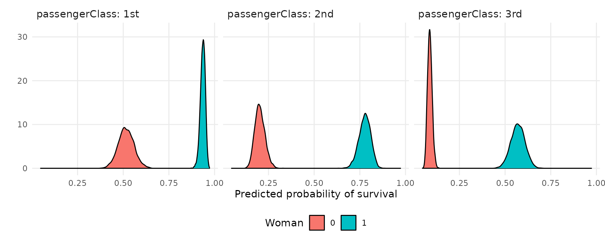
Marginal effects
Use slopes() to compute marginal effects (slopes of the regression equation) for each row of the dataset, and use ) to compute “Average Marginal Effects”, that is, the average of all observation-level marginal effects:
mfx <- slopes(mod)
mfx
#> rowid type term contrast estimate conf.low conf.high predicted predicted_hi predicted_lo X survived sex age passengerClass woman eps
#> 1 1 response woman dY/dX 0.1529809550 0.1088300671 0.2051897689 0.936660447 0.936675148 0.936660447 Allen, Miss. Elisabeth Walton 1 female 29.0000 1st 1 0.00010000
#> 2 2 response woman dY/dX 0.1354645808 0.0360765404 0.2970409428 0.849305001 0.849317385 0.849305001 Allison, Master. Hudson Trevor 1 male 0.9167 1st 0 0.00010000
#> 3 3 response woman dY/dX 0.0587890924 0.0287560702 0.1009453070 0.943329275 0.943335827 0.943329275 Allison, Miss. Helen Loraine 0 female 2.0000 1st 1 0.00010000
#> 4 4 response woman dY/dX 0.6545370754 0.5669929979 0.7442501304 0.513101054 0.513165197 0.513101054 Allison, Mr. Hudson Joshua Crei 0 male 30.0000 1st 0 0.00010000
#> 5 5 response woman dY/dX 0.1382873681 0.0972243260 0.1863968537 0.937493690 0.937508476 0.937493690 Allison, Mrs. Hudson J C (Bessi 0 female 25.0000 1st 1 0.00010000
#> 6 6 response woman dY/dX 0.7074046979 0.5893573670 0.8406470302 0.273054210 0.273125179 0.273054210 Anderson, Mr. Harry 1 male 48.0000 1st 0 0.00010000
#> 7 7 response woman dY/dX 0.2931438858 0.1707546020 0.4461127116 0.928203183 0.928231628 0.928203183 Andrews, Miss. Kornelia Theodos 1 female 63.0000 1st 1 0.00010000
#> 8 8 response woman dY/dX 0.7342278183 0.6331912700 0.8433598050 0.386455451 0.386528668 0.386455451 Andrews, Mr. Thomas Jr 0 male 39.0000 1st 0 0.00010000
#> 9 9 response woman dY/dX 0.2490405664 0.1619894170 0.3525032967 0.930799293 0.930825653 0.930799293 Appleton, Mrs. Edward Dale (Cha 1 female 53.0000 1st 1 0.00010000
#> 10 10 response woman dY/dX 0.3950401362 0.2421223663 0.5874707291 0.090803611 0.090846394 0.090803611 Artagaveytia, Mr. Ramon 0 male 71.0000 1st 0 0.00010000
#> 11 11 response woman dY/dX 0.7150227874 0.5993219200 0.8457942411 0.284669171 0.284742753 0.284669171 Astor, Col. John Jacob 0 male 47.0000 1st 0 0.00010000
#> 12 12 response woman dY/dX 0.1129182518 0.0759387512 0.1591959148 0.939363685 0.939374279 0.939363685 Astor, Mrs. John Jacob (Madelei 1 female 18.0000 1st 1 0.00010000
#> 13 13 response woman dY/dX 0.1345600755 0.0940387732 0.1824476411 0.937745154 0.937759148 0.937745154 Aubart, Mme. Leontine Pauline 1 female 24.0000 1st 1 0.00010000
#> 14 14 response woman dY/dX 0.1418627665 0.1004003947 0.1908205048 0.937248870 0.937262928 0.937248870 Barber, Miss. Ellen Nellie 1 female 26.0000 1st 1 0.00010000
#> 15 15 response woman dY/dX 0.2783526858 0.1469745310 0.4724453066 0.056204455 0.056230418 0.056204455 Barkworth, Mr. Algernon Henry W 1 male 80.0000 1st 0 0.00010000
#> 16 16 response woman dY/dX 0.5518611995 0.4541074250 0.6482272706 0.599035237 0.599086064 0.599035237 Baxter, Mr. Quigg Edmond 0 male 24.0000 1st 0 0.00010000
#> 17 17 response woman dY/dX 0.2365963913 0.1575085757 0.3296397516 0.931494760 0.931519159 0.931494760 Baxter, Mrs. James (Helene DeLa 1 female 50.0000 1st 1 0.00010000
#> 18 18 response woman dY/dX 0.1643188065 0.1173000182 0.2172773766 0.935867641 0.935883613 0.935867641 Bazzani, Miss. Albina 1 female 32.0000 1st 1 0.00010000
#> 19 19 response woman dY/dX 0.7195189595 0.6235076255 0.8213626510 0.428048281 0.428125828 0.428048281 Beattie, Mr. Thomson 0 male 36.0000 1st 0 0.00010000
#> 20 20 response woman dY/dX 0.7254708467 0.6285407203 0.8307795051 0.414008566 0.414081348 0.414008566 Beckwith, Mr. Richard Leonard 1 male 37.0000 1st 0 0.00010000
#> 21 21 response woman dY/dX 0.2238632693 0.1522047745 0.3063550019 0.932292474 0.932315210 0.932292474 Beckwith, Mrs. Richard Leonard 1 female 47.0000 1st 1 0.00010000
#> 22 22 response woman dY/dX 0.5894284151 0.4962929415 0.6810625894 0.571157117 0.571211572 0.571157117 Behr, Mr. Karl Howell 1 male 26.0000 1st 0 0.00010000
#> 23 23 response woman dY/dX 0.2029085835 0.1420798363 0.2722544006 0.933450658 0.933471669 0.933450658 Bidois, Miss. Rosalie 1 female 42.0000 1st 1 0.00010000
#> 24 24 response woman dY/dX 0.1529809550 0.1088300671 0.2051897689 0.936660447 0.936675148 0.936660447 Bird, Miss. Ellen 1 female 29.0000 1st 1 0.00010000
#> 25 25 response woman dY/dX 0.5708849923 0.4764875855 0.6651404568 0.585184923 0.585237390 0.585184923 Birnbaum, Mr. Jakob 0 male 25.0000 1st 0 0.00010000
#> 26 26 response woman dY/dX 0.5708849923 0.4764875855 0.6651404568 0.585184923 0.585237390 0.585184923 Bishop, Mr. Dickinson H 1 male 25.0000 1st 0 0.00010000
#> 27 27 response woman dY/dX 0.1164746920 0.0791090375 0.1628839094 0.939153875 0.939164801 0.939153875 Bishop, Mrs. Dickinson H (Helen 1 female 19.0000 1st 1 0.00010000
#> 28 28 response woman dY/dX 0.1756796116 0.1253685130 0.2317950120 0.935180230 0.935196988 0.935180230 Bissette, Miss. Amelia 1 female 35.0000 1st 1 0.00010000
#> 29 29 response woman dY/dX 0.6239146428 0.5336965071 0.7144731358 0.542037161 0.542105691 0.542037161 Bjornstrom-Steffansson, Mr. Mau 1 male 28.0000 1st 0 0.00010000
#> 30 30 response woman dY/dX 0.7270957975 0.6161654037 0.8536443842 0.308816335 0.308894642 0.308816335 Blackwell, Mr. Stephen Weart 0 male 45.0000 1st 0 0.00010000
#> 31 31 response woman dY/dX 0.7362356015 0.6354594629 0.8468285597 0.373488422 0.373563503 0.373488422 Blank, Mr. Henry 1 male 40.0000 1st 0 0.00010000
#> 32 32 response woman dY/dX 0.1567450660 0.1115523493 0.2092295837 0.936370404 0.936385510 0.936370404 Bonnell, Miss. Caroline 1 female 30.0000 1st 1 0.00010000
#> 33 33 response woman dY/dX 0.2709399947 0.1674477965 0.3971193760 0.929438760 0.929464672 0.929438760 Bonnell, Miss. Elizabeth 1 female 58.0000 1st 1 0.00010000
#> 34 34 response woman dY/dX 0.7362808020 0.6339430336 0.8527917913 0.346606328 0.346680361 0.346606328 Borebank, Mr. John James 0 male 42.0000 1st 0 0.00010000
#> 35 35 response woman dY/dX 0.2155015209 0.1485841805 0.2920416608 0.932766248 0.932787239 0.932766248 Bowen, Miss. Grace Scott 1 female 45.0000 1st 1 0.00010000
#> 36 36 response woman dY/dX 0.1272864414 0.0880775345 0.1746738949 0.938243561 0.938255699 0.938243561 Bowerman, Miss. Elsie Edith 1 female 22.0000 1st 1 0.00010000
#> 37 37 response woman dY/dX 0.7365614751 0.6360208128 0.8511034557 0.359665145 0.359740081 0.359665145 Brady, Mr. John Bertram 0 male 41.0000 1st 0 0.00010000
#> 38 38 response woman dY/dX 0.7074046979 0.5893573670 0.8406470302 0.273054210 0.273125179 0.273054210 Brandeis, Mr. Emil 0 male 48.0000 1st 0 0.00010000
#> 39 39 response woman dY/dX 0.2112016644 0.1465603761 0.2852730935 0.933031644 0.933052593 0.933031644 Brown, Mrs. James Joseph (Marga 1 female 44.0000 1st 1 0.00010000
#> 40 40 response woman dY/dX 0.2751987929 0.1686842727 0.4064935166 0.929281089 0.929309338 0.929281089 Brown, Mrs. John Murray (Caroli 1 female 59.0000 1st 1 0.00010000
#> 41 41 response woman dY/dX 0.2797320522 0.1696284987 0.4166595759 0.929048325 0.929077498 0.929048325 Bucknell, Mrs. William Robert ( 1 female 60.0000 1st 1 0.00010000
#> 42 42 response woman dY/dX 0.1988053112 0.1396614754 0.2659590505 0.933722476 0.933742045 0.933722476 Burns, Miss. Elizabeth Margaret 1 female 41.0000 1st 1 0.00010000
#> 43 43 response woman dY/dX 0.7270957975 0.6161654037 0.8536443842 0.308816335 0.308894642 0.308816335 Butt, Major. Archibald Willingh 0 male 45.0000 1st 0 0.00010000
#> 44 44 response woman dY/dX 0.7362808020 0.6339430336 0.8527917913 0.346606328 0.346680361 0.346606328 Calderhead, Mr. Edward Penningt 1 male 42.0000 1st 0 0.00010000
#> 45 45 response woman dY/dX 0.2490405664 0.1619894170 0.3525032967 0.930799293 0.930825653 0.930799293 Candee, Mrs. Edward (Helen Chur 1 female 53.0000 1st 1 0.00010000
#> 46 46 response woman dY/dX 0.7195189595 0.6235076255 0.8213626510 0.428048281 0.428125828 0.428048281 Cardeza, Mr. Thomas Drake Marti 1 male 36.0000 1st 0 0.00010000
#> 47 47 response woman dY/dX 0.2709399947 0.1674477965 0.3971193760 0.929438760 0.929464672 0.929438760 Cardeza, Mrs. James Warburton M 1 female 58.0000 1st 1 0.00010000
#> 48 48 response woman dY/dX 0.6922573306 0.6019026805 0.7849742002 0.470706970 0.470782255 0.470706970 Carlsson, Mr. Frans Olof 0 male 33.0000 1st 0 0.00010000
#> 49 49 response woman dY/dX 0.6239146428 0.5336965071 0.7144731358 0.542037161 0.542105691 0.542037161 Carrau, Mr. Francisco M 0 male 28.0000 1st 0 0.00010000
#> 50 50 response woman dY/dX 0.4121720625 0.2906174559 0.5401051912 0.690512843 0.690561592 0.690512843 Carrau, Mr. Jose Pedro 0 male 17.0000 1st 0 0.00010000
#> 51 51 response woman dY/dX 0.2929042700 0.1685448288 0.4426577397 0.759037013 0.759066762 0.759037013 Carter, Master. William Thornto 1 male 11.0000 1st 0 0.00010000
#> 52 52 response woman dY/dX 0.0990047784 0.0644572168 0.1445696432 0.940182682 0.940192855 0.940182682 Carter, Miss. Lucile Polk 1 female 14.0000 1st 1 0.00010000
#> 53 53 response woman dY/dX 0.7195189595 0.6235076255 0.8213626510 0.428048281 0.428125828 0.428048281 Carter, Mr. William Ernest 1 male 36.0000 1st 0 0.00010000
#> 54 54 response woman dY/dX 0.1798165795 0.1279776017 0.2365615102 0.934962841 0.934981377 0.934962841 Carter, Mrs. William Ernest (Lu 1 female 36.0000 1st 1 0.00010000
#> 55 55 response woman dY/dX 0.6989268389 0.5777133125 0.8349093437 0.261638253 0.261709703 0.261638253 Case, Mr. Howard Brown 0 male 49.0000 1st 0 0.00010000
#> 56 56 response woman dY/dX 0.7195189595 0.6235076255 0.8213626510 0.428048281 0.428125828 0.428048281 Cavendish, Mr. Tyrell William 0 male 36.0000 1st 0 0.00010000
#> 57 57 response woman dY/dX 0.3564458457 0.1749915240 0.6014509266 0.924039335 0.924075066 0.924039335 Cavendish, Mrs. Tyrell William 1 female 76.0000 1st 1 0.00010000
#> 58 58 response woman dY/dX 0.7215765255 0.6076113816 0.8524534595 0.296628822 0.296704982 0.296628822 Chaffee, Mr. Herbert Fuller 0 male 46.0000 1st 0 0.00010000
#> 59 59 response woman dY/dX 0.2238632693 0.1522047745 0.3063550019 0.932292474 0.932315210 0.932292474 Chaffee, Mrs. Herbert Fuller (C 1 female 47.0000 1st 1 0.00010000
#> 60 60 response woman dY/dX 0.6073051041 0.5157699682 0.6979084652 0.556532645 0.556596057 0.556532645 Chambers, Mr. Norman Campbell 1 male 27.0000 1st 0 0.00010000
#> 61 61 response woman dY/dX 0.1681732049 0.1200079745 0.2217423308 0.935684463 0.935701430 0.935684463 Chambers, Mrs. Norman Campbell 1 female 33.0000 1st 1 0.00010000
#> 62 62 response woman dY/dX 0.1798165795 0.1279776017 0.2365615102 0.934962841 0.934981377 0.934962841 Chaudanson, Miss. Victorine 1 female 36.0000 1st 1 0.00010000
#> 63 63 response woman dY/dX 0.1567450660 0.1115523493 0.2092295837 0.936370404 0.936385510 0.936370404 Cherry, Miss. Gladys 1 female 30.0000 1st 1 0.00010000
#> 64 64 response woman dY/dX 0.7270957975 0.6161654037 0.8536443842 0.308816335 0.308894642 0.308816335 Chevre, Mr. Paul Romaine 1 male 45.0000 1st 0 0.00010000
#> 65 65 response woman dY/dX 0.6073051041 0.5157699682 0.6979084652 0.556532645 0.556596057 0.556532645 Clark, Mr. Walter Miller 0 male 27.0000 1st 0 0.00010000
#> 66 66 response woman dY/dX 0.1418627665 0.1004003947 0.1908205048 0.937248870 0.937262928 0.937248870 Clark, Mrs. Walter Miller (Virg 1 female 26.0000 1st 1 0.00010000
#> 67 67 response woman dY/dX 0.1272864414 0.0880775345 0.1746738949 0.938243561 0.938255699 0.938243561 Cleaver, Miss. Alice 1 female 22.0000 1st 1 0.00010000
#> 68 68 response woman dY/dX 0.7150227874 0.5993219200 0.8457942411 0.284669171 0.284742753 0.284669171 Colley, Mr. Edward Pomeroy 0 male 47.0000 1st 0 0.00010000
#> 69 69 response woman dY/dX 0.1912493770 0.1348813960 0.2534406463 0.934333029 0.934352366 0.934333029 Compton, Miss. Sara Rebecca 1 female 39.0000 1st 1 0.00010000
#> 70 70 response woman dY/dX 0.7254708467 0.6285407203 0.8307795051 0.414008566 0.414081348 0.414008566 Compton, Mr. Alexander Taylor J 0 male 37.0000 1st 0 0.00010000
#> 71 71 response woman dY/dX 0.2976938182 0.1714211851 0.4567890289 0.927953117 0.927983176 0.927953117 Compton, Mrs. Alexander Taylor 1 female 64.0000 1st 1 0.00010000
#> 72 72 response woman dY/dX 0.2578410561 0.1646714514 0.3701398745 0.930316630 0.930343297 0.930316630 Cornell, Mrs. Robert Clifford ( 1 female 55.0000 1st 1 0.00010000
#> 73 73 response woman dY/dX 0.4093533517 0.2550198265 0.6012044687 0.095682449 0.095725267 0.095682449 Crosby, Capt. Edward Gifford 0 male 70.0000 1st 0 0.00010000
#> 74 74 response woman dY/dX 0.1798165795 0.1279776017 0.2365615102 0.934962841 0.934981377 0.934962841 Crosby, Miss. Harriet R 1 female 36.0000 1st 1 0.00010000
#> 75 75 response woman dY/dX 0.2976938182 0.1714211851 0.4567890289 0.927953117 0.927983176 0.927953117 Crosby, Mrs. Edward Gifford (Ca 1 female 64.0000 1st 1 0.00010000
#> 76 76 response woman dY/dX 0.7342278183 0.6331912700 0.8433598050 0.386455451 0.386528668 0.386455451 Cumings, Mr. John Bradley 0 male 39.0000 1st 0 0.00010000
#> 77 77 response woman dY/dX 0.1874362393 0.1325519126 0.2477399794 0.934544008 0.934562873 0.934544008 Cumings, Mrs. John Bradley (Flo 1 female 38.0000 1st 1 0.00010000
#> 78 78 response woman dY/dX 0.6792070769 0.5517565059 0.8235700596 0.240273903 0.240336452 0.240273903 Daly, Mr. Peter Denis 1 male 51.0000 1st 0 0.00010000
#> 79 79 response woman dY/dX 0.6073051041 0.5157699682 0.6979084652 0.556532645 0.556596057 0.556532645 Daniel, Mr. Robert Williams 1 male 27.0000 1st 0 0.00010000
#> 80 80 response woman dY/dX 0.1681732049 0.1200079745 0.2217423308 0.935684463 0.935701430 0.935684463 Daniels, Miss. Sarah 1 female 33.0000 1st 1 0.00010000
#> 81 81 response woman dY/dX 0.6683320375 0.5811108525 0.7581961652 0.498548145 0.498618844 0.498548145 Davidson, Mr. Thornton 0 male 31.0000 1st 0 0.00010000
#> 82 82 response woman dY/dX 0.1455045026 0.1032315022 0.1957380910 0.937087430 0.937101594 0.937087430 Davidson, Mrs. Thornton (Orian 1 female 27.0000 1st 1 0.00010000
#> 83 83 response woman dY/dX 0.6683320375 0.5811108525 0.7581961652 0.498548145 0.498618844 0.498548145 Dick, Mr. Albert Adrian 1 male 31.0000 1st 0 0.00010000
#> 84 84 response woman dY/dX 0.1095387596 0.0729368049 0.1554787188 0.939582826 0.939593087 0.939582826 Dick, Mrs. Albert Adrian (Vera 1 female 17.0000 1st 1 0.00010000
#> 85 85 response woman dY/dX 0.6565172772 0.5226690483 0.8102446811 0.219590429 0.219655588 0.219590429 Dodge, Dr. Washington 1 male 53.0000 1st 0 0.00010000
#> 86 86 response woman dY/dX 0.1768257500 0.0665208053 0.3382337260 0.824668023 0.824686359 0.824668023 Dodge, Master. Washington 1 male 4.0000 1st 0 0.00010000
#> 87 87 response woman dY/dX 0.2534439917 0.1632416362 0.3612686671 0.930566664 0.930591737 0.930566664 Dodge, Mrs. Washington (Ruth Vi 1 female 54.0000 1st 1 0.00010000
#> 88 88 response woman dY/dX 0.6892495121 0.5653217598 0.8299647924 0.250872053 0.250942428 0.250872053 Douglas, Mr. Walter Donald 0 male 50.0000 1st 0 0.00010000
#> 89 89 response woman dY/dX 0.1455045026 0.1032315022 0.1957380910 0.937087430 0.937101594 0.937087430 Douglas, Mrs. Frederick Charles 1 female 27.0000 1st 1 0.00010000
#> 90 90 response woman dY/dX 0.2280656626 0.1542153328 0.3137349189 0.932097212 0.932119625 0.932097212 Douglas, Mrs. Walter Donald (Ma 1 female 48.0000 1st 1 0.00010000
#> 91 91 response woman dY/dX 0.2280656626 0.1542153328 0.3137349189 0.932097212 0.932119625 0.932097212 Duff Gordon, Lady. (Lucille Chr 1 female 48.0000 1st 1 0.00010000
#> 92 92 response woman dY/dX 0.6989268389 0.5777133125 0.8349093437 0.261638253 0.261709703 0.261638253 Duff Gordon, Sir. Cosmo Edmund 1 male 49.0000 1st 0 0.00010000
#> 93 93 response woman dY/dX 0.7342278183 0.6331912700 0.8433598050 0.386455451 0.386528668 0.386455451 Dulles, Mr. William Crothers 0 male 39.0000 1st 0 0.00010000
#> 94 94 response woman dY/dX 0.1308835039 0.0911821502 0.1782088341 0.937994190 0.938007651 0.937994190 Earnshaw, Mrs. Boulton (Olive P 1 female 23.0000 1st 1 0.00010000
#> 95 95 response woman dY/dX 0.1874362393 0.1325519126 0.2477399794 0.934544008 0.934562873 0.934544008 Endres, Miss. Caroline Louise 1 female 38.0000 1st 1 0.00010000
#> 96 96 response woman dY/dX 0.2534439917 0.1632416362 0.3612686671 0.930566664 0.930591737 0.930566664 Eustis, Miss. Elizabeth Mussey 1 female 54.0000 1st 1 0.00010000
#> 97 97 response woman dY/dX 0.1798165795 0.1279776017 0.2365615102 0.934962841 0.934981377 0.934962841 Evans, Miss. Edith Corse 0 female 36.0000 1st 1 0.00010000
#> 98 98 response woman dY/dX 0.7195189595 0.6235076255 0.8213626510 0.428048281 0.428125828 0.428048281 Flynn, Mr. John Irwin (Irving 1 male 36.0000 1st 0 0.00010000
#> 99 99 response woman dY/dX 0.6545370754 0.5669929979 0.7442501304 0.513101054 0.513165197 0.513101054 Foreman, Mr. Benjamin Laventall 0 male 30.0000 1st 0 0.00010000
#> 100 100 response woman dY/dX 0.1345600755 0.0940387732 0.1824476411 0.937745154 0.937759148 0.937745154 Fortune, Miss. Alice Elizabeth 1 female 24.0000 1st 1 0.00010000
#> 101 101 response woman dY/dX 0.1492545486 0.1062602699 0.2002888560 0.936936965 0.936951891 0.936936965 Fortune, Miss. Ethel Flora 1 female 28.0000 1st 1 0.00010000
#> 102 102 response woman dY/dX 0.1308835039 0.0911821502 0.1782088341 0.937994190 0.938007651 0.937994190 Fortune, Miss. Mabel Helen 1 female 23.0000 1st 1 0.00010000
#> 103 103 response woman dY/dX 0.4528791866 0.3366001519 0.5716308986 0.665538473 0.665584392 0.665538473 Fortune, Mr. Charles Alexander 0 male 19.0000 1st 0 0.00010000
#> 104 104 response woman dY/dX 0.5001171072 0.3435895827 0.6839787412 0.129933747 0.129989817 0.129933747 Fortune, Mr. Mark 0 male 64.0000 1st 0 0.00010000
#> 105 105 response woman dY/dX 0.2797320522 0.1696284987 0.4166595759 0.929048325 0.929077498 0.929048325 Fortune, Mrs. Mark (Mary McDoug 1 female 60.0000 1st 1 0.00010000
#> 106 106 response woman dY/dX 0.1567450660 0.1115523493 0.2092295837 0.936370404 0.936385510 0.936370404 Francatelli, Miss. Laura Mabel 1 female 30.0000 1st 1 0.00010000
#> 107 107 response woman dY/dX 0.6892495121 0.5653217598 0.8299647924 0.250872053 0.250942428 0.250872053 Frauenthal, Dr. Henry William 1 male 50.0000 1st 0 0.00010000
#> 108 108 response woman dY/dX 0.7347120173 0.6296021821 0.8550640081 0.333914072 0.333989768 0.333914072 Frauenthal, Mr. Isaac Gerald 1 male 43.0000 1st 0 0.00010000
#> 109 109 response woman dY/dX 0.1272864414 0.0880775345 0.1746738949 0.938243561 0.938255699 0.938243561 Frolicher, Miss. Hedwig Margari 1 female 22.0000 1st 1 0.00010000
#> 110 110 response woman dY/dX 0.5606668887 0.4077214013 0.7326602276 0.158167724 0.158224582 0.158167724 Frolicher-Stehli, Mr. Maxmillia 1 male 60.0000 1st 0 0.00010000
#> 111 111 response woman dY/dX 0.2280656626 0.1542153328 0.3137349189 0.932097212 0.932119625 0.932097212 Frolicher-Stehli, Mrs. Maxmilli 1 female 48.0000 1st 1 0.00010000
#> 112 112 response woman dY/dX 0.7254708467 0.6285407203 0.8307795051 0.414008566 0.414081348 0.414008566 Futrelle, Mr. Jacques Heath 0 male 37.0000 1st 0 0.00010000
#> 113 113 response woman dY/dX 0.1756796116 0.1253685130 0.2317950120 0.935180230 0.935196988 0.935180230 Futrelle, Mrs. Jacques Heath (L 1 female 35.0000 1st 1 0.00010000
#> 114 114 response woman dY/dX 0.7150227874 0.5993219200 0.8457942411 0.284669171 0.284742753 0.284669171 Gee, Mr. Arthur H 0 male 47.0000 1st 0 0.00010000
#> 115 115 response woman dY/dX 0.1756796116 0.1253685130 0.2317950120 0.935180230 0.935196988 0.935180230 Geiger, Miss. Amalie 1 female 35.0000 1st 1 0.00010000
#> 116 116 response woman dY/dX 0.1272864414 0.0880775345 0.1746738949 0.938243561 0.938255699 0.938243561 Gibson, Miss. Dorothy Winifred 1 female 22.0000 1st 1 0.00010000
#> 117 117 response woman dY/dX 0.2155015209 0.1485841805 0.2920416608 0.932766248 0.932787239 0.932766248 Gibson, Mrs. Leonard (Pauline C 1 female 45.0000 1st 1 0.00010000
#> 118 118 response woman dY/dX 0.5518611995 0.4541074250 0.6482272706 0.599035237 0.599086064 0.599035237 Giglio, Mr. Victor 0 male 24.0000 1st 0 0.00010000
#> 119 119 response woman dY/dX 0.6989268389 0.5777133125 0.8349093437 0.261638253 0.261709703 0.261638253 Goldenberg, Mr. Samuel L 1 male 49.0000 1st 0 0.00010000
#> 120 120 response woman dY/dX 0.3950401362 0.2421223663 0.5874707291 0.090803611 0.090846394 0.090803611 Goldschmidt, Mr. George B 0 male 71.0000 1st 0 0.00010000
#> 121 121 response woman dY/dX 0.6565172772 0.5226690483 0.8102446811 0.219590429 0.219655588 0.219590429 Gracie, Col. Archibald IV 1 male 53.0000 1st 0 0.00010000
#> 122 122 response woman dY/dX 0.1164746920 0.0791090375 0.1628839094 0.939153875 0.939164801 0.939153875 Graham, Miss. Margaret Edith 1 female 19.0000 1st 1 0.00010000
#> 123 123 response woman dY/dX 0.7300816712 0.6315057443 0.8381530667 0.400173778 0.400249422 0.400173778 Graham, Mr. George Edward 0 male 38.0000 1st 0 0.00010000
#> 124 124 response woman dY/dX 0.2709399947 0.1674477965 0.3971193760 0.929438760 0.929464672 0.929438760 Graham, Mrs. William Thompson ( 1 female 58.0000 1st 1 0.00010000
#> 125 125 response woman dY/dX 0.5328308164 0.4318750576 0.6330322880 0.612551813 0.612605505 0.612551813 Greenfield, Mr. William Bertram 1 male 23.0000 1st 0 0.00010000
#> 126 126 response woman dY/dX 0.2155015209 0.1485841805 0.2920416608 0.932766248 0.932787239 0.932766248 Greenfield, Mrs. Leo David (Bla 1 female 45.0000 1st 1 0.00010000
#> 127 127 response woman dY/dX 0.7215765255 0.6076113816 0.8524534595 0.296628822 0.296704982 0.296628822 Guggenheim, Mr. Benjamin 0 male 46.0000 1st 0 0.00010000
#> 128 128 response woman dY/dX 0.5708849923 0.4764875855 0.6651404568 0.585184923 0.585237390 0.585184923 Harder, Mr. George Achilles 1 male 25.0000 1st 0 0.00010000
#> 129 129 response woman dY/dX 0.1382873681 0.0972243260 0.1863968537 0.937493690 0.937508476 0.937493690 Harder, Mrs. George Achilles (D 1 female 25.0000 1st 1 0.00010000
#> 130 130 response woman dY/dX 0.7074046979 0.5893573670 0.8406470302 0.273054210 0.273125179 0.273054210 Harper, Mr. Henry Sleeper 1 male 48.0000 1st 0 0.00010000
#> 131 131 response woman dY/dX 0.2322573823 0.1561317738 0.3215026647 0.931854643 0.931878094 0.931854643 Harper, Mrs. Henry Sleeper (Myn 1 female 49.0000 1st 1 0.00010000
#> 132 132 response woman dY/dX 0.7270957975 0.6161654037 0.8536443842 0.308816335 0.308894642 0.308816335 Harris, Mr. Henry Birkhardt 0 male 45.0000 1st 0 0.00010000
#> 133 133 response woman dY/dX 0.1756796116 0.1253685130 0.2317950120 0.935180230 0.935196988 0.935180230 Harris, Mrs. Henry Birkhardt (I 1 female 35.0000 1st 1 0.00010000
#> 134 134 response woman dY/dX 0.7362356015 0.6354594629 0.8468285597 0.373488422 0.373563503 0.373488422 Harrison, Mr. William 0 male 40.0000 1st 0 0.00010000
#> 135 135 response woman dY/dX 0.6073051041 0.5157699682 0.6979084652 0.556532645 0.556596057 0.556532645 Hassab, Mr. Hammad 1 male 27.0000 1st 0 0.00010000
#> 136 136 response woman dY/dX 0.1345600755 0.0940387732 0.1824476411 0.937745154 0.937759148 0.937745154 Hays, Miss. Margaret Bechstein 1 female 24.0000 1st 1 0.00010000
#> 137 137 response woman dY/dX 0.6316833665 0.4911975776 0.7889908924 0.200350636 0.200416089 0.200350636 Hays, Mr. Charles Melville 0 male 55.0000 1st 0 0.00010000
#> 138 138 response woman dY/dX 0.2448665474 0.1605935638 0.3445157253 0.930958414 0.930983350 0.930958414 Hays, Mrs. Charles Melville (Cl 1 female 52.0000 1st 1 0.00010000
#> 139 139 response woman dY/dX 0.7362808020 0.6339430336 0.8527917913 0.346606328 0.346680361 0.346606328 Head, Mr. Christopher 0 male 42.0000 1st 0 0.00010000
#> 140 140 response woman dY/dX 0.6316833665 0.4911975776 0.7889908924 0.200350636 0.200416089 0.200350636 Hipkins, Mr. William Edward 0 male 55.0000 1st 0 0.00010000
#> 141 141 response woman dY/dX 0.1059726386 0.0702071984 0.1515477736 0.939699254 0.939709906 0.939699254 Hippach, Miss. Jean Gertrude 1 female 16.0000 1st 1 0.00010000
#> 142 142 response woman dY/dX 0.2112016644 0.1465603761 0.2852730935 0.933031644 0.933052593 0.933031644 Hippach, Mrs. Louis Albert (Ida 1 female 44.0000 1st 1 0.00010000
#> 143 143 response woman dY/dX 0.2407020997 0.1592251661 0.3367429665 0.931217573 0.931242127 0.931217573 Hogeboom, Mrs. John C (Anna And 1 female 51.0000 1st 1 0.00010000
#> 144 144 response woman dY/dX 0.7362808020 0.6339430336 0.8527917913 0.346606328 0.346680361 0.346606328 Holverson, Mr. Alexander Oskar 0 male 42.0000 1st 0 0.00010000
#> 145 145 response woman dY/dX 0.1756796116 0.1253685130 0.2317950120 0.935180230 0.935196988 0.935180230 Holverson, Mrs. Alexander Oskar 1 female 35.0000 1st 1 0.00010000
#> 146 146 response woman dY/dX 0.7121831555 0.6178549967 0.8099816284 0.442441220 0.442512684 0.442441220 Homer, Mr. Harry (Mr E Haven) 1 male 35.0000 1st 0 0.00010000
#> 147 147 response woman dY/dX 0.7300816712 0.6315057443 0.8381530667 0.400173778 0.400249422 0.400173778 Hoyt, Mr. Frederick Maxfield 1 male 38.0000 1st 0 0.00010000
#> 148 148 response woman dY/dX 0.1756796116 0.1253685130 0.2317950120 0.935180230 0.935196988 0.935180230 Hoyt, Mrs. Frederick Maxfield ( 1 female 35.0000 1st 1 0.00010000
#> 149 149 response woman dY/dX 0.1874362393 0.1325519126 0.2477399794 0.934544008 0.934562873 0.934544008 Icard, Miss. Amelie 1 female 38.0000 1st 1 0.00010000
#> 150 150 response woman dY/dX 0.2365963913 0.1575085757 0.3296397516 0.931494760 0.931519159 0.931494760 Isham, Miss. Ann Elizabeth 0 female 50.0000 1st 1 0.00010000
#> 151 151 response woman dY/dX 0.6989268389 0.5777133125 0.8349093437 0.261638253 0.261709703 0.261638253 Ismay, Mr. Joseph Bruce 1 male 49.0000 1st 0 0.00010000
#> 152 152 response woman dY/dX 0.7215765255 0.6076113816 0.8524534595 0.296628822 0.296704982 0.296628822 Jones, Mr. Charles Cresson 0 male 46.0000 1st 0 0.00010000
#> 153 153 response woman dY/dX 0.6892495121 0.5653217598 0.8299647924 0.250872053 0.250942428 0.250872053 Julian, Mr. Henry Forbes 0 male 50.0000 1st 0 0.00010000
#> 154 154 response woman dY/dX 0.6870370172 0.5977522499 0.7783333232 0.477649015 0.477718349 0.477649015 Keeping, Mr. Edwin 0 male 32.5000 1st 0 0.00010000
#> 155 155 response woman dY/dX 0.5901584379 0.4416338482 0.7560457293 0.174310788 0.174367787 0.174310788 Kent, Mr. Edward Austin 0 male 58.0000 1st 0 0.00010000
#> 156 156 response woman dY/dX 0.7365614751 0.6360208128 0.8511034557 0.359665145 0.359740081 0.359665145 Kenyon, Mr. Frederick R 0 male 41.0000 1st 0 0.00010000
#> 157 157 response woman dY/dX 0.7362808020 0.6339430336 0.8527917913 0.346606328 0.346680361 0.346606328 Kimball, Mr. Edwin Nelson Jr 1 male 42.0000 1st 0 0.00010000
#> 158 158 response woman dY/dX 0.2155015209 0.1485841805 0.2920416608 0.932766248 0.932787239 0.932766248 Kimball, Mrs. Edwin Nelson Jr ( 1 female 45.0000 1st 1 0.00010000
#> 159 159 response woman dY/dX 0.1912493770 0.1348813960 0.2534406463 0.934333029 0.934352366 0.934333029 Kreuchen, Miss. Emilie 1 female 39.0000 1st 1 0.00010000
#> 160 160 response woman dY/dX 0.2322573823 0.1561317738 0.3215026647 0.931854643 0.931878094 0.931854643 Leader, Dr. Alice (Farnham) 1 female 49.0000 1st 1 0.00010000
#> 161 161 response woman dY/dX 0.1567450660 0.1115523493 0.2092295837 0.936370404 0.936385510 0.936370404 LeRoy, Miss. Bertha 1 female 30.0000 1st 1 0.00010000
#> 162 162 response woman dY/dX 0.7121831555 0.6178549967 0.8099816284 0.442441220 0.442512684 0.442441220 Lesurer, Mr. Gustave J 1 male 35.0000 1st 0 0.00010000
#> 163 163 response woman dY/dX 0.7362808020 0.6339430336 0.8527917913 0.346606328 0.346680361 0.346606328 Lindeberg-Lind, Mr. Erik Gustaf 0 male 42.0000 1st 0 0.00010000
#> 164 164 response woman dY/dX 0.2578410561 0.1646714514 0.3701398745 0.930316630 0.930343297 0.930316630 Lindstrom, Mrs. Carl Johan (Sig 1 female 55.0000 1st 1 0.00010000
#> 165 165 response woman dY/dX 0.1059726386 0.0702071984 0.1515477736 0.939699254 0.939709906 0.939699254 Lines, Miss. Mary Conover 1 female 16.0000 1st 1 0.00010000
#> 166 166 response woman dY/dX 0.2407020997 0.1592251661 0.3367429665 0.931217573 0.931242127 0.931217573 Lines, Mrs. Ernest H (Elizabeth 1 female 51.0000 1st 1 0.00010000
#> 167 167 response woman dY/dX 0.6399150236 0.5504647532 0.7288891123 0.527634424 0.527695189 0.527634424 Long, Mr. Milton Clyde 0 male 29.0000 1st 0 0.00010000
#> 168 168 response woman dY/dX 0.1236572170 0.0850853311 0.1709073224 0.938557982 0.938570487 0.938557982 Longley, Miss. Gretchen Fiske 1 female 21.0000 1st 1 0.00010000
#> 169 169 response woman dY/dX 0.6545370754 0.5669929979 0.7442501304 0.513101054 0.513165197 0.513101054 Loring, Mr. Joseph Holland 0 male 30.0000 1st 0 0.00010000
#> 170 170 response woman dY/dX 0.2709399947 0.1674477965 0.3971193760 0.929438760 0.929464672 0.929438760 Lurette, Miss. Elise 1 female 58.0000 1st 1 0.00010000
#> 171 171 response woman dY/dX 0.1025234588 0.0673137301 0.1480321713 0.939887113 0.939897377 0.939887113 Madill, Miss. Georgette Alexand 1 female 15.0000 1st 1 0.00010000
#> 172 172 response woman dY/dX 0.6545370754 0.5669929979 0.7442501304 0.513101054 0.513165197 0.513101054 Maguire, Mr. John Edward 0 male 30.0000 1st 0 0.00010000
#> 173 173 response woman dY/dX 0.1059726386 0.0702071984 0.1515477736 0.939699254 0.939709906 0.939699254 Maioni, Miss. Roberta 1 female 16.0000 1st 1 0.00010000
#> 174 174 response woman dY/dX 0.4528791866 0.3366001519 0.5716308986 0.665538473 0.665584392 0.665538473 Marvin, Mr. Daniel Warner 0 male 19.0000 1st 0 0.00010000
#> 175 175 response woman dY/dX 0.1129182518 0.0759387512 0.1591959148 0.939363685 0.939374279 0.939363685 Marvin, Mrs. Daniel Warner (Mar 1 female 18.0000 1st 1 0.00010000
#> 176 176 response woman dY/dX 0.1345600755 0.0940387732 0.1824476411 0.937745154 0.937759148 0.937745154 Mayne, Mlle. Berthe Antonine ( 1 female 24.0000 1st 1 0.00010000
#> 177 177 response woman dY/dX 0.7215765255 0.6076113816 0.8524534595 0.296628822 0.296704982 0.296628822 McCaffry, Mr. Thomas Francis 0 male 46.0000 1st 0 0.00010000
#> 178 178 response woman dY/dX 0.6444106683 0.5075550189 0.7999647525 0.209793193 0.209853625 0.209793193 McCarthy, Mr. Timothy J 0 male 54.0000 1st 0 0.00010000
#> 179 179 response woman dY/dX 0.7195189595 0.6235076255 0.8213626510 0.428048281 0.428125828 0.428048281 McGough, Mr. James Robert 1 male 36.0000 1st 0 0.00010000
#> 180 180 response woman dY/dX 0.6239146428 0.5336965071 0.7144731358 0.542037161 0.542105691 0.542037161 Meyer, Mr. Edgar Joseph 0 male 28.0000 1st 0 0.00010000
#> 181 181 response woman dY/dX 0.4848264182 0.3283895906 0.6680698640 0.123578982 0.123631947 0.123578982 Millet, Mr. Francis Davis 0 male 65.0000 1st 0 0.00010000
#> 182 182 response woman dY/dX 0.7313979387 0.6238834208 0.8559273041 0.321195508 0.321262793 0.321195508 Minahan, Dr. William Edward 0 male 44.0000 1st 0 0.00010000
#> 183 183 response woman dY/dX 0.1681732049 0.1200079745 0.2217423308 0.935684463 0.935701430 0.935684463 Minahan, Miss. Daisy E 1 female 33.0000 1st 1 0.00010000
#> 184 184 response woman dY/dX 0.1835841646 0.1302250393 0.2420682218 0.934781701 0.934800232 0.934781701 Minahan, Mrs. William Edward (L 1 female 37.0000 1st 1 0.00010000
#> 185 185 response woman dY/dX 0.6545370754 0.5669929979 0.7442501304 0.513101054 0.513165197 0.513101054 Mock, Mr. Philipp Edmund 1 male 30.0000 1st 0 0.00010000
#> 186 186 response woman dY/dX 0.6316833665 0.4911975776 0.7889908924 0.200350636 0.200416089 0.200350636 Molson, Mr. Harry Markland 0 male 55.0000 1st 0 0.00010000
#> 187 187 response woman dY/dX 0.7150227874 0.5993219200 0.8457942411 0.284669171 0.284742753 0.284669171 Moore, Mr. Clarence Bloomfield 0 male 47.0000 1st 0 0.00010000
#> 188 188 response woman dY/dX 0.7254708467 0.6285407203 0.8307795051 0.414008566 0.414081348 0.414008566 Natsch, Mr. Charles H 0 male 37.0000 1st 0 0.00010000
#> 189 189 response woman dY/dX 0.1606189395 0.1143513661 0.2131639367 0.936155400 0.936171015 0.936155400 Newell, Miss. Madeleine 1 female 31.0000 1st 1 0.00010000
#> 190 190 response woman dY/dX 0.1308835039 0.0911821502 0.1782088341 0.937994190 0.938007651 0.937994190 Newell, Miss. Marjorie 1 female 23.0000 1st 1 0.00010000
#> 191 191 response woman dY/dX 0.5901584379 0.4416338482 0.7560457293 0.174310788 0.174367787 0.174310788 Newell, Mr. Arthur Webster 0 male 58.0000 1st 0 0.00010000
#> 192 192 response woman dY/dX 0.1164746920 0.0791090375 0.1628839094 0.939153875 0.939164801 0.939153875 Newsom, Miss. Helen Monypeny 1 female 19.0000 1st 1 0.00010000
#> 193 193 response woman dY/dX 0.5001171072 0.3435895827 0.6839787412 0.129933747 0.129989817 0.129933747 Nicholson, Mr. Arthur Ernest 0 male 64.0000 1st 0 0.00010000
#> 194 194 response woman dY/dX 0.1912493770 0.1348813960 0.2534406463 0.934333029 0.934352366 0.934333029 Oliva y Ocana, Dona. Fermina 1 female 39.0000 1st 1 0.00010000
#> 195 195 response woman dY/dX 0.1272864414 0.0880775345 0.1746738949 0.938243561 0.938255699 0.938243561 Ostby, Miss. Helene Ragnhild 1 female 22.0000 1st 1 0.00010000
#> 196 196 response woman dY/dX 0.4848264182 0.3283895906 0.6680698640 0.123578982 0.123631947 0.123578982 Ostby, Mr. Engelhart Cornelius 0 male 65.0000 1st 0 0.00010000
#> 197 197 response woman dY/dX 0.6319713574 0.5418996219 0.7215891197 0.534903918 0.534973216 0.534903918 Ovies y Rodriguez, Mr. Servando 0 male 28.5000 1st 0 0.00010000
#> 198 198 response woman dY/dX 0.7243266746 0.6122657436 0.8531802310 0.302681711 0.302756933 0.302681711 Partner, Mr. Austen 0 male 45.5000 1st 0 0.00010000
#> 199 199 response woman dY/dX 0.5328308164 0.4318750576 0.6330322880 0.612551813 0.612605505 0.612551813 Payne, Mr. Vivian Ponsonby 0 male 23.0000 1st 0 0.00010000
#> 200 200 response woman dY/dX 0.6399150236 0.5504647532 0.7288891123 0.527634424 0.527695189 0.527634424 Pears, Mr. Thomas Clinton 0 male 29.0000 1st 0 0.00010000
#> 201 201 response woman dY/dX 0.1272864414 0.0880775345 0.1746738949 0.938243561 0.938255699 0.938243561 Pears, Mrs. Thomas (Edith Wearn 1 female 22.0000 1st 1 0.00010000
#> 202 202 response woman dY/dX 0.4326713804 0.3128300662 0.5560385389 0.678188340 0.678235962 0.678188340 Penasco y Castellana, Mr. Victo 0 male 18.0000 1st 0 0.00010000
#> 203 203 response woman dY/dX 0.1095387596 0.0729368049 0.1554787188 0.939582826 0.939593087 0.939582826 Penasco y Castellana, Mrs. Vict 1 female 17.0000 1st 1 0.00010000
#> 204 204 response woman dY/dX 0.1567450660 0.1115523493 0.2092295837 0.936370404 0.936385510 0.936370404 Perreault, Miss. Anne 1 female 30.0000 1st 1 0.00010000
#> 205 205 response woman dY/dX 0.6677591202 0.5378363518 0.8167655528 0.229947185 0.230017999 0.229947185 Peuchen, Major. Arthur Godfrey 1 male 52.0000 1st 0 0.00010000
#> 206 206 response woman dY/dX 0.7150227874 0.5993219200 0.8457942411 0.284669171 0.284742753 0.284669171 Porter, Mr. Walter Chamberlain 0 male 47.0000 1st 0 0.00010000
#> 207 207 response woman dY/dX 0.2622594147 0.1652479012 0.3788104321 0.930023161 0.930049999 0.930023161 Potter, Mrs. Thomas Jr (Lily Al 1 female 56.0000 1st 1 0.00010000
#> 208 208 response woman dY/dX 0.7300816712 0.6315057443 0.8381530667 0.400173778 0.400249422 0.400173778 Reuchlin, Jonkheer. John George 0 male 38.0000 1st 0 0.00010000
#> 209 209 response woman dY/dX 0.5130310886 0.4088572038 0.6186595753 0.626106172 0.626163137 0.626106172 Ringhini, Mr. Sante 0 male 22.0000 1st 0 0.00010000
#> 210 210 response woman dY/dX 0.2069008047 0.1443412034 0.2791873543 0.933228120 0.933249965 0.933228120 Robert, Mrs. Edward Scott (Elis 1 female 43.0000 1st 1 0.00010000
#> 211 211 response woman dY/dX 0.6683320375 0.5811108525 0.7581961652 0.498548145 0.498618844 0.498548145 Roebling, Mr. Washington August 0 male 31.0000 1st 0 0.00010000
#> 212 212 response woman dY/dX 0.7270957975 0.6161654037 0.8536443842 0.308816335 0.308894642 0.308816335 Romaine, Mr. Charles Hallace ( 1 male 45.0000 1st 0 0.00010000
#> 213 213 response woman dY/dX 0.1681732049 0.1200079745 0.2217423308 0.935684463 0.935701430 0.935684463 Rosenbaum, Miss. Edith Louise 1 female 33.0000 1st 1 0.00010000
#> 214 214 response woman dY/dX 0.7215765255 0.6076113816 0.8524534595 0.296628822 0.296704982 0.296628822 Rosenshine, Mr. George (Mr Geo 0 male 46.0000 1st 0 0.00010000
#> 215 215 response woman dY/dX 0.7195189595 0.6235076255 0.8213626510 0.428048281 0.428125828 0.428048281 Ross, Mr. John Hugo 0 male 36.0000 1st 0 0.00010000
#> 216 216 response woman dY/dX 0.1681732049 0.1200079745 0.2217423308 0.935684463 0.935701430 0.935684463 Rothes, the Countess. of (Lucy 1 female 33.0000 1st 1 0.00010000
#> 217 217 response woman dY/dX 0.6316833665 0.4911975776 0.7889908924 0.200350636 0.200416089 0.200350636 Rothschild, Mr. Martin 0 male 55.0000 1st 0 0.00010000
#> 218 218 response woman dY/dX 0.2534439917 0.1632416362 0.3612686671 0.930566664 0.930591737 0.930566664 Rothschild, Mrs. Martin (Elizab 1 female 54.0000 1st 1 0.00010000
#> 219 219 response woman dY/dX 0.6922573306 0.6019026805 0.7849742002 0.470706970 0.470782255 0.470706970 Rowe, Mr. Alfred G 0 male 33.0000 1st 0 0.00010000
#> 220 220 response woman dY/dX 0.3313721207 0.2058234244 0.4745956446 0.737626214 0.737658899 0.737626214 Ryerson, Master. John Borie 1 male 13.0000 1st 0 0.00010000
#> 221 221 response woman dY/dX 0.1129182518 0.0759387512 0.1591959148 0.939363685 0.939374279 0.939363685 Ryerson, Miss. Emily Borie 1 female 18.0000 1st 1 0.00010000
#> 222 222 response woman dY/dX 0.1236572170 0.0850853311 0.1709073224 0.938557982 0.938570487 0.938557982 Ryerson, Miss. Susan Parker Su 1 female 21.0000 1st 1 0.00010000
#> 223 223 response woman dY/dX 0.5456050100 0.3905884351 0.7206402355 0.150694371 0.150756225 0.150694371 Ryerson, Mr. Arthur Larned 0 male 61.0000 1st 0 0.00010000
#> 224 224 response woman dY/dX 0.2280656626 0.1542153328 0.3137349189 0.932097212 0.932119625 0.932097212 Ryerson, Mrs. Arthur Larned (Em 1 female 48.0000 1st 1 0.00010000
#> 225 225 response woman dY/dX 0.1345600755 0.0940387732 0.1824476411 0.937745154 0.937759148 0.937745154 Sagesser, Mlle. Emma 1 female 24.0000 1st 1 0.00010000
#> 226 226 response woman dY/dX 0.1756796116 0.1253685130 0.2317950120 0.935180230 0.935196988 0.935180230 Schabert, Mrs. Paul (Emma Mock) 1 female 35.0000 1st 1 0.00010000
#> 227 227 response woman dY/dX 0.1567450660 0.1115523493 0.2092295837 0.936370404 0.936385510 0.936370404 Serepeca, Miss. Augusta 1 female 30.0000 1st 1 0.00010000
#> 228 228 response woman dY/dX 0.7027478020 0.6106969316 0.7974023643 0.456464144 0.456536004 0.456464144 Seward, Mr. Frederic Kimber 1 male 34.0000 1st 0 0.00010000
#> 229 229 response woman dY/dX 0.1950158504 0.1374762168 0.2599675746 0.934036900 0.934056291 0.934036900 Shutes, Miss. Elizabeth W 1 female 40.0000 1st 1 0.00010000
#> 230 230 response woman dY/dX 0.7121831555 0.6178549967 0.8099816284 0.442441220 0.442512684 0.442441220 Silverthorne, Mr. Spencer Victo 1 male 35.0000 1st 0 0.00010000
#> 231 231 response woman dY/dX 0.6892495121 0.5653217598 0.8299647924 0.250872053 0.250942428 0.250872053 Silvey, Mr. William Baird 0 male 50.0000 1st 0 0.00010000
#> 232 232 response woman dY/dX 0.1912493770 0.1348813960 0.2534406463 0.934333029 0.934352366 0.934333029 Silvey, Mrs. William Baird (Ali 1 female 39.0000 1st 1 0.00010000
#> 233 233 response woman dY/dX 0.6182553716 0.4747392123 0.7783795391 0.191383782 0.191442988 0.191383782 Simonius-Blumer, Col. Oberst Al 1 male 56.0000 1st 0 0.00010000
#> 234 234 response woman dY/dX 0.6239146428 0.5336965071 0.7144731358 0.542037161 0.542105691 0.542037161 Sloper, Mr. William Thompson 1 male 28.0000 1st 0 0.00010000
#> 235 235 response woman dY/dX 0.6182553716 0.4747392123 0.7783795391 0.191383782 0.191442988 0.191383782 Smart, Mr. John Montgomery 0 male 56.0000 1st 0 0.00010000
#> 236 236 response woman dY/dX 0.6182553716 0.4747392123 0.7783795391 0.191383782 0.191442988 0.191383782 Smith, Mr. James Clinch 0 male 56.0000 1st 0 0.00010000
#> 237 237 response woman dY/dX 0.5518611995 0.4541074250 0.6482272706 0.599035237 0.599086064 0.599035237 Smith, Mr. Lucien Philip 0 male 24.0000 1st 0 0.00010000
#> 238 238 response woman dY/dX 0.1129182518 0.0759387512 0.1591959148 0.939363685 0.939374279 0.939363685 Smith, Mrs. Lucien Philip (Mary 1 female 18.0000 1st 1 0.00010000
#> 239 239 response woman dY/dX 0.5518611995 0.4541074250 0.6482272706 0.599035237 0.599086064 0.599035237 Snyder, Mr. John Pillsbury 1 male 24.0000 1st 0 0.00010000
#> 240 240 response woman dY/dX 0.1308835039 0.0911821502 0.1782088341 0.937994190 0.938007651 0.937994190 Snyder, Mrs. John Pillsbury (Ne 1 female 23.0000 1st 1 0.00010000
#> 241 241 response woman dY/dX 0.2067966608 0.0908700276 0.3667247532 0.807649826 0.807670303 0.807649826 Spedden, Master. Robert Douglas 1 male 6.0000 1st 0 0.00010000
#> 242 242 response woman dY/dX 0.7270957975 0.6161654037 0.8536443842 0.308816335 0.308894642 0.308816335 Spedden, Mr. Frederic Oakley 1 male 45.0000 1st 0 0.00010000
#> 243 243 response woman dY/dX 0.1950158504 0.1374762168 0.2599675746 0.934036900 0.934056291 0.934036900 Spedden, Mrs. Frederic Oakley ( 1 female 40.0000 1st 1 0.00010000
#> 244 244 response woman dY/dX 0.6045938733 0.4578696603 0.7664265364 0.182725224 0.182783972 0.182725224 Spencer, Mr. William Augustus 0 male 57.0000 1st 0 0.00010000
#> 245 245 response woman dY/dX 0.6811579706 0.5922601397 0.7722453307 0.484608612 0.484674724 0.484608612 Stahelin-Maeglin, Dr. Max 1 male 32.0000 1st 0 0.00010000
#> 246 246 response woman dY/dX 0.5306952144 0.3749938195 0.7083659888 0.143466669 0.143517607 0.143466669 Stead, Mr. William Thomas 0 male 62.0000 1st 0 0.00010000
#> 247 247 response woman dY/dX 0.6444106683 0.5075550189 0.7999647525 0.209793193 0.209853625 0.209793193 Stengel, Mr. Charles Emil Henry 1 male 54.0000 1st 0 0.00010000
#> 248 248 response woman dY/dX 0.2069008047 0.1443412034 0.2791873543 0.933228120 0.933249965 0.933228120 Stengel, Mrs. Charles Emil Henr 1 female 43.0000 1st 1 0.00010000
#> 249 249 response woman dY/dX 0.2448665474 0.1605935638 0.3445157253 0.930958414 0.930983350 0.930958414 Stephenson, Mrs. Walter Bertram 1 female 52.0000 1st 1 0.00010000
#> 250 250 response woman dY/dX 0.2886124339 0.1706099945 0.4365853091 0.928434443 0.928463996 0.928434443 Stone, Mrs. George Nelson (Mart 1 female 62.0000 1st 1 0.00010000
#> 251 251 response woman dY/dX 0.4546020690 0.2982280281 0.6413877501 0.111707156 0.111751128 0.111707156 Straus, Mr. Isidor 0 male 67.0000 1st 0 0.00010000
#> 252 252 response woman dY/dX 0.2931438858 0.1707546020 0.4461127116 0.928203183 0.928231628 0.928203183 Straus, Mrs. Isidor (Rosalie Id 0 female 63.0000 1st 1 0.00010000
#> 253 253 response woman dY/dX 0.5456050100 0.3905884351 0.7206402355 0.150694371 0.150756225 0.150694371 Sutton, Mr. Frederick 0 male 61.0000 1st 0 0.00010000
#> 254 254 response woman dY/dX 0.2280656626 0.1542153328 0.3137349189 0.932097212 0.932119625 0.932097212 Swift, Mrs. Frederick Joel (Mar 1 female 48.0000 1st 1 0.00010000
#> 255 255 response woman dY/dX 0.1129182518 0.0759387512 0.1591959148 0.939363685 0.939374279 0.939363685 Taussig, Miss. Ruth 1 female 18.0000 1st 1 0.00010000
#> 256 256 response woman dY/dX 0.6677591202 0.5378363518 0.8167655528 0.229947185 0.230017999 0.229947185 Taussig, Mr. Emil 0 male 52.0000 1st 0 0.00010000
#> 257 257 response woman dY/dX 0.1912493770 0.1348813960 0.2534406463 0.934333029 0.934352366 0.934333029 Taussig, Mrs. Emil (Tillie Mand 1 female 39.0000 1st 1 0.00010000
#> 258 258 response woman dY/dX 0.7074046979 0.5893573670 0.8406470302 0.273054210 0.273125179 0.273054210 Taylor, Mr. Elmer Zebley 1 male 48.0000 1st 0 0.00010000
#> 259 259 response woman dY/dX 0.6989268389 0.5777133125 0.8349093437 0.261638253 0.261709703 0.261638253 Thayer, Mr. John Borland 0 male 49.0000 1st 0 0.00010000
#> 260 260 response woman dY/dX 0.4121720625 0.2906174559 0.5401051912 0.690512843 0.690561592 0.690512843 Thayer, Mr. John Borland Jr 1 male 17.0000 1st 0 0.00010000
#> 261 261 response woman dY/dX 0.1912493770 0.1348813960 0.2534406463 0.934333029 0.934352366 0.934333029 Thayer, Mrs. John Borland (Mari 1 female 39.0000 1st 1 0.00010000
#> 262 262 response woman dY/dX 0.6683320375 0.5811108525 0.7581961652 0.498548145 0.498618844 0.498548145 Tucker, Mr. Gilbert Milligan Jr 1 male 31.0000 1st 0 0.00010000
#> 263 263 response woman dY/dX 0.7362356015 0.6354594629 0.8468285597 0.373488422 0.373563503 0.373488422 Uruchurtu, Don. Manuel E 0 male 40.0000 1st 0 0.00010000
#> 264 264 response woman dY/dX 0.5456050100 0.3905884351 0.7206402355 0.150694371 0.150756225 0.150694371 Van der hoef, Mr. Wyckoff 0 male 61.0000 1st 0 0.00010000
#> 265 265 response woman dY/dX 0.7150227874 0.5993219200 0.8457942411 0.284669171 0.284742753 0.284669171 Walker, Mr. William Anderson 0 male 47.0000 1st 0 0.00010000
#> 266 266 response woman dY/dX 0.1756796116 0.1253685130 0.2317950120 0.935180230 0.935196988 0.935180230 Ward, Miss. Anna 1 female 35.0000 1st 1 0.00010000
#> 267 267 response woman dY/dX 0.5001171072 0.3435895827 0.6839787412 0.129933747 0.129989817 0.129933747 Warren, Mr. Frank Manley 0 male 64.0000 1st 0 0.00010000
#> 268 268 response woman dY/dX 0.2797320522 0.1696284987 0.4166595759 0.929048325 0.929077498 0.929048325 Warren, Mrs. Frank Manley (Anna 1 female 60.0000 1st 1 0.00010000
#> 269 269 response woman dY/dX 0.5606668887 0.4077214013 0.7326602276 0.158167724 0.158224582 0.158167724 Weir, Col. John 0 male 60.0000 1st 0 0.00010000
#> 270 270 response woman dY/dX 0.6444106683 0.5075550189 0.7999647525 0.209793193 0.209853625 0.209793193 White, Mr. Percival Wayland 0 male 54.0000 1st 0 0.00010000
#> 271 271 response woman dY/dX 0.4929517168 0.3846700642 0.6034702964 0.639319938 0.639369721 0.639319938 White, Mr. Richard Frasar 0 male 21.0000 1st 0 0.00010000
#> 272 272 response woman dY/dX 0.2578410561 0.1646714514 0.3701398745 0.930316630 0.930343297 0.930316630 White, Mrs. John Stuart (Ella H 1 female 55.0000 1st 1 0.00010000
#> 273 273 response woman dY/dX 0.1606189395 0.1143513661 0.2131639367 0.936155400 0.936171015 0.936155400 Wick, Miss. Mary Natalie 1 female 31.0000 1st 1 0.00010000
#> 274 274 response woman dY/dX 0.6045938733 0.4578696603 0.7664265364 0.182725224 0.182783972 0.182725224 Wick, Mr. George Dennick 0 male 57.0000 1st 0 0.00010000
#> 275 275 response woman dY/dX 0.2155015209 0.1485841805 0.2920416608 0.932766248 0.932787239 0.932766248 Wick, Mrs. George Dennick (Mary 1 female 45.0000 1st 1 0.00010000
#> 276 276 response woman dY/dX 0.6892495121 0.5653217598 0.8299647924 0.250872053 0.250942428 0.250872053 Widener, Mr. George Dunton 0 male 50.0000 1st 0 0.00010000
#> 277 277 response woman dY/dX 0.6073051041 0.5157699682 0.6979084652 0.556532645 0.556596057 0.556532645 Widener, Mr. Harry Elkins 0 male 27.0000 1st 0 0.00010000
#> 278 278 response woman dY/dX 0.2365963913 0.1575085757 0.3296397516 0.931494760 0.931519159 0.931494760 Widener, Mrs. George Dunton (El 1 female 50.0000 1st 1 0.00010000
#> 279 279 response woman dY/dX 0.1236572170 0.0850853311 0.1709073224 0.938557982 0.938570487 0.938557982 Willard, Miss. Constance 1 female 21.0000 1st 1 0.00010000
#> 280 280 response woman dY/dX 0.6792070769 0.5517565059 0.8235700596 0.240273903 0.240336452 0.240273903 Williams, Mr. Charles Duane 0 male 51.0000 1st 0 0.00010000
#> 281 281 response woman dY/dX 0.4929517168 0.3846700642 0.6034702964 0.639319938 0.639369721 0.639319938 Williams, Mr. Richard Norris II 1 male 21.0000 1st 0 0.00010000
#> 282 282 response woman dY/dX 0.1606189395 0.1143513661 0.2131639367 0.936155400 0.936171015 0.936155400 Wilson, Miss. Helen Alice 1 female 31.0000 1st 1 0.00010000
#> 283 283 response woman dY/dX 0.5306952144 0.3749938195 0.7083659888 0.143466669 0.143517607 0.143466669 Wright, Mr. George 0 male 62.0000 1st 0 0.00010000
#> 284 284 response woman dY/dX 0.1798165795 0.1279776017 0.2365615102 0.934962841 0.934981377 0.934962841 Young, Miss. Marie Grice 1 female 36.0000 1st 1 0.00010000
#> 285 285 response woman dY/dX 0.4209105700 0.3475960257 0.5013417678 0.200189145 0.200232102 0.200189145 Abelson, Mr. Samuel 0 male 30.0000 2nd 0 0.00010000
#> 286 286 response woman dY/dX 0.4329727106 0.3599480860 0.5039903042 0.779720634 0.779764024 0.779720634 Abelson, Mrs. Samuel (Hannah Wi 1 female 28.0000 2nd 1 0.00010000
#> 287 287 response woman dY/dX 0.4209105700 0.3475960257 0.5013417678 0.200189145 0.200232102 0.200189145 Aldworth, Mr. Charles Augustus 0 male 30.0000 2nd 0 0.00010000
#> 288 288 response woman dY/dX 0.4390732919 0.3630721140 0.5244906231 0.333796557 0.333845412 0.333796557 Andrew, Mr. Edgardo Samuel 0 male 18.0000 2nd 0 0.00010000
#> 289 289 response woman dY/dX 0.4425327029 0.3729302846 0.5197333607 0.250303734 0.250350497 0.250303734 Andrew, Mr. Frank Thomas 0 male 25.0000 2nd 0 0.00010000
#> 290 290 response woman dY/dX 0.3937698505 0.3160348617 0.4789971189 0.166130106 0.166169726 0.166130106 Angle, Mr. William A 0 male 34.0000 2nd 0 0.00010000
#> 291 291 response woman dY/dX 0.5151384387 0.4249062914 0.6039365883 0.774146477 0.774196371 0.774146477 Angle, Mrs. William A (Florence 1 female 36.0000 2nd 1 0.00010000
#> 292 292 response woman dY/dX 0.1940614411 0.1164830945 0.3008005484 0.050204139 0.050224567 0.050204139 Ashby, Mr. John 0 male 57.0000 2nd 0 0.00010000
#> 293 293 response woman dY/dX 0.4390732919 0.3630721140 0.5244906231 0.333796557 0.333845412 0.333796557 Bailey, Mr. Percy Andrew 0 male 18.0000 2nd 0 0.00010000
#> 294 294 response woman dY/dX 0.4458200575 0.3770359966 0.5232125236 0.272884040 0.272931018 0.272884040 Baimbrigge, Mr. Charles Robert 0 male 23.0000 2nd 0 0.00010000
#> 295 295 response woman dY/dX 0.5151384387 0.4249062914 0.6039365883 0.774146477 0.774196371 0.774146477 Ball, Mrs. (Ada E Hall) 1 female 36.0000 2nd 1 0.00010000
#> 296 296 response woman dY/dX 0.4317911260 0.3593872002 0.5101778470 0.219212545 0.219254782 0.219212545 Banfield, Mr. Frederick James 0 male 28.0000 2nd 0 0.00010000
#> 297 297 response woman dY/dX 0.2426199138 0.1599066299 0.3492638993 0.069512142 0.069537969 0.069512142 Bateman, Rev. Robert James 0 male 51.0000 2nd 0 0.00010000
#> 298 298 response woman dY/dX 0.4079154104 0.3322127612 0.4912446817 0.182563495 0.182605378 0.182563495 Beane, Mr. Edward 1 male 32.0000 2nd 0 0.00010000
#> 299 299 response woman dY/dX 0.3419304289 0.2813734293 0.4059753416 0.785333910 0.785368903 0.785333910 Beane, Mrs. Edward (Ethel Clark 1 female 19.0000 2nd 1 0.00010000
#> 300 300 response woman dY/dX 0.4317911260 0.3593872002 0.5101778470 0.219212545 0.219254782 0.219212545 Beauchamp, Mr. Henry James 0 male 28.0000 2nd 0 0.00010000
#> 301 301 response woman dY/dX 0.2616108332 0.0912055089 0.4402844522 0.571699295 0.571718929 0.571699295 Becker, Master. Richard F 1 male 1.0000 2nd 0 0.00010000
#> 302 302 response woman dY/dX 0.1962730173 0.1172683237 0.2727410195 0.795980129 0.796002056 0.795980129 Becker, Miss. Marion Louise 1 female 4.0000 2nd 1 0.00010000
#> 303 303 response woman dY/dX 0.2731527119 0.2120296493 0.3395089009 0.790590365 0.790615797 0.790590365 Becker, Miss. Ruth Elizabeth 1 female 12.0000 2nd 1 0.00010000
#> 304 304 response woman dY/dX 0.5151384387 0.4249062914 0.6039365883 0.774146477 0.774196371 0.774146477 Becker, Mrs. Allen Oliver (Nell 1 female 36.0000 2nd 1 0.00010000
#> 305 305 response woman dY/dX 0.3937698505 0.3160348617 0.4789971189 0.166130106 0.166169726 0.166130106 Beesley, Mr. Lawrence 1 male 34.0000 2nd 0 0.00010000
#> 306 306 response woman dY/dX 0.3419304289 0.2813734293 0.4059753416 0.785333910 0.785368903 0.785333910 Bentham, Miss. Lilian W 1 female 19.0000 2nd 1 0.00010000
#> 307 307 response woman dY/dX 0.4458200575 0.3770359966 0.5232125236 0.272884040 0.272931018 0.272884040 Berriman, Mr. William John 0 male 23.0000 2nd 0 0.00010000
#> 308 308 response woman dY/dX 0.4397550942 0.3691664532 0.5160252309 0.239712348 0.239754321 0.239712348 Botsford, Mr. William Hull 0 male 26.0000 2nd 0 0.00010000
#> 309 309 response woman dY/dX 0.3238982919 0.2414252295 0.4221110013 0.111676830 0.111708247 0.111676830 Bowenur, Mr. Solomon 0 male 42.0000 2nd 0 0.00010000
#> 310 310 response woman dY/dX 0.4362226205 0.3647185268 0.5133308560 0.229432986 0.229475397 0.229432986 Bracken, Mr. James H 0 male 27.0000 2nd 0 0.00010000
#> 311 311 response woman dY/dX 0.3924826931 0.3259869311 0.4575535353 0.781948256 0.781990589 0.781948256 Brown, Miss. Amelia Mildred 1 female 24.0000 2nd 1 0.00010000
#> 312 312 response woman dY/dX 0.3024059114 0.2429992764 0.3657344210 0.788578456 0.788609671 0.788578456 Brown, Miss. Edith Eileen 1 female 15.0000 2nd 1 0.00010000
#> 313 313 response woman dY/dX 0.1723208796 0.0989787204 0.2782574707 0.042676392 0.042694155 0.042676392 Brown, Mr. Thomas William Solom 0 male 60.0000 2nd 0 0.00010000
#> 314 314 response woman dY/dX 0.5567334228 0.4523212154 0.6602645856 0.771483626 0.771540120 0.771483626 Brown, Mrs. Thomas William Solo 1 female 40.0000 2nd 1 0.00010000
#> 315 315 response woman dY/dX 0.3520971493 0.2903806678 0.4149280999 0.784862756 0.784899227 0.784862756 Bryhl, Miss. Dagmar Jenny Ingeb 1 female 20.0000 2nd 1 0.00010000
#> 316 316 response woman dY/dX 0.4425327029 0.3729302846 0.5197333607 0.250303734 0.250350497 0.250303734 Bryhl, Mr. Kurt Arnold Gottfrid 0 male 25.0000 2nd 0 0.00010000
#> 317 317 response woman dY/dX 0.5151384387 0.4249062914 0.6039365883 0.774146477 0.774196371 0.774146477 Buss, Miss. Kate 1 female 36.0000 2nd 1 0.00010000
#> 318 318 response woman dY/dX 0.4425327029 0.3729302846 0.5197333607 0.250303734 0.250350497 0.250303734 Butler, Mr. Reginald Fenton 0 male 25.0000 2nd 0 0.00010000
#> 319 319 response woman dY/dX 0.3238982919 0.2414252295 0.4221110013 0.111676830 0.111708247 0.111676830 Byles, Rev. Thomas Roussel Davi 0 male 42.0000 2nd 0 0.00010000
#> 320 320 response woman dY/dX 0.5773555036 0.4654677107 0.6891329349 0.769541806 0.769598177 0.769541806 Bystrom, Mrs. (Karolina) 1 female 42.0000 2nd 1 0.00010000
#> 321 321 response woman dY/dX 0.2591425206 0.0881756138 0.4390445019 0.574048061 0.574073637 0.574048061 Caldwell, Master. Alden Gates 1 male 0.8333 2nd 0 0.00010000
#> 322 322 response woman dY/dX 0.4397550942 0.3691664532 0.5160252309 0.239712348 0.239754321 0.239712348 Caldwell, Mr. Albert Francis 1 male 26.0000 2nd 0 0.00010000
#> 323 323 response woman dY/dX 0.3722304764 0.3081391226 0.4353433402 0.783279142 0.783318656 0.783279142 Caldwell, Mrs. Albert Francis ( 1 female 22.0000 2nd 1 0.00010000
#> 324 324 response woman dY/dX 0.5046534061 0.4177046889 0.5906995746 0.774842917 0.774893604 0.774842917 Cameron, Miss. Clear Annie 1 female 35.0000 2nd 1 0.00010000
#> 325 325 response woman dY/dX 0.4422854916 0.3690069186 0.5238273667 0.321122868 0.321169508 0.321122868 Carbines, Mr. William 0 male 19.0000 2nd 0 0.00010000
#> 326 326 response woman dY/dX 0.5987344059 0.4786674920 0.7180180931 0.768176762 0.768236962 0.768176762 Carter, Mrs. Ernest Courtenay ( 0 female 44.0000 2nd 1 0.00010000
#> 327 327 response woman dY/dX 0.2175726030 0.1370461788 0.3249625040 0.059187822 0.059208587 0.059187822 Carter, Rev. Ernest Courtenay 0 male 54.0000 2nd 0 0.00010000
#> 328 328 response woman dY/dX 0.2340424572 0.1517735621 0.3408692273 0.065810297 0.065834936 0.065810297 Chapman, Mr. Charles Henry 0 male 52.0000 2nd 0 0.00010000
#> 329 329 response woman dY/dX 0.3689125725 0.2895523978 0.4595198799 0.143399126 0.143437448 0.143399126 Chapman, Mr. John Henry 0 male 37.0000 2nd 0 0.00010000
#> 330 330 response woman dY/dX 0.4432089217 0.3687059097 0.5165873223 0.778923493 0.778966748 0.778923493 Chapman, Mrs. John Henry (Sara 0 female 29.0000 2nd 1 0.00010000
#> 331 331 response woman dY/dX 0.4023906143 0.3340746829 0.4688636988 0.781422932 0.781464008 0.781422932 Christy, Miss. Julie Rachel 1 female 25.0000 2nd 1 0.00010000
#> 332 332 response woman dY/dX 0.6097332332 0.4847127785 0.7327100249 0.767383020 0.767443768 0.767383020 Christy, Mrs. (Alice Frances) 1 female 45.0000 2nd 1 0.00010000
#> 333 333 response woman dY/dX 0.4265219826 0.3544343406 0.5061004934 0.209480690 0.209524123 0.209480690 Clarke, Mr. Charles Valentine 0 male 29.0000 2nd 0 0.00010000
#> 334 334 response woman dY/dX 0.4329727106 0.3599480860 0.5039903042 0.779720634 0.779764024 0.779720634 Clarke, Mrs. Charles V (Ada Mar 1 female 28.0000 2nd 1 0.00010000
#> 335 335 response woman dY/dX 0.4265219826 0.3544343406 0.5061004934 0.209480690 0.209524123 0.209480690 Coleridge, Mr. Reginald Charles 0 male 29.0000 2nd 0 0.00010000
#> 336 336 response woman dY/dX 0.4317911260 0.3593872002 0.5101778470 0.219212545 0.219254782 0.219212545 Collander, Mr. Erik Gustaf 0 male 28.0000 2nd 0 0.00010000
#> 337 337 response woman dY/dX 0.4446826510 0.3753941829 0.5213187955 0.261559096 0.261603801 0.261559096 Collett, Mr. Sidney C Stuart 1 male 24.0000 2nd 0 0.00010000
#> 338 338 response woman dY/dX 0.2336936528 0.1673084248 0.3056037758 0.793216473 0.793241801 0.793216473 Collyer, Miss. Marjorie Lottie 1 female 8.0000 2nd 1 0.00010000
#> 339 339 response woman dY/dX 0.4146914578 0.3406621549 0.4963167962 0.191309746 0.191351877 0.191309746 Collyer, Mr. Harvey 0 male 31.0000 2nd 0 0.00010000
#> 340 340 response woman dY/dX 0.4639366836 0.3855465443 0.5403221133 0.777412258 0.777459444 0.777412258 Collyer, Mrs. Harvey (Charlotte 1 female 31.0000 2nd 1 0.00010000
#> 341 341 response woman dY/dX 0.3722304764 0.3081391226 0.4353433402 0.783279142 0.783318656 0.783279142 Cook, Mrs. (Selena Rogers) 1 female 22.0000 2nd 1 0.00010000
#> 342 342 response woman dY/dX 0.4536241514 0.3769423005 0.5286466154 0.778171053 0.778213246 0.778171053 Corbett, Mrs. Walter H (Irene C 0 female 30.0000 2nd 1 0.00010000
#> 343 343 response woman dY/dX 0.4458494441 0.3755166877 0.5241097081 0.296628672 0.296674527 0.296628672 Cotterill, Mr. Henry Harry 0 male 21.0000 2nd 0 0.00010000
#> 344 344 response woman dY/dX 0.3590493543 0.2298203191 0.4899738521 0.471858519 0.471890492 0.471858519 Davies, Master. John Morgan Jr 1 male 8.0000 2nd 0 0.00010000
#> 345 345 response woman dY/dX 0.4390732919 0.3630721140 0.5244906231 0.333796557 0.333845412 0.333796557 Davies, Mr. Charles Henry 0 male 18.0000 2nd 0 0.00010000
#> 346 346 response woman dY/dX 0.6421088523 0.5025846930 0.7793042239 0.765169219 0.765232051 0.765169219 Davies, Mrs. John Morgan (Eliza 1 female 48.0000 2nd 1 0.00010000
#> 347 347 response woman dY/dX 0.4329727106 0.3599480860 0.5039903042 0.779720634 0.779764024 0.779720634 Davis, Miss. Mary 1 female 28.0000 2nd 1 0.00010000
#> 348 348 response woman dY/dX 0.4079154104 0.3322127612 0.4912446817 0.182563495 0.182605378 0.182563495 de Brito, Mr. Jose Joaquim 0 male 32.0000 2nd 0 0.00010000
#> 349 349 response woman dY/dX 0.4348195846 0.3550623370 0.5210008538 0.346615834 0.346657905 0.346615834 Deacon, Mr. Percy William 0 male 17.0000 2nd 0 0.00010000
#> 350 350 response woman dY/dX 0.4265219826 0.3544343406 0.5061004934 0.209480690 0.209524123 0.209480690 del Carlo, Mr. Sebastiano 0 male 29.0000 2nd 0 0.00010000
#> 351 351 response woman dY/dX 0.3924826931 0.3259869311 0.4575535353 0.781948256 0.781990589 0.781948256 del Carlo, Mrs. Sebastiano (Arg 1 female 24.0000 2nd 1 0.00010000
#> 352 352 response woman dY/dX 0.4425327029 0.3729302846 0.5197333607 0.250303734 0.250350497 0.250303734 Denbury, Mr. Herbert 0 male 25.0000 2nd 0 0.00010000
#> 353 353 response woman dY/dX 0.4390732919 0.3630721140 0.5244906231 0.333796557 0.333845412 0.333796557 Dibden, Mr. William 0 male 18.0000 2nd 0 0.00010000
#> 354 354 response woman dY/dX 0.3320030186 0.2720443930 0.3955834906 0.786155648 0.786188930 0.786155648 Doling, Miss. Elsie 1 female 18.0000 2nd 1 0.00010000
#> 355 355 response woman dY/dX 0.4947936531 0.4106791848 0.5775454442 0.775489598 0.775540818 0.775489598 Doling, Mrs. John T (Ada Julia 1 female 34.0000 2nd 1 0.00010000
#> 356 356 response woman dY/dX 0.2175726030 0.1370461788 0.3249625040 0.059187822 0.059208587 0.059187822 Downton, Mr. William James 0 male 54.0000 2nd 0 0.00010000
#> 357 357 response woman dY/dX 0.3590493543 0.2298203191 0.4899738521 0.471858519 0.471890492 0.471858519 Drew, Master. Marshall Brines 1 male 8.0000 2nd 0 0.00010000
#> 358 358 response woman dY/dX 0.3238982919 0.2414252295 0.4221110013 0.111676830 0.111708247 0.111676830 Drew, Mr. James Vivian 0 male 42.0000 2nd 0 0.00010000
#> 359 359 response woman dY/dX 0.4947936531 0.4106791848 0.5775454442 0.775489598 0.775540818 0.775489598 Drew, Mrs. James Vivian (Lulu T 1 female 34.0000 2nd 1 0.00010000
#> 360 360 response woman dY/dX 0.4229670270 0.3515912512 0.4919586285 0.780215856 0.780255079 0.780215856 Duran y More, Miss. Asuncion 1 female 27.0000 2nd 1 0.00010000
#> 361 361 response woman dY/dX 0.4536241514 0.3769423005 0.5286466154 0.778171053 0.778213246 0.778171053 Duran y More, Miss. Florentina 1 female 30.0000 2nd 1 0.00010000
#> 362 362 response woman dY/dX 0.4458200575 0.3770359966 0.5232125236 0.272884040 0.272931018 0.272884040 Eitemiller, Mr. George Floyd 0 male 23.0000 2nd 0 0.00010000
#> 363 363 response woman dY/dX 0.4458494441 0.3755166877 0.5241097081 0.296628672 0.296674527 0.296628672 Enander, Mr. Ingvar 0 male 21.0000 2nd 0 0.00010000
#> 364 364 response woman dY/dX 0.4390732919 0.3630721140 0.5244906231 0.333796557 0.333845412 0.333796557 Fahlstrom, Mr. Arne Jonas 0 male 18.0000 2nd 0 0.00010000
#> 365 365 response woman dY/dX 0.3423492439 0.2616009483 0.4387252417 0.123529498 0.123565428 0.123529498 Faunthorpe, Mr. Harry 0 male 40.0000 2nd 0 0.00010000
#> 366 366 response woman dY/dX 0.4432089217 0.3687059097 0.5165873223 0.778923493 0.778966748 0.778923493 Faunthorpe, Mrs. Lizzie (Elizab 1 female 29.0000 2nd 1 0.00010000
#> 367 367 response woman dY/dX 0.4390732919 0.3630721140 0.5244906231 0.333796557 0.333845412 0.333796557 Fillbrook, Mr. Joseph Charles 0 male 18.0000 2nd 0 0.00010000
#> 368 368 response woman dY/dX 0.3773587524 0.2979827888 0.4659146692 0.150721560 0.150758031 0.150721560 Fox, Mr. Stanley Hubert 0 male 36.0000 2nd 0 0.00010000
#> 369 369 response woman dY/dX 0.5358239425 0.4393594419 0.6316709091 0.773251279 0.773300710 0.773251279 Funk, Miss. Annie Clemmer 0 female 38.0000 2nd 1 0.00010000
#> 370 370 response woman dY/dX 0.3858265549 0.3076388594 0.4732187782 0.158281810 0.158322395 0.158281810 Fynney, Mr. Joseph J 0 male 35.0000 2nd 0 0.00010000
#> 371 371 response woman dY/dX 0.3605170553 0.2804619862 0.4535842960 0.136359090 0.136396395 0.136359090 Gale, Mr. Harry 0 male 38.0000 2nd 0 0.00010000
#> 372 372 response woman dY/dX 0.3937698505 0.3160348617 0.4789971189 0.166130106 0.166169726 0.166130106 Gale, Mr. Shadrach 0 male 34.0000 2nd 0 0.00010000
#> 373 373 response woman dY/dX 0.4947936531 0.4106791848 0.5775454442 0.775489598 0.775540818 0.775489598 Garside, Miss. Ethel 1 female 34.0000 2nd 1 0.00010000
#> 374 374 response woman dY/dX 0.4299611058 0.3481285724 0.5186940702 0.359739340 0.359780865 0.359739340 Gaskell, Mr. Alfred 0 male 16.0000 2nd 0 0.00010000
#> 375 375 response woman dY/dX 0.4397550942 0.3691664532 0.5160252309 0.239712348 0.239754321 0.239712348 Gavey, Mr. Lawrence 0 male 26.0000 2nd 0 0.00010000
#> 376 376 response woman dY/dX 0.2779599063 0.1939696328 0.3825639537 0.086146297 0.086173090 0.086146297 Gilbert, Mr. William 0 male 47.0000 2nd 0 0.00010000
#> 377 377 response woman dY/dX 0.4458494441 0.3755166877 0.5241097081 0.296628672 0.296674527 0.296628672 Giles, Mr. Edgar 0 male 21.0000 2nd 0 0.00010000
#> 378 378 response woman dY/dX 0.4458494441 0.3755166877 0.5241097081 0.296628672 0.296674527 0.296628672 Giles, Mr. Frederick Edward 0 male 21.0000 2nd 0 0.00010000
#> 379 379 response woman dY/dX 0.4446826510 0.3753941829 0.5213187955 0.261559096 0.261603801 0.261559096 Giles, Mr. Ralph 0 male 24.0000 2nd 0 0.00010000
#> 380 380 response woman dY/dX 0.4446826510 0.3753941829 0.5213187955 0.261559096 0.261603801 0.261559096 Gill, Mr. John William 0 male 24.0000 2nd 0 0.00010000
#> 381 381 response woman dY/dX 0.3937698505 0.3160348617 0.4789971189 0.166130106 0.166169726 0.166130106 Gillespie, Mr. William Henry 0 male 34.0000 2nd 0 0.00010000
#> 382 382 response woman dY/dX 0.4209105700 0.3475960257 0.5013417678 0.200189145 0.200232102 0.200189145 Givard, Mr. Hans Kristensen 0 male 30.0000 2nd 0 0.00010000
#> 383 383 response woman dY/dX 0.2340424572 0.1517735621 0.3408692273 0.065810297 0.065834936 0.065810297 Greenberg, Mr. Samuel 0 male 52.0000 2nd 0 0.00010000
#> 384 384 response woman dY/dX 0.4209105700 0.3475960257 0.5013417678 0.200189145 0.200232102 0.200189145 Hale, Mr. Reginald 0 male 30.0000 2nd 0 0.00010000
#> 385 385 response woman dY/dX 0.2565931421 0.0851666779 0.4377845315 0.576363545 0.576394139 0.576363545 Hamalainen, Master. Viljo 1 male 0.6667 2nd 0 0.00010000
#> 386 386 response woman dY/dX 0.3924826931 0.3259869311 0.4575535353 0.781948256 0.781990589 0.781948256 Hamalainen, Mrs. William (Anna) 1 female 24.0000 2nd 1 0.00010000
#> 387 387 response woman dY/dX 0.3054350394 0.2226207266 0.4071506575 0.100684769 0.100713707 0.100684769 Harbeck, Mr. William H 0 male 44.0000 2nd 0 0.00010000
#> 388 388 response woman dY/dX 0.2145502748 0.1434772100 0.2891702199 0.794640990 0.794663254 0.794640990 Harper, Miss. Annie Jessie Nin 1 female 6.0000 2nd 1 0.00010000
#> 389 389 response woman dY/dX 0.4317911260 0.3593872002 0.5101778470 0.219212545 0.219254782 0.219212545 Harper, Rev. John 0 male 28.0000 2nd 0 0.00010000
#> 390 390 response woman dY/dX 0.1586654530 0.0886369378 0.2633474791 0.038212231 0.038226302 0.038212231 Harris, Mr. George 1 male 62.0000 2nd 0 0.00010000
#> 391 391 response woman dY/dX 0.4209105700 0.3475960257 0.5013417678 0.200189145 0.200232102 0.200189145 Harris, Mr. Walter 0 male 30.0000 2nd 0 0.00010000
#> 392 392 response woman dY/dX 0.2242031505 0.1561414440 0.2966835476 0.793960383 0.793985595 0.793960383 Hart, Miss. Eva Miriam 1 female 7.0000 2nd 1 0.00010000
#> 393 393 response woman dY/dX 0.3146847958 0.2315137773 0.4143288692 0.106079593 0.106109040 0.106079593 Hart, Mr. Benjamin 0 male 43.0000 2nd 0 0.00010000
#> 394 394 response woman dY/dX 0.6097332332 0.4847127785 0.7327100249 0.767383020 0.767443768 0.767383020 Hart, Mrs. Benjamin (Esther Ada 1 female 45.0000 2nd 1 0.00010000
#> 395 395 response woman dY/dX 0.3924826931 0.3259869311 0.4575535353 0.781948256 0.781990589 0.781948256 Herman, Miss. Alice 1 female 24.0000 2nd 1 0.00010000
#> 396 396 response woman dY/dX 0.3924826931 0.3259869311 0.4575535353 0.781948256 0.781990589 0.781948256 Herman, Miss. Kate 1 female 24.0000 2nd 1 0.00010000
#> 397 397 response woman dY/dX 0.2602519946 0.1763163919 0.3659478896 0.077422823 0.077449639 0.077422823 Herman, Mr. Samuel 0 male 49.0000 2nd 0 0.00010000
#> 398 398 response woman dY/dX 0.6421088523 0.5025846930 0.7793042239 0.765169219 0.765232051 0.765169219 Herman, Mrs. Samuel (Jane Laver 1 female 48.0000 2nd 1 0.00010000
#> 399 399 response woman dY/dX 0.7170133926 0.5386702806 0.8903860697 0.760520344 0.760594964 0.760520344 Hewlett, Mrs. (Mary D Kingcome) 1 female 55.0000 2nd 1 0.00010000
#> 400 400 response woman dY/dX 0.4446826510 0.3753941829 0.5213187955 0.261559096 0.261603801 0.261559096 Hickman, Mr. Leonard Mark 0 male 24.0000 2nd 0 0.00010000
#> 401 401 response woman dY/dX 0.4079154104 0.3322127612 0.4912446817 0.182563495 0.182605378 0.182563495 Hickman, Mr. Lewis 0 male 32.0000 2nd 0 0.00010000
#> 402 402 response woman dY/dX 0.4458494441 0.3755166877 0.5241097081 0.296628672 0.296674527 0.296628672 Hickman, Mr. Stanley George 0 male 21.0000 2nd 0 0.00010000
#> 403 403 response woman dY/dX 0.3320030186 0.2720443930 0.3955834906 0.786155648 0.786188930 0.786155648 Hiltunen, Miss. Marta 0 female 18.0000 2nd 1 0.00010000
#> 404 404 response woman dY/dX 0.3520971493 0.2903806678 0.4149280999 0.784862756 0.784899227 0.784862756 Hocking, Miss. Ellen Nellie 1 female 20.0000 2nd 1 0.00010000
#> 405 405 response woman dY/dX 0.4458200575 0.3770359966 0.5232125236 0.272884040 0.272931018 0.272884040 Hocking, Mr. Richard George 0 male 23.0000 2nd 0 0.00010000
#> 406 406 response woman dY/dX 0.3773587524 0.2979827888 0.4659146692 0.150721560 0.150758031 0.150721560 Hocking, Mr. Samuel James Metca 0 male 36.0000 2nd 0 0.00010000
#> 407 407 response woman dY/dX 0.7061487720 0.5344938588 0.8744098213 0.760994078 0.761063501 0.760994078 Hocking, Mrs. Elizabeth (Eliza 1 female 54.0000 2nd 1 0.00010000
#> 408 408 response woman dY/dX 0.2515612381 0.1676846544 0.3579463851 0.073410602 0.073436559 0.073410602 Hodges, Mr. Henry Price 0 male 50.0000 2nd 0 0.00010000
#> 409 409 response woman dY/dX 0.3054350394 0.2226207266 0.4071506575 0.100684769 0.100713707 0.100684769 Hold, Mr. Stephen 0 male 44.0000 2nd 0 0.00010000
#> 410 410 response woman dY/dX 0.4432089217 0.3687059097 0.5165873223 0.778923493 0.778966748 0.778923493 Hold, Mrs. Stephen (Annie Marga 1 female 29.0000 2nd 1 0.00010000
#> 411 411 response woman dY/dX 0.4458494441 0.3755166877 0.5241097081 0.296628672 0.296674527 0.296628672 Hood, Mr. Ambrose Jr 0 male 21.0000 2nd 0 0.00010000
#> 412 412 response woman dY/dX 0.3238982919 0.2414252295 0.4221110013 0.111676830 0.111708247 0.111676830 Hosono, Mr. Masabumi 1 male 42.0000 2nd 0 0.00010000
#> 413 413 response woman dY/dX 0.1522757423 0.0839387226 0.2565842316 0.036190057 0.036203901 0.036190057 Howard, Mr. Benjamin 0 male 63.0000 2nd 0 0.00010000
#> 414 414 response woman dY/dX 0.7714735931 0.5580226976 0.9708561603 0.756516437 0.756602582 0.756516437 Howard, Mrs. Benjamin (Ellen Tr 0 female 60.0000 2nd 1 0.00010000
#> 415 415 response woman dY/dX 0.4008726195 0.3248095368 0.4848322425 0.174136818 0.174175444 0.174136818 Hunt, Mr. George Henry 0 male 33.0000 2nd 0 0.00010000
#> 416 416 response woman dY/dX 0.3222398196 0.2625636853 0.3853520049 0.786927803 0.786961798 0.786927803 Ilett, Miss. Bertha 1 female 17.0000 2nd 1 0.00010000
#> 417 417 response woman dY/dX 0.3238982919 0.2414252295 0.4221110013 0.111676830 0.111708247 0.111676830 Jacobsohn, Mr. Sidney Samuel 0 male 42.0000 2nd 0 0.00010000
#> 418 418 response woman dY/dX 0.3924826931 0.3259869311 0.4575535353 0.781948256 0.781990589 0.781948256 Jacobsohn, Mrs. Sidney Samuel ( 1 female 24.0000 2nd 1 0.00010000
#> 419 419 response woman dY/dX 0.2779599063 0.1939696328 0.3825639537 0.086146297 0.086173090 0.086146297 Jarvis, Mr. John Denzil 0 male 47.0000 2nd 0 0.00010000
#> 420 420 response woman dY/dX 0.4446826510 0.3753941829 0.5213187955 0.261559096 0.261603801 0.261559096 Jefferys, Mr. Clifford Thomas 0 male 24.0000 2nd 0 0.00010000
#> 421 421 response woman dY/dX 0.4461614590 0.3769435890 0.5245916573 0.284701651 0.284748432 0.284701651 Jefferys, Mr. Ernest Wilfred 0 male 22.0000 2nd 0 0.00010000
#> 422 422 response woman dY/dX 0.4079154104 0.3322127612 0.4912446817 0.182563495 0.182605378 0.182563495 Jenkin, Mr. Stephen Curnow 0 male 32.0000 2nd 0 0.00010000
#> 423 423 response woman dY/dX 0.3822360603 0.3170500295 0.4463590733 0.782619320 0.782658859 0.782619320 Jerwan, Mrs. Amin S (Marie Mart 1 female 23.0000 2nd 1 0.00010000
#> 424 424 response woman dY/dX 0.3937698505 0.3160348617 0.4789971189 0.166130106 0.166169726 0.166130106 Kantor, Mr. Sinai 0 male 34.0000 2nd 0 0.00010000
#> 425 425 response woman dY/dX 0.3924826931 0.3259869311 0.4575535353 0.781948256 0.781990589 0.781948256 Kantor, Mrs. Sinai (Miriam Ster 1 female 24.0000 2nd 1 0.00010000
#> 426 426 response woman dY/dX 0.3722304764 0.3081391226 0.4353433402 0.783279142 0.783318656 0.783279142 Karnes, Mrs. J Frank (Claire Be 0 female 22.0000 2nd 1 0.00010000
#> 427 427 response woman dY/dX 0.3858265549 0.3076388594 0.4732187782 0.158281810 0.158322395 0.158281810 Keane, Mr. Daniel 0 male 35.0000 2nd 0 0.00010000
#> 428 428 response woman dY/dX 0.6097332332 0.4847127785 0.7327100249 0.767383020 0.767443768 0.767383020 Kelly, Mrs. Florence Fannie 1 female 45.0000 2nd 1 0.00010000
#> 429 429 response woman dY/dX 0.1940614411 0.1164830945 0.3008005484 0.050204139 0.050224567 0.050204139 Kirkland, Rev. Charles Leonard 0 male 57.0000 2nd 0 0.00010000
#> 430 430 response woman dY/dX 0.4146914578 0.3406621549 0.4963167962 0.191309746 0.191351877 0.191309746 Kvillner, Mr. Johan Henrik Joha 0 male 31.0000 2nd 0 0.00010000
#> 431 431 response woman dY/dX 0.4122573721 0.3430243413 0.4802025550 0.780724271 0.780766072 0.780724271 Lahtinen, Mrs. William (Anna Sy 0 female 26.0000 2nd 1 0.00010000
#> 432 432 response woman dY/dX 0.4209105700 0.3475960257 0.5013417678 0.200189145 0.200232102 0.200189145 Lahtinen, Rev. William 0 male 30.0000 2nd 0 0.00010000
#> 433 433 response woman dY/dX 0.1690075402 0.0759938919 0.2489656177 0.798106625 0.798123977 0.798106625 Laroche, Miss. Louise 1 female 1.0000 2nd 1 0.00010000
#> 434 434 response woman dY/dX 0.1872263113 0.1037748437 0.2645654869 0.796753790 0.796769034 0.796753790 Laroche, Miss. Simonne Marie An 1 female 3.0000 2nd 1 0.00010000
#> 435 435 response woman dY/dX 0.4425327029 0.3729302846 0.5197333607 0.250303734 0.250350497 0.250303734 Laroche, Mr. Joseph Philippe Le 0 male 25.0000 2nd 0 0.00010000
#> 436 436 response woman dY/dX 0.3722304764 0.3081391226 0.4353433402 0.783279142 0.783318656 0.783279142 Laroche, Mrs. Joseph (Juliette 1 female 22.0000 2nd 1 0.00010000
#> 437 437 response woman dY/dX 0.3222398196 0.2625636853 0.3853520049 0.786927803 0.786961798 0.786927803 Lehmann, Miss. Bertha 1 female 17.0000 2nd 1 0.00010000
#> 438 438 response woman dY/dX 0.4947936531 0.4106791848 0.5775454442 0.775489598 0.775540818 0.775489598 Lemore, Mrs. (Amelia Milley) 1 female 34.0000 2nd 1 0.00010000
#> 439 439 response woman dY/dX 0.3773587524 0.2979827888 0.4659146692 0.150721560 0.150758031 0.150721560 Levy, Mr. Rene Jacques 0 male 36.0000 2nd 0 0.00010000
#> 440 440 response woman dY/dX 0.4446826510 0.3753941829 0.5213187955 0.261559096 0.261603801 0.261559096 Leyson, Mr. Robert William Norm 0 male 24.0000 2nd 0 0.00010000
#> 441 441 response woman dY/dX 0.1652868122 0.0936828833 0.2705642000 0.040400220 0.040416971 0.040400220 Lingane, Mr. John 0 male 61.0000 2nd 0 0.00010000
#> 442 442 response woman dY/dX 0.2515612381 0.1676846544 0.3579463851 0.073410602 0.073436559 0.073410602 Louch, Mr. Charles Alexander 0 male 50.0000 2nd 0 0.00010000
#> 443 443 response woman dY/dX 0.5773555036 0.4654677107 0.6891329349 0.769541806 0.769598177 0.769541806 Louch, Mrs. Charles Alexander ( 1 female 42.0000 2nd 1 0.00010000
#> 444 444 response woman dY/dX 0.7385784721 0.5457778950 0.9217457047 0.758893308 0.758961335 0.758893308 Mack, Mrs. (Mary) 0 female 57.0000 2nd 1 0.00010000
#> 445 445 response woman dY/dX 0.2616108332 0.0912055089 0.4402844522 0.571699295 0.571718929 0.571699295 Mallet, Master. Andre 1 male 1.0000 2nd 0 0.00010000
#> 446 446 response woman dY/dX 0.4146914578 0.3406621549 0.4963167962 0.191309746 0.191351877 0.191309746 Mallet, Mr. Albert 0 male 31.0000 2nd 0 0.00010000
#> 447 447 response woman dY/dX 0.3924826931 0.3259869311 0.4575535353 0.781948256 0.781990589 0.781948256 Mallet, Mrs. Albert (Antoinette 1 female 24.0000 2nd 1 0.00010000
#> 448 448 response woman dY/dX 0.4209105700 0.3475960257 0.5013417678 0.200189145 0.200232102 0.200189145 Matthews, Mr. William John 0 male 30.0000 2nd 0 0.00010000
#> 449 449 response woman dY/dX 0.3423492439 0.2616009483 0.4387252417 0.123529498 0.123565428 0.123529498 Maybery, Mr. Frank Hubert 0 male 40.0000 2nd 0 0.00010000
#> 450 450 response woman dY/dX 0.4079154104 0.3322127612 0.4912446817 0.182563495 0.182605378 0.182563495 McCrae, Mr. Arthur Gordon 0 male 32.0000 2nd 0 0.00010000
#> 451 451 response woman dY/dX 0.4209105700 0.3475960257 0.5013417678 0.200189145 0.200232102 0.200189145 McCrie, Mr. James Matthew 0 male 30.0000 2nd 0 0.00010000
#> 452 452 response woman dY/dX 0.2871320219 0.2037924693 0.3905755818 0.090743697 0.090772592 0.090743697 McKane, Mr. Peter David 0 male 46.0000 2nd 0 0.00010000
#> 453 453 response woman dY/dX 0.2828595131 0.2223891944 0.3485782392 0.789879521 0.789906430 0.789879521 Mellinger, Miss. Madeleine Viol 1 female 13.0000 2nd 1 0.00010000
#> 454 454 response woman dY/dX 0.5671032454 0.4585209311 0.6746031043 0.770522363 0.770578136 0.770522363 Mellinger, Mrs. (Elizabeth Anne 1 female 41.0000 2nd 1 0.00010000
#> 455 455 response woman dY/dX 0.4422854916 0.3690069186 0.5238273667 0.321122868 0.321169508 0.321122868 Mellors, Mr. William John 1 male 19.0000 2nd 0 0.00010000
#> 456 456 response woman dY/dX 0.3512016691 0.2713834434 0.4462831868 0.129767388 0.129803527 0.129767388 Meyer, Mr. August 0 male 39.0000 2nd 0 0.00010000
#> 457 457 response woman dY/dX 0.2689832159 0.1847573798 0.3743971786 0.081718502 0.081745537 0.081718502 Milling, Mr. Jacob Christian 0 male 48.0000 2nd 0 0.00010000
#> 458 458 response woman dY/dX 0.1131045150 0.0555008085 0.2115748292 0.024318095 0.024328489 0.024318095 Mitchell, Mr. Henry Michael 0 male 70.0000 2nd 0 0.00010000
#> 459 459 response woman dY/dX 0.4362226205 0.3647185268 0.5133308560 0.229432986 0.229475397 0.229432986 Montvila, Rev. Juozas 0 male 27.0000 2nd 0 0.00010000
#> 460 460 response woman dY/dX 0.2175726030 0.1370461788 0.3249625040 0.059187822 0.059208587 0.059187822 Moraweck, Dr. Ernest 0 male 54.0000 2nd 0 0.00010000
#> 461 461 response woman dY/dX 0.3512016691 0.2713834434 0.4462831868 0.129767388 0.129803527 0.129767388 Morley, Mr. Henry Samuel (Mr H 0 male 39.0000 2nd 0 0.00010000
#> 462 462 response woman dY/dX 0.4299611058 0.3481285724 0.5186940702 0.359739340 0.359780865 0.359739340 Mudd, Mr. Thomas Charles 0 male 16.0000 2nd 0 0.00010000
#> 463 463 response woman dY/dX 0.1586654530 0.0886369378 0.2633474791 0.038212231 0.038226302 0.038212231 Myles, Mr. Thomas Francis 0 male 62.0000 2nd 0 0.00010000
#> 464 464 response woman dY/dX 0.4042962625 0.3283111057 0.4882520431 0.178309209 0.178351793 0.178309209 Nasser, Mr. Nicholas 0 male 32.5000 2nd 0 0.00010000
#> 465 465 response woman dY/dX 0.2926716122 0.2322922584 0.3572245492 0.789257151 0.789285987 0.789257151 Nasser, Mrs. Nicholas (Adele Ac 1 female 14.0000 2nd 1 0.00010000
#> 466 466 response woman dY/dX 0.2768368290 0.1098333713 0.4481155192 0.557554488 0.557575882 0.557554488 Navratil, Master. Edmond Roger 1 male 2.0000 2nd 0 0.00010000
#> 467 467 response woman dY/dX 0.2916842630 0.1292876868 0.4555345990 0.543448238 0.543478069 0.543448238 Navratil, Master. Michel M 1 male 3.0000 2nd 0 0.00010000
#> 468 468 response woman dY/dX 0.3732240156 0.2936994662 0.4625477469 0.147049568 0.147085239 0.147049568 Navratil, Mr. Michel (Louis M 0 male 36.5000 2nd 0 0.00010000
#> 469 469 response woman dY/dX 0.4397550942 0.3691664532 0.5160252309 0.239712348 0.239754321 0.239712348 Nesson, Mr. Israel 0 male 26.0000 2nd 0 0.00010000
#> 470 470 response woman dY/dX 0.4422854916 0.3690069186 0.5238273667 0.321122868 0.321169508 0.321122868 Nicholls, Mr. Joseph Charles 0 male 19.0000 2nd 0 0.00010000
#> 471 471 response woman dY/dX 0.4317911260 0.3593872002 0.5101778470 0.219212545 0.219254782 0.219212545 Norman, Mr. Robert Douglas 0 male 28.0000 2nd 0 0.00010000
#> 472 472 response woman dY/dX 0.4447333846 0.3736120040 0.5239318954 0.308608011 0.308656249 0.308608011 Nourney, Mr. Alfred (Baron von 1 male 20.0000 2nd 0 0.00010000
#> 473 473 response woman dY/dX 0.4432089217 0.3687059097 0.5165873223 0.778923493 0.778966748 0.778923493 Nye, Mrs. (Elizabeth Ramell) 1 female 29.0000 2nd 1 0.00010000
#> 474 474 response woman dY/dX 0.3512016691 0.2713834434 0.4462831868 0.129767388 0.129803527 0.129767388 Otter, Mr. Richard 0 male 39.0000 2nd 0 0.00010000
#> 475 475 response woman dY/dX 0.4461614590 0.3769435890 0.5245916573 0.284701651 0.284748432 0.284701651 Oxenham, Mr. Percy Thomas 1 male 22.0000 2nd 0 0.00010000
#> 476 476 response woman dY/dX 0.4458200575 0.3770359966 0.5232125236 0.272884040 0.272931018 0.272884040 Pain, Dr. Alfred 0 male 23.0000 2nd 0 0.00010000
#> 477 477 response woman dY/dX 0.4265219826 0.3544343406 0.5061004934 0.209480690 0.209524123 0.209480690 Pallas y Castello, Mr. Emilio 1 male 29.0000 2nd 0 0.00010000
#> 478 478 response woman dY/dX 0.4317911260 0.3593872002 0.5101778470 0.219212545 0.219254782 0.219212545 Parker, Mr. Clifford Richard 0 male 28.0000 2nd 0 0.00010000
#> 479 479 response woman dY/dX 0.6634513510 0.5134554041 0.8109064524 0.763724124 0.763790509 0.763724124 Parrish, Mrs. (Lutie Davis) 1 female 50.0000 2nd 1 0.00010000
#> 480 480 response woman dY/dX 0.4422854916 0.3690069186 0.5238273667 0.321122868 0.321169508 0.321122868 Pengelly, Mr. Frederick William 0 male 19.0000 2nd 0 0.00010000
#> 481 481 response woman dY/dX 0.3332883334 0.2515416658 0.4304148954 0.117486352 0.117517512 0.117486352 Peruschitz, Rev. Joseph Maria 0 male 41.0000 2nd 0 0.00010000
#> 482 482 response woman dY/dX 0.3621817041 0.2989406173 0.4250630296 0.784037261 0.784074078 0.784037261 Phillips, Miss. Alice Frances L 1 female 21.0000 2nd 1 0.00010000
#> 483 483 response woman dY/dX 0.3419304289 0.2813734293 0.4059753416 0.785333910 0.785368903 0.785333910 Phillips, Miss. Kate Florence ( 1 female 19.0000 2nd 1 0.00010000
#> 484 484 response woman dY/dX 0.3146847958 0.2315137773 0.4143288692 0.106079593 0.106109040 0.106079593 Phillips, Mr. Escott Robert 0 male 43.0000 2nd 0 0.00010000
#> 485 485 response woman dY/dX 0.4740048807 0.3941256071 0.5527009040 0.776792951 0.776841236 0.776792951 Pinsky, Mrs. (Rosa) 1 female 32.0000 2nd 1 0.00010000
#> 486 486 response woman dY/dX 0.3937698505 0.3160348617 0.4789971189 0.166130106 0.166169726 0.166130106 Ponesell, Mr. Martin 0 male 34.0000 2nd 0 0.00010000
#> 487 487 response woman dY/dX 0.4209105700 0.3475960257 0.5013417678 0.200189145 0.200232102 0.200189145 Portaluppi, Mr. Emilio Ilario G 1 male 30.0000 2nd 0 0.00010000
#> 488 488 response woman dY/dX 0.4362226205 0.3647185268 0.5133308560 0.229432986 0.229475397 0.229432986 Pulbaum, Mr. Franz 0 male 27.0000 2nd 0 0.00010000
#> 489 489 response woman dY/dX 0.1782385273 0.0897489146 0.2566329410 0.797399410 0.797419548 0.797399410 Quick, Miss. Phyllis May 1 female 2.0000 2nd 1 0.00010000
#> 490 490 response woman dY/dX 0.2336936528 0.1673084248 0.3056037758 0.793216473 0.793241801 0.793216473 Quick, Miss. Winifred Vera 1 female 8.0000 2nd 1 0.00010000
#> 491 491 response woman dY/dX 0.4844976666 0.4027126365 0.5652683924 0.776205192 0.776252837 0.776205192 Quick, Mrs. Frederick Charles ( 1 female 33.0000 2nd 1 0.00010000
#> 492 492 response woman dY/dX 0.3773587524 0.2979827888 0.4659146692 0.150721560 0.150758031 0.150721560 Reeves, Mr. David 0 male 36.0000 2nd 0 0.00010000
#> 493 493 response woman dY/dX 0.3937698505 0.3160348617 0.4789971189 0.166130106 0.166169726 0.166130106 Renouf, Mr. Peter Henry 0 male 34.0000 2nd 0 0.00010000
#> 494 494 response woman dY/dX 0.4536241514 0.3769423005 0.5286466154 0.778171053 0.778213246 0.778171053 Renouf, Mrs. Peter Henry (Lilli 1 female 30.0000 2nd 1 0.00010000
#> 495 495 response woman dY/dX 0.4329727106 0.3599480860 0.5039903042 0.779720634 0.779764024 0.779720634 Reynaldo, Ms. Encarnacion 1 female 28.0000 2nd 1 0.00010000
#> 496 496 response woman dY/dX 0.4458200575 0.3770359966 0.5232125236 0.272884040 0.272931018 0.272884040 Richard, Mr. Emile 0 male 23.0000 2nd 0 0.00010000
#> 497 497 response woman dY/dX 0.2591425206 0.0881756138 0.4390445019 0.574048061 0.574073637 0.574048061 Richards, Master. George Sibley 1 male 0.8333 2nd 0 0.00010000
#> 498 498 response woman dY/dX 0.2916842630 0.1292876868 0.4555345990 0.543448238 0.543478069 0.543448238 Richards, Master. William Rowe 1 male 3.0000 2nd 0 0.00010000
#> 499 499 response woman dY/dX 0.3924826931 0.3259869311 0.4575535353 0.781948256 0.781990589 0.781948256 Richards, Mrs. Sidney (Emily Ho 1 female 24.0000 2nd 1 0.00010000
#> 500 500 response woman dY/dX 0.6634513510 0.5134554041 0.8109064524 0.763724124 0.763790509 0.763724124 Ridsdale, Miss. Lucy 1 female 50.0000 2nd 1 0.00010000
#> 501 501 response woman dY/dX 0.4422854916 0.3690069186 0.5238273667 0.321122868 0.321169508 0.321122868 Rogers, Mr. Reginald Harry 0 male 19.0000 2nd 0 0.00010000
#> 502 502 response woman dY/dX 0.3621817041 0.2989406173 0.4250630296 0.784037261 0.784074078 0.784037261 Rugg, Miss. Emily 1 female 21.0000 2nd 1 0.00010000
#> 503 503 response woman dY/dX 0.4397550942 0.3691664532 0.5160252309 0.239712348 0.239754321 0.239712348 Schmidt, Mr. August 0 male 26.0000 2nd 0 0.00010000
#> 504 504 response woman dY/dX 0.4425327029 0.3729302846 0.5197333607 0.250303734 0.250350497 0.250303734 Sedgwick, Mr. Charles Frederick 0 male 25.0000 2nd 0 0.00010000
#> 505 505 response woman dY/dX 0.4362226205 0.3647185268 0.5133308560 0.229432986 0.229475397 0.229432986 Sharp, Mr. Percival James R 0 male 27.0000 2nd 0 0.00010000
#> 506 506 response woman dY/dX 0.4023906143 0.3340746829 0.4688636988 0.781422932 0.781464008 0.781422932 Shelley, Mrs. William (Imanita 1 female 25.0000 2nd 1 0.00010000
#> 507 507 response woman dY/dX 0.3320030186 0.2720443930 0.3955834906 0.786155648 0.786188930 0.786155648 Silven, Miss. Lyyli Karoliina 1 female 18.0000 2nd 1 0.00010000
#> 508 508 response woman dY/dX 0.3520971493 0.2903806678 0.4149280999 0.784862756 0.784899227 0.784862756 Sincock, Miss. Maude 1 female 20.0000 2nd 1 0.00010000
#> 509 509 response woman dY/dX 0.4536241514 0.3769423005 0.5286466154 0.778171053 0.778213246 0.778171053 Sinkkonen, Miss. Anna 1 female 30.0000 2nd 1 0.00010000
#> 510 510 response woman dY/dX 0.1794383233 0.1045324127 0.2854691509 0.045073607 0.045089906 0.045073607 Sjostedt, Mr. Ernst Adolf 0 male 59.0000 2nd 0 0.00010000
#> 511 511 response woman dY/dX 0.4536241514 0.3769423005 0.5286466154 0.778171053 0.778213246 0.778171053 Slayter, Miss. Hilda Mary 1 female 30.0000 2nd 1 0.00010000
#> 512 512 response woman dY/dX 0.3858265549 0.3076388594 0.4732187782 0.158281810 0.158322395 0.158281810 Slemen, Mr. Richard James 0 male 35.0000 2nd 0 0.00010000
#> 513 513 response woman dY/dX 0.5567334228 0.4523212154 0.6602645856 0.771483626 0.771540120 0.771483626 Smith, Miss. Marion Elsie 1 female 40.0000 2nd 1 0.00010000
#> 514 514 response woman dY/dX 0.4425327029 0.3729302846 0.5197333607 0.250303734 0.250350497 0.250303734 Sobey, Mr. Samuel James Hayden 0 male 25.0000 2nd 0 0.00010000
#> 515 515 response woman dY/dX 0.3332883334 0.2515416658 0.4304148954 0.117486352 0.117517512 0.117486352 Stanton, Mr. Samuel Ward 0 male 41.0000 2nd 0 0.00010000
#> 516 516 response woman dY/dX 0.4425327029 0.3729302846 0.5197333607 0.250303734 0.250350497 0.250303734 Stokes, Mr. Philip Joseph 0 male 25.0000 2nd 0 0.00010000
#> 517 517 response woman dY/dX 0.4406846476 0.3665840285 0.5242498490 0.327488819 0.327531238 0.327488819 Swane, Mr. George 0 male 18.5000 2nd 0 0.00010000
#> 518 518 response woman dY/dX 0.4176997193 0.3267754808 0.5139154779 0.386824599 0.386870270 0.386824599 Sweet, Mr. George Frederick 0 male 14.0000 2nd 0 0.00010000
#> 519 519 response woman dY/dX 0.6634513510 0.5134554041 0.8109064524 0.763724124 0.763790509 0.763724124 Toomey, Miss. Ellen 1 female 50.0000 2nd 1 0.00010000
#> 520 520 response woman dY/dX 0.4458200575 0.3770359966 0.5232125236 0.272884040 0.272931018 0.272884040 Troupiansky, Mr. Moses Aaron 0 male 23.0000 2nd 0 0.00010000
#> 521 521 response woman dY/dX 0.4329727106 0.3599480860 0.5039903042 0.779720634 0.779764024 0.779720634 Trout, Mrs. William H (Jessie L 1 female 28.0000 2nd 1 0.00010000
#> 522 522 response woman dY/dX 0.4229670270 0.3515912512 0.4919586285 0.780215856 0.780255079 0.780215856 Troutt, Miss. Edwina Celia Win 1 female 27.0000 2nd 1 0.00010000
#> 523 523 response woman dY/dX 0.4265219826 0.3544343406 0.5061004934 0.209480690 0.209524123 0.209480690 Turpin, Mr. William John Robert 0 male 29.0000 2nd 0 0.00010000
#> 524 524 response woman dY/dX 0.4229670270 0.3515912512 0.4919586285 0.780215856 0.780255079 0.780215856 Turpin, Mrs. William John Rober 0 female 27.0000 2nd 1 0.00010000
#> 525 525 response woman dY/dX 0.3423492439 0.2616009483 0.4387252417 0.123529498 0.123565428 0.123529498 Veal, Mr. James 0 male 40.0000 2nd 0 0.00010000
#> 526 526 response woman dY/dX 0.4639366836 0.3855465443 0.5403221133 0.777412258 0.777459444 0.777412258 Walcroft, Miss. Nellie 1 female 31.0000 2nd 1 0.00010000
#> 527 527 response woman dY/dX 0.4209105700 0.3475960257 0.5013417678 0.200189145 0.200232102 0.200189145 Ware, Mr. John James 0 male 30.0000 2nd 0 0.00010000
#> 528 528 response woman dY/dX 0.4458200575 0.3770359966 0.5232125236 0.272884040 0.272931018 0.272884040 Ware, Mr. William Jeffery 0 male 23.0000 2nd 0 0.00010000
#> 529 529 response woman dY/dX 0.4639366836 0.3855465443 0.5403221133 0.777412258 0.777459444 0.777412258 Ware, Mrs. John James (Florence 1 female 31.0000 2nd 1 0.00010000
#> 530 530 response woman dY/dX 0.2731527119 0.2120296493 0.3395089009 0.790590365 0.790615797 0.790590365 Watt, Miss. Bertha J 1 female 12.0000 2nd 1 0.00010000
#> 531 531 response woman dY/dX 0.5567334228 0.4523212154 0.6602645856 0.771483626 0.771540120 0.771483626 Watt, Mrs. James (Elizabeth Be 1 female 40.0000 2nd 1 0.00010000
#> 532 532 response woman dY/dX 0.4792382988 0.3982359315 0.5587714221 0.776519754 0.776567419 0.776519754 Webber, Miss. Susan 1 female 32.5000 2nd 1 0.00010000
#> 533 533 response woman dY/dX 0.4362226205 0.3647185268 0.5133308560 0.229432986 0.229475397 0.229432986 Weisz, Mr. Leopold 0 male 27.0000 2nd 0 0.00010000
#> 534 534 response woman dY/dX 0.4432089217 0.3687059097 0.5165873223 0.778923493 0.778966748 0.778923493 Weisz, Mrs. Leopold (Mathilde F 1 female 29.0000 2nd 1 0.00010000
#> 535 535 response woman dY/dX 0.2768368290 0.1098333713 0.4481155192 0.557554488 0.557575882 0.557554488 Wells, Master. Ralph Lester 1 male 2.0000 2nd 0 0.00010000
#> 536 536 response woman dY/dX 0.1962730173 0.1172683237 0.2727410195 0.795980129 0.796002056 0.795980129 Wells, Miss. Joan 1 female 4.0000 2nd 1 0.00010000
#> 537 537 response woman dY/dX 0.4432089217 0.3687059097 0.5165873223 0.778923493 0.778966748 0.778923493 Wells, Mrs. Arthur Henry (Addi 1 female 29.0000 2nd 1 0.00010000
#> 538 538 response woman dY/dX 0.1682568133 0.0750225738 0.2483260350 0.798151845 0.798168971 0.798151845 West, Miss. Barbara J 1 female 0.9167 2nd 1 0.00010000
#> 539 539 response woman dY/dX 0.2052195901 0.1301565998 0.2807766434 0.795251850 0.795268469 0.795251850 West, Miss. Constance Mirium 1 female 5.0000 2nd 1 0.00010000
#> 540 540 response woman dY/dX 0.3773587524 0.2979827888 0.4659146692 0.150721560 0.150758031 0.150721560 West, Mr. Edwy Arthur 0 male 36.0000 2nd 0 0.00010000
#> 541 541 response woman dY/dX 0.4844976666 0.4027126365 0.5652683924 0.776205192 0.776252837 0.776205192 West, Mrs. Edwy Arthur (Ada Mar 1 female 33.0000 2nd 1 0.00010000
#> 542 542 response woman dY/dX 0.1341229965 0.0703092082 0.2364720011 0.030563724 0.030576505 0.030563724 Wheadon, Mr. Edward H 0 male 66.0000 2nd 0 0.00010000
#> 543 543 response woman dY/dX 0.4146914578 0.3406621549 0.4963167962 0.191309746 0.191351877 0.191309746 Wilhelms, Mr. Charles 1 male 31.0000 2nd 0 0.00010000
#> 544 544 response woman dY/dX 0.4122573721 0.3430243413 0.4802025550 0.780724271 0.780766072 0.780724271 Wright, Miss. Marion 1 female 26.0000 2nd 1 0.00010000
#> 545 545 response woman dY/dX 0.3924826931 0.3259869311 0.4575535353 0.781948256 0.781990589 0.781948256 Yrois, Miss. Henriette (Mrs Ha 0 female 24.0000 2nd 1 0.00010000
#> 546 546 response woman dY/dX 0.1421705082 0.1021905609 0.1934188395 0.045559848 0.045572941 0.045559848 Abbing, Mr. Anthony 0 male 42.0000 3rd 0 0.00010000
#> 547 547 response woman dY/dX 0.2754021056 0.2189069507 0.3359500899 0.202251179 0.202279536 0.202251179 Abbott, Master. Eugene Joseph 0 male 13.0000 3rd 0 0.00010000
#> 548 548 response woman dY/dX 0.2710664768 0.2239597141 0.3241332274 0.175973603 0.176002888 0.175973603 Abbott, Mr. Rossmore Edward 0 male 16.0000 3rd 0 0.00010000
#> 549 549 response woman dY/dX 0.7081049283 0.6232537101 0.7932617232 0.565250108 0.565321271 0.565250108 Abbott, Mrs. Stanton (Rosa Hunt 1 female 35.0000 3rd 1 0.00010000
#> 550 550 response woman dY/dX 0.4556155554 0.3698098125 0.5388004675 0.584590228 0.584633772 0.584590228 Abelseth, Miss. Karen Marie 1 female 16.0000 3rd 1 0.00010000
#> 551 551 response woman dY/dX 0.2358024618 0.1954977269 0.2802833490 0.112797533 0.112821763 0.112797533 Abelseth, Mr. Olaus Jorgensen 1 male 25.0000 3rd 0 0.00010000
#> 552 552 response woman dY/dX 0.2588521386 0.2177267195 0.3050619442 0.145137010 0.145162642 0.145137010 Abrahamsson, Mr. Abraham August 1 male 20.0000 3rd 0 0.00010000
#> 553 553 response woman dY/dX 0.4822970360 0.4017027740 0.5615253035 0.582464092 0.582514758 0.582464092 Abrahim, Mrs. Joseph (Sophie Ha 1 female 18.0000 3rd 1 0.00010000
#> 554 554 response woman dY/dX 0.2082711953 0.1671139424 0.2542666938 0.086987272 0.087008104 0.086987272 Adahl, Mr. Mauritz Nils Martin 0 male 30.0000 3rd 0 0.00010000
#> 555 555 response woman dY/dX 0.2305690346 0.1903923477 0.2752455885 0.107076690 0.107100585 0.107076690 Adams, Mr. John 0 male 26.0000 3rd 0 0.00010000
#> 556 556 response woman dY/dX 0.7733366498 0.6719359768 0.8737039108 0.560175465 0.560254655 0.560175465 Ahlin, Mrs. Johan (Johanna Pers 0 female 40.0000 3rd 1 0.00010000
#> 557 557 response woman dY/dX 0.2375704372 0.0959606760 0.3632737547 0.336858932 0.336884234 0.336858932 Aks, Master. Philip Frank 1 male 0.8333 3rd 0 0.00010000
#> 558 558 response woman dY/dX 0.4822970360 0.4017027740 0.5615253035 0.582464092 0.582514758 0.582464092 Aks, Mrs. Sam (Leah Rosen) 1 female 18.0000 3rd 1 0.00010000
#> 559 559 response woman dY/dX 0.2305690346 0.1903923477 0.2752455885 0.107076690 0.107100585 0.107076690 Albimona, Mr. Nassef Cassem 1 male 26.0000 3rd 0 0.00010000
#> 560 560 response woman dY/dX 0.2305690346 0.1903923477 0.2752455885 0.107076690 0.107100585 0.107076690 Alexander, Mr. William 0 male 26.0000 3rd 0 0.00010000
#> 561 561 response woman dY/dX 0.2588521386 0.2177267195 0.3050619442 0.145137010 0.145162642 0.145137010 Alhomaki, Mr. Ilmari Rudolf 0 male 20.0000 3rd 0 0.00010000
#> 562 562 response woman dY/dX 0.2407900351 0.2006068322 0.2853021131 0.118761754 0.118787226 0.118761754 Ali, Mr. Ahmed 0 male 24.0000 3rd 0 0.00010000
#> 563 563 response woman dY/dX 0.2358024618 0.1954977269 0.2802833490 0.112797533 0.112821763 0.112797533 Ali, Mr. William 0 male 25.0000 3rd 0 0.00010000
#> 564 564 response woman dY/dX 0.1799964498 0.1388264287 0.2283304257 0.066585117 0.066602806 0.066585117 Allen, Mr. William Henry 0 male 35.0000 3rd 0 0.00010000
#> 565 565 response woman dY/dX 0.2657987497 0.2213343601 0.3147814081 0.159710498 0.159738877 0.159710498 Allum, Mr. Owen George 0 male 18.0000 3rd 0 0.00010000
#> 566 566 response woman dY/dX 0.1969443864 0.1556375153 0.2435969745 0.078236989 0.078256032 0.078236989 Andersen, Mr. Albert Karvin 0 male 32.0000 3rd 0 0.00010000
#> 567 567 response woman dY/dX 0.4956715213 0.4171816292 0.5737707448 0.581481756 0.581535523 0.581481756 Andersen-Jensen, Miss. Carla Ch 1 female 19.0000 3rd 1 0.00010000
#> 568 568 response woman dY/dX 0.2570819313 0.1456822253 0.3591535918 0.297670306 0.297700197 0.297670306 Andersson, Master. Sigvard Hara 0 male 4.0000 3rd 0 0.00010000
#> 569 569 response woman dY/dX 0.3229495339 0.1955213761 0.4353041725 0.594257863 0.594287129 0.594257863 Andersson, Miss. Ebba Iris Alfr 0 female 6.0000 3rd 1 0.00010000
#> 570 570 response woman dY/dX 0.2704122252 0.1196308130 0.3966873599 0.598840669 0.598868074 0.598840669 Andersson, Miss. Ellis Anna Mar 0 female 2.0000 3rd 1 0.00010000
#> 571 571 response woman dY/dX 0.4686912298 0.3859305251 0.5512093476 0.583401056 0.583446498 0.583401056 Andersson, Miss. Erna Alexandra 1 female 17.0000 3rd 1 0.00010000
#> 572 572 response woman dY/dX 0.7475679123 0.6528079475 0.8407196291 0.562458471 0.562535256 0.562458471 Andersson, Miss. Ida Augusta Ma 0 female 38.0000 3rd 1 0.00010000
#> 573 573 response woman dY/dX 0.3622510507 0.2489798362 0.4656037767 0.590595385 0.590631517 0.590595385 Andersson, Miss. Ingeborg Const 0 female 9.0000 3rd 1 0.00010000
#> 574 574 response woman dY/dX 0.3890518143 0.2842863985 0.4862014911 0.588477159 0.588521418 0.588477159 Andersson, Miss. Sigrid Elisabe 0 female 11.0000 3rd 1 0.00010000
#> 575 575 response woman dY/dX 0.1578041090 0.1174064411 0.2081069978 0.053649962 0.053665045 0.053649962 Andersson, Mr. Anders Johan 0 male 39.0000 3rd 0 0.00010000
#> 576 576 response woman dY/dX 0.2251381608 0.1851252110 0.2699349209 0.101658197 0.101681027 0.101658197 Andersson, Mr. August Edvard ( 1 male 27.0000 3rd 0 0.00010000
#> 577 577 response woman dY/dX 0.2305690346 0.1903923477 0.2752455885 0.107076690 0.107100585 0.107076690 Andersson, Mr. Johan Samuel 0 male 26.0000 3rd 0 0.00010000
#> 578 578 response woman dY/dX 0.7603608279 0.6624508739 0.8572926191 0.561171489 0.561250755 0.561171489 Andersson, Mrs. Anders Johan (A 0 female 39.0000 3rd 1 0.00010000
#> 579 579 response woman dY/dX 0.2588521386 0.2177267195 0.3050619442 0.145137010 0.145162642 0.145137010 Andreasson, Mr. Paul Edvin 0 male 20.0000 3rd 0 0.00010000
#> 580 580 response woman dY/dX 0.2305690346 0.1903923477 0.2752455885 0.107076690 0.107100585 0.107076690 Angheloff, Mr. Minko 0 male 26.0000 3rd 0 0.00010000
#> 581 581 response woman dY/dX 0.2358024618 0.1954977269 0.2802833490 0.112797533 0.112821763 0.112797533 Arnold-Franchi, Mr. Josef 0 male 25.0000 3rd 0 0.00010000
#> 582 582 response woman dY/dX 0.4822970360 0.4017027740 0.5615253035 0.582464092 0.582514758 0.582464092 Arnold-Franchi, Mrs. Josef (Jos 0 female 18.0000 3rd 1 0.00010000
#> 583 583 response woman dY/dX 0.2407900351 0.2006068322 0.2853021131 0.118761754 0.118787226 0.118761754 Aronsson, Mr. Ernst Axel Algot 0 male 24.0000 3rd 0 0.00010000
#> 584 584 response woman dY/dX 0.1799964498 0.1388264287 0.2283304257 0.066585117 0.066602806 0.066585117 Asim, Mr. Adola 0 male 35.0000 3rd 0 0.00010000
#> 585 585 response woman dY/dX 0.2620797153 0.1590400156 0.3568503934 0.285870939 0.285894899 0.285870939 Asplund, Master. Carl Edgar 0 male 5.0000 3rd 0 0.00010000
#> 586 586 response woman dY/dX 0.2739023052 0.1994009657 0.3484613712 0.241627402 0.241655285 0.241627402 Asplund, Master. Clarence Gusta 0 male 9.0000 3rd 0 0.00010000
#> 587 587 response woman dY/dX 0.2514915374 0.1308949000 0.3611061457 0.309757657 0.309778624 0.309757657 Asplund, Master. Edvin Rojj Fel 1 male 3.0000 3rd 0 0.00010000
#> 588 588 response woman dY/dX 0.2754021056 0.2189069507 0.3359500899 0.202251179 0.202279536 0.202251179 Asplund, Master. Filip Oscar 0 male 13.0000 3rd 0 0.00010000
#> 589 589 response woman dY/dX 0.3095160225 0.1767784023 0.4259408661 0.595234852 0.595262660 0.595234852 Asplund, Miss. Lillian Gertrud 1 female 5.0000 3rd 1 0.00010000
#> 590 590 response woman dY/dX 0.1524130753 0.1120237409 0.2032718618 0.050831209 0.050846359 0.050831209 Asplund, Mr. Carl Oscar Vilhelm 0 male 40.0000 3rd 0 0.00010000
#> 591 591 response woman dY/dX 0.2456052830 0.2054560036 0.2898951661 0.124964571 0.124990468 0.124964571 Asplund, Mr. Johan Charles 1 male 23.0000 3rd 0 0.00010000
#> 592 592 response woman dY/dX 0.7475679123 0.6528079475 0.8407196291 0.562458471 0.562535256 0.562458471 Asplund, Mrs. Carl Oscar (Selma 1 female 38.0000 3rd 1 0.00010000
#> 593 593 response woman dY/dX 0.8371156402 0.7130991936 0.9545472931 0.555122928 0.555207179 0.555122928 Assaf Khalil, Mrs. Mariana (Mi 1 female 45.0000 3rd 1 0.00010000
#> 594 594 response woman dY/dX 0.2547026616 0.2139966391 0.2997740919 0.138097167 0.138122078 0.138097167 Assaf, Mr. Gerios 0 male 21.0000 3rd 0 0.00010000
#> 595 595 response woman dY/dX 0.2456052830 0.2054560036 0.2898951661 0.124964571 0.124990468 0.124964571 Assam, Mr. Ali 0 male 23.0000 3rd 0 0.00010000
#> 596 596 response woman dY/dX 0.4686912298 0.3859305251 0.5512093476 0.583401056 0.583446498 0.583401056 Attalah, Miss. Malake 0 female 17.0000 3rd 1 0.00010000
#> 597 597 response woman dY/dX 0.2082711953 0.1671139424 0.2542666938 0.086987272 0.087008104 0.086987272 Attalah, Mr. Sleiman 0 male 30.0000 3rd 0 0.00010000
#> 598 598 response woman dY/dX 0.2456052830 0.2054560036 0.2898951661 0.124964571 0.124990468 0.124964571 Augustsson, Mr. Albert 0 male 23.0000 3rd 0 0.00010000
#> 599 599 response woman dY/dX 0.4156594674 0.3180671597 0.5069092657 0.587396278 0.587440150 0.587396278 Ayoub, Miss. Banoura 1 female 13.0000 3rd 1 0.00010000
#> 600 600 response woman dY/dX 0.2588521386 0.2177267195 0.3050619442 0.145137010 0.145162642 0.145137010 Baccos, Mr. Raffull 0 male 20.0000 3rd 0 0.00010000
#> 601 601 response woman dY/dX 0.1969443864 0.1556375153 0.2435969745 0.078236989 0.078256032 0.078236989 Backstrom, Mr. Karl Alfred 0 male 32.0000 3rd 0 0.00010000
#> 602 602 response woman dY/dX 0.6820526215 0.6028766390 0.7633878821 0.567140440 0.567212344 0.567140440 Backstrom, Mrs. Karl Alfred (Ma 1 female 33.0000 3rd 1 0.00010000
#> 603 603 response woman dY/dX 0.2541349735 0.0975779125 0.3840627450 0.600056560 0.600091625 0.600056560 Baclini, Miss. Eugenie 1 female 0.7500 3rd 1 0.00010000
#> 604 604 response woman dY/dX 0.2541349735 0.0975779125 0.3840627450 0.600056560 0.600091625 0.600056560 Baclini, Miss. Helene Barbara 1 female 0.7500 3rd 1 0.00010000
#> 605 605 response woman dY/dX 0.3095160225 0.1767784023 0.4259408661 0.595234852 0.595262660 0.595234852 Baclini, Miss. Marie Catherine 1 female 5.0000 3rd 1 0.00010000
#> 606 606 response woman dY/dX 0.5621068889 0.4902628136 0.6346290834 0.576780154 0.576832742 0.576780154 Baclini, Mrs. Solomon (Latifa Q 1 female 24.0000 3rd 1 0.00010000
#> 607 607 response woman dY/dX 0.4822970360 0.4017027740 0.5615253035 0.582464092 0.582514758 0.582464092 Badman, Miss. Emily Louisa 1 female 18.0000 3rd 1 0.00010000
#> 608 608 response woman dY/dX 0.1524130753 0.1120237409 0.2032718618 0.050831209 0.050846359 0.050831209 Badt, Mr. Mohamed 0 male 40.0000 3rd 0 0.00010000
#> 609 609 response woman dY/dX 0.2305690346 0.1903923477 0.2752455885 0.107076690 0.107100585 0.107076690 Balkic, Mr. Cerin 0 male 26.0000 3rd 0 0.00010000
#> 610 610 response woman dY/dX 0.2588521386 0.2177267195 0.3050619442 0.145137010 0.145162642 0.145137010 Barah, Mr. Hanna Assi 1 male 20.0000 3rd 0 0.00010000
#> 611 611 response woman dY/dX 0.4822970360 0.4017027740 0.5615253035 0.582464092 0.582514758 0.582464092 Barbara, Miss. Saiide 0 female 18.0000 3rd 1 0.00010000
#> 612 612 response woman dY/dX 0.8371156402 0.7130991936 0.9545472931 0.555122928 0.555207179 0.555122928 Barbara, Mrs. (Catherine David) 0 female 45.0000 3rd 1 0.00010000
#> 613 613 response woman dY/dX 0.6023400164 0.5304853409 0.6750210270 0.573106911 0.573170642 0.573106911 Barry, Miss. Julia 0 female 27.0000 3rd 1 0.00010000
#> 614 614 response woman dY/dX 0.2504074070 0.2099871094 0.2949483967 0.131284492 0.131308670 0.131284492 Barton, Mr. David John 0 male 22.0000 3rd 0 0.00010000
#> 615 615 response woman dY/dX 0.2624838606 0.2200039917 0.3097171733 0.152265968 0.152291352 0.152265968 Beavan, Mr. William Thomas 0 male 19.0000 3rd 0 0.00010000
#> 616 616 response woman dY/dX 0.2305690346 0.1903923477 0.2752455885 0.107076690 0.107100585 0.107076690 Bengtsson, Mr. John Viktor 0 male 26.0000 3rd 0 0.00010000
#> 617 617 response woman dY/dX 0.2504074070 0.2099871094 0.2949483967 0.131284492 0.131308670 0.131284492 Berglund, Mr. Karl Ivar Sven 0 male 22.0000 3rd 0 0.00010000
#> 618 618 response woman dY/dX 0.2588521386 0.2177267195 0.3050619442 0.145137010 0.145162642 0.145137010 Betros, Mr. Tannous 0 male 20.0000 3rd 0 0.00010000
#> 619 619 response woman dY/dX 0.1969443864 0.1556375153 0.2435969745 0.078236989 0.078256032 0.078236989 Bing, Mr. Lee 1 male 32.0000 3rd 0 0.00010000
#> 620 620 response woman dY/dX 0.2547026616 0.2139966391 0.2997740919 0.138097167 0.138122078 0.138097167 Birkeland, Mr. Hans Martin Mons 0 male 21.0000 3rd 0 0.00010000
#> 621 621 response woman dY/dX 0.2657987497 0.2213343601 0.3147814081 0.159710498 0.159738877 0.159710498 Bjorklund, Mr. Ernst Herbert 0 male 18.0000 3rd 0 0.00010000
#> 622 622 response woman dY/dX 0.2305690346 0.1903923477 0.2752455885 0.107076690 0.107100585 0.107076690 Bostandyeff, Mr. Guentcho 0 male 26.0000 3rd 0 0.00010000
#> 623 623 response woman dY/dX 0.2662418093 0.1707187430 0.3554344000 0.274247310 0.274272613 0.274247310 Boulos, Master. Akar 0 male 6.0000 3rd 0 0.00010000
#> 624 624 response woman dY/dX 0.3622510507 0.2489798362 0.4656037767 0.590595385 0.590631517 0.590595385 Boulos, Miss. Nourelain 0 female 9.0000 3rd 1 0.00010000
#> 625 625 response woman dY/dX 0.1524130753 0.1120237409 0.2032718618 0.050831209 0.050846359 0.050831209 Bourke, Mr. John 0 male 40.0000 3rd 0 0.00010000
#> 626 626 response woman dY/dX 0.6688448402 0.5923254630 0.7482446555 0.567976367 0.568047544 0.567976367 Bourke, Mrs. John (Catherine) 0 female 32.0000 3rd 1 0.00010000
#> 627 627 response woman dY/dX 0.2547026616 0.2139966391 0.2997740919 0.138097167 0.138122078 0.138097167 Bowen, Mr. David John Dai 0 male 21.0000 3rd 0 0.00010000
#> 628 628 response woman dY/dX 0.5352409824 0.4626517667 0.6094099835 0.578591323 0.578645655 0.578591323 Bradley, Miss. Bridget Delia 1 female 22.0000 3rd 1 0.00010000
#> 629 629 response woman dY/dX 0.5088991907 0.4326367610 0.5847717540 0.580624017 0.580675226 0.580624017 Braf, Miss. Elin Ester Maria 0 female 20.0000 3rd 1 0.00010000
#> 630 630 response woman dY/dX 0.2140407363 0.1730024791 0.2594518200 0.091623784 0.091645001 0.091623784 Braund, Mr. Lewis Richard 0 male 29.0000 3rd 0 0.00010000
#> 631 631 response woman dY/dX 0.2504074070 0.2099871094 0.2949483967 0.131284492 0.131308670 0.131284492 Braund, Mr. Owen Harris 0 male 22.0000 3rd 0 0.00010000
#> 632 632 response woman dY/dX 0.2504074070 0.2099871094 0.2949483967 0.131284492 0.131308670 0.131284492 Brobeck, Mr. Karl Rudolf 0 male 22.0000 3rd 0 0.00010000
#> 633 633 response woman dY/dX 0.1799964498 0.1388264287 0.2283304257 0.066585117 0.066602806 0.066585117 Brocklebank, Mr. William Alfred 0 male 35.0000 3rd 0 0.00010000
#> 634 634 response woman dY/dX 0.4890308748 0.4094559377 0.5678766009 0.581804549 0.581857622 0.581804549 Buckley, Miss. Katherine 0 female 18.5000 3rd 1 0.00010000
#> 635 635 response woman dY/dX 0.2547026616 0.2139966391 0.2997740919 0.138097167 0.138122078 0.138097167 Buckley, Mr. Daniel 1 male 21.0000 3rd 0 0.00010000
#> 636 636 response woman dY/dX 0.2624838606 0.2200039917 0.3097171733 0.152265968 0.152291352 0.152265968 Burke, Mr. Jeremiah 0 male 19.0000 3rd 0 0.00010000
#> 637 637 response woman dY/dX 0.4822970360 0.4017027740 0.5615253035 0.582464092 0.582514758 0.582464092 Burns, Miss. Mary Delia 0 female 18.0000 3rd 1 0.00010000
#> 638 638 response woman dY/dX 0.5220668181 0.4480999487 0.5967583331 0.579618911 0.579670514 0.579618911 Cacic, Miss. Manda 0 female 21.0000 3rd 1 0.00010000
#> 639 639 response woman dY/dX 0.6420126038 0.5686641059 0.7183238144 0.570014659 0.570075543 0.570014659 Cacic, Miss. Marija 0 female 30.0000 3rd 1 0.00010000
#> 640 640 response woman dY/dX 0.2657987497 0.2213343601 0.3147814081 0.159710498 0.159738877 0.159710498 Cacic, Mr. Jego Grga 0 male 18.0000 3rd 0 0.00010000
#> 641 641 response woman dY/dX 0.1633053781 0.1226314662 0.2129264016 0.056600926 0.056616753 0.056600926 Cacic, Mr. Luka 0 male 38.0000 3rd 0 0.00010000
#> 642 642 response woman dY/dX 0.2687257381 0.2231657572 0.3194079281 0.167674665 0.167701686 0.167674665 Calic, Mr. Jovo 0 male 17.0000 3rd 0 0.00010000
#> 643 643 response woman dY/dX 0.2687257381 0.2231657572 0.3194079281 0.167674665 0.167701686 0.167674665 Calic, Mr. Petar 0 male 17.0000 3rd 0 0.00010000
#> 644 644 response woman dY/dX 0.5220668181 0.4480999487 0.5967583331 0.579618911 0.579670514 0.579618911 Canavan, Miss. Mary 0 female 21.0000 3rd 1 0.00010000
#> 645 645 response woman dY/dX 0.2547026616 0.2139966391 0.2997740919 0.138097167 0.138122078 0.138097167 Canavan, Mr. Patrick 0 male 21.0000 3rd 0 0.00010000
#> 646 646 response woman dY/dX 0.2547026616 0.2139966391 0.2997740919 0.138097167 0.138122078 0.138097167 Cann, Mr. Ernest Charles 0 male 21.0000 3rd 0 0.00010000
#> 647 647 response woman dY/dX 0.2197369997 0.1791727966 0.2648349537 0.096548999 0.096572047 0.096548999 Carlsson, Mr. August Sigfrid 0 male 28.0000 3rd 0 0.00010000
#> 648 648 response woman dY/dX 0.2407900351 0.2006068322 0.2853021131 0.118761754 0.118787226 0.118761754 Carlsson, Mr. Carl Robert 0 male 24.0000 3rd 0 0.00010000
#> 649 649 response woman dY/dX 0.4556155554 0.3698098125 0.5388004675 0.584590228 0.584633772 0.584590228 Carr, Miss. Helen Ellen 1 female 16.0000 3rd 1 0.00010000
#> 650 650 response woman dY/dX 0.7343452861 0.6433624041 0.8249114905 0.563642477 0.563720644 0.563642477 Carr, Miss. Jeannie 0 female 37.0000 3rd 1 0.00010000
#> 651 651 response woman dY/dX 0.2197369997 0.1791727966 0.2648349537 0.096548999 0.096572047 0.096548999 Carver, Mr. Alfred John 0 male 28.0000 3rd 0 0.00010000
#> 652 652 response woman dY/dX 0.2407900351 0.2006068322 0.2853021131 0.118761754 0.118787226 0.118761754 Celotti, Mr. Francesco 0 male 24.0000 3rd 0 0.00010000
#> 653 653 response woman dY/dX 0.2547026616 0.2139966391 0.2997740919 0.138097167 0.138122078 0.138097167 Charters, Mr. David 0 male 21.0000 3rd 0 0.00010000
#> 654 654 response woman dY/dX 0.1969443864 0.1556375153 0.2435969745 0.078236989 0.078256032 0.078236989 Chip, Mr. Chang 1 male 32.0000 3rd 0 0.00010000
#> 655 655 response woman dY/dX 0.2140407363 0.1730024791 0.2594518200 0.091623784 0.091645001 0.091623784 Christmann, Mr. Emil 0 male 29.0000 3rd 0 0.00010000
#> 656 656 response woman dY/dX 0.2305690346 0.1903923477 0.2752455885 0.107076690 0.107100585 0.107076690 Chronopoulos, Mr. Apostolos 0 male 26.0000 3rd 0 0.00010000
#> 657 657 response woman dY/dX 0.2657987497 0.2213343601 0.3147814081 0.159710498 0.159738877 0.159710498 Chronopoulos, Mr. Demetrios 0 male 18.0000 3rd 0 0.00010000
#> 658 658 response woman dY/dX 0.2588521386 0.2177267195 0.3050619442 0.145137010 0.145162642 0.145137010 Coelho, Mr. Domingos Fernandeo 0 male 20.0000 3rd 0 0.00010000
#> 659 659 response woman dY/dX 0.2657987497 0.2213343601 0.3147814081 0.159710498 0.159738877 0.159710498 Cohen, Mr. Gurshon Gus 1 male 18.0000 3rd 0 0.00010000
#> 660 660 response woman dY/dX 0.2407900351 0.2006068322 0.2853021131 0.118761754 0.118787226 0.118761754 Colbert, Mr. Patrick 0 male 24.0000 3rd 0 0.00010000
#> 661 661 response woman dY/dX 0.1744542734 0.1333942212 0.2232430610 0.063131681 0.063147921 0.063131681 Coleff, Mr. Peju 0 male 36.0000 3rd 0 0.00010000
#> 662 662 response woman dY/dX 0.2407900351 0.2006068322 0.2853021131 0.118761754 0.118787226 0.118761754 Coleff, Mr. Satio 0 male 24.0000 3rd 0 0.00010000
#> 663 663 response woman dY/dX 0.2025949401 0.1612438580 0.2488950252 0.082508171 0.082528804 0.082508171 Conlon, Mr. Thomas Henry 0 male 31.0000 3rd 0 0.00010000
#> 664 664 response woman dY/dX 0.2025949401 0.1612438580 0.2488950252 0.082508171 0.082528804 0.082508171 Connaghton, Mr. Michael 0 male 31.0000 3rd 0 0.00010000
#> 665 665 response woman dY/dX 0.5352409824 0.4626517667 0.6094099835 0.578591323 0.578645655 0.578591323 Connolly, Miss. Kate (A) 1 female 22.0000 3rd 1 0.00010000
#> 666 666 response woman dY/dX 0.6420126038 0.5686641059 0.7183238144 0.570014659 0.570075543 0.570014659 Connolly, Miss. Kate (B) 0 female 30.0000 3rd 1 0.00010000
#> 667 667 response woman dY/dX 0.0434170023 0.0210557161 0.0854249272 0.009141964 0.009146123 0.009141964 Connors, Mr. Patrick 0 male 70.5000 3rd 0 0.00010000
#> 668 668 response woman dY/dX 0.1371283142 0.0974341386 0.1883689511 0.043156929 0.043170918 0.043156929 Cook, Mr. Jacob 0 male 43.0000 3rd 0 0.00010000
#> 669 669 response woman dY/dX 0.1799964498 0.1388264287 0.2283304257 0.066585117 0.066602806 0.066585117 Cor, Mr. Bartol 0 male 35.0000 3rd 0 0.00010000
#> 670 670 response woman dY/dX 0.2251381608 0.1851252110 0.2699349209 0.101658197 0.101681027 0.101658197 Cor, Mr. Ivan 0 male 27.0000 3rd 0 0.00010000
#> 671 671 response woman dY/dX 0.2624838606 0.2200039917 0.3097171733 0.152265968 0.152291352 0.152265968 Cor, Mr. Liudevit 0 male 19.0000 3rd 0 0.00010000
#> 672 672 response woman dY/dX 0.2082711953 0.1671139424 0.2542666938 0.086987272 0.087008104 0.086987272 Corn, Mr. Harry 0 male 30.0000 3rd 0 0.00010000
#> 673 673 response woman dY/dX 0.2739023052 0.1994009657 0.3484613712 0.241627402 0.241655285 0.241627402 Coutts, Master. Eden Leslie Ne 1 male 9.0000 3rd 0 0.00010000
#> 674 674 response woman dY/dX 0.2514915374 0.1308949000 0.3611061457 0.309757657 0.309778624 0.309757657 Coutts, Master. William Loch W 1 male 3.0000 3rd 0 0.00010000
#> 675 675 response woman dY/dX 0.7213127859 0.6328468352 0.8086506613 0.564265830 0.564344619 0.564265830 Coutts, Mrs. William (Winnie M 1 female 36.0000 3rd 1 0.00010000
#> 676 676 response woman dY/dX 0.0723767064 0.0413444542 0.1217405429 0.017647293 0.017654384 0.017647293 Coxon, Mr. Daniel 0 male 59.0000 3rd 0 0.00010000
#> 677 677 response woman dY/dX 0.2624838606 0.2200039917 0.3097171733 0.152265968 0.152291352 0.152265968 Crease, Mr. Ernest James 0 male 19.0000 3rd 0 0.00010000
#> 678 678 response woman dY/dX 0.4686912298 0.3859305251 0.5512093476 0.583401056 0.583446498 0.583401056 Cribb, Miss. Laura Alice 1 female 17.0000 3rd 1 0.00010000
#> 679 679 response woman dY/dX 0.1321902312 0.0925752438 0.1835355679 0.040849790 0.040863762 0.040849790 Cribb, Mr. John Hatfield 0 male 44.0000 3rd 0 0.00010000
#> 680 680 response woman dY/dX 0.2687257381 0.2231657572 0.3194079281 0.167674665 0.167701686 0.167674665 Culumovic, Mr. Jeso 0 male 17.0000 3rd 0 0.00010000
#> 681 681 response woman dY/dX 0.2479172330 0.2077189396 0.2924512972 0.128135695 0.128161125 0.128135695 Daher, Mr. Shedid 0 male 22.5000 3rd 0 0.00010000
#> 682 682 response woman dY/dX 0.1272958220 0.0877819597 0.1790377028 0.038679445 0.038693451 0.038679445 Dahl, Mr. Karl Edwart 1 male 45.0000 3rd 0 0.00010000
#> 683 683 response woman dY/dX 0.5352409824 0.4626517667 0.6094099835 0.578591323 0.578645655 0.578591323 Dahlberg, Miss. Gerda Ulrika 0 female 22.0000 3rd 1 0.00010000
#> 684 684 response woman dY/dX 0.2624838606 0.2200039917 0.3097171733 0.152265968 0.152291352 0.152265968 Dakic, Mr. Branko 0 male 19.0000 3rd 0 0.00010000
#> 685 685 response woman dY/dX 0.6420126038 0.5686641059 0.7183238144 0.570014659 0.570075543 0.570014659 Daly, Miss. Margaret Marcella 1 female 30.0000 3rd 1 0.00010000
#> 686 686 response woman dY/dX 0.2140407363 0.1730024791 0.2594518200 0.091623784 0.091645001 0.091623784 Daly, Mr. Eugene Patrick 1 male 29.0000 3rd 0 0.00010000
#> 687 687 response woman dY/dX 0.2336008842 0.0873141030 0.3630770617 0.343341685 0.343363805 0.343341685 Danbom, Master. Gilbert Sigvard 0 male 0.3333 3rd 0 0.00010000
#> 688 688 response woman dY/dX 0.1856279952 0.1441136429 0.2333625581 0.070262612 0.070282185 0.070262612 Danbom, Mr. Ernst Gilbert 0 male 34.0000 3rd 0 0.00010000
#> 689 689 response woman dY/dX 0.6155306987 0.5435548912 0.6889820414 0.572242497 0.572303716 0.572242497 Danbom, Mrs. Ernst Gilbert (Ann 0 female 28.0000 3rd 1 0.00010000
#> 690 690 response woman dY/dX 0.2251381608 0.1851252110 0.2699349209 0.101658197 0.101681027 0.101658197 Danoff, Mr. Yoto 0 male 27.0000 3rd 0 0.00010000
#> 691 691 response woman dY/dX 0.2358024618 0.1954977269 0.2802833490 0.112797533 0.112821763 0.112797533 Dantcheff, Mr. Ristiu 0 male 25.0000 3rd 0 0.00010000
#> 692 692 response woman dY/dX 0.2407900351 0.2006068322 0.2853021131 0.118761754 0.118787226 0.118761754 Davies, Mr. Alfred J 0 male 24.0000 3rd 0 0.00010000
#> 693 693 response woman dY/dX 0.2504074070 0.2099871094 0.2949483967 0.131284492 0.131308670 0.131284492 Davies, Mr. Evan 0 male 22.0000 3rd 0 0.00010000
#> 694 694 response woman dY/dX 0.2547026616 0.2139966391 0.2997740919 0.138097167 0.138122078 0.138097167 Davies, Mr. John Samuel 0 male 21.0000 3rd 0 0.00010000
#> 695 695 response woman dY/dX 0.2687257381 0.2231657572 0.3194079281 0.167674665 0.167701686 0.167674665 Davies, Mr. Joseph 0 male 17.0000 3rd 0 0.00010000
#> 696 696 response woman dY/dX 0.1716199224 0.1308202060 0.2207688960 0.061473058 0.061489625 0.061473058 de Messemaeker, Mr. Guillaume J 1 male 36.5000 3rd 0 0.00010000
#> 697 697 response woman dY/dX 0.7213127859 0.6328468352 0.8086506613 0.564265830 0.564344619 0.564265830 de Messemaeker, Mrs. Guillaume 1 female 36.0000 3rd 1 0.00010000
#> 698 698 response woman dY/dX 0.2082711953 0.1671139424 0.2542666938 0.086987272 0.087008104 0.086987272 de Mulder, Mr. Theodore 1 male 30.0000 3rd 0 0.00010000
#> 699 699 response woman dY/dX 0.2710664768 0.2239597141 0.3241332274 0.175973603 0.176002888 0.175973603 de Pelsmaeker, Mr. Alfons 0 male 16.0000 3rd 0 0.00010000
#> 700 700 response woman dY/dX 0.2388314379 0.0984704522 0.3627719289 0.334715143 0.334746003 0.334715143 Dean, Master. Bertram Vere 1 male 1.0000 3rd 0 0.00010000
#> 701 701 response woman dY/dX 0.2464649565 0.0865502594 0.3786350953 0.600554484 0.600576848 0.600554484 Dean, Miss. Elizabeth Gladys M 1 female 0.1667 3rd 1 0.00010000
#> 702 702 response woman dY/dX 0.2305690346 0.1903923477 0.2752455885 0.107076690 0.107100585 0.107076690 Dean, Mr. Bertram Frank 0 male 26.0000 3rd 0 0.00010000
#> 703 703 response woman dY/dX 0.6820526215 0.6028766390 0.7633878821 0.567140440 0.567212344 0.567140440 Dean, Mrs. Bertram (Eva Georget 1 female 33.0000 3rd 1 0.00010000
#> 704 704 response woman dY/dX 0.2358024618 0.1954977269 0.2802833490 0.112797533 0.112821763 0.112797533 Delalic, Mr. Redjo 0 male 25.0000 3rd 0 0.00010000
#> 705 705 response woman dY/dX 0.2504074070 0.2099871094 0.2949483967 0.131284492 0.131308670 0.131284492 Dennis, Mr. Samuel 0 male 22.0000 3rd 0 0.00010000
#> 706 706 response woman dY/dX 0.1744542734 0.1333942212 0.2232430610 0.063131681 0.063147921 0.063131681 Dennis, Mr. William 0 male 36.0000 3rd 0 0.00010000
#> 707 707 response woman dY/dX 0.4956715213 0.4171816292 0.5737707448 0.581481756 0.581535523 0.581481756 Devaney, Miss. Margaret Delia 1 female 19.0000 3rd 1 0.00010000
#> 708 708 response woman dY/dX 0.2687257381 0.2231657572 0.3194079281 0.167674665 0.167701686 0.167674665 Dika, Mr. Mirko 0 male 17.0000 3rd 0 0.00010000
#> 709 709 response woman dY/dX 0.1421705082 0.1021905609 0.1934188395 0.045559848 0.045572941 0.045559848 Dimic, Mr. Jovan 0 male 42.0000 3rd 0 0.00010000
#> 710 710 response woman dY/dX 0.1371283142 0.0974341386 0.1883689511 0.043156929 0.043170918 0.043156929 Dintcheff, Mr. Valtcho 0 male 43.0000 3rd 0 0.00010000
#> 711 711 response woman dY/dX 0.1969443864 0.1556375153 0.2435969745 0.078236989 0.078256032 0.078236989 Dooley, Mr. Patrick 0 male 32.0000 3rd 0 0.00010000
#> 712 712 response woman dY/dX 0.2624838606 0.2200039917 0.3097171733 0.152265968 0.152291352 0.152265968 Dorking, Mr. Edward Arthur 1 male 19.0000 3rd 0 0.00010000
#> 713 713 response woman dY/dX 0.6420126038 0.5686641059 0.7183238144 0.570014659 0.570075543 0.570014659 Dowdell, Miss. Elizabeth 1 female 30.0000 3rd 1 0.00010000
#> 714 714 response woman dY/dX 0.5621068889 0.4902628136 0.6346290834 0.576780154 0.576832742 0.576780154 Doyle, Miss. Elizabeth 0 female 24.0000 3rd 1 0.00010000
#> 715 715 response woman dY/dX 0.5488509142 0.4763085411 0.6213352241 0.577643356 0.577698238 0.577643356 Drapkin, Miss. Jennie 1 female 23.0000 3rd 1 0.00010000
#> 716 716 response woman dY/dX 0.1911688189 0.1499414542 0.2388926998 0.074138739 0.074158211 0.074138739 Drazenoic, Mr. Jozef 0 male 33.0000 3rd 0 0.00010000
#> 717 717 response woman dY/dX 0.0556899034 0.0292351490 0.1015222485 0.012547107 0.012553287 0.012547107 Duane, Mr. Frank 0 male 65.0000 3rd 0 0.00010000
#> 718 718 response woman dY/dX 0.2407900351 0.2006068322 0.2853021131 0.118761754 0.118787226 0.118761754 Duquemin, Mr. Joseph 1 male 24.0000 3rd 0 0.00010000
#> 719 719 response woman dY/dX 0.2456052830 0.2054560036 0.2898951661 0.124964571 0.124990468 0.124964571 Dyker, Mr. Adolf Fredrik 0 male 23.0000 3rd 0 0.00010000
#> 720 720 response woman dY/dX 0.5352409824 0.4626517667 0.6094099835 0.578591323 0.578645655 0.578591323 Dyker, Mrs. Adolf Fredrik (Anna 1 female 22.0000 3rd 1 0.00010000
#> 721 721 response woman dY/dX 0.2657987497 0.2213343601 0.3147814081 0.159710498 0.159738877 0.159710498 Edvardsson, Mr. Gustaf Hjalmar 0 male 18.0000 3rd 0 0.00010000
#> 722 722 response woman dY/dX 0.2710664768 0.2239597141 0.3241332274 0.175973603 0.176002888 0.175973603 Eklund, Mr. Hans Linus 0 male 16.0000 3rd 0 0.00010000
#> 723 723 response woman dY/dX 0.1272958220 0.0877819597 0.1790377028 0.038679445 0.038693451 0.038679445 Ekstrom, Mr. Johan 0 male 45.0000 3rd 0 0.00010000
#> 724 724 response woman dY/dX 0.1578041090 0.1174064411 0.2081069978 0.053649962 0.053665045 0.053649962 Elias, Mr. Joseph 0 male 39.0000 3rd 0 0.00010000
#> 725 725 response woman dY/dX 0.2687257381 0.2231657572 0.3194079281 0.167674665 0.167701686 0.167674665 Elias, Mr. Joseph Jr 0 male 17.0000 3rd 0 0.00010000
#> 726 726 response woman dY/dX 0.2731629367 0.2235654897 0.3279578754 0.184313643 0.184341058 0.184313643 Elias, Mr. Tannous 0 male 15.0000 3rd 0 0.00010000
#> 727 727 response woman dY/dX 0.1181176104 0.0792536559 0.1697567746 0.034589279 0.034600797 0.034589279 Elsbury, Mr. William James 0 male 47.0000 3rd 0 0.00010000
#> 728 728 response woman dY/dX 0.3095160225 0.1767784023 0.4259408661 0.595234852 0.595262660 0.595234852 Emanuel, Miss. Virginia Ethel 1 female 5.0000 3rd 1 0.00010000
#> 729 729 response woman dY/dX 0.1498493677 0.1094279250 0.2008855489 0.049450925 0.049465281 0.049450925 Everett, Mr. Thomas James 0 male 40.5000 3rd 0 0.00010000
#> 730 730 response woman dY/dX 0.1498493677 0.1094279250 0.2008855489 0.049450925 0.049465281 0.049450925 Farrell, Mr. James 0 male 40.5000 3rd 0 0.00010000
#> 731 731 response woman dY/dX 0.2657987497 0.2213343601 0.3147814081 0.159710498 0.159738877 0.159710498 Fischer, Mr. Eberhard Thelander 0 male 18.0000 3rd 0 0.00010000
#> 732 732 response woman dY/dX 0.2305690346 0.1903923477 0.2752455885 0.107076690 0.107100585 0.107076690 Foley, Mr. Joseph 0 male 26.0000 3rd 0 0.00010000
#> 733 733 response woman dY/dX 0.5220668181 0.4480999487 0.5967583331 0.579618911 0.579670514 0.579618911 Ford, Miss. Doolina Margaret D 0 female 21.0000 3rd 1 0.00010000
#> 734 734 response woman dY/dX 0.3622510507 0.2489798362 0.4656037767 0.590595385 0.590631517 0.590595385 Ford, Miss. Robina Maggie Ruby 0 female 9.0000 3rd 1 0.00010000
#> 735 735 response woman dY/dX 0.2657987497 0.2213343601 0.3147814081 0.159710498 0.159738877 0.159710498 Ford, Mr. Edward Watson 0 male 18.0000 3rd 0 0.00010000
#> 736 736 response woman dY/dX 0.2710664768 0.2239597141 0.3241332274 0.175973603 0.176002888 0.175973603 Ford, Mr. William Neal 0 male 16.0000 3rd 0 0.00010000
#> 737 737 response woman dY/dX 0.8753717222 0.7384876433 1.0044898716 0.551748175 0.551844075 0.551748175 Ford, Mrs. Edward (Margaret Ann 0 female 48.0000 3rd 1 0.00010000
#> 738 738 response woman dY/dX 0.2358024618 0.1954977269 0.2802833490 0.112797533 0.112821763 0.112797533 Gallagher, Mr. Martin 0 male 25.0000 3rd 0 0.00010000
#> 739 739 response woman dY/dX 0.2504074070 0.2099871094 0.2949483967 0.131284492 0.131308670 0.131284492 Gilinski, Mr. Eliezer 0 male 22.0000 3rd 0 0.00010000
#> 740 740 response woman dY/dX 0.4556155554 0.3698098125 0.5388004675 0.584590228 0.584633772 0.584590228 Gilnagh, Miss. Katherine Katie 1 female 16.0000 3rd 1 0.00010000
#> 741 741 response woman dY/dX 0.2739023052 0.1994009657 0.3484613712 0.241627402 0.241655285 0.241627402 Goldsmith, Master. Frank John W 1 male 9.0000 3rd 0 0.00010000
#> 742 742 response woman dY/dX 0.1911688189 0.1499414542 0.2388926998 0.074138739 0.074158211 0.074138739 Goldsmith, Mr. Frank John 0 male 33.0000 3rd 0 0.00010000
#> 743 743 response woman dY/dX 0.1472731537 0.1069984471 0.1981672188 0.048110727 0.048125602 0.048110727 Goldsmith, Mr. Nathan 0 male 41.0000 3rd 0 0.00010000
#> 744 744 response woman dY/dX 0.6554561848 0.5809083503 0.7331468292 0.568785751 0.568854090 0.568785751 Goldsmith, Mrs. Frank John (Emi 1 female 31.0000 3rd 1 0.00010000
#> 745 745 response woman dY/dX 0.1633053781 0.1226314662 0.2129264016 0.056600926 0.056616753 0.056600926 Goncalves, Mr. Manuel Estanslas 0 male 38.0000 3rd 0 0.00010000
#> 746 746 response woman dY/dX 0.2739023052 0.1994009657 0.3484613712 0.241627402 0.241655285 0.241627402 Goodwin, Master. Harold Victor 0 male 9.0000 3rd 0 0.00010000
#> 747 747 response woman dY/dX 0.2388314379 0.0984704522 0.3627719289 0.334715143 0.334746003 0.334715143 Goodwin, Master. Sidney Leonard 0 male 1.0000 3rd 0 0.00010000
#> 748 748 response woman dY/dX 0.2757139179 0.2110476497 0.3433739974 0.221187912 0.221214750 0.221187912 Goodwin, Master. William Freder 0 male 11.0000 3rd 0 0.00010000
#> 749 749 response woman dY/dX 0.3755977777 0.2666018620 0.4759709979 0.589277824 0.589315769 0.589277824 Goodwin, Miss. Jessie Allis 0 female 10.0000 3rd 1 0.00010000
#> 750 750 response woman dY/dX 0.4556155554 0.3698098125 0.5388004675 0.584590228 0.584633772 0.584590228 Goodwin, Miss. Lillian Amy 0 female 16.0000 3rd 1 0.00010000
#> 751 751 response woman dY/dX 0.2745321267 0.2218349997 0.3324498694 0.192928431 0.192956081 0.192928431 Goodwin, Mr. Charles Edward 0 male 14.0000 3rd 0 0.00010000
#> 752 752 response woman dY/dX 0.1524130753 0.1120237409 0.2032718618 0.050831209 0.050846359 0.050831209 Goodwin, Mr. Charles Frederick 0 male 40.0000 3rd 0 0.00010000
#> 753 753 response woman dY/dX 0.8119871197 0.6972406337 0.9219791627 0.557186297 0.557271817 0.557186297 Goodwin, Mrs. Frederick (August 0 female 43.0000 3rd 1 0.00010000
#> 754 754 response woman dY/dX 0.1007829867 0.0643270480 0.1526845193 0.027751386 0.027761070 0.027751386 Green, Mr. George Henry 0 male 51.0000 3rd 0 0.00010000
#> 755 755 response woman dY/dX 0.1969443864 0.1556375153 0.2435969745 0.078236989 0.078256032 0.078236989 Gronnestad, Mr. Daniel Danielse 0 male 32.0000 3rd 0 0.00010000
#> 756 756 response woman dY/dX 0.2588521386 0.2177267195 0.3050619442 0.145137010 0.145162642 0.145137010 Gustafsson, Mr. Alfred Ossian 0 male 20.0000 3rd 0 0.00010000
#> 757 757 response woman dY/dX 0.1688276250 0.1282534745 0.2182259933 0.059802261 0.059819110 0.059802261 Gustafsson, Mr. Anders Vilhelm 0 male 37.0000 3rd 0 0.00010000
#> 758 758 response woman dY/dX 0.2197369997 0.1791727966 0.2648349537 0.096548999 0.096572047 0.096548999 Gustafsson, Mr. Johan Birger 0 male 28.0000 3rd 0 0.00010000
#> 759 759 response woman dY/dX 0.2624838606 0.2200039917 0.3097171733 0.152265968 0.152291352 0.152265968 Gustafsson, Mr. Karl Gideon 0 male 19.0000 3rd 0 0.00010000
#> 760 760 response woman dY/dX 0.5621068889 0.4902628136 0.6346290834 0.576780154 0.576832742 0.576780154 Haas, Miss. Aloisia 0 female 24.0000 3rd 1 0.00010000
#> 761 761 response woman dY/dX 0.4686912298 0.3859305251 0.5512093476 0.583401056 0.583446498 0.583401056 Hagardon, Miss. Kate 0 female 17.0000 3rd 1 0.00010000
#> 762 762 response woman dY/dX 0.2197369997 0.1791727966 0.2648349537 0.096548999 0.096572047 0.096548999 Hakkarainen, Mr. Pekka Pietari 0 male 28.0000 3rd 0 0.00010000
#> 763 763 response woman dY/dX 0.5621068889 0.4902628136 0.6346290834 0.576780154 0.576832742 0.576780154 Hakkarainen, Mrs. Pekka Pietari 1 female 24.0000 3rd 1 0.00010000
#> 764 764 response woman dY/dX 0.2588521386 0.2177267195 0.3050619442 0.145137010 0.145162642 0.145137010 Hampe, Mr. Leon 0 male 20.0000 3rd 0 0.00010000
#> 765 765 response woman dY/dX 0.2431605368 0.2030885604 0.2878093964 0.121799676 0.121825265 0.121799676 Hanna, Mr. Mansour 0 male 23.5000 3rd 0 0.00010000
#> 766 766 response woman dY/dX 0.1472731537 0.1069984471 0.1981672188 0.048110727 0.048125602 0.048110727 Hansen, Mr. Claus Peter 0 male 41.0000 3rd 0 0.00010000
#> 767 767 response woman dY/dX 0.2305690346 0.1903923477 0.2752455885 0.107076690 0.107100585 0.107076690 Hansen, Mr. Henrik Juul 0 male 26.0000 3rd 0 0.00010000
#> 768 768 response woman dY/dX 0.2547026616 0.2139966391 0.2997740919 0.138097167 0.138122078 0.138097167 Hansen, Mr. Henry Damsgaard 0 male 21.0000 3rd 0 0.00010000
#> 769 769 response woman dY/dX 0.8371156402 0.7130991936 0.9545472931 0.555122928 0.555207179 0.555122928 Hansen, Mrs. Claus Peter (Jenni 1 female 45.0000 3rd 1 0.00010000
#> 770 770 response woman dY/dX 0.2358024618 0.1954977269 0.2802833490 0.112797533 0.112821763 0.112797533 Harmer, Mr. Abraham (David Lish 0 male 25.0000 3rd 0 0.00010000
#> 771 771 response woman dY/dX 0.2757139179 0.2110476497 0.3433739974 0.221187912 0.221214750 0.221187912 Hassan, Mr. Houssein G N 0 male 11.0000 3rd 0 0.00010000
#> 772 772 response woman dY/dX 0.2251381608 0.1851252110 0.2699349209 0.101658197 0.101681027 0.101658197 Hedman, Mr. Oskar Arvid 1 male 27.0000 3rd 0 0.00010000
#> 773 773 response woman dY/dX 0.4822970360 0.4017027740 0.5615253035 0.582464092 0.582514758 0.582464092 Hegarty, Miss. Hanora Nora 0 female 18.0000 3rd 1 0.00010000
#> 774 774 response woman dY/dX 0.5889021686 0.5168519940 0.6613722107 0.574493011 0.574552229 0.574493011 Heikkinen, Miss. Laina 1 female 26.0000 3rd 1 0.00010000
#> 775 775 response woman dY/dX 0.5488509142 0.4763085411 0.6213352241 0.577643356 0.577698238 0.577643356 Heininen, Miss. Wendla Maria 0 female 23.0000 3rd 1 0.00010000
#> 776 776 response woman dY/dX 0.5352409824 0.4626517667 0.6094099835 0.578591323 0.578645655 0.578591323 Hellstrom, Miss. Hilda Maria 1 female 22.0000 3rd 1 0.00010000
#> 777 777 response woman dY/dX 0.2197369997 0.1791727966 0.2648349537 0.096548999 0.096572047 0.096548999 Hendekovic, Mr. Ignjac 0 male 28.0000 3rd 0 0.00010000
#> 778 778 response woman dY/dX 0.6155306987 0.5435548912 0.6889820414 0.572242497 0.572303716 0.572242497 Henriksson, Miss. Jenny Lovisa 0 female 28.0000 3rd 1 0.00010000
#> 779 779 response woman dY/dX 0.2704122252 0.1196308130 0.3966873599 0.598840669 0.598868074 0.598840669 Hirvonen, Miss. Hildur E 1 female 2.0000 3rd 1 0.00010000
#> 780 780 response woman dY/dX 0.5352409824 0.4626517667 0.6094099835 0.578591323 0.578645655 0.578591323 Hirvonen, Mrs. Alexander (Helga 1 female 22.0000 3rd 1 0.00010000
#> 781 781 response woman dY/dX 0.1371283142 0.0974341386 0.1883689511 0.043156929 0.043170918 0.043156929 Holm, Mr. John Fredrik Alexande 0 male 43.0000 3rd 0 0.00010000
#> 782 782 response woman dY/dX 0.2197369997 0.1791727966 0.2648349537 0.096548999 0.096572047 0.096548999 Holthen, Mr. Johan Martin 0 male 28.0000 3rd 0 0.00010000
#> 783 783 response woman dY/dX 0.6023400164 0.5304853409 0.6750210270 0.573106911 0.573170642 0.573106911 Honkanen, Miss. Eliina 1 female 27.0000 3rd 1 0.00010000
#> 784 784 response woman dY/dX 0.1421705082 0.1021905609 0.1934188395 0.045559848 0.045572941 0.045559848 Humblen, Mr. Adolf Mathias Nico 0 male 42.0000 3rd 0 0.00010000
#> 785 785 response woman dY/dX 0.2082711953 0.1671139424 0.2542666938 0.086987272 0.087008104 0.086987272 Ibrahim Shawah, Mr. Yousseff 0 male 30.0000 3rd 0 0.00010000
#> 786 786 response woman dY/dX 0.6023400164 0.5304853409 0.6750210270 0.573106911 0.573170642 0.573106911 Ilmakangas, Miss. Ida Livija 0 female 27.0000 3rd 1 0.00010000
#> 787 787 response woman dY/dX 0.5754178998 0.5031012046 0.6480505522 0.575668541 0.575728084 0.575668541 Ilmakangas, Miss. Pieta Sofia 0 female 25.0000 3rd 1 0.00010000
#> 788 788 response woman dY/dX 0.2140407363 0.1730024791 0.2594518200 0.091623784 0.091645001 0.091623784 Jalsevac, Mr. Ivan 1 male 29.0000 3rd 0 0.00010000
#> 789 789 response woman dY/dX 0.2547026616 0.2139966391 0.2997740919 0.138097167 0.138122078 0.138097167 Jansson, Mr. Carl Olof 1 male 21.0000 3rd 0 0.00010000
#> 790 790 response woman dY/dX 0.2588521386 0.2177267195 0.3050619442 0.145137010 0.145162642 0.145137010 Jensen, Mr. Hans Peder 0 male 20.0000 3rd 0 0.00010000
#> 791 791 response woman dY/dX 0.1136423799 0.0752458633 0.1654043682 0.032735166 0.032746823 0.032735166 Jensen, Mr. Niels Peder 0 male 48.0000 3rd 0 0.00010000
#> 792 792 response woman dY/dX 0.2687257381 0.2231657572 0.3194079281 0.167674665 0.167701686 0.167674665 Jensen, Mr. Svend Lauritz 0 male 17.0000 3rd 0 0.00010000
#> 793 793 response woman dY/dX 0.1856279952 0.1441136429 0.2333625581 0.070262612 0.070282185 0.070262612 Johanson, Mr. Jakob Alfred 0 male 34.0000 3rd 0 0.00010000
#> 794 794 response woman dY/dX 0.2305690346 0.1903923477 0.2752455885 0.107076690 0.107100585 0.107076690 Johansson Palmquist, Mr. Oskar 1 male 26.0000 3rd 0 0.00010000
#> 795 795 response woman dY/dX 0.2504074070 0.2099871094 0.2949483967 0.131284492 0.131308670 0.131284492 Johansson, Mr. Erik 0 male 22.0000 3rd 0 0.00010000
#> 796 796 response woman dY/dX 0.1911688189 0.1499414542 0.2388926998 0.074138739 0.074158211 0.074138739 Johansson, Mr. Gustaf Joel 0 male 33.0000 3rd 0 0.00010000
#> 797 797 response woman dY/dX 0.2025949401 0.1612438580 0.2488950252 0.082508171 0.082528804 0.082508171 Johansson, Mr. Karl Johan 0 male 31.0000 3rd 0 0.00010000
#> 798 798 response woman dY/dX 0.2140407363 0.1730024791 0.2594518200 0.091623784 0.091645001 0.091623784 Johansson, Mr. Nils 0 male 29.0000 3rd 0 0.00010000
#> 799 799 response woman dY/dX 0.2570819313 0.1456822253 0.3591535918 0.297670306 0.297700197 0.297670306 Johnson, Master. Harold Theodor 1 male 4.0000 3rd 0 0.00010000
#> 800 800 response woman dY/dX 0.2573758011 0.1015458919 0.3866771269 0.599774259 0.599799856 0.599774259 Johnson, Miss. Eleanor Ileen 1 female 1.0000 3rd 1 0.00010000
#> 801 801 response woman dY/dX 0.1092627918 0.0714176277 0.1608523724 0.030997122 0.031007447 0.030997122 Johnson, Mr. Alfred 0 male 49.0000 3rd 0 0.00010000
#> 802 802 response woman dY/dX 0.1911688189 0.1499414542 0.2388926998 0.074138739 0.074158211 0.074138739 Johnson, Mr. Malkolm Joackim 0 male 33.0000 3rd 0 0.00010000
#> 803 803 response woman dY/dX 0.2624838606 0.2200039917 0.3097171733 0.152265968 0.152291352 0.152265968 Johnson, Mr. William Cahoone Jr 0 male 19.0000 3rd 0 0.00010000
#> 804 804 response woman dY/dX 0.6023400164 0.5304853409 0.6750210270 0.573106911 0.573170642 0.573106911 Johnson, Mrs. Oscar W (Elisabet 1 female 27.0000 3rd 1 0.00010000
#> 805 805 response woman dY/dX 0.2456052830 0.2054560036 0.2898951661 0.124964571 0.124990468 0.124964571 Jonkoff, Mr. Lalio 0 male 23.0000 3rd 0 0.00010000
#> 806 806 response woman dY/dX 0.1969443864 0.1556375153 0.2435969745 0.078236989 0.078256032 0.078236989 Jonsson, Mr. Carl 1 male 32.0000 3rd 0 0.00010000
#> 807 807 response woman dY/dX 0.2251381608 0.1851252110 0.2699349209 0.101658197 0.101681027 0.101658197 Jonsson, Mr. Nils Hilding 0 male 27.0000 3rd 0 0.00010000
#> 808 808 response woman dY/dX 0.5088991907 0.4326367610 0.5847717540 0.580624017 0.580675226 0.580624017 Jussila, Miss. Katriina 0 female 20.0000 3rd 1 0.00010000
#> 809 809 response woman dY/dX 0.5220668181 0.4480999487 0.5967583331 0.579618911 0.579670514 0.579618911 Jussila, Miss. Mari Aina 0 female 21.0000 3rd 1 0.00010000
#> 810 810 response woman dY/dX 0.1969443864 0.1556375153 0.2435969745 0.078236989 0.078256032 0.078236989 Jussila, Mr. Eiriik 1 male 32.0000 3rd 0 0.00010000
#> 811 811 response woman dY/dX 0.2687257381 0.2231657572 0.3194079281 0.167674665 0.167701686 0.167674665 Kallio, Mr. Nikolai Erland 0 male 17.0000 3rd 0 0.00010000
#> 812 812 response woman dY/dX 0.2547026616 0.2139966391 0.2997740919 0.138097167 0.138122078 0.138097167 Kalvik, Mr. Johannes Halvorsen 0 male 21.0000 3rd 0 0.00010000
#> 813 813 response woman dY/dX 0.2082711953 0.1671139424 0.2542666938 0.086987272 0.087008104 0.086987272 Karaic, Mr. Milan 0 male 30.0000 3rd 0 0.00010000
#> 814 814 response woman dY/dX 0.2547026616 0.2139966391 0.2997740919 0.138097167 0.138122078 0.138097167 Karlsson, Mr. Einar Gervasius 1 male 21.0000 3rd 0 0.00010000
#> 815 815 response woman dY/dX 0.1911688189 0.1499414542 0.2388926998 0.074138739 0.074158211 0.074138739 Karlsson, Mr. Julius Konrad Eug 0 male 33.0000 3rd 0 0.00010000
#> 816 816 response woman dY/dX 0.2504074070 0.2099871094 0.2949483967 0.131284492 0.131308670 0.131284492 Karlsson, Mr. Nils August 0 male 22.0000 3rd 0 0.00010000
#> 817 817 response woman dY/dX 0.2962927254 0.1575160485 0.4165701033 0.596367928 0.596399545 0.596367928 Karun, Miss. Manca 1 female 4.0000 3rd 1 0.00010000
#> 818 818 response woman dY/dX 0.1578041090 0.1174064411 0.2081069978 0.053649962 0.053665045 0.053649962 Karun, Mr. Franz 1 male 39.0000 3rd 0 0.00010000
#> 819 819 response woman dY/dX 0.2640955447 0.2206412787 0.3124587904 0.155977075 0.156006113 0.155977075 Katavelas, Mr. Vassilios (Cata 0 male 18.5000 3rd 0 0.00010000
#> 820 820 response woman dY/dX 0.1828387919 0.1414344606 0.2308751171 0.068405904 0.068423673 0.068405904 Kelly, Mr. James (A) 0 male 34.5000 3rd 0 0.00010000
#> 821 821 response woman dY/dX 0.1321902312 0.0925752438 0.1835355679 0.040849790 0.040863762 0.040849790 Kelly, Mr. James (B) 0 male 44.0000 3rd 0 0.00010000
#> 822 822 response woman dY/dX 0.5352409824 0.4626517667 0.6094099835 0.578591323 0.578645655 0.578591323 Kink, Miss. Maria 0 female 22.0000 3rd 1 0.00010000
#> 823 823 response woman dY/dX 0.2305690346 0.1903923477 0.2752455885 0.107076690 0.107100585 0.107076690 Kink, Mr. Vincenz 0 male 26.0000 3rd 0 0.00010000
#> 824 824 response woman dY/dX 0.2962927254 0.1575160485 0.4165701033 0.596367928 0.596399545 0.596367928 Kink-Heilmann, Miss. Luise Gret 1 female 4.0000 3rd 1 0.00010000
#> 825 825 response woman dY/dX 0.2140407363 0.1730024791 0.2594518200 0.091623784 0.091645001 0.091623784 Kink-Heilmann, Mr. Anton 1 male 29.0000 3rd 0 0.00010000
#> 826 826 response woman dY/dX 0.5889021686 0.5168519940 0.6613722107 0.574493011 0.574552229 0.574493011 Kink-Heilmann, Mrs. Anton (Luis 1 female 26.0000 3rd 1 0.00010000
#> 827 827 response woman dY/dX 0.2573758011 0.1015458919 0.3866771269 0.599774259 0.599799856 0.599774259 Klasen, Miss. Gertrud Emilia 0 female 1.0000 3rd 1 0.00010000
#> 828 828 response woman dY/dX 0.2657987497 0.2213343601 0.3147814081 0.159710498 0.159738877 0.159710498 Klasen, Mr. Klas Albin 0 male 18.0000 3rd 0 0.00010000
#> 829 829 response woman dY/dX 0.7213127859 0.6328468352 0.8086506613 0.564265830 0.564344619 0.564265830 Klasen, Mrs. (Hulda Kristina Eu 0 female 36.0000 3rd 1 0.00010000
#> 830 830 response woman dY/dX 0.2358024618 0.1954977269 0.2802833490 0.112797533 0.112821763 0.112797533 Krekorian, Mr. Neshan 1 male 25.0000 3rd 0 0.00010000
#> 831 831 response woman dY/dX 0.7343452861 0.6433624041 0.8249114905 0.563642477 0.563720644 0.563642477 Laitinen, Miss. Kristina Sofia 0 female 37.0000 3rd 1 0.00010000
#> 832 832 response woman dY/dX 0.5352409824 0.4626517667 0.6094099835 0.578591323 0.578645655 0.578591323 Landergren, Miss. Aurora Adelia 1 female 22.0000 3rd 1 0.00010000
#> 833 833 response woman dY/dX 0.2305690346 0.1903923477 0.2752455885 0.107076690 0.107100585 0.107076690 Lang, Mr. Fang 1 male 26.0000 3rd 0 0.00010000
#> 834 834 response woman dY/dX 0.2140407363 0.1730024791 0.2594518200 0.091623784 0.091645001 0.091623784 Larsson, Mr. August Viktor 0 male 29.0000 3rd 0 0.00010000
#> 835 835 response woman dY/dX 0.2140407363 0.1730024791 0.2594518200 0.091623784 0.091645001 0.091623784 Larsson, Mr. Bengt Edvin 0 male 29.0000 3rd 0 0.00010000
#> 836 836 response woman dY/dX 0.2504074070 0.2099871094 0.2949483967 0.131284492 0.131308670 0.131284492 Larsson-Rondberg, Mr. Edvard A 0 male 22.0000 3rd 0 0.00010000
#> 837 837 response woman dY/dX 0.2504074070 0.2099871094 0.2949483967 0.131284492 0.131308670 0.131284492 Leeni, Mr. Fahim (Philip Zenni 1 male 22.0000 3rd 0 0.00010000
#> 838 838 response woman dY/dX 0.1969443864 0.1556375153 0.2435969745 0.078236989 0.078256032 0.078236989 Leinonen, Mr. Antti Gustaf 0 male 32.0000 3rd 0 0.00010000
#> 839 839 response woman dY/dX 0.1828387919 0.1414344606 0.2308751171 0.068405904 0.068423673 0.068405904 Lemberopolous, Mr. Peter L 0 male 34.5000 3rd 0 0.00010000
#> 840 840 response woman dY/dX 0.1744542734 0.1333942212 0.2232430610 0.063131681 0.063147921 0.063131681 Leonard, Mr. Lionel 0 male 36.0000 3rd 0 0.00010000
#> 841 841 response woman dY/dX 0.1578041090 0.1174064411 0.2081069978 0.053649962 0.053665045 0.053649962 Lester, Mr. James 0 male 39.0000 3rd 0 0.00010000
#> 842 842 response woman dY/dX 0.2407900351 0.2006068322 0.2853021131 0.118761754 0.118787226 0.118761754 Lievens, Mr. Rene Aime 0 male 24.0000 3rd 0 0.00010000
#> 843 843 response woman dY/dX 0.5754178998 0.5031012046 0.6480505522 0.575668541 0.575728084 0.575668541 Lindahl, Miss. Agda Thorilda Vi 0 female 25.0000 3rd 1 0.00010000
#> 844 844 response woman dY/dX 0.8371156402 0.7130991936 0.9545472931 0.555122928 0.555207179 0.555122928 Lindblom, Miss. Augusta Charlot 0 female 45.0000 3rd 1 0.00010000
#> 845 845 response woman dY/dX 0.1744542734 0.1333942212 0.2232430610 0.063131681 0.063147921 0.063131681 Lindell, Mr. Edvard Bengtsson 0 male 36.0000 3rd 0 0.00010000
#> 846 846 response woman dY/dX 0.6420126038 0.5686641059 0.7183238144 0.570014659 0.570075543 0.570014659 Lindell, Mrs. Edvard Bengtsson 0 female 30.0000 3rd 1 0.00010000
#> 847 847 response woman dY/dX 0.2588521386 0.2177267195 0.3050619442 0.145137010 0.145162642 0.145137010 Lindqvist, Mr. Eino William 1 male 20.0000 3rd 0 0.00010000
#> 848 848 response woman dY/dX 0.2197369997 0.1791727966 0.2648349537 0.096548999 0.096572047 0.096548999 Ling, Mr. Lee 0 male 28.0000 3rd 0 0.00010000
#> 849 849 response woman dY/dX 0.2082711953 0.1671139424 0.2542666938 0.086987272 0.087008104 0.086987272 Lobb, Mr. William Arthur 0 male 30.0000 3rd 0 0.00010000
#> 850 850 response woman dY/dX 0.5889021686 0.5168519940 0.6613722107 0.574493011 0.574552229 0.574493011 Lobb, Mrs. William Arthur (Cord 0 female 26.0000 3rd 1 0.00010000
#> 851 851 response woman dY/dX 0.2568755875 0.2159835094 0.3024821670 0.141595895 0.141620872 0.141595895 Lovell, Mr. John Hall (Henry) 0 male 20.5000 3rd 0 0.00010000
#> 852 852 response woman dY/dX 0.2251381608 0.1851252110 0.2699349209 0.101658197 0.101681027 0.101658197 Lulic, Mr. Nikola 1 male 27.0000 3rd 0 0.00010000
#> 853 853 response woman dY/dX 0.1007829867 0.0643270480 0.1526845193 0.027751386 0.027761070 0.027751386 Lundahl, Mr. Johan Svensson 0 male 51.0000 3rd 0 0.00010000
#> 854 854 response woman dY/dX 0.5488509142 0.4763085411 0.6213352241 0.577643356 0.577698238 0.577643356 Lundin, Miss. Olga Elida 1 female 23.0000 3rd 1 0.00010000
#> 855 855 response woman dY/dX 0.1969443864 0.1556375153 0.2435969745 0.078236989 0.078256032 0.078236989 Lundstrom, Mr. Thure Edvin 1 male 32.0000 3rd 0 0.00010000
#> 856 856 response woman dY/dX 0.2407900351 0.2006068322 0.2853021131 0.118761754 0.118787226 0.118761754 Madsen, Mr. Fridtjof Arne 1 male 24.0000 3rd 0 0.00010000
#> 857 857 response woman dY/dX 0.2504074070 0.2099871094 0.2949483967 0.131284492 0.131308670 0.131284492 Maenpaa, Mr. Matti Alexanteri 0 male 22.0000 3rd 0 0.00010000
#> 858 858 response woman dY/dX 0.2140407363 0.1730024791 0.2594518200 0.091623784 0.091645001 0.091623784 Makinen, Mr. Kalle Edvard 0 male 29.0000 3rd 0 0.00010000
#> 859 859 response woman dY/dX 0.6487343305 0.5745105466 0.7258430056 0.569436686 0.569502059 0.569436686 Mangan, Miss. Mary 0 female 30.5000 3rd 1 0.00010000
#> 860 860 response woman dY/dX 0.1799964498 0.1388264287 0.2283304257 0.066585117 0.066602806 0.066585117 Markoff, Mr. Marin 0 male 35.0000 3rd 0 0.00010000
#> 861 861 response woman dY/dX 0.1911688189 0.1499414542 0.2388926998 0.074138739 0.074158211 0.074138739 Markun, Mr. Johann 0 male 33.0000 3rd 0 0.00010000
#> 862 862 response woman dY/dX 0.4425319563 0.3526444118 0.5275154696 0.585484901 0.585529577 0.585484901 McGowan, Miss. Anna Annie 1 female 15.0000 3rd 1 0.00010000
#> 863 863 response woman dY/dX 0.7081049283 0.6232537101 0.7932617232 0.565250108 0.565321271 0.565250108 McGowan, Miss. Katherine 0 female 35.0000 3rd 1 0.00010000
#> 864 864 response woman dY/dX 0.2407900351 0.2006068322 0.2853021131 0.118761754 0.118787226 0.118761754 McNamee, Mr. Neal 0 male 24.0000 3rd 0 0.00010000
#> 865 865 response woman dY/dX 0.4956715213 0.4171816292 0.5737707448 0.581481756 0.581535523 0.581481756 McNamee, Mrs. Neal (Eileen O'Le 0 female 19.0000 3rd 1 0.00010000
#> 866 866 response woman dY/dX 0.0839428504 0.0503357223 0.1342856417 0.021531889 0.021540572 0.021531889 Meo, Mr. Alfonzo 0 male 55.5000 3rd 0 0.00010000
#> 867 867 response woman dY/dX 0.2547026616 0.2139966391 0.2997740919 0.138097167 0.138122078 0.138097167 Midtsjo, Mr. Karl Albert 1 male 21.0000 3rd 0 0.00010000
#> 868 868 response woman dY/dX 0.2407900351 0.2006068322 0.2853021131 0.118761754 0.118787226 0.118761754 Mineff, Mr. Ivan 0 male 24.0000 3rd 0 0.00010000
#> 869 869 response woman dY/dX 0.2547026616 0.2139966391 0.2997740919 0.138097167 0.138122078 0.138097167 Minkoff, Mr. Lazar 0 male 21.0000 3rd 0 0.00010000
#> 870 870 response woman dY/dX 0.2197369997 0.1791727966 0.2648349537 0.096548999 0.096572047 0.096548999 Mionoff, Mr. Stoytcho 0 male 28.0000 3rd 0 0.00010000
#> 871 871 response woman dY/dX 0.2358024618 0.1954977269 0.2802833490 0.112797533 0.112821763 0.112797533 Moen, Mr. Sigurd Hansen 0 male 25.0000 3rd 0 0.00010000
#> 872 872 response woman dY/dX 0.2662418093 0.1707187430 0.3554344000 0.274247310 0.274272613 0.274247310 Moor, Master. Meier 1 male 6.0000 3rd 0 0.00010000
#> 873 873 response woman dY/dX 0.6023400164 0.5304853409 0.6750210270 0.573106911 0.573170642 0.573106911 Moor, Mrs. (Beila) 1 female 27.0000 3rd 1 0.00010000
#> 874 874 response woman dY/dX 0.1856279952 0.1441136429 0.2333625581 0.070262612 0.070282185 0.070262612 Morley, Mr. William 0 male 34.0000 3rd 0 0.00010000
#> 875 875 response woman dY/dX 0.5621068889 0.4902628136 0.6346290834 0.576780154 0.576832742 0.576780154 Mulvihill, Miss. Bertha E 1 female 24.0000 3rd 1 0.00010000
#> 876 876 response woman dY/dX 0.2657987497 0.2213343601 0.3147814081 0.159710498 0.159738877 0.159710498 Myhrman, Mr. Pehr Fabian Oliver 0 male 18.0000 3rd 0 0.00010000
#> 877 877 response woman dY/dX 0.2504074070 0.2099871094 0.2949483967 0.131284492 0.131308670 0.131284492 Naidenoff, Mr. Penko 0 male 22.0000 3rd 0 0.00010000
#> 878 878 response woman dY/dX 0.4425319563 0.3526444118 0.5275154696 0.585484901 0.585529577 0.585484901 Najib, Miss. Adele Kiamie Jane 1 female 15.0000 3rd 1 0.00010000
#> 879 879 response woman dY/dX 0.2573758011 0.1015458919 0.3866771269 0.599774259 0.599799856 0.599774259 Nakid, Miss. Maria (Mary) 1 female 1.0000 3rd 1 0.00010000
#> 880 880 response woman dY/dX 0.2588521386 0.2177267195 0.3050619442 0.145137010 0.145162642 0.145137010 Nakid, Mr. Sahid 1 male 20.0000 3rd 0 0.00010000
#> 881 881 response woman dY/dX 0.4956715213 0.4171816292 0.5737707448 0.581481756 0.581535523 0.581481756 Nakid, Mrs. Said (Waika Mary 1 female 19.0000 3rd 1 0.00010000
#> 882 882 response woman dY/dX 0.1911688189 0.1499414542 0.2388926998 0.074138739 0.074158211 0.074138739 Nancarrow, Mr. William Henry 0 male 33.0000 3rd 0 0.00010000
#> 883 883 response woman dY/dX 0.2760391844 0.2154374289 0.3395183510 0.211500391 0.211528633 0.211500391 Nicola-Yarred, Master. Elias 1 male 12.0000 3rd 0 0.00010000
#> 884 884 response woman dY/dX 0.4289798694 0.3354766828 0.5176462344 0.586454138 0.586493987 0.586454138 Nicola-Yarred, Miss. Jamila 1 female 14.0000 3rd 1 0.00010000
#> 885 885 response woman dY/dX 0.6285333848 0.5559869530 0.7029906167 0.571186270 0.571247225 0.571186270 Nieminen, Miss. Manta Josefina 0 female 29.0000 3rd 1 0.00010000
#> 886 886 response woman dY/dX 0.2197369997 0.1791727966 0.2648349537 0.096548999 0.096572047 0.096548999 Niklasson, Mr. Samuel 0 male 28.0000 3rd 0 0.00010000
#> 887 887 response woman dY/dX 0.4822970360 0.4017027740 0.5615253035 0.582464092 0.582514758 0.582464092 Nilsson, Miss. Berta Olivia 1 female 18.0000 3rd 1 0.00010000
#> 888 888 response woman dY/dX 0.5889021686 0.5168519940 0.6613722107 0.574493011 0.574552229 0.574493011 Nilsson, Miss. Helmina Josefina 1 female 26.0000 3rd 1 0.00010000
#> 889 889 response woman dY/dX 0.2547026616 0.2139966391 0.2997740919 0.138097167 0.138122078 0.138097167 Nilsson, Mr. August Ferdinand 0 male 21.0000 3rd 0 0.00010000
#> 890 890 response woman dY/dX 0.1472731537 0.1069984471 0.1981672188 0.048110727 0.048125602 0.048110727 Nirva, Mr. Iisakki Antino Aijo 0 male 41.0000 3rd 0 0.00010000
#> 891 891 response woman dY/dX 0.1578041090 0.1174064411 0.2081069978 0.053649962 0.053665045 0.053649962 Niskanen, Mr. Juha 1 male 39.0000 3rd 0 0.00010000
#> 892 892 response woman dY/dX 0.2547026616 0.2139966391 0.2997740919 0.138097167 0.138122078 0.138097167 Nosworthy, Mr. Richard Cater 0 male 21.0000 3rd 0 0.00010000
#> 893 893 response woman dY/dX 0.2169332894 0.1760247302 0.2621501339 0.094039156 0.094059759 0.094039156 Novel, Mr. Mansouer 0 male 28.5000 3rd 0 0.00010000
#> 894 894 response woman dY/dX 0.5352409824 0.4626517667 0.6094099835 0.578591323 0.578645655 0.578591323 Nysten, Miss. Anna Sofia 1 female 22.0000 3rd 1 0.00010000
#> 895 895 response woman dY/dX 0.0663485448 0.0368951550 0.1147980389 0.015759308 0.015766203 0.015759308 Nysveen, Mr. Johan Hansen 0 male 61.0000 3rd 0 0.00010000
#> 896 896 response woman dY/dX 0.2456052830 0.2054560036 0.2898951661 0.124964571 0.124990468 0.124964571 Odahl, Mr. Nils Martin 0 male 23.0000 3rd 0 0.00010000
#> 897 897 response woman dY/dX 0.5352409824 0.4626517667 0.6094099835 0.578591323 0.578645655 0.578591323 Ohman, Miss. Velin 1 female 22.0000 3rd 1 0.00010000
#> 898 898 response woman dY/dX 0.2739023052 0.1994009657 0.3484613712 0.241627402 0.241655285 0.241627402 Olsen, Master. Artur Karl 1 male 9.0000 3rd 0 0.00010000
#> 899 899 response woman dY/dX 0.2197369997 0.1791727966 0.2648349537 0.096548999 0.096572047 0.096548999 Olsen, Mr. Henry Margido 0 male 28.0000 3rd 0 0.00010000
#> 900 900 response woman dY/dX 0.1421705082 0.1021905609 0.1934188395 0.045559848 0.045572941 0.045559848 Olsen, Mr. Karl Siegwart Andrea 0 male 42.0000 3rd 0 0.00010000
#> 901 901 response woman dY/dX 0.6554561848 0.5809083503 0.7331468292 0.568785751 0.568854090 0.568785751 Olsson, Miss. Elina 0 female 31.0000 3rd 1 0.00010000
#> 902 902 response woman dY/dX 0.2197369997 0.1791727966 0.2648349537 0.096548999 0.096572047 0.096548999 Olsson, Mr. Nils Johan Goransso 0 male 28.0000 3rd 0 0.00010000
#> 903 903 response woman dY/dX 0.1969443864 0.1556375153 0.2435969745 0.078236989 0.078256032 0.078236989 Olsson, Mr. Oscar Wilhelm 1 male 32.0000 3rd 0 0.00010000
#> 904 904 response woman dY/dX 0.2588521386 0.2177267195 0.3050619442 0.145137010 0.145162642 0.145137010 Olsvigen, Mr. Thor Anderson 0 male 20.0000 3rd 0 0.00010000
#> 905 905 response woman dY/dX 0.5488509142 0.4763085411 0.6213352241 0.577643356 0.577698238 0.577643356 Oreskovic, Miss. Jelka 0 female 23.0000 3rd 1 0.00010000
#> 906 906 response woman dY/dX 0.5088991907 0.4326367610 0.5847717540 0.580624017 0.580675226 0.580624017 Oreskovic, Miss. Marija 0 female 20.0000 3rd 1 0.00010000
#> 907 907 response woman dY/dX 0.2588521386 0.2177267195 0.3050619442 0.145137010 0.145162642 0.145137010 Oreskovic, Mr. Luka 0 male 20.0000 3rd 0 0.00010000
#> 908 908 response woman dY/dX 0.2710664768 0.2239597141 0.3241332274 0.175973603 0.176002888 0.175973603 Osen, Mr. Olaf Elon 0 male 16.0000 3rd 0 0.00010000
#> 909 909 response woman dY/dX 0.6554561848 0.5809083503 0.7331468292 0.568785751 0.568854090 0.568785751 Osman, Mrs. Mara 1 female 31.0000 3rd 1 0.00010000
#> 910 910 response woman dY/dX 0.2452217341 0.1146309574 0.3627286549 0.322335758 0.322360067 0.322335758 Palsson, Master. Gosta Leonard 0 male 2.0000 3rd 0 0.00010000
#> 911 911 response woman dY/dX 0.2662418093 0.1707187430 0.3554344000 0.274247310 0.274272613 0.274247310 Palsson, Master. Paul Folke 0 male 6.0000 3rd 0 0.00010000
#> 912 912 response woman dY/dX 0.2834182050 0.1386479308 0.4060867231 0.597727895 0.597751750 0.597727895 Palsson, Miss. Stina Viola 0 female 3.0000 3rd 1 0.00010000
#> 913 913 response woman dY/dX 0.3494051805 0.2313239710 0.4552273511 0.591815870 0.591853352 0.591815870 Palsson, Miss. Torborg Danira 0 female 8.0000 3rd 1 0.00010000
#> 914 914 response woman dY/dX 0.6285333848 0.5559869530 0.7029906167 0.571186270 0.571247225 0.571186270 Palsson, Mrs. Nils (Alma Cornel 0 female 29.0000 3rd 1 0.00010000
#> 915 915 response woman dY/dX 0.2388314379 0.0984704522 0.3627719289 0.334715143 0.334746003 0.334715143 Panula, Master. Eino Viljami 0 male 1.0000 3rd 0 0.00010000
#> 916 916 response woman dY/dX 0.2693434972 0.1817922942 0.3533946601 0.263214226 0.263240549 0.263214226 Panula, Master. Juha Niilo 0 male 7.0000 3rd 0 0.00010000
#> 917 917 response woman dY/dX 0.2452217341 0.1146309574 0.3627286549 0.322335758 0.322360067 0.322335758 Panula, Master. Urho Abraham 0 male 2.0000 3rd 0 0.00010000
#> 918 918 response woman dY/dX 0.2710664768 0.2239597141 0.3241332274 0.175973603 0.176002888 0.175973603 Panula, Mr. Ernesti Arvid 0 male 16.0000 3rd 0 0.00010000
#> 919 919 response woman dY/dX 0.2745321267 0.2218349997 0.3324498694 0.192928431 0.192956081 0.192928431 Panula, Mr. Jaako Arnold 0 male 14.0000 3rd 0 0.00010000
#> 920 920 response woman dY/dX 0.7864120740 0.6814776489 0.8900891346 0.559282819 0.559367319 0.559282819 Panula, Mrs. Juha (Maria Emilia 0 female 41.0000 3rd 1 0.00010000
#> 921 921 response woman dY/dX 0.2547026616 0.2139966391 0.2997740919 0.138097167 0.138122078 0.138097167 Pasic, Mr. Jakob 0 male 21.0000 3rd 0 0.00010000
#> 922 922 response woman dY/dX 0.2624838606 0.2200039917 0.3097171733 0.152265968 0.152291352 0.152265968 Patchett, Mr. George 0 male 19.0000 3rd 0 0.00010000
#> 923 923 response woman dY/dX 0.1969443864 0.1556375153 0.2435969745 0.078236989 0.078256032 0.078236989 Pavlovic, Mr. Stefo 0 male 32.0000 3rd 0 0.00010000
#> 924 924 response woman dY/dX 0.2368541124 0.0944756222 0.3633113855 0.337923858 0.337949816 0.337923858 Peacock, Master. Alfred Edward 0 male 0.7500 3rd 0 0.00010000
#> 925 925 response woman dY/dX 0.2834182050 0.1386479308 0.4060867231 0.597727895 0.597751750 0.597727895 Peacock, Miss. Treasteall 0 female 3.0000 3rd 1 0.00010000
#> 926 926 response woman dY/dX 0.5889021686 0.5168519940 0.6613722107 0.574493011 0.574552229 0.574493011 Peacock, Mrs. Benjamin (Edith N 0 female 26.0000 3rd 1 0.00010000
#> 927 927 response woman dY/dX 0.2547026616 0.2139966391 0.2997740919 0.138097167 0.138122078 0.138097167 Pekoniemi, Mr. Edvard 0 male 21.0000 3rd 0 0.00010000
#> 928 928 response woman dY/dX 0.2358024618 0.1954977269 0.2802833490 0.112797533 0.112821763 0.112797533 Peltomaki, Mr. Nikolai Johannes 0 male 25.0000 3rd 0 0.00010000
#> 929 929 response woman dY/dX 0.2504074070 0.2099871094 0.2949483967 0.131284492 0.131308670 0.131284492 Perkin, Mr. John Henry 0 male 22.0000 3rd 0 0.00010000
#> 930 930 response woman dY/dX 0.2358024618 0.1954977269 0.2802833490 0.112797533 0.112821763 0.112797533 Persson, Mr. Ernst Ulrik 1 male 25.0000 3rd 0 0.00010000
#> 931 931 response woman dY/dX 0.2407900351 0.2006068322 0.2853021131 0.118761754 0.118787226 0.118761754 Petersen, Mr. Marius 0 male 24.0000 3rd 0 0.00010000
#> 932 932 response woman dY/dX 0.6155306987 0.5435548912 0.6889820414 0.572242497 0.572303716 0.572242497 Petranec, Miss. Matilda 0 female 28.0000 3rd 1 0.00010000
#> 933 933 response woman dY/dX 0.2624838606 0.2200039917 0.3097171733 0.152265968 0.152291352 0.152265968 Petroff, Mr. Nedelio 0 male 19.0000 3rd 0 0.00010000
#> 934 934 response woman dY/dX 0.2358024618 0.1954977269 0.2802833490 0.112797533 0.112821763 0.112797533 Petterson, Mr. Johan Emil 0 male 25.0000 3rd 0 0.00010000
#> 935 935 response woman dY/dX 0.4822970360 0.4017027740 0.5615253035 0.582464092 0.582514758 0.582464092 Pettersson, Miss. Ellen Natalia 0 female 18.0000 3rd 1 0.00010000
#> 936 936 response woman dY/dX 0.1969443864 0.1556375153 0.2435969745 0.078236989 0.078256032 0.078236989 Pickard, Mr. Berk (Berk Trembis 1 male 32.0000 3rd 0 0.00010000
#> 937 937 response woman dY/dX 0.2687257381 0.2231657572 0.3194079281 0.167674665 0.167701686 0.167674665 Pokrnic, Mr. Mate 0 male 17.0000 3rd 0 0.00010000
#> 938 938 response woman dY/dX 0.2407900351 0.2006068322 0.2853021131 0.118761754 0.118787226 0.118761754 Pokrnic, Mr. Tome 0 male 24.0000 3rd 0 0.00010000
#> 939 939 response woman dY/dX 0.1633053781 0.1226314662 0.2129264016 0.056600926 0.056616753 0.056600926 Rekic, Mr. Tido 0 male 38.0000 3rd 0 0.00010000
#> 940 940 response woman dY/dX 0.2547026616 0.2139966391 0.2997740919 0.138097167 0.138122078 0.138097167 Reynolds, Mr. Harold J 0 male 21.0000 3rd 0 0.00010000
#> 941 941 response woman dY/dX 0.2752650892 0.2057048302 0.3459831087 0.231263829 0.231293993 0.231263829 Rice, Master. Albert 0 male 10.0000 3rd 0 0.00010000
#> 942 942 response woman dY/dX 0.2570819313 0.1456822253 0.3591535918 0.297670306 0.297700197 0.297670306 Rice, Master. Arthur 0 male 4.0000 3rd 0 0.00010000
#> 943 943 response woman dY/dX 0.2693434972 0.1817922942 0.3533946601 0.263214226 0.263240549 0.263214226 Rice, Master. Eric 0 male 7.0000 3rd 0 0.00010000
#> 944 944 response woman dY/dX 0.2452217341 0.1146309574 0.3627286549 0.322335758 0.322360067 0.322335758 Rice, Master. Eugene 0 male 2.0000 3rd 0 0.00010000
#> 945 945 response woman dY/dX 0.2718803246 0.1913744484 0.3513778106 0.252301456 0.252332179 0.252301456 Rice, Master. George Hugh 0 male 8.0000 3rd 0 0.00010000
#> 946 946 response woman dY/dX 0.7603608279 0.6624508739 0.8572926191 0.561171489 0.561250755 0.561171489 Rice, Mrs. William (Margaret No 0 female 39.0000 3rd 1 0.00010000
#> 947 947 response woman dY/dX 0.5352409824 0.4626517667 0.6094099835 0.578591323 0.578645655 0.578591323 Riihivouri, Miss. Susanna Juhan 0 female 22.0000 3rd 1 0.00010000
#> 948 948 response woman dY/dX 0.1799964498 0.1388264287 0.2283304257 0.066585117 0.066602806 0.066585117 Rintamaki, Mr. Matti 0 male 35.0000 3rd 0 0.00010000
#> 949 949 response woman dY/dX 0.1049125213 0.0677308007 0.1568588831 0.029311275 0.029322502 0.029311275 Robins, Mr. Alexander A 0 male 50.0000 3rd 0 0.00010000
#> 950 950 response woman dY/dX 0.8628143830 0.7304141238 0.9881960007 0.552680052 0.552771636 0.552680052 Robins, Mrs. Alexander A (Grace 0 female 47.0000 3rd 1 0.00010000
#> 951 951 response woman dY/dX 0.2704122252 0.1196308130 0.3966873599 0.598840669 0.598868074 0.598840669 Rosblom, Miss. Salli Helena 0 female 2.0000 3rd 1 0.00010000
#> 952 952 response woman dY/dX 0.2657987497 0.2213343601 0.3147814081 0.159710498 0.159738877 0.159710498 Rosblom, Mr. Viktor Richard 0 male 18.0000 3rd 0 0.00010000
#> 953 953 response woman dY/dX 0.7864120740 0.6814776489 0.8900891346 0.559282819 0.559367319 0.559282819 Rosblom, Mrs. Viktor (Helena Wi 0 female 41.0000 3rd 1 0.00010000
#> 954 954 response woman dY/dX 0.1049125213 0.0677308007 0.1568588831 0.029311275 0.029322502 0.029311275 Rouse, Mr. Richard Henry 0 male 50.0000 3rd 0 0.00010000
#> 955 955 response woman dY/dX 0.2710664768 0.2239597141 0.3241332274 0.175973603 0.176002888 0.175973603 Rush, Mr. Alfred George John 0 male 16.0000 3rd 0 0.00010000
#> 956 956 response woman dY/dX 0.2358024618 0.1954977269 0.2802833490 0.112797533 0.112821763 0.112797533 Saad, Mr. Khalil 0 male 25.0000 3rd 0 0.00010000
#> 957 957 response woman dY/dX 0.1604891031 0.1199992820 0.2108287154 0.055111475 0.055126343 0.055111475 Saether, Mr. Simon Sivertsen 0 male 38.5000 3rd 0 0.00010000
#> 958 958 response woman dY/dX 0.2740136547 0.2225669186 0.3304319106 0.188536593 0.188564064 0.188536593 Sage, Master. William Henry 0 male 14.5000 3rd 0 0.00010000
#> 959 959 response woman dY/dX 0.2407900351 0.2006068322 0.2853021131 0.118761754 0.118787226 0.118761754 Salander, Mr. Karl Johan 0 male 24.0000 3rd 0 0.00010000
#> 960 960 response woman dY/dX 0.5220668181 0.4480999487 0.5967583331 0.579618911 0.579670514 0.579618911 Salkjelsvik, Miss. Anna Kristin 1 female 21.0000 3rd 1 0.00010000
#> 961 961 response woman dY/dX 0.1578041090 0.1174064411 0.2081069978 0.053649962 0.053665045 0.053649962 Salonen, Mr. Johan Werner 0 male 39.0000 3rd 0 0.00010000
#> 962 962 response woman dY/dX 0.2573758011 0.1015458919 0.3866771269 0.599774259 0.599799856 0.599774259 Sandstrom, Miss. Beatrice Irene 1 female 1.0000 3rd 1 0.00010000
#> 963 963 response woman dY/dX 0.5621068889 0.4902628136 0.6346290834 0.576780154 0.576832742 0.576780154 Sandstrom, Mrs. Hjalmar (Agnes 1 female 24.0000 3rd 1 0.00010000
#> 964 964 response woman dY/dX 0.2962927254 0.1575160485 0.4165701033 0.596367928 0.596399545 0.596367928 Sandstrom, Miss. Marguerite Rut 1 female 4.0000 3rd 1 0.00010000
#> 965 965 response woman dY/dX 0.2358024618 0.1954977269 0.2802833490 0.112797533 0.112821763 0.112797533 Sap, Mr. Julius 1 male 25.0000 3rd 0 0.00010000
#> 966 966 response woman dY/dX 0.2588521386 0.2177267195 0.3050619442 0.145137010 0.145162642 0.145137010 Saundercock, Mr. William Henry 0 male 20.0000 3rd 0 0.00010000
#> 967 967 response woman dY/dX 0.2382585485 0.1981644236 0.2828257097 0.115780701 0.115804410 0.115780701 Sawyer, Mr. Frederick Charles 0 male 24.5000 3rd 0 0.00010000
#> 968 968 response woman dY/dX 0.2140407363 0.1730024791 0.2594518200 0.091623784 0.091645001 0.091623784 Sheerlinck, Mr. Jan Baptist 1 male 29.0000 3rd 0 0.00010000
#> 969 969 response woman dY/dX 0.2504074070 0.2099871094 0.2949483967 0.131284492 0.131308670 0.131284492 Sirayanian, Mr. Orsen 0 male 22.0000 3rd 0 0.00010000
#> 970 970 response woman dY/dX 0.1524130753 0.1120237409 0.2032718618 0.050831209 0.050846359 0.050831209 Sivic, Mr. Husein 0 male 40.0000 3rd 0 0.00010000
#> 971 971 response woman dY/dX 0.2547026616 0.2139966391 0.2997740919 0.138097167 0.138122078 0.138097167 Sivola, Mr. Antti Wilhelm 0 male 21.0000 3rd 0 0.00010000
#> 972 972 response woman dY/dX 0.4822970360 0.4017027740 0.5615253035 0.582464092 0.582514758 0.582464092 Sjoblom, Miss. Anna Sofia 1 female 18.0000 3rd 1 0.00010000
#> 973 973 response woman dY/dX 0.2570819313 0.1456822253 0.3591535918 0.297670306 0.297700197 0.297670306 Skoog, Master. Harald 0 male 4.0000 3rd 0 0.00010000
#> 974 974 response woman dY/dX 0.2752650892 0.2057048302 0.3459831087 0.231263829 0.231293993 0.231263829 Skoog, Master. Karl Thorsten 0 male 10.0000 3rd 0 0.00010000
#> 975 975 response woman dY/dX 0.3622510507 0.2489798362 0.4656037767 0.590595385 0.590631517 0.590595385 Skoog, Miss. Mabel 0 female 9.0000 3rd 1 0.00010000
#> 976 976 response woman dY/dX 0.2704122252 0.1196308130 0.3966873599 0.598840669 0.598868074 0.598840669 Skoog, Miss. Margit Elizabeth 0 female 2.0000 3rd 1 0.00010000
#> 977 977 response woman dY/dX 0.1524130753 0.1120237409 0.2032718618 0.050831209 0.050846359 0.050831209 Skoog, Mr. Wilhelm 0 male 40.0000 3rd 0 0.00010000
#> 978 978 response woman dY/dX 0.8371156402 0.7130991936 0.9545472931 0.555122928 0.555207179 0.555122928 Skoog, Mrs. William (Anna Bernh 0 female 45.0000 3rd 1 0.00010000
#> 979 979 response woman dY/dX 0.2624838606 0.2200039917 0.3097171733 0.152265968 0.152291352 0.152265968 Soholt, Mr. Peter Andreas Lauri 0 male 19.0000 3rd 0 0.00010000
#> 980 980 response woman dY/dX 0.2082711953 0.1671139424 0.2542666938 0.086987272 0.087008104 0.086987272 Somerton, Mr. Francis William 0 male 30.0000 3rd 0 0.00010000
#> 981 981 response woman dY/dX 0.1969443864 0.1556375153 0.2435969745 0.078236989 0.078256032 0.078236989 Spinner, Mr. Henry John 0 male 32.0000 3rd 0 0.00010000
#> 982 982 response woman dY/dX 0.1911688189 0.1499414542 0.2388926998 0.074138739 0.074158211 0.074138739 Stankovic, Mr. Ivan 0 male 33.0000 3rd 0 0.00010000
#> 983 983 response woman dY/dX 0.5488509142 0.4763085411 0.6213352241 0.577643356 0.577698238 0.577643356 Stanley, Miss. Amy Zillah Elsie 1 female 23.0000 3rd 1 0.00010000
#> 984 984 response woman dY/dX 0.2547026616 0.2139966391 0.2997740919 0.138097167 0.138122078 0.138097167 Stanley, Mr. Edward Roland 0 male 21.0000 3rd 0 0.00010000
#> 985 985 response woman dY/dX 0.0677890063 0.0379924275 0.1165116916 0.016211742 0.016218729 0.016211742 Storey, Mr. Thomas 0 male 60.5000 3rd 0 0.00010000
#> 986 986 response woman dY/dX 0.2624838606 0.2200039917 0.3097171733 0.152265968 0.152291352 0.152265968 Stoytcheff, Mr. Ilia 0 male 19.0000 3rd 0 0.00010000
#> 987 987 response woman dY/dX 0.5352409824 0.4626517667 0.6094099835 0.578591323 0.578645655 0.578591323 Strandberg, Miss. Ida Sofia 0 female 22.0000 3rd 1 0.00010000
#> 988 988 response woman dY/dX 0.2025949401 0.1612438580 0.2488950252 0.082508171 0.082528804 0.082508171 Stranden, Mr. Juho 1 male 31.0000 3rd 0 0.00010000
#> 989 989 response woman dY/dX 0.2251381608 0.1851252110 0.2699349209 0.101658197 0.101681027 0.101658197 Strilic, Mr. Ivan 0 male 27.0000 3rd 0 0.00010000
#> 990 990 response woman dY/dX 0.2704122252 0.1196308130 0.3966873599 0.598840669 0.598868074 0.598840669 Strom, Miss. Telma Matilda 0 female 2.0000 3rd 1 0.00010000
#> 991 991 response woman dY/dX 0.6285333848 0.5559869530 0.7029906167 0.571186270 0.571247225 0.571186270 Strom, Mrs. Wilhelm (Elna Matil 0 female 29.0000 3rd 1 0.00010000
#> 992 992 response woman dY/dX 0.2710664768 0.2239597141 0.3241332274 0.175973603 0.176002888 0.175973603 Sunderland, Mr. Victor Francis 1 male 16.0000 3rd 0 0.00010000
#> 993 993 response woman dY/dX 0.1321902312 0.0925752438 0.1835355679 0.040849790 0.040863762 0.040849790 Sundman, Mr. Johan Julian 1 male 44.0000 3rd 0 0.00010000
#> 994 994 response woman dY/dX 0.2358024618 0.1954977269 0.2802833490 0.112797533 0.112821763 0.112797533 Sutehall, Mr. Henry Jr 0 male 25.0000 3rd 0 0.00010000
#> 995 995 response woman dY/dX 0.0370099828 0.0169369805 0.0763423608 0.007481344 0.007485198 0.007481344 Svensson, Mr. Johan 0 male 74.0000 3rd 0 0.00010000
#> 996 996 response woman dY/dX 0.2745321267 0.2218349997 0.3324498694 0.192928431 0.192956081 0.192928431 Svensson, Mr. Johan Cervin 1 male 14.0000 3rd 0 0.00010000
#> 997 997 response woman dY/dX 0.2407900351 0.2006068322 0.2853021131 0.118761754 0.118787226 0.118761754 Svensson, Mr. Olof 0 male 24.0000 3rd 0 0.00010000
#> 998 998 response woman dY/dX 0.2358024618 0.1954977269 0.2802833490 0.112797533 0.112821763 0.112797533 Tenglin, Mr. Gunnar Isidor 1 male 25.0000 3rd 0 0.00010000
#> 999 999 response woman dY/dX 0.1856279952 0.1441136429 0.2333625581 0.070262612 0.070282185 0.070262612 Theobald, Mr. Thomas Leonard 0 male 34.0000 3rd 0 0.00010000
#> 1000 1000 response woman dY/dX 0.2343125964 0.0887074783 0.3631297201 0.342259443 0.342281586 0.342259443 Thomas, Master. Assad Alexander 1 male 0.4167 3rd 0 0.00010000
#> 1001 1001 response woman dY/dX 0.4556155554 0.3698098125 0.5388004675 0.584590228 0.584633772 0.584590228 Thomas, Mrs. Alexander (Thamine 1 female 16.0000 3rd 1 0.00010000
#> 1002 1002 response woman dY/dX 0.1969443864 0.1556375153 0.2435969745 0.078236989 0.078256032 0.078236989 Tikkanen, Mr. Juho 0 male 32.0000 3rd 0 0.00010000
#> 1003 1003 response woman dY/dX 0.2054279043 0.1641225555 0.2516840999 0.084707618 0.084727691 0.084707618 Tomlin, Mr. Ernest Portage 0 male 30.5000 3rd 0 0.00010000
#> 1004 1004 response woman dY/dX 0.1321902312 0.0925752438 0.1835355679 0.040849790 0.040863762 0.040849790 Torber, Mr. Ernst William 0 male 44.0000 3rd 0 0.00010000
#> 1005 1005 response woman dY/dX 0.2358024618 0.1954977269 0.2802833490 0.112797533 0.112821763 0.112797533 Tornquist, Mr. William Henry 1 male 25.0000 3rd 0 0.00010000
#> 1006 1006 response woman dY/dX 0.2693434972 0.1817922942 0.3533946601 0.263214226 0.263240549 0.263214226 Touma, Master. Georges Youssef 1 male 7.0000 3rd 0 0.00010000
#> 1007 1007 response woman dY/dX 0.3622510507 0.2489798362 0.4656037767 0.590595385 0.590631517 0.590595385 Touma, Miss. Maria Youssef 1 female 9.0000 3rd 1 0.00010000
#> 1008 1008 response woman dY/dX 0.6285333848 0.5559869530 0.7029906167 0.571186270 0.571247225 0.571186270 Touma, Mrs. Darwis (Hanne Youss 1 female 29.0000 3rd 1 0.00010000
#> 1009 1009 response woman dY/dX 0.1744542734 0.1333942212 0.2232430610 0.063131681 0.063147921 0.063131681 Turcin, Mr. Stjepan 0 male 36.0000 3rd 0 0.00010000
#> 1010 1010 response woman dY/dX 0.4822970360 0.4017027740 0.5615253035 0.582464092 0.582514758 0.582464092 Turja, Miss. Anna Sofia 1 female 18.0000 3rd 1 0.00010000
#> 1011 1011 response woman dY/dX 1.0591046233 0.8193426944 1.2553118732 0.534869160 0.534982927 0.534869160 Turkula, Mrs. (Hedwig) 1 female 63.0000 3rd 1 0.00010000
#> 1012 1012 response woman dY/dX 0.2758759794 0.2134674534 0.3418342743 0.216398711 0.216427834 0.216398711 van Billiard, Master. Walter Jo 0 male 11.5000 3rd 0 0.00010000
#> 1013 1013 response woman dY/dX 0.1498493677 0.1094279250 0.2008855489 0.049450925 0.049465281 0.049450925 van Billiard, Mr. Austin Blyler 0 male 40.5000 3rd 0 0.00010000
#> 1014 1014 response woman dY/dX 0.3755977777 0.2666018620 0.4759709979 0.589277824 0.589315769 0.589277824 Van Impe, Miss. Catharina 0 female 10.0000 3rd 1 0.00010000
#> 1015 1015 response woman dY/dX 0.1744542734 0.1333942212 0.2232430610 0.063131681 0.063147921 0.063131681 Van Impe, Mr. Jean Baptiste 0 male 36.0000 3rd 0 0.00010000
#> 1016 1016 response woman dY/dX 0.6420126038 0.5686641059 0.7183238144 0.570014659 0.570075543 0.570014659 Van Impe, Mrs. Jean Baptiste (R 0 female 30.0000 3rd 1 0.00010000
#> 1017 1017 response woman dY/dX 0.1911688189 0.1499414542 0.2388926998 0.074138739 0.074158211 0.074138739 Vande Velde, Mr. Johannes Josep 0 male 33.0000 3rd 0 0.00010000
#> 1018 1018 response woman dY/dX 0.2197369997 0.1791727966 0.2648349537 0.096548999 0.096572047 0.096548999 Vande Walle, Mr. Nestor Cyriel 0 male 28.0000 3rd 0 0.00010000
#> 1019 1019 response woman dY/dX 0.2197369997 0.1791727966 0.2648349537 0.096548999 0.096572047 0.096548999 Vanden Steen, Mr. Leo Peter 0 male 28.0000 3rd 0 0.00010000
#> 1020 1020 response woman dY/dX 0.1181176104 0.0792536559 0.1697567746 0.034589279 0.034600797 0.034589279 Vander Cruyssen, Mr. Victor 0 male 47.0000 3rd 0 0.00010000
#> 1021 1021 response woman dY/dX 0.4822970360 0.4017027740 0.5615253035 0.582464092 0.582514758 0.582464092 Vander Planke, Miss. Augusta Ma 0 female 18.0000 3rd 1 0.00010000
#> 1022 1022 response woman dY/dX 0.2025949401 0.1612438580 0.2488950252 0.082508171 0.082528804 0.082508171 Vander Planke, Mr. Julius 0 male 31.0000 3rd 0 0.00010000
#> 1023 1023 response woman dY/dX 0.2710664768 0.2239597141 0.3241332274 0.175973603 0.176002888 0.175973603 Vander Planke, Mr. Leo Edmondus 0 male 16.0000 3rd 0 0.00010000
#> 1024 1024 response woman dY/dX 0.6554561848 0.5809083503 0.7331468292 0.568785751 0.568854090 0.568785751 Vander Planke, Mrs. Julius (Eme 0 female 31.0000 3rd 1 0.00010000
#> 1025 1025 response woman dY/dX 0.2504074070 0.2099871094 0.2949483967 0.131284492 0.131308670 0.131284492 Vartanian, Mr. David 1 male 22.0000 3rd 0 0.00010000
#> 1026 1026 response woman dY/dX 0.2588521386 0.2177267195 0.3050619442 0.145137010 0.145162642 0.145137010 Vendel, Mr. Olof Edvin 0 male 20.0000 3rd 0 0.00010000
#> 1027 1027 response woman dY/dX 0.4289798694 0.3354766828 0.5176462344 0.586454138 0.586493987 0.586454138 Vestrom, Miss. Hulda Amanda Ado 0 female 14.0000 3rd 1 0.00010000
#> 1028 1028 response woman dY/dX 0.2504074070 0.2099871094 0.2949483967 0.131284492 0.131308670 0.131284492 Vovk, Mr. Janko 0 male 22.0000 3rd 0 0.00010000
#> 1029 1029 response woman dY/dX 0.2504074070 0.2099871094 0.2949483967 0.131284492 0.131308670 0.131284492 Waelens, Mr. Achille 0 male 22.0000 3rd 0 0.00010000
#> 1030 1030 response woman dY/dX 0.1940363830 0.1528418389 0.2413980354 0.076195712 0.076213545 0.076195712 Wenzel, Mr. Linhart 0 male 32.5000 3rd 0 0.00010000
#> 1031 1031 response woman dY/dX 0.7475679123 0.6528079475 0.8407196291 0.562458471 0.562535256 0.562458471 Whabee, Mrs. George Joseph (Sha 1 female 38.0000 3rd 1 0.00010000
#> 1032 1032 response woman dY/dX 0.1007829867 0.0643270480 0.1526845193 0.027751386 0.027761070 0.027751386 Widegren, Mr. Carl/Charles Pete 0 male 51.0000 3rd 0 0.00010000
#> 1033 1033 response woman dY/dX 0.2657987497 0.2213343601 0.3147814081 0.159710498 0.159738877 0.159710498 Wiklund, Mr. Jakob Alfred 0 male 18.0000 3rd 0 0.00010000
#> 1034 1034 response woman dY/dX 0.2547026616 0.2139966391 0.2997740919 0.138097167 0.138122078 0.138097167 Wiklund, Mr. Karl Johan 0 male 21.0000 3rd 0 0.00010000
#> 1035 1035 response woman dY/dX 0.8628143830 0.7304141238 0.9881960007 0.552680052 0.552771636 0.552680052 Wilkes, Mrs. James (Ellen Needs 1 female 47.0000 3rd 1 0.00010000
#> 1036 1036 response woman dY/dX 0.2169332894 0.1760247302 0.2621501339 0.094039156 0.094059759 0.094039156 Williams, Mr. Leslie 0 male 28.5000 3rd 0 0.00010000
#> 1037 1037 response woman dY/dX 0.2547026616 0.2139966391 0.2997740919 0.138097167 0.138122078 0.138097167 Windelov, Mr. Einar 0 male 21.0000 3rd 0 0.00010000
#> 1038 1038 response woman dY/dX 0.2251381608 0.1851252110 0.2699349209 0.101658197 0.101681027 0.101658197 Wirz, Mr. Albert 0 male 27.0000 3rd 0 0.00010000
#> 1039 1039 response woman dY/dX 0.1744542734 0.1333942212 0.2232430610 0.063131681 0.063147921 0.063131681 Wittevrongel, Mr. Camille 0 male 36.0000 3rd 0 0.00010000
#> 1040 1040 response woman dY/dX 0.2251381608 0.1851252110 0.2699349209 0.101658197 0.101681027 0.101658197 Yasbeck, Mr. Antoni 0 male 27.0000 3rd 0 0.00010000
#> 1041 1041 response woman dY/dX 0.4425319563 0.3526444118 0.5275154696 0.585484901 0.585529577 0.585484901 Yasbeck, Mrs. Antoni (Selini Al 1 female 15.0000 3rd 1 0.00010000
#> 1042 1042 response woman dY/dX 0.1249612213 0.0855286403 0.1766672882 0.037634257 0.037646138 0.037634257 Youseff, Mr. Gerious 0 male 45.5000 3rd 0 0.00010000
#> 1043 1043 response woman dY/dX 0.4358371160 0.3441366804 0.5223872227 0.585920535 0.585967328 0.585920535 Zabour, Miss. Hileni 0 female 14.5000 3rd 1 0.00010000
#> 1044 1044 response woman dY/dX 0.2279742273 0.1879609984 0.2728613606 0.104330191 0.104353091 0.104330191 Zakarian, Mr. Mapriededer 0 male 26.5000 3rd 0 0.00010000
#> 1045 1045 response woman dY/dX 0.2251381608 0.1851252110 0.2699349209 0.101658197 0.101681027 0.101658197 Zakarian, Mr. Ortin 0 male 27.0000 3rd 0 0.00010000
#> 1046 1046 response woman dY/dX 0.2140407363 0.1730024791 0.2594518200 0.091623784 0.091645001 0.091623784 Zimmerman, Mr. Leo 0 male 29.0000 3rd 0 0.00010000
#> 1047 1 response age dY/dX -0.0002373870 -0.0013355407 0.0008802815 0.936660447 0.936656482 0.936660447 Allen, Miss. Elisabeth Walton 1 female 29.0000 1st 1 0.00798333
#> 1048 2 response age dY/dX -0.0072583027 -0.0089742956 -0.0052661472 0.849305001 0.849245434 0.849305001 Allison, Master. Hudson Trevor 1 male 0.9167 1st 0 0.00798333
#> 1049 3 response age dY/dX -0.0002137479 -0.0008315400 0.0012414384 0.943329275 0.943324104 0.943329275 Allison, Miss. Helen Loraine 0 female 2.0000 1st 1 0.00798333
#> 1050 4 response age dY/dX -0.0142579781 -0.0184865165 -0.0103056218 0.513101054 0.513001788 0.513101054 Allison, Mr. Hudson Joshua Crei 0 male 30.0000 1st 0 0.00798333
#> 1051 5 response age dY/dX -0.0002336818 -0.0012420465 0.0009233022 0.937493690 0.937491643 0.937493690 Allison, Mrs. Hudson J C (Bessi 0 female 25.0000 1st 1 0.00798333
#> 1052 6 response age dY/dX -0.0112749252 -0.0143170155 -0.0085773461 0.273054210 0.272965441 0.273054210 Anderson, Mr. Harry 1 male 48.0000 1st 0 0.00798333
#> 1053 7 response age dY/dX -0.0002680261 -0.0023822894 0.0005784211 0.928203183 0.928200284 0.928203183 Andrews, Miss. Kornelia Theodos 1 female 63.0000 1st 1 0.00798333
#> 1054 8 response age dY/dX -0.0135449417 -0.0176435422 -0.0098244341 0.386455451 0.386357556 0.386455451 Andrews, Mr. Thomas Jr 0 male 39.0000 1st 0 0.00798333
#> 1055 9 response age dY/dX -0.0002583905 -0.0020379675 0.0006496640 0.930799293 0.930799040 0.930799293 Appleton, Mrs. Edward Dale (Cha 1 female 53.0000 1st 1 0.00798333
#> 1056 10 response age dY/dX -0.0047078335 -0.0061972625 -0.0032617684 0.090803611 0.090764660 0.090803611 Artagaveytia, Mr. Ramon 0 male 71.0000 1st 0 0.00798333
#> 1057 11 response age dY/dX -0.0115652914 -0.0147429018 -0.0087320376 0.284669171 0.284581249 0.284669171 Astor, Col. John Jacob 0 male 47.0000 1st 0 0.00798333
#> 1058 12 response age dY/dX -0.0002281053 -0.0010960006 0.0010040605 0.939363685 0.939362126 0.939363685 Astor, Mrs. John Jacob (Madelei 1 female 18.0000 1st 1 0.00798333
#> 1059 13 response age dY/dX -0.0002326837 -0.0012202411 0.0009342904 0.937745154 0.937744031 0.937745154 Aubart, Mme. Leontine Pauline 1 female 24.0000 1st 1 0.00798333
#> 1060 14 response age dY/dX -0.0002344322 -0.0012633346 0.0009123882 0.937248870 0.937251537 0.937248870 Barber, Miss. Ellen Nellie 1 female 26.0000 1st 1 0.00798333
#> 1061 15 response age dY/dX -0.0030316259 -0.0044388080 -0.0017817394 0.056204455 0.056180785 0.056204455 Barkworth, Mr. Algernon Henry W 1 male 80.0000 1st 0 0.00798333
#> 1062 16 response age dY/dX -0.0137051628 -0.0172527162 -0.0101738571 0.599035237 0.598924377 0.599035237 Baxter, Mr. Quigg Edmond 0 male 24.0000 1st 0 0.00798333
#> 1063 17 response age dY/dX -0.0002562611 -0.0019396502 0.0006814603 0.931494760 0.931496176 0.931494760 Baxter, Mrs. James (Helene DeLa 1 female 50.0000 1st 1 0.00798333
#> 1064 18 response age dY/dX -0.0002401216 -0.0014105189 0.0008494375 0.935867641 0.935861783 0.935867641 Bazzani, Miss. Albina 1 female 32.0000 1st 1 0.00798333
#> 1065 19 response age dY/dX -0.0139934386 -0.0182634036 -0.0101038885 0.428048281 0.427944247 0.428048281 Beattie, Mr. Thomson 0 male 36.0000 1st 0 0.00798333
#> 1066 20 response age dY/dX -0.0138765380 -0.0180778856 -0.0100129550 0.414008566 0.413900704 0.414008566 Beckwith, Mr. Richard Leonard 1 male 37.0000 1st 0 0.00798333
#> 1067 21 response age dY/dX -0.0002540631 -0.0018388311 0.0007073146 0.932292474 0.932289853 0.932292474 Beckwith, Mrs. Richard Leonard 1 female 47.0000 1st 1 0.00798333
#> 1068 22 response age dY/dX -0.0139825273 -0.0177914258 -0.0102412999 0.571157117 0.571030817 0.571157117 Behr, Mr. Karl Howell 1 male 26.0000 1st 0 0.00798333
#> 1069 23 response age dY/dX -0.0002497063 -0.0016818995 0.0007459774 0.933450658 0.933450208 0.933450658 Bidois, Miss. Rosalie 1 female 42.0000 1st 1 0.00798333
#> 1070 24 response age dY/dX -0.0002373870 -0.0013355407 0.0008802815 0.936660447 0.936656482 0.936660447 Bird, Miss. Ellen 1 female 29.0000 1st 1 0.00798333
#> 1071 25 response age dY/dX -0.0138576591 -0.0175225309 -0.0102128253 0.585184923 0.585073467 0.585184923 Birnbaum, Mr. Jakob 0 male 25.0000 1st 0 0.00798333
#> 1072 26 response age dY/dX -0.0138576591 -0.0175225309 -0.0102128253 0.585184923 0.585073467 0.585184923 Bishop, Mr. Dickinson H 1 male 25.0000 1st 0 0.00798333
#> 1073 27 response age dY/dX -0.0002289126 -0.0011123470 0.0009910397 0.939153875 0.939147637 0.939153875 Bishop, Mrs. Dickinson H (Helen 1 female 19.0000 1st 1 0.00798333
#> 1074 28 response age dY/dX -0.0002427782 -0.0014824084 0.0008190473 0.935180230 0.935172616 0.935180230 Bissette, Miss. Amelia 1 female 35.0000 1st 1 0.00798333
#> 1075 29 response age dY/dX -0.0141662215 -0.0182419645 -0.0102577565 0.542037161 0.541926830 0.542037161 Bjornstrom-Steffansson, Mr. Mau 1 male 28.0000 1st 0 0.00798333
#> 1076 30 response age dY/dX -0.0121516329 -0.0155806496 -0.0090237968 0.308816335 0.308714741 0.308816335 Blackwell, Mr. Stephen Weart 0 male 45.0000 1st 0 0.00798333
#> 1077 31 response age dY/dX -0.0133559901 -0.0173367905 -0.0097315999 0.373488422 0.373368833 0.373488422 Blank, Mr. Henry 1 male 40.0000 1st 0 0.00798333
#> 1078 32 response age dY/dX -0.0002384130 -0.0013577428 0.0008697896 0.936370404 0.936370256 0.936370404 Bonnell, Miss. Caroline 1 female 30.0000 1st 1 0.00798333
#> 1079 33 response age dY/dX -0.0002629675 -0.0022068622 0.0006128480 0.929438760 0.929437096 0.929438760 Bonnell, Miss. Elizabeth 1 female 58.0000 1st 1 0.00798333
#> 1080 34 response age dY/dX -0.0129213384 -0.0167234287 -0.0094599763 0.346606328 0.346502741 0.346606328 Borebank, Mr. John James 0 male 42.0000 1st 0 0.00798333
#> 1081 35 response age dY/dX -0.0002525107 -0.0017750271 0.0007248240 0.932766248 0.932765275 0.932766248 Bowen, Miss. Grace Scott 1 female 45.0000 1st 1 0.00798333
#> 1082 36 response age dY/dX -0.0002311651 -0.0011706196 0.0009566120 0.938243561 0.938238487 0.938243561 Bowerman, Miss. Elsie Edith 1 female 22.0000 1st 1 0.00798333
#> 1083 37 response age dY/dX -0.0131591841 -0.0170208910 -0.0096001722 0.359665145 0.359562555 0.359665145 Brady, Mr. John Bertram 0 male 41.0000 1st 0 0.00798333
#> 1084 38 response age dY/dX -0.0112749252 -0.0143170155 -0.0085773461 0.273054210 0.272965441 0.273054210 Brandeis, Mr. Emil 0 male 48.0000 1st 0 0.00798333
#> 1085 39 response age dY/dX -0.0002516563 -0.0017418583 0.0007302958 0.933031644 0.933031121 0.933031644 Brown, Mrs. James Joseph (Marga 1 female 44.0000 1st 1 0.00798333
#> 1086 40 response age dY/dX -0.0002639242 -0.0022410639 0.0006057464 0.929281089 0.929278322 0.929281089 Brown, Mrs. John Murray (Caroli 1 female 59.0000 1st 1 0.00798333
#> 1087 41 response age dY/dX -0.0002650101 -0.0022743134 0.0005978602 0.929048325 0.929044640 0.929048325 Bucknell, Mrs. William Robert ( 1 female 60.0000 1st 1 0.00798333
#> 1088 42 response age dY/dX -0.0002487354 -0.0016515323 0.0007556459 0.933722476 0.933721172 0.933722476 Burns, Miss. Elizabeth Margaret 1 female 41.0000 1st 1 0.00798333
#> 1089 43 response age dY/dX -0.0121516329 -0.0155806496 -0.0090237968 0.308816335 0.308714741 0.308816335 Butt, Major. Archibald Willingh 0 male 45.0000 1st 0 0.00798333
#> 1090 44 response age dY/dX -0.0129213384 -0.0167234287 -0.0094599763 0.346606328 0.346502741 0.346606328 Calderhead, Mr. Edward Penningt 1 male 42.0000 1st 0 0.00798333
#> 1091 45 response age dY/dX -0.0002583905 -0.0020379675 0.0006496640 0.930799293 0.930799040 0.930799293 Candee, Mrs. Edward (Helen Chur 1 female 53.0000 1st 1 0.00798333
#> 1092 46 response age dY/dX -0.0139934386 -0.0182634036 -0.0101038885 0.428048281 0.427944247 0.428048281 Cardeza, Mr. Thomas Drake Marti 1 male 36.0000 1st 0 0.00798333
#> 1093 47 response age dY/dX -0.0002629675 -0.0022068622 0.0006128480 0.929438760 0.929437096 0.929438760 Cardeza, Mrs. James Warburton M 1 female 58.0000 1st 1 0.00798333
#> 1094 48 response age dY/dX -0.0142265243 -0.0185587056 -0.0102527756 0.470706970 0.470578932 0.470706970 Carlsson, Mr. Frans Olof 0 male 33.0000 1st 0 0.00798333
#> 1095 49 response age dY/dX -0.0141662215 -0.0182419645 -0.0102577565 0.542037161 0.541926830 0.542037161 Carrau, Mr. Francisco M 0 male 28.0000 1st 0 0.00798333
#> 1096 50 response age dY/dX -0.0121121003 -0.0147231570 -0.0095007547 0.690512843 0.690419212 0.690512843 Carrau, Mr. Jose Pedro 0 male 17.0000 1st 0 0.00798333
#> 1097 51 response age dY/dX -0.0102881075 -0.0123845153 -0.0083512115 0.759037013 0.758951272 0.759037013 Carter, Master. William Thornto 1 male 11.0000 1st 0 0.00798333
#> 1098 52 response age dY/dX -0.0002242242 -0.0010212457 0.0010631166 0.940182682 0.940179148 0.940182682 Carter, Miss. Lucile Polk 1 female 14.0000 1st 1 0.00798333
#> 1099 53 response age dY/dX -0.0139934386 -0.0182634036 -0.0101038885 0.428048281 0.427944247 0.428048281 Carter, Mr. William Ernest 1 male 36.0000 1st 0 0.00798333
#> 1100 54 response age dY/dX -0.0002437675 -0.0015128883 0.0008060350 0.934962841 0.934959627 0.934962841 Carter, Mrs. William Ernest (Lu 1 female 36.0000 1st 1 0.00798333
#> 1101 55 response age dY/dX -0.0109717363 -0.0138978215 -0.0084082608 0.261638253 0.261544036 0.261638253 Case, Mr. Howard Brown 0 male 49.0000 1st 0 0.00798333
#> 1102 56 response age dY/dX -0.0139934386 -0.0182634036 -0.0101038885 0.428048281 0.427944247 0.428048281 Cavendish, Mr. Tyrell William 0 male 36.0000 1st 0 0.00798333
#> 1103 57 response age dY/dX -0.0002816396 -0.0029477017 0.0004920919 0.924039335 0.924037922 0.924039335 Cavendish, Mrs. Tyrell William 1 female 76.0000 1st 1 0.00798333
#> 1104 58 response age dY/dX -0.0118640126 -0.0151369057 -0.0088907229 0.296628822 0.296539564 0.296628822 Chaffee, Mr. Herbert Fuller 0 male 46.0000 1st 0 0.00798333
#> 1105 59 response age dY/dX -0.0002540631 -0.0018388311 0.0007073146 0.932292474 0.932289853 0.932292474 Chaffee, Mrs. Herbert Fuller (C 1 female 47.0000 1st 1 0.00798333
#> 1106 60 response age dY/dX -0.0140834514 -0.0180227052 -0.0102396596 0.556532645 0.556414431 0.556532645 Chambers, Mr. Norman Campbell 1 male 27.0000 1st 0 0.00798333
#> 1107 61 response age dY/dX -0.0002409798 -0.0014376689 0.0008390323 0.935684463 0.935681652 0.935684463 Chambers, Mrs. Norman Campbell 1 female 33.0000 1st 1 0.00798333
#> 1108 62 response age dY/dX -0.0002437675 -0.0015128883 0.0008060350 0.934962841 0.934959627 0.934962841 Chaudanson, Miss. Victorine 1 female 36.0000 1st 1 0.00798333
#> 1109 63 response age dY/dX -0.0002384130 -0.0013577428 0.0008697896 0.936370404 0.936370256 0.936370404 Cherry, Miss. Gladys 1 female 30.0000 1st 1 0.00798333
#> 1110 64 response age dY/dX -0.0121516329 -0.0155806496 -0.0090237968 0.308816335 0.308714741 0.308816335 Chevre, Mr. Paul Romaine 1 male 45.0000 1st 0 0.00798333
#> 1111 65 response age dY/dX -0.0140834514 -0.0180227052 -0.0102396596 0.556532645 0.556414431 0.556532645 Clark, Mr. Walter Miller 0 male 27.0000 1st 0 0.00798333
#> 1112 66 response age dY/dX -0.0002344322 -0.0012633346 0.0009123882 0.937248870 0.937251537 0.937248870 Clark, Mrs. Walter Miller (Virg 1 female 26.0000 1st 1 0.00798333
#> 1113 67 response age dY/dX -0.0002311651 -0.0011706196 0.0009566120 0.938243561 0.938238487 0.938243561 Cleaver, Miss. Alice 1 female 22.0000 1st 1 0.00798333
#> 1114 68 response age dY/dX -0.0115652914 -0.0147429018 -0.0087320376 0.284669171 0.284581249 0.284669171 Colley, Mr. Edward Pomeroy 0 male 47.0000 1st 0 0.00798333
#> 1115 69 response age dY/dX -0.0002467564 -0.0015959067 0.0007767177 0.934333029 0.934332612 0.934333029 Compton, Miss. Sara Rebecca 1 female 39.0000 1st 1 0.00798333
#> 1116 70 response age dY/dX -0.0138765380 -0.0180778856 -0.0100129550 0.414008566 0.413900704 0.414008566 Compton, Mr. Alexander Taylor J 0 male 37.0000 1st 0 0.00798333
#> 1117 71 response age dY/dX -0.0002692550 -0.0024224546 0.0005706850 0.927953117 0.927950167 0.927953117 Compton, Mrs. Alexander Taylor 1 female 64.0000 1st 1 0.00798333
#> 1118 72 response age dY/dX -0.0002602008 -0.0021046931 0.0006360366 0.930316630 0.930313408 0.930316630 Cornell, Mrs. Robert Clifford ( 1 female 55.0000 1st 1 0.00798333
#> 1119 73 response age dY/dX -0.0049316570 -0.0064120884 -0.0034665719 0.095682449 0.095642916 0.095682449 Crosby, Capt. Edward Gifford 0 male 70.0000 1st 0 0.00798333
#> 1120 74 response age dY/dX -0.0002437675 -0.0015128883 0.0008060350 0.934962841 0.934959627 0.934962841 Crosby, Miss. Harriet R 1 female 36.0000 1st 1 0.00798333
#> 1121 75 response age dY/dX -0.0002692550 -0.0024224546 0.0005706850 0.927953117 0.927950167 0.927953117 Crosby, Mrs. Edward Gifford (Ca 1 female 64.0000 1st 1 0.00798333
#> 1122 76 response age dY/dX -0.0135449417 -0.0176435422 -0.0098244341 0.386455451 0.386357556 0.386455451 Cumings, Mr. John Bradley 0 male 39.0000 1st 0 0.00798333
#> 1123 77 response age dY/dX -0.0002457566 -0.0015686443 0.0007883893 0.934544008 0.934540566 0.934544008 Cumings, Mrs. John Bradley (Flo 1 female 38.0000 1st 1 0.00798333
#> 1124 78 response age dY/dX -0.0103413533 -0.0130002552 -0.0080374786 0.240273903 0.240188558 0.240273903 Daly, Mr. Peter Denis 1 male 51.0000 1st 0 0.00798333
#> 1125 79 response age dY/dX -0.0140834514 -0.0180227052 -0.0102396596 0.556532645 0.556414431 0.556532645 Daniel, Mr. Robert Williams 1 male 27.0000 1st 0 0.00798333
#> 1126 80 response age dY/dX -0.0002409798 -0.0014376689 0.0008390323 0.935684463 0.935681652 0.935684463 Daniels, Miss. Sarah 1 female 33.0000 1st 1 0.00798333
#> 1127 81 response age dY/dX -0.0142664937 -0.0185989536 -0.0103007867 0.498548145 0.498441613 0.498548145 Davidson, Mr. Thornton 0 male 31.0000 1st 0 0.00798333
#> 1128 82 response age dY/dX -0.0002351848 -0.0012876566 0.0009015803 0.937087430 0.937081680 0.937087430 Davidson, Mrs. Thornton (Orian 1 female 27.0000 1st 1 0.00798333
#> 1129 83 response age dY/dX -0.0142664937 -0.0185989536 -0.0103007867 0.498548145 0.498441613 0.498548145 Dick, Mr. Albert Adrian 1 male 31.0000 1st 0 0.00798333
#> 1130 84 response age dY/dX -0.0002271498 -0.0010739984 0.0010185634 0.939582826 0.939582519 0.939582826 Dick, Mrs. Albert Adrian (Vera 1 female 17.0000 1st 1 0.00798333
#> 1131 85 response age dY/dX -0.0097056710 -0.0120873259 -0.0076367398 0.219590429 0.219510618 0.219590429 Dodge, Dr. Washington 1 male 53.0000 1st 0 0.00798333
#> 1132 86 response age dY/dX -0.0081566363 -0.0099148023 -0.0062570164 0.824668023 0.824605627 0.824668023 Dodge, Master. Washington 1 male 4.0000 1st 0 0.00798333
#> 1133 87 response age dY/dX -0.0002592942 -0.0020712402 0.0006416331 0.930566664 0.930564242 0.930566664 Dodge, Mrs. Washington (Ruth Vi 1 female 54.0000 1st 1 0.00798333
#> 1134 88 response age dY/dX -0.0106569539 -0.0134223609 -0.0082080229 0.250872053 0.250794828 0.250872053 Douglas, Mr. Walter Donald 0 male 50.0000 1st 0 0.00798333
#> 1135 89 response age dY/dX -0.0002351848 -0.0012876566 0.0009015803 0.937087430 0.937081680 0.937087430 Douglas, Mrs. Frederick Charles 1 female 27.0000 1st 1 0.00798333
#> 1136 90 response age dY/dX -0.0002547941 -0.0018741714 0.0006998239 0.932097212 0.932095247 0.932097212 Douglas, Mrs. Walter Donald (Ma 1 female 48.0000 1st 1 0.00798333
#> 1137 91 response age dY/dX -0.0002547941 -0.0018741714 0.0006998239 0.932097212 0.932095247 0.932097212 Duff Gordon, Lady. (Lucille Chr 1 female 48.0000 1st 1 0.00798333
#> 1138 92 response age dY/dX -0.0109717363 -0.0138978215 -0.0084082608 0.261638253 0.261544036 0.261638253 Duff Gordon, Sir. Cosmo Edmund 1 male 49.0000 1st 0 0.00798333
#> 1139 93 response age dY/dX -0.0135449417 -0.0176435422 -0.0098244341 0.386455451 0.386357556 0.386455451 Dulles, Mr. William Crothers 0 male 39.0000 1st 0 0.00798333
#> 1140 94 response age dY/dX -0.0002317977 -0.0011956149 0.0009458173 0.937994190 0.937996225 0.937994190 Earnshaw, Mrs. Boulton (Olive P 1 female 23.0000 1st 1 0.00798333
#> 1141 95 response age dY/dX -0.0002457566 -0.0015686443 0.0007883893 0.934544008 0.934540566 0.934544008 Endres, Miss. Caroline Louise 1 female 38.0000 1st 1 0.00798333
#> 1142 96 response age dY/dX -0.0002592942 -0.0020712402 0.0006416331 0.930566664 0.930564242 0.930566664 Eustis, Miss. Elizabeth Mussey 1 female 54.0000 1st 1 0.00798333
#> 1143 97 response age dY/dX -0.0002437675 -0.0015128883 0.0008060350 0.934962841 0.934959627 0.934962841 Evans, Miss. Edith Corse 0 female 36.0000 1st 1 0.00798333
#> 1144 98 response age dY/dX -0.0139934386 -0.0182634036 -0.0101038885 0.428048281 0.427944247 0.428048281 Flynn, Mr. John Irwin (Irving 1 male 36.0000 1st 0 0.00798333
#> 1145 99 response age dY/dX -0.0142579781 -0.0184865165 -0.0103056218 0.513101054 0.513001788 0.513101054 Foreman, Mr. Benjamin Laventall 0 male 30.0000 1st 0 0.00798333
#> 1146 100 response age dY/dX -0.0002326837 -0.0012202411 0.0009342904 0.937745154 0.937744031 0.937745154 Fortune, Miss. Alice Elizabeth 1 female 24.0000 1st 1 0.00798333
#> 1147 101 response age dY/dX -0.0002361076 -0.0013091311 0.0008908783 0.936936965 0.936933775 0.936936965 Fortune, Miss. Ethel Flora 1 female 28.0000 1st 1 0.00798333
#> 1148 102 response age dY/dX -0.0002317977 -0.0011956149 0.0009458173 0.937994190 0.937996225 0.937994190 Fortune, Miss. Mabel Helen 1 female 23.0000 1st 1 0.00798333
#> 1149 103 response age dY/dX -0.0126452910 -0.0155158713 -0.0097318308 0.665538473 0.665428770 0.665538473 Fortune, Mr. Charles Alexander 0 male 19.0000 1st 0 0.00798333
#> 1150 104 response age dY/dX -0.0064095665 -0.0080816816 -0.0048899976 0.129933747 0.129878056 0.129933747 Fortune, Mr. Mark 0 male 64.0000 1st 0 0.00798333
#> 1151 105 response age dY/dX -0.0002650101 -0.0022743134 0.0005978602 0.929048325 0.929044640 0.929048325 Fortune, Mrs. Mark (Mary McDoug 1 female 60.0000 1st 1 0.00798333
#> 1152 106 response age dY/dX -0.0002384130 -0.0013577428 0.0008697896 0.936370404 0.936370256 0.936370404 Francatelli, Miss. Laura Mabel 1 female 30.0000 1st 1 0.00798333
#> 1153 107 response age dY/dX -0.0106569539 -0.0134223609 -0.0082080229 0.250872053 0.250794828 0.250872053 Frauenthal, Dr. Henry William 1 male 50.0000 1st 0 0.00798333
#> 1154 108 response age dY/dX -0.0126867918 -0.0163755134 -0.0093264906 0.333914072 0.333807598 0.333914072 Frauenthal, Mr. Isaac Gerald 1 male 43.0000 1st 0 0.00798333
#> 1155 109 response age dY/dX -0.0002311651 -0.0011706196 0.0009566120 0.938243561 0.938238487 0.938243561 Frolicher, Miss. Hedwig Margari 1 female 22.0000 1st 1 0.00798333
#> 1156 110 response age dY/dX -0.0075284782 -0.0094060131 -0.0059383473 0.158167724 0.158102844 0.158167724 Frolicher-Stehli, Mr. Maxmillia 1 male 60.0000 1st 0 0.00798333
#> 1157 111 response age dY/dX -0.0002547941 -0.0018741714 0.0006998239 0.932097212 0.932095247 0.932097212 Frolicher-Stehli, Mrs. Maxmilli 1 female 48.0000 1st 1 0.00798333
#> 1158 112 response age dY/dX -0.0138765380 -0.0180778856 -0.0100129550 0.414008566 0.413900704 0.414008566 Futrelle, Mr. Jacques Heath 0 male 37.0000 1st 0 0.00798333
#> 1159 113 response age dY/dX -0.0002427782 -0.0014824084 0.0008190473 0.935180230 0.935172616 0.935180230 Futrelle, Mrs. Jacques Heath (L 1 female 35.0000 1st 1 0.00798333
#> 1160 114 response age dY/dX -0.0115652914 -0.0147429018 -0.0087320376 0.284669171 0.284581249 0.284669171 Gee, Mr. Arthur H 0 male 47.0000 1st 0 0.00798333
#> 1161 115 response age dY/dX -0.0002427782 -0.0014824084 0.0008190473 0.935180230 0.935172616 0.935180230 Geiger, Miss. Amalie 1 female 35.0000 1st 1 0.00798333
#> 1162 116 response age dY/dX -0.0002311651 -0.0011706196 0.0009566120 0.938243561 0.938238487 0.938243561 Gibson, Miss. Dorothy Winifred 1 female 22.0000 1st 1 0.00798333
#> 1163 117 response age dY/dX -0.0002525107 -0.0017750271 0.0007248240 0.932766248 0.932765275 0.932766248 Gibson, Mrs. Leonard (Pauline C 1 female 45.0000 1st 1 0.00798333
#> 1164 118 response age dY/dX -0.0137051628 -0.0172527162 -0.0101738571 0.599035237 0.598924377 0.599035237 Giglio, Mr. Victor 0 male 24.0000 1st 0 0.00798333
#> 1165 119 response age dY/dX -0.0109717363 -0.0138978215 -0.0084082608 0.261638253 0.261544036 0.261638253 Goldenberg, Mr. Samuel L 1 male 49.0000 1st 0 0.00798333
#> 1166 120 response age dY/dX -0.0047078335 -0.0061972625 -0.0032617684 0.090803611 0.090764660 0.090803611 Goldschmidt, Mr. George B 0 male 71.0000 1st 0 0.00798333
#> 1167 121 response age dY/dX -0.0097056710 -0.0120873259 -0.0076367398 0.219590429 0.219510618 0.219590429 Gracie, Col. Archibald IV 1 male 53.0000 1st 0 0.00798333
#> 1168 122 response age dY/dX -0.0002289126 -0.0011123470 0.0009910397 0.939153875 0.939147637 0.939153875 Graham, Miss. Margaret Edith 1 female 19.0000 1st 1 0.00798333
#> 1169 123 response age dY/dX -0.0137132242 -0.0178781510 -0.0099225962 0.400173778 0.400071311 0.400173778 Graham, Mr. George Edward 0 male 38.0000 1st 0 0.00798333
#> 1170 124 response age dY/dX -0.0002629675 -0.0022068622 0.0006128480 0.929438760 0.929437096 0.929438760 Graham, Mrs. William Thompson ( 1 female 58.0000 1st 1 0.00798333
#> 1171 125 response age dY/dX -0.0135262898 -0.0169718494 -0.0101013674 0.612551813 0.612446730 0.612551813 Greenfield, Mr. William Bertram 1 male 23.0000 1st 0 0.00798333
#> 1172 126 response age dY/dX -0.0002525107 -0.0017750271 0.0007248240 0.932766248 0.932765275 0.932766248 Greenfield, Mrs. Leo David (Bla 1 female 45.0000 1st 1 0.00798333
#> 1173 127 response age dY/dX -0.0118640126 -0.0151369057 -0.0088907229 0.296628822 0.296539564 0.296628822 Guggenheim, Mr. Benjamin 0 male 46.0000 1st 0 0.00798333
#> 1174 128 response age dY/dX -0.0138576591 -0.0175225309 -0.0102128253 0.585184923 0.585073467 0.585184923 Harder, Mr. George Achilles 1 male 25.0000 1st 0 0.00798333
#> 1175 129 response age dY/dX -0.0002336818 -0.0012420465 0.0009233022 0.937493690 0.937491643 0.937493690 Harder, Mrs. George Achilles (D 1 female 25.0000 1st 1 0.00798333
#> 1176 130 response age dY/dX -0.0112749252 -0.0143170155 -0.0085773461 0.273054210 0.272965441 0.273054210 Harper, Mr. Henry Sleeper 1 male 48.0000 1st 0 0.00798333
#> 1177 131 response age dY/dX -0.0002555268 -0.0019025414 0.0006924009 0.931854643 0.931854900 0.931854643 Harper, Mrs. Henry Sleeper (Myn 1 female 49.0000 1st 1 0.00798333
#> 1178 132 response age dY/dX -0.0121516329 -0.0155806496 -0.0090237968 0.308816335 0.308714741 0.308816335 Harris, Mr. Henry Birkhardt 0 male 45.0000 1st 0 0.00798333
#> 1179 133 response age dY/dX -0.0002427782 -0.0014824084 0.0008190473 0.935180230 0.935172616 0.935180230 Harris, Mrs. Henry Birkhardt (I 1 female 35.0000 1st 1 0.00798333
#> 1180 134 response age dY/dX -0.0133559901 -0.0173367905 -0.0097315999 0.373488422 0.373368833 0.373488422 Harrison, Mr. William 0 male 40.0000 1st 0 0.00798333
#> 1181 135 response age dY/dX -0.0140834514 -0.0180227052 -0.0102396596 0.556532645 0.556414431 0.556532645 Hassab, Mr. Hammad 1 male 27.0000 1st 0 0.00798333
#> 1182 136 response age dY/dX -0.0002326837 -0.0012202411 0.0009342904 0.937745154 0.937744031 0.937745154 Hays, Miss. Margaret Bechstein 1 female 24.0000 1st 1 0.00798333
#> 1183 137 response age dY/dX -0.0090641928 -0.0112968328 -0.0071814966 0.200350636 0.200268378 0.200350636 Hays, Mr. Charles Melville 0 male 55.0000 1st 0 0.00798333
#> 1184 138 response age dY/dX -0.0002577080 -0.0020050888 0.0006587075 0.930958414 0.930959357 0.930958414 Hays, Mrs. Charles Melville (Cl 1 female 52.0000 1st 1 0.00798333
#> 1185 139 response age dY/dX -0.0129213384 -0.0167234287 -0.0094599763 0.346606328 0.346502741 0.346606328 Head, Mr. Christopher 0 male 42.0000 1st 0 0.00798333
#> 1186 140 response age dY/dX -0.0090641928 -0.0112968328 -0.0071814966 0.200350636 0.200268378 0.200350636 Hipkins, Mr. William Edward 0 male 55.0000 1st 0 0.00798333
#> 1187 141 response age dY/dX -0.0002261708 -0.0010579714 0.0010347321 0.939699254 0.939698707 0.939699254 Hippach, Miss. Jean Gertrude 1 female 16.0000 1st 1 0.00798333
#> 1188 142 response age dY/dX -0.0002516563 -0.0017418583 0.0007302958 0.933031644 0.933031121 0.933031644 Hippach, Mrs. Louis Albert (Ida 1 female 44.0000 1st 1 0.00798333
#> 1189 143 response age dY/dX -0.0002569971 -0.0019743183 0.0006729934 0.931217573 0.931214425 0.931217573 Hogeboom, Mrs. John C (Anna And 1 female 51.0000 1st 1 0.00798333
#> 1190 144 response age dY/dX -0.0129213384 -0.0167234287 -0.0094599763 0.346606328 0.346502741 0.346606328 Holverson, Mr. Alexander Oskar 0 male 42.0000 1st 0 0.00798333
#> 1191 145 response age dY/dX -0.0002427782 -0.0014824084 0.0008190473 0.935180230 0.935172616 0.935180230 Holverson, Mrs. Alexander Oskar 1 female 35.0000 1st 1 0.00798333
#> 1192 146 response age dY/dX -0.0140898151 -0.0183630252 -0.0101566831 0.442441220 0.442344123 0.442441220 Homer, Mr. Harry (Mr E Haven) 1 male 35.0000 1st 0 0.00798333
#> 1193 147 response age dY/dX -0.0137132242 -0.0178781510 -0.0099225962 0.400173778 0.400071311 0.400173778 Hoyt, Mr. Frederick Maxfield 1 male 38.0000 1st 0 0.00798333
#> 1194 148 response age dY/dX -0.0002427782 -0.0014824084 0.0008190473 0.935180230 0.935172616 0.935180230 Hoyt, Mrs. Frederick Maxfield ( 1 female 35.0000 1st 1 0.00798333
#> 1195 149 response age dY/dX -0.0002457566 -0.0015686443 0.0007883893 0.934544008 0.934540566 0.934544008 Icard, Miss. Amelie 1 female 38.0000 1st 1 0.00798333
#> 1196 150 response age dY/dX -0.0002562611 -0.0019396502 0.0006814603 0.931494760 0.931496176 0.931494760 Isham, Miss. Ann Elizabeth 0 female 50.0000 1st 1 0.00798333
#> 1197 151 response age dY/dX -0.0109717363 -0.0138978215 -0.0084082608 0.261638253 0.261544036 0.261638253 Ismay, Mr. Joseph Bruce 1 male 49.0000 1st 0 0.00798333
#> 1198 152 response age dY/dX -0.0118640126 -0.0151369057 -0.0088907229 0.296628822 0.296539564 0.296628822 Jones, Mr. Charles Cresson 0 male 46.0000 1st 0 0.00798333
#> 1199 153 response age dY/dX -0.0106569539 -0.0134223609 -0.0082080229 0.250872053 0.250794828 0.250872053 Julian, Mr. Henry Forbes 0 male 50.0000 1st 0 0.00798333
#> 1200 154 response age dY/dX -0.0142405675 -0.0185964081 -0.0102824338 0.477649015 0.477525736 0.477649015 Keeping, Mr. Edwin 0 male 32.5000 1st 0 0.00798333
#> 1201 155 response age dY/dX -0.0081320311 -0.0100742341 -0.0064536217 0.174310788 0.174249859 0.174310788 Kent, Mr. Edward Austin 0 male 58.0000 1st 0 0.00798333
#> 1202 156 response age dY/dX -0.0131591841 -0.0170208910 -0.0096001722 0.359665145 0.359562555 0.359665145 Kenyon, Mr. Frederick R 0 male 41.0000 1st 0 0.00798333
#> 1203 157 response age dY/dX -0.0129213384 -0.0167234287 -0.0094599763 0.346606328 0.346502741 0.346606328 Kimball, Mr. Edwin Nelson Jr 1 male 42.0000 1st 0 0.00798333
#> 1204 158 response age dY/dX -0.0002525107 -0.0017750271 0.0007248240 0.932766248 0.932765275 0.932766248 Kimball, Mrs. Edwin Nelson Jr ( 1 female 45.0000 1st 1 0.00798333
#> 1205 159 response age dY/dX -0.0002467564 -0.0015959067 0.0007767177 0.934333029 0.934332612 0.934333029 Kreuchen, Miss. Emilie 1 female 39.0000 1st 1 0.00798333
#> 1206 160 response age dY/dX -0.0002555268 -0.0019025414 0.0006924009 0.931854643 0.931854900 0.931854643 Leader, Dr. Alice (Farnham) 1 female 49.0000 1st 1 0.00798333
#> 1207 161 response age dY/dX -0.0002384130 -0.0013577428 0.0008697896 0.936370404 0.936370256 0.936370404 LeRoy, Miss. Bertha 1 female 30.0000 1st 1 0.00798333
#> 1208 162 response age dY/dX -0.0140898151 -0.0183630252 -0.0101566831 0.442441220 0.442344123 0.442441220 Lesurer, Mr. Gustave J 1 male 35.0000 1st 0 0.00798333
#> 1209 163 response age dY/dX -0.0129213384 -0.0167234287 -0.0094599763 0.346606328 0.346502741 0.346606328 Lindeberg-Lind, Mr. Erik Gustaf 0 male 42.0000 1st 0 0.00798333
#> 1210 164 response age dY/dX -0.0002602008 -0.0021046931 0.0006360366 0.930316630 0.930313408 0.930316630 Lindstrom, Mrs. Carl Johan (Sig 1 female 55.0000 1st 1 0.00798333
#> 1211 165 response age dY/dX -0.0002261708 -0.0010579714 0.0010347321 0.939699254 0.939698707 0.939699254 Lines, Miss. Mary Conover 1 female 16.0000 1st 1 0.00798333
#> 1212 166 response age dY/dX -0.0002569971 -0.0019743183 0.0006729934 0.931217573 0.931214425 0.931217573 Lines, Mrs. Ernest H (Elizabeth 1 female 51.0000 1st 1 0.00798333
#> 1213 167 response age dY/dX -0.0142164331 -0.0183633989 -0.0102951362 0.527634424 0.527501762 0.527634424 Long, Mr. Milton Clyde 0 male 29.0000 1st 0 0.00798333
#> 1214 168 response age dY/dX -0.0002304534 -0.0011551392 0.0009680071 0.938557982 0.938554922 0.938557982 Longley, Miss. Gretchen Fiske 1 female 21.0000 1st 1 0.00798333
#> 1215 169 response age dY/dX -0.0142579781 -0.0184865165 -0.0103056218 0.513101054 0.513001788 0.513101054 Loring, Mr. Joseph Holland 0 male 30.0000 1st 0 0.00798333
#> 1216 170 response age dY/dX -0.0002629675 -0.0022068622 0.0006128480 0.929438760 0.929437096 0.929438760 Lurette, Miss. Elise 1 female 58.0000 1st 1 0.00798333
#> 1217 171 response age dY/dX -0.0002251957 -0.0010386257 0.0010501543 0.939887113 0.939882831 0.939887113 Madill, Miss. Georgette Alexand 1 female 15.0000 1st 1 0.00798333
#> 1218 172 response age dY/dX -0.0142579781 -0.0184865165 -0.0103056218 0.513101054 0.513001788 0.513101054 Maguire, Mr. John Edward 0 male 30.0000 1st 0 0.00798333
#> 1219 173 response age dY/dX -0.0002261708 -0.0010579714 0.0010347321 0.939699254 0.939698707 0.939699254 Maioni, Miss. Roberta 1 female 16.0000 1st 1 0.00798333
#> 1220 174 response age dY/dX -0.0126452910 -0.0155158713 -0.0097318308 0.665538473 0.665428770 0.665538473 Marvin, Mr. Daniel Warner 0 male 19.0000 1st 0 0.00798333
#> 1221 175 response age dY/dX -0.0002281053 -0.0010960006 0.0010040605 0.939363685 0.939362126 0.939363685 Marvin, Mrs. Daniel Warner (Mar 1 female 18.0000 1st 1 0.00798333
#> 1222 176 response age dY/dX -0.0002326837 -0.0012202411 0.0009342904 0.937745154 0.937744031 0.937745154 Mayne, Mlle. Berthe Antonine ( 1 female 24.0000 1st 1 0.00798333
#> 1223 177 response age dY/dX -0.0118640126 -0.0151369057 -0.0088907229 0.296628822 0.296539564 0.296628822 McCaffry, Mr. Thomas Francis 0 male 46.0000 1st 0 0.00798333
#> 1224 178 response age dY/dX -0.0093835026 -0.0116850566 -0.0074210523 0.209793193 0.209712217 0.209793193 McCarthy, Mr. Timothy J 0 male 54.0000 1st 0 0.00798333
#> 1225 179 response age dY/dX -0.0139934386 -0.0182634036 -0.0101038885 0.428048281 0.427944247 0.428048281 McGough, Mr. James Robert 1 male 36.0000 1st 0 0.00798333
#> 1226 180 response age dY/dX -0.0141662215 -0.0182419645 -0.0102577565 0.542037161 0.541926830 0.542037161 Meyer, Mr. Edgar Joseph 0 male 28.0000 1st 0 0.00798333
#> 1227 181 response age dY/dX -0.0061450034 -0.0077586816 -0.0046385665 0.123578982 0.123526976 0.123578982 Millet, Mr. Francis Davis 0 male 65.0000 1st 0 0.00798333
#> 1228 182 response age dY/dX -0.0124109885 -0.0159734362 -0.0091776240 0.321195508 0.321092652 0.321195508 Minahan, Dr. William Edward 0 male 44.0000 1st 0 0.00798333
#> 1229 183 response age dY/dX -0.0002409798 -0.0014376689 0.0008390323 0.935684463 0.935681652 0.935684463 Minahan, Miss. Daisy E 1 female 33.0000 1st 1 0.00798333
#> 1230 184 response age dY/dX -0.0002447603 -0.0015417468 0.0007968633 0.934781701 0.934782667 0.934781701 Minahan, Mrs. William Edward (L 1 female 37.0000 1st 1 0.00798333
#> 1231 185 response age dY/dX -0.0142579781 -0.0184865165 -0.0103056218 0.513101054 0.513001788 0.513101054 Mock, Mr. Philipp Edmund 1 male 30.0000 1st 0 0.00798333
#> 1232 186 response age dY/dX -0.0090641928 -0.0112968328 -0.0071814966 0.200350636 0.200268378 0.200350636 Molson, Mr. Harry Markland 0 male 55.0000 1st 0 0.00798333
#> 1233 187 response age dY/dX -0.0115652914 -0.0147429018 -0.0087320376 0.284669171 0.284581249 0.284669171 Moore, Mr. Clarence Bloomfield 0 male 47.0000 1st 0 0.00798333
#> 1234 188 response age dY/dX -0.0138765380 -0.0180778856 -0.0100129550 0.414008566 0.413900704 0.414008566 Natsch, Mr. Charles H 0 male 37.0000 1st 0 0.00798333
#> 1235 189 response age dY/dX -0.0002392660 -0.0013833851 0.0008592799 0.936155400 0.936148999 0.936155400 Newell, Miss. Madeleine 1 female 31.0000 1st 1 0.00798333
#> 1236 190 response age dY/dX -0.0002317977 -0.0011956149 0.0009458173 0.937994190 0.937996225 0.937994190 Newell, Miss. Marjorie 1 female 23.0000 1st 1 0.00798333
#> 1237 191 response age dY/dX -0.0081320311 -0.0100742341 -0.0064536217 0.174310788 0.174249859 0.174310788 Newell, Mr. Arthur Webster 0 male 58.0000 1st 0 0.00798333
#> 1238 192 response age dY/dX -0.0002289126 -0.0011123470 0.0009910397 0.939153875 0.939147637 0.939153875 Newsom, Miss. Helen Monypeny 1 female 19.0000 1st 1 0.00798333
#> 1239 193 response age dY/dX -0.0064095665 -0.0080816816 -0.0048899976 0.129933747 0.129878056 0.129933747 Nicholson, Mr. Arthur Ernest 0 male 64.0000 1st 0 0.00798333
#> 1240 194 response age dY/dX -0.0002467564 -0.0015959067 0.0007767177 0.934333029 0.934332612 0.934333029 Oliva y Ocana, Dona. Fermina 1 female 39.0000 1st 1 0.00798333
#> 1241 195 response age dY/dX -0.0002311651 -0.0011706196 0.0009566120 0.938243561 0.938238487 0.938243561 Ostby, Miss. Helene Ragnhild 1 female 22.0000 1st 1 0.00798333
#> 1242 196 response age dY/dX -0.0061450034 -0.0077586816 -0.0046385665 0.123578982 0.123526976 0.123578982 Ostby, Mr. Engelhart Cornelius 0 male 65.0000 1st 0 0.00798333
#> 1243 197 response age dY/dX -0.0141870412 -0.0182872368 -0.0102947667 0.534903918 0.534773591 0.534903918 Ovies y Rodriguez, Mr. Servando 0 male 28.5000 1st 0 0.00798333
#> 1244 198 response age dY/dX -0.0120163379 -0.0153766277 -0.0089492761 0.302681711 0.302589483 0.302681711 Partner, Mr. Austen 0 male 45.5000 1st 0 0.00798333
#> 1245 199 response age dY/dX -0.0135262898 -0.0169718494 -0.0101013674 0.612551813 0.612446730 0.612551813 Payne, Mr. Vivian Ponsonby 0 male 23.0000 1st 0 0.00798333
#> 1246 200 response age dY/dX -0.0142164331 -0.0183633989 -0.0102951362 0.527634424 0.527501762 0.527634424 Pears, Mr. Thomas Clinton 0 male 29.0000 1st 0 0.00798333
#> 1247 201 response age dY/dX -0.0002311651 -0.0011706196 0.0009566120 0.938243561 0.938238487 0.938243561 Pears, Mrs. Thomas (Edith Wearn 1 female 22.0000 1st 1 0.00798333
#> 1248 202 response age dY/dX -0.0123808921 -0.0151282559 -0.0096009971 0.678188340 0.678085045 0.678188340 Penasco y Castellana, Mr. Victo 0 male 18.0000 1st 0 0.00798333
#> 1249 203 response age dY/dX -0.0002271498 -0.0010739984 0.0010185634 0.939582826 0.939582519 0.939582826 Penasco y Castellana, Mrs. Vict 1 female 17.0000 1st 1 0.00798333
#> 1250 204 response age dY/dX -0.0002384130 -0.0013577428 0.0008697896 0.936370404 0.936370256 0.936370404 Perreault, Miss. Anne 1 female 30.0000 1st 1 0.00798333
#> 1251 205 response age dY/dX -0.0100186608 -0.0125117916 -0.0078158047 0.229947185 0.229858215 0.229947185 Peuchen, Major. Arthur Godfrey 1 male 52.0000 1st 0 0.00798333
#> 1252 206 response age dY/dX -0.0115652914 -0.0147429018 -0.0087320376 0.284669171 0.284581249 0.284669171 Porter, Mr. Walter Chamberlain 0 male 47.0000 1st 0 0.00798333
#> 1253 207 response age dY/dX -0.0002610628 -0.0021386653 0.0006304526 0.930023161 0.930021573 0.930023161 Potter, Mrs. Thomas Jr (Lily Al 1 female 56.0000 1st 1 0.00798333
#> 1254 208 response age dY/dX -0.0137132242 -0.0178781510 -0.0099225962 0.400173778 0.400071311 0.400173778 Reuchlin, Jonkheer. John George 0 male 38.0000 1st 0 0.00798333
#> 1255 209 response age dY/dX -0.0133126816 -0.0166521650 -0.0100275385 0.626106172 0.626007038 0.626106172 Ringhini, Mr. Sante 0 male 22.0000 1st 0 0.00798333
#> 1256 210 response age dY/dX -0.0002506805 -0.0017122957 0.0007381016 0.933228120 0.933229677 0.933228120 Robert, Mrs. Edward Scott (Elis 1 female 43.0000 1st 1 0.00798333
#> 1257 211 response age dY/dX -0.0142664937 -0.0185989536 -0.0103007867 0.498548145 0.498441613 0.498548145 Roebling, Mr. Washington August 0 male 31.0000 1st 0 0.00798333
#> 1258 212 response age dY/dX -0.0121516329 -0.0155806496 -0.0090237968 0.308816335 0.308714741 0.308816335 Romaine, Mr. Charles Hallace ( 1 male 45.0000 1st 0 0.00798333
#> 1259 213 response age dY/dX -0.0002409798 -0.0014376689 0.0008390323 0.935684463 0.935681652 0.935684463 Rosenbaum, Miss. Edith Louise 1 female 33.0000 1st 1 0.00798333
#> 1260 214 response age dY/dX -0.0118640126 -0.0151369057 -0.0088907229 0.296628822 0.296539564 0.296628822 Rosenshine, Mr. George (Mr Geo 0 male 46.0000 1st 0 0.00798333
#> 1261 215 response age dY/dX -0.0139934386 -0.0182634036 -0.0101038885 0.428048281 0.427944247 0.428048281 Ross, Mr. John Hugo 0 male 36.0000 1st 0 0.00798333
#> 1262 216 response age dY/dX -0.0002409798 -0.0014376689 0.0008390323 0.935684463 0.935681652 0.935684463 Rothes, the Countess. of (Lucy 1 female 33.0000 1st 1 0.00798333
#> 1263 217 response age dY/dX -0.0090641928 -0.0112968328 -0.0071814966 0.200350636 0.200268378 0.200350636 Rothschild, Mr. Martin 0 male 55.0000 1st 0 0.00798333
#> 1264 218 response age dY/dX -0.0002592942 -0.0020712402 0.0006416331 0.930566664 0.930564242 0.930566664 Rothschild, Mrs. Martin (Elizab 1 female 54.0000 1st 1 0.00798333
#> 1265 219 response age dY/dX -0.0142265243 -0.0185587056 -0.0102527756 0.470706970 0.470578932 0.470706970 Rowe, Mr. Alfred G 0 male 33.0000 1st 0 0.00798333
#> 1266 220 response age dY/dX -0.0109215730 -0.0131548791 -0.0088608618 0.737626214 0.737527805 0.737626214 Ryerson, Master. John Borie 1 male 13.0000 1st 0 0.00798333
#> 1267 221 response age dY/dX -0.0002281053 -0.0010960006 0.0010040605 0.939363685 0.939362126 0.939363685 Ryerson, Miss. Emily Borie 1 female 18.0000 1st 1 0.00798333
#> 1268 222 response age dY/dX -0.0002304534 -0.0011551392 0.0009680071 0.938557982 0.938554922 0.938557982 Ryerson, Miss. Susan Parker Su 1 female 21.0000 1st 1 0.00798333
#> 1269 223 response age dY/dX -0.0072402221 -0.0090639854 -0.0056891274 0.150694371 0.150631766 0.150694371 Ryerson, Mr. Arthur Larned 0 male 61.0000 1st 0 0.00798333
#> 1270 224 response age dY/dX -0.0002547941 -0.0018741714 0.0006998239 0.932097212 0.932095247 0.932097212 Ryerson, Mrs. Arthur Larned (Em 1 female 48.0000 1st 1 0.00798333
#> 1271 225 response age dY/dX -0.0002326837 -0.0012202411 0.0009342904 0.937745154 0.937744031 0.937745154 Sagesser, Mlle. Emma 1 female 24.0000 1st 1 0.00798333
#> 1272 226 response age dY/dX -0.0002427782 -0.0014824084 0.0008190473 0.935180230 0.935172616 0.935180230 Schabert, Mrs. Paul (Emma Mock) 1 female 35.0000 1st 1 0.00798333
#> 1273 227 response age dY/dX -0.0002384130 -0.0013577428 0.0008697896 0.936370404 0.936370256 0.936370404 Serepeca, Miss. Augusta 1 female 30.0000 1st 1 0.00798333
#> 1274 228 response age dY/dX -0.0141764584 -0.0184911291 -0.0101940872 0.456464144 0.456352807 0.456464144 Seward, Mr. Frederic Kimber 1 male 34.0000 1st 0 0.00798333
#> 1275 229 response age dY/dX -0.0002477597 -0.0016235358 0.0007654998 0.934036900 0.934033090 0.934036900 Shutes, Miss. Elizabeth W 1 female 40.0000 1st 1 0.00798333
#> 1276 230 response age dY/dX -0.0140898151 -0.0183630252 -0.0101566831 0.442441220 0.442344123 0.442441220 Silverthorne, Mr. Spencer Victo 1 male 35.0000 1st 0 0.00798333
#> 1277 231 response age dY/dX -0.0106569539 -0.0134223609 -0.0082080229 0.250872053 0.250794828 0.250872053 Silvey, Mr. William Baird 0 male 50.0000 1st 0 0.00798333
#> 1278 232 response age dY/dX -0.0002467564 -0.0015959067 0.0007767177 0.934333029 0.934332612 0.934333029 Silvey, Mrs. William Baird (Ali 1 female 39.0000 1st 1 0.00798333
#> 1279 233 response age dY/dX -0.0087531437 -0.0108867971 -0.0069389470 0.191383782 0.191320133 0.191383782 Simonius-Blumer, Col. Oberst Al 1 male 56.0000 1st 0 0.00798333
#> 1280 234 response age dY/dX -0.0141662215 -0.0182419645 -0.0102577565 0.542037161 0.541926830 0.542037161 Sloper, Mr. William Thompson 1 male 28.0000 1st 0 0.00798333
#> 1281 235 response age dY/dX -0.0087531437 -0.0108867971 -0.0069389470 0.191383782 0.191320133 0.191383782 Smart, Mr. John Montgomery 0 male 56.0000 1st 0 0.00798333
#> 1282 236 response age dY/dX -0.0087531437 -0.0108867971 -0.0069389470 0.191383782 0.191320133 0.191383782 Smith, Mr. James Clinch 0 male 56.0000 1st 0 0.00798333
#> 1283 237 response age dY/dX -0.0137051628 -0.0172527162 -0.0101738571 0.599035237 0.598924377 0.599035237 Smith, Mr. Lucien Philip 0 male 24.0000 1st 0 0.00798333
#> 1284 238 response age dY/dX -0.0002281053 -0.0010960006 0.0010040605 0.939363685 0.939362126 0.939363685 Smith, Mrs. Lucien Philip (Mary 1 female 18.0000 1st 1 0.00798333
#> 1285 239 response age dY/dX -0.0137051628 -0.0172527162 -0.0101738571 0.599035237 0.598924377 0.599035237 Snyder, Mr. John Pillsbury 1 male 24.0000 1st 0 0.00798333
#> 1286 240 response age dY/dX -0.0002317977 -0.0011956149 0.0009458173 0.937994190 0.937996225 0.937994190 Snyder, Mrs. John Pillsbury (Ne 1 female 23.0000 1st 1 0.00798333
#> 1287 241 response age dY/dX -0.0087578438 -0.0105630247 -0.0069144494 0.807649826 0.807578564 0.807649826 Spedden, Master. Robert Douglas 1 male 6.0000 1st 0 0.00798333
#> 1288 242 response age dY/dX -0.0121516329 -0.0155806496 -0.0090237968 0.308816335 0.308714741 0.308816335 Spedden, Mr. Frederic Oakley 1 male 45.0000 1st 0 0.00798333
#> 1289 243 response age dY/dX -0.0002477597 -0.0016235358 0.0007654998 0.934036900 0.934033090 0.934036900 Spedden, Mrs. Frederic Oakley ( 1 female 40.0000 1st 1 0.00798333
#> 1290 244 response age dY/dX -0.0084431837 -0.0104605538 -0.0067021720 0.182725224 0.182666115 0.182725224 Spencer, Mr. William Augustus 0 male 57.0000 1st 0 0.00798333
#> 1291 245 response age dY/dX -0.0142568263 -0.0186387261 -0.0102863269 0.484608612 0.484500304 0.484608612 Stahelin-Maeglin, Dr. Max 1 male 32.0000 1st 0 0.00798333
#> 1292 246 response age dY/dX -0.0069541964 -0.0087240493 -0.0054100756 0.143466669 0.143409334 0.143466669 Stead, Mr. William Thomas 0 male 62.0000 1st 0 0.00798333
#> 1293 247 response age dY/dX -0.0093835026 -0.0116850566 -0.0074210523 0.209793193 0.209712217 0.209793193 Stengel, Mr. Charles Emil Henry 1 male 54.0000 1st 0 0.00798333
#> 1294 248 response age dY/dX -0.0002506805 -0.0017122957 0.0007381016 0.933228120 0.933229677 0.933228120 Stengel, Mrs. Charles Emil Henr 1 female 43.0000 1st 1 0.00798333
#> 1295 249 response age dY/dX -0.0002577080 -0.0020050888 0.0006587075 0.930958414 0.930959357 0.930958414 Stephenson, Mrs. Walter Bertram 1 female 52.0000 1st 1 0.00798333
#> 1296 250 response age dY/dX -0.0002669643 -0.0023471606 0.0005850391 0.928434443 0.928436824 0.928434443 Stone, Mrs. George Nelson (Mart 1 female 62.0000 1st 1 0.00798333
#> 1297 251 response age dY/dX -0.0056350516 -0.0071863911 -0.0041469718 0.111707156 0.111661788 0.111707156 Straus, Mr. Isidor 0 male 67.0000 1st 0 0.00798333
#> 1298 252 response age dY/dX -0.0002680261 -0.0023822894 0.0005784211 0.928203183 0.928200284 0.928203183 Straus, Mrs. Isidor (Rosalie Id 0 female 63.0000 1st 1 0.00798333
#> 1299 253 response age dY/dX -0.0072402221 -0.0090639854 -0.0056891274 0.150694371 0.150631766 0.150694371 Sutton, Mr. Frederick 0 male 61.0000 1st 0 0.00798333
#> 1300 254 response age dY/dX -0.0002547941 -0.0018741714 0.0006998239 0.932097212 0.932095247 0.932097212 Swift, Mrs. Frederick Joel (Mar 1 female 48.0000 1st 1 0.00798333
#> 1301 255 response age dY/dX -0.0002281053 -0.0010960006 0.0010040605 0.939363685 0.939362126 0.939363685 Taussig, Miss. Ruth 1 female 18.0000 1st 1 0.00798333
#> 1302 256 response age dY/dX -0.0100186608 -0.0125117916 -0.0078158047 0.229947185 0.229858215 0.229947185 Taussig, Mr. Emil 0 male 52.0000 1st 0 0.00798333
#> 1303 257 response age dY/dX -0.0002467564 -0.0015959067 0.0007767177 0.934333029 0.934332612 0.934333029 Taussig, Mrs. Emil (Tillie Mand 1 female 39.0000 1st 1 0.00798333
#> 1304 258 response age dY/dX -0.0112749252 -0.0143170155 -0.0085773461 0.273054210 0.272965441 0.273054210 Taylor, Mr. Elmer Zebley 1 male 48.0000 1st 0 0.00798333
#> 1305 259 response age dY/dX -0.0109717363 -0.0138978215 -0.0084082608 0.261638253 0.261544036 0.261638253 Thayer, Mr. John Borland 0 male 49.0000 1st 0 0.00798333
#> 1306 260 response age dY/dX -0.0121121003 -0.0147231570 -0.0095007547 0.690512843 0.690419212 0.690512843 Thayer, Mr. John Borland Jr 1 male 17.0000 1st 0 0.00798333
#> 1307 261 response age dY/dX -0.0002467564 -0.0015959067 0.0007767177 0.934333029 0.934332612 0.934333029 Thayer, Mrs. John Borland (Mari 1 female 39.0000 1st 1 0.00798333
#> 1308 262 response age dY/dX -0.0142664937 -0.0185989536 -0.0103007867 0.498548145 0.498441613 0.498548145 Tucker, Mr. Gilbert Milligan Jr 1 male 31.0000 1st 0 0.00798333
#> 1309 263 response age dY/dX -0.0133559901 -0.0173367905 -0.0097315999 0.373488422 0.373368833 0.373488422 Uruchurtu, Don. Manuel E 0 male 40.0000 1st 0 0.00798333
#> 1310 264 response age dY/dX -0.0072402221 -0.0090639854 -0.0056891274 0.150694371 0.150631766 0.150694371 Van der hoef, Mr. Wyckoff 0 male 61.0000 1st 0 0.00798333
#> 1311 265 response age dY/dX -0.0115652914 -0.0147429018 -0.0087320376 0.284669171 0.284581249 0.284669171 Walker, Mr. William Anderson 0 male 47.0000 1st 0 0.00798333
#> 1312 266 response age dY/dX -0.0002427782 -0.0014824084 0.0008190473 0.935180230 0.935172616 0.935180230 Ward, Miss. Anna 1 female 35.0000 1st 1 0.00798333
#> 1313 267 response age dY/dX -0.0064095665 -0.0080816816 -0.0048899976 0.129933747 0.129878056 0.129933747 Warren, Mr. Frank Manley 0 male 64.0000 1st 0 0.00798333
#> 1314 268 response age dY/dX -0.0002650101 -0.0022743134 0.0005978602 0.929048325 0.929044640 0.929048325 Warren, Mrs. Frank Manley (Anna 1 female 60.0000 1st 1 0.00798333
#> 1315 269 response age dY/dX -0.0075284782 -0.0094060131 -0.0059383473 0.158167724 0.158102844 0.158167724 Weir, Col. John 0 male 60.0000 1st 0 0.00798333
#> 1316 270 response age dY/dX -0.0093835026 -0.0116850566 -0.0074210523 0.209793193 0.209712217 0.209793193 White, Mr. Percival Wayland 0 male 54.0000 1st 0 0.00798333
#> 1317 271 response age dY/dX -0.0131041290 -0.0162604639 -0.0099364702 0.639319938 0.639214939 0.639319938 White, Mr. Richard Frasar 0 male 21.0000 1st 0 0.00798333
#> 1318 272 response age dY/dX -0.0002602008 -0.0021046931 0.0006360366 0.930316630 0.930313408 0.930316630 White, Mrs. John Stuart (Ella H 1 female 55.0000 1st 1 0.00798333
#> 1319 273 response age dY/dX -0.0002392660 -0.0013833851 0.0008592799 0.936155400 0.936148999 0.936155400 Wick, Miss. Mary Natalie 1 female 31.0000 1st 1 0.00798333
#> 1320 274 response age dY/dX -0.0084431837 -0.0104605538 -0.0067021720 0.182725224 0.182666115 0.182725224 Wick, Mr. George Dennick 0 male 57.0000 1st 0 0.00798333
#> 1321 275 response age dY/dX -0.0002525107 -0.0017750271 0.0007248240 0.932766248 0.932765275 0.932766248 Wick, Mrs. George Dennick (Mary 1 female 45.0000 1st 1 0.00798333
#> 1322 276 response age dY/dX -0.0106569539 -0.0134223609 -0.0082080229 0.250872053 0.250794828 0.250872053 Widener, Mr. George Dunton 0 male 50.0000 1st 0 0.00798333
#> 1323 277 response age dY/dX -0.0140834514 -0.0180227052 -0.0102396596 0.556532645 0.556414431 0.556532645 Widener, Mr. Harry Elkins 0 male 27.0000 1st 0 0.00798333
#> 1324 278 response age dY/dX -0.0002562611 -0.0019396502 0.0006814603 0.931494760 0.931496176 0.931494760 Widener, Mrs. George Dunton (El 1 female 50.0000 1st 1 0.00798333
#> 1325 279 response age dY/dX -0.0002304534 -0.0011551392 0.0009680071 0.938557982 0.938554922 0.938557982 Willard, Miss. Constance 1 female 21.0000 1st 1 0.00798333
#> 1326 280 response age dY/dX -0.0103413533 -0.0130002552 -0.0080374786 0.240273903 0.240188558 0.240273903 Williams, Mr. Charles Duane 0 male 51.0000 1st 0 0.00798333
#> 1327 281 response age dY/dX -0.0131041290 -0.0162604639 -0.0099364702 0.639319938 0.639214939 0.639319938 Williams, Mr. Richard Norris II 1 male 21.0000 1st 0 0.00798333
#> 1328 282 response age dY/dX -0.0002392660 -0.0013833851 0.0008592799 0.936155400 0.936148999 0.936155400 Wilson, Miss. Helen Alice 1 female 31.0000 1st 1 0.00798333
#> 1329 283 response age dY/dX -0.0069541964 -0.0087240493 -0.0054100756 0.143466669 0.143409334 0.143466669 Wright, Mr. George 0 male 62.0000 1st 0 0.00798333
#> 1330 284 response age dY/dX -0.0002437675 -0.0015128883 0.0008060350 0.934962841 0.934959627 0.934962841 Young, Miss. Marie Grice 1 female 36.0000 1st 1 0.00798333
#> 1331 285 response age dY/dX -0.0091598351 -0.0122409228 -0.0065277499 0.200189145 0.200113623 0.200189145 Abelson, Mr. Samuel 0 male 30.0000 2nd 0 0.00798333
#> 1332 286 response age dY/dX -0.0006953079 -0.0038422155 0.0024782810 0.779720634 0.779712679 0.779720634 Abelson, Mrs. Samuel (Hannah Wi 1 female 28.0000 2nd 1 0.00798333
#> 1333 287 response age dY/dX -0.0091598351 -0.0122409228 -0.0065277499 0.200189145 0.200113623 0.200189145 Aldworth, Mr. Charles Augustus 0 male 30.0000 2nd 0 0.00798333
#> 1334 288 response age dY/dX -0.0126812583 -0.0173987210 -0.0086023404 0.333796557 0.333706722 0.333796557 Andrew, Mr. Edgardo Samuel 0 male 18.0000 2nd 0 0.00798333
#> 1335 289 response age dY/dX -0.0107417547 -0.0145512323 -0.0074275855 0.250303734 0.250217986 0.250303734 Andrew, Mr. Frank Thomas 0 male 25.0000 2nd 0 0.00798333
#> 1336 290 response age dY/dX -0.0079053248 -0.0103676031 -0.0057933628 0.166130106 0.166077900 0.166130106 Angle, Mr. William A 0 male 34.0000 2nd 0 0.00798333
#> 1337 291 response age dY/dX -0.0007089704 -0.0041959590 0.0023261195 0.774146477 0.774141313 0.774146477 Angle, Mrs. William A (Florence 1 female 36.0000 2nd 1 0.00798333
#> 1338 292 response age dY/dX -0.0027221570 -0.0037575042 -0.0018839388 0.050204139 0.050182854 0.050204139 Ashby, Mr. John 0 male 57.0000 2nd 0 0.00798333
#> 1339 293 response age dY/dX -0.0126812583 -0.0173987210 -0.0086023404 0.333796557 0.333706722 0.333796557 Bailey, Mr. Percy Andrew 0 male 18.0000 2nd 0 0.00798333
#> 1340 294 response age dY/dX -0.0113543638 -0.0154575681 -0.0077488954 0.272884040 0.272781272 0.272884040 Baimbrigge, Mr. Charles Robert 0 male 23.0000 2nd 0 0.00798333
#> 1341 295 response age dY/dX -0.0007089704 -0.0041959590 0.0023261195 0.774146477 0.774141313 0.774146477 Ball, Mrs. (Ada E Hall) 1 female 36.0000 2nd 1 0.00798333
#> 1342 296 response age dY/dX -0.0097936906 -0.0132262693 -0.0069177446 0.219212545 0.219129729 0.219212545 Banfield, Mr. Frederick James 0 male 28.0000 2nd 0 0.00798333
#> 1343 297 response age dY/dX -0.0036762079 -0.0048718042 -0.0027230422 0.069512142 0.069480872 0.069512142 Bateman, Rev. Robert James 0 male 51.0000 2nd 0 0.00798333
#> 1344 298 response age dY/dX -0.0085209170 -0.0112430169 -0.0061521033 0.182563495 0.182500316 0.182563495 Beane, Mr. Edward 1 male 32.0000 2nd 0 0.00798333
#> 1345 299 response age dY/dX -0.0006780267 -0.0034412941 0.0026506179 0.785333910 0.785317661 0.785333910 Beane, Mrs. Edward (Ethel Clark 1 female 19.0000 2nd 1 0.00798333
#> 1346 300 response age dY/dX -0.0097936906 -0.0132262693 -0.0069177446 0.219212545 0.219129729 0.219212545 Beauchamp, Mr. Henry James 0 male 28.0000 2nd 0 0.00798333
#> 1347 301 response age dY/dX -0.0139387055 -0.0168569881 -0.0102373541 0.571699295 0.571581586 0.571699295 Becker, Master. Richard F 1 male 1.0000 2nd 0 0.00798333
#> 1348 302 response age dY/dX -0.0006533028 -0.0027992633 0.0029321075 0.795980129 0.795979510 0.795980129 Becker, Miss. Marion Louise 1 female 4.0000 2nd 1 0.00798333
#> 1349 303 response age dY/dX -0.0006664678 -0.0031325771 0.0027810769 0.790590365 0.790584670 0.790590365 Becker, Miss. Ruth Elizabeth 1 female 12.0000 2nd 1 0.00798333
#> 1350 304 response age dY/dX -0.0007089704 -0.0041959590 0.0023261195 0.774146477 0.774141313 0.774146477 Becker, Mrs. Allen Oliver (Nell 1 female 36.0000 2nd 1 0.00798333
#> 1351 305 response age dY/dX -0.0079053248 -0.0103676031 -0.0057933628 0.166130106 0.166077900 0.166130106 Beesley, Mr. Lawrence 1 male 34.0000 2nd 0 0.00798333
#> 1352 306 response age dY/dX -0.0006780267 -0.0034412941 0.0026506179 0.785333910 0.785317661 0.785333910 Bentham, Miss. Lilian W 1 female 19.0000 2nd 1 0.00798333
#> 1353 307 response age dY/dX -0.0113543638 -0.0154575681 -0.0077488954 0.272884040 0.272781272 0.272884040 Berriman, Mr. William John 0 male 23.0000 2nd 0 0.00798333
#> 1354 308 response age dY/dX -0.0104242682 -0.0141034141 -0.0072407962 0.239712348 0.239630236 0.239712348 Botsford, Mr. William Hull 0 male 26.0000 2nd 0 0.00798333
#> 1355 309 response age dY/dX -0.0056388421 -0.0072721844 -0.0043051872 0.111676830 0.111628436 0.111676830 Bowenur, Mr. Solomon 0 male 42.0000 2nd 0 0.00798333
#> 1356 310 response age dY/dX -0.0101131014 -0.0136737602 -0.0070715500 0.229432986 0.229341804 0.229432986 Bracken, Mr. James H 0 male 27.0000 2nd 0 0.00798333
#> 1357 311 response age dY/dX -0.0006877565 -0.0036621259 0.0025541702 0.781948256 0.781944553 0.781948256 Brown, Miss. Amelia Mildred 1 female 24.0000 2nd 1 0.00798333
#> 1358 312 response age dY/dX -0.0006716012 -0.0032640804 0.0027188813 0.788578456 0.788575829 0.788578456 Brown, Miss. Edith Eileen 1 female 15.0000 2nd 1 0.00798333
#> 1359 313 response age dY/dX -0.0023317670 -0.0033041647 -0.0015537778 0.042676392 0.042658961 0.042676392 Brown, Mr. Thomas William Solom 0 male 60.0000 2nd 0 0.00798333
#> 1360 314 response age dY/dX -0.0007157254 -0.0043844686 0.0022512830 0.771483626 0.771471779 0.771483626 Brown, Mrs. Thomas William Solo 1 female 40.0000 2nd 1 0.00798333
#> 1361 315 response age dY/dX -0.0006799315 -0.0034858669 0.0026313734 0.784862756 0.784866050 0.784862756 Bryhl, Miss. Dagmar Jenny Ingeb 1 female 20.0000 2nd 1 0.00798333
#> 1362 316 response age dY/dX -0.0107417547 -0.0145512323 -0.0074275855 0.250303734 0.250217986 0.250303734 Bryhl, Mr. Kurt Arnold Gottfrid 0 male 25.0000 2nd 0 0.00798333
#> 1363 317 response age dY/dX -0.0007089704 -0.0041959590 0.0023261195 0.774146477 0.774141313 0.774146477 Buss, Miss. Kate 1 female 36.0000 2nd 1 0.00798333
#> 1364 318 response age dY/dX -0.0107417547 -0.0145512323 -0.0074275855 0.250303734 0.250217986 0.250303734 Butler, Mr. Reginald Fenton 0 male 25.0000 2nd 0 0.00798333
#> 1365 319 response age dY/dX -0.0056388421 -0.0072721844 -0.0043051872 0.111676830 0.111628436 0.111676830 Byles, Rev. Thomas Roussel Davi 0 male 42.0000 2nd 0 0.00798333
#> 1366 320 response age dY/dX -0.0007191014 -0.0044687102 0.0022243049 0.769541806 0.769538043 0.769541806 Bystrom, Mrs. (Karolina) 1 female 42.0000 2nd 1 0.00798333
#> 1367 321 response age dY/dX -0.0139248039 -0.0167836431 -0.0102510526 0.574048061 0.573922856 0.574048061 Caldwell, Master. Alden Gates 1 male 0.8333 2nd 0 0.00798333
#> 1368 322 response age dY/dX -0.0104242682 -0.0141034141 -0.0072407962 0.239712348 0.239630236 0.239712348 Caldwell, Mr. Albert Francis 1 male 26.0000 2nd 0 0.00798333
#> 1369 323 response age dY/dX -0.0006837460 -0.0035727609 0.0025928496 0.783279142 0.783261096 0.783279142 Caldwell, Mrs. Albert Francis ( 1 female 22.0000 2nd 1 0.00798333
#> 1370 324 response age dY/dX -0.0007072812 -0.0041554205 0.0023431452 0.774842917 0.774828090 0.774842917 Cameron, Miss. Clear Annie 1 female 35.0000 2nd 1 0.00798333
#> 1371 325 response age dY/dX -0.0124330348 -0.0170866646 -0.0084413673 0.321122868 0.321015730 0.321122868 Carbines, Mr. William 0 male 19.0000 2nd 0 0.00798333
#> 1372 326 response age dY/dX -0.0007224760 -0.0045444988 0.0021857538 0.768176762 0.768163937 0.768176762 Carter, Mrs. Ernest Courtenay ( 0 female 44.0000 2nd 1 0.00798333
#> 1373 327 response age dY/dX -0.0031720228 -0.0042705553 -0.0022753308 0.059187822 0.059161268 0.059187822 Carter, Rev. Ernest Courtenay 0 male 54.0000 2nd 0 0.00798333
#> 1374 328 response age dY/dX -0.0034987260 -0.0046510675 -0.0025690385 0.065810297 0.065780205 0.065810297 Chapman, Mr. Charles Henry 0 male 52.0000 2nd 0 0.00798333
#> 1375 329 response age dY/dX -0.0070029900 -0.0091140956 -0.0052279877 0.143399126 0.143342760 0.143399126 Chapman, Mr. John Henry 0 male 37.0000 2nd 0 0.00798333
#> 1376 330 response age dY/dX -0.0006971445 -0.0038913176 0.0024628087 0.778923493 0.778923429 0.778923493 Chapman, Mrs. John Henry (Sara 0 female 29.0000 2nd 1 0.00798333
#> 1377 331 response age dY/dX -0.0006896430 -0.0037034107 0.0025346920 0.781422932 0.781422853 0.781422932 Christy, Miss. Julie Rachel 1 female 25.0000 2nd 1 0.00798333
#> 1378 332 response age dY/dX -0.0007241627 -0.0045874574 0.0021699333 0.767383020 0.767376562 0.767383020 Christy, Mrs. (Alice Frances) 1 female 45.0000 2nd 1 0.00798333
#> 1379 333 response age dY/dX -0.0094805526 -0.0127430663 -0.0067263790 0.209480690 0.209405458 0.209480690 Clarke, Mr. Charles Valentine 0 male 29.0000 2nd 0 0.00798333
#> 1380 334 response age dY/dX -0.0006953079 -0.0038422155 0.0024782810 0.779720634 0.779712679 0.779720634 Clarke, Mrs. Charles V (Ada Mar 1 female 28.0000 2nd 1 0.00798333
#> 1381 335 response age dY/dX -0.0094805526 -0.0127430663 -0.0067263790 0.209480690 0.209405458 0.209480690 Coleridge, Mr. Reginald Charles 0 male 29.0000 2nd 0 0.00798333
#> 1382 336 response age dY/dX -0.0097936906 -0.0132262693 -0.0069177446 0.219212545 0.219129729 0.219212545 Collander, Mr. Erik Gustaf 0 male 28.0000 2nd 0 0.00798333
#> 1383 337 response age dY/dX -0.0110536521 -0.0150118707 -0.0075725518 0.261559096 0.261452491 0.261559096 Collett, Mr. Sidney C Stuart 1 male 24.0000 2nd 0 0.00798333
#> 1384 338 response age dY/dX -0.0006598840 -0.0029703076 0.0028615115 0.793216473 0.793207355 0.793216473 Collyer, Miss. Marjorie Lottie 1 female 8.0000 2nd 1 0.00798333
#> 1385 339 response age dY/dX -0.0088395587 -0.0117669973 -0.0063472897 0.191309746 0.191236084 0.191309746 Collyer, Mr. Harvey 0 male 31.0000 2nd 0 0.00798333
#> 1386 340 response age dY/dX -0.0007005235 -0.0039730926 0.0024306651 0.777412258 0.777409551 0.777412258 Collyer, Mrs. Harvey (Charlotte 1 female 31.0000 2nd 1 0.00798333
#> 1387 341 response age dY/dX -0.0006837460 -0.0035727609 0.0025928496 0.783279142 0.783261096 0.783279142 Cook, Mrs. (Selena Rogers) 1 female 22.0000 2nd 1 0.00798333
#> 1388 342 response age dY/dX -0.0006988340 -0.0039305451 0.0024473019 0.778171053 0.778163780 0.778171053 Corbett, Mrs. Walter H (Irene C 0 female 30.0000 2nd 1 0.00798333
#> 1389 343 response age dY/dX -0.0119001458 -0.0163360839 -0.0080960110 0.296628672 0.296533719 0.296628672 Cotterill, Mr. Henry Harry 0 male 21.0000 2nd 0 0.00798333
#> 1390 344 response age dY/dX -0.0142350262 -0.0184089304 -0.0098911938 0.471858519 0.471740243 0.471858519 Davies, Master. John Morgan Jr 1 male 8.0000 2nd 0 0.00798333
#> 1391 345 response age dY/dX -0.0126812583 -0.0173987210 -0.0086023404 0.333796557 0.333706722 0.333796557 Davies, Mr. Charles Henry 0 male 18.0000 2nd 0 0.00798333
#> 1392 346 response age dY/dX -0.0007296577 -0.0046954148 0.0021074451 0.765169219 0.765157959 0.765169219 Davies, Mrs. John Morgan (Eliza 1 female 48.0000 2nd 1 0.00798333
#> 1393 347 response age dY/dX -0.0006953079 -0.0038422155 0.0024782810 0.779720634 0.779712679 0.779720634 Davis, Miss. Mary 1 female 28.0000 2nd 1 0.00798333
#> 1394 348 response age dY/dX -0.0085209170 -0.0112430169 -0.0061521033 0.182563495 0.182500316 0.182563495 de Brito, Mr. Jose Joaquim 0 male 32.0000 2nd 0 0.00798333
#> 1395 349 response age dY/dX -0.0129236351 -0.0176714119 -0.0087531340 0.346615834 0.346514724 0.346615834 Deacon, Mr. Percy William 0 male 17.0000 2nd 0 0.00798333
#> 1396 350 response age dY/dX -0.0094805526 -0.0127430663 -0.0067263790 0.209480690 0.209405458 0.209480690 del Carlo, Mr. Sebastiano 0 male 29.0000 2nd 0 0.00798333
#> 1397 351 response age dY/dX -0.0006877565 -0.0036621259 0.0025541702 0.781948256 0.781944553 0.781948256 del Carlo, Mrs. Sebastiano (Arg 1 female 24.0000 2nd 1 0.00798333
#> 1398 352 response age dY/dX -0.0107417547 -0.0145512323 -0.0074275855 0.250303734 0.250217986 0.250303734 Denbury, Mr. Herbert 0 male 25.0000 2nd 0 0.00798333
#> 1399 353 response age dY/dX -0.0126812583 -0.0173987210 -0.0086023404 0.333796557 0.333706722 0.333796557 Dibden, Mr. William 0 male 18.0000 2nd 0 0.00798333
#> 1400 354 response age dY/dX -0.0006764961 -0.0033967975 0.0026698010 0.786155648 0.786144108 0.786155648 Doling, Miss. Elsie 1 female 18.0000 2nd 1 0.00798333
#> 1401 355 response age dY/dX -0.0007055919 -0.0041147234 0.0023671535 0.775489598 0.775495442 0.775489598 Doling, Mrs. John T (Ada Julia 1 female 34.0000 2nd 1 0.00798333
#> 1402 356 response age dY/dX -0.0031720228 -0.0042705553 -0.0022753308 0.059187822 0.059161268 0.059187822 Downton, Mr. William James 0 male 54.0000 2nd 0 0.00798333
#> 1403 357 response age dY/dX -0.0142350262 -0.0184089304 -0.0098911938 0.471858519 0.471740243 0.471858519 Drew, Master. Marshall Brines 1 male 8.0000 2nd 0 0.00798333
#> 1404 358 response age dY/dX -0.0056388421 -0.0072721844 -0.0043051872 0.111676830 0.111628436 0.111676830 Drew, Mr. James Vivian 0 male 42.0000 2nd 0 0.00798333
#> 1405 359 response age dY/dX -0.0007055919 -0.0041147234 0.0023671535 0.775489598 0.775495442 0.775489598 Drew, Mrs. James Vivian (Lulu T 1 female 34.0000 2nd 1 0.00798333
#> 1406 360 response age dY/dX -0.0006934188 -0.0037977828 0.0024993534 0.780215856 0.780206200 0.780215856 Duran y More, Miss. Asuncion 1 female 27.0000 2nd 1 0.00798333
#> 1407 361 response age dY/dX -0.0006988340 -0.0039305451 0.0024473019 0.778171053 0.778163780 0.778171053 Duran y More, Miss. Florentina 1 female 30.0000 2nd 1 0.00798333
#> 1408 362 response age dY/dX -0.0113543638 -0.0154575681 -0.0077488954 0.272884040 0.272781272 0.272884040 Eitemiller, Mr. George Floyd 0 male 23.0000 2nd 0 0.00798333
#> 1409 363 response age dY/dX -0.0119001458 -0.0163360839 -0.0080960110 0.296628672 0.296533719 0.296628672 Enander, Mr. Ingvar 0 male 21.0000 2nd 0 0.00798333
#> 1410 364 response age dY/dX -0.0126812583 -0.0173987210 -0.0086023404 0.333796557 0.333706722 0.333796557 Fahlstrom, Mr. Arne Jonas 0 male 18.0000 2nd 0 0.00798333
#> 1411 365 response age dY/dX -0.0061676522 -0.0079570100 -0.0046784812 0.123529498 0.123476942 0.123529498 Faunthorpe, Mr. Harry 0 male 40.0000 2nd 0 0.00798333
#> 1412 366 response age dY/dX -0.0006971445 -0.0038913176 0.0024628087 0.778923493 0.778923429 0.778923493 Faunthorpe, Mrs. Lizzie (Elizab 1 female 29.0000 2nd 1 0.00798333
#> 1413 367 response age dY/dX -0.0126812583 -0.0173987210 -0.0086023404 0.333796557 0.333706722 0.333796557 Fillbrook, Mr. Joseph Charles 0 male 18.0000 2nd 0 0.00798333
#> 1414 368 response age dY/dX -0.0073035232 -0.0095403313 -0.0054066193 0.150721560 0.150665841 0.150721560 Fox, Mr. Stanley Hubert 0 male 36.0000 2nd 0 0.00798333
#> 1415 369 response age dY/dX -0.0007123483 -0.0042924649 0.0022923400 0.773251279 0.773229464 0.773251279 Funk, Miss. Annie Clemmer 0 female 38.0000 2nd 1 0.00798333
#> 1416 370 response age dY/dX -0.0076072135 -0.0099340767 -0.0055977175 0.158281810 0.158218333 0.158281810 Fynney, Mr. Joseph J 0 male 35.0000 2nd 0 0.00798333
#> 1417 371 response age dY/dX -0.0067114350 -0.0087187145 -0.0050296276 0.136359090 0.136307719 0.136359090 Gale, Mr. Harry 0 male 38.0000 2nd 0 0.00798333
#> 1418 372 response age dY/dX -0.0079053248 -0.0103676031 -0.0057933628 0.166130106 0.166077900 0.166130106 Gale, Mr. Shadrach 0 male 34.0000 2nd 0 0.00798333
#> 1419 373 response age dY/dX -0.0007055919 -0.0041147234 0.0023671535 0.775489598 0.775495442 0.775489598 Garside, Miss. Ethel 1 female 34.0000 2nd 1 0.00798333
#> 1420 374 response age dY/dX -0.0131543996 -0.0179022032 -0.0088864368 0.359739340 0.359634267 0.359739340 Gaskell, Mr. Alfred 0 male 16.0000 2nd 0 0.00798333
#> 1421 375 response age dY/dX -0.0104242682 -0.0141034141 -0.0072407962 0.239712348 0.239630236 0.239712348 Gavey, Mr. Lawrence 0 male 26.0000 2nd 0 0.00798333
#> 1422 376 response age dY/dX -0.0044654477 -0.0058072273 -0.0034014362 0.086146297 0.086111929 0.086146297 Gilbert, Mr. William 0 male 47.0000 2nd 0 0.00798333
#> 1423 377 response age dY/dX -0.0119001458 -0.0163360839 -0.0080960110 0.296628672 0.296533719 0.296628672 Giles, Mr. Edgar 0 male 21.0000 2nd 0 0.00798333
#> 1424 378 response age dY/dX -0.0119001458 -0.0163360839 -0.0080960110 0.296628672 0.296533719 0.296628672 Giles, Mr. Frederick Edward 0 male 21.0000 2nd 0 0.00798333
#> 1425 379 response age dY/dX -0.0110536521 -0.0150118707 -0.0075725518 0.261559096 0.261452491 0.261559096 Giles, Mr. Ralph 0 male 24.0000 2nd 0 0.00798333
#> 1426 380 response age dY/dX -0.0110536521 -0.0150118707 -0.0075725518 0.261559096 0.261452491 0.261559096 Gill, Mr. John William 0 male 24.0000 2nd 0 0.00798333
#> 1427 381 response age dY/dX -0.0079053248 -0.0103676031 -0.0057933628 0.166130106 0.166077900 0.166130106 Gillespie, Mr. William Henry 0 male 34.0000 2nd 0 0.00798333
#> 1428 382 response age dY/dX -0.0091598351 -0.0122409228 -0.0065277499 0.200189145 0.200113623 0.200189145 Givard, Mr. Hans Kristensen 0 male 30.0000 2nd 0 0.00798333
#> 1429 383 response age dY/dX -0.0034987260 -0.0046510675 -0.0025690385 0.065810297 0.065780205 0.065810297 Greenberg, Mr. Samuel 0 male 52.0000 2nd 0 0.00798333
#> 1430 384 response age dY/dX -0.0091598351 -0.0122409228 -0.0065277499 0.200189145 0.200113623 0.200189145 Hale, Mr. Reginald 0 male 30.0000 2nd 0 0.00798333
#> 1431 385 response age dY/dX -0.0139002081 -0.0167478749 -0.0102645129 0.576363545 0.576269654 0.576363545 Hamalainen, Master. Viljo 1 male 0.6667 2nd 0 0.00798333
#> 1432 386 response age dY/dX -0.0006877565 -0.0036621259 0.0025541702 0.781948256 0.781944553 0.781948256 Hamalainen, Mrs. William (Anna) 1 female 24.0000 2nd 1 0.00798333
#> 1433 387 response age dY/dX -0.0051468827 -0.0066567726 -0.0039450352 0.100684769 0.100643128 0.100684769 Harbeck, Mr. William H 0 male 44.0000 2nd 0 0.00798333
#> 1434 388 response age dY/dX -0.0006564979 -0.0028753986 0.0028929668 0.794640990 0.794638780 0.794640990 Harper, Miss. Annie Jessie Nin 1 female 6.0000 2nd 1 0.00798333
#> 1435 389 response age dY/dX -0.0097936906 -0.0132262693 -0.0069177446 0.219212545 0.219129729 0.219212545 Harper, Rev. John 0 male 28.0000 2nd 0 0.00798333
#> 1436 390 response age dY/dX -0.0021023300 -0.0030383087 -0.0013530800 0.038212231 0.038194575 0.038212231 Harris, Mr. George 1 male 62.0000 2nd 0 0.00798333
#> 1437 391 response age dY/dX -0.0091598351 -0.0122409228 -0.0065277499 0.200189145 0.200113623 0.200189145 Harris, Mr. Walter 0 male 30.0000 2nd 0 0.00798333
#> 1438 392 response age dY/dX -0.0006580963 -0.0029226625 0.0028768496 0.793960383 0.793953534 0.793960383 Hart, Miss. Eva Miriam 1 female 7.0000 2nd 1 0.00798333
#> 1439 393 response age dY/dX -0.0053868301 -0.0069653503 -0.0041402468 0.106079593 0.106032488 0.106079593 Hart, Mr. Benjamin 0 male 43.0000 2nd 0 0.00798333
#> 1440 394 response age dY/dX -0.0007241627 -0.0045874574 0.0021699333 0.767383020 0.767376562 0.767383020 Hart, Mrs. Benjamin (Esther Ada 1 female 45.0000 2nd 1 0.00798333
#> 1441 395 response age dY/dX -0.0006877565 -0.0036621259 0.0025541702 0.781948256 0.781944553 0.781948256 Herman, Miss. Alice 1 female 24.0000 2nd 1 0.00798333
#> 1442 396 response age dY/dX -0.0006877565 -0.0036621259 0.0025541702 0.781948256 0.781944553 0.781948256 Herman, Miss. Kate 1 female 24.0000 2nd 1 0.00798333
#> 1443 397 response age dY/dX -0.0040574701 -0.0053245789 -0.0030378265 0.077422823 0.077392072 0.077422823 Herman, Mr. Samuel 0 male 49.0000 2nd 0 0.00798333
#> 1444 398 response age dY/dX -0.0007296577 -0.0046954148 0.0021074451 0.765169219 0.765157959 0.765169219 Herman, Mrs. Samuel (Jane Laver 1 female 48.0000 2nd 1 0.00798333
#> 1445 399 response age dY/dX -0.0007428863 -0.0049352453 0.0019767966 0.760520344 0.760515262 0.760520344 Hewlett, Mrs. (Mary D Kingcome) 1 female 55.0000 2nd 1 0.00798333
#> 1446 400 response age dY/dX -0.0110536521 -0.0150118707 -0.0075725518 0.261559096 0.261452491 0.261559096 Hickman, Mr. Leonard Mark 0 male 24.0000 2nd 0 0.00798333
#> 1447 401 response age dY/dX -0.0085209170 -0.0112430169 -0.0061521033 0.182563495 0.182500316 0.182563495 Hickman, Mr. Lewis 0 male 32.0000 2nd 0 0.00798333
#> 1448 402 response age dY/dX -0.0119001458 -0.0163360839 -0.0080960110 0.296628672 0.296533719 0.296628672 Hickman, Mr. Stanley George 0 male 21.0000 2nd 0 0.00798333
#> 1449 403 response age dY/dX -0.0006764961 -0.0033967975 0.0026698010 0.786155648 0.786144108 0.786155648 Hiltunen, Miss. Marta 0 female 18.0000 2nd 1 0.00798333
#> 1450 404 response age dY/dX -0.0006799315 -0.0034858669 0.0026313734 0.784862756 0.784866050 0.784862756 Hocking, Miss. Ellen Nellie 1 female 20.0000 2nd 1 0.00798333
#> 1451 405 response age dY/dX -0.0113543638 -0.0154575681 -0.0077488954 0.272884040 0.272781272 0.272884040 Hocking, Mr. Richard George 0 male 23.0000 2nd 0 0.00798333
#> 1452 406 response age dY/dX -0.0073035232 -0.0095403313 -0.0054066193 0.150721560 0.150665841 0.150721560 Hocking, Mr. Samuel James Metca 0 male 36.0000 2nd 0 0.00798333
#> 1453 407 response age dY/dX -0.0007412394 -0.0048947149 0.0020006622 0.760994078 0.760997237 0.760994078 Hocking, Mrs. Elizabeth (Eliza 1 female 54.0000 2nd 1 0.00798333
#> 1454 408 response age dY/dX -0.0038633322 -0.0051026026 -0.0028775256 0.073410602 0.073379643 0.073410602 Hodges, Mr. Henry Price 0 male 50.0000 2nd 0 0.00798333
#> 1455 409 response age dY/dX -0.0051468827 -0.0066567726 -0.0039450352 0.100684769 0.100643128 0.100684769 Hold, Mr. Stephen 0 male 44.0000 2nd 0 0.00798333
#> 1456 410 response age dY/dX -0.0006971445 -0.0038913176 0.0024628087 0.778923493 0.778923429 0.778923493 Hold, Mrs. Stephen (Annie Marga 1 female 29.0000 2nd 1 0.00798333
#> 1457 411 response age dY/dX -0.0119001458 -0.0163360839 -0.0080960110 0.296628672 0.296533719 0.296628672 Hood, Mr. Ambrose Jr 0 male 21.0000 2nd 0 0.00798333
#> 1458 412 response age dY/dX -0.0056388421 -0.0072721844 -0.0043051872 0.111676830 0.111628436 0.111676830 Hosono, Mr. Masabumi 1 male 42.0000 2nd 0 0.00798333
#> 1459 413 response age dY/dX -0.0019926636 -0.0029120064 -0.0012597561 0.036190057 0.036173578 0.036190057 Howard, Mr. Benjamin 0 male 63.0000 2nd 0 0.00798333
#> 1460 414 response age dY/dX -0.0007506681 -0.0050732823 0.0018861649 0.756516437 0.756515386 0.756516437 Howard, Mrs. Benjamin (Ellen Tr 0 female 60.0000 2nd 1 0.00798333
#> 1461 415 response age dY/dX -0.0082142040 -0.0108156371 -0.0059755503 0.174136818 0.174065631 0.174136818 Hunt, Mr. George Henry 0 male 33.0000 2nd 0 0.00798333
#> 1462 416 response age dY/dX -0.0006750265 -0.0033528142 0.0026887685 0.786927803 0.786911536 0.786927803 Ilett, Miss. Bertha 1 female 17.0000 2nd 1 0.00798333
#> 1463 417 response age dY/dX -0.0056388421 -0.0072721844 -0.0043051872 0.111676830 0.111628436 0.111676830 Jacobsohn, Mr. Sidney Samuel 0 male 42.0000 2nd 0 0.00798333
#> 1464 418 response age dY/dX -0.0006877565 -0.0036621259 0.0025541702 0.781948256 0.781944553 0.781948256 Jacobsohn, Mrs. Sidney Samuel ( 1 female 24.0000 2nd 1 0.00798333
#> 1465 419 response age dY/dX -0.0044654477 -0.0058072273 -0.0034014362 0.086146297 0.086111929 0.086146297 Jarvis, Mr. John Denzil 0 male 47.0000 2nd 0 0.00798333
#> 1466 420 response age dY/dX -0.0110536521 -0.0150118707 -0.0075725518 0.261559096 0.261452491 0.261559096 Jefferys, Mr. Clifford Thomas 0 male 24.0000 2nd 0 0.00798333
#> 1467 421 response age dY/dX -0.0116393963 -0.0158944538 -0.0079046477 0.284701651 0.284613373 0.284701651 Jefferys, Mr. Ernest Wilfred 0 male 22.0000 2nd 0 0.00798333
#> 1468 422 response age dY/dX -0.0085209170 -0.0112430169 -0.0061521033 0.182563495 0.182500316 0.182563495 Jenkin, Mr. Stephen Curnow 0 male 32.0000 2nd 0 0.00798333
#> 1469 423 response age dY/dX -0.0006858700 -0.0036194746 0.0025735317 0.782619320 0.782607543 0.782619320 Jerwan, Mrs. Amin S (Marie Mart 1 female 23.0000 2nd 1 0.00798333
#> 1470 424 response age dY/dX -0.0079053248 -0.0103676031 -0.0057933628 0.166130106 0.166077900 0.166130106 Kantor, Mr. Sinai 0 male 34.0000 2nd 0 0.00798333
#> 1471 425 response age dY/dX -0.0006877565 -0.0036621259 0.0025541702 0.781948256 0.781944553 0.781948256 Kantor, Mrs. Sinai (Miriam Ster 1 female 24.0000 2nd 1 0.00798333
#> 1472 426 response age dY/dX -0.0006837460 -0.0035727609 0.0025928496 0.783279142 0.783261096 0.783279142 Karnes, Mrs. J Frank (Claire Be 0 female 22.0000 2nd 1 0.00798333
#> 1473 427 response age dY/dX -0.0076072135 -0.0099340767 -0.0055977175 0.158281810 0.158218333 0.158281810 Keane, Mr. Daniel 0 male 35.0000 2nd 0 0.00798333
#> 1474 428 response age dY/dX -0.0007241627 -0.0045874574 0.0021699333 0.767383020 0.767376562 0.767383020 Kelly, Mrs. Florence Fannie 1 female 45.0000 2nd 1 0.00798333
#> 1475 429 response age dY/dX -0.0027221570 -0.0037575042 -0.0018839388 0.050204139 0.050182854 0.050204139 Kirkland, Rev. Charles Leonard 0 male 57.0000 2nd 0 0.00798333
#> 1476 430 response age dY/dX -0.0088395587 -0.0117669973 -0.0063472897 0.191309746 0.191236084 0.191309746 Kvillner, Mr. Johan Henrik Joha 0 male 31.0000 2nd 0 0.00798333
#> 1477 431 response age dY/dX -0.0006915304 -0.0037517871 0.0025152429 0.780724271 0.780711098 0.780724271 Lahtinen, Mrs. William (Anna Sy 0 female 26.0000 2nd 1 0.00798333
#> 1478 432 response age dY/dX -0.0091598351 -0.0122409228 -0.0065277499 0.200189145 0.200113623 0.200189145 Lahtinen, Rev. William 0 male 30.0000 2nd 0 0.00798333
#> 1479 433 response age dY/dX -0.0006480249 -0.0026866807 0.0029921743 0.798106625 0.798104358 0.798106625 Laroche, Miss. Louise 1 female 1.0000 2nd 1 0.00798333
#> 1480 434 response age dY/dX -0.0006517061 -0.0027599111 0.0029517833 0.796753790 0.796750566 0.796753790 Laroche, Miss. Simonne Marie An 1 female 3.0000 2nd 1 0.00798333
#> 1481 435 response age dY/dX -0.0107417547 -0.0145512323 -0.0074275855 0.250303734 0.250217986 0.250303734 Laroche, Mr. Joseph Philippe Le 0 male 25.0000 2nd 0 0.00798333
#> 1482 436 response age dY/dX -0.0006837460 -0.0035727609 0.0025928496 0.783279142 0.783261096 0.783279142 Laroche, Mrs. Joseph (Juliette 1 female 22.0000 2nd 1 0.00798333
#> 1483 437 response age dY/dX -0.0006750265 -0.0033528142 0.0026887685 0.786927803 0.786911536 0.786927803 Lehmann, Miss. Bertha 1 female 17.0000 2nd 1 0.00798333
#> 1484 438 response age dY/dX -0.0007055919 -0.0041147234 0.0023671535 0.775489598 0.775495442 0.775489598 Lemore, Mrs. (Amelia Milley) 1 female 34.0000 2nd 1 0.00798333
#> 1485 439 response age dY/dX -0.0073035232 -0.0095403313 -0.0054066193 0.150721560 0.150665841 0.150721560 Levy, Mr. Rene Jacques 0 male 36.0000 2nd 0 0.00798333
#> 1486 440 response age dY/dX -0.0110536521 -0.0150118707 -0.0075725518 0.261559096 0.261452491 0.261559096 Leyson, Mr. Robert William Norm 0 male 24.0000 2nd 0 0.00798333
#> 1487 441 response age dY/dX -0.0022135731 -0.0031688908 -0.0014526928 0.040400220 0.040384188 0.040400220 Lingane, Mr. John 0 male 61.0000 2nd 0 0.00798333
#> 1488 442 response age dY/dX -0.0038633322 -0.0051026026 -0.0028775256 0.073410602 0.073379643 0.073410602 Louch, Mr. Charles Alexander 0 male 50.0000 2nd 0 0.00798333
#> 1489 443 response age dY/dX -0.0007191014 -0.0044687102 0.0022243049 0.769541806 0.769538043 0.769541806 Louch, Mrs. Charles Alexander ( 1 female 42.0000 2nd 1 0.00798333
#> 1490 444 response age dY/dX -0.0007456268 -0.0049957102 0.0019395489 0.758893308 0.758886788 0.758893308 Mack, Mrs. (Mary) 0 female 57.0000 2nd 1 0.00798333
#> 1491 445 response age dY/dX -0.0139387055 -0.0168569881 -0.0102373541 0.571699295 0.571581586 0.571699295 Mallet, Master. Andre 1 male 1.0000 2nd 0 0.00798333
#> 1492 446 response age dY/dX -0.0088395587 -0.0117669973 -0.0063472897 0.191309746 0.191236084 0.191309746 Mallet, Mr. Albert 0 male 31.0000 2nd 0 0.00798333
#> 1493 447 response age dY/dX -0.0006877565 -0.0036621259 0.0025541702 0.781948256 0.781944553 0.781948256 Mallet, Mrs. Albert (Antoinette 1 female 24.0000 2nd 1 0.00798333
#> 1494 448 response age dY/dX -0.0091598351 -0.0122409228 -0.0065277499 0.200189145 0.200113623 0.200189145 Matthews, Mr. William John 0 male 30.0000 2nd 0 0.00798333
#> 1495 449 response age dY/dX -0.0061676522 -0.0079570100 -0.0046784812 0.123529498 0.123476942 0.123529498 Maybery, Mr. Frank Hubert 0 male 40.0000 2nd 0 0.00798333
#> 1496 450 response age dY/dX -0.0085209170 -0.0112430169 -0.0061521033 0.182563495 0.182500316 0.182563495 McCrae, Mr. Arthur Gordon 0 male 32.0000 2nd 0 0.00798333
#> 1497 451 response age dY/dX -0.0091598351 -0.0122409228 -0.0065277499 0.200189145 0.200113623 0.200189145 McCrie, Mr. James Matthew 0 male 30.0000 2nd 0 0.00798333
#> 1498 452 response age dY/dX -0.0046838899 -0.0060940567 -0.0035833882 0.090743697 0.090702973 0.090743697 McKane, Mr. Peter David 0 male 46.0000 2nd 0 0.00798333
#> 1499 453 response age dY/dX -0.0006681783 -0.0031761413 0.0027556456 0.789879521 0.789870831 0.789879521 Mellinger, Miss. Madeleine Viol 1 female 13.0000 2nd 1 0.00798333
#> 1500 454 response age dY/dX -0.0007174135 -0.0044269554 0.0022382758 0.770522363 0.770520073 0.770522363 Mellinger, Mrs. (Elizabeth Anne 1 female 41.0000 2nd 1 0.00798333
#> 1501 455 response age dY/dX -0.0124330348 -0.0170866646 -0.0084413673 0.321122868 0.321015730 0.321122868 Mellors, Mr. William John 1 male 19.0000 2nd 0 0.00798333
#> 1502 456 response age dY/dX -0.0064366879 -0.0083469738 -0.0048411346 0.129767388 0.129714117 0.129767388 Meyer, Mr. August 0 male 39.0000 2nd 0 0.00798333
#> 1503 457 response age dY/dX -0.0042597051 -0.0055652289 -0.0032166043 0.081718502 0.081685784 0.081718502 Milling, Mr. Jacob Christian 0 male 48.0000 2nd 0 0.00798333
#> 1504 458 response age dY/dX -0.0013664218 -0.0021760377 -0.0007655343 0.024318095 0.024307322 0.024318095 Mitchell, Mr. Henry Michael 0 male 70.0000 2nd 0 0.00798333
#> 1505 459 response age dY/dX -0.0101131014 -0.0136737602 -0.0070715500 0.229432986 0.229341804 0.229432986 Montvila, Rev. Juozas 0 male 27.0000 2nd 0 0.00798333
#> 1506 460 response age dY/dX -0.0031720228 -0.0042705553 -0.0022753308 0.059187822 0.059161268 0.059187822 Moraweck, Dr. Ernest 0 male 54.0000 2nd 0 0.00798333
#> 1507 461 response age dY/dX -0.0064366879 -0.0083469738 -0.0048411346 0.129767388 0.129714117 0.129767388 Morley, Mr. Henry Samuel (Mr H 0 male 39.0000 2nd 0 0.00798333
#> 1508 462 response age dY/dX -0.0131543996 -0.0179022032 -0.0088864368 0.359739340 0.359634267 0.359739340 Mudd, Mr. Thomas Charles 0 male 16.0000 2nd 0 0.00798333
#> 1509 463 response age dY/dX -0.0021023300 -0.0030383087 -0.0013530800 0.038212231 0.038194575 0.038212231 Myles, Mr. Thomas Francis 0 male 62.0000 2nd 0 0.00798333
#> 1510 464 response age dY/dX -0.0083663955 -0.0110334447 -0.0060674852 0.178309209 0.178246831 0.178309209 Nasser, Mr. Nicholas 0 male 32.5000 2nd 0 0.00798333
#> 1511 465 response age dY/dX -0.0006698894 -0.0032186732 0.0027363190 0.789257151 0.789254221 0.789257151 Nasser, Mrs. Nicholas (Adele Ac 1 female 14.0000 2nd 1 0.00798333
#> 1512 466 response age dY/dX -0.0140629402 -0.0171481800 -0.0102393756 0.557554488 0.557449554 0.557554488 Navratil, Master. Edmond Roger 1 male 2.0000 2nd 0 0.00798333
#> 1513 467 response age dY/dX -0.0141592005 -0.0174624269 -0.0102055447 0.543448238 0.543332871 0.543448238 Navratil, Master. Michel M 1 male 3.0000 2nd 0 0.00798333
#> 1514 468 response age dY/dX -0.0071525953 -0.0093166378 -0.0053152899 0.147049568 0.146993711 0.147049568 Navratil, Mr. Michel (Louis M 0 male 36.5000 2nd 0 0.00798333
#> 1515 469 response age dY/dX -0.0104242682 -0.0141034141 -0.0072407962 0.239712348 0.239630236 0.239712348 Nesson, Mr. Israel 0 male 26.0000 2nd 0 0.00798333
#> 1516 470 response age dY/dX -0.0124330348 -0.0170866646 -0.0084413673 0.321122868 0.321015730 0.321122868 Nicholls, Mr. Joseph Charles 0 male 19.0000 2nd 0 0.00798333
#> 1517 471 response age dY/dX -0.0097936906 -0.0132262693 -0.0069177446 0.219212545 0.219129729 0.219212545 Norman, Mr. Robert Douglas 0 male 28.0000 2nd 0 0.00798333
#> 1518 472 response age dY/dX -0.0121747105 -0.0167135054 -0.0082762749 0.308608011 0.308515442 0.308608011 Nourney, Mr. Alfred (Baron von 1 male 20.0000 2nd 0 0.00798333
#> 1519 473 response age dY/dX -0.0006971445 -0.0038913176 0.0024628087 0.778923493 0.778923429 0.778923493 Nye, Mrs. (Elizabeth Ramell) 1 female 29.0000 2nd 1 0.00798333
#> 1520 474 response age dY/dX -0.0064366879 -0.0083469738 -0.0048411346 0.129767388 0.129714117 0.129767388 Otter, Mr. Richard 0 male 39.0000 2nd 0 0.00798333
#> 1521 475 response age dY/dX -0.0116393963 -0.0158944538 -0.0079046477 0.284701651 0.284613373 0.284701651 Oxenham, Mr. Percy Thomas 1 male 22.0000 2nd 0 0.00798333
#> 1522 476 response age dY/dX -0.0113543638 -0.0154575681 -0.0077488954 0.272884040 0.272781272 0.272884040 Pain, Dr. Alfred 0 male 23.0000 2nd 0 0.00798333
#> 1523 477 response age dY/dX -0.0094805526 -0.0127430663 -0.0067263790 0.209480690 0.209405458 0.209480690 Pallas y Castello, Mr. Emilio 1 male 29.0000 2nd 0 0.00798333
#> 1524 478 response age dY/dX -0.0097936906 -0.0132262693 -0.0069177446 0.219212545 0.219129729 0.219212545 Parker, Mr. Clifford Richard 0 male 28.0000 2nd 0 0.00798333
#> 1525 479 response age dY/dX -0.0007333209 -0.0047551150 0.0020740272 0.763724124 0.763715600 0.763724124 Parrish, Mrs. (Lutie Davis) 1 female 50.0000 2nd 1 0.00798333
#> 1526 480 response age dY/dX -0.0124330348 -0.0170866646 -0.0084413673 0.321122868 0.321015730 0.321122868 Pengelly, Mr. Frederick William 0 male 19.0000 2nd 0 0.00798333
#> 1527 481 response age dY/dX -0.0059036485 -0.0076176569 -0.0044998823 0.117486352 0.117440378 0.117486352 Peruschitz, Rev. Joseph Maria 0 male 41.0000 2nd 0 0.00798333
#> 1528 482 response age dY/dX -0.0006818379 -0.0035301574 0.0026121195 0.784037261 0.784011068 0.784037261 Phillips, Miss. Alice Frances L 1 female 21.0000 2nd 1 0.00798333
#> 1529 483 response age dY/dX -0.0006780267 -0.0034412941 0.0026506179 0.785333910 0.785317661 0.785333910 Phillips, Miss. Kate Florence ( 1 female 19.0000 2nd 1 0.00798333
#> 1530 484 response age dY/dX -0.0053868301 -0.0069653503 -0.0041402468 0.106079593 0.106032488 0.106079593 Phillips, Mr. Escott Robert 0 male 43.0000 2nd 0 0.00798333
#> 1531 485 response age dY/dX -0.0007022130 -0.0040095461 0.0024123247 0.776792951 0.776784110 0.776792951 Pinsky, Mrs. (Rosa) 1 female 32.0000 2nd 1 0.00798333
#> 1532 486 response age dY/dX -0.0079053248 -0.0103676031 -0.0057933628 0.166130106 0.166077900 0.166130106 Ponesell, Mr. Martin 0 male 34.0000 2nd 0 0.00798333
#> 1533 487 response age dY/dX -0.0091598351 -0.0122409228 -0.0065277499 0.200189145 0.200113623 0.200189145 Portaluppi, Mr. Emilio Ilario G 1 male 30.0000 2nd 0 0.00798333
#> 1534 488 response age dY/dX -0.0101131014 -0.0136737602 -0.0070715500 0.229432986 0.229341804 0.229432986 Pulbaum, Mr. Franz 0 male 27.0000 2nd 0 0.00798333
#> 1535 489 response age dY/dX -0.0006500034 -0.0027234774 0.0029731782 0.797399410 0.797394193 0.797399410 Quick, Miss. Phyllis May 1 female 2.0000 2nd 1 0.00798333
#> 1536 490 response age dY/dX -0.0006598840 -0.0029703076 0.0028615115 0.793216473 0.793207355 0.793216473 Quick, Miss. Winifred Vera 1 female 8.0000 2nd 1 0.00798333
#> 1537 491 response age dY/dX -0.0007039025 -0.0040613775 0.0023911269 0.776205192 0.776194064 0.776205192 Quick, Mrs. Frederick Charles ( 1 female 33.0000 2nd 1 0.00798333
#> 1538 492 response age dY/dX -0.0073035232 -0.0095403313 -0.0054066193 0.150721560 0.150665841 0.150721560 Reeves, Mr. David 0 male 36.0000 2nd 0 0.00798333
#> 1539 493 response age dY/dX -0.0079053248 -0.0103676031 -0.0057933628 0.166130106 0.166077900 0.166130106 Renouf, Mr. Peter Henry 0 male 34.0000 2nd 0 0.00798333
#> 1540 494 response age dY/dX -0.0006988340 -0.0039305451 0.0024473019 0.778171053 0.778163780 0.778171053 Renouf, Mrs. Peter Henry (Lilli 1 female 30.0000 2nd 1 0.00798333
#> 1541 495 response age dY/dX -0.0006953079 -0.0038422155 0.0024782810 0.779720634 0.779712679 0.779720634 Reynaldo, Ms. Encarnacion 1 female 28.0000 2nd 1 0.00798333
#> 1542 496 response age dY/dX -0.0113543638 -0.0154575681 -0.0077488954 0.272884040 0.272781272 0.272884040 Richard, Mr. Emile 0 male 23.0000 2nd 0 0.00798333
#> 1543 497 response age dY/dX -0.0139248039 -0.0167836431 -0.0102510526 0.574048061 0.573922856 0.574048061 Richards, Master. George Sibley 1 male 0.8333 2nd 0 0.00798333
#> 1544 498 response age dY/dX -0.0141592005 -0.0174624269 -0.0102055447 0.543448238 0.543332871 0.543448238 Richards, Master. William Rowe 1 male 3.0000 2nd 0 0.00798333
#> 1545 499 response age dY/dX -0.0006877565 -0.0036621259 0.0025541702 0.781948256 0.781944553 0.781948256 Richards, Mrs. Sidney (Emily Ho 1 female 24.0000 2nd 1 0.00798333
#> 1546 500 response age dY/dX -0.0007333209 -0.0047551150 0.0020740272 0.763724124 0.763715600 0.763724124 Ridsdale, Miss. Lucy 1 female 50.0000 2nd 1 0.00798333
#> 1547 501 response age dY/dX -0.0124330348 -0.0170866646 -0.0084413673 0.321122868 0.321015730 0.321122868 Rogers, Mr. Reginald Harry 0 male 19.0000 2nd 0 0.00798333
#> 1548 502 response age dY/dX -0.0006818379 -0.0035301574 0.0026121195 0.784037261 0.784011068 0.784037261 Rugg, Miss. Emily 1 female 21.0000 2nd 1 0.00798333
#> 1549 503 response age dY/dX -0.0104242682 -0.0141034141 -0.0072407962 0.239712348 0.239630236 0.239712348 Schmidt, Mr. August 0 male 26.0000 2nd 0 0.00798333
#> 1550 504 response age dY/dX -0.0107417547 -0.0145512323 -0.0074275855 0.250303734 0.250217986 0.250303734 Sedgwick, Mr. Charles Frederick 0 male 25.0000 2nd 0 0.00798333
#> 1551 505 response age dY/dX -0.0101131014 -0.0136737602 -0.0070715500 0.229432986 0.229341804 0.229432986 Sharp, Mr. Percival James R 0 male 27.0000 2nd 0 0.00798333
#> 1552 506 response age dY/dX -0.0006896430 -0.0037034107 0.0025346920 0.781422932 0.781422853 0.781422932 Shelley, Mrs. William (Imanita 1 female 25.0000 2nd 1 0.00798333
#> 1553 507 response age dY/dX -0.0006764961 -0.0033967975 0.0026698010 0.786155648 0.786144108 0.786155648 Silven, Miss. Lyyli Karoliina 1 female 18.0000 2nd 1 0.00798333
#> 1554 508 response age dY/dX -0.0006799315 -0.0034858669 0.0026313734 0.784862756 0.784866050 0.784862756 Sincock, Miss. Maude 1 female 20.0000 2nd 1 0.00798333
#> 1555 509 response age dY/dX -0.0006988340 -0.0039305451 0.0024473019 0.778171053 0.778163780 0.778171053 Sinkkonen, Miss. Anna 1 female 30.0000 2nd 1 0.00798333
#> 1556 510 response age dY/dX -0.0024550916 -0.0034526291 -0.0016563859 0.045073607 0.045055437 0.045073607 Sjostedt, Mr. Ernst Adolf 0 male 59.0000 2nd 0 0.00798333
#> 1557 511 response age dY/dX -0.0006988340 -0.0039305451 0.0024473019 0.778171053 0.778163780 0.778171053 Slayter, Miss. Hilda Mary 1 female 30.0000 2nd 1 0.00798333
#> 1558 512 response age dY/dX -0.0076072135 -0.0099340767 -0.0055977175 0.158281810 0.158218333 0.158281810 Slemen, Mr. Richard James 0 male 35.0000 2nd 0 0.00798333
#> 1559 513 response age dY/dX -0.0007157254 -0.0043844686 0.0022512830 0.771483626 0.771471779 0.771483626 Smith, Miss. Marion Elsie 1 female 40.0000 2nd 1 0.00798333
#> 1560 514 response age dY/dX -0.0107417547 -0.0145512323 -0.0074275855 0.250303734 0.250217986 0.250303734 Sobey, Mr. Samuel James Hayden 0 male 25.0000 2nd 0 0.00798333
#> 1561 515 response age dY/dX -0.0059036485 -0.0076176569 -0.0044998823 0.117486352 0.117440378 0.117486352 Stanton, Mr. Samuel Ward 0 male 41.0000 2nd 0 0.00798333
#> 1562 516 response age dY/dX -0.0107417547 -0.0145512323 -0.0074275855 0.250303734 0.250217986 0.250303734 Stokes, Mr. Philip Joseph 0 male 25.0000 2nd 0 0.00798333
#> 1563 517 response age dY/dX -0.0125552056 -0.0172295753 -0.0085303315 0.327488819 0.327384409 0.327488819 Swane, Mr. George 0 male 18.5000 2nd 0 0.00798333
#> 1564 518 response age dY/dX -0.0135412561 -0.0182501562 -0.0091755375 0.386824599 0.386700762 0.386824599 Sweet, Mr. George Frederick 0 male 14.0000 2nd 0 0.00798333
#> 1565 519 response age dY/dX -0.0007333209 -0.0047551150 0.0020740272 0.763724124 0.763715600 0.763724124 Toomey, Miss. Ellen 1 female 50.0000 2nd 1 0.00798333
#> 1566 520 response age dY/dX -0.0113543638 -0.0154575681 -0.0077488954 0.272884040 0.272781272 0.272884040 Troupiansky, Mr. Moses Aaron 0 male 23.0000 2nd 0 0.00798333
#> 1567 521 response age dY/dX -0.0006953079 -0.0038422155 0.0024782810 0.779720634 0.779712679 0.779720634 Trout, Mrs. William H (Jessie L 1 female 28.0000 2nd 1 0.00798333
#> 1568 522 response age dY/dX -0.0006934188 -0.0037977828 0.0024993534 0.780215856 0.780206200 0.780215856 Troutt, Miss. Edwina Celia Win 1 female 27.0000 2nd 1 0.00798333
#> 1569 523 response age dY/dX -0.0094805526 -0.0127430663 -0.0067263790 0.209480690 0.209405458 0.209480690 Turpin, Mr. William John Robert 0 male 29.0000 2nd 0 0.00798333
#> 1570 524 response age dY/dX -0.0006934188 -0.0037977828 0.0024993534 0.780215856 0.780206200 0.780215856 Turpin, Mrs. William John Rober 0 female 27.0000 2nd 1 0.00798333
#> 1571 525 response age dY/dX -0.0061676522 -0.0079570100 -0.0046784812 0.123529498 0.123476942 0.123529498 Veal, Mr. James 0 male 40.0000 2nd 0 0.00798333
#> 1572 526 response age dY/dX -0.0007005235 -0.0039730926 0.0024306651 0.777412258 0.777409551 0.777412258 Walcroft, Miss. Nellie 1 female 31.0000 2nd 1 0.00798333
#> 1573 527 response age dY/dX -0.0091598351 -0.0122409228 -0.0065277499 0.200189145 0.200113623 0.200189145 Ware, Mr. John James 0 male 30.0000 2nd 0 0.00798333
#> 1574 528 response age dY/dX -0.0113543638 -0.0154575681 -0.0077488954 0.272884040 0.272781272 0.272884040 Ware, Mr. William Jeffery 0 male 23.0000 2nd 0 0.00798333
#> 1575 529 response age dY/dX -0.0007005235 -0.0039730926 0.0024306651 0.777412258 0.777409551 0.777412258 Ware, Mrs. John James (Florence 1 female 31.0000 2nd 1 0.00798333
#> 1576 530 response age dY/dX -0.0006664678 -0.0031325771 0.0027810769 0.790590365 0.790584670 0.790590365 Watt, Miss. Bertha J 1 female 12.0000 2nd 1 0.00798333
#> 1577 531 response age dY/dX -0.0007157254 -0.0043844686 0.0022512830 0.771483626 0.771471779 0.771483626 Watt, Mrs. James (Elizabeth Be 1 female 40.0000 2nd 1 0.00798333
#> 1578 532 response age dY/dX -0.0007030578 -0.0040345333 0.0024030510 0.776519754 0.776526681 0.776519754 Webber, Miss. Susan 1 female 32.5000 2nd 1 0.00798333
#> 1579 533 response age dY/dX -0.0101131014 -0.0136737602 -0.0070715500 0.229432986 0.229341804 0.229432986 Weisz, Mr. Leopold 0 male 27.0000 2nd 0 0.00798333
#> 1580 534 response age dY/dX -0.0006971445 -0.0038913176 0.0024628087 0.778923493 0.778923429 0.778923493 Weisz, Mrs. Leopold (Mathilde F 1 female 29.0000 2nd 1 0.00798333
#> 1581 535 response age dY/dX -0.0140629402 -0.0171481800 -0.0102393756 0.557554488 0.557449554 0.557554488 Wells, Master. Ralph Lester 1 male 2.0000 2nd 0 0.00798333
#> 1582 536 response age dY/dX -0.0006533028 -0.0027992633 0.0029321075 0.795980129 0.795979510 0.795980129 Wells, Miss. Joan 1 female 4.0000 2nd 1 0.00798333
#> 1583 537 response age dY/dX -0.0006971445 -0.0038913176 0.0024628087 0.778923493 0.778923429 0.778923493 Wells, Mrs. Arthur Henry (Addi 1 female 29.0000 2nd 1 0.00798333
#> 1584 538 response age dY/dX -0.0006478601 -0.0026825179 0.0029934131 0.798151845 0.798141182 0.798151845 West, Miss. Barbara J 1 female 0.9167 2nd 1 0.00798333
#> 1585 539 response age dY/dX -0.0006550205 -0.0028352381 0.0029125385 0.795251850 0.795261886 0.795251850 West, Miss. Constance Mirium 1 female 5.0000 2nd 1 0.00798333
#> 1586 540 response age dY/dX -0.0073035232 -0.0095403313 -0.0054066193 0.150721560 0.150665841 0.150721560 West, Mr. Edwy Arthur 0 male 36.0000 2nd 0 0.00798333
#> 1587 541 response age dY/dX -0.0007039025 -0.0040613775 0.0023911269 0.776205192 0.776194064 0.776205192 West, Mrs. Edwy Arthur (Ada Mar 1 female 33.0000 2nd 1 0.00798333
#> 1588 542 response age dY/dX -0.0016971133 -0.0025715280 -0.0010182838 0.030563724 0.030549766 0.030563724 Wheadon, Mr. Edward H 0 male 66.0000 2nd 0 0.00798333
#> 1589 543 response age dY/dX -0.0088395587 -0.0117669973 -0.0063472897 0.191309746 0.191236084 0.191309746 Wilhelms, Mr. Charles 1 male 31.0000 2nd 0 0.00798333
#> 1590 544 response age dY/dX -0.0006915304 -0.0037517871 0.0025152429 0.780724271 0.780711098 0.780724271 Wright, Miss. Marion 1 female 26.0000 2nd 1 0.00798333
#> 1591 545 response age dY/dX -0.0006877565 -0.0036621259 0.0025541702 0.781948256 0.781944553 0.781948256 Yrois, Miss. Henriette (Mrs Ha 0 female 24.0000 2nd 1 0.00798333
#> 1592 546 response age dY/dX -0.0024758477 -0.0031897001 -0.0018878302 0.045559848 0.045541696 0.045559848 Abbing, Mr. Anthony 0 male 42.0000 3rd 0 0.00798333
#> 1593 547 response age dY/dX -0.0092322731 -0.0136861201 -0.0057989280 0.202251179 0.202180971 0.202251179 Abbott, Master. Eugene Joseph 0 male 13.0000 3rd 0 0.00798333
#> 1594 548 response age dY/dX -0.0082855382 -0.0121644850 -0.0052821784 0.175973603 0.175912200 0.175973603 Abbott, Mr. Rossmore Edward 0 male 16.0000 3rd 0 0.00798333
#> 1595 549 response age dY/dX -0.0010160377 -0.0054700428 0.0033871385 0.565250108 0.565237413 0.565250108 Abbott, Mrs. Stanton (Rosa Hunt 1 female 35.0000 3rd 1 0.00798333
#> 1596 550 response age dY/dX -0.0010028001 -0.0052060020 0.0035578646 0.584590228 0.584580638 0.584590228 Abelseth, Miss. Karen Marie 1 female 16.0000 3rd 1 0.00798333
#> 1597 551 response age dY/dX -0.0057105927 -0.0079235005 -0.0039175487 0.112797533 0.112743615 0.112797533 Abelseth, Mr. Olaus Jorgensen 1 male 25.0000 3rd 0 0.00798333
#> 1598 552 response age dY/dX -0.0070712807 -0.0101837493 -0.0046487960 0.145137010 0.145075713 0.145137010 Abrahamsson, Mr. Abraham August 1 male 20.0000 3rd 0 0.00798333
#> 1599 553 response age dY/dX -0.0010043945 -0.0052700842 0.0035437799 0.582464092 0.582467851 0.582464092 Abrahim, Mrs. Joseph (Sophie Ha 1 female 18.0000 3rd 1 0.00798333
#> 1600 554 response age dY/dX -0.0045282454 -0.0060822002 -0.0032510606 0.086987272 0.086956877 0.086987272 Adahl, Mr. Mauritz Nils Martin 0 male 30.0000 3rd 0 0.00798333
#> 1601 555 response age dY/dX -0.0054629064 -0.0075128168 -0.0037923195 0.107076690 0.107033562 0.107076690 Adams, Mr. John 0 male 26.0000 3rd 0 0.00798333
#> 1602 556 response age dY/dX -0.0010188083 -0.0054524375 0.0033107840 0.560175465 0.560166246 0.560175465 Ahlin, Mrs. Johan (Johanna Pers 0 female 40.0000 3rd 1 0.00798333
#> 1603 557 response age dY/dX -0.0128072837 -0.0183127770 -0.0079091059 0.336858932 0.336764226 0.336858932 Aks, Master. Philip Frank 1 male 0.8333 3rd 0 0.00798333
#> 1604 558 response age dY/dX -0.0010043945 -0.0052700842 0.0035437799 0.582464092 0.582467851 0.582464092 Aks, Mrs. Sam (Leah Rosen) 1 female 18.0000 3rd 1 0.00798333
#> 1605 559 response age dY/dX -0.0054629064 -0.0075128168 -0.0037923195 0.107076690 0.107033562 0.107076690 Albimona, Mr. Nassef Cassem 1 male 26.0000 3rd 0 0.00798333
#> 1606 560 response age dY/dX -0.0054629064 -0.0075128168 -0.0037923195 0.107076690 0.107033562 0.107076690 Alexander, Mr. William 0 male 26.0000 3rd 0 0.00798333
#> 1607 561 response age dY/dX -0.0070712807 -0.0101837493 -0.0046487960 0.145137010 0.145075713 0.145137010 Alhomaki, Mr. Ilmari Rudolf 0 male 20.0000 3rd 0 0.00798333
#> 1608 562 response age dY/dX -0.0059700544 -0.0083355714 -0.0040565555 0.118761754 0.118717423 0.118761754 Ali, Mr. Ahmed 0 male 24.0000 3rd 0 0.00798333
#> 1609 563 response age dY/dX -0.0057105927 -0.0079235005 -0.0039175487 0.112797533 0.112743615 0.112797533 Ali, Mr. William 0 male 25.0000 3rd 0 0.00798333
#> 1610 564 response age dY/dX -0.0035484660 -0.0046156983 -0.0026551055 0.066585117 0.066559191 0.066585117 Allen, Mr. William Henry 0 male 35.0000 3rd 0 0.00798333
#> 1611 565 response age dY/dX -0.0076678988 -0.0111674352 -0.0049549563 0.159710498 0.159655843 0.159710498 Allum, Mr. Owen George 0 male 18.0000 3rd 0 0.00798333
#> 1612 566 response age dY/dX -0.0041170001 -0.0054363043 -0.0030142917 0.078236989 0.078197686 0.078236989 Andersen, Mr. Albert Karvin 0 male 32.0000 3rd 0 0.00798333
#> 1613 567 response age dY/dX -0.0010053115 -0.0052965800 0.0035350876 0.581481756 0.581472490 0.581481756 Andersen-Jensen, Miss. Carla Ch 1 female 19.0000 3rd 1 0.00798333
#> 1614 568 response age dY/dX -0.0119856166 -0.0175421932 -0.0073610895 0.297670306 0.297565271 0.297670306 Andersson, Master. Sigvard Hara 0 male 4.0000 3rd 0 0.00798333
#> 1615 569 response age dY/dX -0.0009964697 -0.0048609634 0.0036020654 0.594257863 0.594249036 0.594257863 Andersson, Miss. Ebba Iris Alfr 0 female 6.0000 3rd 1 0.00798333
#> 1616 570 response age dY/dX -0.0009925275 -0.0047182091 0.0036152399 0.598840669 0.598837272 0.598840669 Andersson, Miss. Ellis Anna Mar 0 female 2.0000 3rd 1 0.00798333
#> 1617 571 response age dY/dX -0.0010035008 -0.0052384404 0.0035487630 0.583401056 0.583378558 0.583401056 Andersson, Miss. Erna Alexandra 1 female 17.0000 3rd 1 0.00798333
#> 1618 572 response age dY/dX -0.0010179083 -0.0054631349 0.0033425761 0.562458471 0.562462852 0.562458471 Andersson, Miss. Ida Augusta Ma 0 female 38.0000 3rd 1 0.00798333
#> 1619 573 response age dY/dX -0.0009990275 -0.0049776393 0.0035882784 0.590595385 0.590573458 0.590595385 Andersson, Miss. Ingeborg Const 0 female 9.0000 3rd 1 0.00798333
#> 1620 574 response age dY/dX -0.0010003095 -0.0050572592 0.0035806397 0.588477159 0.588478343 0.588477159 Andersson, Miss. Sigrid Elisabe 0 female 11.0000 3rd 1 0.00798333
#> 1621 575 response age dY/dX -0.0028931374 -0.0037151529 -0.0021954660 0.053649962 0.053627243 0.053649962 Andersson, Mr. Anders Johan 0 male 39.0000 3rd 0 0.00798333
#> 1622 576 response age dY/dX -0.0052152298 -0.0071375729 -0.0036519110 0.101658197 0.101621440 0.101658197 Andersson, Mr. August Edvard ( 1 male 27.0000 3rd 0 0.00798333
#> 1623 577 response age dY/dX -0.0054629064 -0.0075128168 -0.0037923195 0.107076690 0.107033562 0.107076690 Andersson, Mr. Johan Samuel 0 male 26.0000 3rd 0 0.00798333
#> 1624 578 response age dY/dX -0.0010185153 -0.0054587260 0.0033264912 0.561171489 0.561178338 0.561171489 Andersson, Mrs. Anders Johan (A 0 female 39.0000 3rd 1 0.00798333
#> 1625 579 response age dY/dX -0.0070712807 -0.0101837493 -0.0046487960 0.145137010 0.145075713 0.145137010 Andreasson, Mr. Paul Edvin 0 male 20.0000 3rd 0 0.00798333
#> 1626 580 response age dY/dX -0.0054629064 -0.0075128168 -0.0037923195 0.107076690 0.107033562 0.107076690 Angheloff, Mr. Minko 0 male 26.0000 3rd 0 0.00798333
#> 1627 581 response age dY/dX -0.0057105927 -0.0079235005 -0.0039175487 0.112797533 0.112743615 0.112797533 Arnold-Franchi, Mr. Josef 0 male 25.0000 3rd 0 0.00798333
#> 1628 582 response age dY/dX -0.0010043945 -0.0052700842 0.0035437799 0.582464092 0.582467851 0.582464092 Arnold-Franchi, Mrs. Josef (Jos 0 female 18.0000 3rd 1 0.00798333
#> 1629 583 response age dY/dX -0.0059700544 -0.0083355714 -0.0040565555 0.118761754 0.118717423 0.118761754 Aronsson, Mr. Ernst Axel Algot 0 male 24.0000 3rd 0 0.00798333
#> 1630 584 response age dY/dX -0.0035484660 -0.0046156983 -0.0026551055 0.066585117 0.066559191 0.066585117 Asim, Mr. Adola 0 male 35.0000 3rd 0 0.00798333
#> 1631 585 response age dY/dX -0.0117007971 -0.0172114592 -0.0072118770 0.285870939 0.285778232 0.285870939 Asplund, Master. Carl Edgar 0 male 5.0000 3rd 0 0.00798333
#> 1632 586 response age dY/dX -0.0104939194 -0.0155995998 -0.0065112239 0.241627402 0.241544915 0.241627402 Asplund, Master. Clarence Gusta 0 male 9.0000 3rd 0 0.00798333
#> 1633 587 response age dY/dX -0.0122574218 -0.0178062632 -0.0075243918 0.309757657 0.309655031 0.309757657 Asplund, Master. Edvin Rojj Fel 1 male 3.0000 3rd 0 0.00798333
#> 1634 588 response age dY/dX -0.0092322731 -0.0136861201 -0.0057989280 0.202251179 0.202180971 0.202251179 Asplund, Master. Filip Oscar 0 male 13.0000 3rd 0 0.00798333
#> 1635 589 response age dY/dX -0.0009956639 -0.0048249581 0.0036059202 0.595234852 0.595231633 0.595234852 Asplund, Miss. Lillian Gertrud 1 female 5.0000 3rd 1 0.00798333
#> 1636 590 response age dY/dX -0.0027479304 -0.0035216788 -0.0020908095 0.050831209 0.050810067 0.050831209 Asplund, Mr. Carl Oscar Vilhelm 0 male 40.0000 3rd 0 0.00798333
#> 1637 591 response age dY/dX -0.0062346965 -0.0087811738 -0.0041952413 0.124964571 0.124913046 0.124964571 Asplund, Mr. Johan Charles 1 male 23.0000 3rd 0 0.00798333
#> 1638 592 response age dY/dX -0.0010179083 -0.0054631349 0.0033425761 0.562458471 0.562462852 0.562458471 Asplund, Mrs. Carl Oscar (Selma 1 female 38.0000 3rd 1 0.00798333
#> 1639 593 response age dY/dX -0.0010194800 -0.0054059372 0.0032371679 0.555122928 0.555111918 0.555122928 Assaf Khalil, Mrs. Mariana (Mi 1 female 45.0000 3rd 1 0.00798333
#> 1640 594 response age dY/dX -0.0067812908 -0.0097056763 -0.0044977972 0.138097167 0.138042966 0.138097167 Assaf, Mr. Gerios 0 male 21.0000 3rd 0 0.00798333
#> 1641 595 response age dY/dX -0.0062346965 -0.0087811738 -0.0041952413 0.124964571 0.124913046 0.124964571 Assam, Mr. Ali 0 male 23.0000 3rd 0 0.00798333
#> 1642 596 response age dY/dX -0.0010035008 -0.0052384404 0.0035487630 0.583401056 0.583378558 0.583401056 Attalah, Miss. Malake 0 female 17.0000 3rd 1 0.00798333
#> 1643 597 response age dY/dX -0.0045282454 -0.0060822002 -0.0032510606 0.086987272 0.086956877 0.086987272 Attalah, Mr. Sleiman 0 male 30.0000 3rd 0 0.00798333
#> 1644 598 response age dY/dX -0.0062346965 -0.0087811738 -0.0041952413 0.124964571 0.124913046 0.124964571 Augustsson, Mr. Albert 0 male 23.0000 3rd 0 0.00798333
#> 1645 599 response age dY/dX -0.0010011829 -0.0051217999 0.0035746039 0.587396278 0.587394469 0.587396278 Ayoub, Miss. Banoura 1 female 13.0000 3rd 1 0.00798333
#> 1646 600 response age dY/dX -0.0070712807 -0.0101837493 -0.0046487960 0.145137010 0.145075713 0.145137010 Baccos, Mr. Raffull 0 male 20.0000 3rd 0 0.00798333
#> 1647 601 response age dY/dX -0.0041170001 -0.0054363043 -0.0030142917 0.078236989 0.078197686 0.078236989 Backstrom, Mr. Karl Alfred 0 male 32.0000 3rd 0 0.00798333
#> 1648 602 response age dY/dX -0.0010150809 -0.0054737476 0.0034090944 0.567140440 0.567125370 0.567140440 Backstrom, Mrs. Karl Alfred (Ma 1 female 33.0000 3rd 1 0.00798333
#> 1649 603 response age dY/dX -0.0009911497 -0.0046704847 0.0036181233 0.600056560 0.600053253 0.600056560 Baclini, Miss. Eugenie 1 female 0.7500 3rd 1 0.00798333
#> 1650 604 response age dY/dX -0.0009911497 -0.0046704847 0.0036181233 0.600056560 0.600053253 0.600056560 Baclini, Miss. Helene Barbara 1 female 0.7500 3rd 1 0.00798333
#> 1651 605 response age dY/dX -0.0009956639 -0.0048249581 0.0036059202 0.595234852 0.595231633 0.595234852 Baclini, Miss. Marie Catherine 1 female 5.0000 3rd 1 0.00798333
#> 1652 606 response age dY/dX -0.0010095345 -0.0053888645 0.0034922857 0.576780154 0.576759372 0.576780154 Baclini, Mrs. Solomon (Latifa Q 1 female 24.0000 3rd 1 0.00798333
#> 1653 607 response age dY/dX -0.0010043945 -0.0052700842 0.0035437799 0.582464092 0.582467851 0.582464092 Badman, Miss. Emily Louisa 1 female 18.0000 3rd 1 0.00798333
#> 1654 608 response age dY/dX -0.0027479304 -0.0035216788 -0.0020908095 0.050831209 0.050810067 0.050831209 Badt, Mr. Mohamed 0 male 40.0000 3rd 0 0.00798333
#> 1655 609 response age dY/dX -0.0054629064 -0.0075128168 -0.0037923195 0.107076690 0.107033562 0.107076690 Balkic, Mr. Cerin 0 male 26.0000 3rd 0 0.00798333
#> 1656 610 response age dY/dX -0.0070712807 -0.0101837493 -0.0046487960 0.145137010 0.145075713 0.145137010 Barah, Mr. Hanna Assi 1 male 20.0000 3rd 0 0.00798333
#> 1657 611 response age dY/dX -0.0010043945 -0.0052700842 0.0035437799 0.582464092 0.582467851 0.582464092 Barbara, Miss. Saiide 0 female 18.0000 3rd 1 0.00798333
#> 1658 612 response age dY/dX -0.0010194800 -0.0054059372 0.0032371679 0.555122928 0.555111918 0.555122928 Barbara, Mrs. (Catherine David) 0 female 45.0000 3rd 1 0.00798333
#> 1659 613 response age dY/dX -0.0010115968 -0.0054180305 0.0034673227 0.573106911 0.573085764 0.573106911 Barry, Miss. Julia 0 female 27.0000 3rd 1 0.00798333
#> 1660 614 response age dY/dX -0.0065089535 -0.0092315793 -0.0043466445 0.131284492 0.131233759 0.131284492 Barton, Mr. David John 0 male 22.0000 3rd 0 0.00798333
#> 1661 615 response age dY/dX -0.0073677590 -0.0106803841 -0.0048065246 0.152265968 0.152213604 0.152265968 Beavan, Mr. William Thomas 0 male 19.0000 3rd 0 0.00798333
#> 1662 616 response age dY/dX -0.0054629064 -0.0075128168 -0.0037923195 0.107076690 0.107033562 0.107076690 Bengtsson, Mr. John Viktor 0 male 26.0000 3rd 0 0.00798333
#> 1663 617 response age dY/dX -0.0065089535 -0.0092315793 -0.0043466445 0.131284492 0.131233759 0.131284492 Berglund, Mr. Karl Ivar Sven 0 male 22.0000 3rd 0 0.00798333
#> 1664 618 response age dY/dX -0.0070712807 -0.0101837493 -0.0046487960 0.145137010 0.145075713 0.145137010 Betros, Mr. Tannous 0 male 20.0000 3rd 0 0.00798333
#> 1665 619 response age dY/dX -0.0041170001 -0.0054363043 -0.0030142917 0.078236989 0.078197686 0.078236989 Bing, Mr. Lee 1 male 32.0000 3rd 0 0.00798333
#> 1666 620 response age dY/dX -0.0067812908 -0.0097056763 -0.0044977972 0.138097167 0.138042966 0.138097167 Birkeland, Mr. Hans Martin Mons 0 male 21.0000 3rd 0 0.00798333
#> 1667 621 response age dY/dX -0.0076678988 -0.0111674352 -0.0049549563 0.159710498 0.159655843 0.159710498 Bjorklund, Mr. Ernst Herbert 0 male 18.0000 3rd 0 0.00798333
#> 1668 622 response age dY/dX -0.0054629064 -0.0075128168 -0.0037923195 0.107076690 0.107033562 0.107076690 Bostandyeff, Mr. Guentcho 0 male 26.0000 3rd 0 0.00798333
#> 1669 623 response age dY/dX -0.0114135885 -0.0168495308 -0.0070299711 0.274247310 0.274156289 0.274247310 Boulos, Master. Akar 0 male 6.0000 3rd 0 0.00798333
#> 1670 624 response age dY/dX -0.0009990275 -0.0049776393 0.0035882784 0.590595385 0.590573458 0.590595385 Boulos, Miss. Nourelain 0 female 9.0000 3rd 1 0.00798333
#> 1671 625 response age dY/dX -0.0027479304 -0.0035216788 -0.0020908095 0.050831209 0.050810067 0.050831209 Bourke, Mr. John 0 male 40.0000 3rd 0 0.00798333
#> 1672 626 response age dY/dX -0.0010146742 -0.0054649089 0.0034195024 0.567976367 0.567979679 0.567976367 Bourke, Mrs. John (Catherine) 0 female 32.0000 3rd 1 0.00798333
#> 1673 627 response age dY/dX -0.0067812908 -0.0097056763 -0.0044977972 0.138097167 0.138042966 0.138097167 Bowen, Mr. David John Dai 0 male 21.0000 3rd 0 0.00798333
#> 1674 628 response age dY/dX -0.0010080162 -0.0053583461 0.0035072745 0.578591323 0.578564456 0.578591323 Bradley, Miss. Bridget Delia 1 female 22.0000 3rd 1 0.00798333
#> 1675 629 response age dY/dX -0.0010062208 -0.0053193593 0.0035259445 0.580624017 0.580625838 0.580624017 Braf, Miss. Elin Ester Maria 0 female 20.0000 3rd 1 0.00798333
#> 1676 630 response age dY/dX -0.0047464675 -0.0064101434 -0.0033849030 0.091623784 0.091589872 0.091623784 Braund, Mr. Lewis Richard 0 male 29.0000 3rd 0 0.00798333
#> 1677 631 response age dY/dX -0.0065089535 -0.0092315793 -0.0043466445 0.131284492 0.131233759 0.131284492 Braund, Mr. Owen Harris 0 male 22.0000 3rd 0 0.00798333
#> 1678 632 response age dY/dX -0.0065089535 -0.0092315793 -0.0043466445 0.131284492 0.131233759 0.131284492 Brobeck, Mr. Karl Rudolf 0 male 22.0000 3rd 0 0.00798333
#> 1679 633 response age dY/dX -0.0035484660 -0.0046156983 -0.0026551055 0.066585117 0.066559191 0.066585117 Brocklebank, Mr. William Alfred 0 male 35.0000 3rd 0 0.00798333
#> 1680 634 response age dY/dX -0.0010048540 -0.0052835737 0.0035394767 0.581804549 0.581813336 0.581804549 Buckley, Miss. Katherine 0 female 18.5000 3rd 1 0.00798333
#> 1681 635 response age dY/dX -0.0067812908 -0.0097056763 -0.0044977972 0.138097167 0.138042966 0.138097167 Buckley, Mr. Daniel 1 male 21.0000 3rd 0 0.00798333
#> 1682 636 response age dY/dX -0.0073677590 -0.0106803841 -0.0048065246 0.152265968 0.152213604 0.152265968 Burke, Mr. Jeremiah 0 male 19.0000 3rd 0 0.00798333
#> 1683 637 response age dY/dX -0.0010043945 -0.0052700842 0.0035437799 0.582464092 0.582467851 0.582464092 Burns, Miss. Mary Delia 0 female 18.0000 3rd 1 0.00798333
#> 1684 638 response age dY/dX -0.0010071224 -0.0053380935 0.0035164629 0.579618911 0.579622106 0.579618911 Cacic, Miss. Manda 0 female 21.0000 3rd 1 0.00798333
#> 1685 639 response age dY/dX -0.0010135866 -0.0054504884 0.0034380949 0.570014659 0.570009553 0.570014659 Cacic, Miss. Marija 0 female 30.0000 3rd 1 0.00798333
#> 1686 640 response age dY/dX -0.0076678988 -0.0111674352 -0.0049549563 0.159710498 0.159655843 0.159710498 Cacic, Mr. Jego Grga 0 male 18.0000 3rd 0 0.00798333
#> 1687 641 response age dY/dX -0.0030486212 -0.0039207215 -0.0023062914 0.056600926 0.056574886 0.056600926 Cacic, Mr. Luka 0 male 38.0000 3rd 0 0.00798333
#> 1688 642 response age dY/dX -0.0079759365 -0.0116648557 -0.0050972842 0.167674665 0.167596979 0.167674665 Calic, Mr. Jovo 0 male 17.0000 3rd 0 0.00798333
#> 1689 643 response age dY/dX -0.0079759365 -0.0116648557 -0.0050972842 0.167674665 0.167596979 0.167674665 Calic, Mr. Petar 0 male 17.0000 3rd 0 0.00798333
#> 1690 644 response age dY/dX -0.0010071224 -0.0053380935 0.0035164629 0.579618911 0.579622106 0.579618911 Canavan, Miss. Mary 0 female 21.0000 3rd 1 0.00798333
#> 1691 645 response age dY/dX -0.0067812908 -0.0097056763 -0.0044977972 0.138097167 0.138042966 0.138097167 Canavan, Mr. Patrick 0 male 21.0000 3rd 0 0.00798333
#> 1692 646 response age dY/dX -0.0067812908 -0.0097056763 -0.0044977972 0.138097167 0.138042966 0.138097167 Cann, Mr. Ernest Charles 0 male 21.0000 3rd 0 0.00798333
#> 1693 647 response age dY/dX -0.0049814391 -0.0067528764 -0.0035037068 0.096548999 0.096509897 0.096548999 Carlsson, Mr. August Sigfrid 0 male 28.0000 3rd 0 0.00798333
#> 1694 648 response age dY/dX -0.0059700544 -0.0083355714 -0.0040565555 0.118761754 0.118717423 0.118761754 Carlsson, Mr. Carl Robert 0 male 24.0000 3rd 0 0.00798333
#> 1695 649 response age dY/dX -0.0010028001 -0.0052060020 0.0035578646 0.584590228 0.584580638 0.584590228 Carr, Miss. Helen Ellen 1 female 16.0000 3rd 1 0.00798333
#> 1696 650 response age dY/dX -0.0010172930 -0.0054662152 0.0033581751 0.563642477 0.563629975 0.563642477 Carr, Miss. Jeannie 0 female 37.0000 3rd 1 0.00798333
#> 1697 651 response age dY/dX -0.0049814391 -0.0067528764 -0.0035037068 0.096548999 0.096509897 0.096548999 Carver, Mr. Alfred John 0 male 28.0000 3rd 0 0.00798333
#> 1698 652 response age dY/dX -0.0059700544 -0.0083355714 -0.0040565555 0.118761754 0.118717423 0.118761754 Celotti, Mr. Francesco 0 male 24.0000 3rd 0 0.00798333
#> 1699 653 response age dY/dX -0.0067812908 -0.0097056763 -0.0044977972 0.138097167 0.138042966 0.138097167 Charters, Mr. David 0 male 21.0000 3rd 0 0.00798333
#> 1700 654 response age dY/dX -0.0041170001 -0.0054363043 -0.0030142917 0.078236989 0.078197686 0.078236989 Chip, Mr. Chang 1 male 32.0000 3rd 0 0.00798333
#> 1701 655 response age dY/dX -0.0047464675 -0.0064101434 -0.0033849030 0.091623784 0.091589872 0.091623784 Christmann, Mr. Emil 0 male 29.0000 3rd 0 0.00798333
#> 1702 656 response age dY/dX -0.0054629064 -0.0075128168 -0.0037923195 0.107076690 0.107033562 0.107076690 Chronopoulos, Mr. Apostolos 0 male 26.0000 3rd 0 0.00798333
#> 1703 657 response age dY/dX -0.0076678988 -0.0111674352 -0.0049549563 0.159710498 0.159655843 0.159710498 Chronopoulos, Mr. Demetrios 0 male 18.0000 3rd 0 0.00798333
#> 1704 658 response age dY/dX -0.0070712807 -0.0101837493 -0.0046487960 0.145137010 0.145075713 0.145137010 Coelho, Mr. Domingos Fernandeo 0 male 20.0000 3rd 0 0.00798333
#> 1705 659 response age dY/dX -0.0076678988 -0.0111674352 -0.0049549563 0.159710498 0.159655843 0.159710498 Cohen, Mr. Gurshon Gus 1 male 18.0000 3rd 0 0.00798333
#> 1706 660 response age dY/dX -0.0059700544 -0.0083355714 -0.0040565555 0.118761754 0.118717423 0.118761754 Colbert, Mr. Patrick 0 male 24.0000 3rd 0 0.00798333
#> 1707 661 response age dY/dX -0.0033722698 -0.0043765667 -0.0025346022 0.063131681 0.063107048 0.063131681 Coleff, Mr. Peju 0 male 36.0000 3rd 0 0.00798333
#> 1708 662 response age dY/dX -0.0059700544 -0.0083355714 -0.0040565555 0.118761754 0.118717423 0.118761754 Coleff, Mr. Satio 0 male 24.0000 3rd 0 0.00798333
#> 1709 663 response age dY/dX -0.0043197498 -0.0057422875 -0.0031327112 0.082508171 0.082475710 0.082508171 Conlon, Mr. Thomas Henry 0 male 31.0000 3rd 0 0.00798333
#> 1710 664 response age dY/dX -0.0043197498 -0.0057422875 -0.0031327112 0.082508171 0.082475710 0.082508171 Connaghton, Mr. Michael 0 male 31.0000 3rd 0 0.00798333
#> 1711 665 response age dY/dX -0.0010080162 -0.0053583461 0.0035072745 0.578591323 0.578564456 0.578591323 Connolly, Miss. Kate (A) 1 female 22.0000 3rd 1 0.00798333
#> 1712 666 response age dY/dX -0.0010135866 -0.0054504884 0.0034380949 0.570014659 0.570009553 0.570014659 Connolly, Miss. Kate (B) 0 female 30.0000 3rd 1 0.00798333
#> 1713 667 response age dY/dX -0.0005230295 -0.0008607267 -0.0002805983 0.009141964 0.009137730 0.009141964 Connors, Mr. Patrick 0 male 70.5000 3rd 0 0.00798333
#> 1714 668 response age dY/dX -0.0023496559 -0.0030232609 -0.0017869860 0.043156929 0.043135821 0.043156929 Cook, Mr. Jacob 0 male 43.0000 3rd 0 0.00798333
#> 1715 669 response age dY/dX -0.0035484660 -0.0046156983 -0.0026551055 0.066585117 0.066559191 0.066585117 Cor, Mr. Bartol 0 male 35.0000 3rd 0 0.00798333
#> 1716 670 response age dY/dX -0.0052152298 -0.0071375729 -0.0036519110 0.101658197 0.101621440 0.101658197 Cor, Mr. Ivan 0 male 27.0000 3rd 0 0.00798333
#> 1717 671 response age dY/dX -0.0073677590 -0.0106803841 -0.0048065246 0.152265968 0.152213604 0.152265968 Cor, Mr. Liudevit 0 male 19.0000 3rd 0 0.00798333
#> 1718 672 response age dY/dX -0.0045282454 -0.0060822002 -0.0032510606 0.086987272 0.086956877 0.086987272 Corn, Mr. Harry 0 male 30.0000 3rd 0 0.00798333
#> 1719 673 response age dY/dX -0.0104939194 -0.0155995998 -0.0065112239 0.241627402 0.241544915 0.241627402 Coutts, Master. Eden Leslie Ne 1 male 9.0000 3rd 0 0.00798333
#> 1720 674 response age dY/dX -0.0122574218 -0.0178062632 -0.0075243918 0.309757657 0.309655031 0.309757657 Coutts, Master. William Loch W 1 male 3.0000 3rd 0 0.00798333
#> 1721 675 response age dY/dX -0.0010166695 -0.0054676963 0.0033737464 0.564265830 0.564273641 0.564265830 Coutts, Mrs. William (Winnie M 1 female 36.0000 3rd 1 0.00798333
#> 1722 676 response age dY/dX -0.0009911941 -0.0014095602 -0.0006403690 0.017647293 0.017639353 0.017647293 Coxon, Mr. Daniel 0 male 59.0000 3rd 0 0.00798333
#> 1723 677 response age dY/dX -0.0073677590 -0.0106803841 -0.0048065246 0.152265968 0.152213604 0.152265968 Crease, Mr. Ernest James 0 male 19.0000 3rd 0 0.00798333
#> 1724 678 response age dY/dX -0.0010035008 -0.0052384404 0.0035487630 0.583401056 0.583378558 0.583401056 Cribb, Miss. Laura Alice 1 female 17.0000 3rd 1 0.00798333
#> 1725 679 response age dY/dX -0.0022283122 -0.0028650018 -0.0016953822 0.040849790 0.040831849 0.040849790 Cribb, Mr. John Hatfield 0 male 44.0000 3rd 0 0.00798333
#> 1726 680 response age dY/dX -0.0079759365 -0.0116648557 -0.0050972842 0.167674665 0.167596979 0.167674665 Culumovic, Mr. Jeso 0 male 17.0000 3rd 0 0.00798333
#> 1727 681 response age dY/dX -0.0063721487 -0.0090012038 -0.0042703199 0.128135695 0.128084517 0.128135695 Daher, Mr. Shedid 0 male 22.5000 3rd 0 0.00798333
#> 1728 682 response age dY/dX -0.0021136879 -0.0027253933 -0.0016058975 0.038679445 0.038663237 0.038679445 Dahl, Mr. Karl Edwart 1 male 45.0000 3rd 0 0.00798333
#> 1729 683 response age dY/dX -0.0010080162 -0.0053583461 0.0035072745 0.578591323 0.578564456 0.578591323 Dahlberg, Miss. Gerda Ulrika 0 female 22.0000 3rd 1 0.00798333
#> 1730 684 response age dY/dX -0.0073677590 -0.0106803841 -0.0048065246 0.152265968 0.152213604 0.152265968 Dakic, Mr. Branko 0 male 19.0000 3rd 0 0.00798333
#> 1731 685 response age dY/dX -0.0010135866 -0.0054504884 0.0034380949 0.570014659 0.570009553 0.570014659 Daly, Miss. Margaret Marcella 1 female 30.0000 3rd 1 0.00798333
#> 1732 686 response age dY/dX -0.0047464675 -0.0064101434 -0.0033849030 0.091623784 0.091589872 0.091623784 Daly, Mr. Eugene Patrick 1 male 29.0000 3rd 0 0.00798333
#> 1733 687 response age dY/dX -0.0129347886 -0.0184082211 -0.0079942212 0.343341685 0.343242788 0.343341685 Danbom, Master. Gilbert Sigvard 0 male 0.3333 3rd 0 0.00798333
#> 1734 688 response age dY/dX -0.0037308956 -0.0048754966 -0.0027745740 0.070262612 0.070226793 0.070262612 Danbom, Mr. Ernst Gilbert 0 male 34.0000 3rd 0 0.00798333
#> 1735 689 response age dY/dX -0.0010122681 -0.0054332216 0.0034583534 0.572242497 0.572232177 0.572242497 Danbom, Mrs. Ernst Gilbert (Ann 0 female 28.0000 3rd 1 0.00798333
#> 1736 690 response age dY/dX -0.0052152298 -0.0071375729 -0.0036519110 0.101658197 0.101621440 0.101658197 Danoff, Mr. Yoto 0 male 27.0000 3rd 0 0.00798333
#> 1737 691 response age dY/dX -0.0057105927 -0.0079235005 -0.0039175487 0.112797533 0.112743615 0.112797533 Dantcheff, Mr. Ristiu 0 male 25.0000 3rd 0 0.00798333
#> 1738 692 response age dY/dX -0.0059700544 -0.0083355714 -0.0040565555 0.118761754 0.118717423 0.118761754 Davies, Mr. Alfred J 0 male 24.0000 3rd 0 0.00798333
#> 1739 693 response age dY/dX -0.0065089535 -0.0092315793 -0.0043466445 0.131284492 0.131233759 0.131284492 Davies, Mr. Evan 0 male 22.0000 3rd 0 0.00798333
#> 1740 694 response age dY/dX -0.0067812908 -0.0097056763 -0.0044977972 0.138097167 0.138042966 0.138097167 Davies, Mr. John Samuel 0 male 21.0000 3rd 0 0.00798333
#> 1741 695 response age dY/dX -0.0079759365 -0.0116648557 -0.0050972842 0.167674665 0.167596979 0.167674665 Davies, Mr. Joseph 0 male 17.0000 3rd 0 0.00798333
#> 1742 696 response age dY/dX -0.0032906161 -0.0042584869 -0.0024726673 0.061473058 0.061445943 0.061473058 de Messemaeker, Mr. Guillaume J 1 male 36.5000 3rd 0 0.00798333
#> 1743 697 response age dY/dX -0.0010166695 -0.0054676963 0.0033737464 0.564265830 0.564273641 0.564265830 de Messemaeker, Mrs. Guillaume 1 female 36.0000 3rd 1 0.00798333
#> 1744 698 response age dY/dX -0.0045282454 -0.0060822002 -0.0032510606 0.086987272 0.086956877 0.086987272 de Mulder, Mr. Theodore 1 male 30.0000 3rd 0 0.00798333
#> 1745 699 response age dY/dX -0.0082855382 -0.0121644850 -0.0052821784 0.175973603 0.175912200 0.175973603 de Pelsmaeker, Mr. Alfons 0 male 16.0000 3rd 0 0.00798333
#> 1746 700 response age dY/dX -0.0127646699 -0.0182989450 -0.0078831824 0.334715143 0.334606714 0.334715143 Dean, Master. Bertram Vere 1 male 1.0000 3rd 0 0.00798333
#> 1747 701 response age dY/dX -0.0009905030 -0.0046511696 0.0036192667 0.600554484 0.600543049 0.600554484 Dean, Miss. Elizabeth Gladys M 1 female 0.1667 3rd 1 0.00798333
#> 1748 702 response age dY/dX -0.0054629064 -0.0075128168 -0.0037923195 0.107076690 0.107033562 0.107076690 Dean, Mr. Bertram Frank 0 male 26.0000 3rd 0 0.00798333
#> 1749 703 response age dY/dX -0.0010150809 -0.0054737476 0.0034090944 0.567140440 0.567125370 0.567140440 Dean, Mrs. Bertram (Eva Georget 1 female 33.0000 3rd 1 0.00798333
#> 1750 704 response age dY/dX -0.0057105927 -0.0079235005 -0.0039175487 0.112797533 0.112743615 0.112797533 Delalic, Mr. Redjo 0 male 25.0000 3rd 0 0.00798333
#> 1751 705 response age dY/dX -0.0065089535 -0.0092315793 -0.0043466445 0.131284492 0.131233759 0.131284492 Dennis, Mr. Samuel 0 male 22.0000 3rd 0 0.00798333
#> 1752 706 response age dY/dX -0.0033722698 -0.0043765667 -0.0025346022 0.063131681 0.063107048 0.063131681 Dennis, Mr. William 0 male 36.0000 3rd 0 0.00798333
#> 1753 707 response age dY/dX -0.0010053115 -0.0052965800 0.0035350876 0.581481756 0.581472490 0.581481756 Devaney, Miss. Margaret Delia 1 female 19.0000 3rd 1 0.00798333
#> 1754 708 response age dY/dX -0.0079759365 -0.0116648557 -0.0050972842 0.167674665 0.167596979 0.167674665 Dika, Mr. Mirko 0 male 17.0000 3rd 0 0.00798333
#> 1755 709 response age dY/dX -0.0024758477 -0.0031897001 -0.0018878302 0.045559848 0.045541696 0.045559848 Dimic, Mr. Jovan 0 male 42.0000 3rd 0 0.00798333
#> 1756 710 response age dY/dX -0.0023496559 -0.0030232609 -0.0017869860 0.043156929 0.043135821 0.043156929 Dintcheff, Mr. Valtcho 0 male 43.0000 3rd 0 0.00798333
#> 1757 711 response age dY/dX -0.0041170001 -0.0054363043 -0.0030142917 0.078236989 0.078197686 0.078236989 Dooley, Mr. Patrick 0 male 32.0000 3rd 0 0.00798333
#> 1758 712 response age dY/dX -0.0073677590 -0.0106803841 -0.0048065246 0.152265968 0.152213604 0.152265968 Dorking, Mr. Edward Arthur 1 male 19.0000 3rd 0 0.00798333
#> 1759 713 response age dY/dX -0.0010135866 -0.0054504884 0.0034380949 0.570014659 0.570009553 0.570014659 Dowdell, Miss. Elizabeth 1 female 30.0000 3rd 1 0.00798333
#> 1760 714 response age dY/dX -0.0010095345 -0.0053888645 0.0034922857 0.576780154 0.576759372 0.576780154 Doyle, Miss. Elizabeth 0 female 24.0000 3rd 1 0.00798333
#> 1761 715 response age dY/dX -0.0010088311 -0.0053805897 0.0034999475 0.577643356 0.577624029 0.577643356 Drapkin, Miss. Jennie 1 female 23.0000 3rd 1 0.00798333
#> 1762 716 response age dY/dX -0.0039201138 -0.0051469286 -0.0028918210 0.074138739 0.074109741 0.074138739 Drazenoic, Mr. Jozef 0 male 33.0000 3rd 0 0.00798333
#> 1763 717 response age dY/dX -0.0007109639 -0.0010890109 -0.0004178467 0.012547107 0.012541536 0.012547107 Duane, Mr. Frank 0 male 65.0000 3rd 0 0.00798333
#> 1764 718 response age dY/dX -0.0059700544 -0.0083355714 -0.0040565555 0.118761754 0.118717423 0.118761754 Duquemin, Mr. Joseph 1 male 24.0000 3rd 0 0.00798333
#> 1765 719 response age dY/dX -0.0062346965 -0.0087811738 -0.0041952413 0.124964571 0.124913046 0.124964571 Dyker, Mr. Adolf Fredrik 0 male 23.0000 3rd 0 0.00798333
#> 1766 720 response age dY/dX -0.0010080162 -0.0053583461 0.0035072745 0.578591323 0.578564456 0.578591323 Dyker, Mrs. Adolf Fredrik (Anna 1 female 22.0000 3rd 1 0.00798333
#> 1767 721 response age dY/dX -0.0076678988 -0.0111674352 -0.0049549563 0.159710498 0.159655843 0.159710498 Edvardsson, Mr. Gustaf Hjalmar 0 male 18.0000 3rd 0 0.00798333
#> 1768 722 response age dY/dX -0.0082855382 -0.0121644850 -0.0052821784 0.175973603 0.175912200 0.175973603 Eklund, Mr. Hans Linus 0 male 16.0000 3rd 0 0.00798333
#> 1769 723 response age dY/dX -0.0021136879 -0.0027253933 -0.0016058975 0.038679445 0.038663237 0.038679445 Ekstrom, Mr. Johan 0 male 45.0000 3rd 0 0.00798333
#> 1770 724 response age dY/dX -0.0028931374 -0.0037151529 -0.0021954660 0.053649962 0.053627243 0.053649962 Elias, Mr. Joseph 0 male 39.0000 3rd 0 0.00798333
#> 1771 725 response age dY/dX -0.0079759365 -0.0116648557 -0.0050972842 0.167674665 0.167596979 0.167674665 Elias, Mr. Joseph Jr 0 male 17.0000 3rd 0 0.00798333
#> 1772 726 response age dY/dX -0.0085966705 -0.0126828395 -0.0054495211 0.184313643 0.184247745 0.184313643 Elias, Mr. Tannous 0 male 15.0000 3rd 0 0.00798333
#> 1773 727 response age dY/dX -0.0018984552 -0.0024688812 -0.0014195736 0.034589279 0.034572592 0.034589279 Elsbury, Mr. William James 0 male 47.0000 3rd 0 0.00798333
#> 1774 728 response age dY/dX -0.0009956639 -0.0048249581 0.0036059202 0.595234852 0.595231633 0.595234852 Emanuel, Miss. Virginia Ethel 1 female 5.0000 3rd 1 0.00798333
#> 1775 729 response age dY/dX -0.0026781617 -0.0034320265 -0.0020351980 0.049450925 0.049429161 0.049450925 Everett, Mr. Thomas James 0 male 40.5000 3rd 0 0.00798333
#> 1776 730 response age dY/dX -0.0026781617 -0.0034320265 -0.0020351980 0.049450925 0.049429161 0.049450925 Farrell, Mr. James 0 male 40.5000 3rd 0 0.00798333
#> 1777 731 response age dY/dX -0.0076678988 -0.0111674352 -0.0049549563 0.159710498 0.159655843 0.159710498 Fischer, Mr. Eberhard Thelander 0 male 18.0000 3rd 0 0.00798333
#> 1778 732 response age dY/dX -0.0054629064 -0.0075128168 -0.0037923195 0.107076690 0.107033562 0.107076690 Foley, Mr. Joseph 0 male 26.0000 3rd 0 0.00798333
#> 1779 733 response age dY/dX -0.0010071224 -0.0053380935 0.0035164629 0.579618911 0.579622106 0.579618911 Ford, Miss. Doolina Margaret D 0 female 21.0000 3rd 1 0.00798333
#> 1780 734 response age dY/dX -0.0009990275 -0.0049776393 0.0035882784 0.590595385 0.590573458 0.590595385 Ford, Miss. Robina Maggie Ruby 0 female 9.0000 3rd 1 0.00798333
#> 1781 735 response age dY/dX -0.0076678988 -0.0111674352 -0.0049549563 0.159710498 0.159655843 0.159710498 Ford, Mr. Edward Watson 0 male 18.0000 3rd 0 0.00798333
#> 1782 736 response age dY/dX -0.0082855382 -0.0121644850 -0.0052821784 0.175973603 0.175912200 0.175973603 Ford, Mr. William Neal 0 male 16.0000 3rd 0 0.00798333
#> 1783 737 response age dY/dX -0.0010201801 -0.0053794812 0.0031904196 0.551748175 0.551741402 0.551748175 Ford, Mrs. Edward (Margaret Ann 0 female 48.0000 3rd 1 0.00798333
#> 1784 738 response age dY/dX -0.0057105927 -0.0079235005 -0.0039175487 0.112797533 0.112743615 0.112797533 Gallagher, Mr. Martin 0 male 25.0000 3rd 0 0.00798333
#> 1785 739 response age dY/dX -0.0065089535 -0.0092315793 -0.0043466445 0.131284492 0.131233759 0.131284492 Gilinski, Mr. Eliezer 0 male 22.0000 3rd 0 0.00798333
#> 1786 740 response age dY/dX -0.0010028001 -0.0052060020 0.0035578646 0.584590228 0.584580638 0.584590228 Gilnagh, Miss. Katherine Katie 1 female 16.0000 3rd 1 0.00798333
#> 1787 741 response age dY/dX -0.0104939194 -0.0155995998 -0.0065112239 0.241627402 0.241544915 0.241627402 Goldsmith, Master. Frank John W 1 male 9.0000 3rd 0 0.00798333
#> 1788 742 response age dY/dX -0.0039201138 -0.0051469286 -0.0028918210 0.074138739 0.074109741 0.074138739 Goldsmith, Mr. Frank John 0 male 33.0000 3rd 0 0.00798333
#> 1789 743 response age dY/dX -0.0026098331 -0.0033497959 -0.0019867961 0.048110727 0.048089081 0.048110727 Goldsmith, Mr. Nathan 0 male 41.0000 3rd 0 0.00798333
#> 1790 744 response age dY/dX -0.0010142337 -0.0054567721 0.0034289236 0.568785751 0.568775034 0.568785751 Goldsmith, Mrs. Frank John (Emi 1 female 31.0000 3rd 1 0.00798333
#> 1791 745 response age dY/dX -0.0030486212 -0.0039207215 -0.0023062914 0.056600926 0.056574886 0.056600926 Goncalves, Mr. Manuel Estanslas 0 male 38.0000 3rd 0 0.00798333
#> 1792 746 response age dY/dX -0.0104939194 -0.0155995998 -0.0065112239 0.241627402 0.241544915 0.241627402 Goodwin, Master. Harold Victor 0 male 9.0000 3rd 0 0.00798333
#> 1793 747 response age dY/dX -0.0127646699 -0.0182989450 -0.0078831824 0.334715143 0.334606714 0.334715143 Goodwin, Master. Sidney Leonard 0 male 1.0000 3rd 0 0.00798333
#> 1794 748 response age dY/dX -0.0098580794 -0.0146921853 -0.0061441731 0.221187912 0.221119177 0.221187912 Goodwin, Master. William Freder 0 male 11.0000 3rd 0 0.00798333
#> 1795 749 response age dY/dX -0.0009997373 -0.0050199623 0.0035831088 0.589277824 0.589272926 0.589277824 Goodwin, Miss. Jessie Allis 0 female 10.0000 3rd 1 0.00798333
#> 1796 750 response age dY/dX -0.0010028001 -0.0052060020 0.0035578646 0.584590228 0.584580638 0.584590228 Goodwin, Miss. Lillian Amy 0 female 16.0000 3rd 1 0.00798333
#> 1797 751 response age dY/dX -0.0089151710 -0.0131894617 -0.0056300752 0.192928431 0.192860466 0.192928431 Goodwin, Mr. Charles Edward 0 male 14.0000 3rd 0 0.00798333
#> 1798 752 response age dY/dX -0.0027479304 -0.0035216788 -0.0020908095 0.050831209 0.050810067 0.050831209 Goodwin, Mr. Charles Frederick 0 male 40.0000 3rd 0 0.00798333
#> 1799 753 response age dY/dX -0.0010192365 -0.0054309692 0.0032661926 0.557186297 0.557170435 0.557186297 Goodwin, Mrs. Frederick (August 0 female 43.0000 3rd 1 0.00798333
#> 1800 754 response age dY/dX -0.0015319212 -0.0020283260 -0.0011077342 0.027751386 0.027738554 0.027751386 Green, Mr. George Henry 0 male 51.0000 3rd 0 0.00798333
#> 1801 755 response age dY/dX -0.0041170001 -0.0054363043 -0.0030142917 0.078236989 0.078197686 0.078236989 Gronnestad, Mr. Daniel Danielse 0 male 32.0000 3rd 0 0.00798333
#> 1802 756 response age dY/dX -0.0070712807 -0.0101837493 -0.0046487960 0.145137010 0.145075713 0.145137010 Gustafsson, Mr. Alfred Ossian 0 male 20.0000 3rd 0 0.00798333
#> 1803 757 response age dY/dX -0.0032067845 -0.0041418616 -0.0024138253 0.059802261 0.059776426 0.059802261 Gustafsson, Mr. Anders Vilhelm 0 male 37.0000 3rd 0 0.00798333
#> 1804 758 response age dY/dX -0.0049814391 -0.0067528764 -0.0035037068 0.096548999 0.096509897 0.096548999 Gustafsson, Mr. Johan Birger 0 male 28.0000 3rd 0 0.00798333
#> 1805 759 response age dY/dX -0.0073677590 -0.0106803841 -0.0048065246 0.152265968 0.152213604 0.152265968 Gustafsson, Mr. Karl Gideon 0 male 19.0000 3rd 0 0.00798333
#> 1806 760 response age dY/dX -0.0010095345 -0.0053888645 0.0034922857 0.576780154 0.576759372 0.576780154 Haas, Miss. Aloisia 0 female 24.0000 3rd 1 0.00798333
#> 1807 761 response age dY/dX -0.0010035008 -0.0052384404 0.0035487630 0.583401056 0.583378558 0.583401056 Hagardon, Miss. Kate 0 female 17.0000 3rd 1 0.00798333
#> 1808 762 response age dY/dX -0.0049814391 -0.0067528764 -0.0035037068 0.096548999 0.096509897 0.096548999 Hakkarainen, Mr. Pekka Pietari 0 male 28.0000 3rd 0 0.00798333
#> 1809 763 response age dY/dX -0.0010095345 -0.0053888645 0.0034922857 0.576780154 0.576759372 0.576780154 Hakkarainen, Mrs. Pekka Pietari 1 female 24.0000 3rd 1 0.00798333
#> 1810 764 response age dY/dX -0.0070712807 -0.0101837493 -0.0046487960 0.145137010 0.145075713 0.145137010 Hampe, Mr. Leon 0 male 20.0000 3rd 0 0.00798333
#> 1811 765 response age dY/dX -0.0061029092 -0.0085534614 -0.0041223775 0.121799676 0.121754755 0.121799676 Hanna, Mr. Mansour 0 male 23.5000 3rd 0 0.00798333
#> 1812 766 response age dY/dX -0.0026098331 -0.0033497959 -0.0019867961 0.048110727 0.048089081 0.048110727 Hansen, Mr. Claus Peter 0 male 41.0000 3rd 0 0.00798333
#> 1813 767 response age dY/dX -0.0054629064 -0.0075128168 -0.0037923195 0.107076690 0.107033562 0.107076690 Hansen, Mr. Henrik Juul 0 male 26.0000 3rd 0 0.00798333
#> 1814 768 response age dY/dX -0.0067812908 -0.0097056763 -0.0044977972 0.138097167 0.138042966 0.138097167 Hansen, Mr. Henry Damsgaard 0 male 21.0000 3rd 0 0.00798333
#> 1815 769 response age dY/dX -0.0010194800 -0.0054059372 0.0032371679 0.555122928 0.555111918 0.555122928 Hansen, Mrs. Claus Peter (Jenni 1 female 45.0000 3rd 1 0.00798333
#> 1816 770 response age dY/dX -0.0057105927 -0.0079235005 -0.0039175487 0.112797533 0.112743615 0.112797533 Harmer, Mr. Abraham (David Lish 0 male 25.0000 3rd 0 0.00798333
#> 1817 771 response age dY/dX -0.0098580794 -0.0146921853 -0.0061441731 0.221187912 0.221119177 0.221187912 Hassan, Mr. Houssein G N 0 male 11.0000 3rd 0 0.00798333
#> 1818 772 response age dY/dX -0.0052152298 -0.0071375729 -0.0036519110 0.101658197 0.101621440 0.101658197 Hedman, Mr. Oskar Arvid 1 male 27.0000 3rd 0 0.00798333
#> 1819 773 response age dY/dX -0.0010043945 -0.0052700842 0.0035437799 0.582464092 0.582467851 0.582464092 Hegarty, Miss. Hanora Nora 0 female 18.0000 3rd 1 0.00798333
#> 1820 774 response age dY/dX -0.0010109174 -0.0054077815 0.0034759701 0.574493011 0.574469319 0.574493011 Heikkinen, Miss. Laina 1 female 26.0000 3rd 1 0.00798333
#> 1821 775 response age dY/dX -0.0010088311 -0.0053805897 0.0034999475 0.577643356 0.577624029 0.577643356 Heininen, Miss. Wendla Maria 0 female 23.0000 3rd 1 0.00798333
#> 1822 776 response age dY/dX -0.0010080162 -0.0053583461 0.0035072745 0.578591323 0.578564456 0.578591323 Hellstrom, Miss. Hilda Maria 1 female 22.0000 3rd 1 0.00798333
#> 1823 777 response age dY/dX -0.0049814391 -0.0067528764 -0.0035037068 0.096548999 0.096509897 0.096548999 Hendekovic, Mr. Ignjac 0 male 28.0000 3rd 0 0.00798333
#> 1824 778 response age dY/dX -0.0010122681 -0.0054332216 0.0034583534 0.572242497 0.572232177 0.572242497 Henriksson, Miss. Jenny Lovisa 0 female 28.0000 3rd 1 0.00798333
#> 1825 779 response age dY/dX -0.0009925275 -0.0047182091 0.0036152399 0.598840669 0.598837272 0.598840669 Hirvonen, Miss. Hildur E 1 female 2.0000 3rd 1 0.00798333
#> 1826 780 response age dY/dX -0.0010080162 -0.0053583461 0.0035072745 0.578591323 0.578564456 0.578591323 Hirvonen, Mrs. Alexander (Helga 1 female 22.0000 3rd 1 0.00798333
#> 1827 781 response age dY/dX -0.0023496559 -0.0030232609 -0.0017869860 0.043156929 0.043135821 0.043156929 Holm, Mr. John Fredrik Alexande 0 male 43.0000 3rd 0 0.00798333
#> 1828 782 response age dY/dX -0.0049814391 -0.0067528764 -0.0035037068 0.096548999 0.096509897 0.096548999 Holthen, Mr. Johan Martin 0 male 28.0000 3rd 0 0.00798333
#> 1829 783 response age dY/dX -0.0010115968 -0.0054180305 0.0034673227 0.573106911 0.573085764 0.573106911 Honkanen, Miss. Eliina 1 female 27.0000 3rd 1 0.00798333
#> 1830 784 response age dY/dX -0.0024758477 -0.0031897001 -0.0018878302 0.045559848 0.045541696 0.045559848 Humblen, Mr. Adolf Mathias Nico 0 male 42.0000 3rd 0 0.00798333
#> 1831 785 response age dY/dX -0.0045282454 -0.0060822002 -0.0032510606 0.086987272 0.086956877 0.086987272 Ibrahim Shawah, Mr. Yousseff 0 male 30.0000 3rd 0 0.00798333
#> 1832 786 response age dY/dX -0.0010115968 -0.0054180305 0.0034673227 0.573106911 0.573085764 0.573106911 Ilmakangas, Miss. Ida Livija 0 female 27.0000 3rd 1 0.00798333
#> 1833 787 response age dY/dX -0.0010102300 -0.0054003126 0.0034842922 0.575668541 0.575656251 0.575668541 Ilmakangas, Miss. Pieta Sofia 0 female 25.0000 3rd 1 0.00798333
#> 1834 788 response age dY/dX -0.0047464675 -0.0064101434 -0.0033849030 0.091623784 0.091589872 0.091623784 Jalsevac, Mr. Ivan 1 male 29.0000 3rd 0 0.00798333
#> 1835 789 response age dY/dX -0.0067812908 -0.0097056763 -0.0044977972 0.138097167 0.138042966 0.138097167 Jansson, Mr. Carl Olof 1 male 21.0000 3rd 0 0.00798333
#> 1836 790 response age dY/dX -0.0070712807 -0.0101837493 -0.0046487960 0.145137010 0.145075713 0.145137010 Jensen, Mr. Hans Peder 0 male 20.0000 3rd 0 0.00798333
#> 1837 791 response age dY/dX -0.0018010586 -0.0023373957 -0.0013358413 0.032735166 0.032722632 0.032735166 Jensen, Mr. Niels Peder 0 male 48.0000 3rd 0 0.00798333
#> 1838 792 response age dY/dX -0.0079759365 -0.0116648557 -0.0050972842 0.167674665 0.167596979 0.167674665 Jensen, Mr. Svend Lauritz 0 male 17.0000 3rd 0 0.00798333
#> 1839 793 response age dY/dX -0.0037308956 -0.0048754966 -0.0027745740 0.070262612 0.070226793 0.070262612 Johanson, Mr. Jakob Alfred 0 male 34.0000 3rd 0 0.00798333
#> 1840 794 response age dY/dX -0.0054629064 -0.0075128168 -0.0037923195 0.107076690 0.107033562 0.107076690 Johansson Palmquist, Mr. Oskar 1 male 26.0000 3rd 0 0.00798333
#> 1841 795 response age dY/dX -0.0065089535 -0.0092315793 -0.0043466445 0.131284492 0.131233759 0.131284492 Johansson, Mr. Erik 0 male 22.0000 3rd 0 0.00798333
#> 1842 796 response age dY/dX -0.0039201138 -0.0051469286 -0.0028918210 0.074138739 0.074109741 0.074138739 Johansson, Mr. Gustaf Joel 0 male 33.0000 3rd 0 0.00798333
#> 1843 797 response age dY/dX -0.0043197498 -0.0057422875 -0.0031327112 0.082508171 0.082475710 0.082508171 Johansson, Mr. Karl Johan 0 male 31.0000 3rd 0 0.00798333
#> 1844 798 response age dY/dX -0.0047464675 -0.0064101434 -0.0033849030 0.091623784 0.091589872 0.091623784 Johansson, Mr. Nils 0 male 29.0000 3rd 0 0.00798333
#> 1845 799 response age dY/dX -0.0119856166 -0.0175421932 -0.0073610895 0.297670306 0.297565271 0.297670306 Johnson, Master. Harold Theodor 1 male 4.0000 3rd 0 0.00798333
#> 1846 800 response age dY/dX -0.0009914262 -0.0046783196 0.0036175939 0.599774259 0.599766714 0.599774259 Johnson, Miss. Eleanor Ileen 1 female 1.0000 3rd 1 0.00798333
#> 1847 801 response age dY/dX -0.0017058097 -0.0022251185 -0.0012576742 0.030997122 0.030984392 0.030997122 Johnson, Mr. Alfred 0 male 49.0000 3rd 0 0.00798333
#> 1848 802 response age dY/dX -0.0039201138 -0.0051469286 -0.0028918210 0.074138739 0.074109741 0.074138739 Johnson, Mr. Malkolm Joackim 0 male 33.0000 3rd 0 0.00798333
#> 1849 803 response age dY/dX -0.0073677590 -0.0106803841 -0.0048065246 0.152265968 0.152213604 0.152265968 Johnson, Mr. William Cahoone Jr 0 male 19.0000 3rd 0 0.00798333
#> 1850 804 response age dY/dX -0.0010115968 -0.0054180305 0.0034673227 0.573106911 0.573085764 0.573106911 Johnson, Mrs. Oscar W (Elisabet 1 female 27.0000 3rd 1 0.00798333
#> 1851 805 response age dY/dX -0.0062346965 -0.0087811738 -0.0041952413 0.124964571 0.124913046 0.124964571 Jonkoff, Mr. Lalio 0 male 23.0000 3rd 0 0.00798333
#> 1852 806 response age dY/dX -0.0041170001 -0.0054363043 -0.0030142917 0.078236989 0.078197686 0.078236989 Jonsson, Mr. Carl 1 male 32.0000 3rd 0 0.00798333
#> 1853 807 response age dY/dX -0.0052152298 -0.0071375729 -0.0036519110 0.101658197 0.101621440 0.101658197 Jonsson, Mr. Nils Hilding 0 male 27.0000 3rd 0 0.00798333
#> 1854 808 response age dY/dX -0.0010062208 -0.0053193593 0.0035259445 0.580624017 0.580625838 0.580624017 Jussila, Miss. Katriina 0 female 20.0000 3rd 1 0.00798333
#> 1855 809 response age dY/dX -0.0010071224 -0.0053380935 0.0035164629 0.579618911 0.579622106 0.579618911 Jussila, Miss. Mari Aina 0 female 21.0000 3rd 1 0.00798333
#> 1856 810 response age dY/dX -0.0041170001 -0.0054363043 -0.0030142917 0.078236989 0.078197686 0.078236989 Jussila, Mr. Eiriik 1 male 32.0000 3rd 0 0.00798333
#> 1857 811 response age dY/dX -0.0079759365 -0.0116648557 -0.0050972842 0.167674665 0.167596979 0.167674665 Kallio, Mr. Nikolai Erland 0 male 17.0000 3rd 0 0.00798333
#> 1858 812 response age dY/dX -0.0067812908 -0.0097056763 -0.0044977972 0.138097167 0.138042966 0.138097167 Kalvik, Mr. Johannes Halvorsen 0 male 21.0000 3rd 0 0.00798333
#> 1859 813 response age dY/dX -0.0045282454 -0.0060822002 -0.0032510606 0.086987272 0.086956877 0.086987272 Karaic, Mr. Milan 0 male 30.0000 3rd 0 0.00798333
#> 1860 814 response age dY/dX -0.0067812908 -0.0097056763 -0.0044977972 0.138097167 0.138042966 0.138097167 Karlsson, Mr. Einar Gervasius 1 male 21.0000 3rd 0 0.00798333
#> 1861 815 response age dY/dX -0.0039201138 -0.0051469286 -0.0028918210 0.074138739 0.074109741 0.074138739 Karlsson, Mr. Julius Konrad Eug 0 male 33.0000 3rd 0 0.00798333
#> 1862 816 response age dY/dX -0.0065089535 -0.0092315793 -0.0043466445 0.131284492 0.131233759 0.131284492 Karlsson, Mr. Nils August 0 male 22.0000 3rd 0 0.00798333
#> 1863 817 response age dY/dX -0.0009947088 -0.0047944593 0.0036094019 0.596367928 0.596361004 0.596367928 Karun, Miss. Manca 1 female 4.0000 3rd 1 0.00798333
#> 1864 818 response age dY/dX -0.0028931374 -0.0037151529 -0.0021954660 0.053649962 0.053627243 0.053649962 Karun, Mr. Franz 1 male 39.0000 3rd 0 0.00798333
#> 1865 819 response age dY/dX -0.0075202488 -0.0109324202 -0.0048846320 0.155977075 0.155920329 0.155977075 Katavelas, Mr. Vassilios (Cata 0 male 18.5000 3rd 0 0.00798333
#> 1866 820 response age dY/dX -0.0036380049 -0.0047497264 -0.0027155371 0.068405904 0.068375301 0.068405904 Kelly, Mr. James (A) 0 male 34.5000 3rd 0 0.00798333
#> 1867 821 response age dY/dX -0.0022283122 -0.0028650018 -0.0016953822 0.040849790 0.040831849 0.040849790 Kelly, Mr. James (B) 0 male 44.0000 3rd 0 0.00798333
#> 1868 822 response age dY/dX -0.0010080162 -0.0053583461 0.0035072745 0.578591323 0.578564456 0.578591323 Kink, Miss. Maria 0 female 22.0000 3rd 1 0.00798333
#> 1869 823 response age dY/dX -0.0054629064 -0.0075128168 -0.0037923195 0.107076690 0.107033562 0.107076690 Kink, Mr. Vincenz 0 male 26.0000 3rd 0 0.00798333
#> 1870 824 response age dY/dX -0.0009947088 -0.0047944593 0.0036094019 0.596367928 0.596361004 0.596367928 Kink-Heilmann, Miss. Luise Gret 1 female 4.0000 3rd 1 0.00798333
#> 1871 825 response age dY/dX -0.0047464675 -0.0064101434 -0.0033849030 0.091623784 0.091589872 0.091623784 Kink-Heilmann, Mr. Anton 1 male 29.0000 3rd 0 0.00798333
#> 1872 826 response age dY/dX -0.0010109174 -0.0054077815 0.0034759701 0.574493011 0.574469319 0.574493011 Kink-Heilmann, Mrs. Anton (Luis 1 female 26.0000 3rd 1 0.00798333
#> 1873 827 response age dY/dX -0.0009914262 -0.0046783196 0.0036175939 0.599774259 0.599766714 0.599774259 Klasen, Miss. Gertrud Emilia 0 female 1.0000 3rd 1 0.00798333
#> 1874 828 response age dY/dX -0.0076678988 -0.0111674352 -0.0049549563 0.159710498 0.159655843 0.159710498 Klasen, Mr. Klas Albin 0 male 18.0000 3rd 0 0.00798333
#> 1875 829 response age dY/dX -0.0010166695 -0.0054676963 0.0033737464 0.564265830 0.564273641 0.564265830 Klasen, Mrs. (Hulda Kristina Eu 0 female 36.0000 3rd 1 0.00798333
#> 1876 830 response age dY/dX -0.0057105927 -0.0079235005 -0.0039175487 0.112797533 0.112743615 0.112797533 Krekorian, Mr. Neshan 1 male 25.0000 3rd 0 0.00798333
#> 1877 831 response age dY/dX -0.0010172930 -0.0054662152 0.0033581751 0.563642477 0.563629975 0.563642477 Laitinen, Miss. Kristina Sofia 0 female 37.0000 3rd 1 0.00798333
#> 1878 832 response age dY/dX -0.0010080162 -0.0053583461 0.0035072745 0.578591323 0.578564456 0.578591323 Landergren, Miss. Aurora Adelia 1 female 22.0000 3rd 1 0.00798333
#> 1879 833 response age dY/dX -0.0054629064 -0.0075128168 -0.0037923195 0.107076690 0.107033562 0.107076690 Lang, Mr. Fang 1 male 26.0000 3rd 0 0.00798333
#> 1880 834 response age dY/dX -0.0047464675 -0.0064101434 -0.0033849030 0.091623784 0.091589872 0.091623784 Larsson, Mr. August Viktor 0 male 29.0000 3rd 0 0.00798333
#> 1881 835 response age dY/dX -0.0047464675 -0.0064101434 -0.0033849030 0.091623784 0.091589872 0.091623784 Larsson, Mr. Bengt Edvin 0 male 29.0000 3rd 0 0.00798333
#> 1882 836 response age dY/dX -0.0065089535 -0.0092315793 -0.0043466445 0.131284492 0.131233759 0.131284492 Larsson-Rondberg, Mr. Edvard A 0 male 22.0000 3rd 0 0.00798333
#> 1883 837 response age dY/dX -0.0065089535 -0.0092315793 -0.0043466445 0.131284492 0.131233759 0.131284492 Leeni, Mr. Fahim (Philip Zenni 1 male 22.0000 3rd 0 0.00798333
#> 1884 838 response age dY/dX -0.0041170001 -0.0054363043 -0.0030142917 0.078236989 0.078197686 0.078236989 Leinonen, Mr. Antti Gustaf 0 male 32.0000 3rd 0 0.00798333
#> 1885 839 response age dY/dX -0.0036380049 -0.0047497264 -0.0027155371 0.068405904 0.068375301 0.068405904 Lemberopolous, Mr. Peter L 0 male 34.5000 3rd 0 0.00798333
#> 1886 840 response age dY/dX -0.0033722698 -0.0043765667 -0.0025346022 0.063131681 0.063107048 0.063131681 Leonard, Mr. Lionel 0 male 36.0000 3rd 0 0.00798333
#> 1887 841 response age dY/dX -0.0028931374 -0.0037151529 -0.0021954660 0.053649962 0.053627243 0.053649962 Lester, Mr. James 0 male 39.0000 3rd 0 0.00798333
#> 1888 842 response age dY/dX -0.0059700544 -0.0083355714 -0.0040565555 0.118761754 0.118717423 0.118761754 Lievens, Mr. Rene Aime 0 male 24.0000 3rd 0 0.00798333
#> 1889 843 response age dY/dX -0.0010102300 -0.0054003126 0.0034842922 0.575668541 0.575656251 0.575668541 Lindahl, Miss. Agda Thorilda Vi 0 female 25.0000 3rd 1 0.00798333
#> 1890 844 response age dY/dX -0.0010194800 -0.0054059372 0.0032371679 0.555122928 0.555111918 0.555122928 Lindblom, Miss. Augusta Charlot 0 female 45.0000 3rd 1 0.00798333
#> 1891 845 response age dY/dX -0.0033722698 -0.0043765667 -0.0025346022 0.063131681 0.063107048 0.063131681 Lindell, Mr. Edvard Bengtsson 0 male 36.0000 3rd 0 0.00798333
#> 1892 846 response age dY/dX -0.0010135866 -0.0054504884 0.0034380949 0.570014659 0.570009553 0.570014659 Lindell, Mrs. Edvard Bengtsson 0 female 30.0000 3rd 1 0.00798333
#> 1893 847 response age dY/dX -0.0070712807 -0.0101837493 -0.0046487960 0.145137010 0.145075713 0.145137010 Lindqvist, Mr. Eino William 1 male 20.0000 3rd 0 0.00798333
#> 1894 848 response age dY/dX -0.0049814391 -0.0067528764 -0.0035037068 0.096548999 0.096509897 0.096548999 Ling, Mr. Lee 0 male 28.0000 3rd 0 0.00798333
#> 1895 849 response age dY/dX -0.0045282454 -0.0060822002 -0.0032510606 0.086987272 0.086956877 0.086987272 Lobb, Mr. William Arthur 0 male 30.0000 3rd 0 0.00798333
#> 1896 850 response age dY/dX -0.0010109174 -0.0054077815 0.0034759701 0.574493011 0.574469319 0.574493011 Lobb, Mrs. William Arthur (Cord 0 female 26.0000 3rd 1 0.00798333
#> 1897 851 response age dY/dX -0.0069225230 -0.0099453558 -0.0045697980 0.141595895 0.141549951 0.141595895 Lovell, Mr. John Hall (Henry) 0 male 20.5000 3rd 0 0.00798333
#> 1898 852 response age dY/dX -0.0052152298 -0.0071375729 -0.0036519110 0.101658197 0.101621440 0.101658197 Lulic, Mr. Nikola 1 male 27.0000 3rd 0 0.00798333
#> 1899 853 response age dY/dX -0.0015319212 -0.0020283260 -0.0011077342 0.027751386 0.027738554 0.027751386 Lundahl, Mr. Johan Svensson 0 male 51.0000 3rd 0 0.00798333
#> 1900 854 response age dY/dX -0.0010088311 -0.0053805897 0.0034999475 0.577643356 0.577624029 0.577643356 Lundin, Miss. Olga Elida 1 female 23.0000 3rd 1 0.00798333
#> 1901 855 response age dY/dX -0.0041170001 -0.0054363043 -0.0030142917 0.078236989 0.078197686 0.078236989 Lundstrom, Mr. Thure Edvin 1 male 32.0000 3rd 0 0.00798333
#> 1902 856 response age dY/dX -0.0059700544 -0.0083355714 -0.0040565555 0.118761754 0.118717423 0.118761754 Madsen, Mr. Fridtjof Arne 1 male 24.0000 3rd 0 0.00798333
#> 1903 857 response age dY/dX -0.0065089535 -0.0092315793 -0.0043466445 0.131284492 0.131233759 0.131284492 Maenpaa, Mr. Matti Alexanteri 0 male 22.0000 3rd 0 0.00798333
#> 1904 858 response age dY/dX -0.0047464675 -0.0064101434 -0.0033849030 0.091623784 0.091589872 0.091623784 Makinen, Mr. Kalle Edvard 0 male 29.0000 3rd 0 0.00798333
#> 1905 859 response age dY/dX -0.0010139111 -0.0054537920 0.0034324329 0.569436686 0.569421059 0.569436686 Mangan, Miss. Mary 0 female 30.5000 3rd 1 0.00798333
#> 1906 860 response age dY/dX -0.0035484660 -0.0046156983 -0.0026551055 0.066585117 0.066559191 0.066585117 Markoff, Mr. Marin 0 male 35.0000 3rd 0 0.00798333
#> 1907 861 response age dY/dX -0.0039201138 -0.0051469286 -0.0028918210 0.074138739 0.074109741 0.074138739 Markun, Mr. Johann 0 male 33.0000 3rd 0 0.00798333
#> 1908 862 response age dY/dX -0.0010021130 -0.0051754130 0.0035670263 0.585484901 0.585475665 0.585484901 McGowan, Miss. Anna Annie 1 female 15.0000 3rd 1 0.00798333
#> 1909 863 response age dY/dX -0.0010160377 -0.0054700428 0.0033871385 0.565250108 0.565237413 0.565250108 McGowan, Miss. Katherine 0 female 35.0000 3rd 1 0.00798333
#> 1910 864 response age dY/dX -0.0059700544 -0.0083355714 -0.0040565555 0.118761754 0.118717423 0.118761754 McNamee, Mr. Neal 0 male 24.0000 3rd 0 0.00798333
#> 1911 865 response age dY/dX -0.0010053115 -0.0052965800 0.0035350876 0.581481756 0.581472490 0.581481756 McNamee, Mrs. Neal (Eileen O'Le 0 female 19.0000 3rd 1 0.00798333
#> 1912 866 response age dY/dX -0.0011980473 -0.0016498641 -0.0008183873 0.021531889 0.021521299 0.021531889 Meo, Mr. Alfonzo 0 male 55.5000 3rd 0 0.00798333
#> 1913 867 response age dY/dX -0.0067812908 -0.0097056763 -0.0044977972 0.138097167 0.138042966 0.138097167 Midtsjo, Mr. Karl Albert 1 male 21.0000 3rd 0 0.00798333
#> 1914 868 response age dY/dX -0.0059700544 -0.0083355714 -0.0040565555 0.118761754 0.118717423 0.118761754 Mineff, Mr. Ivan 0 male 24.0000 3rd 0 0.00798333
#> 1915 869 response age dY/dX -0.0067812908 -0.0097056763 -0.0044977972 0.138097167 0.138042966 0.138097167 Minkoff, Mr. Lazar 0 male 21.0000 3rd 0 0.00798333
#> 1916 870 response age dY/dX -0.0049814391 -0.0067528764 -0.0035037068 0.096548999 0.096509897 0.096548999 Mionoff, Mr. Stoytcho 0 male 28.0000 3rd 0 0.00798333
#> 1917 871 response age dY/dX -0.0057105927 -0.0079235005 -0.0039175487 0.112797533 0.112743615 0.112797533 Moen, Mr. Sigurd Hansen 0 male 25.0000 3rd 0 0.00798333
#> 1918 872 response age dY/dX -0.0114135885 -0.0168495308 -0.0070299711 0.274247310 0.274156289 0.274247310 Moor, Master. Meier 1 male 6.0000 3rd 0 0.00798333
#> 1919 873 response age dY/dX -0.0010115968 -0.0054180305 0.0034673227 0.573106911 0.573085764 0.573106911 Moor, Mrs. (Beila) 1 female 27.0000 3rd 1 0.00798333
#> 1920 874 response age dY/dX -0.0037308956 -0.0048754966 -0.0027745740 0.070262612 0.070226793 0.070262612 Morley, Mr. William 0 male 34.0000 3rd 0 0.00798333
#> 1921 875 response age dY/dX -0.0010095345 -0.0053888645 0.0034922857 0.576780154 0.576759372 0.576780154 Mulvihill, Miss. Bertha E 1 female 24.0000 3rd 1 0.00798333
#> 1922 876 response age dY/dX -0.0076678988 -0.0111674352 -0.0049549563 0.159710498 0.159655843 0.159710498 Myhrman, Mr. Pehr Fabian Oliver 0 male 18.0000 3rd 0 0.00798333
#> 1923 877 response age dY/dX -0.0065089535 -0.0092315793 -0.0043466445 0.131284492 0.131233759 0.131284492 Naidenoff, Mr. Penko 0 male 22.0000 3rd 0 0.00798333
#> 1924 878 response age dY/dX -0.0010021130 -0.0051754130 0.0035670263 0.585484901 0.585475665 0.585484901 Najib, Miss. Adele Kiamie Jane 1 female 15.0000 3rd 1 0.00798333
#> 1925 879 response age dY/dX -0.0009914262 -0.0046783196 0.0036175939 0.599774259 0.599766714 0.599774259 Nakid, Miss. Maria (Mary) 1 female 1.0000 3rd 1 0.00798333
#> 1926 880 response age dY/dX -0.0070712807 -0.0101837493 -0.0046487960 0.145137010 0.145075713 0.145137010 Nakid, Mr. Sahid 1 male 20.0000 3rd 0 0.00798333
#> 1927 881 response age dY/dX -0.0010053115 -0.0052965800 0.0035350876 0.581481756 0.581472490 0.581481756 Nakid, Mrs. Said (Waika Mary 1 female 19.0000 3rd 1 0.00798333
#> 1928 882 response age dY/dX -0.0039201138 -0.0051469286 -0.0028918210 0.074138739 0.074109741 0.074138739 Nancarrow, Mr. William Henry 0 male 33.0000 3rd 0 0.00798333
#> 1929 883 response age dY/dX -0.0095410103 -0.0141843062 -0.0059773320 0.211500391 0.211416491 0.211500391 Nicola-Yarred, Master. Elias 1 male 12.0000 3rd 0 0.00798333
#> 1930 884 response age dY/dX -0.0010016077 -0.0051545612 0.0035710084 0.586454138 0.586450689 0.586454138 Nicola-Yarred, Miss. Jamila 1 female 14.0000 3rd 1 0.00798333
#> 1931 885 response age dY/dX -0.0010129314 -0.0054429138 0.0034490656 0.571186270 0.571179311 0.571186270 Nieminen, Miss. Manta Josefina 0 female 29.0000 3rd 1 0.00798333
#> 1932 886 response age dY/dX -0.0049814391 -0.0067528764 -0.0035037068 0.096548999 0.096509897 0.096548999 Niklasson, Mr. Samuel 0 male 28.0000 3rd 0 0.00798333
#> 1933 887 response age dY/dX -0.0010043945 -0.0052700842 0.0035437799 0.582464092 0.582467851 0.582464092 Nilsson, Miss. Berta Olivia 1 female 18.0000 3rd 1 0.00798333
#> 1934 888 response age dY/dX -0.0010109174 -0.0054077815 0.0034759701 0.574493011 0.574469319 0.574493011 Nilsson, Miss. Helmina Josefina 1 female 26.0000 3rd 1 0.00798333
#> 1935 889 response age dY/dX -0.0067812908 -0.0097056763 -0.0044977972 0.138097167 0.138042966 0.138097167 Nilsson, Mr. August Ferdinand 0 male 21.0000 3rd 0 0.00798333
#> 1936 890 response age dY/dX -0.0026098331 -0.0033497959 -0.0019867961 0.048110727 0.048089081 0.048110727 Nirva, Mr. Iisakki Antino Aijo 0 male 41.0000 3rd 0 0.00798333
#> 1937 891 response age dY/dX -0.0028931374 -0.0037151529 -0.0021954660 0.053649962 0.053627243 0.053649962 Niskanen, Mr. Juha 1 male 39.0000 3rd 0 0.00798333
#> 1938 892 response age dY/dX -0.0067812908 -0.0097056763 -0.0044977972 0.138097167 0.138042966 0.138097167 Nosworthy, Mr. Richard Cater 0 male 21.0000 3rd 0 0.00798333
#> 1939 893 response age dY/dX -0.0048671147 -0.0065763198 -0.0034418975 0.094039156 0.093995330 0.094039156 Novel, Mr. Mansouer 0 male 28.5000 3rd 0 0.00798333
#> 1940 894 response age dY/dX -0.0010080162 -0.0053583461 0.0035072745 0.578591323 0.578564456 0.578591323 Nysten, Miss. Anna Sofia 1 female 22.0000 3rd 1 0.00798333
#> 1941 895 response age dY/dX -0.0008874095 -0.0012953519 -0.0005584559 0.015759308 0.015751580 0.015759308 Nysveen, Mr. Johan Hansen 0 male 61.0000 3rd 0 0.00798333
#> 1942 896 response age dY/dX -0.0062346965 -0.0087811738 -0.0041952413 0.124964571 0.124913046 0.124964571 Odahl, Mr. Nils Martin 0 male 23.0000 3rd 0 0.00798333
#> 1943 897 response age dY/dX -0.0010080162 -0.0053583461 0.0035072745 0.578591323 0.578564456 0.578591323 Ohman, Miss. Velin 1 female 22.0000 3rd 1 0.00798333
#> 1944 898 response age dY/dX -0.0104939194 -0.0155995998 -0.0065112239 0.241627402 0.241544915 0.241627402 Olsen, Master. Artur Karl 1 male 9.0000 3rd 0 0.00798333
#> 1945 899 response age dY/dX -0.0049814391 -0.0067528764 -0.0035037068 0.096548999 0.096509897 0.096548999 Olsen, Mr. Henry Margido 0 male 28.0000 3rd 0 0.00798333
#> 1946 900 response age dY/dX -0.0024758477 -0.0031897001 -0.0018878302 0.045559848 0.045541696 0.045559848 Olsen, Mr. Karl Siegwart Andrea 0 male 42.0000 3rd 0 0.00798333
#> 1947 901 response age dY/dX -0.0010142337 -0.0054567721 0.0034289236 0.568785751 0.568775034 0.568785751 Olsson, Miss. Elina 0 female 31.0000 3rd 1 0.00798333
#> 1948 902 response age dY/dX -0.0049814391 -0.0067528764 -0.0035037068 0.096548999 0.096509897 0.096548999 Olsson, Mr. Nils Johan Goransso 0 male 28.0000 3rd 0 0.00798333
#> 1949 903 response age dY/dX -0.0041170001 -0.0054363043 -0.0030142917 0.078236989 0.078197686 0.078236989 Olsson, Mr. Oscar Wilhelm 1 male 32.0000 3rd 0 0.00798333
#> 1950 904 response age dY/dX -0.0070712807 -0.0101837493 -0.0046487960 0.145137010 0.145075713 0.145137010 Olsvigen, Mr. Thor Anderson 0 male 20.0000 3rd 0 0.00798333
#> 1951 905 response age dY/dX -0.0010088311 -0.0053805897 0.0034999475 0.577643356 0.577624029 0.577643356 Oreskovic, Miss. Jelka 0 female 23.0000 3rd 1 0.00798333
#> 1952 906 response age dY/dX -0.0010062208 -0.0053193593 0.0035259445 0.580624017 0.580625838 0.580624017 Oreskovic, Miss. Marija 0 female 20.0000 3rd 1 0.00798333
#> 1953 907 response age dY/dX -0.0070712807 -0.0101837493 -0.0046487960 0.145137010 0.145075713 0.145137010 Oreskovic, Mr. Luka 0 male 20.0000 3rd 0 0.00798333
#> 1954 908 response age dY/dX -0.0082855382 -0.0121644850 -0.0052821784 0.175973603 0.175912200 0.175973603 Osen, Mr. Olaf Elon 0 male 16.0000 3rd 0 0.00798333
#> 1955 909 response age dY/dX -0.0010142337 -0.0054567721 0.0034289236 0.568785751 0.568775034 0.568785751 Osman, Mrs. Mara 1 female 31.0000 3rd 1 0.00798333
#> 1956 910 response age dY/dX -0.0125240567 -0.0180999701 -0.0077252421 0.322335758 0.322237617 0.322335758 Palsson, Master. Gosta Leonard 0 male 2.0000 3rd 0 0.00798333
#> 1957 911 response age dY/dX -0.0114135885 -0.0168495308 -0.0070299711 0.274247310 0.274156289 0.274247310 Palsson, Master. Paul Folke 0 male 6.0000 3rd 0 0.00798333
#> 1958 912 response age dY/dX -0.0009936217 -0.0047519438 0.0036125089 0.597727895 0.597706084 0.597727895 Palsson, Miss. Stina Viola 0 female 3.0000 3rd 1 0.00798333
#> 1959 913 response age dY/dX -0.0009983101 -0.0049387471 0.0035932426 0.591815870 0.591800353 0.591815870 Palsson, Miss. Torborg Danira 0 female 8.0000 3rd 1 0.00798333
#> 1960 914 response age dY/dX -0.0010129314 -0.0054429138 0.0034490656 0.571186270 0.571179311 0.571186270 Palsson, Mrs. Nils (Alma Cornel 0 female 29.0000 3rd 1 0.00798333
#> 1961 915 response age dY/dX -0.0127646699 -0.0182989450 -0.0078831824 0.334715143 0.334606714 0.334715143 Panula, Master. Eino Viljami 0 male 1.0000 3rd 0 0.00798333
#> 1962 916 response age dY/dX -0.0111000326 -0.0164275205 -0.0068546951 0.263214226 0.263126157 0.263214226 Panula, Master. Juha Niilo 0 male 7.0000 3rd 0 0.00798333
#> 1963 917 response age dY/dX -0.0125240567 -0.0180999701 -0.0077252421 0.322335758 0.322237617 0.322335758 Panula, Master. Urho Abraham 0 male 2.0000 3rd 0 0.00798333
#> 1964 918 response age dY/dX -0.0082855382 -0.0121644850 -0.0052821784 0.175973603 0.175912200 0.175973603 Panula, Mr. Ernesti Arvid 0 male 16.0000 3rd 0 0.00798333
#> 1965 919 response age dY/dX -0.0089151710 -0.0131894617 -0.0056300752 0.192928431 0.192860466 0.192928431 Panula, Mr. Jaako Arnold 0 male 14.0000 3rd 0 0.00798333
#> 1966 920 response age dY/dX -0.0010189594 -0.0054463508 0.0032964470 0.559282819 0.559272203 0.559282819 Panula, Mrs. Juha (Maria Emilia 0 female 41.0000 3rd 1 0.00798333
#> 1967 921 response age dY/dX -0.0067812908 -0.0097056763 -0.0044977972 0.138097167 0.138042966 0.138097167 Pasic, Mr. Jakob 0 male 21.0000 3rd 0 0.00798333
#> 1968 922 response age dY/dX -0.0073677590 -0.0106803841 -0.0048065246 0.152265968 0.152213604 0.152265968 Patchett, Mr. George 0 male 19.0000 3rd 0 0.00798333
#> 1969 923 response age dY/dX -0.0041170001 -0.0054363043 -0.0030142917 0.078236989 0.078197686 0.078236989 Pavlovic, Mr. Stefo 0 male 32.0000 3rd 0 0.00798333
#> 1970 924 response age dY/dX -0.0128289453 -0.0183234751 -0.0079220383 0.337923858 0.337813437 0.337923858 Peacock, Master. Alfred Edward 0 male 0.7500 3rd 0 0.00798333
#> 1971 925 response age dY/dX -0.0009936217 -0.0047519438 0.0036125089 0.597727895 0.597706084 0.597727895 Peacock, Miss. Treasteall 0 female 3.0000 3rd 1 0.00798333
#> 1972 926 response age dY/dX -0.0010109174 -0.0054077815 0.0034759701 0.574493011 0.574469319 0.574493011 Peacock, Mrs. Benjamin (Edith N 0 female 26.0000 3rd 1 0.00798333
#> 1973 927 response age dY/dX -0.0067812908 -0.0097056763 -0.0044977972 0.138097167 0.138042966 0.138097167 Pekoniemi, Mr. Edvard 0 male 21.0000 3rd 0 0.00798333
#> 1974 928 response age dY/dX -0.0057105927 -0.0079235005 -0.0039175487 0.112797533 0.112743615 0.112797533 Peltomaki, Mr. Nikolai Johannes 0 male 25.0000 3rd 0 0.00798333
#> 1975 929 response age dY/dX -0.0065089535 -0.0092315793 -0.0043466445 0.131284492 0.131233759 0.131284492 Perkin, Mr. John Henry 0 male 22.0000 3rd 0 0.00798333
#> 1976 930 response age dY/dX -0.0057105927 -0.0079235005 -0.0039175487 0.112797533 0.112743615 0.112797533 Persson, Mr. Ernst Ulrik 1 male 25.0000 3rd 0 0.00798333
#> 1977 931 response age dY/dX -0.0059700544 -0.0083355714 -0.0040565555 0.118761754 0.118717423 0.118761754 Petersen, Mr. Marius 0 male 24.0000 3rd 0 0.00798333
#> 1978 932 response age dY/dX -0.0010122681 -0.0054332216 0.0034583534 0.572242497 0.572232177 0.572242497 Petranec, Miss. Matilda 0 female 28.0000 3rd 1 0.00798333
#> 1979 933 response age dY/dX -0.0073677590 -0.0106803841 -0.0048065246 0.152265968 0.152213604 0.152265968 Petroff, Mr. Nedelio 0 male 19.0000 3rd 0 0.00798333
#> 1980 934 response age dY/dX -0.0057105927 -0.0079235005 -0.0039175487 0.112797533 0.112743615 0.112797533 Petterson, Mr. Johan Emil 0 male 25.0000 3rd 0 0.00798333
#> 1981 935 response age dY/dX -0.0010043945 -0.0052700842 0.0035437799 0.582464092 0.582467851 0.582464092 Pettersson, Miss. Ellen Natalia 0 female 18.0000 3rd 1 0.00798333
#> 1982 936 response age dY/dX -0.0041170001 -0.0054363043 -0.0030142917 0.078236989 0.078197686 0.078236989 Pickard, Mr. Berk (Berk Trembis 1 male 32.0000 3rd 0 0.00798333
#> 1983 937 response age dY/dX -0.0079759365 -0.0116648557 -0.0050972842 0.167674665 0.167596979 0.167674665 Pokrnic, Mr. Mate 0 male 17.0000 3rd 0 0.00798333
#> 1984 938 response age dY/dX -0.0059700544 -0.0083355714 -0.0040565555 0.118761754 0.118717423 0.118761754 Pokrnic, Mr. Tome 0 male 24.0000 3rd 0 0.00798333
#> 1985 939 response age dY/dX -0.0030486212 -0.0039207215 -0.0023062914 0.056600926 0.056574886 0.056600926 Rekic, Mr. Tido 0 male 38.0000 3rd 0 0.00798333
#> 1986 940 response age dY/dX -0.0067812908 -0.0097056763 -0.0044977972 0.138097167 0.138042966 0.138097167 Reynolds, Mr. Harold J 0 male 21.0000 3rd 0 0.00798333
#> 1987 941 response age dY/dX -0.0101807184 -0.0151656012 -0.0063269921 0.231263829 0.231189300 0.231263829 Rice, Master. Albert 0 male 10.0000 3rd 0 0.00798333
#> 1988 942 response age dY/dX -0.0119856166 -0.0175421932 -0.0073610895 0.297670306 0.297565271 0.297670306 Rice, Master. Arthur 0 male 4.0000 3rd 0 0.00798333
#> 1989 943 response age dY/dX -0.0111000326 -0.0164275205 -0.0068546951 0.263214226 0.263126157 0.263214226 Rice, Master. Eric 0 male 7.0000 3rd 0 0.00798333
#> 1990 944 response age dY/dX -0.0125240567 -0.0180999701 -0.0077252421 0.322335758 0.322237617 0.322335758 Rice, Master. Eugene 0 male 2.0000 3rd 0 0.00798333
#> 1991 945 response age dY/dX -0.0107925890 -0.0160323875 -0.0066933796 0.252301456 0.252219501 0.252301456 Rice, Master. George Hugh 0 male 8.0000 3rd 0 0.00798333
#> 1992 946 response age dY/dX -0.0010185153 -0.0054587260 0.0033264912 0.561171489 0.561178338 0.561171489 Rice, Mrs. William (Margaret No 0 female 39.0000 3rd 1 0.00798333
#> 1993 947 response age dY/dX -0.0010080162 -0.0053583461 0.0035072745 0.578591323 0.578564456 0.578591323 Riihivouri, Miss. Susanna Juhan 0 female 22.0000 3rd 1 0.00798333
#> 1994 948 response age dY/dX -0.0035484660 -0.0046156983 -0.0026551055 0.066585117 0.066559191 0.066585117 Rintamaki, Mr. Matti 0 male 35.0000 3rd 0 0.00798333
#> 1995 949 response age dY/dX -0.0016177912 -0.0021253458 -0.0011797900 0.029311275 0.029296494 0.029311275 Robins, Mr. Alexander A 0 male 50.0000 3rd 0 0.00798333
#> 1996 950 response age dY/dX -0.0010198989 -0.0053860936 0.0032062250 0.552680052 0.552666332 0.552680052 Robins, Mrs. Alexander A (Grace 0 female 47.0000 3rd 1 0.00798333
#> 1997 951 response age dY/dX -0.0009925275 -0.0047182091 0.0036152399 0.598840669 0.598837272 0.598840669 Rosblom, Miss. Salli Helena 0 female 2.0000 3rd 1 0.00798333
#> 1998 952 response age dY/dX -0.0076678988 -0.0111674352 -0.0049549563 0.159710498 0.159655843 0.159710498 Rosblom, Mr. Viktor Richard 0 male 18.0000 3rd 0 0.00798333
#> 1999 953 response age dY/dX -0.0010189594 -0.0054463508 0.0032964470 0.559282819 0.559272203 0.559282819 Rosblom, Mrs. Viktor (Helena Wi 0 female 41.0000 3rd 1 0.00798333
#> 2000 954 response age dY/dX -0.0016177912 -0.0021253458 -0.0011797900 0.029311275 0.029296494 0.029311275 Rouse, Mr. Richard Henry 0 male 50.0000 3rd 0 0.00798333
#> 2001 955 response age dY/dX -0.0082855382 -0.0121644850 -0.0052821784 0.175973603 0.175912200 0.175973603 Rush, Mr. Alfred George John 0 male 16.0000 3rd 0 0.00798333
#> 2002 956 response age dY/dX -0.0057105927 -0.0079235005 -0.0039175487 0.112797533 0.112743615 0.112797533 Saad, Mr. Khalil 0 male 25.0000 3rd 0 0.00798333
#> 2003 957 response age dY/dX -0.0029676852 -0.0038155640 -0.0022517099 0.055111475 0.055084820 0.055111475 Saether, Mr. Simon Sivertsen 0 male 38.5000 3rd 0 0.00798333
#> 2004 958 response age dY/dX -0.0087549542 -0.0129269573 -0.0055367821 0.188536593 0.188466256 0.188536593 Sage, Master. William Henry 0 male 14.5000 3rd 0 0.00798333
#> 2005 959 response age dY/dX -0.0059700544 -0.0083355714 -0.0040565555 0.118761754 0.118717423 0.118761754 Salander, Mr. Karl Johan 0 male 24.0000 3rd 0 0.00798333
#> 2006 960 response age dY/dX -0.0010071224 -0.0053380935 0.0035164629 0.579618911 0.579622106 0.579618911 Salkjelsvik, Miss. Anna Kristin 1 female 21.0000 3rd 1 0.00798333
#> 2007 961 response age dY/dX -0.0028931374 -0.0037151529 -0.0021954660 0.053649962 0.053627243 0.053649962 Salonen, Mr. Johan Werner 0 male 39.0000 3rd 0 0.00798333
#> 2008 962 response age dY/dX -0.0009914262 -0.0046783196 0.0036175939 0.599774259 0.599766714 0.599774259 Sandstrom, Miss. Beatrice Irene 1 female 1.0000 3rd 1 0.00798333
#> 2009 963 response age dY/dX -0.0010095345 -0.0053888645 0.0034922857 0.576780154 0.576759372 0.576780154 Sandstrom, Mrs. Hjalmar (Agnes 1 female 24.0000 3rd 1 0.00798333
#> 2010 964 response age dY/dX -0.0009947088 -0.0047944593 0.0036094019 0.596367928 0.596361004 0.596367928 Sandstrom, Miss. Marguerite Rut 1 female 4.0000 3rd 1 0.00798333
#> 2011 965 response age dY/dX -0.0057105927 -0.0079235005 -0.0039175487 0.112797533 0.112743615 0.112797533 Sap, Mr. Julius 1 male 25.0000 3rd 0 0.00798333
#> 2012 966 response age dY/dX -0.0070712807 -0.0101837493 -0.0046487960 0.145137010 0.145075713 0.145137010 Saundercock, Mr. William Henry 0 male 20.0000 3rd 0 0.00798333
#> 2013 967 response age dY/dX -0.0058399209 -0.0081315507 -0.0039884037 0.115780701 0.115733090 0.115780701 Sawyer, Mr. Frederick Charles 0 male 24.5000 3rd 0 0.00798333
#> 2014 968 response age dY/dX -0.0047464675 -0.0064101434 -0.0033849030 0.091623784 0.091589872 0.091623784 Sheerlinck, Mr. Jan Baptist 1 male 29.0000 3rd 0 0.00798333
#> 2015 969 response age dY/dX -0.0065089535 -0.0092315793 -0.0043466445 0.131284492 0.131233759 0.131284492 Sirayanian, Mr. Orsen 0 male 22.0000 3rd 0 0.00798333
#> 2016 970 response age dY/dX -0.0027479304 -0.0035216788 -0.0020908095 0.050831209 0.050810067 0.050831209 Sivic, Mr. Husein 0 male 40.0000 3rd 0 0.00798333
#> 2017 971 response age dY/dX -0.0067812908 -0.0097056763 -0.0044977972 0.138097167 0.138042966 0.138097167 Sivola, Mr. Antti Wilhelm 0 male 21.0000 3rd 0 0.00798333
#> 2018 972 response age dY/dX -0.0010043945 -0.0052700842 0.0035437799 0.582464092 0.582467851 0.582464092 Sjoblom, Miss. Anna Sofia 1 female 18.0000 3rd 1 0.00798333
#> 2019 973 response age dY/dX -0.0119856166 -0.0175421932 -0.0073610895 0.297670306 0.297565271 0.297670306 Skoog, Master. Harald 0 male 4.0000 3rd 0 0.00798333
#> 2020 974 response age dY/dX -0.0101807184 -0.0151656012 -0.0063269921 0.231263829 0.231189300 0.231263829 Skoog, Master. Karl Thorsten 0 male 10.0000 3rd 0 0.00798333
#> 2021 975 response age dY/dX -0.0009990275 -0.0049776393 0.0035882784 0.590595385 0.590573458 0.590595385 Skoog, Miss. Mabel 0 female 9.0000 3rd 1 0.00798333
#> 2022 976 response age dY/dX -0.0009925275 -0.0047182091 0.0036152399 0.598840669 0.598837272 0.598840669 Skoog, Miss. Margit Elizabeth 0 female 2.0000 3rd 1 0.00798333
#> 2023 977 response age dY/dX -0.0027479304 -0.0035216788 -0.0020908095 0.050831209 0.050810067 0.050831209 Skoog, Mr. Wilhelm 0 male 40.0000 3rd 0 0.00798333
#> 2024 978 response age dY/dX -0.0010194800 -0.0054059372 0.0032371679 0.555122928 0.555111918 0.555122928 Skoog, Mrs. William (Anna Bernh 0 female 45.0000 3rd 1 0.00798333
#> 2025 979 response age dY/dX -0.0073677590 -0.0106803841 -0.0048065246 0.152265968 0.152213604 0.152265968 Soholt, Mr. Peter Andreas Lauri 0 male 19.0000 3rd 0 0.00798333
#> 2026 980 response age dY/dX -0.0045282454 -0.0060822002 -0.0032510606 0.086987272 0.086956877 0.086987272 Somerton, Mr. Francis William 0 male 30.0000 3rd 0 0.00798333
#> 2027 981 response age dY/dX -0.0041170001 -0.0054363043 -0.0030142917 0.078236989 0.078197686 0.078236989 Spinner, Mr. Henry John 0 male 32.0000 3rd 0 0.00798333
#> 2028 982 response age dY/dX -0.0039201138 -0.0051469286 -0.0028918210 0.074138739 0.074109741 0.074138739 Stankovic, Mr. Ivan 0 male 33.0000 3rd 0 0.00798333
#> 2029 983 response age dY/dX -0.0010088311 -0.0053805897 0.0034999475 0.577643356 0.577624029 0.577643356 Stanley, Miss. Amy Zillah Elsie 1 female 23.0000 3rd 1 0.00798333
#> 2030 984 response age dY/dX -0.0067812908 -0.0097056763 -0.0044977972 0.138097167 0.138042966 0.138097167 Stanley, Mr. Edward Roland 0 male 21.0000 3rd 0 0.00798333
#> 2031 985 response age dY/dX -0.0009131410 -0.0013225816 -0.0005786472 0.016211742 0.016203920 0.016211742 Storey, Mr. Thomas 0 male 60.5000 3rd 0 0.00798333
#> 2032 986 response age dY/dX -0.0073677590 -0.0106803841 -0.0048065246 0.152265968 0.152213604 0.152265968 Stoytcheff, Mr. Ilia 0 male 19.0000 3rd 0 0.00798333
#> 2033 987 response age dY/dX -0.0010080162 -0.0053583461 0.0035072745 0.578591323 0.578564456 0.578591323 Strandberg, Miss. Ida Sofia 0 female 22.0000 3rd 1 0.00798333
#> 2034 988 response age dY/dX -0.0043197498 -0.0057422875 -0.0031327112 0.082508171 0.082475710 0.082508171 Stranden, Mr. Juho 1 male 31.0000 3rd 0 0.00798333
#> 2035 989 response age dY/dX -0.0052152298 -0.0071375729 -0.0036519110 0.101658197 0.101621440 0.101658197 Strilic, Mr. Ivan 0 male 27.0000 3rd 0 0.00798333
#> 2036 990 response age dY/dX -0.0009925275 -0.0047182091 0.0036152399 0.598840669 0.598837272 0.598840669 Strom, Miss. Telma Matilda 0 female 2.0000 3rd 1 0.00798333
#> 2037 991 response age dY/dX -0.0010129314 -0.0054429138 0.0034490656 0.571186270 0.571179311 0.571186270 Strom, Mrs. Wilhelm (Elna Matil 0 female 29.0000 3rd 1 0.00798333
#> 2038 992 response age dY/dX -0.0082855382 -0.0121644850 -0.0052821784 0.175973603 0.175912200 0.175973603 Sunderland, Mr. Victor Francis 1 male 16.0000 3rd 0 0.00798333
#> 2039 993 response age dY/dX -0.0022283122 -0.0028650018 -0.0016953822 0.040849790 0.040831849 0.040849790 Sundman, Mr. Johan Julian 1 male 44.0000 3rd 0 0.00798333
#> 2040 994 response age dY/dX -0.0057105927 -0.0079235005 -0.0039175487 0.112797533 0.112743615 0.112797533 Sutehall, Mr. Henry Jr 0 male 25.0000 3rd 0 0.00798333
#> 2041 995 response age dY/dX -0.0004290121 -0.0007432921 -0.0002172986 0.007481344 0.007478026 0.007481344 Svensson, Mr. Johan 0 male 74.0000 3rd 0 0.00798333
#> 2042 996 response age dY/dX -0.0089151710 -0.0131894617 -0.0056300752 0.192928431 0.192860466 0.192928431 Svensson, Mr. Johan Cervin 1 male 14.0000 3rd 0 0.00798333
#> 2043 997 response age dY/dX -0.0059700544 -0.0083355714 -0.0040565555 0.118761754 0.118717423 0.118761754 Svensson, Mr. Olof 0 male 24.0000 3rd 0 0.00798333
#> 2044 998 response age dY/dX -0.0057105927 -0.0079235005 -0.0039175487 0.112797533 0.112743615 0.112797533 Tenglin, Mr. Gunnar Isidor 1 male 25.0000 3rd 0 0.00798333
#> 2045 999 response age dY/dX -0.0037308956 -0.0048754966 -0.0027745740 0.070262612 0.070226793 0.070262612 Theobald, Mr. Thomas Leonard 0 male 34.0000 3rd 0 0.00798333
#> 2046 1000 response age dY/dX -0.0129140967 -0.0183919238 -0.0079767739 0.342259443 0.342154976 0.342259443 Thomas, Master. Assad Alexander 1 male 0.4167 3rd 0 0.00798333
#> 2047 1001 response age dY/dX -0.0010028001 -0.0052060020 0.0035578646 0.584590228 0.584580638 0.584590228 Thomas, Mrs. Alexander (Thamine 1 female 16.0000 3rd 1 0.00798333
#> 2048 1002 response age dY/dX -0.0041170001 -0.0054363043 -0.0030142917 0.078236989 0.078197686 0.078236989 Tikkanen, Mr. Juho 0 male 32.0000 3rd 0 0.00798333
#> 2049 1003 response age dY/dX -0.0044211835 -0.0059107463 -0.0031925442 0.084707618 0.084674185 0.084707618 Tomlin, Mr. Ernest Portage 0 male 30.5000 3rd 0 0.00798333
#> 2050 1004 response age dY/dX -0.0022283122 -0.0028650018 -0.0016953822 0.040849790 0.040831849 0.040849790 Torber, Mr. Ernst William 0 male 44.0000 3rd 0 0.00798333
#> 2051 1005 response age dY/dX -0.0057105927 -0.0079235005 -0.0039175487 0.112797533 0.112743615 0.112797533 Tornquist, Mr. William Henry 1 male 25.0000 3rd 0 0.00798333
#> 2052 1006 response age dY/dX -0.0111000326 -0.0164275205 -0.0068546951 0.263214226 0.263126157 0.263214226 Touma, Master. Georges Youssef 1 male 7.0000 3rd 0 0.00798333
#> 2053 1007 response age dY/dX -0.0009990275 -0.0049776393 0.0035882784 0.590595385 0.590573458 0.590595385 Touma, Miss. Maria Youssef 1 female 9.0000 3rd 1 0.00798333
#> 2054 1008 response age dY/dX -0.0010129314 -0.0054429138 0.0034490656 0.571186270 0.571179311 0.571186270 Touma, Mrs. Darwis (Hanne Youss 1 female 29.0000 3rd 1 0.00798333
#> 2055 1009 response age dY/dX -0.0033722698 -0.0043765667 -0.0025346022 0.063131681 0.063107048 0.063131681 Turcin, Mr. Stjepan 0 male 36.0000 3rd 0 0.00798333
#> 2056 1010 response age dY/dX -0.0010043945 -0.0052700842 0.0035437799 0.582464092 0.582467851 0.582464092 Turja, Miss. Anna Sofia 1 female 18.0000 3rd 1 0.00798333
#> 2057 1011 response age dY/dX -0.0010229681 -0.0050634106 0.0029796810 0.534869160 0.534859150 0.534869160 Turkula, Mrs. (Hedwig) 1 female 63.0000 3rd 1 0.00798333
#> 2058 1012 response age dY/dX -0.0096947884 -0.0144375329 -0.0060575834 0.216398711 0.216322517 0.216398711 van Billiard, Master. Walter Jo 0 male 11.5000 3rd 0 0.00798333
#> 2059 1013 response age dY/dX -0.0026781617 -0.0034320265 -0.0020351980 0.049450925 0.049429161 0.049450925 van Billiard, Mr. Austin Blyler 0 male 40.5000 3rd 0 0.00798333
#> 2060 1014 response age dY/dX -0.0009997373 -0.0050199623 0.0035831088 0.589277824 0.589272926 0.589277824 Van Impe, Miss. Catharina 0 female 10.0000 3rd 1 0.00798333
#> 2061 1015 response age dY/dX -0.0033722698 -0.0043765667 -0.0025346022 0.063131681 0.063107048 0.063131681 Van Impe, Mr. Jean Baptiste 0 male 36.0000 3rd 0 0.00798333
#> 2062 1016 response age dY/dX -0.0010135866 -0.0054504884 0.0034380949 0.570014659 0.570009553 0.570014659 Van Impe, Mrs. Jean Baptiste (R 0 female 30.0000 3rd 1 0.00798333
#> 2063 1017 response age dY/dX -0.0039201138 -0.0051469286 -0.0028918210 0.074138739 0.074109741 0.074138739 Vande Velde, Mr. Johannes Josep 0 male 33.0000 3rd 0 0.00798333
#> 2064 1018 response age dY/dX -0.0049814391 -0.0067528764 -0.0035037068 0.096548999 0.096509897 0.096548999 Vande Walle, Mr. Nestor Cyriel 0 male 28.0000 3rd 0 0.00798333
#> 2065 1019 response age dY/dX -0.0049814391 -0.0067528764 -0.0035037068 0.096548999 0.096509897 0.096548999 Vanden Steen, Mr. Leo Peter 0 male 28.0000 3rd 0 0.00798333
#> 2066 1020 response age dY/dX -0.0018984552 -0.0024688812 -0.0014195736 0.034589279 0.034572592 0.034589279 Vander Cruyssen, Mr. Victor 0 male 47.0000 3rd 0 0.00798333
#> 2067 1021 response age dY/dX -0.0010043945 -0.0052700842 0.0035437799 0.582464092 0.582467851 0.582464092 Vander Planke, Miss. Augusta Ma 0 female 18.0000 3rd 1 0.00798333
#> 2068 1022 response age dY/dX -0.0043197498 -0.0057422875 -0.0031327112 0.082508171 0.082475710 0.082508171 Vander Planke, Mr. Julius 0 male 31.0000 3rd 0 0.00798333
#> 2069 1023 response age dY/dX -0.0082855382 -0.0121644850 -0.0052821784 0.175973603 0.175912200 0.175973603 Vander Planke, Mr. Leo Edmondus 0 male 16.0000 3rd 0 0.00798333
#> 2070 1024 response age dY/dX -0.0010142337 -0.0054567721 0.0034289236 0.568785751 0.568775034 0.568785751 Vander Planke, Mrs. Julius (Eme 0 female 31.0000 3rd 1 0.00798333
#> 2071 1025 response age dY/dX -0.0065089535 -0.0092315793 -0.0043466445 0.131284492 0.131233759 0.131284492 Vartanian, Mr. David 1 male 22.0000 3rd 0 0.00798333
#> 2072 1026 response age dY/dX -0.0070712807 -0.0101837493 -0.0046487960 0.145137010 0.145075713 0.145137010 Vendel, Mr. Olof Edvin 0 male 20.0000 3rd 0 0.00798333
#> 2073 1027 response age dY/dX -0.0010016077 -0.0051545612 0.0035710084 0.586454138 0.586450689 0.586454138 Vestrom, Miss. Hulda Amanda Ado 0 female 14.0000 3rd 1 0.00798333
#> 2074 1028 response age dY/dX -0.0065089535 -0.0092315793 -0.0043466445 0.131284492 0.131233759 0.131284492 Vovk, Mr. Janko 0 male 22.0000 3rd 0 0.00798333
#> 2075 1029 response age dY/dX -0.0065089535 -0.0092315793 -0.0043466445 0.131284492 0.131233759 0.131284492 Waelens, Mr. Achille 0 male 22.0000 3rd 0 0.00798333
#> 2076 1030 response age dY/dX -0.0040174414 -0.0052828706 -0.0029566813 0.076195712 0.076163077 0.076195712 Wenzel, Mr. Linhart 0 male 32.5000 3rd 0 0.00798333
#> 2077 1031 response age dY/dX -0.0010179083 -0.0054631349 0.0033425761 0.562458471 0.562462852 0.562458471 Whabee, Mrs. George Joseph (Sha 1 female 38.0000 3rd 1 0.00798333
#> 2078 1032 response age dY/dX -0.0015319212 -0.0020283260 -0.0011077342 0.027751386 0.027738554 0.027751386 Widegren, Mr. Carl/Charles Pete 0 male 51.0000 3rd 0 0.00798333
#> 2079 1033 response age dY/dX -0.0076678988 -0.0111674352 -0.0049549563 0.159710498 0.159655843 0.159710498 Wiklund, Mr. Jakob Alfred 0 male 18.0000 3rd 0 0.00798333
#> 2080 1034 response age dY/dX -0.0067812908 -0.0097056763 -0.0044977972 0.138097167 0.138042966 0.138097167 Wiklund, Mr. Karl Johan 0 male 21.0000 3rd 0 0.00798333
#> 2081 1035 response age dY/dX -0.0010198989 -0.0053860936 0.0032062250 0.552680052 0.552666332 0.552680052 Wilkes, Mrs. James (Ellen Needs 1 female 47.0000 3rd 1 0.00798333
#> 2082 1036 response age dY/dX -0.0048671147 -0.0065763198 -0.0034418975 0.094039156 0.093995330 0.094039156 Williams, Mr. Leslie 0 male 28.5000 3rd 0 0.00798333
#> 2083 1037 response age dY/dX -0.0067812908 -0.0097056763 -0.0044977972 0.138097167 0.138042966 0.138097167 Windelov, Mr. Einar 0 male 21.0000 3rd 0 0.00798333
#> 2084 1038 response age dY/dX -0.0052152298 -0.0071375729 -0.0036519110 0.101658197 0.101621440 0.101658197 Wirz, Mr. Albert 0 male 27.0000 3rd 0 0.00798333
#> 2085 1039 response age dY/dX -0.0033722698 -0.0043765667 -0.0025346022 0.063131681 0.063107048 0.063131681 Wittevrongel, Mr. Camille 0 male 36.0000 3rd 0 0.00798333
#> 2086 1040 response age dY/dX -0.0052152298 -0.0071375729 -0.0036519110 0.101658197 0.101621440 0.101658197 Yasbeck, Mr. Antoni 0 male 27.0000 3rd 0 0.00798333
#> 2087 1041 response age dY/dX -0.0010021130 -0.0051754130 0.0035670263 0.585484901 0.585475665 0.585484901 Yasbeck, Mrs. Antoni (Selini Al 1 female 15.0000 3rd 1 0.00798333
#> 2088 1042 response age dY/dX -0.0020592056 -0.0026641967 -0.0015601455 0.037634257 0.037618808 0.037634257 Youseff, Mr. Gerious 0 male 45.5000 3rd 0 0.00798333
#> 2089 1043 response age dY/dX -0.0010018172 -0.0051651529 0.0035690725 0.585920535 0.585914950 0.585920535 Zabour, Miss. Hileni 0 female 14.5000 3rd 1 0.00798333
#> 2090 1044 response age dY/dX -0.0053397648 -0.0073200081 -0.0037180778 0.104330191 0.104289521 0.104330191 Zakarian, Mr. Mapriededer 0 male 26.5000 3rd 0 0.00798333
#> 2091 1045 response age dY/dX -0.0052152298 -0.0071375729 -0.0036519110 0.101658197 0.101621440 0.101658197 Zakarian, Mr. Ortin 0 male 27.0000 3rd 0 0.00798333
#> 2092 1046 response age dY/dX -0.0047464675 -0.0064101434 -0.0033849030 0.091623784 0.091589872 0.091623784 Zimmerman, Mr. Leo 0 male 29.0000 3rd 0 0.00798333
#> 2093 1 response passengerClass 2nd - 1st -0.1570348133 -0.2222774350 -0.1031100665 0.936660447 0.778923493 0.936660447 Allen, Miss. Elisabeth Walton 1 female 29.0000 1st 1 NA
#> 2094 2 response passengerClass 2nd - 1st -0.2721778777 -0.3599490471 -0.1847253355 0.849305001 0.572846460 0.849305001 Allison, Master. Hudson Trevor 1 male 0.9167 1st 0 NA
#> 2095 3 response passengerClass 2nd - 1st -0.1435525330 -0.2284235635 -0.0840488509 0.943329275 0.797399410 0.943329275 Allison, Miss. Helen Loraine 0 female 2.0000 1st 1 NA
#> 2096 4 response passengerClass 2nd - 1st -0.3129153669 -0.4130300474 -0.2133149190 0.513101054 0.200189145 0.513101054 Allison, Mr. Hudson Joshua Crei 0 male 30.0000 1st 0 NA
#> 2097 5 response passengerClass 2nd - 1st -0.1549051028 -0.2174561206 -0.1021704905 0.937493690 0.781422932 0.937493690 Allison, Mrs. Hudson J C (Bessi 0 female 25.0000 1st 1 NA
#> 2098 6 response passengerClass 2nd - 1st -0.1891835653 -0.2617385601 -0.1262126305 0.273054210 0.081718502 0.273054210 Anderson, Mr. Harry 1 male 48.0000 1st 0 NA
#> 2099 7 response passengerClass 2nd - 1st -0.1727262474 -0.2890377797 -0.0885072140 0.928203183 0.754017967 0.928203183 Andrews, Miss. Kornelia Theodos 1 female 63.0000 1st 1 NA
#> 2100 8 response passengerClass 2nd - 1st -0.2542748577 -0.3403037397 -0.1729411640 0.386455451 0.129767388 0.386455451 Andrews, Mr. Thomas Jr 0 male 39.0000 1st 0 NA
#> 2101 9 response passengerClass 2nd - 1st -0.1677196805 -0.2639424116 -0.0965582163 0.930799293 0.761487890 0.930799293 Appleton, Mrs. Edward Dale (Cha 1 female 53.0000 1st 1 NA
#> 2102 10 response passengerClass 2nd - 1st -0.0668544425 -0.1172888063 -0.0346945011 0.090803611 0.023000332 0.090803611 Artagaveytia, Mr. Ramon 0 male 71.0000 1st 0 NA
#> 2103 11 response passengerClass 2nd - 1st -0.1963523558 -0.2702032457 -0.1314423930 0.284669171 0.086146297 0.284669171 Astor, Col. John Jacob 0 male 47.0000 1st 0 NA
#> 2104 12 response passengerClass 2nd - 1st -0.1515579019 -0.2165102524 -0.0991388532 0.939363685 0.786155648 0.939363685 Astor, Mrs. John Jacob (Madelei 1 female 18.0000 1st 1 NA
#> 2105 13 response passengerClass 2nd - 1st -0.1542629170 -0.2162113856 -0.1020550557 0.937745154 0.781948256 0.937745154 Aubart, Mme. Leontine Pauline 1 female 24.0000 1st 1 NA
#> 2106 14 response passengerClass 2nd - 1st -0.1553390599 -0.2182556048 -0.1020341997 0.937248870 0.780724271 0.937248870 Barber, Miss. Ellen Nellie 1 female 26.0000 1st 1 NA
#> 2107 15 response passengerClass 2nd - 1st -0.0415871532 -0.0842745638 -0.0188160986 0.056204455 0.013839816 0.056204455 Barkworth, Mr. Algernon Henry W 1 male 80.0000 1st 0 NA
#> 2108 16 response passengerClass 2nd - 1st -0.3364112610 -0.4395499541 -0.2299627914 0.599035237 0.261559096 0.599035237 Baxter, Mr. Quigg Edmond 0 male 24.0000 1st 0 NA
#> 2109 17 response passengerClass 2nd - 1st -0.1664240459 -0.2579607079 -0.0982215933 0.931494760 0.763724124 0.931494760 Baxter, Mrs. James (Helene DeLa 1 female 50.0000 1st 1 NA
#> 2110 18 response passengerClass 2nd - 1st -0.1585197758 -0.2249788962 -0.1025811377 0.935867641 0.776792951 0.935867641 Bazzani, Miss. Albina 1 female 32.0000 1st 1 NA
#> 2111 19 response passengerClass 2nd - 1st -0.2754540562 -0.3667048294 -0.1882097331 0.428048281 0.150721560 0.428048281 Beattie, Mr. Thomson 0 male 36.0000 1st 0 NA
#> 2112 20 response passengerClass 2nd - 1st -0.2686081944 -0.3579315221 -0.1832785732 0.414008566 0.143399126 0.414008566 Beckwith, Mr. Richard Leonard 1 male 37.0000 1st 0 NA
#> 2113 21 response passengerClass 2nd - 1st -0.1649015403 -0.2508162746 -0.0996801599 0.932292474 0.765758696 0.932292474 Beckwith, Mrs. Richard Leonard 1 female 47.0000 1st 1 NA
#> 2114 22 response passengerClass 2nd - 1st -0.3301623691 -0.4333694933 -0.2255567819 0.571157117 0.239712348 0.571157117 Behr, Mr. Karl Howell 1 male 26.0000 1st 0 NA
#> 2115 23 response passengerClass 2nd - 1st -0.1626373972 -0.2397283405 -0.1017770762 0.933450658 0.769541806 0.933450658 Bidois, Miss. Rosalie 1 female 42.0000 1st 1 NA
#> 2116 24 response passengerClass 2nd - 1st -0.1570348133 -0.2222774350 -0.1031100665 0.936660447 0.778923493 0.936660447 Bird, Miss. Ellen 1 female 29.0000 1st 1 NA
#> 2117 25 response passengerClass 2nd - 1st -0.3334174807 -0.4367228485 -0.2278104465 0.585184923 0.250303734 0.585184923 Birnbaum, Mr. Jakob 0 male 25.0000 1st 0 NA
#> 2118 26 response passengerClass 2nd - 1st -0.3334174807 -0.4367228485 -0.2278104465 0.585184923 0.250303734 0.585184923 Bishop, Mr. Dickinson H 1 male 25.0000 1st 0 NA
#> 2119 27 response passengerClass 2nd - 1st -0.1520277510 -0.2165155816 -0.0998751454 0.939153875 0.785333910 0.939153875 Bishop, Mrs. Dickinson H (Helen 1 female 19.0000 1st 1 NA
#> 2120 28 response passengerClass 2nd - 1st -0.1595598640 -0.2289275750 -0.1021925014 0.935180230 0.774842917 0.935180230 Bissette, Miss. Amelia 1 female 35.0000 1st 1 NA
#> 2121 29 response passengerClass 2nd - 1st -0.3226725207 -0.4248846607 -0.2201696008 0.542037161 0.219212545 0.542037161 Bjornstrom-Steffansson, Mr. Mau 1 male 28.0000 1st 0 NA
#> 2122 30 response passengerClass 2nd - 1st -0.2106752589 -0.2877733226 -0.1423874076 0.308816335 0.095637221 0.308816335 Blackwell, Mr. Stephen Weart 0 male 45.0000 1st 0 NA
#> 2123 31 response passengerClass 2nd - 1st -0.2470426510 -0.3325764080 -0.1681761930 0.373488422 0.123529498 0.373488422 Blank, Mr. Henry 1 male 40.0000 1st 0 NA
#> 2124 32 response passengerClass 2nd - 1st -0.1574957220 -0.2235394519 -0.1029098899 0.936370404 0.778171053 0.936370404 Bonnell, Miss. Caroline 1 female 30.0000 1st 1 NA
#> 2125 33 response passengerClass 2nd - 1st -0.1705295912 -0.2759613351 -0.0924294039 0.929438760 0.757925111 0.929438760 Bonnell, Miss. Elizabeth 1 female 58.0000 1st 1 NA
#> 2126 34 response passengerClass 2nd - 1st -0.2324009633 -0.3149472968 -0.1582347061 0.346606328 0.111676830 0.346606328 Borebank, Mr. John James 0 male 42.0000 1st 0 NA
#> 2127 35 response passengerClass 2nd - 1st -0.1640386225 -0.2467684944 -0.1005799303 0.932766248 0.767383020 0.932766248 Bowen, Miss. Grace Scott 1 female 45.0000 1st 1 NA
#> 2128 36 response passengerClass 2nd - 1st -0.1533844915 -0.2165558084 -0.1013758416 0.938243561 0.783279142 0.938243561 Bowerman, Miss. Elsie Edith 1 female 22.0000 1st 1 NA
#> 2129 37 response passengerClass 2nd - 1st -0.2398693061 -0.3235628135 -0.1633643001 0.359665145 0.117486352 0.359665145 Brady, Mr. John Bertram 0 male 41.0000 1st 0 NA
#> 2130 38 response passengerClass 2nd - 1st -0.1891835653 -0.2617385601 -0.1262126305 0.273054210 0.081718502 0.273054210 Brandeis, Mr. Emil 0 male 48.0000 1st 0 NA
#> 2131 39 response passengerClass 2nd - 1st -0.1636063778 -0.2447866725 -0.1012596586 0.933031644 0.768176762 0.933031644 Brown, Mrs. James Joseph (Marga 1 female 44.0000 1st 1 NA
#> 2132 40 response passengerClass 2nd - 1st -0.1709486907 -0.2786669417 -0.0915070670 0.929281089 0.757192612 0.929281089 Brown, Mrs. John Murray (Caroli 1 female 59.0000 1st 1 NA
#> 2133 41 response passengerClass 2nd - 1st -0.1715032999 -0.2807854657 -0.0911101718 0.929048325 0.756516437 0.929048325 Bucknell, Mrs. William Robert ( 1 female 60.0000 1st 1 NA
#> 2134 42 response passengerClass 2nd - 1st -0.1623712046 -0.2380941681 -0.1016817519 0.933722476 0.770522363 0.933722476 Burns, Miss. Elizabeth Margaret 1 female 41.0000 1st 1 NA
#> 2135 43 response passengerClass 2nd - 1st -0.2106752589 -0.2877733226 -0.1423874076 0.308816335 0.095637221 0.308816335 Butt, Major. Archibald Willingh 0 male 45.0000 1st 0 NA
#> 2136 44 response passengerClass 2nd - 1st -0.2324009633 -0.3149472968 -0.1582347061 0.346606328 0.111676830 0.346606328 Calderhead, Mr. Edward Penningt 1 male 42.0000 1st 0 NA
#> 2137 45 response passengerClass 2nd - 1st -0.1677196805 -0.2639424116 -0.0965582163 0.930799293 0.761487890 0.930799293 Candee, Mrs. Edward (Helen Chur 1 female 53.0000 1st 1 NA
#> 2138 46 response passengerClass 2nd - 1st -0.2754540562 -0.3667048294 -0.1882097331 0.428048281 0.150721560 0.428048281 Cardeza, Mr. Thomas Drake Marti 1 male 36.0000 1st 0 NA
#> 2139 47 response passengerClass 2nd - 1st -0.1705295912 -0.2759613351 -0.0924294039 0.929438760 0.757925111 0.929438760 Cardeza, Mrs. James Warburton M 1 female 58.0000 1st 1 NA
#> 2140 48 response passengerClass 2nd - 1st -0.2955607584 -0.3919911067 -0.2020064905 0.470706970 0.174136818 0.470706970 Carlsson, Mr. Frans Olof 0 male 33.0000 1st 0 NA
#> 2141 49 response passengerClass 2nd - 1st -0.3226725207 -0.4248846607 -0.2201696008 0.542037161 0.219212545 0.542037161 Carrau, Mr. Francisco M 0 male 28.0000 1st 0 NA
#> 2142 50 response passengerClass 2nd - 1st -0.3428413867 -0.4418797738 -0.2359262497 0.690512843 0.346615834 0.690512843 Carrau, Mr. Jose Pedro 0 male 17.0000 1st 0 NA
#> 2143 51 response passengerClass 2nd - 1st -0.3281432370 -0.4190379212 -0.2292643168 0.759037013 0.428643763 0.759037013 Carter, Master. William Thornto 1 male 11.0000 1st 0 NA
#> 2144 52 response passengerClass 2nd - 1st -0.1497417459 -0.2178462645 -0.0951909855 0.940182682 0.789257151 0.940182682 Carter, Miss. Lucile Polk 1 female 14.0000 1st 1 NA
#> 2145 53 response passengerClass 2nd - 1st -0.2754540562 -0.3667048294 -0.1882097331 0.428048281 0.150721560 0.428048281 Carter, Mr. William Ernest 1 male 36.0000 1st 0 NA
#> 2146 54 response passengerClass 2nd - 1st -0.1600884275 -0.2301962873 -0.1022408856 0.934962841 0.774146477 0.934962841 Carter, Mrs. William Ernest (Lu 1 female 36.0000 1st 1 NA
#> 2147 55 response passengerClass 2nd - 1st -0.1823218791 -0.2533327032 -0.1209031971 0.261638253 0.077422823 0.261638253 Case, Mr. Howard Brown 0 male 49.0000 1st 0 NA
#> 2148 56 response passengerClass 2nd - 1st -0.2754540562 -0.3667048294 -0.1882097331 0.428048281 0.150721560 0.428048281 Cavendish, Mr. Tyrell William 0 male 36.0000 1st 0 NA
#> 2149 57 response passengerClass 2nd - 1st -0.1784453716 -0.3230231324 -0.0766880118 0.924039335 0.744636850 0.924039335 Cavendish, Mrs. Tyrell William 1 female 76.0000 1st 1 NA
#> 2150 58 response passengerClass 2nd - 1st -0.2035153756 -0.2793170799 -0.1373819526 0.296628822 0.090743697 0.296628822 Chaffee, Mr. Herbert Fuller 0 male 46.0000 1st 0 NA
#> 2151 59 response passengerClass 2nd - 1st -0.1649015403 -0.2508162746 -0.0996801599 0.932292474 0.765758696 0.932292474 Chaffee, Mrs. Herbert Fuller (C 1 female 47.0000 1st 1 NA
#> 2152 60 response passengerClass 2nd - 1st -0.3267822842 -0.4296271252 -0.2229580171 0.556532645 0.229432986 0.556532645 Chambers, Mr. Norman Campbell 1 male 27.0000 1st 0 NA
#> 2153 61 response passengerClass 2nd - 1st -0.1589205212 -0.2263050035 -0.1023450090 0.935684463 0.776205192 0.935684463 Chambers, Mrs. Norman Campbell 1 female 33.0000 1st 1 NA
#> 2154 62 response passengerClass 2nd - 1st -0.1600884275 -0.2301962873 -0.1022408856 0.934962841 0.774146477 0.934962841 Chaudanson, Miss. Victorine 1 female 36.0000 1st 1 NA
#> 2155 63 response passengerClass 2nd - 1st -0.1574957220 -0.2235394519 -0.1029098899 0.936370404 0.778171053 0.936370404 Cherry, Miss. Gladys 1 female 30.0000 1st 1 NA
#> 2156 64 response passengerClass 2nd - 1st -0.2106752589 -0.2877733226 -0.1423874076 0.308816335 0.095637221 0.308816335 Chevre, Mr. Paul Romaine 1 male 45.0000 1st 0 NA
#> 2157 65 response passengerClass 2nd - 1st -0.3267822842 -0.4296271252 -0.2229580171 0.556532645 0.229432986 0.556532645 Clark, Mr. Walter Miller 0 male 27.0000 1st 0 NA
#> 2158 66 response passengerClass 2nd - 1st -0.1553390599 -0.2182556048 -0.1020341997 0.937248870 0.780724271 0.937248870 Clark, Mrs. Walter Miller (Virg 1 female 26.0000 1st 1 NA
#> 2159 67 response passengerClass 2nd - 1st -0.1533844915 -0.2165558084 -0.1013758416 0.938243561 0.783279142 0.938243561 Cleaver, Miss. Alice 1 female 22.0000 1st 1 NA
#> 2160 68 response passengerClass 2nd - 1st -0.1963523558 -0.2702032457 -0.1314423930 0.284669171 0.086146297 0.284669171 Colley, Mr. Edward Pomeroy 0 male 47.0000 1st 0 NA
#> 2161 69 response passengerClass 2nd - 1st -0.1615866616 -0.2344321122 -0.1025067196 0.934333029 0.772319800 0.934333029 Compton, Miss. Sara Rebecca 1 female 39.0000 1st 1 NA
#> 2162 70 response passengerClass 2nd - 1st -0.2686081944 -0.3579315221 -0.1832785732 0.414008566 0.143399126 0.414008566 Compton, Mr. Alexander Taylor J 0 male 37.0000 1st 0 NA
#> 2163 71 response passengerClass 2nd - 1st -0.1728578396 -0.2916540698 -0.0875006619 0.927953117 0.753514275 0.927953117 Compton, Mrs. Alexander Taylor 1 female 64.0000 1st 1 NA
#> 2164 72 response passengerClass 2nd - 1st -0.1689969134 -0.2683010616 -0.0950402211 0.930316630 0.760520344 0.930316630 Cornell, Mrs. Robert Clifford ( 1 female 55.0000 1st 1 NA
#> 2165 73 response passengerClass 2nd - 1st -0.0703604161 -0.1219915702 -0.0370694719 0.095682449 0.024318095 0.095682449 Crosby, Capt. Edward Gifford 0 male 70.0000 1st 0 NA
#> 2166 74 response passengerClass 2nd - 1st -0.1600884275 -0.2301962873 -0.1022408856 0.934962841 0.774146477 0.934962841 Crosby, Miss. Harriet R 1 female 36.0000 1st 1 NA
#> 2167 75 response passengerClass 2nd - 1st -0.1728578396 -0.2916540698 -0.0875006619 0.927953117 0.753514275 0.927953117 Crosby, Mrs. Edward Gifford (Ca 1 female 64.0000 1st 1 NA
#> 2168 76 response passengerClass 2nd - 1st -0.2542748577 -0.3403037397 -0.1729411640 0.386455451 0.129767388 0.386455451 Cumings, Mr. John Bradley 0 male 39.0000 1st 0 NA
#> 2169 77 response passengerClass 2nd - 1st -0.1609254079 -0.2328621848 -0.1022295654 0.934544008 0.773251279 0.934544008 Cumings, Mrs. John Bradley (Flo 1 female 38.0000 1st 1 NA
#> 2170 78 response passengerClass 2nd - 1st -0.1686582345 -0.2377462486 -0.1102348776 0.240273903 0.069512142 0.240273903 Daly, Mr. Peter Denis 1 male 51.0000 1st 0 NA
#> 2171 79 response passengerClass 2nd - 1st -0.3267822842 -0.4296271252 -0.2229580171 0.556532645 0.229432986 0.556532645 Daniel, Mr. Robert Williams 1 male 27.0000 1st 0 NA
#> 2172 80 response passengerClass 2nd - 1st -0.1589205212 -0.2263050035 -0.1023450090 0.935684463 0.776205192 0.935684463 Daniels, Miss. Sarah 1 female 33.0000 1st 1 NA
#> 2173 81 response passengerClass 2nd - 1st -0.3076553580 -0.4072464013 -0.2097586699 0.498548145 0.191309746 0.498548145 Davidson, Mr. Thornton 0 male 31.0000 1st 0 NA
#> 2174 82 response passengerClass 2nd - 1st -0.1559970160 -0.2189282681 -0.1025843653 0.937087430 0.780215856 0.937087430 Davidson, Mrs. Thornton (Orian 1 female 27.0000 1st 1 NA
#> 2175 83 response passengerClass 2nd - 1st -0.3076553580 -0.4072464013 -0.2097586699 0.498548145 0.191309746 0.498548145 Dick, Mr. Albert Adrian 1 male 31.0000 1st 0 NA
#> 2176 84 response passengerClass 2nd - 1st -0.1511538852 -0.2163867616 -0.0983401342 0.939582826 0.786927803 0.939582826 Dick, Mrs. Albert Adrian (Vera 1 female 17.0000 1st 1 NA
#> 2177 85 response passengerClass 2nd - 1st -0.1554111699 -0.2218377251 -0.0996693062 0.219590429 0.062385879 0.219590429 Dodge, Dr. Washington 1 male 53.0000 1st 0 NA
#> 2178 86 response passengerClass 2nd - 1st -0.2922386576 -0.3791302344 -0.2025375227 0.824668023 0.529269256 0.824668023 Dodge, Master. Washington 1 male 4.0000 1st 0 NA
#> 2179 87 response passengerClass 2nd - 1st -0.1684053319 -0.2664425858 -0.0961553837 0.930566664 0.760994078 0.930566664 Dodge, Mrs. Washington (Ruth Vi 1 female 54.0000 1st 1 NA
#> 2180 88 response passengerClass 2nd - 1st -0.1752868155 -0.2457573984 -0.1154918597 0.250872053 0.073410602 0.250872053 Douglas, Mr. Walter Donald 0 male 50.0000 1st 0 NA
#> 2181 89 response passengerClass 2nd - 1st -0.1559970160 -0.2189282681 -0.1025843653 0.937087430 0.780215856 0.937087430 Douglas, Mrs. Frederick Charles 1 female 27.0000 1st 1 NA
#> 2182 90 response passengerClass 2nd - 1st -0.1654235322 -0.2532189992 -0.0992793966 0.932097212 0.765169219 0.932097212 Douglas, Mrs. Walter Donald (Ma 1 female 48.0000 1st 1 NA
#> 2183 91 response passengerClass 2nd - 1st -0.1654235322 -0.2532189992 -0.0992793966 0.932097212 0.765169219 0.932097212 Duff Gordon, Lady. (Lucille Chr 1 female 48.0000 1st 1 NA
#> 2184 92 response passengerClass 2nd - 1st -0.1823218791 -0.2533327032 -0.1209031971 0.261638253 0.077422823 0.261638253 Duff Gordon, Sir. Cosmo Edmund 1 male 49.0000 1st 0 NA
#> 2185 93 response passengerClass 2nd - 1st -0.2542748577 -0.3403037397 -0.1729411640 0.386455451 0.129767388 0.386455451 Dulles, Mr. William Crothers 0 male 39.0000 1st 0 NA
#> 2186 94 response passengerClass 2nd - 1st -0.1539578626 -0.2167046794 -0.1013778493 0.937994190 0.782619320 0.937994190 Earnshaw, Mrs. Boulton (Olive P 1 female 23.0000 1st 1 NA
#> 2187 95 response passengerClass 2nd - 1st -0.1609254079 -0.2328621848 -0.1022295654 0.934544008 0.773251279 0.934544008 Endres, Miss. Caroline Louise 1 female 38.0000 1st 1 NA
#> 2188 96 response passengerClass 2nd - 1st -0.1684053319 -0.2664425858 -0.0961553837 0.930566664 0.760994078 0.930566664 Eustis, Miss. Elizabeth Mussey 1 female 54.0000 1st 1 NA
#> 2189 97 response passengerClass 2nd - 1st -0.1600884275 -0.2301962873 -0.1022408856 0.934962841 0.774146477 0.934962841 Evans, Miss. Edith Corse 0 female 36.0000 1st 1 NA
#> 2190 98 response passengerClass 2nd - 1st -0.2754540562 -0.3667048294 -0.1882097331 0.428048281 0.150721560 0.428048281 Flynn, Mr. John Irwin (Irving 1 male 36.0000 1st 0 NA
#> 2191 99 response passengerClass 2nd - 1st -0.3129153669 -0.4130300474 -0.2133149190 0.513101054 0.200189145 0.513101054 Foreman, Mr. Benjamin Laventall 0 male 30.0000 1st 0 NA
#> 2192 100 response passengerClass 2nd - 1st -0.1542629170 -0.2162113856 -0.1020550557 0.937745154 0.781948256 0.937745154 Fortune, Miss. Alice Elizabeth 1 female 24.0000 1st 1 NA
#> 2193 101 response passengerClass 2nd - 1st -0.1565026061 -0.2203084849 -0.1026912464 0.936936965 0.779720634 0.936936965 Fortune, Miss. Ethel Flora 1 female 28.0000 1st 1 NA
#> 2194 102 response passengerClass 2nd - 1st -0.1539578626 -0.2167046794 -0.1013778493 0.937994190 0.782619320 0.937994190 Fortune, Miss. Mabel Helen 1 female 23.0000 1st 1 NA
#> 2195 103 response passengerClass 2nd - 1st -0.3431799353 -0.4439646255 -0.2355667713 0.665538473 0.321122868 0.665538473 Fortune, Mr. Charles Alexander 0 male 19.0000 1st 0 NA
#> 2196 104 response passengerClass 2nd - 1st -0.0947081614 -0.1517666475 -0.0546338798 0.129933747 0.034226227 0.129933747 Fortune, Mr. Mark 0 male 64.0000 1st 0 NA
#> 2197 105 response passengerClass 2nd - 1st -0.1715032999 -0.2807854657 -0.0911101718 0.929048325 0.756516437 0.929048325 Fortune, Mrs. Mark (Mary McDoug 1 female 60.0000 1st 1 NA
#> 2198 106 response passengerClass 2nd - 1st -0.1574957220 -0.2235394519 -0.1029098899 0.936370404 0.778171053 0.936370404 Francatelli, Miss. Laura Mabel 1 female 30.0000 1st 1 NA
#> 2199 107 response passengerClass 2nd - 1st -0.1752868155 -0.2457573984 -0.1154918597 0.250872053 0.073410602 0.250872053 Frauenthal, Dr. Henry William 1 male 50.0000 1st 0 NA
#> 2200 108 response passengerClass 2nd - 1st -0.2253236696 -0.3059139126 -0.1526163849 0.333914072 0.106079593 0.333914072 Frauenthal, Mr. Isaac Gerald 1 male 43.0000 1st 0 NA
#> 2201 109 response passengerClass 2nd - 1st -0.1533844915 -0.2165558084 -0.1013758416 0.938243561 0.783279142 0.938243561 Frolicher, Miss. Hedwig Margari 1 female 22.0000 1st 1 NA
#> 2202 110 response passengerClass 2nd - 1st -0.1144238708 -0.1747733426 -0.0689575345 0.158167724 0.042676392 0.158167724 Frolicher-Stehli, Mr. Maxmillia 1 male 60.0000 1st 0 NA
#> 2203 111 response passengerClass 2nd - 1st -0.1654235322 -0.2532189992 -0.0992793966 0.932097212 0.765169219 0.932097212 Frolicher-Stehli, Mrs. Maxmilli 1 female 48.0000 1st 1 NA
#> 2204 112 response passengerClass 2nd - 1st -0.2686081944 -0.3579315221 -0.1832785732 0.414008566 0.143399126 0.414008566 Futrelle, Mr. Jacques Heath 0 male 37.0000 1st 0 NA
#> 2205 113 response passengerClass 2nd - 1st -0.1595598640 -0.2289275750 -0.1021925014 0.935180230 0.774842917 0.935180230 Futrelle, Mrs. Jacques Heath (L 1 female 35.0000 1st 1 NA
#> 2206 114 response passengerClass 2nd - 1st -0.1963523558 -0.2702032457 -0.1314423930 0.284669171 0.086146297 0.284669171 Gee, Mr. Arthur H 0 male 47.0000 1st 0 NA
#> 2207 115 response passengerClass 2nd - 1st -0.1595598640 -0.2289275750 -0.1021925014 0.935180230 0.774842917 0.935180230 Geiger, Miss. Amalie 1 female 35.0000 1st 1 NA
#> 2208 116 response passengerClass 2nd - 1st -0.1533844915 -0.2165558084 -0.1013758416 0.938243561 0.783279142 0.938243561 Gibson, Miss. Dorothy Winifred 1 female 22.0000 1st 1 NA
#> 2209 117 response passengerClass 2nd - 1st -0.1640386225 -0.2467684944 -0.1005799303 0.932766248 0.767383020 0.932766248 Gibson, Mrs. Leonard (Pauline C 1 female 45.0000 1st 1 NA
#> 2210 118 response passengerClass 2nd - 1st -0.3364112610 -0.4395499541 -0.2299627914 0.599035237 0.261559096 0.599035237 Giglio, Mr. Victor 0 male 24.0000 1st 0 NA
#> 2211 119 response passengerClass 2nd - 1st -0.1823218791 -0.2533327032 -0.1209031971 0.261638253 0.077422823 0.261638253 Goldenberg, Mr. Samuel L 1 male 49.0000 1st 0 NA
#> 2212 120 response passengerClass 2nd - 1st -0.0668544425 -0.1172888063 -0.0346945011 0.090803611 0.023000332 0.090803611 Goldschmidt, Mr. George B 0 male 71.0000 1st 0 NA
#> 2213 121 response passengerClass 2nd - 1st -0.1554111699 -0.2218377251 -0.0996693062 0.219590429 0.062385879 0.219590429 Gracie, Col. Archibald IV 1 male 53.0000 1st 0 NA
#> 2214 122 response passengerClass 2nd - 1st -0.1520277510 -0.2165155816 -0.0998751454 0.939153875 0.785333910 0.939153875 Graham, Miss. Margaret Edith 1 female 19.0000 1st 1 NA
#> 2215 123 response passengerClass 2nd - 1st -0.2614618431 -0.3490847196 -0.1782336823 0.400173778 0.136359090 0.400173778 Graham, Mr. George Edward 0 male 38.0000 1st 0 NA
#> 2216 124 response passengerClass 2nd - 1st -0.1705295912 -0.2759613351 -0.0924294039 0.929438760 0.757925111 0.929438760 Graham, Mrs. William Thompson ( 1 female 58.0000 1st 1 NA
#> 2217 125 response passengerClass 2nd - 1st -0.3384535179 -0.4411210772 -0.2321679911 0.612551813 0.272884040 0.612551813 Greenfield, Mr. William Bertram 1 male 23.0000 1st 0 NA
#> 2218 126 response passengerClass 2nd - 1st -0.1640386225 -0.2467684944 -0.1005799303 0.932766248 0.767383020 0.932766248 Greenfield, Mrs. Leo David (Bla 1 female 45.0000 1st 1 NA
#> 2219 127 response passengerClass 2nd - 1st -0.2035153756 -0.2793170799 -0.1373819526 0.296628822 0.090743697 0.296628822 Guggenheim, Mr. Benjamin 0 male 46.0000 1st 0 NA
#> 2220 128 response passengerClass 2nd - 1st -0.3334174807 -0.4367228485 -0.2278104465 0.585184923 0.250303734 0.585184923 Harder, Mr. George Achilles 1 male 25.0000 1st 0 NA
#> 2221 129 response passengerClass 2nd - 1st -0.1549051028 -0.2174561206 -0.1021704905 0.937493690 0.781422932 0.937493690 Harder, Mrs. George Achilles (D 1 female 25.0000 1st 1 NA
#> 2222 130 response passengerClass 2nd - 1st -0.1891835653 -0.2617385601 -0.1262126305 0.273054210 0.081718502 0.273054210 Harper, Mr. Henry Sleeper 1 male 48.0000 1st 0 NA
#> 2223 131 response passengerClass 2nd - 1st -0.1657791691 -0.2557171590 -0.0990273051 0.931854643 0.764228879 0.931854643 Harper, Mrs. Henry Sleeper (Myn 1 female 49.0000 1st 1 NA
#> 2224 132 response passengerClass 2nd - 1st -0.2106752589 -0.2877733226 -0.1423874076 0.308816335 0.095637221 0.308816335 Harris, Mr. Henry Birkhardt 0 male 45.0000 1st 0 NA
#> 2225 133 response passengerClass 2nd - 1st -0.1595598640 -0.2289275750 -0.1021925014 0.935180230 0.774842917 0.935180230 Harris, Mrs. Henry Birkhardt (I 1 female 35.0000 1st 1 NA
#> 2226 134 response passengerClass 2nd - 1st -0.2470426510 -0.3325764080 -0.1681761930 0.373488422 0.123529498 0.373488422 Harrison, Mr. William 0 male 40.0000 1st 0 NA
#> 2227 135 response passengerClass 2nd - 1st -0.3267822842 -0.4296271252 -0.2229580171 0.556532645 0.229432986 0.556532645 Hassab, Mr. Hammad 1 male 27.0000 1st 0 NA
#> 2228 136 response passengerClass 2nd - 1st -0.1542629170 -0.2162113856 -0.1020550557 0.937745154 0.781948256 0.937745154 Hays, Miss. Margaret Bechstein 1 female 24.0000 1st 1 NA
#> 2229 137 response passengerClass 2nd - 1st -0.1427690823 -0.2070463237 -0.0903016382 0.200350636 0.056044890 0.200350636 Hays, Mr. Charles Melville 0 male 55.0000 1st 0 NA
#> 2230 138 response passengerClass 2nd - 1st -0.1672546420 -0.2615398679 -0.0969828468 0.930958414 0.762071427 0.930958414 Hays, Mrs. Charles Melville (Cl 1 female 52.0000 1st 1 NA
#> 2231 139 response passengerClass 2nd - 1st -0.2324009633 -0.3149472968 -0.1582347061 0.346606328 0.111676830 0.346606328 Head, Mr. Christopher 0 male 42.0000 1st 0 NA
#> 2232 140 response passengerClass 2nd - 1st -0.1427690823 -0.2070463237 -0.0903016382 0.200350636 0.056044890 0.200350636 Hipkins, Mr. William Edward 0 male 55.0000 1st 0 NA
#> 2233 141 response passengerClass 2nd - 1st -0.1507772243 -0.2170271030 -0.0977714410 0.939699254 0.787900482 0.939699254 Hippach, Miss. Jean Gertrude 1 female 16.0000 1st 1 NA
#> 2234 142 response passengerClass 2nd - 1st -0.1636063778 -0.2447866725 -0.1012596586 0.933031644 0.768176762 0.933031644 Hippach, Mrs. Louis Albert (Ida 1 female 44.0000 1st 1 NA
#> 2235 143 response passengerClass 2nd - 1st -0.1669104949 -0.2595999728 -0.0975634165 0.931217573 0.762872509 0.931217573 Hogeboom, Mrs. John C (Anna And 1 female 51.0000 1st 1 NA
#> 2236 144 response passengerClass 2nd - 1st -0.2324009633 -0.3149472968 -0.1582347061 0.346606328 0.111676830 0.346606328 Holverson, Mr. Alexander Oskar 0 male 42.0000 1st 0 NA
#> 2237 145 response passengerClass 2nd - 1st -0.1595598640 -0.2289275750 -0.1021925014 0.935180230 0.774842917 0.935180230 Holverson, Mrs. Alexander Oskar 1 female 35.0000 1st 1 NA
#> 2238 146 response passengerClass 2nd - 1st -0.2825351273 -0.3751825419 -0.1927756309 0.442441220 0.158281810 0.442441220 Homer, Mr. Harry (Mr E Haven) 1 male 35.0000 1st 0 NA
#> 2239 147 response passengerClass 2nd - 1st -0.2614618431 -0.3490847196 -0.1782336823 0.400173778 0.136359090 0.400173778 Hoyt, Mr. Frederick Maxfield 1 male 38.0000 1st 0 NA
#> 2240 148 response passengerClass 2nd - 1st -0.1595598640 -0.2289275750 -0.1021925014 0.935180230 0.774842917 0.935180230 Hoyt, Mrs. Frederick Maxfield ( 1 female 35.0000 1st 1 NA
#> 2241 149 response passengerClass 2nd - 1st -0.1609254079 -0.2328621848 -0.1022295654 0.934544008 0.773251279 0.934544008 Icard, Miss. Amelie 1 female 38.0000 1st 1 NA
#> 2242 150 response passengerClass 2nd - 1st -0.1664240459 -0.2579607079 -0.0982215933 0.931494760 0.763724124 0.931494760 Isham, Miss. Ann Elizabeth 0 female 50.0000 1st 1 NA
#> 2243 151 response passengerClass 2nd - 1st -0.1823218791 -0.2533327032 -0.1209031971 0.261638253 0.077422823 0.261638253 Ismay, Mr. Joseph Bruce 1 male 49.0000 1st 0 NA
#> 2244 152 response passengerClass 2nd - 1st -0.2035153756 -0.2793170799 -0.1373819526 0.296628822 0.090743697 0.296628822 Jones, Mr. Charles Cresson 0 male 46.0000 1st 0 NA
#> 2245 153 response passengerClass 2nd - 1st -0.1752868155 -0.2457573984 -0.1154918597 0.250872053 0.073410602 0.250872053 Julian, Mr. Henry Forbes 0 male 50.0000 1st 0 NA
#> 2246 154 response passengerClass 2nd - 1st -0.2987280489 -0.3963501414 -0.2038457818 0.477649015 0.178309209 0.477649015 Keeping, Mr. Edwin 0 male 32.5000 1st 0 NA
#> 2247 155 response passengerClass 2nd - 1st -0.1251589410 -0.1873746310 -0.0771024345 0.174310788 0.047600592 0.174310788 Kent, Mr. Edward Austin 0 male 58.0000 1st 0 NA
#> 2248 156 response passengerClass 2nd - 1st -0.2398693061 -0.3235628135 -0.1633643001 0.359665145 0.117486352 0.359665145 Kenyon, Mr. Frederick R 0 male 41.0000 1st 0 NA
#> 2249 157 response passengerClass 2nd - 1st -0.2324009633 -0.3149472968 -0.1582347061 0.346606328 0.111676830 0.346606328 Kimball, Mr. Edwin Nelson Jr 1 male 42.0000 1st 0 NA
#> 2250 158 response passengerClass 2nd - 1st -0.1640386225 -0.2467684944 -0.1005799303 0.932766248 0.767383020 0.932766248 Kimball, Mrs. Edwin Nelson Jr ( 1 female 45.0000 1st 1 NA
#> 2251 159 response passengerClass 2nd - 1st -0.1615866616 -0.2344321122 -0.1025067196 0.934333029 0.772319800 0.934333029 Kreuchen, Miss. Emilie 1 female 39.0000 1st 1 NA
#> 2252 160 response passengerClass 2nd - 1st -0.1657791691 -0.2557171590 -0.0990273051 0.931854643 0.764228879 0.931854643 Leader, Dr. Alice (Farnham) 1 female 49.0000 1st 1 NA
#> 2253 161 response passengerClass 2nd - 1st -0.1574957220 -0.2235394519 -0.1029098899 0.936370404 0.778171053 0.936370404 LeRoy, Miss. Bertha 1 female 30.0000 1st 1 NA
#> 2254 162 response passengerClass 2nd - 1st -0.2825351273 -0.3751825419 -0.1927756309 0.442441220 0.158281810 0.442441220 Lesurer, Mr. Gustave J 1 male 35.0000 1st 0 NA
#> 2255 163 response passengerClass 2nd - 1st -0.2324009633 -0.3149472968 -0.1582347061 0.346606328 0.111676830 0.346606328 Lindeberg-Lind, Mr. Erik Gustaf 0 male 42.0000 1st 0 NA
#> 2256 164 response passengerClass 2nd - 1st -0.1689969134 -0.2683010616 -0.0950402211 0.930316630 0.760520344 0.930316630 Lindstrom, Mrs. Carl Johan (Sig 1 female 55.0000 1st 1 NA
#> 2257 165 response passengerClass 2nd - 1st -0.1507772243 -0.2170271030 -0.0977714410 0.939699254 0.787900482 0.939699254 Lines, Miss. Mary Conover 1 female 16.0000 1st 1 NA
#> 2258 166 response passengerClass 2nd - 1st -0.1669104949 -0.2595999728 -0.0975634165 0.931217573 0.762872509 0.931217573 Lines, Mrs. Ernest H (Elizabeth 1 female 51.0000 1st 1 NA
#> 2259 167 response passengerClass 2nd - 1st -0.3179364720 -0.4198255505 -0.2168426530 0.527634424 0.209480690 0.527634424 Long, Mr. Milton Clyde 0 male 29.0000 1st 0 NA
#> 2260 168 response passengerClass 2nd - 1st -0.1529646257 -0.2166387507 -0.1004477270 0.938557982 0.784037261 0.938557982 Longley, Miss. Gretchen Fiske 1 female 21.0000 1st 1 NA
#> 2261 169 response passengerClass 2nd - 1st -0.3129153669 -0.4130300474 -0.2133149190 0.513101054 0.200189145 0.513101054 Loring, Mr. Joseph Holland 0 male 30.0000 1st 0 NA
#> 2262 170 response passengerClass 2nd - 1st -0.1705295912 -0.2759613351 -0.0924294039 0.929438760 0.757925111 0.929438760 Lurette, Miss. Elise 1 female 58.0000 1st 1 NA
#> 2263 171 response passengerClass 2nd - 1st -0.1504011454 -0.2175311954 -0.0961867228 0.939887113 0.788578456 0.939887113 Madill, Miss. Georgette Alexand 1 female 15.0000 1st 1 NA
#> 2264 172 response passengerClass 2nd - 1st -0.3129153669 -0.4130300474 -0.2133149190 0.513101054 0.200189145 0.513101054 Maguire, Mr. John Edward 0 male 30.0000 1st 0 NA
#> 2265 173 response passengerClass 2nd - 1st -0.1507772243 -0.2170271030 -0.0977714410 0.939699254 0.787900482 0.939699254 Maioni, Miss. Roberta 1 female 16.0000 1st 1 NA
#> 2266 174 response passengerClass 2nd - 1st -0.3431799353 -0.4439646255 -0.2355667713 0.665538473 0.321122868 0.665538473 Marvin, Mr. Daniel Warner 0 male 19.0000 1st 0 NA
#> 2267 175 response passengerClass 2nd - 1st -0.1515579019 -0.2165102524 -0.0991388532 0.939363685 0.786155648 0.939363685 Marvin, Mrs. Daniel Warner (Mar 1 female 18.0000 1st 1 NA
#> 2268 176 response passengerClass 2nd - 1st -0.1542629170 -0.2162113856 -0.1020550557 0.937745154 0.781948256 0.937745154 Mayne, Mlle. Berthe Antonine ( 1 female 24.0000 1st 1 NA
#> 2269 177 response passengerClass 2nd - 1st -0.2035153756 -0.2793170799 -0.1373819526 0.296628822 0.090743697 0.296628822 McCaffry, Mr. Thomas Francis 0 male 46.0000 1st 0 NA
#> 2270 178 response passengerClass 2nd - 1st -0.1491686459 -0.2144834114 -0.0949047825 0.209793193 0.059187822 0.209793193 McCarthy, Mr. Timothy J 0 male 54.0000 1st 0 NA
#> 2271 179 response passengerClass 2nd - 1st -0.2754540562 -0.3667048294 -0.1882097331 0.428048281 0.150721560 0.428048281 McGough, Mr. James Robert 1 male 36.0000 1st 0 NA
#> 2272 180 response passengerClass 2nd - 1st -0.3226725207 -0.4248846607 -0.2201696008 0.542037161 0.219212545 0.542037161 Meyer, Mr. Edgar Joseph 0 male 28.0000 1st 0 NA
#> 2273 181 response passengerClass 2nd - 1st -0.0903227530 -0.1465480895 -0.0512916141 0.123578982 0.032339719 0.123578982 Millet, Mr. Francis Davis 0 male 65.0000 1st 0 NA
#> 2274 182 response passengerClass 2nd - 1st -0.2179813478 -0.2971249650 -0.1479316413 0.321195508 0.100684769 0.321195508 Minahan, Dr. William Edward 0 male 44.0000 1st 0 NA
#> 2275 183 response passengerClass 2nd - 1st -0.1589205212 -0.2263050035 -0.1023450090 0.935684463 0.776205192 0.935684463 Minahan, Miss. Daisy E 1 female 33.0000 1st 1 NA
#> 2276 184 response passengerClass 2nd - 1st -0.1605489110 -0.2312974769 -0.1023903241 0.934781701 0.773747272 0.934781701 Minahan, Mrs. William Edward (L 1 female 37.0000 1st 1 NA
#> 2277 185 response passengerClass 2nd - 1st -0.3129153669 -0.4130300474 -0.2133149190 0.513101054 0.200189145 0.513101054 Mock, Mr. Philipp Edmund 1 male 30.0000 1st 0 NA
#> 2278 186 response passengerClass 2nd - 1st -0.1427690823 -0.2070463237 -0.0903016382 0.200350636 0.056044890 0.200350636 Molson, Mr. Harry Markland 0 male 55.0000 1st 0 NA
#> 2279 187 response passengerClass 2nd - 1st -0.1963523558 -0.2702032457 -0.1314423930 0.284669171 0.086146297 0.284669171 Moore, Mr. Clarence Bloomfield 0 male 47.0000 1st 0 NA
#> 2280 188 response passengerClass 2nd - 1st -0.2686081944 -0.3579315221 -0.1832785732 0.414008566 0.143399126 0.414008566 Natsch, Mr. Charles H 0 male 37.0000 1st 0 NA
#> 2281 189 response passengerClass 2nd - 1st -0.1579603443 -0.2240767576 -0.1027096851 0.936155400 0.777412258 0.936155400 Newell, Miss. Madeleine 1 female 31.0000 1st 1 NA
#> 2282 190 response passengerClass 2nd - 1st -0.1539578626 -0.2167046794 -0.1013778493 0.937994190 0.782619320 0.937994190 Newell, Miss. Marjorie 1 female 23.0000 1st 1 NA
#> 2283 191 response passengerClass 2nd - 1st -0.1251589410 -0.1873746310 -0.0771024345 0.174310788 0.047600592 0.174310788 Newell, Mr. Arthur Webster 0 male 58.0000 1st 0 NA
#> 2284 192 response passengerClass 2nd - 1st -0.1520277510 -0.2165155816 -0.0998751454 0.939153875 0.785333910 0.939153875 Newsom, Miss. Helen Monypeny 1 female 19.0000 1st 1 NA
#> 2285 193 response passengerClass 2nd - 1st -0.0947081614 -0.1517666475 -0.0546338798 0.129933747 0.034226227 0.129933747 Nicholson, Mr. Arthur Ernest 0 male 64.0000 1st 0 NA
#> 2286 194 response passengerClass 2nd - 1st -0.1615866616 -0.2344321122 -0.1025067196 0.934333029 0.772319800 0.934333029 Oliva y Ocana, Dona. Fermina 1 female 39.0000 1st 1 NA
#> 2287 195 response passengerClass 2nd - 1st -0.1533844915 -0.2165558084 -0.1013758416 0.938243561 0.783279142 0.938243561 Ostby, Miss. Helene Ragnhild 1 female 22.0000 1st 1 NA
#> 2288 196 response passengerClass 2nd - 1st -0.0903227530 -0.1465480895 -0.0512916141 0.123578982 0.032339719 0.123578982 Ostby, Mr. Engelhart Cornelius 0 male 65.0000 1st 0 NA
#> 2289 197 response passengerClass 2nd - 1st -0.3202550405 -0.4221554374 -0.2183219556 0.534903918 0.214297694 0.534903918 Ovies y Rodriguez, Mr. Servando 0 male 28.5000 1st 0 NA
#> 2290 198 response passengerClass 2nd - 1st -0.2070815550 -0.2835462492 -0.1401648960 0.302681711 0.093187693 0.302681711 Partner, Mr. Austen 0 male 45.5000 1st 0 NA
#> 2291 199 response passengerClass 2nd - 1st -0.3384535179 -0.4411210772 -0.2321679911 0.612551813 0.272884040 0.612551813 Payne, Mr. Vivian Ponsonby 0 male 23.0000 1st 0 NA
#> 2292 200 response passengerClass 2nd - 1st -0.3179364720 -0.4198255505 -0.2168426530 0.527634424 0.209480690 0.527634424 Pears, Mr. Thomas Clinton 0 male 29.0000 1st 0 NA
#> 2293 201 response passengerClass 2nd - 1st -0.1533844915 -0.2165558084 -0.1013758416 0.938243561 0.783279142 0.938243561 Pears, Mrs. Thomas (Edith Wearn 1 female 22.0000 1st 1 NA
#> 2294 202 response passengerClass 2nd - 1st -0.3430903721 -0.4438816282 -0.2363571930 0.678188340 0.333796557 0.678188340 Penasco y Castellana, Mr. Victo 0 male 18.0000 1st 0 NA
#> 2295 203 response passengerClass 2nd - 1st -0.1511538852 -0.2163867616 -0.0983401342 0.939582826 0.786927803 0.939582826 Penasco y Castellana, Mrs. Vict 1 female 17.0000 1st 1 NA
#> 2296 204 response passengerClass 2nd - 1st -0.1574957220 -0.2235394519 -0.1029098899 0.936370404 0.778171053 0.936370404 Perreault, Miss. Anne 1 female 30.0000 1st 1 NA
#> 2297 205 response passengerClass 2nd - 1st -0.1620520386 -0.2299333523 -0.1050101604 0.229947185 0.065810297 0.229947185 Peuchen, Major. Arthur Godfrey 1 male 52.0000 1st 0 NA
#> 2298 206 response passengerClass 2nd - 1st -0.1963523558 -0.2702032457 -0.1314423930 0.284669171 0.086146297 0.284669171 Porter, Mr. Walter Chamberlain 0 male 47.0000 1st 0 NA
#> 2299 207 response passengerClass 2nd - 1st -0.1693001551 -0.2703557503 -0.0940405059 0.930023161 0.759549501 0.930023161 Potter, Mrs. Thomas Jr (Lily Al 1 female 56.0000 1st 1 NA
#> 2300 208 response passengerClass 2nd - 1st -0.2614618431 -0.3490847196 -0.1782336823 0.400173778 0.136359090 0.400173778 Reuchlin, Jonkheer. John George 0 male 38.0000 1st 0 NA
#> 2301 209 response passengerClass 2nd - 1st -0.3405769526 -0.4424957624 -0.2337726000 0.626106172 0.284701651 0.626106172 Ringhini, Mr. Sante 0 male 22.0000 1st 0 NA
#> 2302 210 response passengerClass 2nd - 1st -0.1632760086 -0.2420760128 -0.1016467634 0.933228120 0.768940904 0.933228120 Robert, Mrs. Edward Scott (Elis 1 female 43.0000 1st 1 NA
#> 2303 211 response passengerClass 2nd - 1st -0.3076553580 -0.4072464013 -0.2097586699 0.498548145 0.191309746 0.498548145 Roebling, Mr. Washington August 0 male 31.0000 1st 0 NA
#> 2304 212 response passengerClass 2nd - 1st -0.2106752589 -0.2877733226 -0.1423874076 0.308816335 0.095637221 0.308816335 Romaine, Mr. Charles Hallace ( 1 male 45.0000 1st 0 NA
#> 2305 213 response passengerClass 2nd - 1st -0.1589205212 -0.2263050035 -0.1023450090 0.935684463 0.776205192 0.935684463 Rosenbaum, Miss. Edith Louise 1 female 33.0000 1st 1 NA
#> 2306 214 response passengerClass 2nd - 1st -0.2035153756 -0.2793170799 -0.1373819526 0.296628822 0.090743697 0.296628822 Rosenshine, Mr. George (Mr Geo 0 male 46.0000 1st 0 NA
#> 2307 215 response passengerClass 2nd - 1st -0.2754540562 -0.3667048294 -0.1882097331 0.428048281 0.150721560 0.428048281 Ross, Mr. John Hugo 0 male 36.0000 1st 0 NA
#> 2308 216 response passengerClass 2nd - 1st -0.1589205212 -0.2263050035 -0.1023450090 0.935684463 0.776205192 0.935684463 Rothes, the Countess. of (Lucy 1 female 33.0000 1st 1 NA
#> 2309 217 response passengerClass 2nd - 1st -0.1427690823 -0.2070463237 -0.0903016382 0.200350636 0.056044890 0.200350636 Rothschild, Mr. Martin 0 male 55.0000 1st 0 NA
#> 2310 218 response passengerClass 2nd - 1st -0.1684053319 -0.2664425858 -0.0961553837 0.930566664 0.760994078 0.930566664 Rothschild, Mrs. Martin (Elizab 1 female 54.0000 1st 1 NA
#> 2311 219 response passengerClass 2nd - 1st -0.2955607584 -0.3919911067 -0.2020064905 0.470706970 0.174136818 0.470706970 Rowe, Mr. Alfred G 0 male 33.0000 1st 0 NA
#> 2312 220 response passengerClass 2nd - 1st -0.3351171111 -0.4288377069 -0.2318660304 0.737626214 0.400463998 0.737626214 Ryerson, Master. John Borie 1 male 13.0000 1st 0 NA
#> 2313 221 response passengerClass 2nd - 1st -0.1515579019 -0.2165102524 -0.0991388532 0.939363685 0.786155648 0.939363685 Ryerson, Miss. Emily Borie 1 female 18.0000 1st 1 NA
#> 2314 222 response passengerClass 2nd - 1st -0.1529646257 -0.2166387507 -0.1004477270 0.938557982 0.784037261 0.938557982 Ryerson, Miss. Susan Parker Su 1 female 21.0000 1st 1 NA
#> 2315 223 response passengerClass 2nd - 1st -0.1091386618 -0.1682926028 -0.0651191136 0.150694371 0.040400220 0.150694371 Ryerson, Mr. Arthur Larned 0 male 61.0000 1st 0 NA
#> 2316 224 response passengerClass 2nd - 1st -0.1654235322 -0.2532189992 -0.0992793966 0.932097212 0.765169219 0.932097212 Ryerson, Mrs. Arthur Larned (Em 1 female 48.0000 1st 1 NA
#> 2317 225 response passengerClass 2nd - 1st -0.1542629170 -0.2162113856 -0.1020550557 0.937745154 0.781948256 0.937745154 Sagesser, Mlle. Emma 1 female 24.0000 1st 1 NA
#> 2318 226 response passengerClass 2nd - 1st -0.1595598640 -0.2289275750 -0.1021925014 0.935180230 0.774842917 0.935180230 Schabert, Mrs. Paul (Emma Mock) 1 female 35.0000 1st 1 NA
#> 2319 227 response passengerClass 2nd - 1st -0.1574957220 -0.2235394519 -0.1029098899 0.936370404 0.778171053 0.936370404 Serepeca, Miss. Augusta 1 female 30.0000 1st 1 NA
#> 2320 228 response passengerClass 2nd - 1st -0.2891398849 -0.3836279967 -0.1974275051 0.456464144 0.166130106 0.456464144 Seward, Mr. Frederic Kimber 1 male 34.0000 1st 0 NA
#> 2321 229 response passengerClass 2nd - 1st -0.1619074265 -0.2360095679 -0.1022075355 0.934036900 0.771483626 0.934036900 Shutes, Miss. Elizabeth W 1 female 40.0000 1st 1 NA
#> 2322 230 response passengerClass 2nd - 1st -0.2825351273 -0.3751825419 -0.1927756309 0.442441220 0.158281810 0.442441220 Silverthorne, Mr. Spencer Victo 1 male 35.0000 1st 0 NA
#> 2323 231 response passengerClass 2nd - 1st -0.1752868155 -0.2457573984 -0.1154918597 0.250872053 0.073410602 0.250872053 Silvey, Mr. William Baird 0 male 50.0000 1st 0 NA
#> 2324 232 response passengerClass 2nd - 1st -0.1615866616 -0.2344321122 -0.1025067196 0.934333029 0.772319800 0.934333029 Silvey, Mrs. William Baird (Ali 1 female 39.0000 1st 1 NA
#> 2325 233 response passengerClass 2nd - 1st -0.1368107250 -0.2002615879 -0.0856828090 0.191383782 0.053017069 0.191383782 Simonius-Blumer, Col. Oberst Al 1 male 56.0000 1st 0 NA
#> 2326 234 response passengerClass 2nd - 1st -0.3226725207 -0.4248846607 -0.2201696008 0.542037161 0.219212545 0.542037161 Sloper, Mr. William Thompson 1 male 28.0000 1st 0 NA
#> 2327 235 response passengerClass 2nd - 1st -0.1368107250 -0.2002615879 -0.0856828090 0.191383782 0.053017069 0.191383782 Smart, Mr. John Montgomery 0 male 56.0000 1st 0 NA
#> 2328 236 response passengerClass 2nd - 1st -0.1368107250 -0.2002615879 -0.0856828090 0.191383782 0.053017069 0.191383782 Smith, Mr. James Clinch 0 male 56.0000 1st 0 NA
#> 2329 237 response passengerClass 2nd - 1st -0.3364112610 -0.4395499541 -0.2299627914 0.599035237 0.261559096 0.599035237 Smith, Mr. Lucien Philip 0 male 24.0000 1st 0 NA
#> 2330 238 response passengerClass 2nd - 1st -0.1515579019 -0.2165102524 -0.0991388532 0.939363685 0.786155648 0.939363685 Smith, Mrs. Lucien Philip (Mary 1 female 18.0000 1st 1 NA
#> 2331 239 response passengerClass 2nd - 1st -0.3364112610 -0.4395499541 -0.2299627914 0.599035237 0.261559096 0.599035237 Snyder, Mr. John Pillsbury 1 male 24.0000 1st 0 NA
#> 2332 240 response passengerClass 2nd - 1st -0.1539578626 -0.2167046794 -0.1013778493 0.937994190 0.782619320 0.937994190 Snyder, Mrs. John Pillsbury (Ne 1 female 23.0000 1st 1 NA
#> 2333 241 response passengerClass 2nd - 1st -0.3038565017 -0.3912306010 -0.2125260438 0.807649826 0.500549625 0.807649826 Spedden, Master. Robert Douglas 1 male 6.0000 1st 0 NA
#> 2334 242 response passengerClass 2nd - 1st -0.2106752589 -0.2877733226 -0.1423874076 0.308816335 0.095637221 0.308816335 Spedden, Mr. Frederic Oakley 1 male 45.0000 1st 0 NA
#> 2335 243 response passengerClass 2nd - 1st -0.1619074265 -0.2360095679 -0.1022075355 0.934036900 0.771483626 0.934036900 Spedden, Mrs. Frederic Oakley ( 1 female 40.0000 1st 1 NA
#> 2336 244 response passengerClass 2nd - 1st -0.1310067775 -0.1940874785 -0.0813532470 0.182725224 0.050204139 0.182725224 Spencer, Mr. William Augustus 0 male 57.0000 1st 0 NA
#> 2337 245 response passengerClass 2nd - 1st -0.3018090112 -0.3998932435 -0.2060800995 0.484608612 0.182563495 0.484608612 Stahelin-Maeglin, Dr. Max 1 male 32.0000 1st 0 NA
#> 2338 246 response passengerClass 2nd - 1st -0.1041539516 -0.1629073481 -0.0614354233 0.143466669 0.038212231 0.143466669 Stead, Mr. William Thomas 0 male 62.0000 1st 0 NA
#> 2339 247 response passengerClass 2nd - 1st -0.1491686459 -0.2144834114 -0.0949047825 0.209793193 0.059187822 0.209793193 Stengel, Mr. Charles Emil Henry 1 male 54.0000 1st 0 NA
#> 2340 248 response passengerClass 2nd - 1st -0.1632760086 -0.2420760128 -0.1016467634 0.933228120 0.768940904 0.933228120 Stengel, Mrs. Charles Emil Henr 1 female 43.0000 1st 1 NA
#> 2341 249 response passengerClass 2nd - 1st -0.1672546420 -0.2615398679 -0.0969828468 0.930958414 0.762071427 0.930958414 Stephenson, Mrs. Walter Bertram 1 female 52.0000 1st 1 NA
#> 2342 250 response passengerClass 2nd - 1st -0.1722132450 -0.2866900362 -0.0891339487 0.928434443 0.754915772 0.928434443 Stone, Mrs. George Nelson (Mart 1 female 62.0000 1st 1 NA
#> 2343 251 response passengerClass 2nd - 1st -0.0817906434 -0.1360914662 -0.0450098369 0.111707156 0.028870404 0.111707156 Straus, Mr. Isidor 0 male 67.0000 1st 0 NA
#> 2344 252 response passengerClass 2nd - 1st -0.1727262474 -0.2890377797 -0.0885072140 0.928203183 0.754017967 0.928203183 Straus, Mrs. Isidor (Rosalie Id 0 female 63.0000 1st 1 NA
#> 2345 253 response passengerClass 2nd - 1st -0.1091386618 -0.1682926028 -0.0651191136 0.150694371 0.040400220 0.150694371 Sutton, Mr. Frederick 0 male 61.0000 1st 0 NA
#> 2346 254 response passengerClass 2nd - 1st -0.1654235322 -0.2532189992 -0.0992793966 0.932097212 0.765169219 0.932097212 Swift, Mrs. Frederick Joel (Mar 1 female 48.0000 1st 1 NA
#> 2347 255 response passengerClass 2nd - 1st -0.1515579019 -0.2165102524 -0.0991388532 0.939363685 0.786155648 0.939363685 Taussig, Miss. Ruth 1 female 18.0000 1st 1 NA
#> 2348 256 response passengerClass 2nd - 1st -0.1620520386 -0.2299333523 -0.1050101604 0.229947185 0.065810297 0.229947185 Taussig, Mr. Emil 0 male 52.0000 1st 0 NA
#> 2349 257 response passengerClass 2nd - 1st -0.1615866616 -0.2344321122 -0.1025067196 0.934333029 0.772319800 0.934333029 Taussig, Mrs. Emil (Tillie Mand 1 female 39.0000 1st 1 NA
#> 2350 258 response passengerClass 2nd - 1st -0.1891835653 -0.2617385601 -0.1262126305 0.273054210 0.081718502 0.273054210 Taylor, Mr. Elmer Zebley 1 male 48.0000 1st 0 NA
#> 2351 259 response passengerClass 2nd - 1st -0.1823218791 -0.2533327032 -0.1209031971 0.261638253 0.077422823 0.261638253 Thayer, Mr. John Borland 0 male 49.0000 1st 0 NA
#> 2352 260 response passengerClass 2nd - 1st -0.3428413867 -0.4418797738 -0.2359262497 0.690512843 0.346615834 0.690512843 Thayer, Mr. John Borland Jr 1 male 17.0000 1st 0 NA
#> 2353 261 response passengerClass 2nd - 1st -0.1615866616 -0.2344321122 -0.1025067196 0.934333029 0.772319800 0.934333029 Thayer, Mrs. John Borland (Mari 1 female 39.0000 1st 1 NA
#> 2354 262 response passengerClass 2nd - 1st -0.3076553580 -0.4072464013 -0.2097586699 0.498548145 0.191309746 0.498548145 Tucker, Mr. Gilbert Milligan Jr 1 male 31.0000 1st 0 NA
#> 2355 263 response passengerClass 2nd - 1st -0.2470426510 -0.3325764080 -0.1681761930 0.373488422 0.123529498 0.373488422 Uruchurtu, Don. Manuel E 0 male 40.0000 1st 0 NA
#> 2356 264 response passengerClass 2nd - 1st -0.1091386618 -0.1682926028 -0.0651191136 0.150694371 0.040400220 0.150694371 Van der hoef, Mr. Wyckoff 0 male 61.0000 1st 0 NA
#> 2357 265 response passengerClass 2nd - 1st -0.1963523558 -0.2702032457 -0.1314423930 0.284669171 0.086146297 0.284669171 Walker, Mr. William Anderson 0 male 47.0000 1st 0 NA
#> 2358 266 response passengerClass 2nd - 1st -0.1595598640 -0.2289275750 -0.1021925014 0.935180230 0.774842917 0.935180230 Ward, Miss. Anna 1 female 35.0000 1st 1 NA
#> 2359 267 response passengerClass 2nd - 1st -0.0947081614 -0.1517666475 -0.0546338798 0.129933747 0.034226227 0.129933747 Warren, Mr. Frank Manley 0 male 64.0000 1st 0 NA
#> 2360 268 response passengerClass 2nd - 1st -0.1715032999 -0.2807854657 -0.0911101718 0.929048325 0.756516437 0.929048325 Warren, Mrs. Frank Manley (Anna 1 female 60.0000 1st 1 NA
#> 2361 269 response passengerClass 2nd - 1st -0.1144238708 -0.1747733426 -0.0689575345 0.158167724 0.042676392 0.158167724 Weir, Col. John 0 male 60.0000 1st 0 NA
#> 2362 270 response passengerClass 2nd - 1st -0.1491686459 -0.2144834114 -0.0949047825 0.209793193 0.059187822 0.209793193 White, Mr. Percival Wayland 0 male 54.0000 1st 0 NA
#> 2363 271 response passengerClass 2nd - 1st -0.3419512020 -0.4437060288 -0.2343492575 0.639319938 0.296628672 0.639319938 White, Mr. Richard Frasar 0 male 21.0000 1st 0 NA
#> 2364 272 response passengerClass 2nd - 1st -0.1689969134 -0.2683010616 -0.0950402211 0.930316630 0.760520344 0.930316630 White, Mrs. John Stuart (Ella H 1 female 55.0000 1st 1 NA
#> 2365 273 response passengerClass 2nd - 1st -0.1579603443 -0.2240767576 -0.1027096851 0.936155400 0.777412258 0.936155400 Wick, Miss. Mary Natalie 1 female 31.0000 1st 1 NA
#> 2366 274 response passengerClass 2nd - 1st -0.1310067775 -0.1940874785 -0.0813532470 0.182725224 0.050204139 0.182725224 Wick, Mr. George Dennick 0 male 57.0000 1st 0 NA
#> 2367 275 response passengerClass 2nd - 1st -0.1640386225 -0.2467684944 -0.1005799303 0.932766248 0.767383020 0.932766248 Wick, Mrs. George Dennick (Mary 1 female 45.0000 1st 1 NA
#> 2368 276 response passengerClass 2nd - 1st -0.1752868155 -0.2457573984 -0.1154918597 0.250872053 0.073410602 0.250872053 Widener, Mr. George Dunton 0 male 50.0000 1st 0 NA
#> 2369 277 response passengerClass 2nd - 1st -0.3267822842 -0.4296271252 -0.2229580171 0.556532645 0.229432986 0.556532645 Widener, Mr. Harry Elkins 0 male 27.0000 1st 0 NA
#> 2370 278 response passengerClass 2nd - 1st -0.1664240459 -0.2579607079 -0.0982215933 0.931494760 0.763724124 0.931494760 Widener, Mrs. George Dunton (El 1 female 50.0000 1st 1 NA
#> 2371 279 response passengerClass 2nd - 1st -0.1529646257 -0.2166387507 -0.1004477270 0.938557982 0.784037261 0.938557982 Willard, Miss. Constance 1 female 21.0000 1st 1 NA
#> 2372 280 response passengerClass 2nd - 1st -0.1686582345 -0.2377462486 -0.1102348776 0.240273903 0.069512142 0.240273903 Williams, Mr. Charles Duane 0 male 51.0000 1st 0 NA
#> 2373 281 response passengerClass 2nd - 1st -0.3419512020 -0.4437060288 -0.2343492575 0.639319938 0.296628672 0.639319938 Williams, Mr. Richard Norris II 1 male 21.0000 1st 0 NA
#> 2374 282 response passengerClass 2nd - 1st -0.1579603443 -0.2240767576 -0.1027096851 0.936155400 0.777412258 0.936155400 Wilson, Miss. Helen Alice 1 female 31.0000 1st 1 NA
#> 2375 283 response passengerClass 2nd - 1st -0.1041539516 -0.1629073481 -0.0614354233 0.143466669 0.038212231 0.143466669 Wright, Mr. George 0 male 62.0000 1st 0 NA
#> 2376 284 response passengerClass 2nd - 1st -0.1600884275 -0.2301962873 -0.1022408856 0.934962841 0.774146477 0.934962841 Young, Miss. Marie Grice 1 female 36.0000 1st 1 NA
#> 2377 285 response passengerClass 2nd - 1st -0.3129153669 -0.4130300474 -0.2133149190 0.200189145 0.200189145 0.513101054 Abelson, Mr. Samuel 0 male 30.0000 2nd 0 NA
#> 2378 286 response passengerClass 2nd - 1st -0.1565026061 -0.2203084849 -0.1026912464 0.779720634 0.779720634 0.936936965 Abelson, Mrs. Samuel (Hannah Wi 1 female 28.0000 2nd 1 NA
#> 2379 287 response passengerClass 2nd - 1st -0.3129153669 -0.4130300474 -0.2133149190 0.200189145 0.200189145 0.513101054 Aldworth, Mr. Charles Augustus 0 male 30.0000 2nd 0 NA
#> 2380 288 response passengerClass 2nd - 1st -0.3430903721 -0.4438816282 -0.2363571930 0.333796557 0.333796557 0.678188340 Andrew, Mr. Edgardo Samuel 0 male 18.0000 2nd 0 NA
#> 2381 289 response passengerClass 2nd - 1st -0.3334174807 -0.4367228485 -0.2278104465 0.250303734 0.250303734 0.585184923 Andrew, Mr. Frank Thomas 0 male 25.0000 2nd 0 NA
#> 2382 290 response passengerClass 2nd - 1st -0.2891398849 -0.3836279967 -0.1974275051 0.166130106 0.166130106 0.456464144 Angle, Mr. William A 0 male 34.0000 2nd 0 NA
#> 2383 291 response passengerClass 2nd - 1st -0.1600884275 -0.2301962873 -0.1022408856 0.774146477 0.774146477 0.934962841 Angle, Mrs. William A (Florence 1 female 36.0000 2nd 1 NA
#> 2384 292 response passengerClass 2nd - 1st -0.1310067775 -0.1940874785 -0.0813532470 0.050204139 0.050204139 0.182725224 Ashby, Mr. John 0 male 57.0000 2nd 0 NA
#> 2385 293 response passengerClass 2nd - 1st -0.3430903721 -0.4438816282 -0.2363571930 0.333796557 0.333796557 0.678188340 Bailey, Mr. Percy Andrew 0 male 18.0000 2nd 0 NA
#> 2386 294 response passengerClass 2nd - 1st -0.3384535179 -0.4411210772 -0.2321679911 0.272884040 0.272884040 0.612551813 Baimbrigge, Mr. Charles Robert 0 male 23.0000 2nd 0 NA
#> 2387 295 response passengerClass 2nd - 1st -0.1600884275 -0.2301962873 -0.1022408856 0.774146477 0.774146477 0.934962841 Ball, Mrs. (Ada E Hall) 1 female 36.0000 2nd 1 NA
#> 2388 296 response passengerClass 2nd - 1st -0.3226725207 -0.4248846607 -0.2201696008 0.219212545 0.219212545 0.542037161 Banfield, Mr. Frederick James 0 male 28.0000 2nd 0 NA
#> 2389 297 response passengerClass 2nd - 1st -0.1686582345 -0.2377462486 -0.1102348776 0.069512142 0.069512142 0.240273903 Bateman, Rev. Robert James 0 male 51.0000 2nd 0 NA
#> 2390 298 response passengerClass 2nd - 1st -0.3018090112 -0.3998932435 -0.2060800995 0.182563495 0.182563495 0.484608612 Beane, Mr. Edward 1 male 32.0000 2nd 0 NA
#> 2391 299 response passengerClass 2nd - 1st -0.1520277510 -0.2165155816 -0.0998751454 0.785333910 0.785333910 0.939153875 Beane, Mrs. Edward (Ethel Clark 1 female 19.0000 2nd 1 NA
#> 2392 300 response passengerClass 2nd - 1st -0.3226725207 -0.4248846607 -0.2201696008 0.219212545 0.219212545 0.542037161 Beauchamp, Mr. Henry James 0 male 28.0000 2nd 0 NA
#> 2393 301 response passengerClass 2nd - 1st -0.2726266383 -0.3605377648 -0.1851782341 0.571699295 0.571699295 0.848663032 Becker, Master. Richard F 1 male 1.0000 2nd 0 NA
#> 2394 302 response passengerClass 2nd - 1st -0.1445025868 -0.2257497846 -0.0864910409 0.795980129 0.795980129 0.942722439 Becker, Miss. Marion Louise 1 female 4.0000 2nd 1 NA
#> 2395 303 response passengerClass 2nd - 1st -0.1486492023 -0.2182175980 -0.0936901913 0.790590365 0.790590365 0.940797692 Becker, Miss. Ruth Elizabeth 1 female 12.0000 2nd 1 NA
#> 2396 304 response passengerClass 2nd - 1st -0.1600884275 -0.2301962873 -0.1022408856 0.774146477 0.774146477 0.934962841 Becker, Mrs. Allen Oliver (Nell 1 female 36.0000 2nd 1 NA
#> 2397 305 response passengerClass 2nd - 1st -0.2891398849 -0.3836279967 -0.1974275051 0.166130106 0.166130106 0.456464144 Beesley, Mr. Lawrence 1 male 34.0000 2nd 0 NA
#> 2398 306 response passengerClass 2nd - 1st -0.1520277510 -0.2165155816 -0.0998751454 0.785333910 0.785333910 0.939153875 Bentham, Miss. Lilian W 1 female 19.0000 2nd 1 NA
#> 2399 307 response passengerClass 2nd - 1st -0.3384535179 -0.4411210772 -0.2321679911 0.272884040 0.272884040 0.612551813 Berriman, Mr. William John 0 male 23.0000 2nd 0 NA
#> 2400 308 response passengerClass 2nd - 1st -0.3301623691 -0.4333694933 -0.2255567819 0.239712348 0.239712348 0.571157117 Botsford, Mr. William Hull 0 male 26.0000 2nd 0 NA
#> 2401 309 response passengerClass 2nd - 1st -0.2324009633 -0.3149472968 -0.1582347061 0.111676830 0.111676830 0.346606328 Bowenur, Mr. Solomon 0 male 42.0000 2nd 0 NA
#> 2402 310 response passengerClass 2nd - 1st -0.3267822842 -0.4296271252 -0.2229580171 0.229432986 0.229432986 0.556532645 Bracken, Mr. James H 0 male 27.0000 2nd 0 NA
#> 2403 311 response passengerClass 2nd - 1st -0.1542629170 -0.2162113856 -0.1020550557 0.781948256 0.781948256 0.937745154 Brown, Miss. Amelia Mildred 1 female 24.0000 2nd 1 NA
#> 2404 312 response passengerClass 2nd - 1st -0.1504011454 -0.2175311954 -0.0961867228 0.788578456 0.788578456 0.939887113 Brown, Miss. Edith Eileen 1 female 15.0000 2nd 1 NA
#> 2405 313 response passengerClass 2nd - 1st -0.1144238708 -0.1747733426 -0.0689575345 0.042676392 0.042676392 0.158167724 Brown, Mr. Thomas William Solom 0 male 60.0000 2nd 0 NA
#> 2406 314 response passengerClass 2nd - 1st -0.1619074265 -0.2360095679 -0.1022075355 0.771483626 0.771483626 0.934036900 Brown, Mrs. Thomas William Solo 1 female 40.0000 2nd 1 NA
#> 2407 315 response passengerClass 2nd - 1st -0.1525516655 -0.2164890213 -0.0999029168 0.784862756 0.784862756 0.938829329 Bryhl, Miss. Dagmar Jenny Ingeb 1 female 20.0000 2nd 1 NA
#> 2408 316 response passengerClass 2nd - 1st -0.3334174807 -0.4367228485 -0.2278104465 0.250303734 0.250303734 0.585184923 Bryhl, Mr. Kurt Arnold Gottfrid 0 male 25.0000 2nd 0 NA
#> 2409 317 response passengerClass 2nd - 1st -0.1600884275 -0.2301962873 -0.1022408856 0.774146477 0.774146477 0.934962841 Buss, Miss. Kate 1 female 36.0000 2nd 1 NA
#> 2410 318 response passengerClass 2nd - 1st -0.3334174807 -0.4367228485 -0.2278104465 0.250303734 0.250303734 0.585184923 Butler, Mr. Reginald Fenton 0 male 25.0000 2nd 0 NA
#> 2411 319 response passengerClass 2nd - 1st -0.2324009633 -0.3149472968 -0.1582347061 0.111676830 0.111676830 0.346606328 Byles, Rev. Thomas Roussel Davi 0 male 42.0000 2nd 0 NA
#> 2412 320 response passengerClass 2nd - 1st -0.1626373972 -0.2397283405 -0.1017770762 0.769541806 0.769541806 0.933450658 Bystrom, Mrs. (Karolina) 1 female 42.0000 2nd 1 NA
#> 2413 321 response passengerClass 2nd - 1st -0.2715543230 -0.3594593173 -0.1841512906 0.574048061 0.574048061 0.849893863 Caldwell, Master. Alden Gates 1 male 0.8333 2nd 0 NA
#> 2414 322 response passengerClass 2nd - 1st -0.3301623691 -0.4333694933 -0.2255567819 0.239712348 0.239712348 0.571157117 Caldwell, Mr. Albert Francis 1 male 26.0000 2nd 0 NA
#> 2415 323 response passengerClass 2nd - 1st -0.1533844915 -0.2165558084 -0.1013758416 0.783279142 0.783279142 0.938243561 Caldwell, Mrs. Albert Francis ( 1 female 22.0000 2nd 1 NA
#> 2416 324 response passengerClass 2nd - 1st -0.1595598640 -0.2289275750 -0.1021925014 0.774842917 0.774842917 0.935180230 Cameron, Miss. Clear Annie 1 female 35.0000 2nd 1 NA
#> 2417 325 response passengerClass 2nd - 1st -0.3431799353 -0.4439646255 -0.2355667713 0.321122868 0.321122868 0.665538473 Carbines, Mr. William 0 male 19.0000 2nd 0 NA
#> 2418 326 response passengerClass 2nd - 1st -0.1636063778 -0.2447866725 -0.1012596586 0.768176762 0.768176762 0.933031644 Carter, Mrs. Ernest Courtenay ( 0 female 44.0000 2nd 1 NA
#> 2419 327 response passengerClass 2nd - 1st -0.1491686459 -0.2144834114 -0.0949047825 0.059187822 0.059187822 0.209793193 Carter, Rev. Ernest Courtenay 0 male 54.0000 2nd 0 NA
#> 2420 328 response passengerClass 2nd - 1st -0.1620520386 -0.2299333523 -0.1050101604 0.065810297 0.065810297 0.229947185 Chapman, Mr. Charles Henry 0 male 52.0000 2nd 0 NA
#> 2421 329 response passengerClass 2nd - 1st -0.2686081944 -0.3579315221 -0.1832785732 0.143399126 0.143399126 0.414008566 Chapman, Mr. John Henry 0 male 37.0000 2nd 0 NA
#> 2422 330 response passengerClass 2nd - 1st -0.1570348133 -0.2222774350 -0.1031100665 0.778923493 0.778923493 0.936660447 Chapman, Mrs. John Henry (Sara 0 female 29.0000 2nd 1 NA
#> 2423 331 response passengerClass 2nd - 1st -0.1549051028 -0.2174561206 -0.1021704905 0.781422932 0.781422932 0.937493690 Christy, Miss. Julie Rachel 1 female 25.0000 2nd 1 NA
#> 2424 332 response passengerClass 2nd - 1st -0.1640386225 -0.2467684944 -0.1005799303 0.767383020 0.767383020 0.932766248 Christy, Mrs. (Alice Frances) 1 female 45.0000 2nd 1 NA
#> 2425 333 response passengerClass 2nd - 1st -0.3179364720 -0.4198255505 -0.2168426530 0.209480690 0.209480690 0.527634424 Clarke, Mr. Charles Valentine 0 male 29.0000 2nd 0 NA
#> 2426 334 response passengerClass 2nd - 1st -0.1565026061 -0.2203084849 -0.1026912464 0.779720634 0.779720634 0.936936965 Clarke, Mrs. Charles V (Ada Mar 1 female 28.0000 2nd 1 NA
#> 2427 335 response passengerClass 2nd - 1st -0.3179364720 -0.4198255505 -0.2168426530 0.209480690 0.209480690 0.527634424 Coleridge, Mr. Reginald Charles 0 male 29.0000 2nd 0 NA
#> 2428 336 response passengerClass 2nd - 1st -0.3226725207 -0.4248846607 -0.2201696008 0.219212545 0.219212545 0.542037161 Collander, Mr. Erik Gustaf 0 male 28.0000 2nd 0 NA
#> 2429 337 response passengerClass 2nd - 1st -0.3364112610 -0.4395499541 -0.2299627914 0.261559096 0.261559096 0.599035237 Collett, Mr. Sidney C Stuart 1 male 24.0000 2nd 0 NA
#> 2430 338 response passengerClass 2nd - 1st -0.1464751177 -0.2216091818 -0.0898605650 0.793216473 0.793216473 0.941726496 Collyer, Miss. Marjorie Lottie 1 female 8.0000 2nd 1 NA
#> 2431 339 response passengerClass 2nd - 1st -0.3076553580 -0.4072464013 -0.2097586699 0.191309746 0.191309746 0.498548145 Collyer, Mr. Harvey 0 male 31.0000 2nd 0 NA
#> 2432 340 response passengerClass 2nd - 1st -0.1579603443 -0.2240767576 -0.1027096851 0.777412258 0.777412258 0.936155400 Collyer, Mrs. Harvey (Charlotte 1 female 31.0000 2nd 1 NA
#> 2433 341 response passengerClass 2nd - 1st -0.1533844915 -0.2165558084 -0.1013758416 0.783279142 0.783279142 0.938243561 Cook, Mrs. (Selena Rogers) 1 female 22.0000 2nd 1 NA
#> 2434 342 response passengerClass 2nd - 1st -0.1574957220 -0.2235394519 -0.1029098899 0.778171053 0.778171053 0.936370404 Corbett, Mrs. Walter H (Irene C 0 female 30.0000 2nd 1 NA
#> 2435 343 response passengerClass 2nd - 1st -0.3419512020 -0.4437060288 -0.2343492575 0.296628672 0.296628672 0.639319938 Cotterill, Mr. Henry Harry 0 male 21.0000 2nd 0 NA
#> 2436 344 response passengerClass 2nd - 1st -0.3144788298 -0.4029930476 -0.2212916851 0.471858519 0.471858519 0.789176633 Davies, Master. John Morgan Jr 1 male 8.0000 2nd 0 NA
#> 2437 345 response passengerClass 2nd - 1st -0.3430903721 -0.4438816282 -0.2363571930 0.333796557 0.333796557 0.678188340 Davies, Mr. Charles Henry 0 male 18.0000 2nd 0 NA
#> 2438 346 response passengerClass 2nd - 1st -0.1654235322 -0.2532189992 -0.0992793966 0.765169219 0.765169219 0.932097212 Davies, Mrs. John Morgan (Eliza 1 female 48.0000 2nd 1 NA
#> 2439 347 response passengerClass 2nd - 1st -0.1565026061 -0.2203084849 -0.1026912464 0.779720634 0.779720634 0.936936965 Davis, Miss. Mary 1 female 28.0000 2nd 1 NA
#> 2440 348 response passengerClass 2nd - 1st -0.3018090112 -0.3998932435 -0.2060800995 0.182563495 0.182563495 0.484608612 de Brito, Mr. Jose Joaquim 0 male 32.0000 2nd 0 NA
#> 2441 349 response passengerClass 2nd - 1st -0.3428413867 -0.4418797738 -0.2359262497 0.346615834 0.346615834 0.690512843 Deacon, Mr. Percy William 0 male 17.0000 2nd 0 NA
#> 2442 350 response passengerClass 2nd - 1st -0.3179364720 -0.4198255505 -0.2168426530 0.209480690 0.209480690 0.527634424 del Carlo, Mr. Sebastiano 0 male 29.0000 2nd 0 NA
#> 2443 351 response passengerClass 2nd - 1st -0.1542629170 -0.2162113856 -0.1020550557 0.781948256 0.781948256 0.937745154 del Carlo, Mrs. Sebastiano (Arg 1 female 24.0000 2nd 1 NA
#> 2444 352 response passengerClass 2nd - 1st -0.3334174807 -0.4367228485 -0.2278104465 0.250303734 0.250303734 0.585184923 Denbury, Mr. Herbert 0 male 25.0000 2nd 0 NA
#> 2445 353 response passengerClass 2nd - 1st -0.3430903721 -0.4438816282 -0.2363571930 0.333796557 0.333796557 0.678188340 Dibden, Mr. William 0 male 18.0000 2nd 0 NA
#> 2446 354 response passengerClass 2nd - 1st -0.1515579019 -0.2165102524 -0.0991388532 0.786155648 0.786155648 0.939363685 Doling, Miss. Elsie 1 female 18.0000 2nd 1 NA
#> 2447 355 response passengerClass 2nd - 1st -0.1593203922 -0.2276162756 -0.1020897500 0.775489598 0.775489598 0.935399557 Doling, Mrs. John T (Ada Julia 1 female 34.0000 2nd 1 NA
#> 2448 356 response passengerClass 2nd - 1st -0.1491686459 -0.2144834114 -0.0949047825 0.059187822 0.059187822 0.209793193 Downton, Mr. William James 0 male 54.0000 2nd 0 NA
#> 2449 357 response passengerClass 2nd - 1st -0.3144788298 -0.4029930476 -0.2212916851 0.471858519 0.471858519 0.789176633 Drew, Master. Marshall Brines 1 male 8.0000 2nd 0 NA
#> 2450 358 response passengerClass 2nd - 1st -0.2324009633 -0.3149472968 -0.1582347061 0.111676830 0.111676830 0.346606328 Drew, Mr. James Vivian 0 male 42.0000 2nd 0 NA
#> 2451 359 response passengerClass 2nd - 1st -0.1593203922 -0.2276162756 -0.1020897500 0.775489598 0.775489598 0.935399557 Drew, Mrs. James Vivian (Lulu T 1 female 34.0000 2nd 1 NA
#> 2452 360 response passengerClass 2nd - 1st -0.1559970160 -0.2189282681 -0.1025843653 0.780215856 0.780215856 0.937087430 Duran y More, Miss. Asuncion 1 female 27.0000 2nd 1 NA
#> 2453 361 response passengerClass 2nd - 1st -0.1574957220 -0.2235394519 -0.1029098899 0.778171053 0.778171053 0.936370404 Duran y More, Miss. Florentina 1 female 30.0000 2nd 1 NA
#> 2454 362 response passengerClass 2nd - 1st -0.3384535179 -0.4411210772 -0.2321679911 0.272884040 0.272884040 0.612551813 Eitemiller, Mr. George Floyd 0 male 23.0000 2nd 0 NA
#> 2455 363 response passengerClass 2nd - 1st -0.3419512020 -0.4437060288 -0.2343492575 0.296628672 0.296628672 0.639319938 Enander, Mr. Ingvar 0 male 21.0000 2nd 0 NA
#> 2456 364 response passengerClass 2nd - 1st -0.3430903721 -0.4438816282 -0.2363571930 0.333796557 0.333796557 0.678188340 Fahlstrom, Mr. Arne Jonas 0 male 18.0000 2nd 0 NA
#> 2457 365 response passengerClass 2nd - 1st -0.2470426510 -0.3325764080 -0.1681761930 0.123529498 0.123529498 0.373488422 Faunthorpe, Mr. Harry 0 male 40.0000 2nd 0 NA
#> 2458 366 response passengerClass 2nd - 1st -0.1570348133 -0.2222774350 -0.1031100665 0.778923493 0.778923493 0.936660447 Faunthorpe, Mrs. Lizzie (Elizab 1 female 29.0000 2nd 1 NA
#> 2459 367 response passengerClass 2nd - 1st -0.3430903721 -0.4438816282 -0.2363571930 0.333796557 0.333796557 0.678188340 Fillbrook, Mr. Joseph Charles 0 male 18.0000 2nd 0 NA
#> 2460 368 response passengerClass 2nd - 1st -0.2754540562 -0.3667048294 -0.1882097331 0.150721560 0.150721560 0.428048281 Fox, Mr. Stanley Hubert 0 male 36.0000 2nd 0 NA
#> 2461 369 response passengerClass 2nd - 1st -0.1609254079 -0.2328621848 -0.1022295654 0.773251279 0.773251279 0.934544008 Funk, Miss. Annie Clemmer 0 female 38.0000 2nd 1 NA
#> 2462 370 response passengerClass 2nd - 1st -0.2825351273 -0.3751825419 -0.1927756309 0.158281810 0.158281810 0.442441220 Fynney, Mr. Joseph J 0 male 35.0000 2nd 0 NA
#> 2463 371 response passengerClass 2nd - 1st -0.2614618431 -0.3490847196 -0.1782336823 0.136359090 0.136359090 0.400173778 Gale, Mr. Harry 0 male 38.0000 2nd 0 NA
#> 2464 372 response passengerClass 2nd - 1st -0.2891398849 -0.3836279967 -0.1974275051 0.166130106 0.166130106 0.456464144 Gale, Mr. Shadrach 0 male 34.0000 2nd 0 NA
#> 2465 373 response passengerClass 2nd - 1st -0.1593203922 -0.2276162756 -0.1020897500 0.775489598 0.775489598 0.935399557 Garside, Miss. Ethel 1 female 34.0000 2nd 1 NA
#> 2466 374 response passengerClass 2nd - 1st -0.3417592435 -0.4408814015 -0.2352096396 0.359739340 0.359739340 0.702355745 Gaskell, Mr. Alfred 0 male 16.0000 2nd 0 NA
#> 2467 375 response passengerClass 2nd - 1st -0.3301623691 -0.4333694933 -0.2255567819 0.239712348 0.239712348 0.571157117 Gavey, Mr. Lawrence 0 male 26.0000 2nd 0 NA
#> 2468 376 response passengerClass 2nd - 1st -0.1963523558 -0.2702032457 -0.1314423930 0.086146297 0.086146297 0.284669171 Gilbert, Mr. William 0 male 47.0000 2nd 0 NA
#> 2469 377 response passengerClass 2nd - 1st -0.3419512020 -0.4437060288 -0.2343492575 0.296628672 0.296628672 0.639319938 Giles, Mr. Edgar 0 male 21.0000 2nd 0 NA
#> 2470 378 response passengerClass 2nd - 1st -0.3419512020 -0.4437060288 -0.2343492575 0.296628672 0.296628672 0.639319938 Giles, Mr. Frederick Edward 0 male 21.0000 2nd 0 NA
#> 2471 379 response passengerClass 2nd - 1st -0.3364112610 -0.4395499541 -0.2299627914 0.261559096 0.261559096 0.599035237 Giles, Mr. Ralph 0 male 24.0000 2nd 0 NA
#> 2472 380 response passengerClass 2nd - 1st -0.3364112610 -0.4395499541 -0.2299627914 0.261559096 0.261559096 0.599035237 Gill, Mr. John William 0 male 24.0000 2nd 0 NA
#> 2473 381 response passengerClass 2nd - 1st -0.2891398849 -0.3836279967 -0.1974275051 0.166130106 0.166130106 0.456464144 Gillespie, Mr. William Henry 0 male 34.0000 2nd 0 NA
#> 2474 382 response passengerClass 2nd - 1st -0.3129153669 -0.4130300474 -0.2133149190 0.200189145 0.200189145 0.513101054 Givard, Mr. Hans Kristensen 0 male 30.0000 2nd 0 NA
#> 2475 383 response passengerClass 2nd - 1st -0.1620520386 -0.2299333523 -0.1050101604 0.065810297 0.065810297 0.229947185 Greenberg, Mr. Samuel 0 male 52.0000 2nd 0 NA
#> 2476 384 response passengerClass 2nd - 1st -0.3129153669 -0.4130300474 -0.2133149190 0.200189145 0.200189145 0.513101054 Hale, Mr. Reginald 0 male 30.0000 2nd 0 NA
#> 2477 385 response passengerClass 2nd - 1st -0.2705646697 -0.3584999305 -0.1828708469 0.576363545 0.576363545 0.851107591 Hamalainen, Master. Viljo 1 male 0.6667 2nd 0 NA
#> 2478 386 response passengerClass 2nd - 1st -0.1542629170 -0.2162113856 -0.1020550557 0.781948256 0.781948256 0.937745154 Hamalainen, Mrs. William (Anna) 1 female 24.0000 2nd 1 NA
#> 2479 387 response passengerClass 2nd - 1st -0.2179813478 -0.2971249650 -0.1479316413 0.100684769 0.100684769 0.321195508 Harbeck, Mr. William H 0 male 44.0000 2nd 0 NA
#> 2480 388 response passengerClass 2nd - 1st -0.1453840299 -0.2234071734 -0.0886446816 0.794640990 0.794640990 0.942301441 Harper, Miss. Annie Jessie Nin 1 female 6.0000 2nd 1 NA
#> 2481 389 response passengerClass 2nd - 1st -0.3226725207 -0.4248846607 -0.2201696008 0.219212545 0.219212545 0.542037161 Harper, Rev. John 0 male 28.0000 2nd 0 NA
#> 2482 390 response passengerClass 2nd - 1st -0.1041539516 -0.1629073481 -0.0614354233 0.038212231 0.038212231 0.143466669 Harris, Mr. George 1 male 62.0000 2nd 0 NA
#> 2483 391 response passengerClass 2nd - 1st -0.3129153669 -0.4130300474 -0.2133149190 0.200189145 0.200189145 0.513101054 Harris, Mr. Walter 0 male 30.0000 2nd 0 NA
#> 2484 392 response passengerClass 2nd - 1st -0.1457487572 -0.2223293452 -0.0891472384 0.793960383 0.793960383 0.942009374 Hart, Miss. Eva Miriam 1 female 7.0000 2nd 1 NA
#> 2485 393 response passengerClass 2nd - 1st -0.2253236696 -0.3059139126 -0.1526163849 0.106079593 0.106079593 0.333914072 Hart, Mr. Benjamin 0 male 43.0000 2nd 0 NA
#> 2486 394 response passengerClass 2nd - 1st -0.1640386225 -0.2467684944 -0.1005799303 0.767383020 0.767383020 0.932766248 Hart, Mrs. Benjamin (Esther Ada 1 female 45.0000 2nd 1 NA
#> 2487 395 response passengerClass 2nd - 1st -0.1542629170 -0.2162113856 -0.1020550557 0.781948256 0.781948256 0.937745154 Herman, Miss. Alice 1 female 24.0000 2nd 1 NA
#> 2488 396 response passengerClass 2nd - 1st -0.1542629170 -0.2162113856 -0.1020550557 0.781948256 0.781948256 0.937745154 Herman, Miss. Kate 1 female 24.0000 2nd 1 NA
#> 2489 397 response passengerClass 2nd - 1st -0.1823218791 -0.2533327032 -0.1209031971 0.077422823 0.077422823 0.261638253 Herman, Mr. Samuel 0 male 49.0000 2nd 0 NA
#> 2490 398 response passengerClass 2nd - 1st -0.1654235322 -0.2532189992 -0.0992793966 0.765169219 0.765169219 0.932097212 Herman, Mrs. Samuel (Jane Laver 1 female 48.0000 2nd 1 NA
#> 2491 399 response passengerClass 2nd - 1st -0.1689969134 -0.2683010616 -0.0950402211 0.760520344 0.760520344 0.930316630 Hewlett, Mrs. (Mary D Kingcome) 1 female 55.0000 2nd 1 NA
#> 2492 400 response passengerClass 2nd - 1st -0.3364112610 -0.4395499541 -0.2299627914 0.261559096 0.261559096 0.599035237 Hickman, Mr. Leonard Mark 0 male 24.0000 2nd 0 NA
#> 2493 401 response passengerClass 2nd - 1st -0.3018090112 -0.3998932435 -0.2060800995 0.182563495 0.182563495 0.484608612 Hickman, Mr. Lewis 0 male 32.0000 2nd 0 NA
#> 2494 402 response passengerClass 2nd - 1st -0.3419512020 -0.4437060288 -0.2343492575 0.296628672 0.296628672 0.639319938 Hickman, Mr. Stanley George 0 male 21.0000 2nd 0 NA
#> 2495 403 response passengerClass 2nd - 1st -0.1515579019 -0.2165102524 -0.0991388532 0.786155648 0.786155648 0.939363685 Hiltunen, Miss. Marta 0 female 18.0000 2nd 1 NA
#> 2496 404 response passengerClass 2nd - 1st -0.1525516655 -0.2164890213 -0.0999029168 0.784862756 0.784862756 0.938829329 Hocking, Miss. Ellen Nellie 1 female 20.0000 2nd 1 NA
#> 2497 405 response passengerClass 2nd - 1st -0.3384535179 -0.4411210772 -0.2321679911 0.272884040 0.272884040 0.612551813 Hocking, Mr. Richard George 0 male 23.0000 2nd 0 NA
#> 2498 406 response passengerClass 2nd - 1st -0.2754540562 -0.3667048294 -0.1882097331 0.150721560 0.150721560 0.428048281 Hocking, Mr. Samuel James Metca 0 male 36.0000 2nd 0 NA
#> 2499 407 response passengerClass 2nd - 1st -0.1684053319 -0.2664425858 -0.0961553837 0.760994078 0.760994078 0.930566664 Hocking, Mrs. Elizabeth (Eliza 1 female 54.0000 2nd 1 NA
#> 2500 408 response passengerClass 2nd - 1st -0.1752868155 -0.2457573984 -0.1154918597 0.073410602 0.073410602 0.250872053 Hodges, Mr. Henry Price 0 male 50.0000 2nd 0 NA
#> 2501 409 response passengerClass 2nd - 1st -0.2179813478 -0.2971249650 -0.1479316413 0.100684769 0.100684769 0.321195508 Hold, Mr. Stephen 0 male 44.0000 2nd 0 NA
#> 2502 410 response passengerClass 2nd - 1st -0.1570348133 -0.2222774350 -0.1031100665 0.778923493 0.778923493 0.936660447 Hold, Mrs. Stephen (Annie Marga 1 female 29.0000 2nd 1 NA
#> 2503 411 response passengerClass 2nd - 1st -0.3419512020 -0.4437060288 -0.2343492575 0.296628672 0.296628672 0.639319938 Hood, Mr. Ambrose Jr 0 male 21.0000 2nd 0 NA
#> 2504 412 response passengerClass 2nd - 1st -0.2324009633 -0.3149472968 -0.1582347061 0.111676830 0.111676830 0.346606328 Hosono, Mr. Masabumi 1 male 42.0000 2nd 0 NA
#> 2505 413 response passengerClass 2nd - 1st -0.0994352329 -0.1573283965 -0.0580033335 0.036190057 0.036190057 0.136525319 Howard, Mr. Benjamin 0 male 63.0000 2nd 0 NA
#> 2506 414 response passengerClass 2nd - 1st -0.1715032999 -0.2807854657 -0.0911101718 0.756516437 0.756516437 0.929048325 Howard, Mrs. Benjamin (Ellen Tr 0 female 60.0000 2nd 1 NA
#> 2507 415 response passengerClass 2nd - 1st -0.2955607584 -0.3919911067 -0.2020064905 0.174136818 0.174136818 0.470706970 Hunt, Mr. George Henry 0 male 33.0000 2nd 0 NA
#> 2508 416 response passengerClass 2nd - 1st -0.1511538852 -0.2163867616 -0.0983401342 0.786927803 0.786927803 0.939582826 Ilett, Miss. Bertha 1 female 17.0000 2nd 1 NA
#> 2509 417 response passengerClass 2nd - 1st -0.2324009633 -0.3149472968 -0.1582347061 0.111676830 0.111676830 0.346606328 Jacobsohn, Mr. Sidney Samuel 0 male 42.0000 2nd 0 NA
#> 2510 418 response passengerClass 2nd - 1st -0.1542629170 -0.2162113856 -0.1020550557 0.781948256 0.781948256 0.937745154 Jacobsohn, Mrs. Sidney Samuel ( 1 female 24.0000 2nd 1 NA
#> 2511 419 response passengerClass 2nd - 1st -0.1963523558 -0.2702032457 -0.1314423930 0.086146297 0.086146297 0.284669171 Jarvis, Mr. John Denzil 0 male 47.0000 2nd 0 NA
#> 2512 420 response passengerClass 2nd - 1st -0.3364112610 -0.4395499541 -0.2299627914 0.261559096 0.261559096 0.599035237 Jefferys, Mr. Clifford Thomas 0 male 24.0000 2nd 0 NA
#> 2513 421 response passengerClass 2nd - 1st -0.3405769526 -0.4424957624 -0.2337726000 0.284701651 0.284701651 0.626106172 Jefferys, Mr. Ernest Wilfred 0 male 22.0000 2nd 0 NA
#> 2514 422 response passengerClass 2nd - 1st -0.3018090112 -0.3998932435 -0.2060800995 0.182563495 0.182563495 0.484608612 Jenkin, Mr. Stephen Curnow 0 male 32.0000 2nd 0 NA
#> 2515 423 response passengerClass 2nd - 1st -0.1539578626 -0.2167046794 -0.1013778493 0.782619320 0.782619320 0.937994190 Jerwan, Mrs. Amin S (Marie Mart 1 female 23.0000 2nd 1 NA
#> 2516 424 response passengerClass 2nd - 1st -0.2891398849 -0.3836279967 -0.1974275051 0.166130106 0.166130106 0.456464144 Kantor, Mr. Sinai 0 male 34.0000 2nd 0 NA
#> 2517 425 response passengerClass 2nd - 1st -0.1542629170 -0.2162113856 -0.1020550557 0.781948256 0.781948256 0.937745154 Kantor, Mrs. Sinai (Miriam Ster 1 female 24.0000 2nd 1 NA
#> 2518 426 response passengerClass 2nd - 1st -0.1533844915 -0.2165558084 -0.1013758416 0.783279142 0.783279142 0.938243561 Karnes, Mrs. J Frank (Claire Be 0 female 22.0000 2nd 1 NA
#> 2519 427 response passengerClass 2nd - 1st -0.2825351273 -0.3751825419 -0.1927756309 0.158281810 0.158281810 0.442441220 Keane, Mr. Daniel 0 male 35.0000 2nd 0 NA
#> 2520 428 response passengerClass 2nd - 1st -0.1640386225 -0.2467684944 -0.1005799303 0.767383020 0.767383020 0.932766248 Kelly, Mrs. Florence Fannie 1 female 45.0000 2nd 1 NA
#> 2521 429 response passengerClass 2nd - 1st -0.1310067775 -0.1940874785 -0.0813532470 0.050204139 0.050204139 0.182725224 Kirkland, Rev. Charles Leonard 0 male 57.0000 2nd 0 NA
#> 2522 430 response passengerClass 2nd - 1st -0.3076553580 -0.4072464013 -0.2097586699 0.191309746 0.191309746 0.498548145 Kvillner, Mr. Johan Henrik Joha 0 male 31.0000 2nd 0 NA
#> 2523 431 response passengerClass 2nd - 1st -0.1553390599 -0.2182556048 -0.1020341997 0.780724271 0.780724271 0.937248870 Lahtinen, Mrs. William (Anna Sy 0 female 26.0000 2nd 1 NA
#> 2524 432 response passengerClass 2nd - 1st -0.3129153669 -0.4130300474 -0.2133149190 0.200189145 0.200189145 0.513101054 Lahtinen, Rev. William 0 male 30.0000 2nd 0 NA
#> 2525 433 response passengerClass 2nd - 1st -0.1430355724 -0.2294527446 -0.0831076751 0.798106625 0.798106625 0.943614570 Laroche, Miss. Louise 1 female 1.0000 2nd 1 NA
#> 2526 434 response passengerClass 2nd - 1st -0.1440034110 -0.2272032951 -0.0849903480 0.796753790 0.796753790 0.943057331 Laroche, Miss. Simonne Marie An 1 female 3.0000 2nd 1 NA
#> 2527 435 response passengerClass 2nd - 1st -0.3334174807 -0.4367228485 -0.2278104465 0.250303734 0.250303734 0.585184923 Laroche, Mr. Joseph Philippe Le 0 male 25.0000 2nd 0 NA
#> 2528 436 response passengerClass 2nd - 1st -0.1533844915 -0.2165558084 -0.1013758416 0.783279142 0.783279142 0.938243561 Laroche, Mrs. Joseph (Juliette 1 female 22.0000 2nd 1 NA
#> 2529 437 response passengerClass 2nd - 1st -0.1511538852 -0.2163867616 -0.0983401342 0.786927803 0.786927803 0.939582826 Lehmann, Miss. Bertha 1 female 17.0000 2nd 1 NA
#> 2530 438 response passengerClass 2nd - 1st -0.1593203922 -0.2276162756 -0.1020897500 0.775489598 0.775489598 0.935399557 Lemore, Mrs. (Amelia Milley) 1 female 34.0000 2nd 1 NA
#> 2531 439 response passengerClass 2nd - 1st -0.2754540562 -0.3667048294 -0.1882097331 0.150721560 0.150721560 0.428048281 Levy, Mr. Rene Jacques 0 male 36.0000 2nd 0 NA
#> 2532 440 response passengerClass 2nd - 1st -0.3364112610 -0.4395499541 -0.2299627914 0.261559096 0.261559096 0.599035237 Leyson, Mr. Robert William Norm 0 male 24.0000 2nd 0 NA
#> 2533 441 response passengerClass 2nd - 1st -0.1091386618 -0.1682926028 -0.0651191136 0.040400220 0.040400220 0.150694371 Lingane, Mr. John 0 male 61.0000 2nd 0 NA
#> 2534 442 response passengerClass 2nd - 1st -0.1752868155 -0.2457573984 -0.1154918597 0.073410602 0.073410602 0.250872053 Louch, Mr. Charles Alexander 0 male 50.0000 2nd 0 NA
#> 2535 443 response passengerClass 2nd - 1st -0.1626373972 -0.2397283405 -0.1017770762 0.769541806 0.769541806 0.933450658 Louch, Mrs. Charles Alexander ( 1 female 42.0000 2nd 1 NA
#> 2536 444 response passengerClass 2nd - 1st -0.1698919265 -0.2732882548 -0.0933031832 0.758893308 0.758893308 0.929738149 Mack, Mrs. (Mary) 0 female 57.0000 2nd 1 NA
#> 2537 445 response passengerClass 2nd - 1st -0.2726266383 -0.3605377648 -0.1851782341 0.571699295 0.571699295 0.848663032 Mallet, Master. Andre 1 male 1.0000 2nd 0 NA
#> 2538 446 response passengerClass 2nd - 1st -0.3076553580 -0.4072464013 -0.2097586699 0.191309746 0.191309746 0.498548145 Mallet, Mr. Albert 0 male 31.0000 2nd 0 NA
#> 2539 447 response passengerClass 2nd - 1st -0.1542629170 -0.2162113856 -0.1020550557 0.781948256 0.781948256 0.937745154 Mallet, Mrs. Albert (Antoinette 1 female 24.0000 2nd 1 NA
#> 2540 448 response passengerClass 2nd - 1st -0.3129153669 -0.4130300474 -0.2133149190 0.200189145 0.200189145 0.513101054 Matthews, Mr. William John 0 male 30.0000 2nd 0 NA
#> 2541 449 response passengerClass 2nd - 1st -0.2470426510 -0.3325764080 -0.1681761930 0.123529498 0.123529498 0.373488422 Maybery, Mr. Frank Hubert 0 male 40.0000 2nd 0 NA
#> 2542 450 response passengerClass 2nd - 1st -0.3018090112 -0.3998932435 -0.2060800995 0.182563495 0.182563495 0.484608612 McCrae, Mr. Arthur Gordon 0 male 32.0000 2nd 0 NA
#> 2543 451 response passengerClass 2nd - 1st -0.3129153669 -0.4130300474 -0.2133149190 0.200189145 0.200189145 0.513101054 McCrie, Mr. James Matthew 0 male 30.0000 2nd 0 NA
#> 2544 452 response passengerClass 2nd - 1st -0.2035153756 -0.2793170799 -0.1373819526 0.090743697 0.090743697 0.296628822 McKane, Mr. Peter David 0 male 46.0000 2nd 0 NA
#> 2545 453 response passengerClass 2nd - 1st -0.1492606094 -0.2183990814 -0.0945278997 0.789879521 0.789879521 0.940465338 Mellinger, Miss. Madeleine Viol 1 female 13.0000 2nd 1 NA
#> 2546 454 response passengerClass 2nd - 1st -0.1623712046 -0.2380941681 -0.1016817519 0.770522363 0.770522363 0.933722476 Mellinger, Mrs. (Elizabeth Anne 1 female 41.0000 2nd 1 NA
#> 2547 455 response passengerClass 2nd - 1st -0.3431799353 -0.4439646255 -0.2355667713 0.321122868 0.321122868 0.665538473 Mellors, Mr. William John 1 male 19.0000 2nd 0 NA
#> 2548 456 response passengerClass 2nd - 1st -0.2542748577 -0.3403037397 -0.1729411640 0.129767388 0.129767388 0.386455451 Meyer, Mr. August 0 male 39.0000 2nd 0 NA
#> 2549 457 response passengerClass 2nd - 1st -0.1891835653 -0.2617385601 -0.1262126305 0.081718502 0.081718502 0.273054210 Milling, Mr. Jacob Christian 0 male 48.0000 2nd 0 NA
#> 2550 458 response passengerClass 2nd - 1st -0.0703604161 -0.1219915702 -0.0370694719 0.024318095 0.024318095 0.095682449 Mitchell, Mr. Henry Michael 0 male 70.0000 2nd 0 NA
#> 2551 459 response passengerClass 2nd - 1st -0.3267822842 -0.4296271252 -0.2229580171 0.229432986 0.229432986 0.556532645 Montvila, Rev. Juozas 0 male 27.0000 2nd 0 NA
#> 2552 460 response passengerClass 2nd - 1st -0.1491686459 -0.2144834114 -0.0949047825 0.059187822 0.059187822 0.209793193 Moraweck, Dr. Ernest 0 male 54.0000 2nd 0 NA
#> 2553 461 response passengerClass 2nd - 1st -0.2542748577 -0.3403037397 -0.1729411640 0.129767388 0.129767388 0.386455451 Morley, Mr. Henry Samuel (Mr H 0 male 39.0000 2nd 0 NA
#> 2554 462 response passengerClass 2nd - 1st -0.3417592435 -0.4408814015 -0.2352096396 0.359739340 0.359739340 0.702355745 Mudd, Mr. Thomas Charles 0 male 16.0000 2nd 0 NA
#> 2555 463 response passengerClass 2nd - 1st -0.1041539516 -0.1629073481 -0.0614354233 0.038212231 0.038212231 0.143466669 Myles, Mr. Thomas Francis 0 male 62.0000 2nd 0 NA
#> 2556 464 response passengerClass 2nd - 1st -0.2987280489 -0.3963501414 -0.2038457818 0.178309209 0.178309209 0.477649015 Nasser, Mr. Nicholas 0 male 32.5000 2nd 0 NA
#> 2557 465 response passengerClass 2nd - 1st -0.1497417459 -0.2178462645 -0.0951909855 0.789257151 0.789257151 0.940182682 Nasser, Mrs. Nicholas (Adele Ac 1 female 14.0000 2nd 1 NA
#> 2558 466 response passengerClass 2nd - 1st -0.2796298629 -0.3667419657 -0.1908238782 0.557554488 0.557554488 0.840987801 Navratil, Master. Edmond Roger 1 male 2.0000 2nd 0 NA
#> 2559 467 response passengerClass 2nd - 1st -0.2860827041 -0.3724088424 -0.1975464777 0.543448238 0.543448238 0.832962529 Navratil, Master. Michel M 1 male 3.0000 2nd 0 NA
#> 2560 468 response passengerClass 2nd - 1st -0.2721036227 -0.3625707226 -0.1857424595 0.147049568 0.147049568 0.421066462 Navratil, Mr. Michel (Louis M 0 male 36.5000 2nd 0 NA
#> 2561 469 response passengerClass 2nd - 1st -0.3301623691 -0.4333694933 -0.2255567819 0.239712348 0.239712348 0.571157117 Nesson, Mr. Israel 0 male 26.0000 2nd 0 NA
#> 2562 470 response passengerClass 2nd - 1st -0.3431799353 -0.4439646255 -0.2355667713 0.321122868 0.321122868 0.665538473 Nicholls, Mr. Joseph Charles 0 male 19.0000 2nd 0 NA
#> 2563 471 response passengerClass 2nd - 1st -0.3226725207 -0.4248846607 -0.2201696008 0.219212545 0.219212545 0.542037161 Norman, Mr. Robert Douglas 0 male 28.0000 2nd 0 NA
#> 2564 472 response passengerClass 2nd - 1st -0.3427835197 -0.4444445057 -0.2350265331 0.308608011 0.308608011 0.652607173 Nourney, Mr. Alfred (Baron von 1 male 20.0000 2nd 0 NA
#> 2565 473 response passengerClass 2nd - 1st -0.1570348133 -0.2222774350 -0.1031100665 0.778923493 0.778923493 0.936660447 Nye, Mrs. (Elizabeth Ramell) 1 female 29.0000 2nd 1 NA
#> 2566 474 response passengerClass 2nd - 1st -0.2542748577 -0.3403037397 -0.1729411640 0.129767388 0.129767388 0.386455451 Otter, Mr. Richard 0 male 39.0000 2nd 0 NA
#> 2567 475 response passengerClass 2nd - 1st -0.3405769526 -0.4424957624 -0.2337726000 0.284701651 0.284701651 0.626106172 Oxenham, Mr. Percy Thomas 1 male 22.0000 2nd 0 NA
#> 2568 476 response passengerClass 2nd - 1st -0.3384535179 -0.4411210772 -0.2321679911 0.272884040 0.272884040 0.612551813 Pain, Dr. Alfred 0 male 23.0000 2nd 0 NA
#> 2569 477 response passengerClass 2nd - 1st -0.3179364720 -0.4198255505 -0.2168426530 0.209480690 0.209480690 0.527634424 Pallas y Castello, Mr. Emilio 1 male 29.0000 2nd 0 NA
#> 2570 478 response passengerClass 2nd - 1st -0.3226725207 -0.4248846607 -0.2201696008 0.219212545 0.219212545 0.542037161 Parker, Mr. Clifford Richard 0 male 28.0000 2nd 0 NA
#> 2571 479 response passengerClass 2nd - 1st -0.1664240459 -0.2579607079 -0.0982215933 0.763724124 0.763724124 0.931494760 Parrish, Mrs. (Lutie Davis) 1 female 50.0000 2nd 1 NA
#> 2572 480 response passengerClass 2nd - 1st -0.3431799353 -0.4439646255 -0.2355667713 0.321122868 0.321122868 0.665538473 Pengelly, Mr. Frederick William 0 male 19.0000 2nd 0 NA
#> 2573 481 response passengerClass 2nd - 1st -0.2398693061 -0.3235628135 -0.1633643001 0.117486352 0.117486352 0.359665145 Peruschitz, Rev. Joseph Maria 0 male 41.0000 2nd 0 NA
#> 2574 482 response passengerClass 2nd - 1st -0.1529646257 -0.2166387507 -0.1004477270 0.784037261 0.784037261 0.938557982 Phillips, Miss. Alice Frances L 1 female 21.0000 2nd 1 NA
#> 2575 483 response passengerClass 2nd - 1st -0.1520277510 -0.2165155816 -0.0998751454 0.785333910 0.785333910 0.939153875 Phillips, Miss. Kate Florence ( 1 female 19.0000 2nd 1 NA
#> 2576 484 response passengerClass 2nd - 1st -0.2253236696 -0.3059139126 -0.1526163849 0.106079593 0.106079593 0.333914072 Phillips, Mr. Escott Robert 0 male 43.0000 2nd 0 NA
#> 2577 485 response passengerClass 2nd - 1st -0.1585197758 -0.2249788962 -0.1025811377 0.776792951 0.776792951 0.935867641 Pinsky, Mrs. (Rosa) 1 female 32.0000 2nd 1 NA
#> 2578 486 response passengerClass 2nd - 1st -0.2891398849 -0.3836279967 -0.1974275051 0.166130106 0.166130106 0.456464144 Ponesell, Mr. Martin 0 male 34.0000 2nd 0 NA
#> 2579 487 response passengerClass 2nd - 1st -0.3129153669 -0.4130300474 -0.2133149190 0.200189145 0.200189145 0.513101054 Portaluppi, Mr. Emilio Ilario G 1 male 30.0000 2nd 0 NA
#> 2580 488 response passengerClass 2nd - 1st -0.3267822842 -0.4296271252 -0.2229580171 0.229432986 0.229432986 0.556532645 Pulbaum, Mr. Franz 0 male 27.0000 2nd 0 NA
#> 2581 489 response passengerClass 2nd - 1st -0.1435525330 -0.2284235635 -0.0840488509 0.797399410 0.797399410 0.943329275 Quick, Miss. Phyllis May 1 female 2.0000 2nd 1 NA
#> 2582 490 response passengerClass 2nd - 1st -0.1464751177 -0.2216091818 -0.0898605650 0.793216473 0.793216473 0.941726496 Quick, Miss. Winifred Vera 1 female 8.0000 2nd 1 NA
#> 2583 491 response passengerClass 2nd - 1st -0.1589205212 -0.2263050035 -0.1023450090 0.776205192 0.776205192 0.935684463 Quick, Mrs. Frederick Charles ( 1 female 33.0000 2nd 1 NA
#> 2584 492 response passengerClass 2nd - 1st -0.2754540562 -0.3667048294 -0.1882097331 0.150721560 0.150721560 0.428048281 Reeves, Mr. David 0 male 36.0000 2nd 0 NA
#> 2585 493 response passengerClass 2nd - 1st -0.2891398849 -0.3836279967 -0.1974275051 0.166130106 0.166130106 0.456464144 Renouf, Mr. Peter Henry 0 male 34.0000 2nd 0 NA
#> 2586 494 response passengerClass 2nd - 1st -0.1574957220 -0.2235394519 -0.1029098899 0.778171053 0.778171053 0.936370404 Renouf, Mrs. Peter Henry (Lilli 1 female 30.0000 2nd 1 NA
#> 2587 495 response passengerClass 2nd - 1st -0.1565026061 -0.2203084849 -0.1026912464 0.779720634 0.779720634 0.936936965 Reynaldo, Ms. Encarnacion 1 female 28.0000 2nd 1 NA
#> 2588 496 response passengerClass 2nd - 1st -0.3384535179 -0.4411210772 -0.2321679911 0.272884040 0.272884040 0.612551813 Richard, Mr. Emile 0 male 23.0000 2nd 0 NA
#> 2589 497 response passengerClass 2nd - 1st -0.2715543230 -0.3594593173 -0.1841512906 0.574048061 0.574048061 0.849893863 Richards, Master. George Sibley 1 male 0.8333 2nd 0 NA
#> 2590 498 response passengerClass 2nd - 1st -0.2860827041 -0.3724088424 -0.1975464777 0.543448238 0.543448238 0.832962529 Richards, Master. William Rowe 1 male 3.0000 2nd 0 NA
#> 2591 499 response passengerClass 2nd - 1st -0.1542629170 -0.2162113856 -0.1020550557 0.781948256 0.781948256 0.937745154 Richards, Mrs. Sidney (Emily Ho 1 female 24.0000 2nd 1 NA
#> 2592 500 response passengerClass 2nd - 1st -0.1664240459 -0.2579607079 -0.0982215933 0.763724124 0.763724124 0.931494760 Ridsdale, Miss. Lucy 1 female 50.0000 2nd 1 NA
#> 2593 501 response passengerClass 2nd - 1st -0.3431799353 -0.4439646255 -0.2355667713 0.321122868 0.321122868 0.665538473 Rogers, Mr. Reginald Harry 0 male 19.0000 2nd 0 NA
#> 2594 502 response passengerClass 2nd - 1st -0.1529646257 -0.2166387507 -0.1004477270 0.784037261 0.784037261 0.938557982 Rugg, Miss. Emily 1 female 21.0000 2nd 1 NA
#> 2595 503 response passengerClass 2nd - 1st -0.3301623691 -0.4333694933 -0.2255567819 0.239712348 0.239712348 0.571157117 Schmidt, Mr. August 0 male 26.0000 2nd 0 NA
#> 2596 504 response passengerClass 2nd - 1st -0.3334174807 -0.4367228485 -0.2278104465 0.250303734 0.250303734 0.585184923 Sedgwick, Mr. Charles Frederick 0 male 25.0000 2nd 0 NA
#> 2597 505 response passengerClass 2nd - 1st -0.3267822842 -0.4296271252 -0.2229580171 0.229432986 0.229432986 0.556532645 Sharp, Mr. Percival James R 0 male 27.0000 2nd 0 NA
#> 2598 506 response passengerClass 2nd - 1st -0.1549051028 -0.2174561206 -0.1021704905 0.781422932 0.781422932 0.937493690 Shelley, Mrs. William (Imanita 1 female 25.0000 2nd 1 NA
#> 2599 507 response passengerClass 2nd - 1st -0.1515579019 -0.2165102524 -0.0991388532 0.786155648 0.786155648 0.939363685 Silven, Miss. Lyyli Karoliina 1 female 18.0000 2nd 1 NA
#> 2600 508 response passengerClass 2nd - 1st -0.1525516655 -0.2164890213 -0.0999029168 0.784862756 0.784862756 0.938829329 Sincock, Miss. Maude 1 female 20.0000 2nd 1 NA
#> 2601 509 response passengerClass 2nd - 1st -0.1574957220 -0.2235394519 -0.1029098899 0.778171053 0.778171053 0.936370404 Sinkkonen, Miss. Anna 1 female 30.0000 2nd 1 NA
#> 2602 510 response passengerClass 2nd - 1st -0.1197578308 -0.1806195670 -0.0730140710 0.045073607 0.045073607 0.166135190 Sjostedt, Mr. Ernst Adolf 0 male 59.0000 2nd 0 NA
#> 2603 511 response passengerClass 2nd - 1st -0.1574957220 -0.2235394519 -0.1029098899 0.778171053 0.778171053 0.936370404 Slayter, Miss. Hilda Mary 1 female 30.0000 2nd 1 NA
#> 2604 512 response passengerClass 2nd - 1st -0.2825351273 -0.3751825419 -0.1927756309 0.158281810 0.158281810 0.442441220 Slemen, Mr. Richard James 0 male 35.0000 2nd 0 NA
#> 2605 513 response passengerClass 2nd - 1st -0.1619074265 -0.2360095679 -0.1022075355 0.771483626 0.771483626 0.934036900 Smith, Miss. Marion Elsie 1 female 40.0000 2nd 1 NA
#> 2606 514 response passengerClass 2nd - 1st -0.3334174807 -0.4367228485 -0.2278104465 0.250303734 0.250303734 0.585184923 Sobey, Mr. Samuel James Hayden 0 male 25.0000 2nd 0 NA
#> 2607 515 response passengerClass 2nd - 1st -0.2398693061 -0.3235628135 -0.1633643001 0.117486352 0.117486352 0.359665145 Stanton, Mr. Samuel Ward 0 male 41.0000 2nd 0 NA
#> 2608 516 response passengerClass 2nd - 1st -0.3334174807 -0.4367228485 -0.2278104465 0.250303734 0.250303734 0.585184923 Stokes, Mr. Philip Joseph 0 male 25.0000 2nd 0 NA
#> 2609 517 response passengerClass 2nd - 1st -0.3432504526 -0.4440167398 -0.2359895803 0.327488819 0.327488819 0.671981090 Swane, Mr. George 0 male 18.5000 2nd 0 NA
#> 2610 518 response passengerClass 2nd - 1st -0.3380319587 -0.4328635387 -0.2331334364 0.386824599 0.386824599 0.726071631 Sweet, Mr. George Frederick 0 male 14.0000 2nd 0 NA
#> 2611 519 response passengerClass 2nd - 1st -0.1664240459 -0.2579607079 -0.0982215933 0.763724124 0.763724124 0.931494760 Toomey, Miss. Ellen 1 female 50.0000 2nd 1 NA
#> 2612 520 response passengerClass 2nd - 1st -0.3384535179 -0.4411210772 -0.2321679911 0.272884040 0.272884040 0.612551813 Troupiansky, Mr. Moses Aaron 0 male 23.0000 2nd 0 NA
#> 2613 521 response passengerClass 2nd - 1st -0.1565026061 -0.2203084849 -0.1026912464 0.779720634 0.779720634 0.936936965 Trout, Mrs. William H (Jessie L 1 female 28.0000 2nd 1 NA
#> 2614 522 response passengerClass 2nd - 1st -0.1559970160 -0.2189282681 -0.1025843653 0.780215856 0.780215856 0.937087430 Troutt, Miss. Edwina Celia Win 1 female 27.0000 2nd 1 NA
#> 2615 523 response passengerClass 2nd - 1st -0.3179364720 -0.4198255505 -0.2168426530 0.209480690 0.209480690 0.527634424 Turpin, Mr. William John Robert 0 male 29.0000 2nd 0 NA
#> 2616 524 response passengerClass 2nd - 1st -0.1559970160 -0.2189282681 -0.1025843653 0.780215856 0.780215856 0.937087430 Turpin, Mrs. William John Rober 0 female 27.0000 2nd 1 NA
#> 2617 525 response passengerClass 2nd - 1st -0.2470426510 -0.3325764080 -0.1681761930 0.123529498 0.123529498 0.373488422 Veal, Mr. James 0 male 40.0000 2nd 0 NA
#> 2618 526 response passengerClass 2nd - 1st -0.1579603443 -0.2240767576 -0.1027096851 0.777412258 0.777412258 0.936155400 Walcroft, Miss. Nellie 1 female 31.0000 2nd 1 NA
#> 2619 527 response passengerClass 2nd - 1st -0.3129153669 -0.4130300474 -0.2133149190 0.200189145 0.200189145 0.513101054 Ware, Mr. John James 0 male 30.0000 2nd 0 NA
#> 2620 528 response passengerClass 2nd - 1st -0.3384535179 -0.4411210772 -0.2321679911 0.272884040 0.272884040 0.612551813 Ware, Mr. William Jeffery 0 male 23.0000 2nd 0 NA
#> 2621 529 response passengerClass 2nd - 1st -0.1579603443 -0.2240767576 -0.1027096851 0.777412258 0.777412258 0.936155400 Ware, Mrs. John James (Florence 1 female 31.0000 2nd 1 NA
#> 2622 530 response passengerClass 2nd - 1st -0.1486492023 -0.2182175980 -0.0936901913 0.790590365 0.790590365 0.940797692 Watt, Miss. Bertha J 1 female 12.0000 2nd 1 NA
#> 2623 531 response passengerClass 2nd - 1st -0.1619074265 -0.2360095679 -0.1022075355 0.771483626 0.771483626 0.934036900 Watt, Mrs. James (Elizabeth Be 1 female 40.0000 2nd 1 NA
#> 2624 532 response passengerClass 2nd - 1st -0.1586737870 -0.2257535611 -0.1025158697 0.776519754 0.776519754 0.935783594 Webber, Miss. Susan 1 female 32.5000 2nd 1 NA
#> 2625 533 response passengerClass 2nd - 1st -0.3267822842 -0.4296271252 -0.2229580171 0.229432986 0.229432986 0.556532645 Weisz, Mr. Leopold 0 male 27.0000 2nd 0 NA
#> 2626 534 response passengerClass 2nd - 1st -0.1570348133 -0.2222774350 -0.1031100665 0.778923493 0.778923493 0.936660447 Weisz, Mrs. Leopold (Mathilde F 1 female 29.0000 2nd 1 NA
#> 2627 535 response passengerClass 2nd - 1st -0.2796298629 -0.3667419657 -0.1908238782 0.557554488 0.557554488 0.840987801 Wells, Master. Ralph Lester 1 male 2.0000 2nd 0 NA
#> 2628 536 response passengerClass 2nd - 1st -0.1445025868 -0.2257497846 -0.0864910409 0.795980129 0.795980129 0.942722439 Wells, Miss. Joan 1 female 4.0000 2nd 1 NA
#> 2629 537 response passengerClass 2nd - 1st -0.1570348133 -0.2222774350 -0.1031100665 0.778923493 0.778923493 0.936660447 Wells, Mrs. Arthur Henry (Addi 1 female 29.0000 2nd 1 NA
#> 2630 538 response passengerClass 2nd - 1st -0.1429842249 -0.2295466983 -0.0830309357 0.798151845 0.798151845 0.943635199 West, Miss. Barbara J 1 female 0.9167 2nd 1 NA
#> 2631 539 response passengerClass 2nd - 1st -0.1448899532 -0.2243358597 -0.0875342704 0.795251850 0.795251850 0.942514361 West, Miss. Constance Mirium 1 female 5.0000 2nd 1 NA
#> 2632 540 response passengerClass 2nd - 1st -0.2754540562 -0.3667048294 -0.1882097331 0.150721560 0.150721560 0.428048281 West, Mr. Edwy Arthur 0 male 36.0000 2nd 0 NA
#> 2633 541 response passengerClass 2nd - 1st -0.1589205212 -0.2263050035 -0.1023450090 0.776205192 0.776205192 0.935684463 West, Mrs. Edwy Arthur (Ada Mar 1 female 33.0000 2nd 1 NA
#> 2634 542 response passengerClass 2nd - 1st -0.0859138246 -0.1413942216 -0.0481206559 0.030563724 0.030563724 0.117546658 Wheadon, Mr. Edward H 0 male 66.0000 2nd 0 NA
#> 2635 543 response passengerClass 2nd - 1st -0.3076553580 -0.4072464013 -0.2097586699 0.191309746 0.191309746 0.498548145 Wilhelms, Mr. Charles 1 male 31.0000 2nd 0 NA
#> 2636 544 response passengerClass 2nd - 1st -0.1553390599 -0.2182556048 -0.1020341997 0.780724271 0.780724271 0.937248870 Wright, Miss. Marion 1 female 26.0000 2nd 1 NA
#> 2637 545 response passengerClass 2nd - 1st -0.1542629170 -0.2162113856 -0.1020550557 0.781948256 0.781948256 0.937745154 Yrois, Miss. Henriette (Mrs Ha 0 female 24.0000 2nd 1 NA
#> 2638 546 response passengerClass 2nd - 1st -0.2324009633 -0.3149472968 -0.1582347061 0.045559848 0.111676830 0.346606328 Abbing, Mr. Anthony 0 male 42.0000 3rd 0 NA
#> 2639 547 response passengerClass 2nd - 1st -0.3351171111 -0.4288377069 -0.2318660304 0.202251179 0.400463998 0.737626214 Abbott, Master. Eugene Joseph 0 male 13.0000 3rd 0 NA
#> 2640 548 response passengerClass 2nd - 1st -0.3417592435 -0.4408814015 -0.2352096396 0.175973603 0.359739340 0.702355745 Abbott, Mr. Rossmore Edward 0 male 16.0000 3rd 0 NA
#> 2641 549 response passengerClass 2nd - 1st -0.1595598640 -0.2289275750 -0.1021925014 0.565250108 0.774842917 0.935180230 Abbott, Mrs. Stanton (Rosa Hunt 1 female 35.0000 3rd 1 NA
#> 2642 550 response passengerClass 2nd - 1st -0.1507772243 -0.2170271030 -0.0977714410 0.584590228 0.787900482 0.939699254 Abelseth, Miss. Karen Marie 1 female 16.0000 3rd 1 NA
#> 2643 551 response passengerClass 2nd - 1st -0.3334174807 -0.4367228485 -0.2278104465 0.112797533 0.250303734 0.585184923 Abelseth, Mr. Olaus Jorgensen 1 male 25.0000 3rd 0 NA
#> 2644 552 response passengerClass 2nd - 1st -0.3427835197 -0.4444445057 -0.2350265331 0.145137010 0.308608011 0.652607173 Abrahamsson, Mr. Abraham August 1 male 20.0000 3rd 0 NA
#> 2645 553 response passengerClass 2nd - 1st -0.1515579019 -0.2165102524 -0.0991388532 0.582464092 0.786155648 0.939363685 Abrahim, Mrs. Joseph (Sophie Ha 1 female 18.0000 3rd 1 NA
#> 2646 554 response passengerClass 2nd - 1st -0.3129153669 -0.4130300474 -0.2133149190 0.086987272 0.200189145 0.513101054 Adahl, Mr. Mauritz Nils Martin 0 male 30.0000 3rd 0 NA
#> 2647 555 response passengerClass 2nd - 1st -0.3301623691 -0.4333694933 -0.2255567819 0.107076690 0.239712348 0.571157117 Adams, Mr. John 0 male 26.0000 3rd 0 NA
#> 2648 556 response passengerClass 2nd - 1st -0.1619074265 -0.2360095679 -0.1022075355 0.560175465 0.771483626 0.934036900 Ahlin, Mrs. Johan (Johanna Pers 0 female 40.0000 3rd 1 NA
#> 2649 557 response passengerClass 2nd - 1st -0.2715543230 -0.3594593173 -0.1841512906 0.336858932 0.574048061 0.849893863 Aks, Master. Philip Frank 1 male 0.8333 3rd 0 NA
#> 2650 558 response passengerClass 2nd - 1st -0.1515579019 -0.2165102524 -0.0991388532 0.582464092 0.786155648 0.939363685 Aks, Mrs. Sam (Leah Rosen) 1 female 18.0000 3rd 1 NA
#> 2651 559 response passengerClass 2nd - 1st -0.3301623691 -0.4333694933 -0.2255567819 0.107076690 0.239712348 0.571157117 Albimona, Mr. Nassef Cassem 1 male 26.0000 3rd 0 NA
#> 2652 560 response passengerClass 2nd - 1st -0.3301623691 -0.4333694933 -0.2255567819 0.107076690 0.239712348 0.571157117 Alexander, Mr. William 0 male 26.0000 3rd 0 NA
#> 2653 561 response passengerClass 2nd - 1st -0.3427835197 -0.4444445057 -0.2350265331 0.145137010 0.308608011 0.652607173 Alhomaki, Mr. Ilmari Rudolf 0 male 20.0000 3rd 0 NA
#> 2654 562 response passengerClass 2nd - 1st -0.3364112610 -0.4395499541 -0.2299627914 0.118761754 0.261559096 0.599035237 Ali, Mr. Ahmed 0 male 24.0000 3rd 0 NA
#> 2655 563 response passengerClass 2nd - 1st -0.3334174807 -0.4367228485 -0.2278104465 0.112797533 0.250303734 0.585184923 Ali, Mr. William 0 male 25.0000 3rd 0 NA
#> 2656 564 response passengerClass 2nd - 1st -0.2825351273 -0.3751825419 -0.1927756309 0.066585117 0.158281810 0.442441220 Allen, Mr. William Henry 0 male 35.0000 3rd 0 NA
#> 2657 565 response passengerClass 2nd - 1st -0.3430903721 -0.4438816282 -0.2363571930 0.159710498 0.333796557 0.678188340 Allum, Mr. Owen George 0 male 18.0000 3rd 0 NA
#> 2658 566 response passengerClass 2nd - 1st -0.3018090112 -0.3998932435 -0.2060800995 0.078236989 0.182563495 0.484608612 Andersen, Mr. Albert Karvin 0 male 32.0000 3rd 0 NA
#> 2659 567 response passengerClass 2nd - 1st -0.1520277510 -0.2165155816 -0.0998751454 0.581481756 0.785333910 0.939153875 Andersen-Jensen, Miss. Carla Ch 1 female 19.0000 3rd 1 NA
#> 2660 568 response passengerClass 2nd - 1st -0.2922386576 -0.3791302344 -0.2025375227 0.297670306 0.529269256 0.824668023 Andersson, Master. Sigvard Hara 0 male 4.0000 3rd 0 NA
#> 2661 569 response passengerClass 2nd - 1st -0.1453840299 -0.2234071734 -0.0886446816 0.594257863 0.794640990 0.942301441 Andersson, Miss. Ebba Iris Alfr 0 female 6.0000 3rd 1 NA
#> 2662 570 response passengerClass 2nd - 1st -0.1435525330 -0.2284235635 -0.0840488509 0.598840669 0.797399410 0.943329275 Andersson, Miss. Ellis Anna Mar 0 female 2.0000 3rd 1 NA
#> 2663 571 response passengerClass 2nd - 1st -0.1511538852 -0.2163867616 -0.0983401342 0.583401056 0.786927803 0.939582826 Andersson, Miss. Erna Alexandra 1 female 17.0000 3rd 1 NA
#> 2664 572 response passengerClass 2nd - 1st -0.1609254079 -0.2328621848 -0.1022295654 0.562458471 0.773251279 0.934544008 Andersson, Miss. Ida Augusta Ma 0 female 38.0000 3rd 1 NA
#> 2665 573 response passengerClass 2nd - 1st -0.1470182192 -0.2206015748 -0.0907581576 0.590595385 0.792707696 0.941530541 Andersson, Miss. Ingeborg Const 0 female 9.0000 3rd 1 NA
#> 2666 574 response passengerClass 2nd - 1st -0.1481346389 -0.2191210192 -0.0926123146 0.588477159 0.791412409 0.941120630 Andersson, Miss. Sigrid Elisabe 0 female 11.0000 3rd 1 NA
#> 2667 575 response passengerClass 2nd - 1st -0.2542748577 -0.3403037397 -0.1729411640 0.053649962 0.129767388 0.386455451 Andersson, Mr. Anders Johan 0 male 39.0000 3rd 0 NA
#> 2668 576 response passengerClass 2nd - 1st -0.3267822842 -0.4296271252 -0.2229580171 0.101658197 0.229432986 0.556532645 Andersson, Mr. August Edvard ( 1 male 27.0000 3rd 0 NA
#> 2669 577 response passengerClass 2nd - 1st -0.3301623691 -0.4333694933 -0.2255567819 0.107076690 0.239712348 0.571157117 Andersson, Mr. Johan Samuel 0 male 26.0000 3rd 0 NA
#> 2670 578 response passengerClass 2nd - 1st -0.1615866616 -0.2344321122 -0.1025067196 0.561171489 0.772319800 0.934333029 Andersson, Mrs. Anders Johan (A 0 female 39.0000 3rd 1 NA
#> 2671 579 response passengerClass 2nd - 1st -0.3427835197 -0.4444445057 -0.2350265331 0.145137010 0.308608011 0.652607173 Andreasson, Mr. Paul Edvin 0 male 20.0000 3rd 0 NA
#> 2672 580 response passengerClass 2nd - 1st -0.3301623691 -0.4333694933 -0.2255567819 0.107076690 0.239712348 0.571157117 Angheloff, Mr. Minko 0 male 26.0000 3rd 0 NA
#> 2673 581 response passengerClass 2nd - 1st -0.3334174807 -0.4367228485 -0.2278104465 0.112797533 0.250303734 0.585184923 Arnold-Franchi, Mr. Josef 0 male 25.0000 3rd 0 NA
#> 2674 582 response passengerClass 2nd - 1st -0.1515579019 -0.2165102524 -0.0991388532 0.582464092 0.786155648 0.939363685 Arnold-Franchi, Mrs. Josef (Jos 0 female 18.0000 3rd 1 NA
#> 2675 583 response passengerClass 2nd - 1st -0.3364112610 -0.4395499541 -0.2299627914 0.118761754 0.261559096 0.599035237 Aronsson, Mr. Ernst Axel Algot 0 male 24.0000 3rd 0 NA
#> 2676 584 response passengerClass 2nd - 1st -0.2825351273 -0.3751825419 -0.1927756309 0.066585117 0.158281810 0.442441220 Asim, Mr. Adola 0 male 35.0000 3rd 0 NA
#> 2677 585 response passengerClass 2nd - 1st -0.2981922426 -0.3850967071 -0.2077598634 0.285870939 0.514794929 0.816504746 Asplund, Master. Carl Edgar 0 male 5.0000 3rd 0 NA
#> 2678 586 response passengerClass 2nd - 1st -0.3195921333 -0.4089544931 -0.2236474171 0.241627402 0.457523156 0.779350461 Asplund, Master. Clarence Gusta 0 male 9.0000 3rd 0 NA
#> 2679 587 response passengerClass 2nd - 1st -0.2860827041 -0.3724088424 -0.1975464777 0.309757657 0.543448238 0.832962529 Asplund, Master. Edvin Rojj Fel 1 male 3.0000 3rd 0 NA
#> 2680 588 response passengerClass 2nd - 1st -0.3351171111 -0.4288377069 -0.2318660304 0.202251179 0.400463998 0.737626214 Asplund, Master. Filip Oscar 0 male 13.0000 3rd 0 NA
#> 2681 589 response passengerClass 2nd - 1st -0.1448899532 -0.2243358597 -0.0875342704 0.595234852 0.795251850 0.942514361 Asplund, Miss. Lillian Gertrud 1 female 5.0000 3rd 1 NA
#> 2682 590 response passengerClass 2nd - 1st -0.2470426510 -0.3325764080 -0.1681761930 0.050831209 0.123529498 0.373488422 Asplund, Mr. Carl Oscar Vilhelm 0 male 40.0000 3rd 0 NA
#> 2683 591 response passengerClass 2nd - 1st -0.3384535179 -0.4411210772 -0.2321679911 0.124964571 0.272884040 0.612551813 Asplund, Mr. Johan Charles 1 male 23.0000 3rd 0 NA
#> 2684 592 response passengerClass 2nd - 1st -0.1609254079 -0.2328621848 -0.1022295654 0.562458471 0.773251279 0.934544008 Asplund, Mrs. Carl Oscar (Selma 1 female 38.0000 3rd 1 NA
#> 2685 593 response passengerClass 2nd - 1st -0.1640386225 -0.2467684944 -0.1005799303 0.555122928 0.767383020 0.932766248 Assaf Khalil, Mrs. Mariana (Mi 1 female 45.0000 3rd 1 NA
#> 2686 594 response passengerClass 2nd - 1st -0.3419512020 -0.4437060288 -0.2343492575 0.138097167 0.296628672 0.639319938 Assaf, Mr. Gerios 0 male 21.0000 3rd 0 NA
#> 2687 595 response passengerClass 2nd - 1st -0.3384535179 -0.4411210772 -0.2321679911 0.124964571 0.272884040 0.612551813 Assam, Mr. Ali 0 male 23.0000 3rd 0 NA
#> 2688 596 response passengerClass 2nd - 1st -0.1511538852 -0.2163867616 -0.0983401342 0.583401056 0.786927803 0.939582826 Attalah, Miss. Malake 0 female 17.0000 3rd 1 NA
#> 2689 597 response passengerClass 2nd - 1st -0.3129153669 -0.4130300474 -0.2133149190 0.086987272 0.200189145 0.513101054 Attalah, Mr. Sleiman 0 male 30.0000 3rd 0 NA
#> 2690 598 response passengerClass 2nd - 1st -0.3384535179 -0.4411210772 -0.2321679911 0.124964571 0.272884040 0.612551813 Augustsson, Mr. Albert 0 male 23.0000 3rd 0 NA
#> 2691 599 response passengerClass 2nd - 1st -0.1492606094 -0.2183990814 -0.0945278997 0.587396278 0.789879521 0.940465338 Ayoub, Miss. Banoura 1 female 13.0000 3rd 1 NA
#> 2692 600 response passengerClass 2nd - 1st -0.3427835197 -0.4444445057 -0.2350265331 0.145137010 0.308608011 0.652607173 Baccos, Mr. Raffull 0 male 20.0000 3rd 0 NA
#> 2693 601 response passengerClass 2nd - 1st -0.3018090112 -0.3998932435 -0.2060800995 0.078236989 0.182563495 0.484608612 Backstrom, Mr. Karl Alfred 0 male 32.0000 3rd 0 NA
#> 2694 602 response passengerClass 2nd - 1st -0.1589205212 -0.2263050035 -0.1023450090 0.567140440 0.776205192 0.935684463 Backstrom, Mrs. Karl Alfred (Ma 1 female 33.0000 3rd 1 NA
#> 2695 603 response passengerClass 2nd - 1st -0.1429511777 -0.2297377786 -0.0828775312 0.600056560 0.798325905 0.943677215 Baclini, Miss. Eugenie 1 female 0.7500 3rd 1 NA
#> 2696 604 response passengerClass 2nd - 1st -0.1429511777 -0.2297377786 -0.0828775312 0.600056560 0.798325905 0.943677215 Baclini, Miss. Helene Barbara 1 female 0.7500 3rd 1 NA
#> 2697 605 response passengerClass 2nd - 1st -0.1448899532 -0.2243358597 -0.0875342704 0.595234852 0.795251850 0.942514361 Baclini, Miss. Marie Catherine 1 female 5.0000 3rd 1 NA
#> 2698 606 response passengerClass 2nd - 1st -0.1542629170 -0.2162113856 -0.1020550557 0.576780154 0.781948256 0.937745154 Baclini, Mrs. Solomon (Latifa Q 1 female 24.0000 3rd 1 NA
#> 2699 607 response passengerClass 2nd - 1st -0.1515579019 -0.2165102524 -0.0991388532 0.582464092 0.786155648 0.939363685 Badman, Miss. Emily Louisa 1 female 18.0000 3rd 1 NA
#> 2700 608 response passengerClass 2nd - 1st -0.2470426510 -0.3325764080 -0.1681761930 0.050831209 0.123529498 0.373488422 Badt, Mr. Mohamed 0 male 40.0000 3rd 0 NA
#> 2701 609 response passengerClass 2nd - 1st -0.3301623691 -0.4333694933 -0.2255567819 0.107076690 0.239712348 0.571157117 Balkic, Mr. Cerin 0 male 26.0000 3rd 0 NA
#> 2702 610 response passengerClass 2nd - 1st -0.3427835197 -0.4444445057 -0.2350265331 0.145137010 0.308608011 0.652607173 Barah, Mr. Hanna Assi 1 male 20.0000 3rd 0 NA
#> 2703 611 response passengerClass 2nd - 1st -0.1515579019 -0.2165102524 -0.0991388532 0.582464092 0.786155648 0.939363685 Barbara, Miss. Saiide 0 female 18.0000 3rd 1 NA
#> 2704 612 response passengerClass 2nd - 1st -0.1640386225 -0.2467684944 -0.1005799303 0.555122928 0.767383020 0.932766248 Barbara, Mrs. (Catherine David) 0 female 45.0000 3rd 1 NA
#> 2705 613 response passengerClass 2nd - 1st -0.1559970160 -0.2189282681 -0.1025843653 0.573106911 0.780215856 0.937087430 Barry, Miss. Julia 0 female 27.0000 3rd 1 NA
#> 2706 614 response passengerClass 2nd - 1st -0.3405769526 -0.4424957624 -0.2337726000 0.131284492 0.284701651 0.626106172 Barton, Mr. David John 0 male 22.0000 3rd 0 NA
#> 2707 615 response passengerClass 2nd - 1st -0.3431799353 -0.4439646255 -0.2355667713 0.152265968 0.321122868 0.665538473 Beavan, Mr. William Thomas 0 male 19.0000 3rd 0 NA
#> 2708 616 response passengerClass 2nd - 1st -0.3301623691 -0.4333694933 -0.2255567819 0.107076690 0.239712348 0.571157117 Bengtsson, Mr. John Viktor 0 male 26.0000 3rd 0 NA
#> 2709 617 response passengerClass 2nd - 1st -0.3405769526 -0.4424957624 -0.2337726000 0.131284492 0.284701651 0.626106172 Berglund, Mr. Karl Ivar Sven 0 male 22.0000 3rd 0 NA
#> 2710 618 response passengerClass 2nd - 1st -0.3427835197 -0.4444445057 -0.2350265331 0.145137010 0.308608011 0.652607173 Betros, Mr. Tannous 0 male 20.0000 3rd 0 NA
#> 2711 619 response passengerClass 2nd - 1st -0.3018090112 -0.3998932435 -0.2060800995 0.078236989 0.182563495 0.484608612 Bing, Mr. Lee 1 male 32.0000 3rd 0 NA
#> 2712 620 response passengerClass 2nd - 1st -0.3419512020 -0.4437060288 -0.2343492575 0.138097167 0.296628672 0.639319938 Birkeland, Mr. Hans Martin Mons 0 male 21.0000 3rd 0 NA
#> 2713 621 response passengerClass 2nd - 1st -0.3430903721 -0.4438816282 -0.2363571930 0.159710498 0.333796557 0.678188340 Bjorklund, Mr. Ernst Herbert 0 male 18.0000 3rd 0 NA
#> 2714 622 response passengerClass 2nd - 1st -0.3301623691 -0.4333694933 -0.2255567819 0.107076690 0.239712348 0.571157117 Bostandyeff, Mr. Guentcho 0 male 26.0000 3rd 0 NA
#> 2715 623 response passengerClass 2nd - 1st -0.3038565017 -0.3912306010 -0.2125260438 0.274247310 0.500549625 0.807649826 Boulos, Master. Akar 0 male 6.0000 3rd 0 NA
#> 2716 624 response passengerClass 2nd - 1st -0.1470182192 -0.2206015748 -0.0907581576 0.590595385 0.792707696 0.941530541 Boulos, Miss. Nourelain 0 female 9.0000 3rd 1 NA
#> 2717 625 response passengerClass 2nd - 1st -0.2470426510 -0.3325764080 -0.1681761930 0.050831209 0.123529498 0.373488422 Bourke, Mr. John 0 male 40.0000 3rd 0 NA
#> 2718 626 response passengerClass 2nd - 1st -0.1585197758 -0.2249788962 -0.1025811377 0.567976367 0.776792951 0.935867641 Bourke, Mrs. John (Catherine) 0 female 32.0000 3rd 1 NA
#> 2719 627 response passengerClass 2nd - 1st -0.3419512020 -0.4437060288 -0.2343492575 0.138097167 0.296628672 0.639319938 Bowen, Mr. David John Dai 0 male 21.0000 3rd 0 NA
#> 2720 628 response passengerClass 2nd - 1st -0.1533844915 -0.2165558084 -0.1013758416 0.578591323 0.783279142 0.938243561 Bradley, Miss. Bridget Delia 1 female 22.0000 3rd 1 NA
#> 2721 629 response passengerClass 2nd - 1st -0.1525516655 -0.2164890213 -0.0999029168 0.580624017 0.784862756 0.938829329 Braf, Miss. Elin Ester Maria 0 female 20.0000 3rd 1 NA
#> 2722 630 response passengerClass 2nd - 1st -0.3179364720 -0.4198255505 -0.2168426530 0.091623784 0.209480690 0.527634424 Braund, Mr. Lewis Richard 0 male 29.0000 3rd 0 NA
#> 2723 631 response passengerClass 2nd - 1st -0.3405769526 -0.4424957624 -0.2337726000 0.131284492 0.284701651 0.626106172 Braund, Mr. Owen Harris 0 male 22.0000 3rd 0 NA
#> 2724 632 response passengerClass 2nd - 1st -0.3405769526 -0.4424957624 -0.2337726000 0.131284492 0.284701651 0.626106172 Brobeck, Mr. Karl Rudolf 0 male 22.0000 3rd 0 NA
#> 2725 633 response passengerClass 2nd - 1st -0.2825351273 -0.3751825419 -0.1927756309 0.066585117 0.158281810 0.442441220 Brocklebank, Mr. William Alfred 0 male 35.0000 3rd 0 NA
#> 2726 634 response passengerClass 2nd - 1st -0.1517666260 -0.2169481876 -0.0996010078 0.581804549 0.785697966 0.939261404 Buckley, Miss. Katherine 0 female 18.5000 3rd 1 NA
#> 2727 635 response passengerClass 2nd - 1st -0.3419512020 -0.4437060288 -0.2343492575 0.138097167 0.296628672 0.639319938 Buckley, Mr. Daniel 1 male 21.0000 3rd 0 NA
#> 2728 636 response passengerClass 2nd - 1st -0.3431799353 -0.4439646255 -0.2355667713 0.152265968 0.321122868 0.665538473 Burke, Mr. Jeremiah 0 male 19.0000 3rd 0 NA
#> 2729 637 response passengerClass 2nd - 1st -0.1515579019 -0.2165102524 -0.0991388532 0.582464092 0.786155648 0.939363685 Burns, Miss. Mary Delia 0 female 18.0000 3rd 1 NA
#> 2730 638 response passengerClass 2nd - 1st -0.1529646257 -0.2166387507 -0.1004477270 0.579618911 0.784037261 0.938557982 Cacic, Miss. Manda 0 female 21.0000 3rd 1 NA
#> 2731 639 response passengerClass 2nd - 1st -0.1574957220 -0.2235394519 -0.1029098899 0.570014659 0.778171053 0.936370404 Cacic, Miss. Marija 0 female 30.0000 3rd 1 NA
#> 2732 640 response passengerClass 2nd - 1st -0.3430903721 -0.4438816282 -0.2363571930 0.159710498 0.333796557 0.678188340 Cacic, Mr. Jego Grga 0 male 18.0000 3rd 0 NA
#> 2733 641 response passengerClass 2nd - 1st -0.2614618431 -0.3490847196 -0.1782336823 0.056600926 0.136359090 0.400173778 Cacic, Mr. Luka 0 male 38.0000 3rd 0 NA
#> 2734 642 response passengerClass 2nd - 1st -0.3428413867 -0.4418797738 -0.2359262497 0.167674665 0.346615834 0.690512843 Calic, Mr. Jovo 0 male 17.0000 3rd 0 NA
#> 2735 643 response passengerClass 2nd - 1st -0.3428413867 -0.4418797738 -0.2359262497 0.167674665 0.346615834 0.690512843 Calic, Mr. Petar 0 male 17.0000 3rd 0 NA
#> 2736 644 response passengerClass 2nd - 1st -0.1529646257 -0.2166387507 -0.1004477270 0.579618911 0.784037261 0.938557982 Canavan, Miss. Mary 0 female 21.0000 3rd 1 NA
#> 2737 645 response passengerClass 2nd - 1st -0.3419512020 -0.4437060288 -0.2343492575 0.138097167 0.296628672 0.639319938 Canavan, Mr. Patrick 0 male 21.0000 3rd 0 NA
#> 2738 646 response passengerClass 2nd - 1st -0.3419512020 -0.4437060288 -0.2343492575 0.138097167 0.296628672 0.639319938 Cann, Mr. Ernest Charles 0 male 21.0000 3rd 0 NA
#> 2739 647 response passengerClass 2nd - 1st -0.3226725207 -0.4248846607 -0.2201696008 0.096548999 0.219212545 0.542037161 Carlsson, Mr. August Sigfrid 0 male 28.0000 3rd 0 NA
#> 2740 648 response passengerClass 2nd - 1st -0.3364112610 -0.4395499541 -0.2299627914 0.118761754 0.261559096 0.599035237 Carlsson, Mr. Carl Robert 0 male 24.0000 3rd 0 NA
#> 2741 649 response passengerClass 2nd - 1st -0.1507772243 -0.2170271030 -0.0977714410 0.584590228 0.787900482 0.939699254 Carr, Miss. Helen Ellen 1 female 16.0000 3rd 1 NA
#> 2742 650 response passengerClass 2nd - 1st -0.1605489110 -0.2312974769 -0.1023903241 0.563642477 0.773747272 0.934781701 Carr, Miss. Jeannie 0 female 37.0000 3rd 1 NA
#> 2743 651 response passengerClass 2nd - 1st -0.3226725207 -0.4248846607 -0.2201696008 0.096548999 0.219212545 0.542037161 Carver, Mr. Alfred John 0 male 28.0000 3rd 0 NA
#> 2744 652 response passengerClass 2nd - 1st -0.3364112610 -0.4395499541 -0.2299627914 0.118761754 0.261559096 0.599035237 Celotti, Mr. Francesco 0 male 24.0000 3rd 0 NA
#> 2745 653 response passengerClass 2nd - 1st -0.3419512020 -0.4437060288 -0.2343492575 0.138097167 0.296628672 0.639319938 Charters, Mr. David 0 male 21.0000 3rd 0 NA
#> 2746 654 response passengerClass 2nd - 1st -0.3018090112 -0.3998932435 -0.2060800995 0.078236989 0.182563495 0.484608612 Chip, Mr. Chang 1 male 32.0000 3rd 0 NA
#> 2747 655 response passengerClass 2nd - 1st -0.3179364720 -0.4198255505 -0.2168426530 0.091623784 0.209480690 0.527634424 Christmann, Mr. Emil 0 male 29.0000 3rd 0 NA
#> 2748 656 response passengerClass 2nd - 1st -0.3301623691 -0.4333694933 -0.2255567819 0.107076690 0.239712348 0.571157117 Chronopoulos, Mr. Apostolos 0 male 26.0000 3rd 0 NA
#> 2749 657 response passengerClass 2nd - 1st -0.3430903721 -0.4438816282 -0.2363571930 0.159710498 0.333796557 0.678188340 Chronopoulos, Mr. Demetrios 0 male 18.0000 3rd 0 NA
#> 2750 658 response passengerClass 2nd - 1st -0.3427835197 -0.4444445057 -0.2350265331 0.145137010 0.308608011 0.652607173 Coelho, Mr. Domingos Fernandeo 0 male 20.0000 3rd 0 NA
#> 2751 659 response passengerClass 2nd - 1st -0.3430903721 -0.4438816282 -0.2363571930 0.159710498 0.333796557 0.678188340 Cohen, Mr. Gurshon Gus 1 male 18.0000 3rd 0 NA
#> 2752 660 response passengerClass 2nd - 1st -0.3364112610 -0.4395499541 -0.2299627914 0.118761754 0.261559096 0.599035237 Colbert, Mr. Patrick 0 male 24.0000 3rd 0 NA
#> 2753 661 response passengerClass 2nd - 1st -0.2754540562 -0.3667048294 -0.1882097331 0.063131681 0.150721560 0.428048281 Coleff, Mr. Peju 0 male 36.0000 3rd 0 NA
#> 2754 662 response passengerClass 2nd - 1st -0.3364112610 -0.4395499541 -0.2299627914 0.118761754 0.261559096 0.599035237 Coleff, Mr. Satio 0 male 24.0000 3rd 0 NA
#> 2755 663 response passengerClass 2nd - 1st -0.3076553580 -0.4072464013 -0.2097586699 0.082508171 0.191309746 0.498548145 Conlon, Mr. Thomas Henry 0 male 31.0000 3rd 0 NA
#> 2756 664 response passengerClass 2nd - 1st -0.3076553580 -0.4072464013 -0.2097586699 0.082508171 0.191309746 0.498548145 Connaghton, Mr. Michael 0 male 31.0000 3rd 0 NA
#> 2757 665 response passengerClass 2nd - 1st -0.1533844915 -0.2165558084 -0.1013758416 0.578591323 0.783279142 0.938243561 Connolly, Miss. Kate (A) 1 female 22.0000 3rd 1 NA
#> 2758 666 response passengerClass 2nd - 1st -0.1574957220 -0.2235394519 -0.1029098899 0.570014659 0.778171053 0.936370404 Connolly, Miss. Kate (B) 0 female 30.0000 3rd 1 NA
#> 2759 667 response passengerClass 2nd - 1st -0.0685524455 -0.1195759282 -0.0358228851 0.009141964 0.023658914 0.093188575 Connors, Mr. Patrick 0 male 70.5000 3rd 0 NA
#> 2760 668 response passengerClass 2nd - 1st -0.2253236696 -0.3059139126 -0.1526163849 0.043156929 0.106079593 0.333914072 Cook, Mr. Jacob 0 male 43.0000 3rd 0 NA
#> 2761 669 response passengerClass 2nd - 1st -0.2825351273 -0.3751825419 -0.1927756309 0.066585117 0.158281810 0.442441220 Cor, Mr. Bartol 0 male 35.0000 3rd 0 NA
#> 2762 670 response passengerClass 2nd - 1st -0.3267822842 -0.4296271252 -0.2229580171 0.101658197 0.229432986 0.556532645 Cor, Mr. Ivan 0 male 27.0000 3rd 0 NA
#> 2763 671 response passengerClass 2nd - 1st -0.3431799353 -0.4439646255 -0.2355667713 0.152265968 0.321122868 0.665538473 Cor, Mr. Liudevit 0 male 19.0000 3rd 0 NA
#> 2764 672 response passengerClass 2nd - 1st -0.3129153669 -0.4130300474 -0.2133149190 0.086987272 0.200189145 0.513101054 Corn, Mr. Harry 0 male 30.0000 3rd 0 NA
#> 2765 673 response passengerClass 2nd - 1st -0.3195921333 -0.4089544931 -0.2236474171 0.241627402 0.457523156 0.779350461 Coutts, Master. Eden Leslie Ne 1 male 9.0000 3rd 0 NA
#> 2766 674 response passengerClass 2nd - 1st -0.2860827041 -0.3724088424 -0.1975464777 0.309757657 0.543448238 0.832962529 Coutts, Master. William Loch W 1 male 3.0000 3rd 0 NA
#> 2767 675 response passengerClass 2nd - 1st -0.1600884275 -0.2301962873 -0.1022408856 0.564265830 0.774146477 0.934962841 Coutts, Mrs. William (Winnie M 1 female 36.0000 3rd 1 NA
#> 2768 676 response passengerClass 2nd - 1st -0.1197578308 -0.1806195670 -0.0730140710 0.017647293 0.045073607 0.166135190 Coxon, Mr. Daniel 0 male 59.0000 3rd 0 NA
#> 2769 677 response passengerClass 2nd - 1st -0.3431799353 -0.4439646255 -0.2355667713 0.152265968 0.321122868 0.665538473 Crease, Mr. Ernest James 0 male 19.0000 3rd 0 NA
#> 2770 678 response passengerClass 2nd - 1st -0.1511538852 -0.2163867616 -0.0983401342 0.583401056 0.786927803 0.939582826 Cribb, Miss. Laura Alice 1 female 17.0000 3rd 1 NA
#> 2771 679 response passengerClass 2nd - 1st -0.2179813478 -0.2971249650 -0.1479316413 0.040849790 0.100684769 0.321195508 Cribb, Mr. John Hatfield 0 male 44.0000 3rd 0 NA
#> 2772 680 response passengerClass 2nd - 1st -0.3428413867 -0.4418797738 -0.2359262497 0.167674665 0.346615834 0.690512843 Culumovic, Mr. Jeso 0 male 17.0000 3rd 0 NA
#> 2773 681 response passengerClass 2nd - 1st -0.3395798459 -0.4420416387 -0.2331100255 0.128135695 0.278687245 0.619433287 Daher, Mr. Shedid 0 male 22.5000 3rd 0 NA
#> 2774 682 response passengerClass 2nd - 1st -0.2106752589 -0.2877733226 -0.1423874076 0.038679445 0.095637221 0.308816335 Dahl, Mr. Karl Edwart 1 male 45.0000 3rd 0 NA
#> 2775 683 response passengerClass 2nd - 1st -0.1533844915 -0.2165558084 -0.1013758416 0.578591323 0.783279142 0.938243561 Dahlberg, Miss. Gerda Ulrika 0 female 22.0000 3rd 1 NA
#> 2776 684 response passengerClass 2nd - 1st -0.3431799353 -0.4439646255 -0.2355667713 0.152265968 0.321122868 0.665538473 Dakic, Mr. Branko 0 male 19.0000 3rd 0 NA
#> 2777 685 response passengerClass 2nd - 1st -0.1574957220 -0.2235394519 -0.1029098899 0.570014659 0.778171053 0.936370404 Daly, Miss. Margaret Marcella 1 female 30.0000 3rd 1 NA
#> 2778 686 response passengerClass 2nd - 1st -0.3179364720 -0.4198255505 -0.2168426530 0.091623784 0.209480690 0.527634424 Daly, Mr. Eugene Patrick 1 male 29.0000 3rd 0 NA
#> 2779 687 response passengerClass 2nd - 1st -0.2681794804 -0.3564708564 -0.1804109576 0.343341685 0.580885640 0.853534621 Danbom, Master. Gilbert Sigvard 0 male 0.3333 3rd 0 NA
#> 2780 688 response passengerClass 2nd - 1st -0.2891398849 -0.3836279967 -0.1974275051 0.070262612 0.166130106 0.456464144 Danbom, Mr. Ernst Gilbert 0 male 34.0000 3rd 0 NA
#> 2781 689 response passengerClass 2nd - 1st -0.1565026061 -0.2203084849 -0.1026912464 0.572242497 0.779720634 0.936936965 Danbom, Mrs. Ernst Gilbert (Ann 0 female 28.0000 3rd 1 NA
#> 2782 690 response passengerClass 2nd - 1st -0.3267822842 -0.4296271252 -0.2229580171 0.101658197 0.229432986 0.556532645 Danoff, Mr. Yoto 0 male 27.0000 3rd 0 NA
#> 2783 691 response passengerClass 2nd - 1st -0.3334174807 -0.4367228485 -0.2278104465 0.112797533 0.250303734 0.585184923 Dantcheff, Mr. Ristiu 0 male 25.0000 3rd 0 NA
#> 2784 692 response passengerClass 2nd - 1st -0.3364112610 -0.4395499541 -0.2299627914 0.118761754 0.261559096 0.599035237 Davies, Mr. Alfred J 0 male 24.0000 3rd 0 NA
#> 2785 693 response passengerClass 2nd - 1st -0.3405769526 -0.4424957624 -0.2337726000 0.131284492 0.284701651 0.626106172 Davies, Mr. Evan 0 male 22.0000 3rd 0 NA
#> 2786 694 response passengerClass 2nd - 1st -0.3419512020 -0.4437060288 -0.2343492575 0.138097167 0.296628672 0.639319938 Davies, Mr. John Samuel 0 male 21.0000 3rd 0 NA
#> 2787 695 response passengerClass 2nd - 1st -0.3428413867 -0.4418797738 -0.2359262497 0.167674665 0.346615834 0.690512843 Davies, Mr. Joseph 0 male 17.0000 3rd 0 NA
#> 2788 696 response passengerClass 2nd - 1st -0.2721036227 -0.3625707226 -0.1857424595 0.061473058 0.147049568 0.421066462 de Messemaeker, Mr. Guillaume J 1 male 36.5000 3rd 0 NA
#> 2789 697 response passengerClass 2nd - 1st -0.1600884275 -0.2301962873 -0.1022408856 0.564265830 0.774146477 0.934962841 de Messemaeker, Mrs. Guillaume 1 female 36.0000 3rd 1 NA
#> 2790 698 response passengerClass 2nd - 1st -0.3129153669 -0.4130300474 -0.2133149190 0.086987272 0.200189145 0.513101054 de Mulder, Mr. Theodore 1 male 30.0000 3rd 0 NA
#> 2791 699 response passengerClass 2nd - 1st -0.3417592435 -0.4408814015 -0.2352096396 0.175973603 0.359739340 0.702355745 de Pelsmaeker, Mr. Alfons 0 male 16.0000 3rd 0 NA
#> 2792 700 response passengerClass 2nd - 1st -0.2726266383 -0.3605377648 -0.1851782341 0.334715143 0.571699295 0.848663032 Dean, Master. Bertram Vere 1 male 1.0000 3rd 0 NA
#> 2793 701 response passengerClass 2nd - 1st -0.1425415256 -0.2303928788 -0.0824270072 0.600554484 0.798811427 0.943890814 Dean, Miss. Elizabeth Gladys M 1 female 0.1667 3rd 1 NA
#> 2794 702 response passengerClass 2nd - 1st -0.3301623691 -0.4333694933 -0.2255567819 0.107076690 0.239712348 0.571157117 Dean, Mr. Bertram Frank 0 male 26.0000 3rd 0 NA
#> 2795 703 response passengerClass 2nd - 1st -0.1589205212 -0.2263050035 -0.1023450090 0.567140440 0.776205192 0.935684463 Dean, Mrs. Bertram (Eva Georget 1 female 33.0000 3rd 1 NA
#> 2796 704 response passengerClass 2nd - 1st -0.3334174807 -0.4367228485 -0.2278104465 0.112797533 0.250303734 0.585184923 Delalic, Mr. Redjo 0 male 25.0000 3rd 0 NA
#> 2797 705 response passengerClass 2nd - 1st -0.3405769526 -0.4424957624 -0.2337726000 0.131284492 0.284701651 0.626106172 Dennis, Mr. Samuel 0 male 22.0000 3rd 0 NA
#> 2798 706 response passengerClass 2nd - 1st -0.2754540562 -0.3667048294 -0.1882097331 0.063131681 0.150721560 0.428048281 Dennis, Mr. William 0 male 36.0000 3rd 0 NA
#> 2799 707 response passengerClass 2nd - 1st -0.1520277510 -0.2165155816 -0.0998751454 0.581481756 0.785333910 0.939153875 Devaney, Miss. Margaret Delia 1 female 19.0000 3rd 1 NA
#> 2800 708 response passengerClass 2nd - 1st -0.3428413867 -0.4418797738 -0.2359262497 0.167674665 0.346615834 0.690512843 Dika, Mr. Mirko 0 male 17.0000 3rd 0 NA
#> 2801 709 response passengerClass 2nd - 1st -0.2324009633 -0.3149472968 -0.1582347061 0.045559848 0.111676830 0.346606328 Dimic, Mr. Jovan 0 male 42.0000 3rd 0 NA
#> 2802 710 response passengerClass 2nd - 1st -0.2253236696 -0.3059139126 -0.1526163849 0.043156929 0.106079593 0.333914072 Dintcheff, Mr. Valtcho 0 male 43.0000 3rd 0 NA
#> 2803 711 response passengerClass 2nd - 1st -0.3018090112 -0.3998932435 -0.2060800995 0.078236989 0.182563495 0.484608612 Dooley, Mr. Patrick 0 male 32.0000 3rd 0 NA
#> 2804 712 response passengerClass 2nd - 1st -0.3431799353 -0.4439646255 -0.2355667713 0.152265968 0.321122868 0.665538473 Dorking, Mr. Edward Arthur 1 male 19.0000 3rd 0 NA
#> 2805 713 response passengerClass 2nd - 1st -0.1574957220 -0.2235394519 -0.1029098899 0.570014659 0.778171053 0.936370404 Dowdell, Miss. Elizabeth 1 female 30.0000 3rd 1 NA
#> 2806 714 response passengerClass 2nd - 1st -0.1542629170 -0.2162113856 -0.1020550557 0.576780154 0.781948256 0.937745154 Doyle, Miss. Elizabeth 0 female 24.0000 3rd 1 NA
#> 2807 715 response passengerClass 2nd - 1st -0.1539578626 -0.2167046794 -0.1013778493 0.577643356 0.782619320 0.937994190 Drapkin, Miss. Jennie 1 female 23.0000 3rd 1 NA
#> 2808 716 response passengerClass 2nd - 1st -0.2955607584 -0.3919911067 -0.2020064905 0.074138739 0.174136818 0.470706970 Drazenoic, Mr. Jozef 0 male 33.0000 3rd 0 NA
#> 2809 717 response passengerClass 2nd - 1st -0.0903227530 -0.1465480895 -0.0512916141 0.012547107 0.032339719 0.123578982 Duane, Mr. Frank 0 male 65.0000 3rd 0 NA
#> 2810 718 response passengerClass 2nd - 1st -0.3364112610 -0.4395499541 -0.2299627914 0.118761754 0.261559096 0.599035237 Duquemin, Mr. Joseph 1 male 24.0000 3rd 0 NA
#> 2811 719 response passengerClass 2nd - 1st -0.3384535179 -0.4411210772 -0.2321679911 0.124964571 0.272884040 0.612551813 Dyker, Mr. Adolf Fredrik 0 male 23.0000 3rd 0 NA
#> 2812 720 response passengerClass 2nd - 1st -0.1533844915 -0.2165558084 -0.1013758416 0.578591323 0.783279142 0.938243561 Dyker, Mrs. Adolf Fredrik (Anna 1 female 22.0000 3rd 1 NA
#> 2813 721 response passengerClass 2nd - 1st -0.3430903721 -0.4438816282 -0.2363571930 0.159710498 0.333796557 0.678188340 Edvardsson, Mr. Gustaf Hjalmar 0 male 18.0000 3rd 0 NA
#> 2814 722 response passengerClass 2nd - 1st -0.3417592435 -0.4408814015 -0.2352096396 0.175973603 0.359739340 0.702355745 Eklund, Mr. Hans Linus 0 male 16.0000 3rd 0 NA
#> 2815 723 response passengerClass 2nd - 1st -0.2106752589 -0.2877733226 -0.1423874076 0.038679445 0.095637221 0.308816335 Ekstrom, Mr. Johan 0 male 45.0000 3rd 0 NA
#> 2816 724 response passengerClass 2nd - 1st -0.2542748577 -0.3403037397 -0.1729411640 0.053649962 0.129767388 0.386455451 Elias, Mr. Joseph 0 male 39.0000 3rd 0 NA
#> 2817 725 response passengerClass 2nd - 1st -0.3428413867 -0.4418797738 -0.2359262497 0.167674665 0.346615834 0.690512843 Elias, Mr. Joseph Jr 0 male 17.0000 3rd 0 NA
#> 2818 726 response passengerClass 2nd - 1st -0.3400721618 -0.4375310238 -0.2342453700 0.184313643 0.373252089 0.714170111 Elias, Mr. Tannous 0 male 15.0000 3rd 0 NA
#> 2819 727 response passengerClass 2nd - 1st -0.1963523558 -0.2702032457 -0.1314423930 0.034589279 0.086146297 0.284669171 Elsbury, Mr. William James 0 male 47.0000 3rd 0 NA
#> 2820 728 response passengerClass 2nd - 1st -0.1448899532 -0.2243358597 -0.0875342704 0.595234852 0.795251850 0.942514361 Emanuel, Miss. Virginia Ethel 1 female 5.0000 3rd 1 NA
#> 2821 729 response passengerClass 2nd - 1st -0.2434253320 -0.3277951203 -0.1659440650 0.049450925 0.120500014 0.366615508 Everett, Mr. Thomas James 0 male 40.5000 3rd 0 NA
#> 2822 730 response passengerClass 2nd - 1st -0.2434253320 -0.3277951203 -0.1659440650 0.049450925 0.120500014 0.366615508 Farrell, Mr. James 0 male 40.5000 3rd 0 NA
#> 2823 731 response passengerClass 2nd - 1st -0.3430903721 -0.4438816282 -0.2363571930 0.159710498 0.333796557 0.678188340 Fischer, Mr. Eberhard Thelander 0 male 18.0000 3rd 0 NA
#> 2824 732 response passengerClass 2nd - 1st -0.3301623691 -0.4333694933 -0.2255567819 0.107076690 0.239712348 0.571157117 Foley, Mr. Joseph 0 male 26.0000 3rd 0 NA
#> 2825 733 response passengerClass 2nd - 1st -0.1529646257 -0.2166387507 -0.1004477270 0.579618911 0.784037261 0.938557982 Ford, Miss. Doolina Margaret D 0 female 21.0000 3rd 1 NA
#> 2826 734 response passengerClass 2nd - 1st -0.1470182192 -0.2206015748 -0.0907581576 0.590595385 0.792707696 0.941530541 Ford, Miss. Robina Maggie Ruby 0 female 9.0000 3rd 1 NA
#> 2827 735 response passengerClass 2nd - 1st -0.3430903721 -0.4438816282 -0.2363571930 0.159710498 0.333796557 0.678188340 Ford, Mr. Edward Watson 0 male 18.0000 3rd 0 NA
#> 2828 736 response passengerClass 2nd - 1st -0.3417592435 -0.4408814015 -0.2352096396 0.175973603 0.359739340 0.702355745 Ford, Mr. William Neal 0 male 16.0000 3rd 0 NA
#> 2829 737 response passengerClass 2nd - 1st -0.1654235322 -0.2532189992 -0.0992793966 0.551748175 0.765169219 0.932097212 Ford, Mrs. Edward (Margaret Ann 0 female 48.0000 3rd 1 NA
#> 2830 738 response passengerClass 2nd - 1st -0.3334174807 -0.4367228485 -0.2278104465 0.112797533 0.250303734 0.585184923 Gallagher, Mr. Martin 0 male 25.0000 3rd 0 NA
#> 2831 739 response passengerClass 2nd - 1st -0.3405769526 -0.4424957624 -0.2337726000 0.131284492 0.284701651 0.626106172 Gilinski, Mr. Eliezer 0 male 22.0000 3rd 0 NA
#> 2832 740 response passengerClass 2nd - 1st -0.1507772243 -0.2170271030 -0.0977714410 0.584590228 0.787900482 0.939699254 Gilnagh, Miss. Katherine Katie 1 female 16.0000 3rd 1 NA
#> 2833 741 response passengerClass 2nd - 1st -0.3195921333 -0.4089544931 -0.2236474171 0.241627402 0.457523156 0.779350461 Goldsmith, Master. Frank John W 1 male 9.0000 3rd 0 NA
#> 2834 742 response passengerClass 2nd - 1st -0.2955607584 -0.3919911067 -0.2020064905 0.074138739 0.174136818 0.470706970 Goldsmith, Mr. Frank John 0 male 33.0000 3rd 0 NA
#> 2835 743 response passengerClass 2nd - 1st -0.2398693061 -0.3235628135 -0.1633643001 0.048110727 0.117486352 0.359665145 Goldsmith, Mr. Nathan 0 male 41.0000 3rd 0 NA
#> 2836 744 response passengerClass 2nd - 1st -0.1579603443 -0.2240767576 -0.1027096851 0.568785751 0.777412258 0.936155400 Goldsmith, Mrs. Frank John (Emi 1 female 31.0000 3rd 1 NA
#> 2837 745 response passengerClass 2nd - 1st -0.2614618431 -0.3490847196 -0.1782336823 0.056600926 0.136359090 0.400173778 Goncalves, Mr. Manuel Estanslas 0 male 38.0000 3rd 0 NA
#> 2838 746 response passengerClass 2nd - 1st -0.3195921333 -0.4089544931 -0.2236474171 0.241627402 0.457523156 0.779350461 Goodwin, Master. Harold Victor 0 male 9.0000 3rd 0 NA
#> 2839 747 response passengerClass 2nd - 1st -0.2726266383 -0.3605377648 -0.1851782341 0.334715143 0.571699295 0.848663032 Goodwin, Master. Sidney Leonard 0 male 1.0000 3rd 0 NA
#> 2840 748 response passengerClass 2nd - 1st -0.3281432370 -0.4190379212 -0.2292643168 0.221187912 0.428643763 0.759037013 Goodwin, Master. William Freder 0 male 11.0000 3rd 0 NA
#> 2841 749 response passengerClass 2nd - 1st -0.1476311100 -0.2201060127 -0.0913983021 0.589277824 0.792012853 0.941331320 Goodwin, Miss. Jessie Allis 0 female 10.0000 3rd 1 NA
#> 2842 750 response passengerClass 2nd - 1st -0.1507772243 -0.2170271030 -0.0977714410 0.584590228 0.787900482 0.939699254 Goodwin, Miss. Lillian Amy 0 female 16.0000 3rd 1 NA
#> 2843 751 response passengerClass 2nd - 1st -0.3380319587 -0.4328635387 -0.2331334364 0.192928431 0.386824599 0.726071631 Goodwin, Mr. Charles Edward 0 male 14.0000 3rd 0 NA
#> 2844 752 response passengerClass 2nd - 1st -0.2470426510 -0.3325764080 -0.1681761930 0.050831209 0.123529498 0.373488422 Goodwin, Mr. Charles Frederick 0 male 40.0000 3rd 0 NA
#> 2845 753 response passengerClass 2nd - 1st -0.1632760086 -0.2420760128 -0.1016467634 0.557186297 0.768940904 0.933228120 Goodwin, Mrs. Frederick (August 0 female 43.0000 3rd 1 NA
#> 2846 754 response passengerClass 2nd - 1st -0.1686582345 -0.2377462486 -0.1102348776 0.027751386 0.069512142 0.240273903 Green, Mr. George Henry 0 male 51.0000 3rd 0 NA
#> 2847 755 response passengerClass 2nd - 1st -0.3018090112 -0.3998932435 -0.2060800995 0.078236989 0.182563495 0.484608612 Gronnestad, Mr. Daniel Danielse 0 male 32.0000 3rd 0 NA
#> 2848 756 response passengerClass 2nd - 1st -0.3427835197 -0.4444445057 -0.2350265331 0.145137010 0.308608011 0.652607173 Gustafsson, Mr. Alfred Ossian 0 male 20.0000 3rd 0 NA
#> 2849 757 response passengerClass 2nd - 1st -0.2686081944 -0.3579315221 -0.1832785732 0.059802261 0.143399126 0.414008566 Gustafsson, Mr. Anders Vilhelm 0 male 37.0000 3rd 0 NA
#> 2850 758 response passengerClass 2nd - 1st -0.3226725207 -0.4248846607 -0.2201696008 0.096548999 0.219212545 0.542037161 Gustafsson, Mr. Johan Birger 0 male 28.0000 3rd 0 NA
#> 2851 759 response passengerClass 2nd - 1st -0.3431799353 -0.4439646255 -0.2355667713 0.152265968 0.321122868 0.665538473 Gustafsson, Mr. Karl Gideon 0 male 19.0000 3rd 0 NA
#> 2852 760 response passengerClass 2nd - 1st -0.1542629170 -0.2162113856 -0.1020550557 0.576780154 0.781948256 0.937745154 Haas, Miss. Aloisia 0 female 24.0000 3rd 1 NA
#> 2853 761 response passengerClass 2nd - 1st -0.1511538852 -0.2163867616 -0.0983401342 0.583401056 0.786927803 0.939582826 Hagardon, Miss. Kate 0 female 17.0000 3rd 1 NA
#> 2854 762 response passengerClass 2nd - 1st -0.3226725207 -0.4248846607 -0.2201696008 0.096548999 0.219212545 0.542037161 Hakkarainen, Mr. Pekka Pietari 0 male 28.0000 3rd 0 NA
#> 2855 763 response passengerClass 2nd - 1st -0.1542629170 -0.2162113856 -0.1020550557 0.576780154 0.781948256 0.937745154 Hakkarainen, Mrs. Pekka Pietari 1 female 24.0000 3rd 1 NA
#> 2856 764 response passengerClass 2nd - 1st -0.3427835197 -0.4444445057 -0.2350265331 0.145137010 0.308608011 0.652607173 Hampe, Mr. Leon 0 male 20.0000 3rd 0 NA
#> 2857 765 response passengerClass 2nd - 1st -0.3375384695 -0.4403400899 -0.2310928776 0.121799676 0.267105850 0.605838328 Hanna, Mr. Mansour 0 male 23.5000 3rd 0 NA
#> 2858 766 response passengerClass 2nd - 1st -0.2398693061 -0.3235628135 -0.1633643001 0.048110727 0.117486352 0.359665145 Hansen, Mr. Claus Peter 0 male 41.0000 3rd 0 NA
#> 2859 767 response passengerClass 2nd - 1st -0.3301623691 -0.4333694933 -0.2255567819 0.107076690 0.239712348 0.571157117 Hansen, Mr. Henrik Juul 0 male 26.0000 3rd 0 NA
#> 2860 768 response passengerClass 2nd - 1st -0.3419512020 -0.4437060288 -0.2343492575 0.138097167 0.296628672 0.639319938 Hansen, Mr. Henry Damsgaard 0 male 21.0000 3rd 0 NA
#> 2861 769 response passengerClass 2nd - 1st -0.1640386225 -0.2467684944 -0.1005799303 0.555122928 0.767383020 0.932766248 Hansen, Mrs. Claus Peter (Jenni 1 female 45.0000 3rd 1 NA
#> 2862 770 response passengerClass 2nd - 1st -0.3334174807 -0.4367228485 -0.2278104465 0.112797533 0.250303734 0.585184923 Harmer, Mr. Abraham (David Lish 0 male 25.0000 3rd 0 NA
#> 2863 771 response passengerClass 2nd - 1st -0.3281432370 -0.4190379212 -0.2292643168 0.221187912 0.428643763 0.759037013 Hassan, Mr. Houssein G N 0 male 11.0000 3rd 0 NA
#> 2864 772 response passengerClass 2nd - 1st -0.3267822842 -0.4296271252 -0.2229580171 0.101658197 0.229432986 0.556532645 Hedman, Mr. Oskar Arvid 1 male 27.0000 3rd 0 NA
#> 2865 773 response passengerClass 2nd - 1st -0.1515579019 -0.2165102524 -0.0991388532 0.582464092 0.786155648 0.939363685 Hegarty, Miss. Hanora Nora 0 female 18.0000 3rd 1 NA
#> 2866 774 response passengerClass 2nd - 1st -0.1553390599 -0.2182556048 -0.1020341997 0.574493011 0.780724271 0.937248870 Heikkinen, Miss. Laina 1 female 26.0000 3rd 1 NA
#> 2867 775 response passengerClass 2nd - 1st -0.1539578626 -0.2167046794 -0.1013778493 0.577643356 0.782619320 0.937994190 Heininen, Miss. Wendla Maria 0 female 23.0000 3rd 1 NA
#> 2868 776 response passengerClass 2nd - 1st -0.1533844915 -0.2165558084 -0.1013758416 0.578591323 0.783279142 0.938243561 Hellstrom, Miss. Hilda Maria 1 female 22.0000 3rd 1 NA
#> 2869 777 response passengerClass 2nd - 1st -0.3226725207 -0.4248846607 -0.2201696008 0.096548999 0.219212545 0.542037161 Hendekovic, Mr. Ignjac 0 male 28.0000 3rd 0 NA
#> 2870 778 response passengerClass 2nd - 1st -0.1565026061 -0.2203084849 -0.1026912464 0.572242497 0.779720634 0.936936965 Henriksson, Miss. Jenny Lovisa 0 female 28.0000 3rd 1 NA
#> 2871 779 response passengerClass 2nd - 1st -0.1435525330 -0.2284235635 -0.0840488509 0.598840669 0.797399410 0.943329275 Hirvonen, Miss. Hildur E 1 female 2.0000 3rd 1 NA
#> 2872 780 response passengerClass 2nd - 1st -0.1533844915 -0.2165558084 -0.1013758416 0.578591323 0.783279142 0.938243561 Hirvonen, Mrs. Alexander (Helga 1 female 22.0000 3rd 1 NA
#> 2873 781 response passengerClass 2nd - 1st -0.2253236696 -0.3059139126 -0.1526163849 0.043156929 0.106079593 0.333914072 Holm, Mr. John Fredrik Alexande 0 male 43.0000 3rd 0 NA
#> 2874 782 response passengerClass 2nd - 1st -0.3226725207 -0.4248846607 -0.2201696008 0.096548999 0.219212545 0.542037161 Holthen, Mr. Johan Martin 0 male 28.0000 3rd 0 NA
#> 2875 783 response passengerClass 2nd - 1st -0.1559970160 -0.2189282681 -0.1025843653 0.573106911 0.780215856 0.937087430 Honkanen, Miss. Eliina 1 female 27.0000 3rd 1 NA
#> 2876 784 response passengerClass 2nd - 1st -0.2324009633 -0.3149472968 -0.1582347061 0.045559848 0.111676830 0.346606328 Humblen, Mr. Adolf Mathias Nico 0 male 42.0000 3rd 0 NA
#> 2877 785 response passengerClass 2nd - 1st -0.3129153669 -0.4130300474 -0.2133149190 0.086987272 0.200189145 0.513101054 Ibrahim Shawah, Mr. Yousseff 0 male 30.0000 3rd 0 NA
#> 2878 786 response passengerClass 2nd - 1st -0.1559970160 -0.2189282681 -0.1025843653 0.573106911 0.780215856 0.937087430 Ilmakangas, Miss. Ida Livija 0 female 27.0000 3rd 1 NA
#> 2879 787 response passengerClass 2nd - 1st -0.1549051028 -0.2174561206 -0.1021704905 0.575668541 0.781422932 0.937493690 Ilmakangas, Miss. Pieta Sofia 0 female 25.0000 3rd 1 NA
#> 2880 788 response passengerClass 2nd - 1st -0.3179364720 -0.4198255505 -0.2168426530 0.091623784 0.209480690 0.527634424 Jalsevac, Mr. Ivan 1 male 29.0000 3rd 0 NA
#> 2881 789 response passengerClass 2nd - 1st -0.3419512020 -0.4437060288 -0.2343492575 0.138097167 0.296628672 0.639319938 Jansson, Mr. Carl Olof 1 male 21.0000 3rd 0 NA
#> 2882 790 response passengerClass 2nd - 1st -0.3427835197 -0.4444445057 -0.2350265331 0.145137010 0.308608011 0.652607173 Jensen, Mr. Hans Peder 0 male 20.0000 3rd 0 NA
#> 2883 791 response passengerClass 2nd - 1st -0.1891835653 -0.2617385601 -0.1262126305 0.032735166 0.081718502 0.273054210 Jensen, Mr. Niels Peder 0 male 48.0000 3rd 0 NA
#> 2884 792 response passengerClass 2nd - 1st -0.3428413867 -0.4418797738 -0.2359262497 0.167674665 0.346615834 0.690512843 Jensen, Mr. Svend Lauritz 0 male 17.0000 3rd 0 NA
#> 2885 793 response passengerClass 2nd - 1st -0.2891398849 -0.3836279967 -0.1974275051 0.070262612 0.166130106 0.456464144 Johanson, Mr. Jakob Alfred 0 male 34.0000 3rd 0 NA
#> 2886 794 response passengerClass 2nd - 1st -0.3301623691 -0.4333694933 -0.2255567819 0.107076690 0.239712348 0.571157117 Johansson Palmquist, Mr. Oskar 1 male 26.0000 3rd 0 NA
#> 2887 795 response passengerClass 2nd - 1st -0.3405769526 -0.4424957624 -0.2337726000 0.131284492 0.284701651 0.626106172 Johansson, Mr. Erik 0 male 22.0000 3rd 0 NA
#> 2888 796 response passengerClass 2nd - 1st -0.2955607584 -0.3919911067 -0.2020064905 0.074138739 0.174136818 0.470706970 Johansson, Mr. Gustaf Joel 0 male 33.0000 3rd 0 NA
#> 2889 797 response passengerClass 2nd - 1st -0.3076553580 -0.4072464013 -0.2097586699 0.082508171 0.191309746 0.498548145 Johansson, Mr. Karl Johan 0 male 31.0000 3rd 0 NA
#> 2890 798 response passengerClass 2nd - 1st -0.3179364720 -0.4198255505 -0.2168426530 0.091623784 0.209480690 0.527634424 Johansson, Mr. Nils 0 male 29.0000 3rd 0 NA
#> 2891 799 response passengerClass 2nd - 1st -0.2922386576 -0.3791302344 -0.2025375227 0.297670306 0.529269256 0.824668023 Johnson, Master. Harold Theodor 1 male 4.0000 3rd 0 NA
#> 2892 800 response passengerClass 2nd - 1st -0.1430355724 -0.2294527446 -0.0831076751 0.599774259 0.798106625 0.943614570 Johnson, Miss. Eleanor Ileen 1 female 1.0000 3rd 1 NA
#> 2893 801 response passengerClass 2nd - 1st -0.1823218791 -0.2533327032 -0.1209031971 0.030997122 0.077422823 0.261638253 Johnson, Mr. Alfred 0 male 49.0000 3rd 0 NA
#> 2894 802 response passengerClass 2nd - 1st -0.2955607584 -0.3919911067 -0.2020064905 0.074138739 0.174136818 0.470706970 Johnson, Mr. Malkolm Joackim 0 male 33.0000 3rd 0 NA
#> 2895 803 response passengerClass 2nd - 1st -0.3431799353 -0.4439646255 -0.2355667713 0.152265968 0.321122868 0.665538473 Johnson, Mr. William Cahoone Jr 0 male 19.0000 3rd 0 NA
#> 2896 804 response passengerClass 2nd - 1st -0.1559970160 -0.2189282681 -0.1025843653 0.573106911 0.780215856 0.937087430 Johnson, Mrs. Oscar W (Elisabet 1 female 27.0000 3rd 1 NA
#> 2897 805 response passengerClass 2nd - 1st -0.3384535179 -0.4411210772 -0.2321679911 0.124964571 0.272884040 0.612551813 Jonkoff, Mr. Lalio 0 male 23.0000 3rd 0 NA
#> 2898 806 response passengerClass 2nd - 1st -0.3018090112 -0.3998932435 -0.2060800995 0.078236989 0.182563495 0.484608612 Jonsson, Mr. Carl 1 male 32.0000 3rd 0 NA
#> 2899 807 response passengerClass 2nd - 1st -0.3267822842 -0.4296271252 -0.2229580171 0.101658197 0.229432986 0.556532645 Jonsson, Mr. Nils Hilding 0 male 27.0000 3rd 0 NA
#> 2900 808 response passengerClass 2nd - 1st -0.1525516655 -0.2164890213 -0.0999029168 0.580624017 0.784862756 0.938829329 Jussila, Miss. Katriina 0 female 20.0000 3rd 1 NA
#> 2901 809 response passengerClass 2nd - 1st -0.1529646257 -0.2166387507 -0.1004477270 0.579618911 0.784037261 0.938557982 Jussila, Miss. Mari Aina 0 female 21.0000 3rd 1 NA
#> 2902 810 response passengerClass 2nd - 1st -0.3018090112 -0.3998932435 -0.2060800995 0.078236989 0.182563495 0.484608612 Jussila, Mr. Eiriik 1 male 32.0000 3rd 0 NA
#> 2903 811 response passengerClass 2nd - 1st -0.3428413867 -0.4418797738 -0.2359262497 0.167674665 0.346615834 0.690512843 Kallio, Mr. Nikolai Erland 0 male 17.0000 3rd 0 NA
#> 2904 812 response passengerClass 2nd - 1st -0.3419512020 -0.4437060288 -0.2343492575 0.138097167 0.296628672 0.639319938 Kalvik, Mr. Johannes Halvorsen 0 male 21.0000 3rd 0 NA
#> 2905 813 response passengerClass 2nd - 1st -0.3129153669 -0.4130300474 -0.2133149190 0.086987272 0.200189145 0.513101054 Karaic, Mr. Milan 0 male 30.0000 3rd 0 NA
#> 2906 814 response passengerClass 2nd - 1st -0.3419512020 -0.4437060288 -0.2343492575 0.138097167 0.296628672 0.639319938 Karlsson, Mr. Einar Gervasius 1 male 21.0000 3rd 0 NA
#> 2907 815 response passengerClass 2nd - 1st -0.2955607584 -0.3919911067 -0.2020064905 0.074138739 0.174136818 0.470706970 Karlsson, Mr. Julius Konrad Eug 0 male 33.0000 3rd 0 NA
#> 2908 816 response passengerClass 2nd - 1st -0.3405769526 -0.4424957624 -0.2337726000 0.131284492 0.284701651 0.626106172 Karlsson, Mr. Nils August 0 male 22.0000 3rd 0 NA
#> 2909 817 response passengerClass 2nd - 1st -0.1445025868 -0.2257497846 -0.0864910409 0.596367928 0.795980129 0.942722439 Karun, Miss. Manca 1 female 4.0000 3rd 1 NA
#> 2910 818 response passengerClass 2nd - 1st -0.2542748577 -0.3403037397 -0.1729411640 0.053649962 0.129767388 0.386455451 Karun, Mr. Franz 1 male 39.0000 3rd 0 NA
#> 2911 819 response passengerClass 2nd - 1st -0.3432504526 -0.4440167398 -0.2359895803 0.155977075 0.327488819 0.671981090 Katavelas, Mr. Vassilios (Cata 0 male 18.5000 3rd 0 NA
#> 2912 820 response passengerClass 2nd - 1st -0.2858547753 -0.3796067457 -0.1950254469 0.068405904 0.162159586 0.449346737 Kelly, Mr. James (A) 0 male 34.5000 3rd 0 NA
#> 2913 821 response passengerClass 2nd - 1st -0.2179813478 -0.2971249650 -0.1479316413 0.040849790 0.100684769 0.321195508 Kelly, Mr. James (B) 0 male 44.0000 3rd 0 NA
#> 2914 822 response passengerClass 2nd - 1st -0.1533844915 -0.2165558084 -0.1013758416 0.578591323 0.783279142 0.938243561 Kink, Miss. Maria 0 female 22.0000 3rd 1 NA
#> 2915 823 response passengerClass 2nd - 1st -0.3301623691 -0.4333694933 -0.2255567819 0.107076690 0.239712348 0.571157117 Kink, Mr. Vincenz 0 male 26.0000 3rd 0 NA
#> 2916 824 response passengerClass 2nd - 1st -0.1445025868 -0.2257497846 -0.0864910409 0.596367928 0.795980129 0.942722439 Kink-Heilmann, Miss. Luise Gret 1 female 4.0000 3rd 1 NA
#> 2917 825 response passengerClass 2nd - 1st -0.3179364720 -0.4198255505 -0.2168426530 0.091623784 0.209480690 0.527634424 Kink-Heilmann, Mr. Anton 1 male 29.0000 3rd 0 NA
#> 2918 826 response passengerClass 2nd - 1st -0.1553390599 -0.2182556048 -0.1020341997 0.574493011 0.780724271 0.937248870 Kink-Heilmann, Mrs. Anton (Luis 1 female 26.0000 3rd 1 NA
#> 2919 827 response passengerClass 2nd - 1st -0.1430355724 -0.2294527446 -0.0831076751 0.599774259 0.798106625 0.943614570 Klasen, Miss. Gertrud Emilia 0 female 1.0000 3rd 1 NA
#> 2920 828 response passengerClass 2nd - 1st -0.3430903721 -0.4438816282 -0.2363571930 0.159710498 0.333796557 0.678188340 Klasen, Mr. Klas Albin 0 male 18.0000 3rd 0 NA
#> 2921 829 response passengerClass 2nd - 1st -0.1600884275 -0.2301962873 -0.1022408856 0.564265830 0.774146477 0.934962841 Klasen, Mrs. (Hulda Kristina Eu 0 female 36.0000 3rd 1 NA
#> 2922 830 response passengerClass 2nd - 1st -0.3334174807 -0.4367228485 -0.2278104465 0.112797533 0.250303734 0.585184923 Krekorian, Mr. Neshan 1 male 25.0000 3rd 0 NA
#> 2923 831 response passengerClass 2nd - 1st -0.1605489110 -0.2312974769 -0.1023903241 0.563642477 0.773747272 0.934781701 Laitinen, Miss. Kristina Sofia 0 female 37.0000 3rd 1 NA
#> 2924 832 response passengerClass 2nd - 1st -0.1533844915 -0.2165558084 -0.1013758416 0.578591323 0.783279142 0.938243561 Landergren, Miss. Aurora Adelia 1 female 22.0000 3rd 1 NA
#> 2925 833 response passengerClass 2nd - 1st -0.3301623691 -0.4333694933 -0.2255567819 0.107076690 0.239712348 0.571157117 Lang, Mr. Fang 1 male 26.0000 3rd 0 NA
#> 2926 834 response passengerClass 2nd - 1st -0.3179364720 -0.4198255505 -0.2168426530 0.091623784 0.209480690 0.527634424 Larsson, Mr. August Viktor 0 male 29.0000 3rd 0 NA
#> 2927 835 response passengerClass 2nd - 1st -0.3179364720 -0.4198255505 -0.2168426530 0.091623784 0.209480690 0.527634424 Larsson, Mr. Bengt Edvin 0 male 29.0000 3rd 0 NA
#> 2928 836 response passengerClass 2nd - 1st -0.3405769526 -0.4424957624 -0.2337726000 0.131284492 0.284701651 0.626106172 Larsson-Rondberg, Mr. Edvard A 0 male 22.0000 3rd 0 NA
#> 2929 837 response passengerClass 2nd - 1st -0.3405769526 -0.4424957624 -0.2337726000 0.131284492 0.284701651 0.626106172 Leeni, Mr. Fahim (Philip Zenni 1 male 22.0000 3rd 0 NA
#> 2930 838 response passengerClass 2nd - 1st -0.3018090112 -0.3998932435 -0.2060800995 0.078236989 0.182563495 0.484608612 Leinonen, Mr. Antti Gustaf 0 male 32.0000 3rd 0 NA
#> 2931 839 response passengerClass 2nd - 1st -0.2858547753 -0.3796067457 -0.1950254469 0.068405904 0.162159586 0.449346737 Lemberopolous, Mr. Peter L 0 male 34.5000 3rd 0 NA
#> 2932 840 response passengerClass 2nd - 1st -0.2754540562 -0.3667048294 -0.1882097331 0.063131681 0.150721560 0.428048281 Leonard, Mr. Lionel 0 male 36.0000 3rd 0 NA
#> 2933 841 response passengerClass 2nd - 1st -0.2542748577 -0.3403037397 -0.1729411640 0.053649962 0.129767388 0.386455451 Lester, Mr. James 0 male 39.0000 3rd 0 NA
#> 2934 842 response passengerClass 2nd - 1st -0.3364112610 -0.4395499541 -0.2299627914 0.118761754 0.261559096 0.599035237 Lievens, Mr. Rene Aime 0 male 24.0000 3rd 0 NA
#> 2935 843 response passengerClass 2nd - 1st -0.1549051028 -0.2174561206 -0.1021704905 0.575668541 0.781422932 0.937493690 Lindahl, Miss. Agda Thorilda Vi 0 female 25.0000 3rd 1 NA
#> 2936 844 response passengerClass 2nd - 1st -0.1640386225 -0.2467684944 -0.1005799303 0.555122928 0.767383020 0.932766248 Lindblom, Miss. Augusta Charlot 0 female 45.0000 3rd 1 NA
#> 2937 845 response passengerClass 2nd - 1st -0.2754540562 -0.3667048294 -0.1882097331 0.063131681 0.150721560 0.428048281 Lindell, Mr. Edvard Bengtsson 0 male 36.0000 3rd 0 NA
#> 2938 846 response passengerClass 2nd - 1st -0.1574957220 -0.2235394519 -0.1029098899 0.570014659 0.778171053 0.936370404 Lindell, Mrs. Edvard Bengtsson 0 female 30.0000 3rd 1 NA
#> 2939 847 response passengerClass 2nd - 1st -0.3427835197 -0.4444445057 -0.2350265331 0.145137010 0.308608011 0.652607173 Lindqvist, Mr. Eino William 1 male 20.0000 3rd 0 NA
#> 2940 848 response passengerClass 2nd - 1st -0.3226725207 -0.4248846607 -0.2201696008 0.096548999 0.219212545 0.542037161 Ling, Mr. Lee 0 male 28.0000 3rd 0 NA
#> 2941 849 response passengerClass 2nd - 1st -0.3129153669 -0.4130300474 -0.2133149190 0.086987272 0.200189145 0.513101054 Lobb, Mr. William Arthur 0 male 30.0000 3rd 0 NA
#> 2942 850 response passengerClass 2nd - 1st -0.1553390599 -0.2182556048 -0.1020341997 0.574493011 0.780724271 0.937248870 Lobb, Mrs. William Arthur (Cord 0 female 26.0000 3rd 1 NA
#> 2943 851 response passengerClass 2nd - 1st -0.3424132131 -0.4445955018 -0.2347330890 0.141595895 0.302699925 0.646071272 Lovell, Mr. John Hall (Henry) 0 male 20.5000 3rd 0 NA
#> 2944 852 response passengerClass 2nd - 1st -0.3267822842 -0.4296271252 -0.2229580171 0.101658197 0.229432986 0.556532645 Lulic, Mr. Nikola 1 male 27.0000 3rd 0 NA
#> 2945 853 response passengerClass 2nd - 1st -0.1686582345 -0.2377462486 -0.1102348776 0.027751386 0.069512142 0.240273903 Lundahl, Mr. Johan Svensson 0 male 51.0000 3rd 0 NA
#> 2946 854 response passengerClass 2nd - 1st -0.1539578626 -0.2167046794 -0.1013778493 0.577643356 0.782619320 0.937994190 Lundin, Miss. Olga Elida 1 female 23.0000 3rd 1 NA
#> 2947 855 response passengerClass 2nd - 1st -0.3018090112 -0.3998932435 -0.2060800995 0.078236989 0.182563495 0.484608612 Lundstrom, Mr. Thure Edvin 1 male 32.0000 3rd 0 NA
#> 2948 856 response passengerClass 2nd - 1st -0.3364112610 -0.4395499541 -0.2299627914 0.118761754 0.261559096 0.599035237 Madsen, Mr. Fridtjof Arne 1 male 24.0000 3rd 0 NA
#> 2949 857 response passengerClass 2nd - 1st -0.3405769526 -0.4424957624 -0.2337726000 0.131284492 0.284701651 0.626106172 Maenpaa, Mr. Matti Alexanteri 0 male 22.0000 3rd 0 NA
#> 2950 858 response passengerClass 2nd - 1st -0.3179364720 -0.4198255505 -0.2168426530 0.091623784 0.209480690 0.527634424 Makinen, Mr. Kalle Edvard 0 male 29.0000 3rd 0 NA
#> 2951 859 response passengerClass 2nd - 1st -0.1577338986 -0.2238771996 -0.1031909202 0.569436686 0.777753407 0.936244670 Mangan, Miss. Mary 0 female 30.5000 3rd 1 NA
#> 2952 860 response passengerClass 2nd - 1st -0.2825351273 -0.3751825419 -0.1927756309 0.066585117 0.158281810 0.442441220 Markoff, Mr. Marin 0 male 35.0000 3rd 0 NA
#> 2953 861 response passengerClass 2nd - 1st -0.2955607584 -0.3919911067 -0.2020064905 0.074138739 0.174136818 0.470706970 Markun, Mr. Johann 0 male 33.0000 3rd 0 NA
#> 2954 862 response passengerClass 2nd - 1st -0.1504011454 -0.2175311954 -0.0961867228 0.585484901 0.788578456 0.939887113 McGowan, Miss. Anna Annie 1 female 15.0000 3rd 1 NA
#> 2955 863 response passengerClass 2nd - 1st -0.1595598640 -0.2289275750 -0.1021925014 0.565250108 0.774842917 0.935180230 McGowan, Miss. Katherine 0 female 35.0000 3rd 1 NA
#> 2956 864 response passengerClass 2nd - 1st -0.3364112610 -0.4395499541 -0.2299627914 0.118761754 0.261559096 0.599035237 McNamee, Mr. Neal 0 male 24.0000 3rd 0 NA
#> 2957 865 response passengerClass 2nd - 1st -0.1520277510 -0.2165155816 -0.0998751454 0.581481756 0.785333910 0.939153875 McNamee, Mrs. Neal (Eileen O'Le 0 female 19.0000 3rd 1 NA
#> 2958 866 response passengerClass 2nd - 1st -0.1398266441 -0.2036034260 -0.0878646780 0.021531889 0.054511858 0.195803487 Meo, Mr. Alfonzo 0 male 55.5000 3rd 0 NA
#> 2959 867 response passengerClass 2nd - 1st -0.3419512020 -0.4437060288 -0.2343492575 0.138097167 0.296628672 0.639319938 Midtsjo, Mr. Karl Albert 1 male 21.0000 3rd 0 NA
#> 2960 868 response passengerClass 2nd - 1st -0.3364112610 -0.4395499541 -0.2299627914 0.118761754 0.261559096 0.599035237 Mineff, Mr. Ivan 0 male 24.0000 3rd 0 NA
#> 2961 869 response passengerClass 2nd - 1st -0.3419512020 -0.4437060288 -0.2343492575 0.138097167 0.296628672 0.639319938 Minkoff, Mr. Lazar 0 male 21.0000 3rd 0 NA
#> 2962 870 response passengerClass 2nd - 1st -0.3226725207 -0.4248846607 -0.2201696008 0.096548999 0.219212545 0.542037161 Mionoff, Mr. Stoytcho 0 male 28.0000 3rd 0 NA
#> 2963 871 response passengerClass 2nd - 1st -0.3334174807 -0.4367228485 -0.2278104465 0.112797533 0.250303734 0.585184923 Moen, Mr. Sigurd Hansen 0 male 25.0000 3rd 0 NA
#> 2964 872 response passengerClass 2nd - 1st -0.3038565017 -0.3912306010 -0.2125260438 0.274247310 0.500549625 0.807649826 Moor, Master. Meier 1 male 6.0000 3rd 0 NA
#> 2965 873 response passengerClass 2nd - 1st -0.1559970160 -0.2189282681 -0.1025843653 0.573106911 0.780215856 0.937087430 Moor, Mrs. (Beila) 1 female 27.0000 3rd 1 NA
#> 2966 874 response passengerClass 2nd - 1st -0.2891398849 -0.3836279967 -0.1974275051 0.070262612 0.166130106 0.456464144 Morley, Mr. William 0 male 34.0000 3rd 0 NA
#> 2967 875 response passengerClass 2nd - 1st -0.1542629170 -0.2162113856 -0.1020550557 0.576780154 0.781948256 0.937745154 Mulvihill, Miss. Bertha E 1 female 24.0000 3rd 1 NA
#> 2968 876 response passengerClass 2nd - 1st -0.3430903721 -0.4438816282 -0.2363571930 0.159710498 0.333796557 0.678188340 Myhrman, Mr. Pehr Fabian Oliver 0 male 18.0000 3rd 0 NA
#> 2969 877 response passengerClass 2nd - 1st -0.3405769526 -0.4424957624 -0.2337726000 0.131284492 0.284701651 0.626106172 Naidenoff, Mr. Penko 0 male 22.0000 3rd 0 NA
#> 2970 878 response passengerClass 2nd - 1st -0.1504011454 -0.2175311954 -0.0961867228 0.585484901 0.788578456 0.939887113 Najib, Miss. Adele Kiamie Jane 1 female 15.0000 3rd 1 NA
#> 2971 879 response passengerClass 2nd - 1st -0.1430355724 -0.2294527446 -0.0831076751 0.599774259 0.798106625 0.943614570 Nakid, Miss. Maria (Mary) 1 female 1.0000 3rd 1 NA
#> 2972 880 response passengerClass 2nd - 1st -0.3427835197 -0.4444445057 -0.2350265331 0.145137010 0.308608011 0.652607173 Nakid, Mr. Sahid 1 male 20.0000 3rd 0 NA
#> 2973 881 response passengerClass 2nd - 1st -0.1520277510 -0.2165155816 -0.0998751454 0.581481756 0.785333910 0.939153875 Nakid, Mrs. Said (Waika Mary 1 female 19.0000 3rd 1 NA
#> 2974 882 response passengerClass 2nd - 1st -0.2955607584 -0.3919911067 -0.2020064905 0.074138739 0.174136818 0.470706970 Nancarrow, Mr. William Henry 0 male 33.0000 3rd 0 NA
#> 2975 883 response passengerClass 2nd - 1st -0.3317290042 -0.4238149483 -0.2307084109 0.211500391 0.414279513 0.748524034 Nicola-Yarred, Master. Elias 1 male 12.0000 3rd 0 NA
#> 2976 884 response passengerClass 2nd - 1st -0.1497417459 -0.2178462645 -0.0951909855 0.586454138 0.789257151 0.940182682 Nicola-Yarred, Miss. Jamila 1 female 14.0000 3rd 1 NA
#> 2977 885 response passengerClass 2nd - 1st -0.1570348133 -0.2222774350 -0.1031100665 0.571186270 0.778923493 0.936660447 Nieminen, Miss. Manta Josefina 0 female 29.0000 3rd 1 NA
#> 2978 886 response passengerClass 2nd - 1st -0.3226725207 -0.4248846607 -0.2201696008 0.096548999 0.219212545 0.542037161 Niklasson, Mr. Samuel 0 male 28.0000 3rd 0 NA
#> 2979 887 response passengerClass 2nd - 1st -0.1515579019 -0.2165102524 -0.0991388532 0.582464092 0.786155648 0.939363685 Nilsson, Miss. Berta Olivia 1 female 18.0000 3rd 1 NA
#> 2980 888 response passengerClass 2nd - 1st -0.1553390599 -0.2182556048 -0.1020341997 0.574493011 0.780724271 0.937248870 Nilsson, Miss. Helmina Josefina 1 female 26.0000 3rd 1 NA
#> 2981 889 response passengerClass 2nd - 1st -0.3419512020 -0.4437060288 -0.2343492575 0.138097167 0.296628672 0.639319938 Nilsson, Mr. August Ferdinand 0 male 21.0000 3rd 0 NA
#> 2982 890 response passengerClass 2nd - 1st -0.2398693061 -0.3235628135 -0.1633643001 0.048110727 0.117486352 0.359665145 Nirva, Mr. Iisakki Antino Aijo 0 male 41.0000 3rd 0 NA
#> 2983 891 response passengerClass 2nd - 1st -0.2542748577 -0.3403037397 -0.1729411640 0.053649962 0.129767388 0.386455451 Niskanen, Mr. Juha 1 male 39.0000 3rd 0 NA
#> 2984 892 response passengerClass 2nd - 1st -0.3419512020 -0.4437060288 -0.2343492575 0.138097167 0.296628672 0.639319938 Nosworthy, Mr. Richard Cater 0 male 21.0000 3rd 0 NA
#> 2985 893 response passengerClass 2nd - 1st -0.3202550405 -0.4221554374 -0.2183219556 0.094039156 0.214297694 0.534903918 Novel, Mr. Mansouer 0 male 28.5000 3rd 0 NA
#> 2986 894 response passengerClass 2nd - 1st -0.1533844915 -0.2165558084 -0.1013758416 0.578591323 0.783279142 0.938243561 Nysten, Miss. Anna Sofia 1 female 22.0000 3rd 1 NA
#> 2987 895 response passengerClass 2nd - 1st -0.1091386618 -0.1682926028 -0.0651191136 0.015759308 0.040400220 0.150694371 Nysveen, Mr. Johan Hansen 0 male 61.0000 3rd 0 NA
#> 2988 896 response passengerClass 2nd - 1st -0.3384535179 -0.4411210772 -0.2321679911 0.124964571 0.272884040 0.612551813 Odahl, Mr. Nils Martin 0 male 23.0000 3rd 0 NA
#> 2989 897 response passengerClass 2nd - 1st -0.1533844915 -0.2165558084 -0.1013758416 0.578591323 0.783279142 0.938243561 Ohman, Miss. Velin 1 female 22.0000 3rd 1 NA
#> 2990 898 response passengerClass 2nd - 1st -0.3195921333 -0.4089544931 -0.2236474171 0.241627402 0.457523156 0.779350461 Olsen, Master. Artur Karl 1 male 9.0000 3rd 0 NA
#> 2991 899 response passengerClass 2nd - 1st -0.3226725207 -0.4248846607 -0.2201696008 0.096548999 0.219212545 0.542037161 Olsen, Mr. Henry Margido 0 male 28.0000 3rd 0 NA
#> 2992 900 response passengerClass 2nd - 1st -0.2324009633 -0.3149472968 -0.1582347061 0.045559848 0.111676830 0.346606328 Olsen, Mr. Karl Siegwart Andrea 0 male 42.0000 3rd 0 NA
#> 2993 901 response passengerClass 2nd - 1st -0.1579603443 -0.2240767576 -0.1027096851 0.568785751 0.777412258 0.936155400 Olsson, Miss. Elina 0 female 31.0000 3rd 1 NA
#> 2994 902 response passengerClass 2nd - 1st -0.3226725207 -0.4248846607 -0.2201696008 0.096548999 0.219212545 0.542037161 Olsson, Mr. Nils Johan Goransso 0 male 28.0000 3rd 0 NA
#> 2995 903 response passengerClass 2nd - 1st -0.3018090112 -0.3998932435 -0.2060800995 0.078236989 0.182563495 0.484608612 Olsson, Mr. Oscar Wilhelm 1 male 32.0000 3rd 0 NA
#> 2996 904 response passengerClass 2nd - 1st -0.3427835197 -0.4444445057 -0.2350265331 0.145137010 0.308608011 0.652607173 Olsvigen, Mr. Thor Anderson 0 male 20.0000 3rd 0 NA
#> 2997 905 response passengerClass 2nd - 1st -0.1539578626 -0.2167046794 -0.1013778493 0.577643356 0.782619320 0.937994190 Oreskovic, Miss. Jelka 0 female 23.0000 3rd 1 NA
#> 2998 906 response passengerClass 2nd - 1st -0.1525516655 -0.2164890213 -0.0999029168 0.580624017 0.784862756 0.938829329 Oreskovic, Miss. Marija 0 female 20.0000 3rd 1 NA
#> 2999 907 response passengerClass 2nd - 1st -0.3427835197 -0.4444445057 -0.2350265331 0.145137010 0.308608011 0.652607173 Oreskovic, Mr. Luka 0 male 20.0000 3rd 0 NA
#> 3000 908 response passengerClass 2nd - 1st -0.3417592435 -0.4408814015 -0.2352096396 0.175973603 0.359739340 0.702355745 Osen, Mr. Olaf Elon 0 male 16.0000 3rd 0 NA
#> 3001 909 response passengerClass 2nd - 1st -0.1579603443 -0.2240767576 -0.1027096851 0.568785751 0.777412258 0.936155400 Osman, Mrs. Mara 1 female 31.0000 3rd 1 NA
#> 3002 910 response passengerClass 2nd - 1st -0.2796298629 -0.3667419657 -0.1908238782 0.322335758 0.557554488 0.840987801 Palsson, Master. Gosta Leonard 0 male 2.0000 3rd 0 NA
#> 3003 911 response passengerClass 2nd - 1st -0.3038565017 -0.3912306010 -0.2125260438 0.274247310 0.500549625 0.807649826 Palsson, Master. Paul Folke 0 male 6.0000 3rd 0 NA
#> 3004 912 response passengerClass 2nd - 1st -0.1440034110 -0.2272032951 -0.0849903480 0.597727895 0.796753790 0.943057331 Palsson, Miss. Stina Viola 0 female 3.0000 3rd 1 NA
#> 3005 913 response passengerClass 2nd - 1st -0.1464751177 -0.2216091818 -0.0898605650 0.591815870 0.793216473 0.941726496 Palsson, Miss. Torborg Danira 0 female 8.0000 3rd 1 NA
#> 3006 914 response passengerClass 2nd - 1st -0.1570348133 -0.2222774350 -0.1031100665 0.571186270 0.778923493 0.936660447 Palsson, Mrs. Nils (Alma Cornel 0 female 29.0000 3rd 1 NA
#> 3007 915 response passengerClass 2nd - 1st -0.2726266383 -0.3605377648 -0.1851782341 0.334715143 0.571699295 0.848663032 Panula, Master. Eino Viljami 0 male 1.0000 3rd 0 NA
#> 3008 916 response passengerClass 2nd - 1st -0.3093794175 -0.3974018398 -0.2184301568 0.263214226 0.486409798 0.798561082 Panula, Master. Juha Niilo 0 male 7.0000 3rd 0 NA
#> 3009 917 response passengerClass 2nd - 1st -0.2796298629 -0.3667419657 -0.1908238782 0.322335758 0.557554488 0.840987801 Panula, Master. Urho Abraham 0 male 2.0000 3rd 0 NA
#> 3010 918 response passengerClass 2nd - 1st -0.3417592435 -0.4408814015 -0.2352096396 0.175973603 0.359739340 0.702355745 Panula, Mr. Ernesti Arvid 0 male 16.0000 3rd 0 NA
#> 3011 919 response passengerClass 2nd - 1st -0.3380319587 -0.4328635387 -0.2331334364 0.192928431 0.386824599 0.726071631 Panula, Mr. Jaako Arnold 0 male 14.0000 3rd 0 NA
#> 3012 920 response passengerClass 2nd - 1st -0.1623712046 -0.2380941681 -0.1016817519 0.559282819 0.770522363 0.933722476 Panula, Mrs. Juha (Maria Emilia 0 female 41.0000 3rd 1 NA
#> 3013 921 response passengerClass 2nd - 1st -0.3419512020 -0.4437060288 -0.2343492575 0.138097167 0.296628672 0.639319938 Pasic, Mr. Jakob 0 male 21.0000 3rd 0 NA
#> 3014 922 response passengerClass 2nd - 1st -0.3431799353 -0.4439646255 -0.2355667713 0.152265968 0.321122868 0.665538473 Patchett, Mr. George 0 male 19.0000 3rd 0 NA
#> 3015 923 response passengerClass 2nd - 1st -0.3018090112 -0.3998932435 -0.2060800995 0.078236989 0.182563495 0.484608612 Pavlovic, Mr. Stefo 0 male 32.0000 3rd 0 NA
#> 3016 924 response passengerClass 2nd - 1st -0.2710854724 -0.3589673471 -0.1836366109 0.337923858 0.575312128 0.850517895 Peacock, Master. Alfred Edward 0 male 0.7500 3rd 0 NA
#> 3017 925 response passengerClass 2nd - 1st -0.1440034110 -0.2272032951 -0.0849903480 0.597727895 0.796753790 0.943057331 Peacock, Miss. Treasteall 0 female 3.0000 3rd 1 NA
#> 3018 926 response passengerClass 2nd - 1st -0.1553390599 -0.2182556048 -0.1020341997 0.574493011 0.780724271 0.937248870 Peacock, Mrs. Benjamin (Edith N 0 female 26.0000 3rd 1 NA
#> 3019 927 response passengerClass 2nd - 1st -0.3419512020 -0.4437060288 -0.2343492575 0.138097167 0.296628672 0.639319938 Pekoniemi, Mr. Edvard 0 male 21.0000 3rd 0 NA
#> 3020 928 response passengerClass 2nd - 1st -0.3334174807 -0.4367228485 -0.2278104465 0.112797533 0.250303734 0.585184923 Peltomaki, Mr. Nikolai Johannes 0 male 25.0000 3rd 0 NA
#> 3021 929 response passengerClass 2nd - 1st -0.3405769526 -0.4424957624 -0.2337726000 0.131284492 0.284701651 0.626106172 Perkin, Mr. John Henry 0 male 22.0000 3rd 0 NA
#> 3022 930 response passengerClass 2nd - 1st -0.3334174807 -0.4367228485 -0.2278104465 0.112797533 0.250303734 0.585184923 Persson, Mr. Ernst Ulrik 1 male 25.0000 3rd 0 NA
#> 3023 931 response passengerClass 2nd - 1st -0.3364112610 -0.4395499541 -0.2299627914 0.118761754 0.261559096 0.599035237 Petersen, Mr. Marius 0 male 24.0000 3rd 0 NA
#> 3024 932 response passengerClass 2nd - 1st -0.1565026061 -0.2203084849 -0.1026912464 0.572242497 0.779720634 0.936936965 Petranec, Miss. Matilda 0 female 28.0000 3rd 1 NA
#> 3025 933 response passengerClass 2nd - 1st -0.3431799353 -0.4439646255 -0.2355667713 0.152265968 0.321122868 0.665538473 Petroff, Mr. Nedelio 0 male 19.0000 3rd 0 NA
#> 3026 934 response passengerClass 2nd - 1st -0.3334174807 -0.4367228485 -0.2278104465 0.112797533 0.250303734 0.585184923 Petterson, Mr. Johan Emil 0 male 25.0000 3rd 0 NA
#> 3027 935 response passengerClass 2nd - 1st -0.1515579019 -0.2165102524 -0.0991388532 0.582464092 0.786155648 0.939363685 Pettersson, Miss. Ellen Natalia 0 female 18.0000 3rd 1 NA
#> 3028 936 response passengerClass 2nd - 1st -0.3018090112 -0.3998932435 -0.2060800995 0.078236989 0.182563495 0.484608612 Pickard, Mr. Berk (Berk Trembis 1 male 32.0000 3rd 0 NA
#> 3029 937 response passengerClass 2nd - 1st -0.3428413867 -0.4418797738 -0.2359262497 0.167674665 0.346615834 0.690512843 Pokrnic, Mr. Mate 0 male 17.0000 3rd 0 NA
#> 3030 938 response passengerClass 2nd - 1st -0.3364112610 -0.4395499541 -0.2299627914 0.118761754 0.261559096 0.599035237 Pokrnic, Mr. Tome 0 male 24.0000 3rd 0 NA
#> 3031 939 response passengerClass 2nd - 1st -0.2614618431 -0.3490847196 -0.1782336823 0.056600926 0.136359090 0.400173778 Rekic, Mr. Tido 0 male 38.0000 3rd 0 NA
#> 3032 940 response passengerClass 2nd - 1st -0.3419512020 -0.4437060288 -0.2343492575 0.138097167 0.296628672 0.639319938 Reynolds, Mr. Harold J 0 male 21.0000 3rd 0 NA
#> 3033 941 response passengerClass 2nd - 1st -0.3240047622 -0.4138915808 -0.2261524162 0.231263829 0.442984374 0.769537090 Rice, Master. Albert 0 male 10.0000 3rd 0 NA
#> 3034 942 response passengerClass 2nd - 1st -0.2922386576 -0.3791302344 -0.2025375227 0.297670306 0.529269256 0.824668023 Rice, Master. Arthur 0 male 4.0000 3rd 0 NA
#> 3035 943 response passengerClass 2nd - 1st -0.3093794175 -0.3974018398 -0.2184301568 0.263214226 0.486409798 0.798561082 Rice, Master. Eric 0 male 7.0000 3rd 0 NA
#> 3036 944 response passengerClass 2nd - 1st -0.2796298629 -0.3667419657 -0.1908238782 0.322335758 0.557554488 0.840987801 Rice, Master. Eugene 0 male 2.0000 3rd 0 NA
#> 3037 945 response passengerClass 2nd - 1st -0.3144788298 -0.4029930476 -0.2212916851 0.252301456 0.471858519 0.789176633 Rice, Master. George Hugh 0 male 8.0000 3rd 0 NA
#> 3038 946 response passengerClass 2nd - 1st -0.1615866616 -0.2344321122 -0.1025067196 0.561171489 0.772319800 0.934333029 Rice, Mrs. William (Margaret No 0 female 39.0000 3rd 1 NA
#> 3039 947 response passengerClass 2nd - 1st -0.1533844915 -0.2165558084 -0.1013758416 0.578591323 0.783279142 0.938243561 Riihivouri, Miss. Susanna Juhan 0 female 22.0000 3rd 1 NA
#> 3040 948 response passengerClass 2nd - 1st -0.2825351273 -0.3751825419 -0.1927756309 0.066585117 0.158281810 0.442441220 Rintamaki, Mr. Matti 0 male 35.0000 3rd 0 NA
#> 3041 949 response passengerClass 2nd - 1st -0.1752868155 -0.2457573984 -0.1154918597 0.029311275 0.073410602 0.250872053 Robins, Mr. Alexander A 0 male 50.0000 3rd 0 NA
#> 3042 950 response passengerClass 2nd - 1st -0.1649015403 -0.2508162746 -0.0996801599 0.552680052 0.765758696 0.932292474 Robins, Mrs. Alexander A (Grace 0 female 47.0000 3rd 1 NA
#> 3043 951 response passengerClass 2nd - 1st -0.1435525330 -0.2284235635 -0.0840488509 0.598840669 0.797399410 0.943329275 Rosblom, Miss. Salli Helena 0 female 2.0000 3rd 1 NA
#> 3044 952 response passengerClass 2nd - 1st -0.3430903721 -0.4438816282 -0.2363571930 0.159710498 0.333796557 0.678188340 Rosblom, Mr. Viktor Richard 0 male 18.0000 3rd 0 NA
#> 3045 953 response passengerClass 2nd - 1st -0.1623712046 -0.2380941681 -0.1016817519 0.559282819 0.770522363 0.933722476 Rosblom, Mrs. Viktor (Helena Wi 0 female 41.0000 3rd 1 NA
#> 3046 954 response passengerClass 2nd - 1st -0.1752868155 -0.2457573984 -0.1154918597 0.029311275 0.073410602 0.250872053 Rouse, Mr. Richard Henry 0 male 50.0000 3rd 0 NA
#> 3047 955 response passengerClass 2nd - 1st -0.3417592435 -0.4408814015 -0.2352096396 0.175973603 0.359739340 0.702355745 Rush, Mr. Alfred George John 0 male 16.0000 3rd 0 NA
#> 3048 956 response passengerClass 2nd - 1st -0.3334174807 -0.4367228485 -0.2278104465 0.112797533 0.250303734 0.585184923 Saad, Mr. Khalil 0 male 25.0000 3rd 0 NA
#> 3049 957 response passengerClass 2nd - 1st -0.2580565448 -0.3446446652 -0.1755559203 0.055111475 0.132978920 0.393445823 Saether, Mr. Simon Sivertsen 0 male 38.5000 3rd 0 NA
#> 3050 958 response passengerClass 2nd - 1st -0.3391557982 -0.4347561166 -0.2338778843 0.188536593 0.380034192 0.720262983 Sage, Master. William Henry 0 male 14.5000 3rd 0 NA
#> 3051 959 response passengerClass 2nd - 1st -0.3364112610 -0.4395499541 -0.2299627914 0.118761754 0.261559096 0.599035237 Salander, Mr. Karl Johan 0 male 24.0000 3rd 0 NA
#> 3052 960 response passengerClass 2nd - 1st -0.1529646257 -0.2166387507 -0.1004477270 0.579618911 0.784037261 0.938557982 Salkjelsvik, Miss. Anna Kristin 1 female 21.0000 3rd 1 NA
#> 3053 961 response passengerClass 2nd - 1st -0.2542748577 -0.3403037397 -0.1729411640 0.053649962 0.129767388 0.386455451 Salonen, Mr. Johan Werner 0 male 39.0000 3rd 0 NA
#> 3054 962 response passengerClass 2nd - 1st -0.1430355724 -0.2294527446 -0.0831076751 0.599774259 0.798106625 0.943614570 Sandstrom, Miss. Beatrice Irene 1 female 1.0000 3rd 1 NA
#> 3055 963 response passengerClass 2nd - 1st -0.1542629170 -0.2162113856 -0.1020550557 0.576780154 0.781948256 0.937745154 Sandstrom, Mrs. Hjalmar (Agnes 1 female 24.0000 3rd 1 NA
#> 3056 964 response passengerClass 2nd - 1st -0.1445025868 -0.2257497846 -0.0864910409 0.596367928 0.795980129 0.942722439 Sandstrom, Miss. Marguerite Rut 1 female 4.0000 3rd 1 NA
#> 3057 965 response passengerClass 2nd - 1st -0.3334174807 -0.4367228485 -0.2278104465 0.112797533 0.250303734 0.585184923 Sap, Mr. Julius 1 male 25.0000 3rd 0 NA
#> 3058 966 response passengerClass 2nd - 1st -0.3427835197 -0.4444445057 -0.2350265331 0.145137010 0.308608011 0.652607173 Saundercock, Mr. William Henry 0 male 20.0000 3rd 0 NA
#> 3059 967 response passengerClass 2nd - 1st -0.3348262267 -0.4381740624 -0.2288027274 0.115780701 0.255950637 0.592057844 Sawyer, Mr. Frederick Charles 0 male 24.5000 3rd 0 NA
#> 3060 968 response passengerClass 2nd - 1st -0.3179364720 -0.4198255505 -0.2168426530 0.091623784 0.209480690 0.527634424 Sheerlinck, Mr. Jan Baptist 1 male 29.0000 3rd 0 NA
#> 3061 969 response passengerClass 2nd - 1st -0.3405769526 -0.4424957624 -0.2337726000 0.131284492 0.284701651 0.626106172 Sirayanian, Mr. Orsen 0 male 22.0000 3rd 0 NA
#> 3062 970 response passengerClass 2nd - 1st -0.2470426510 -0.3325764080 -0.1681761930 0.050831209 0.123529498 0.373488422 Sivic, Mr. Husein 0 male 40.0000 3rd 0 NA
#> 3063 971 response passengerClass 2nd - 1st -0.3419512020 -0.4437060288 -0.2343492575 0.138097167 0.296628672 0.639319938 Sivola, Mr. Antti Wilhelm 0 male 21.0000 3rd 0 NA
#> 3064 972 response passengerClass 2nd - 1st -0.1515579019 -0.2165102524 -0.0991388532 0.582464092 0.786155648 0.939363685 Sjoblom, Miss. Anna Sofia 1 female 18.0000 3rd 1 NA
#> 3065 973 response passengerClass 2nd - 1st -0.2922386576 -0.3791302344 -0.2025375227 0.297670306 0.529269256 0.824668023 Skoog, Master. Harald 0 male 4.0000 3rd 0 NA
#> 3066 974 response passengerClass 2nd - 1st -0.3240047622 -0.4138915808 -0.2261524162 0.231263829 0.442984374 0.769537090 Skoog, Master. Karl Thorsten 0 male 10.0000 3rd 0 NA
#> 3067 975 response passengerClass 2nd - 1st -0.1470182192 -0.2206015748 -0.0907581576 0.590595385 0.792707696 0.941530541 Skoog, Miss. Mabel 0 female 9.0000 3rd 1 NA
#> 3068 976 response passengerClass 2nd - 1st -0.1435525330 -0.2284235635 -0.0840488509 0.598840669 0.797399410 0.943329275 Skoog, Miss. Margit Elizabeth 0 female 2.0000 3rd 1 NA
#> 3069 977 response passengerClass 2nd - 1st -0.2470426510 -0.3325764080 -0.1681761930 0.050831209 0.123529498 0.373488422 Skoog, Mr. Wilhelm 0 male 40.0000 3rd 0 NA
#> 3070 978 response passengerClass 2nd - 1st -0.1640386225 -0.2467684944 -0.1005799303 0.555122928 0.767383020 0.932766248 Skoog, Mrs. William (Anna Bernh 0 female 45.0000 3rd 1 NA
#> 3071 979 response passengerClass 2nd - 1st -0.3431799353 -0.4439646255 -0.2355667713 0.152265968 0.321122868 0.665538473 Soholt, Mr. Peter Andreas Lauri 0 male 19.0000 3rd 0 NA
#> 3072 980 response passengerClass 2nd - 1st -0.3129153669 -0.4130300474 -0.2133149190 0.086987272 0.200189145 0.513101054 Somerton, Mr. Francis William 0 male 30.0000 3rd 0 NA
#> 3073 981 response passengerClass 2nd - 1st -0.3018090112 -0.3998932435 -0.2060800995 0.078236989 0.182563495 0.484608612 Spinner, Mr. Henry John 0 male 32.0000 3rd 0 NA
#> 3074 982 response passengerClass 2nd - 1st -0.2955607584 -0.3919911067 -0.2020064905 0.074138739 0.174136818 0.470706970 Stankovic, Mr. Ivan 0 male 33.0000 3rd 0 NA
#> 3075 983 response passengerClass 2nd - 1st -0.1539578626 -0.2167046794 -0.1013778493 0.577643356 0.782619320 0.937994190 Stanley, Miss. Amy Zillah Elsie 1 female 23.0000 3rd 1 NA
#> 3076 984 response passengerClass 2nd - 1st -0.3419512020 -0.4437060288 -0.2343492575 0.138097167 0.296628672 0.639319938 Stanley, Mr. Edward Roland 0 male 21.0000 3rd 0 NA
#> 3077 985 response passengerClass 2nd - 1st -0.1117797224 -0.1715234632 -0.0669141768 0.016211742 0.041528084 0.154325050 Storey, Mr. Thomas 0 male 60.5000 3rd 0 NA
#> 3078 986 response passengerClass 2nd - 1st -0.3431799353 -0.4439646255 -0.2355667713 0.152265968 0.321122868 0.665538473 Stoytcheff, Mr. Ilia 0 male 19.0000 3rd 0 NA
#> 3079 987 response passengerClass 2nd - 1st -0.1533844915 -0.2165558084 -0.1013758416 0.578591323 0.783279142 0.938243561 Strandberg, Miss. Ida Sofia 0 female 22.0000 3rd 1 NA
#> 3080 988 response passengerClass 2nd - 1st -0.3076553580 -0.4072464013 -0.2097586699 0.082508171 0.191309746 0.498548145 Stranden, Mr. Juho 1 male 31.0000 3rd 0 NA
#> 3081 989 response passengerClass 2nd - 1st -0.3267822842 -0.4296271252 -0.2229580171 0.101658197 0.229432986 0.556532645 Strilic, Mr. Ivan 0 male 27.0000 3rd 0 NA
#> 3082 990 response passengerClass 2nd - 1st -0.1435525330 -0.2284235635 -0.0840488509 0.598840669 0.797399410 0.943329275 Strom, Miss. Telma Matilda 0 female 2.0000 3rd 1 NA
#> 3083 991 response passengerClass 2nd - 1st -0.1570348133 -0.2222774350 -0.1031100665 0.571186270 0.778923493 0.936660447 Strom, Mrs. Wilhelm (Elna Matil 0 female 29.0000 3rd 1 NA
#> 3084 992 response passengerClass 2nd - 1st -0.3417592435 -0.4408814015 -0.2352096396 0.175973603 0.359739340 0.702355745 Sunderland, Mr. Victor Francis 1 male 16.0000 3rd 0 NA
#> 3085 993 response passengerClass 2nd - 1st -0.2179813478 -0.2971249650 -0.1479316413 0.040849790 0.100684769 0.321195508 Sundman, Mr. Johan Julian 1 male 44.0000 3rd 0 NA
#> 3086 994 response passengerClass 2nd - 1st -0.3334174807 -0.4367228485 -0.2278104465 0.112797533 0.250303734 0.585184923 Sutehall, Mr. Henry Jr 0 male 25.0000 3rd 0 NA
#> 3087 995 response passengerClass 2nd - 1st -0.0573140815 -0.1049545614 -0.0285287167 0.007481344 0.019438723 0.077539677 Svensson, Mr. Johan 0 male 74.0000 3rd 0 NA
#> 3088 996 response passengerClass 2nd - 1st -0.3380319587 -0.4328635387 -0.2331334364 0.192928431 0.386824599 0.726071631 Svensson, Mr. Johan Cervin 1 male 14.0000 3rd 0 NA
#> 3089 997 response passengerClass 2nd - 1st -0.3364112610 -0.4395499541 -0.2299627914 0.118761754 0.261559096 0.599035237 Svensson, Mr. Olof 0 male 24.0000 3rd 0 NA
#> 3090 998 response passengerClass 2nd - 1st -0.3334174807 -0.4367228485 -0.2278104465 0.112797533 0.250303734 0.585184923 Tenglin, Mr. Gunnar Isidor 1 male 25.0000 3rd 0 NA
#> 3091 999 response passengerClass 2nd - 1st -0.2891398849 -0.3836279967 -0.1974275051 0.070262612 0.166130106 0.456464144 Theobald, Mr. Thomas Leonard 0 male 34.0000 3rd 0 NA
#> 3092 1000 response passengerClass 2nd - 1st -0.2688287261 -0.3570066683 -0.1811178092 0.342259443 0.579704446 0.852931517 Thomas, Master. Assad Alexander 1 male 0.4167 3rd 0 NA
#> 3093 1001 response passengerClass 2nd - 1st -0.1507772243 -0.2170271030 -0.0977714410 0.584590228 0.787900482 0.939699254 Thomas, Mrs. Alexander (Thamine 1 female 16.0000 3rd 1 NA
#> 3094 1002 response passengerClass 2nd - 1st -0.3018090112 -0.3998932435 -0.2060800995 0.078236989 0.182563495 0.484608612 Tikkanen, Mr. Juho 0 male 32.0000 3rd 0 NA
#> 3095 1003 response passengerClass 2nd - 1st -0.3103175309 -0.4099551949 -0.2114064004 0.084707618 0.195763483 0.505718762 Tomlin, Mr. Ernest Portage 0 male 30.5000 3rd 0 NA
#> 3096 1004 response passengerClass 2nd - 1st -0.2179813478 -0.2971249650 -0.1479316413 0.040849790 0.100684769 0.321195508 Torber, Mr. Ernst William 0 male 44.0000 3rd 0 NA
#> 3097 1005 response passengerClass 2nd - 1st -0.3334174807 -0.4367228485 -0.2278104465 0.112797533 0.250303734 0.585184923 Tornquist, Mr. William Henry 1 male 25.0000 3rd 0 NA
#> 3098 1006 response passengerClass 2nd - 1st -0.3093794175 -0.3974018398 -0.2184301568 0.263214226 0.486409798 0.798561082 Touma, Master. Georges Youssef 1 male 7.0000 3rd 0 NA
#> 3099 1007 response passengerClass 2nd - 1st -0.1470182192 -0.2206015748 -0.0907581576 0.590595385 0.792707696 0.941530541 Touma, Miss. Maria Youssef 1 female 9.0000 3rd 1 NA
#> 3100 1008 response passengerClass 2nd - 1st -0.1570348133 -0.2222774350 -0.1031100665 0.571186270 0.778923493 0.936660447 Touma, Mrs. Darwis (Hanne Youss 1 female 29.0000 3rd 1 NA
#> 3101 1009 response passengerClass 2nd - 1st -0.2754540562 -0.3667048294 -0.1882097331 0.063131681 0.150721560 0.428048281 Turcin, Mr. Stjepan 0 male 36.0000 3rd 0 NA
#> 3102 1010 response passengerClass 2nd - 1st -0.1515579019 -0.2165102524 -0.0991388532 0.582464092 0.786155648 0.939363685 Turja, Miss. Anna Sofia 1 female 18.0000 3rd 1 NA
#> 3103 1011 response passengerClass 2nd - 1st -0.1727262474 -0.2890377797 -0.0885072140 0.534869160 0.754017967 0.928203183 Turkula, Mrs. (Hedwig) 1 female 63.0000 3rd 1 NA
#> 3104 1012 response passengerClass 2nd - 1st -0.3300682817 -0.4216414770 -0.2302938688 0.216398711 0.421414465 0.753811686 van Billiard, Master. Walter Jo 0 male 11.5000 3rd 0 NA
#> 3105 1013 response passengerClass 2nd - 1st -0.2434253320 -0.3277951203 -0.1659440650 0.049450925 0.120500014 0.366615508 van Billiard, Mr. Austin Blyler 0 male 40.5000 3rd 0 NA
#> 3106 1014 response passengerClass 2nd - 1st -0.1476311100 -0.2201060127 -0.0913983021 0.589277824 0.792012853 0.941331320 Van Impe, Miss. Catharina 0 female 10.0000 3rd 1 NA
#> 3107 1015 response passengerClass 2nd - 1st -0.2754540562 -0.3667048294 -0.1882097331 0.063131681 0.150721560 0.428048281 Van Impe, Mr. Jean Baptiste 0 male 36.0000 3rd 0 NA
#> 3108 1016 response passengerClass 2nd - 1st -0.1574957220 -0.2235394519 -0.1029098899 0.570014659 0.778171053 0.936370404 Van Impe, Mrs. Jean Baptiste (R 0 female 30.0000 3rd 1 NA
#> 3109 1017 response passengerClass 2nd - 1st -0.2955607584 -0.3919911067 -0.2020064905 0.074138739 0.174136818 0.470706970 Vande Velde, Mr. Johannes Josep 0 male 33.0000 3rd 0 NA
#> 3110 1018 response passengerClass 2nd - 1st -0.3226725207 -0.4248846607 -0.2201696008 0.096548999 0.219212545 0.542037161 Vande Walle, Mr. Nestor Cyriel 0 male 28.0000 3rd 0 NA
#> 3111 1019 response passengerClass 2nd - 1st -0.3226725207 -0.4248846607 -0.2201696008 0.096548999 0.219212545 0.542037161 Vanden Steen, Mr. Leo Peter 0 male 28.0000 3rd 0 NA
#> 3112 1020 response passengerClass 2nd - 1st -0.1963523558 -0.2702032457 -0.1314423930 0.034589279 0.086146297 0.284669171 Vander Cruyssen, Mr. Victor 0 male 47.0000 3rd 0 NA
#> 3113 1021 response passengerClass 2nd - 1st -0.1515579019 -0.2165102524 -0.0991388532 0.582464092 0.786155648 0.939363685 Vander Planke, Miss. Augusta Ma 0 female 18.0000 3rd 1 NA
#> 3114 1022 response passengerClass 2nd - 1st -0.3076553580 -0.4072464013 -0.2097586699 0.082508171 0.191309746 0.498548145 Vander Planke, Mr. Julius 0 male 31.0000 3rd 0 NA
#> 3115 1023 response passengerClass 2nd - 1st -0.3417592435 -0.4408814015 -0.2352096396 0.175973603 0.359739340 0.702355745 Vander Planke, Mr. Leo Edmondus 0 male 16.0000 3rd 0 NA
#> 3116 1024 response passengerClass 2nd - 1st -0.1579603443 -0.2240767576 -0.1027096851 0.568785751 0.777412258 0.936155400 Vander Planke, Mrs. Julius (Eme 0 female 31.0000 3rd 1 NA
#> 3117 1025 response passengerClass 2nd - 1st -0.3405769526 -0.4424957624 -0.2337726000 0.131284492 0.284701651 0.626106172 Vartanian, Mr. David 1 male 22.0000 3rd 0 NA
#> 3118 1026 response passengerClass 2nd - 1st -0.3427835197 -0.4444445057 -0.2350265331 0.145137010 0.308608011 0.652607173 Vendel, Mr. Olof Edvin 0 male 20.0000 3rd 0 NA
#> 3119 1027 response passengerClass 2nd - 1st -0.1497417459 -0.2178462645 -0.0951909855 0.586454138 0.789257151 0.940182682 Vestrom, Miss. Hulda Amanda Ado 0 female 14.0000 3rd 1 NA
#> 3120 1028 response passengerClass 2nd - 1st -0.3405769526 -0.4424957624 -0.2337726000 0.131284492 0.284701651 0.626106172 Vovk, Mr. Janko 0 male 22.0000 3rd 0 NA
#> 3121 1029 response passengerClass 2nd - 1st -0.3405769526 -0.4424957624 -0.2337726000 0.131284492 0.284701651 0.626106172 Waelens, Mr. Achille 0 male 22.0000 3rd 0 NA
#> 3122 1030 response passengerClass 2nd - 1st -0.2987280489 -0.3963501414 -0.2038457818 0.076195712 0.178309209 0.477649015 Wenzel, Mr. Linhart 0 male 32.5000 3rd 0 NA
#> 3123 1031 response passengerClass 2nd - 1st -0.1609254079 -0.2328621848 -0.1022295654 0.562458471 0.773251279 0.934544008 Whabee, Mrs. George Joseph (Sha 1 female 38.0000 3rd 1 NA
#> 3124 1032 response passengerClass 2nd - 1st -0.1686582345 -0.2377462486 -0.1102348776 0.027751386 0.069512142 0.240273903 Widegren, Mr. Carl/Charles Pete 0 male 51.0000 3rd 0 NA
#> 3125 1033 response passengerClass 2nd - 1st -0.3430903721 -0.4438816282 -0.2363571930 0.159710498 0.333796557 0.678188340 Wiklund, Mr. Jakob Alfred 0 male 18.0000 3rd 0 NA
#> 3126 1034 response passengerClass 2nd - 1st -0.3419512020 -0.4437060288 -0.2343492575 0.138097167 0.296628672 0.639319938 Wiklund, Mr. Karl Johan 0 male 21.0000 3rd 0 NA
#> 3127 1035 response passengerClass 2nd - 1st -0.1649015403 -0.2508162746 -0.0996801599 0.552680052 0.765758696 0.932292474 Wilkes, Mrs. James (Ellen Needs 1 female 47.0000 3rd 1 NA
#> 3128 1036 response passengerClass 2nd - 1st -0.3202550405 -0.4221554374 -0.2183219556 0.094039156 0.214297694 0.534903918 Williams, Mr. Leslie 0 male 28.5000 3rd 0 NA
#> 3129 1037 response passengerClass 2nd - 1st -0.3419512020 -0.4437060288 -0.2343492575 0.138097167 0.296628672 0.639319938 Windelov, Mr. Einar 0 male 21.0000 3rd 0 NA
#> 3130 1038 response passengerClass 2nd - 1st -0.3267822842 -0.4296271252 -0.2229580171 0.101658197 0.229432986 0.556532645 Wirz, Mr. Albert 0 male 27.0000 3rd 0 NA
#> 3131 1039 response passengerClass 2nd - 1st -0.2754540562 -0.3667048294 -0.1882097331 0.063131681 0.150721560 0.428048281 Wittevrongel, Mr. Camille 0 male 36.0000 3rd 0 NA
#> 3132 1040 response passengerClass 2nd - 1st -0.3267822842 -0.4296271252 -0.2229580171 0.101658197 0.229432986 0.556532645 Yasbeck, Mr. Antoni 0 male 27.0000 3rd 0 NA
#> 3133 1041 response passengerClass 2nd - 1st -0.1504011454 -0.2175311954 -0.0961867228 0.585484901 0.788578456 0.939887113 Yasbeck, Mrs. Antoni (Selini Al 1 female 15.0000 3rd 1 NA
#> 3134 1042 response passengerClass 2nd - 1st -0.2070815550 -0.2835462492 -0.1401648960 0.037634257 0.093187693 0.302681711 Youseff, Mr. Gerious 0 male 45.5000 3rd 0 NA
#> 3135 1043 response passengerClass 2nd - 1st -0.1500862399 -0.2175563007 -0.0956023819 0.585920535 0.788862335 0.940034056 Zabour, Miss. Hileni 0 female 14.5000 3rd 1 NA
#> 3136 1044 response passengerClass 2nd - 1st -0.3284536505 -0.4319413098 -0.2241369957 0.104330191 0.234509544 0.563840090 Zakarian, Mr. Mapriededer 0 male 26.5000 3rd 0 NA
#> 3137 1045 response passengerClass 2nd - 1st -0.3267822842 -0.4296271252 -0.2229580171 0.101658197 0.229432986 0.556532645 Zakarian, Mr. Ortin 0 male 27.0000 3rd 0 NA
#> 3138 1046 response passengerClass 2nd - 1st -0.3179364720 -0.4198255505 -0.2168426530 0.091623784 0.209480690 0.527634424 Zimmerman, Mr. Leo 0 male 29.0000 3rd 0 NA
#> 3139 1 response passengerClass 3rd - 1st -0.3649582740 -0.4367947774 -0.2948169027 0.936660447 0.571186270 0.936660447 Allen, Miss. Elisabeth Walton 1 female 29.0000 1st 1 NA
#> 3140 2 response passengerClass 3rd - 1st -0.5064284655 -0.5788778396 -0.4300871708 0.849305001 0.335823429 0.849305001 Allison, Master. Hudson Trevor 1 male 0.9167 1st 0 NA
#> 3141 3 response passengerClass 3rd - 1st -0.3433618894 -0.4391004619 -0.2486362517 0.943329275 0.598840669 0.943329275 Allison, Miss. Helen Loraine 0 female 2.0000 1st 1 NA
#> 3142 4 response passengerClass 3rd - 1st -0.4266718372 -0.5161157810 -0.3412748060 0.513101054 0.086987272 0.513101054 Allison, Mr. Hudson Joshua Crei 0 male 30.0000 1st 0 NA
#> 3143 5 response passengerClass 3rd - 1st -0.3616631583 -0.4297369383 -0.2947996861 0.937493690 0.575668541 0.937493690 Allison, Mrs. Hudson J C (Bessi 0 female 25.0000 1st 1 NA
#> 3144 6 response passengerClass 3rd - 1st -0.2400688197 -0.3141911611 -0.1762630653 0.273054210 0.032735166 0.273054210 Anderson, Mr. Harry 1 male 48.0000 1st 0 NA
#> 3145 7 response passengerClass 3rd - 1st -0.3906607682 -0.5303188579 -0.2395785453 0.928203183 0.534869160 0.928203183 Andrews, Miss. Kornelia Theodos 1 female 63.0000 1st 1 NA
#> 3146 8 response passengerClass 3rd - 1st -0.3322252578 -0.4124393250 -0.2603858465 0.386455451 0.053649962 0.386455451 Andrews, Mr. Thomas Jr 0 male 39.0000 1st 0 NA
#> 3147 9 response passengerClass 3rd - 1st -0.3829955478 -0.5016457614 -0.2589536685 0.930799293 0.545878742 0.930799293 Appleton, Mrs. Edward Dale (Cha 1 female 53.0000 1st 1 NA
#> 3148 10 response passengerClass 3rd - 1st -0.0816191306 -0.1408258169 -0.0430057220 0.090803611 0.008886963 0.090803611 Artagaveytia, Mr. Ramon 0 male 71.0000 1st 0 NA
#> 3149 11 response passengerClass 3rd - 1st -0.2495215589 -0.3238913160 -0.1848055007 0.284669171 0.034589279 0.284669171 Astor, Col. John Jacob 0 male 47.0000 1st 0 NA
#> 3150 12 response passengerClass 3rd - 1st -0.3556556958 -0.4253857923 -0.2884732840 0.939363685 0.582464092 0.939363685 Astor, Mrs. John Jacob (Madelei 1 female 18.0000 1st 1 NA
#> 3151 13 response passengerClass 3rd - 1st -0.3609599863 -0.4289746015 -0.2941580534 0.937745154 0.576780154 0.937745154 Aubart, Mme. Leontine Pauline 1 female 24.0000 1st 1 NA
#> 3152 14 response passengerClass 3rd - 1st -0.3627099154 -0.4313972936 -0.2952522623 0.937248870 0.574493011 0.937248870 Barber, Miss. Ellen Nellie 1 female 26.0000 1st 1 NA
#> 3153 15 response passengerClass 3rd - 1st -0.0507872640 -0.1008441564 -0.0230200669 0.056204455 0.005304154 0.056204455 Barkworth, Mr. Algernon Henry W 1 male 80.0000 1st 0 NA
#> 3154 16 response passengerClass 3rd - 1st -0.4802202861 -0.5717626466 -0.3877110123 0.599035237 0.118761754 0.599035237 Baxter, Mr. Quigg Edmond 0 male 24.0000 1st 0 NA
#> 3155 17 response passengerClass 3rd - 1st -0.3803815014 -0.4925646182 -0.2636215121 0.931494760 0.549421727 0.931494760 Baxter, Mrs. James (Helene DeLa 1 female 50.0000 1st 1 NA
#> 3156 18 response passengerClass 3rd - 1st -0.3668222789 -0.4423448179 -0.2922323319 0.935867641 0.567976367 0.935867641 Bazzani, Miss. Albina 1 female 32.0000 1st 1 NA
#> 3157 19 response passengerClass 3rd - 1st -0.3642639099 -0.4479126457 -0.2883546096 0.428048281 0.063131681 0.428048281 Beattie, Mr. Thomson 0 male 36.0000 1st 0 NA
#> 3158 20 response passengerClass 3rd - 1st -0.3538422513 -0.4359108606 -0.2789805709 0.414008566 0.059802261 0.414008566 Beckwith, Mr. Richard Leonard 1 male 37.0000 1st 0 NA
#> 3159 21 response passengerClass 3rd - 1st -0.3781229687 -0.4833448862 -0.2695886682 0.932292474 0.552680052 0.932292474 Beckwith, Mrs. Richard Leonard 1 female 47.0000 1st 1 NA
#> 3160 22 response passengerClass 3rd - 1st -0.4637864204 -0.5549208672 -0.3733461705 0.571157117 0.107076690 0.571157117 Behr, Mr. Karl Howell 1 male 26.0000 1st 0 NA
#> 3161 23 response passengerClass 3rd - 1st -0.3745995107 -0.4694134945 -0.2794586301 0.933450658 0.558260178 0.933450658 Bidois, Miss. Rosalie 1 female 42.0000 1st 1 NA
#> 3162 24 response passengerClass 3rd - 1st -0.3649582740 -0.4367947774 -0.2948169027 0.936660447 0.571186270 0.936660447 Bird, Miss. Ellen 1 female 29.0000 1st 1 NA
#> 3163 25 response passengerClass 3rd - 1st -0.4721685425 -0.5632551344 -0.3808465849 0.585184923 0.112797533 0.585184923 Birnbaum, Mr. Jakob 0 male 25.0000 1st 0 NA
#> 3164 26 response passengerClass 3rd - 1st -0.4721685425 -0.5632551344 -0.3808465849 0.585184923 0.112797533 0.585184923 Bishop, Mr. Dickinson H 1 male 25.0000 1st 0 NA
#> 3165 27 response passengerClass 3rd - 1st -0.3565911679 -0.4256467679 -0.2897373068 0.939153875 0.581481756 0.939153875 Bishop, Mrs. Dickinson H (Helen 1 female 19.0000 1st 1 NA
#> 3166 28 response passengerClass 3rd - 1st -0.3693082727 -0.4495346386 -0.2901539665 0.935180230 0.565250108 0.935180230 Bissette, Miss. Amelia 1 female 35.0000 1st 1 NA
#> 3167 29 response passengerClass 3rd - 1st -0.4459993939 -0.5357663638 -0.3576628403 0.542037161 0.096548999 0.542037161 Bjornstrom-Steffansson, Mr. Mau 1 male 28.0000 1st 0 NA
#> 3168 30 response passengerClass 3rd - 1st -0.2693463467 -0.3449032215 -0.2032368069 0.308816335 0.038679445 0.308816335 Blackwell, Mr. Stephen Weart 0 male 45.0000 1st 0 NA
#> 3169 31 response passengerClass 3rd - 1st -0.3213583251 -0.4003275892 -0.2513274763 0.373488422 0.050831209 0.373488422 Blank, Mr. Henry 1 male 40.0000 1st 0 NA
#> 3170 32 response passengerClass 3rd - 1st -0.3654079326 -0.4384687101 -0.2945372158 0.936370404 0.570014659 0.936370404 Bonnell, Miss. Caroline 1 female 30.0000 1st 1 NA
#> 3171 33 response passengerClass 3rd - 1st -0.3868350996 -0.5172329378 -0.2495569163 0.929438760 0.540132399 0.929438760 Bonnell, Miss. Elizabeth 1 female 58.0000 1st 1 NA
#> 3172 34 response passengerClass 3rd - 1st -0.3000212096 -0.3780735386 -0.2314809192 0.346606328 0.045559848 0.346606328 Borebank, Mr. John James 0 male 42.0000 1st 0 NA
#> 3173 35 response passengerClass 3rd - 1st -0.3765358907 -0.4774019733 -0.2730344435 0.932766248 0.555122928 0.932766248 Bowen, Miss. Grace Scott 1 female 45.0000 1st 1 NA
#> 3174 36 response passengerClass 3rd - 1st -0.3591498861 -0.4274985537 -0.2923151507 0.938243561 0.578591323 0.938243561 Bowerman, Miss. Elsie Edith 1 female 22.0000 1st 1 NA
#> 3175 37 response passengerClass 3rd - 1st -0.3106644814 -0.3887415293 -0.2415594137 0.359665145 0.048110727 0.359665145 Brady, Mr. John Bertram 0 male 41.0000 1st 0 NA
#> 3176 38 response passengerClass 3rd - 1st -0.2400688197 -0.3141911611 -0.1762630653 0.273054210 0.032735166 0.273054210 Brandeis, Mr. Emil 0 male 48.0000 1st 0 NA
#> 3177 39 response passengerClass 3rd - 1st -0.3758917085 -0.4747814656 -0.2753149878 0.933031644 0.556088407 0.933031644 Brown, Mrs. James Joseph (Marga 1 female 44.0000 1st 1 NA
#> 3178 40 response passengerClass 3rd - 1st -0.3876301734 -0.5200432805 -0.2477858918 0.929281089 0.539212794 0.929281089 Brown, Mrs. John Murray (Caroli 1 female 59.0000 1st 1 NA
#> 3179 41 response passengerClass 3rd - 1st -0.3882840195 -0.5226617482 -0.2457206920 0.929048325 0.538009471 0.929048325 Bucknell, Mrs. William Robert ( 1 female 60.0000 1st 1 NA
#> 3180 42 response passengerClass 3rd - 1st -0.3738809903 -0.4663869802 -0.2814875944 0.933722476 0.559282819 0.933722476 Burns, Miss. Elizabeth Margaret 1 female 41.0000 1st 1 NA
#> 3181 43 response passengerClass 3rd - 1st -0.2693463467 -0.3449032215 -0.2032368069 0.308816335 0.038679445 0.308816335 Butt, Major. Archibald Willingh 0 male 45.0000 1st 0 NA
#> 3182 44 response passengerClass 3rd - 1st -0.3000212096 -0.3780735386 -0.2314809192 0.346606328 0.045559848 0.346606328 Calderhead, Mr. Edward Penningt 1 male 42.0000 1st 0 NA
#> 3183 45 response passengerClass 3rd - 1st -0.3829955478 -0.5016457614 -0.2589536685 0.930799293 0.545878742 0.930799293 Candee, Mrs. Edward (Helen Chur 1 female 53.0000 1st 1 NA
#> 3184 46 response passengerClass 3rd - 1st -0.3642639099 -0.4479126457 -0.2883546096 0.428048281 0.063131681 0.428048281 Cardeza, Mr. Thomas Drake Marti 1 male 36.0000 1st 0 NA
#> 3185 47 response passengerClass 3rd - 1st -0.3868350996 -0.5172329378 -0.2495569163 0.929438760 0.540132399 0.929438760 Cardeza, Mrs. James Warburton M 1 female 58.0000 1st 1 NA
#> 3186 48 response passengerClass 3rd - 1st -0.3959270318 -0.4830155473 -0.3158625699 0.470706970 0.074138739 0.470706970 Carlsson, Mr. Frans Olof 0 male 33.0000 1st 0 NA
#> 3187 49 response passengerClass 3rd - 1st -0.4459993939 -0.5357663638 -0.3576628403 0.542037161 0.096548999 0.542037161 Carrau, Mr. Francisco M 0 male 28.0000 1st 0 NA
#> 3188 50 response passengerClass 3rd - 1st -0.5228590129 -0.6095252259 -0.4280505231 0.690512843 0.167674665 0.690512843 Carrau, Mr. Jose Pedro 0 male 17.0000 1st 0 NA
#> 3189 51 response passengerClass 3rd - 1st -0.5365107610 -0.6108253710 -0.4480711493 0.759037013 0.221187912 0.759037013 Carter, Master. William Thornto 1 male 11.0000 1st 0 NA
#> 3190 52 response passengerClass 3rd - 1st -0.3522988138 -0.4260807364 -0.2804006931 0.940182682 0.586454138 0.940182682 Carter, Miss. Lucile Polk 1 female 14.0000 1st 1 NA
#> 3191 53 response passengerClass 3rd - 1st -0.3642639099 -0.4479126457 -0.2883546096 0.428048281 0.063131681 0.428048281 Carter, Mr. William Ernest 1 male 36.0000 1st 0 NA
#> 3192 54 response passengerClass 3rd - 1st -0.3697785793 -0.4522035515 -0.2892113320 0.934962841 0.564265830 0.934962841 Carter, Mrs. William Ernest (Lu 1 female 36.0000 1st 1 NA
#> 3193 55 response passengerClass 3rd - 1st -0.2305786790 -0.3038447915 -0.1676400683 0.261638253 0.030997122 0.261638253 Case, Mr. Howard Brown 0 male 49.0000 1st 0 NA
#> 3194 56 response passengerClass 3rd - 1st -0.3642639099 -0.4479126457 -0.2883546096 0.428048281 0.063131681 0.428048281 Cavendish, Mr. Tyrell William 0 male 36.0000 1st 0 NA
#> 3195 57 response passengerClass 3rd - 1st -0.3999500956 -0.5589305344 -0.2123816522 0.924039335 0.521846813 0.924039335 Cavendish, Mrs. Tyrell William 1 female 76.0000 1st 1 NA
#> 3196 58 response passengerClass 3rd - 1st -0.2591665230 -0.3343692030 -0.1943198687 0.296628822 0.036625082 0.296628822 Chaffee, Mr. Herbert Fuller 0 male 46.0000 1st 0 NA
#> 3197 59 response passengerClass 3rd - 1st -0.3781229687 -0.4833448862 -0.2695886682 0.932292474 0.552680052 0.932292474 Chaffee, Mrs. Herbert Fuller (C 1 female 47.0000 1st 1 NA
#> 3198 60 response passengerClass 3rd - 1st -0.4549515322 -0.5463443062 -0.3652651549 0.556532645 0.101658197 0.556532645 Chambers, Mr. Norman Campbell 1 male 27.0000 1st 0 NA
#> 3199 61 response passengerClass 3rd - 1st -0.3676812093 -0.4439259545 -0.2918689764 0.935684463 0.567140440 0.935684463 Chambers, Mrs. Norman Campbell 1 female 33.0000 1st 1 NA
#> 3200 62 response passengerClass 3rd - 1st -0.3697785793 -0.4522035515 -0.2892113320 0.934962841 0.564265830 0.934962841 Chaudanson, Miss. Victorine 1 female 36.0000 1st 1 NA
#> 3201 63 response passengerClass 3rd - 1st -0.3654079326 -0.4384687101 -0.2945372158 0.936370404 0.570014659 0.936370404 Cherry, Miss. Gladys 1 female 30.0000 1st 1 NA
#> 3202 64 response passengerClass 3rd - 1st -0.2693463467 -0.3449032215 -0.2032368069 0.308816335 0.038679445 0.308816335 Chevre, Mr. Paul Romaine 1 male 45.0000 1st 0 NA
#> 3203 65 response passengerClass 3rd - 1st -0.4549515322 -0.5463443062 -0.3652651549 0.556532645 0.101658197 0.556532645 Clark, Mr. Walter Miller 0 male 27.0000 1st 0 NA
#> 3204 66 response passengerClass 3rd - 1st -0.3627099154 -0.4313972936 -0.2952522623 0.937248870 0.574493011 0.937248870 Clark, Mrs. Walter Miller (Virg 1 female 26.0000 1st 1 NA
#> 3205 67 response passengerClass 3rd - 1st -0.3591498861 -0.4274985537 -0.2923151507 0.938243561 0.578591323 0.938243561 Cleaver, Miss. Alice 1 female 22.0000 1st 1 NA
#> 3206 68 response passengerClass 3rd - 1st -0.2495215589 -0.3238913160 -0.1848055007 0.284669171 0.034589279 0.284669171 Colley, Mr. Edward Pomeroy 0 male 47.0000 1st 0 NA
#> 3207 69 response passengerClass 3rd - 1st -0.3724770233 -0.4608143433 -0.2849118902 0.934333029 0.561171489 0.934333029 Compton, Miss. Sara Rebecca 1 female 39.0000 1st 1 NA
#> 3208 70 response passengerClass 3rd - 1st -0.3538422513 -0.4359108606 -0.2789805709 0.414008566 0.059802261 0.414008566 Compton, Mr. Alexander Taylor J 0 male 37.0000 1st 0 NA
#> 3209 71 response passengerClass 3rd - 1st -0.3914283591 -0.5325415678 -0.2372536124 0.927953117 0.533991472 0.927953117 Compton, Mrs. Alexander Taylor 1 female 64.0000 1st 1 NA
#> 3210 72 response passengerClass 3rd - 1st -0.3848525548 -0.5080373625 -0.2551340780 0.930316630 0.543626843 0.930316630 Cornell, Mrs. Robert Clifford ( 1 female 55.0000 1st 1 NA
#> 3211 73 response passengerClass 3rd - 1st -0.0860011842 -0.1460416468 -0.0461980197 0.095682449 0.009402390 0.095682449 Crosby, Capt. Edward Gifford 0 male 70.0000 1st 0 NA
#> 3212 74 response passengerClass 3rd - 1st -0.3697785793 -0.4522035515 -0.2892113320 0.934962841 0.564265830 0.934962841 Crosby, Miss. Harriet R 1 female 36.0000 1st 1 NA
#> 3213 75 response passengerClass 3rd - 1st -0.3914283591 -0.5325415678 -0.2372536124 0.927953117 0.533991472 0.927953117 Crosby, Mrs. Edward Gifford (Ca 1 female 64.0000 1st 1 NA
#> 3214 76 response passengerClass 3rd - 1st -0.3322252578 -0.4124393250 -0.2603858465 0.386455451 0.053649962 0.386455451 Cumings, Mr. John Bradley 0 male 39.0000 1st 0 NA
#> 3215 77 response passengerClass 3rd - 1st -0.3715721849 -0.4579231348 -0.2855054699 0.934544008 0.562458471 0.934544008 Cumings, Mrs. John Bradley (Flo 1 female 38.0000 1st 1 NA
#> 3216 78 response passengerClass 3rd - 1st -0.2118826485 -0.2844438202 -0.1507330818 0.240273903 0.027751386 0.240273903 Daly, Mr. Peter Denis 1 male 51.0000 1st 0 NA
#> 3217 79 response passengerClass 3rd - 1st -0.4549515322 -0.5463443062 -0.3652651549 0.556532645 0.101658197 0.556532645 Daniel, Mr. Robert Williams 1 male 27.0000 1st 0 NA
#> 3218 80 response passengerClass 3rd - 1st -0.3676812093 -0.4439259545 -0.2918689764 0.935684463 0.567140440 0.935684463 Daniels, Miss. Sarah 1 female 33.0000 1st 1 NA
#> 3219 81 response passengerClass 3rd - 1st -0.4164571100 -0.5049830967 -0.3326354658 0.498548145 0.082508171 0.498548145 Davidson, Mr. Thornton 0 male 31.0000 1st 0 NA
#> 3220 82 response passengerClass 3rd - 1st -0.3634415869 -0.4330177206 -0.2946942644 0.937087430 0.573106911 0.937087430 Davidson, Mrs. Thornton (Orian 1 female 27.0000 1st 1 NA
#> 3221 83 response passengerClass 3rd - 1st -0.4164571100 -0.5049830967 -0.3326354658 0.498548145 0.082508171 0.498548145 Dick, Mr. Albert Adrian 1 male 31.0000 1st 0 NA
#> 3222 84 response passengerClass 3rd - 1st -0.3549611674 -0.4250282611 -0.2870582920 0.939582826 0.583401056 0.939582826 Dick, Mrs. Albert Adrian (Vera 1 female 17.0000 1st 1 NA
#> 3223 85 response passengerClass 3rd - 1st -0.1945782595 -0.2660699723 -0.1353074062 0.219590429 0.024789596 0.219590429 Dodge, Dr. Washington 1 male 53.0000 1st 0 NA
#> 3224 86 response passengerClass 3rd - 1st -0.5221405307 -0.5903889259 -0.4439639237 0.824668023 0.297670306 0.824668023 Dodge, Master. Washington 1 male 4.0000 1st 0 NA
#> 3225 87 response passengerClass 3rd - 1st -0.3839420832 -0.5048610898 -0.2567758911 0.930566664 0.544579243 0.930566664 Dodge, Mrs. Washington (Ruth Vi 1 female 54.0000 1st 1 NA
#> 3226 88 response passengerClass 3rd - 1st -0.2210853461 -0.2941819651 -0.1588841576 0.250872053 0.029311275 0.250872053 Douglas, Mr. Walter Donald 0 male 50.0000 1st 0 NA
#> 3227 89 response passengerClass 3rd - 1st -0.3634415869 -0.4330177206 -0.2946942644 0.937087430 0.573106911 0.937087430 Douglas, Mrs. Frederick Charles 1 female 27.0000 1st 1 NA
#> 3228 90 response passengerClass 3rd - 1st -0.3788880531 -0.4864424565 -0.2676847309 0.932097212 0.551748175 0.932097212 Douglas, Mrs. Walter Donald (Ma 1 female 48.0000 1st 1 NA
#> 3229 91 response passengerClass 3rd - 1st -0.3788880531 -0.4864424565 -0.2676847309 0.932097212 0.551748175 0.932097212 Duff Gordon, Lady. (Lucille Chr 1 female 48.0000 1st 1 NA
#> 3230 92 response passengerClass 3rd - 1st -0.2305786790 -0.3038447915 -0.1676400683 0.261638253 0.030997122 0.261638253 Duff Gordon, Sir. Cosmo Edmund 1 male 49.0000 1st 0 NA
#> 3231 93 response passengerClass 3rd - 1st -0.3322252578 -0.4124393250 -0.2603858465 0.386455451 0.053649962 0.386455451 Dulles, Mr. William Crothers 0 male 39.0000 1st 0 NA
#> 3232 94 response passengerClass 3rd - 1st -0.3601319472 -0.4285373084 -0.2935310393 0.937994190 0.577643356 0.937994190 Earnshaw, Mrs. Boulton (Olive P 1 female 23.0000 1st 1 NA
#> 3233 95 response passengerClass 3rd - 1st -0.3715721849 -0.4579231348 -0.2855054699 0.934544008 0.562458471 0.934544008 Endres, Miss. Caroline Louise 1 female 38.0000 1st 1 NA
#> 3234 96 response passengerClass 3rd - 1st -0.3839420832 -0.5048610898 -0.2567758911 0.930566664 0.544579243 0.930566664 Eustis, Miss. Elizabeth Mussey 1 female 54.0000 1st 1 NA
#> 3235 97 response passengerClass 3rd - 1st -0.3697785793 -0.4522035515 -0.2892113320 0.934962841 0.564265830 0.934962841 Evans, Miss. Edith Corse 0 female 36.0000 1st 1 NA
#> 3236 98 response passengerClass 3rd - 1st -0.3642639099 -0.4479126457 -0.2883546096 0.428048281 0.063131681 0.428048281 Flynn, Mr. John Irwin (Irving 1 male 36.0000 1st 0 NA
#> 3237 99 response passengerClass 3rd - 1st -0.4266718372 -0.5161157810 -0.3412748060 0.513101054 0.086987272 0.513101054 Foreman, Mr. Benjamin Laventall 0 male 30.0000 1st 0 NA
#> 3238 100 response passengerClass 3rd - 1st -0.3609599863 -0.4289746015 -0.2941580534 0.937745154 0.576780154 0.937745154 Fortune, Miss. Alice Elizabeth 1 female 24.0000 1st 1 NA
#> 3239 101 response passengerClass 3rd - 1st -0.3643684941 -0.4356682600 -0.2949898869 0.936936965 0.572242497 0.936936965 Fortune, Miss. Ethel Flora 1 female 28.0000 1st 1 NA
#> 3240 102 response passengerClass 3rd - 1st -0.3601319472 -0.4285373084 -0.2935310393 0.937994190 0.577643356 0.937994190 Fortune, Miss. Mabel Helen 1 female 23.0000 1st 1 NA
#> 3241 103 response passengerClass 3rd - 1st -0.5132428139 -0.6020145022 -0.4175618215 0.665538473 0.152265968 0.665538473 Fortune, Mr. Charles Alexander 0 male 19.0000 1st 0 NA
#> 3242 104 response passengerClass 3rd - 1st -0.1164685102 -0.1816396796 -0.0690973034 0.129933747 0.013266171 0.129933747 Fortune, Mr. Mark 0 male 64.0000 1st 0 NA
#> 3243 105 response passengerClass 3rd - 1st -0.3882840195 -0.5226617482 -0.2457206920 0.929048325 0.538009471 0.929048325 Fortune, Mrs. Mark (Mary McDoug 1 female 60.0000 1st 1 NA
#> 3244 106 response passengerClass 3rd - 1st -0.3654079326 -0.4384687101 -0.2945372158 0.936370404 0.570014659 0.936370404 Francatelli, Miss. Laura Mabel 1 female 30.0000 1st 1 NA
#> 3245 107 response passengerClass 3rd - 1st -0.2210853461 -0.2941819651 -0.1588841576 0.250872053 0.029311275 0.250872053 Frauenthal, Dr. Henry William 1 male 50.0000 1st 0 NA
#> 3246 108 response passengerClass 3rd - 1st -0.2896504743 -0.3670893644 -0.2224676729 0.333914072 0.043156929 0.333914072 Frauenthal, Mr. Isaac Gerald 1 male 43.0000 1st 0 NA
#> 3247 109 response passengerClass 3rd - 1st -0.3591498861 -0.4274985537 -0.2923151507 0.938243561 0.578591323 0.938243561 Frolicher, Miss. Hedwig Margari 1 female 22.0000 1st 1 NA
#> 3248 110 response passengerClass 3rd - 1st -0.1412651055 -0.2089765366 -0.0889026586 0.158167724 0.016668829 0.158167724 Frolicher-Stehli, Mr. Maxmillia 1 male 60.0000 1st 0 NA
#> 3249 111 response passengerClass 3rd - 1st -0.3788880531 -0.4864424565 -0.2676847309 0.932097212 0.551748175 0.932097212 Frolicher-Stehli, Mrs. Maxmilli 1 female 48.0000 1st 1 NA
#> 3250 112 response passengerClass 3rd - 1st -0.3538422513 -0.4359108606 -0.2789805709 0.414008566 0.059802261 0.414008566 Futrelle, Mr. Jacques Heath 0 male 37.0000 1st 0 NA
#> 3251 113 response passengerClass 3rd - 1st -0.3693082727 -0.4495346386 -0.2901539665 0.935180230 0.565250108 0.935180230 Futrelle, Mrs. Jacques Heath (L 1 female 35.0000 1st 1 NA
#> 3252 114 response passengerClass 3rd - 1st -0.2495215589 -0.3238913160 -0.1848055007 0.284669171 0.034589279 0.284669171 Gee, Mr. Arthur H 0 male 47.0000 1st 0 NA
#> 3253 115 response passengerClass 3rd - 1st -0.3693082727 -0.4495346386 -0.2901539665 0.935180230 0.565250108 0.935180230 Geiger, Miss. Amalie 1 female 35.0000 1st 1 NA
#> 3254 116 response passengerClass 3rd - 1st -0.3591498861 -0.4274985537 -0.2923151507 0.938243561 0.578591323 0.938243561 Gibson, Miss. Dorothy Winifred 1 female 22.0000 1st 1 NA
#> 3255 117 response passengerClass 3rd - 1st -0.3765358907 -0.4774019733 -0.2730344435 0.932766248 0.555122928 0.932766248 Gibson, Mrs. Leonard (Pauline C 1 female 45.0000 1st 1 NA
#> 3256 118 response passengerClass 3rd - 1st -0.4802202861 -0.5717626466 -0.3877110123 0.599035237 0.118761754 0.599035237 Giglio, Mr. Victor 0 male 24.0000 1st 0 NA
#> 3257 119 response passengerClass 3rd - 1st -0.2305786790 -0.3038447915 -0.1676400683 0.261638253 0.030997122 0.261638253 Goldenberg, Mr. Samuel L 1 male 49.0000 1st 0 NA
#> 3258 120 response passengerClass 3rd - 1st -0.0816191306 -0.1408258169 -0.0430057220 0.090803611 0.008886963 0.090803611 Goldschmidt, Mr. George B 0 male 71.0000 1st 0 NA
#> 3259 121 response passengerClass 3rd - 1st -0.1945782595 -0.2660699723 -0.1353074062 0.219590429 0.024789596 0.219590429 Gracie, Col. Archibald IV 1 male 53.0000 1st 0 NA
#> 3260 122 response passengerClass 3rd - 1st -0.3565911679 -0.4256467679 -0.2897373068 0.939153875 0.581481756 0.939153875 Graham, Miss. Margaret Edith 1 female 19.0000 1st 1 NA
#> 3261 123 response passengerClass 3rd - 1st -0.3430132104 -0.4237828477 -0.2694166144 0.400173778 0.056600926 0.400173778 Graham, Mr. George Edward 0 male 38.0000 1st 0 NA
#> 3262 124 response passengerClass 3rd - 1st -0.3868350996 -0.5172329378 -0.2495569163 0.929438760 0.540132399 0.929438760 Graham, Mrs. William Thompson ( 1 female 58.0000 1st 1 NA
#> 3263 125 response passengerClass 3rd - 1st -0.4877979118 -0.5783508867 -0.3941873673 0.612551813 0.124964571 0.612551813 Greenfield, Mr. William Bertram 1 male 23.0000 1st 0 NA
#> 3264 126 response passengerClass 3rd - 1st -0.3765358907 -0.4774019733 -0.2730344435 0.932766248 0.555122928 0.932766248 Greenfield, Mrs. Leo David (Bla 1 female 45.0000 1st 1 NA
#> 3265 127 response passengerClass 3rd - 1st -0.2591665230 -0.3343692030 -0.1943198687 0.296628822 0.036625082 0.296628822 Guggenheim, Mr. Benjamin 0 male 46.0000 1st 0 NA
#> 3266 128 response passengerClass 3rd - 1st -0.4721685425 -0.5632551344 -0.3808465849 0.585184923 0.112797533 0.585184923 Harder, Mr. George Achilles 1 male 25.0000 1st 0 NA
#> 3267 129 response passengerClass 3rd - 1st -0.3616631583 -0.4297369383 -0.2947996861 0.937493690 0.575668541 0.937493690 Harder, Mrs. George Achilles (D 1 female 25.0000 1st 1 NA
#> 3268 130 response passengerClass 3rd - 1st -0.2400688197 -0.3141911611 -0.1762630653 0.273054210 0.032735166 0.273054210 Harper, Mr. Henry Sleeper 1 male 48.0000 1st 0 NA
#> 3269 131 response passengerClass 3rd - 1st -0.3796032513 -0.4893824227 -0.2652806140 0.931854643 0.550598832 0.931854643 Harper, Mrs. Henry Sleeper (Myn 1 female 49.0000 1st 1 NA
#> 3270 132 response passengerClass 3rd - 1st -0.2693463467 -0.3449032215 -0.2032368069 0.308816335 0.038679445 0.308816335 Harris, Mr. Henry Birkhardt 0 male 45.0000 1st 0 NA
#> 3271 133 response passengerClass 3rd - 1st -0.3693082727 -0.4495346386 -0.2901539665 0.935180230 0.565250108 0.935180230 Harris, Mrs. Henry Birkhardt (I 1 female 35.0000 1st 1 NA
#> 3272 134 response passengerClass 3rd - 1st -0.3213583251 -0.4003275892 -0.2513274763 0.373488422 0.050831209 0.373488422 Harrison, Mr. William 0 male 40.0000 1st 0 NA
#> 3273 135 response passengerClass 3rd - 1st -0.4549515322 -0.5463443062 -0.3652651549 0.556532645 0.101658197 0.556532645 Hassab, Mr. Hammad 1 male 27.0000 1st 0 NA
#> 3274 136 response passengerClass 3rd - 1st -0.3609599863 -0.4289746015 -0.2941580534 0.937745154 0.576780154 0.937745154 Hays, Miss. Margaret Bechstein 1 female 24.0000 1st 1 NA
#> 3275 137 response passengerClass 3rd - 1st -0.1782833408 -0.2488169406 -0.1208964501 0.200350636 0.022158355 0.200350636 Hays, Mr. Charles Melville 0 male 55.0000 1st 0 NA
#> 3276 138 response passengerClass 3rd - 1st -0.3820755171 -0.4983839819 -0.2607266598 0.930958414 0.547414113 0.930958414 Hays, Mrs. Charles Melville (Cl 1 female 52.0000 1st 1 NA
#> 3277 139 response passengerClass 3rd - 1st -0.3000212096 -0.3780735386 -0.2314809192 0.346606328 0.045559848 0.346606328 Head, Mr. Christopher 0 male 42.0000 1st 0 NA
#> 3278 140 response passengerClass 3rd - 1st -0.1782833408 -0.2488169406 -0.1208964501 0.200350636 0.022158355 0.200350636 Hipkins, Mr. William Edward 0 male 55.0000 1st 0 NA
#> 3279 141 response passengerClass 3rd - 1st -0.3540958358 -0.4253904136 -0.2849909646 0.939699254 0.584590228 0.939699254 Hippach, Miss. Jean Gertrude 1 female 16.0000 1st 1 NA
#> 3280 142 response passengerClass 3rd - 1st -0.3758917085 -0.4747814656 -0.2753149878 0.933031644 0.556088407 0.933031644 Hippach, Mrs. Louis Albert (Ida 1 female 44.0000 1st 1 NA
#> 3281 143 response passengerClass 3rd - 1st -0.3811216623 -0.4953479272 -0.2626455912 0.931217573 0.548519643 0.931217573 Hogeboom, Mrs. John C (Anna And 1 female 51.0000 1st 1 NA
#> 3282 144 response passengerClass 3rd - 1st -0.3000212096 -0.3780735386 -0.2314809192 0.346606328 0.045559848 0.346606328 Holverson, Mr. Alexander Oskar 0 male 42.0000 1st 0 NA
#> 3283 145 response passengerClass 3rd - 1st -0.3693082727 -0.4495346386 -0.2901539665 0.935180230 0.565250108 0.935180230 Holverson, Mrs. Alexander Oskar 1 female 35.0000 1st 1 NA
#> 3284 146 response passengerClass 3rd - 1st -0.3748387441 -0.4599149362 -0.2977250674 0.442441220 0.066585117 0.442441220 Homer, Mr. Harry (Mr E Haven) 1 male 35.0000 1st 0 NA
#> 3285 147 response passengerClass 3rd - 1st -0.3430132104 -0.4237828477 -0.2694166144 0.400173778 0.056600926 0.400173778 Hoyt, Mr. Frederick Maxfield 1 male 38.0000 1st 0 NA
#> 3286 148 response passengerClass 3rd - 1st -0.3693082727 -0.4495346386 -0.2901539665 0.935180230 0.565250108 0.935180230 Hoyt, Mrs. Frederick Maxfield ( 1 female 35.0000 1st 1 NA
#> 3287 149 response passengerClass 3rd - 1st -0.3715721849 -0.4579231348 -0.2855054699 0.934544008 0.562458471 0.934544008 Icard, Miss. Amelie 1 female 38.0000 1st 1 NA
#> 3288 150 response passengerClass 3rd - 1st -0.3803815014 -0.4925646182 -0.2636215121 0.931494760 0.549421727 0.931494760 Isham, Miss. Ann Elizabeth 0 female 50.0000 1st 1 NA
#> 3289 151 response passengerClass 3rd - 1st -0.2305786790 -0.3038447915 -0.1676400683 0.261638253 0.030997122 0.261638253 Ismay, Mr. Joseph Bruce 1 male 49.0000 1st 0 NA
#> 3290 152 response passengerClass 3rd - 1st -0.2591665230 -0.3343692030 -0.1943198687 0.296628822 0.036625082 0.296628822 Jones, Mr. Charles Cresson 0 male 46.0000 1st 0 NA
#> 3291 153 response passengerClass 3rd - 1st -0.2210853461 -0.2941819651 -0.1588841576 0.250872053 0.029311275 0.250872053 Julian, Mr. Henry Forbes 0 male 50.0000 1st 0 NA
#> 3292 154 response passengerClass 3rd - 1st -0.4010040064 -0.4881560355 -0.3203722781 0.477649015 0.076195712 0.477649015 Keeping, Mr. Edwin 0 male 32.5000 1st 0 NA
#> 3293 155 response passengerClass 3rd - 1st -0.1553143823 -0.2245128232 -0.1008199957 0.174310788 0.018672925 0.174310788 Kent, Mr. Edward Austin 0 male 58.0000 1st 0 NA
#> 3294 156 response passengerClass 3rd - 1st -0.3106644814 -0.3887415293 -0.2415594137 0.359665145 0.048110727 0.359665145 Kenyon, Mr. Frederick R 0 male 41.0000 1st 0 NA
#> 3295 157 response passengerClass 3rd - 1st -0.3000212096 -0.3780735386 -0.2314809192 0.346606328 0.045559848 0.346606328 Kimball, Mr. Edwin Nelson Jr 1 male 42.0000 1st 0 NA
#> 3296 158 response passengerClass 3rd - 1st -0.3765358907 -0.4774019733 -0.2730344435 0.932766248 0.555122928 0.932766248 Kimball, Mrs. Edwin Nelson Jr ( 1 female 45.0000 1st 1 NA
#> 3297 159 response passengerClass 3rd - 1st -0.3724770233 -0.4608143433 -0.2849118902 0.934333029 0.561171489 0.934333029 Kreuchen, Miss. Emilie 1 female 39.0000 1st 1 NA
#> 3298 160 response passengerClass 3rd - 1st -0.3796032513 -0.4893824227 -0.2652806140 0.931854643 0.550598832 0.931854643 Leader, Dr. Alice (Farnham) 1 female 49.0000 1st 1 NA
#> 3299 161 response passengerClass 3rd - 1st -0.3654079326 -0.4384687101 -0.2945372158 0.936370404 0.570014659 0.936370404 LeRoy, Miss. Bertha 1 female 30.0000 1st 1 NA
#> 3300 162 response passengerClass 3rd - 1st -0.3748387441 -0.4599149362 -0.2977250674 0.442441220 0.066585117 0.442441220 Lesurer, Mr. Gustave J 1 male 35.0000 1st 0 NA
#> 3301 163 response passengerClass 3rd - 1st -0.3000212096 -0.3780735386 -0.2314809192 0.346606328 0.045559848 0.346606328 Lindeberg-Lind, Mr. Erik Gustaf 0 male 42.0000 1st 0 NA
#> 3302 164 response passengerClass 3rd - 1st -0.3848525548 -0.5080373625 -0.2551340780 0.930316630 0.543626843 0.930316630 Lindstrom, Mrs. Carl Johan (Sig 1 female 55.0000 1st 1 NA
#> 3303 165 response passengerClass 3rd - 1st -0.3540958358 -0.4253904136 -0.2849909646 0.939699254 0.584590228 0.939699254 Lines, Miss. Mary Conover 1 female 16.0000 1st 1 NA
#> 3304 166 response passengerClass 3rd - 1st -0.3811216623 -0.4953479272 -0.2626455912 0.931217573 0.548519643 0.931217573 Lines, Mrs. Ernest H (Elizabeth 1 female 51.0000 1st 1 NA
#> 3305 167 response passengerClass 3rd - 1st -0.4364993871 -0.5260836986 -0.3497620916 0.527634424 0.091623784 0.527634424 Long, Mr. Milton Clyde 0 male 29.0000 1st 0 NA
#> 3306 168 response passengerClass 3rd - 1st -0.3583131703 -0.4264951244 -0.2914518965 0.938557982 0.579618911 0.938557982 Longley, Miss. Gretchen Fiske 1 female 21.0000 1st 1 NA
#> 3307 169 response passengerClass 3rd - 1st -0.4266718372 -0.5161157810 -0.3412748060 0.513101054 0.086987272 0.513101054 Loring, Mr. Joseph Holland 0 male 30.0000 1st 0 NA
#> 3308 170 response passengerClass 3rd - 1st -0.3868350996 -0.5172329378 -0.2495569163 0.929438760 0.540132399 0.929438760 Lurette, Miss. Elise 1 female 58.0000 1st 1 NA
#> 3309 171 response passengerClass 3rd - 1st -0.3531501347 -0.4256093078 -0.2831590224 0.939887113 0.585484901 0.939887113 Madill, Miss. Georgette Alexand 1 female 15.0000 1st 1 NA
#> 3310 172 response passengerClass 3rd - 1st -0.4266718372 -0.5161157810 -0.3412748060 0.513101054 0.086987272 0.513101054 Maguire, Mr. John Edward 0 male 30.0000 1st 0 NA
#> 3311 173 response passengerClass 3rd - 1st -0.3540958358 -0.4253904136 -0.2849909646 0.939699254 0.584590228 0.939699254 Maioni, Miss. Roberta 1 female 16.0000 1st 1 NA
#> 3312 174 response passengerClass 3rd - 1st -0.5132428139 -0.6020145022 -0.4175618215 0.665538473 0.152265968 0.665538473 Marvin, Mr. Daniel Warner 0 male 19.0000 1st 0 NA
#> 3313 175 response passengerClass 3rd - 1st -0.3556556958 -0.4253857923 -0.2884732840 0.939363685 0.582464092 0.939363685 Marvin, Mrs. Daniel Warner (Mar 1 female 18.0000 1st 1 NA
#> 3314 176 response passengerClass 3rd - 1st -0.3609599863 -0.4289746015 -0.2941580534 0.937745154 0.576780154 0.937745154 Mayne, Mlle. Berthe Antonine ( 1 female 24.0000 1st 1 NA
#> 3315 177 response passengerClass 3rd - 1st -0.2591665230 -0.3343692030 -0.1943198687 0.296628822 0.036625082 0.296628822 McCaffry, Mr. Thomas Francis 0 male 46.0000 1st 0 NA
#> 3316 178 response passengerClass 3rd - 1st -0.1864109153 -0.2567379786 -0.1274504210 0.209793193 0.023443111 0.209793193 McCarthy, Mr. Timothy J 0 male 54.0000 1st 0 NA
#> 3317 179 response passengerClass 3rd - 1st -0.3642639099 -0.4479126457 -0.2883546096 0.428048281 0.063131681 0.428048281 McGough, Mr. James Robert 1 male 36.0000 1st 0 NA
#> 3318 180 response passengerClass 3rd - 1st -0.4459993939 -0.5357663638 -0.3576628403 0.542037161 0.096548999 0.542037161 Meyer, Mr. Edgar Joseph 0 male 28.0000 1st 0 NA
#> 3319 181 response passengerClass 3rd - 1st -0.1107507736 -0.1751231630 -0.0648597712 0.123578982 0.012547107 0.123578982 Millet, Mr. Francis Davis 0 male 65.0000 1st 0 NA
#> 3320 182 response passengerClass 3rd - 1st -0.2793126129 -0.3558521507 -0.2127547994 0.321195508 0.040849790 0.321195508 Minahan, Dr. William Edward 0 male 44.0000 1st 0 NA
#> 3321 183 response passengerClass 3rd - 1st -0.3676812093 -0.4439259545 -0.2918689764 0.935684463 0.567140440 0.935684463 Minahan, Miss. Daisy E 1 female 33.0000 1st 1 NA
#> 3322 184 response passengerClass 3rd - 1st -0.3706544606 -0.4551368066 -0.2873370553 0.934781701 0.563642477 0.934781701 Minahan, Mrs. William Edward (L 1 female 37.0000 1st 1 NA
#> 3323 185 response passengerClass 3rd - 1st -0.4266718372 -0.5161157810 -0.3412748060 0.513101054 0.086987272 0.513101054 Mock, Mr. Philipp Edmund 1 male 30.0000 1st 0 NA
#> 3324 186 response passengerClass 3rd - 1st -0.1782833408 -0.2488169406 -0.1208964501 0.200350636 0.022158355 0.200350636 Molson, Mr. Harry Markland 0 male 55.0000 1st 0 NA
#> 3325 187 response passengerClass 3rd - 1st -0.2495215589 -0.3238913160 -0.1848055007 0.284669171 0.034589279 0.284669171 Moore, Mr. Clarence Bloomfield 0 male 47.0000 1st 0 NA
#> 3326 188 response passengerClass 3rd - 1st -0.3538422513 -0.4359108606 -0.2789805709 0.414008566 0.059802261 0.414008566 Natsch, Mr. Charles H 0 male 37.0000 1st 0 NA
#> 3327 189 response passengerClass 3rd - 1st -0.3660726373 -0.4409947753 -0.2938534104 0.936155400 0.568785751 0.936155400 Newell, Miss. Madeleine 1 female 31.0000 1st 1 NA
#> 3328 190 response passengerClass 3rd - 1st -0.3601319472 -0.4285373084 -0.2935310393 0.937994190 0.577643356 0.937994190 Newell, Miss. Marjorie 1 female 23.0000 1st 1 NA
#> 3329 191 response passengerClass 3rd - 1st -0.1553143823 -0.2245128232 -0.1008199957 0.174310788 0.018672925 0.174310788 Newell, Mr. Arthur Webster 0 male 58.0000 1st 0 NA
#> 3330 192 response passengerClass 3rd - 1st -0.3565911679 -0.4256467679 -0.2897373068 0.939153875 0.581481756 0.939153875 Newsom, Miss. Helen Monypeny 1 female 19.0000 1st 1 NA
#> 3331 193 response passengerClass 3rd - 1st -0.1164685102 -0.1816396796 -0.0690973034 0.129933747 0.013266171 0.129933747 Nicholson, Mr. Arthur Ernest 0 male 64.0000 1st 0 NA
#> 3332 194 response passengerClass 3rd - 1st -0.3724770233 -0.4608143433 -0.2849118902 0.934333029 0.561171489 0.934333029 Oliva y Ocana, Dona. Fermina 1 female 39.0000 1st 1 NA
#> 3333 195 response passengerClass 3rd - 1st -0.3591498861 -0.4274985537 -0.2923151507 0.938243561 0.578591323 0.938243561 Ostby, Miss. Helene Ragnhild 1 female 22.0000 1st 1 NA
#> 3334 196 response passengerClass 3rd - 1st -0.1107507736 -0.1751231630 -0.0648597712 0.123578982 0.012547107 0.123578982 Ostby, Mr. Engelhart Cornelius 0 male 65.0000 1st 0 NA
#> 3335 197 response passengerClass 3rd - 1st -0.4413525490 -0.5311330063 -0.3535689990 0.534903918 0.094039156 0.534903918 Ovies y Rodriguez, Mr. Servando 0 male 28.5000 1st 0 NA
#> 3336 198 response passengerClass 3rd - 1st -0.2642842789 -0.3397125296 -0.1986619864 0.302681711 0.037634257 0.302681711 Partner, Mr. Austen 0 male 45.5000 1st 0 NA
#> 3337 199 response passengerClass 3rd - 1st -0.4877979118 -0.5783508867 -0.3941873673 0.612551813 0.124964571 0.612551813 Payne, Mr. Vivian Ponsonby 0 male 23.0000 1st 0 NA
#> 3338 200 response passengerClass 3rd - 1st -0.4364993871 -0.5260836986 -0.3497620916 0.527634424 0.091623784 0.527634424 Pears, Mr. Thomas Clinton 0 male 29.0000 1st 0 NA
#> 3339 201 response passengerClass 3rd - 1st -0.3591498861 -0.4274985537 -0.2923151507 0.938243561 0.578591323 0.938243561 Pears, Mrs. Thomas (Edith Wearn 1 female 22.0000 1st 1 NA
#> 3340 202 response passengerClass 3rd - 1st -0.5184872521 -0.6058705732 -0.4231974741 0.678188340 0.159710498 0.678188340 Penasco y Castellana, Mr. Victo 0 male 18.0000 1st 0 NA
#> 3341 203 response passengerClass 3rd - 1st -0.3549611674 -0.4250282611 -0.2870582920 0.939582826 0.583401056 0.939582826 Penasco y Castellana, Mrs. Vict 1 female 17.0000 1st 1 NA
#> 3342 204 response passengerClass 3rd - 1st -0.3654079326 -0.4384687101 -0.2945372158 0.936370404 0.570014659 0.936370404 Perreault, Miss. Anne 1 female 30.0000 1st 1 NA
#> 3343 205 response passengerClass 3rd - 1st -0.2031190535 -0.2752494643 -0.1431056103 0.229947185 0.026235606 0.229947185 Peuchen, Major. Arthur Godfrey 1 male 52.0000 1st 0 NA
#> 3344 206 response passengerClass 3rd - 1st -0.2495215589 -0.3238913160 -0.1848055007 0.284669171 0.034589279 0.284669171 Porter, Mr. Walter Chamberlain 0 male 47.0000 1st 0 NA
#> 3345 207 response passengerClass 3rd - 1st -0.3854866876 -0.5115837305 -0.2533416779 0.930023161 0.542121581 0.930023161 Potter, Mrs. Thomas Jr (Lily Al 1 female 56.0000 1st 1 NA
#> 3346 208 response passengerClass 3rd - 1st -0.3430132104 -0.4237828477 -0.2694166144 0.400173778 0.056600926 0.400173778 Reuchlin, Jonkheer. John George 0 male 38.0000 1st 0 NA
#> 3347 209 response passengerClass 3rd - 1st -0.4947076955 -0.5858687923 -0.4001966670 0.626106172 0.131284492 0.626106172 Ringhini, Mr. Sante 0 male 22.0000 1st 0 NA
#> 3348 210 response passengerClass 3rd - 1st -0.3752559989 -0.4721801267 -0.2775270884 0.933228120 0.557186297 0.933228120 Robert, Mrs. Edward Scott (Elis 1 female 43.0000 1st 1 NA
#> 3349 211 response passengerClass 3rd - 1st -0.4164571100 -0.5049830967 -0.3326354658 0.498548145 0.082508171 0.498548145 Roebling, Mr. Washington August 0 male 31.0000 1st 0 NA
#> 3350 212 response passengerClass 3rd - 1st -0.2693463467 -0.3449032215 -0.2032368069 0.308816335 0.038679445 0.308816335 Romaine, Mr. Charles Hallace ( 1 male 45.0000 1st 0 NA
#> 3351 213 response passengerClass 3rd - 1st -0.3676812093 -0.4439259545 -0.2918689764 0.935684463 0.567140440 0.935684463 Rosenbaum, Miss. Edith Louise 1 female 33.0000 1st 1 NA
#> 3352 214 response passengerClass 3rd - 1st -0.2591665230 -0.3343692030 -0.1943198687 0.296628822 0.036625082 0.296628822 Rosenshine, Mr. George (Mr Geo 0 male 46.0000 1st 0 NA
#> 3353 215 response passengerClass 3rd - 1st -0.3642639099 -0.4479126457 -0.2883546096 0.428048281 0.063131681 0.428048281 Ross, Mr. John Hugo 0 male 36.0000 1st 0 NA
#> 3354 216 response passengerClass 3rd - 1st -0.3676812093 -0.4439259545 -0.2918689764 0.935684463 0.567140440 0.935684463 Rothes, the Countess. of (Lucy 1 female 33.0000 1st 1 NA
#> 3355 217 response passengerClass 3rd - 1st -0.1782833408 -0.2488169406 -0.1208964501 0.200350636 0.022158355 0.200350636 Rothschild, Mr. Martin 0 male 55.0000 1st 0 NA
#> 3356 218 response passengerClass 3rd - 1st -0.3839420832 -0.5048610898 -0.2567758911 0.930566664 0.544579243 0.930566664 Rothschild, Mrs. Martin (Elizab 1 female 54.0000 1st 1 NA
#> 3357 219 response passengerClass 3rd - 1st -0.3959270318 -0.4830155473 -0.3158625699 0.470706970 0.074138739 0.470706970 Rowe, Mr. Alfred G 0 male 33.0000 1st 0 NA
#> 3358 220 response passengerClass 3rd - 1st -0.5345876338 -0.6143581477 -0.4428858382 0.737626214 0.202251179 0.737626214 Ryerson, Master. John Borie 1 male 13.0000 1st 0 NA
#> 3359 221 response passengerClass 3rd - 1st -0.3556556958 -0.4253857923 -0.2884732840 0.939363685 0.582464092 0.939363685 Ryerson, Miss. Emily Borie 1 female 18.0000 1st 1 NA
#> 3360 222 response passengerClass 3rd - 1st -0.3583131703 -0.4264951244 -0.2914518965 0.938557982 0.579618911 0.938557982 Ryerson, Miss. Susan Parker Su 1 female 21.0000 1st 1 NA
#> 3361 223 response passengerClass 3rd - 1st -0.1347119131 -0.2019817471 -0.0835183742 0.150694371 0.015759308 0.150694371 Ryerson, Mr. Arthur Larned 0 male 61.0000 1st 0 NA
#> 3362 224 response passengerClass 3rd - 1st -0.3788880531 -0.4864424565 -0.2676847309 0.932097212 0.551748175 0.932097212 Ryerson, Mrs. Arthur Larned (Em 1 female 48.0000 1st 1 NA
#> 3363 225 response passengerClass 3rd - 1st -0.3609599863 -0.4289746015 -0.2941580534 0.937745154 0.576780154 0.937745154 Sagesser, Mlle. Emma 1 female 24.0000 1st 1 NA
#> 3364 226 response passengerClass 3rd - 1st -0.3693082727 -0.4495346386 -0.2901539665 0.935180230 0.565250108 0.935180230 Schabert, Mrs. Paul (Emma Mock) 1 female 35.0000 1st 1 NA
#> 3365 227 response passengerClass 3rd - 1st -0.3654079326 -0.4384687101 -0.2945372158 0.936370404 0.570014659 0.936370404 Serepeca, Miss. Augusta 1 female 30.0000 1st 1 NA
#> 3366 228 response passengerClass 3rd - 1st -0.3853129711 -0.4713546214 -0.3068368380 0.456464144 0.070262612 0.456464144 Seward, Mr. Frederic Kimber 1 male 34.0000 1st 0 NA
#> 3367 229 response passengerClass 3rd - 1st -0.3733064281 -0.4634442340 -0.2831215664 0.934036900 0.560175465 0.934036900 Shutes, Miss. Elizabeth W 1 female 40.0000 1st 1 NA
#> 3368 230 response passengerClass 3rd - 1st -0.3748387441 -0.4599149362 -0.2977250674 0.442441220 0.066585117 0.442441220 Silverthorne, Mr. Spencer Victo 1 male 35.0000 1st 0 NA
#> 3369 231 response passengerClass 3rd - 1st -0.2210853461 -0.2941819651 -0.1588841576 0.250872053 0.029311275 0.250872053 Silvey, Mr. William Baird 0 male 50.0000 1st 0 NA
#> 3370 232 response passengerClass 3rd - 1st -0.3724770233 -0.4608143433 -0.2849118902 0.934333029 0.561171489 0.934333029 Silvey, Mrs. William Baird (Ali 1 female 39.0000 1st 1 NA
#> 3371 233 response passengerClass 3rd - 1st -0.1703932597 -0.2405584569 -0.1142285635 0.191383782 0.020918663 0.191383782 Simonius-Blumer, Col. Oberst Al 1 male 56.0000 1st 0 NA
#> 3372 234 response passengerClass 3rd - 1st -0.4459993939 -0.5357663638 -0.3576628403 0.542037161 0.096548999 0.542037161 Sloper, Mr. William Thompson 1 male 28.0000 1st 0 NA
#> 3373 235 response passengerClass 3rd - 1st -0.1703932597 -0.2405584569 -0.1142285635 0.191383782 0.020918663 0.191383782 Smart, Mr. John Montgomery 0 male 56.0000 1st 0 NA
#> 3374 236 response passengerClass 3rd - 1st -0.1703932597 -0.2405584569 -0.1142285635 0.191383782 0.020918663 0.191383782 Smith, Mr. James Clinch 0 male 56.0000 1st 0 NA
#> 3375 237 response passengerClass 3rd - 1st -0.4802202861 -0.5717626466 -0.3877110123 0.599035237 0.118761754 0.599035237 Smith, Mr. Lucien Philip 0 male 24.0000 1st 0 NA
#> 3376 238 response passengerClass 3rd - 1st -0.3556556958 -0.4253857923 -0.2884732840 0.939363685 0.582464092 0.939363685 Smith, Mrs. Lucien Philip (Mary 1 female 18.0000 1st 1 NA
#> 3377 239 response passengerClass 3rd - 1st -0.4802202861 -0.5717626466 -0.3877110123 0.599035237 0.118761754 0.599035237 Snyder, Mr. John Pillsbury 1 male 24.0000 1st 0 NA
#> 3378 240 response passengerClass 3rd - 1st -0.3601319472 -0.4285373084 -0.2935310393 0.937994190 0.577643356 0.937994190 Snyder, Mrs. John Pillsbury (Ne 1 female 23.0000 1st 1 NA
#> 3379 241 response passengerClass 3rd - 1st -0.5295135462 -0.5969541937 -0.4494541658 0.807649826 0.274247310 0.807649826 Spedden, Master. Robert Douglas 1 male 6.0000 1st 0 NA
#> 3380 242 response passengerClass 3rd - 1st -0.2693463467 -0.3449032215 -0.2032368069 0.308816335 0.038679445 0.308816335 Spedden, Mr. Frederic Oakley 1 male 45.0000 1st 0 NA
#> 3381 243 response passengerClass 3rd - 1st -0.3733064281 -0.4634442340 -0.2831215664 0.934036900 0.560175465 0.934036900 Spedden, Mrs. Frederic Oakley ( 1 female 40.0000 1st 1 NA
#> 3382 244 response passengerClass 3rd - 1st -0.1627156571 -0.2322435399 -0.1073473593 0.182725224 0.019755306 0.182725224 Spencer, Mr. William Augustus 0 male 57.0000 1st 0 NA
#> 3383 245 response passengerClass 3rd - 1st -0.4060786804 -0.4937188708 -0.3242278236 0.484608612 0.078236989 0.484608612 Stahelin-Maeglin, Dr. Max 1 male 32.0000 1st 0 NA
#> 3384 246 response passengerClass 3rd - 1st -0.1283557989 -0.1951093386 -0.0784623249 0.143466669 0.014880263 0.143466669 Stead, Mr. William Thomas 0 male 62.0000 1st 0 NA
#> 3385 247 response passengerClass 3rd - 1st -0.1864109153 -0.2567379786 -0.1274504210 0.209793193 0.023443111 0.209793193 Stengel, Mr. Charles Emil Henry 1 male 54.0000 1st 0 NA
#> 3386 248 response passengerClass 3rd - 1st -0.3752559989 -0.4721801267 -0.2775270884 0.933228120 0.557186297 0.933228120 Stengel, Mrs. Charles Emil Henr 1 female 43.0000 1st 1 NA
#> 3387 249 response passengerClass 3rd - 1st -0.3820755171 -0.4983839819 -0.2607266598 0.930958414 0.547414113 0.930958414 Stephenson, Mrs. Walter Bertram 1 female 52.0000 1st 1 NA
#> 3388 250 response passengerClass 3rd - 1st -0.3898327644 -0.5274265401 -0.2416140355 0.928434443 0.535772476 0.928434443 Stone, Mrs. George Nelson (Mart 1 female 62.0000 1st 1 NA
#> 3389 251 response passengerClass 3rd - 1st -0.1002167637 -0.1628477310 -0.0565737501 0.111707156 0.011170946 0.111707156 Straus, Mr. Isidor 0 male 67.0000 1st 0 NA
#> 3390 252 response passengerClass 3rd - 1st -0.3906607682 -0.5303188579 -0.2395785453 0.928203183 0.534869160 0.928203183 Straus, Mrs. Isidor (Rosalie Id 0 female 63.0000 1st 1 NA
#> 3391 253 response passengerClass 3rd - 1st -0.1347119131 -0.2019817471 -0.0835183742 0.150694371 0.015759308 0.150694371 Sutton, Mr. Frederick 0 male 61.0000 1st 0 NA
#> 3392 254 response passengerClass 3rd - 1st -0.3788880531 -0.4864424565 -0.2676847309 0.932097212 0.551748175 0.932097212 Swift, Mrs. Frederick Joel (Mar 1 female 48.0000 1st 1 NA
#> 3393 255 response passengerClass 3rd - 1st -0.3556556958 -0.4253857923 -0.2884732840 0.939363685 0.582464092 0.939363685 Taussig, Miss. Ruth 1 female 18.0000 1st 1 NA
#> 3394 256 response passengerClass 3rd - 1st -0.2031190535 -0.2752494643 -0.1431056103 0.229947185 0.026235606 0.229947185 Taussig, Mr. Emil 0 male 52.0000 1st 0 NA
#> 3395 257 response passengerClass 3rd - 1st -0.3724770233 -0.4608143433 -0.2849118902 0.934333029 0.561171489 0.934333029 Taussig, Mrs. Emil (Tillie Mand 1 female 39.0000 1st 1 NA
#> 3396 258 response passengerClass 3rd - 1st -0.2400688197 -0.3141911611 -0.1762630653 0.273054210 0.032735166 0.273054210 Taylor, Mr. Elmer Zebley 1 male 48.0000 1st 0 NA
#> 3397 259 response passengerClass 3rd - 1st -0.2305786790 -0.3038447915 -0.1676400683 0.261638253 0.030997122 0.261638253 Thayer, Mr. John Borland 0 male 49.0000 1st 0 NA
#> 3398 260 response passengerClass 3rd - 1st -0.5228590129 -0.6095252259 -0.4280505231 0.690512843 0.167674665 0.690512843 Thayer, Mr. John Borland Jr 1 male 17.0000 1st 0 NA
#> 3399 261 response passengerClass 3rd - 1st -0.3724770233 -0.4608143433 -0.2849118902 0.934333029 0.561171489 0.934333029 Thayer, Mrs. John Borland (Mari 1 female 39.0000 1st 1 NA
#> 3400 262 response passengerClass 3rd - 1st -0.4164571100 -0.5049830967 -0.3326354658 0.498548145 0.082508171 0.498548145 Tucker, Mr. Gilbert Milligan Jr 1 male 31.0000 1st 0 NA
#> 3401 263 response passengerClass 3rd - 1st -0.3213583251 -0.4003275892 -0.2513274763 0.373488422 0.050831209 0.373488422 Uruchurtu, Don. Manuel E 0 male 40.0000 1st 0 NA
#> 3402 264 response passengerClass 3rd - 1st -0.1347119131 -0.2019817471 -0.0835183742 0.150694371 0.015759308 0.150694371 Van der hoef, Mr. Wyckoff 0 male 61.0000 1st 0 NA
#> 3403 265 response passengerClass 3rd - 1st -0.2495215589 -0.3238913160 -0.1848055007 0.284669171 0.034589279 0.284669171 Walker, Mr. William Anderson 0 male 47.0000 1st 0 NA
#> 3404 266 response passengerClass 3rd - 1st -0.3693082727 -0.4495346386 -0.2901539665 0.935180230 0.565250108 0.935180230 Ward, Miss. Anna 1 female 35.0000 1st 1 NA
#> 3405 267 response passengerClass 3rd - 1st -0.1164685102 -0.1816396796 -0.0690973034 0.129933747 0.013266171 0.129933747 Warren, Mr. Frank Manley 0 male 64.0000 1st 0 NA
#> 3406 268 response passengerClass 3rd - 1st -0.3882840195 -0.5226617482 -0.2457206920 0.929048325 0.538009471 0.929048325 Warren, Mrs. Frank Manley (Anna 1 female 60.0000 1st 1 NA
#> 3407 269 response passengerClass 3rd - 1st -0.1412651055 -0.2089765366 -0.0889026586 0.158167724 0.016668829 0.158167724 Weir, Col. John 0 male 60.0000 1st 0 NA
#> 3408 270 response passengerClass 3rd - 1st -0.1864109153 -0.2567379786 -0.1274504210 0.209793193 0.023443111 0.209793193 White, Mr. Percival Wayland 0 male 54.0000 1st 0 NA
#> 3409 271 response passengerClass 3rd - 1st -0.5013401372 -0.5920819886 -0.4063804067 0.639319938 0.138097167 0.639319938 White, Mr. Richard Frasar 0 male 21.0000 1st 0 NA
#> 3410 272 response passengerClass 3rd - 1st -0.3848525548 -0.5080373625 -0.2551340780 0.930316630 0.543626843 0.930316630 White, Mrs. John Stuart (Ella H 1 female 55.0000 1st 1 NA
#> 3411 273 response passengerClass 3rd - 1st -0.3660726373 -0.4409947753 -0.2938534104 0.936155400 0.568785751 0.936155400 Wick, Miss. Mary Natalie 1 female 31.0000 1st 1 NA
#> 3412 274 response passengerClass 3rd - 1st -0.1627156571 -0.2322435399 -0.1073473593 0.182725224 0.019755306 0.182725224 Wick, Mr. George Dennick 0 male 57.0000 1st 0 NA
#> 3413 275 response passengerClass 3rd - 1st -0.3765358907 -0.4774019733 -0.2730344435 0.932766248 0.555122928 0.932766248 Wick, Mrs. George Dennick (Mary 1 female 45.0000 1st 1 NA
#> 3414 276 response passengerClass 3rd - 1st -0.2210853461 -0.2941819651 -0.1588841576 0.250872053 0.029311275 0.250872053 Widener, Mr. George Dunton 0 male 50.0000 1st 0 NA
#> 3415 277 response passengerClass 3rd - 1st -0.4549515322 -0.5463443062 -0.3652651549 0.556532645 0.101658197 0.556532645 Widener, Mr. Harry Elkins 0 male 27.0000 1st 0 NA
#> 3416 278 response passengerClass 3rd - 1st -0.3803815014 -0.4925646182 -0.2636215121 0.931494760 0.549421727 0.931494760 Widener, Mrs. George Dunton (El 1 female 50.0000 1st 1 NA
#> 3417 279 response passengerClass 3rd - 1st -0.3583131703 -0.4264951244 -0.2914518965 0.938557982 0.579618911 0.938557982 Willard, Miss. Constance 1 female 21.0000 1st 1 NA
#> 3418 280 response passengerClass 3rd - 1st -0.2118826485 -0.2844438202 -0.1507330818 0.240273903 0.027751386 0.240273903 Williams, Mr. Charles Duane 0 male 51.0000 1st 0 NA
#> 3419 281 response passengerClass 3rd - 1st -0.5013401372 -0.5920819886 -0.4063804067 0.639319938 0.138097167 0.639319938 Williams, Mr. Richard Norris II 1 male 21.0000 1st 0 NA
#> 3420 282 response passengerClass 3rd - 1st -0.3660726373 -0.4409947753 -0.2938534104 0.936155400 0.568785751 0.936155400 Wilson, Miss. Helen Alice 1 female 31.0000 1st 1 NA
#> 3421 283 response passengerClass 3rd - 1st -0.1283557989 -0.1951093386 -0.0784623249 0.143466669 0.014880263 0.143466669 Wright, Mr. George 0 male 62.0000 1st 0 NA
#> 3422 284 response passengerClass 3rd - 1st -0.3697785793 -0.4522035515 -0.2892113320 0.934962841 0.564265830 0.934962841 Young, Miss. Marie Grice 1 female 36.0000 1st 1 NA
#> 3423 285 response passengerClass 3rd - 1st -0.4266718372 -0.5161157810 -0.3412748060 0.200189145 0.086987272 0.513101054 Abelson, Mr. Samuel 0 male 30.0000 2nd 0 NA
#> 3424 286 response passengerClass 3rd - 1st -0.3643684941 -0.4356682600 -0.2949898869 0.779720634 0.572242497 0.936936965 Abelson, Mrs. Samuel (Hannah Wi 1 female 28.0000 2nd 1 NA
#> 3425 287 response passengerClass 3rd - 1st -0.4266718372 -0.5161157810 -0.3412748060 0.200189145 0.086987272 0.513101054 Aldworth, Mr. Charles Augustus 0 male 30.0000 2nd 0 NA
#> 3426 288 response passengerClass 3rd - 1st -0.5184872521 -0.6058705732 -0.4231974741 0.333796557 0.159710498 0.678188340 Andrew, Mr. Edgardo Samuel 0 male 18.0000 2nd 0 NA
#> 3427 289 response passengerClass 3rd - 1st -0.4721685425 -0.5632551344 -0.3808465849 0.250303734 0.112797533 0.585184923 Andrew, Mr. Frank Thomas 0 male 25.0000 2nd 0 NA
#> 3428 290 response passengerClass 3rd - 1st -0.3853129711 -0.4713546214 -0.3068368380 0.166130106 0.070262612 0.456464144 Angle, Mr. William A 0 male 34.0000 2nd 0 NA
#> 3429 291 response passengerClass 3rd - 1st -0.3697785793 -0.4522035515 -0.2892113320 0.774146477 0.564265830 0.934962841 Angle, Mrs. William A (Florence 1 female 36.0000 2nd 1 NA
#> 3430 292 response passengerClass 3rd - 1st -0.1627156571 -0.2322435399 -0.1073473593 0.050204139 0.019755306 0.182725224 Ashby, Mr. John 0 male 57.0000 2nd 0 NA
#> 3431 293 response passengerClass 3rd - 1st -0.5184872521 -0.6058705732 -0.4231974741 0.333796557 0.159710498 0.678188340 Bailey, Mr. Percy Andrew 0 male 18.0000 2nd 0 NA
#> 3432 294 response passengerClass 3rd - 1st -0.4877979118 -0.5783508867 -0.3941873673 0.272884040 0.124964571 0.612551813 Baimbrigge, Mr. Charles Robert 0 male 23.0000 2nd 0 NA
#> 3433 295 response passengerClass 3rd - 1st -0.3697785793 -0.4522035515 -0.2892113320 0.774146477 0.564265830 0.934962841 Ball, Mrs. (Ada E Hall) 1 female 36.0000 2nd 1 NA
#> 3434 296 response passengerClass 3rd - 1st -0.4459993939 -0.5357663638 -0.3576628403 0.219212545 0.096548999 0.542037161 Banfield, Mr. Frederick James 0 male 28.0000 2nd 0 NA
#> 3435 297 response passengerClass 3rd - 1st -0.2118826485 -0.2844438202 -0.1507330818 0.069512142 0.027751386 0.240273903 Bateman, Rev. Robert James 0 male 51.0000 2nd 0 NA
#> 3436 298 response passengerClass 3rd - 1st -0.4060786804 -0.4937188708 -0.3242278236 0.182563495 0.078236989 0.484608612 Beane, Mr. Edward 1 male 32.0000 2nd 0 NA
#> 3437 299 response passengerClass 3rd - 1st -0.3565911679 -0.4256467679 -0.2897373068 0.785333910 0.581481756 0.939153875 Beane, Mrs. Edward (Ethel Clark 1 female 19.0000 2nd 1 NA
#> 3438 300 response passengerClass 3rd - 1st -0.4459993939 -0.5357663638 -0.3576628403 0.219212545 0.096548999 0.542037161 Beauchamp, Mr. Henry James 0 male 28.0000 2nd 0 NA
#> 3439 301 response passengerClass 3rd - 1st -0.5069171403 -0.5791930966 -0.4308108364 0.571699295 0.334715143 0.848663032 Becker, Master. Richard F 1 male 1.0000 2nd 0 NA
#> 3440 302 response passengerClass 3rd - 1st -0.3446650311 -0.4358583345 -0.2547776896 0.795980129 0.596367928 0.942722439 Becker, Miss. Marion Louise 1 female 4.0000 2nd 1 NA
#> 3441 303 response passengerClass 3rd - 1st -0.3510654719 -0.4282972465 -0.2765108559 0.790590365 0.588035258 0.940797692 Becker, Miss. Ruth Elizabeth 1 female 12.0000 2nd 1 NA
#> 3442 304 response passengerClass 3rd - 1st -0.3697785793 -0.4522035515 -0.2892113320 0.774146477 0.564265830 0.934962841 Becker, Mrs. Allen Oliver (Nell 1 female 36.0000 2nd 1 NA
#> 3443 305 response passengerClass 3rd - 1st -0.3853129711 -0.4713546214 -0.3068368380 0.166130106 0.070262612 0.456464144 Beesley, Mr. Lawrence 1 male 34.0000 2nd 0 NA
#> 3444 306 response passengerClass 3rd - 1st -0.3565911679 -0.4256467679 -0.2897373068 0.785333910 0.581481756 0.939153875 Bentham, Miss. Lilian W 1 female 19.0000 2nd 1 NA
#> 3445 307 response passengerClass 3rd - 1st -0.4877979118 -0.5783508867 -0.3941873673 0.272884040 0.124964571 0.612551813 Berriman, Mr. William John 0 male 23.0000 2nd 0 NA
#> 3446 308 response passengerClass 3rd - 1st -0.4637864204 -0.5549208672 -0.3733461705 0.239712348 0.107076690 0.571157117 Botsford, Mr. William Hull 0 male 26.0000 2nd 0 NA
#> 3447 309 response passengerClass 3rd - 1st -0.3000212096 -0.3780735386 -0.2314809192 0.111676830 0.045559848 0.346606328 Bowenur, Mr. Solomon 0 male 42.0000 2nd 0 NA
#> 3448 310 response passengerClass 3rd - 1st -0.4549515322 -0.5463443062 -0.3652651549 0.229432986 0.101658197 0.556532645 Bracken, Mr. James H 0 male 27.0000 2nd 0 NA
#> 3449 311 response passengerClass 3rd - 1st -0.3609599863 -0.4289746015 -0.2941580534 0.781948256 0.576780154 0.937745154 Brown, Miss. Amelia Mildred 1 female 24.0000 2nd 1 NA
#> 3450 312 response passengerClass 3rd - 1st -0.3531501347 -0.4256093078 -0.2831590224 0.788578456 0.585484901 0.939887113 Brown, Miss. Edith Eileen 1 female 15.0000 2nd 1 NA
#> 3451 313 response passengerClass 3rd - 1st -0.1412651055 -0.2089765366 -0.0889026586 0.042676392 0.016668829 0.158167724 Brown, Mr. Thomas William Solom 0 male 60.0000 2nd 0 NA
#> 3452 314 response passengerClass 3rd - 1st -0.3733064281 -0.4634442340 -0.2831215664 0.771483626 0.560175465 0.934036900 Brown, Mrs. Thomas William Solo 1 female 40.0000 2nd 1 NA
#> 3453 315 response passengerClass 3rd - 1st -0.3574632417 -0.4260572311 -0.2911568342 0.784862756 0.580624017 0.938829329 Bryhl, Miss. Dagmar Jenny Ingeb 1 female 20.0000 2nd 1 NA
#> 3454 316 response passengerClass 3rd - 1st -0.4721685425 -0.5632551344 -0.3808465849 0.250303734 0.112797533 0.585184923 Bryhl, Mr. Kurt Arnold Gottfrid 0 male 25.0000 2nd 0 NA
#> 3455 317 response passengerClass 3rd - 1st -0.3697785793 -0.4522035515 -0.2892113320 0.774146477 0.564265830 0.934962841 Buss, Miss. Kate 1 female 36.0000 2nd 1 NA
#> 3456 318 response passengerClass 3rd - 1st -0.4721685425 -0.5632551344 -0.3808465849 0.250303734 0.112797533 0.585184923 Butler, Mr. Reginald Fenton 0 male 25.0000 2nd 0 NA
#> 3457 319 response passengerClass 3rd - 1st -0.3000212096 -0.3780735386 -0.2314809192 0.111676830 0.045559848 0.346606328 Byles, Rev. Thomas Roussel Davi 0 male 42.0000 2nd 0 NA
#> 3458 320 response passengerClass 3rd - 1st -0.3745995107 -0.4694134945 -0.2794586301 0.769541806 0.558260178 0.933450658 Bystrom, Mrs. (Karolina) 1 female 42.0000 2nd 1 NA
#> 3459 321 response passengerClass 3rd - 1st -0.5059039881 -0.5785383205 -0.4298367711 0.574048061 0.336858932 0.849893863 Caldwell, Master. Alden Gates 1 male 0.8333 2nd 0 NA
#> 3460 322 response passengerClass 3rd - 1st -0.4637864204 -0.5549208672 -0.3733461705 0.239712348 0.107076690 0.571157117 Caldwell, Mr. Albert Francis 1 male 26.0000 2nd 0 NA
#> 3461 323 response passengerClass 3rd - 1st -0.3591498861 -0.4274985537 -0.2923151507 0.783279142 0.578591323 0.938243561 Caldwell, Mrs. Albert Francis ( 1 female 22.0000 2nd 1 NA
#> 3462 324 response passengerClass 3rd - 1st -0.3693082727 -0.4495346386 -0.2901539665 0.774842917 0.565250108 0.935180230 Cameron, Miss. Clear Annie 1 female 35.0000 2nd 1 NA
#> 3463 325 response passengerClass 3rd - 1st -0.5132428139 -0.6020145022 -0.4175618215 0.321122868 0.152265968 0.665538473 Carbines, Mr. William 0 male 19.0000 2nd 0 NA
#> 3464 326 response passengerClass 3rd - 1st -0.3758917085 -0.4747814656 -0.2753149878 0.768176762 0.556088407 0.933031644 Carter, Mrs. Ernest Courtenay ( 0 female 44.0000 2nd 1 NA
#> 3465 327 response passengerClass 3rd - 1st -0.1864109153 -0.2567379786 -0.1274504210 0.059187822 0.023443111 0.209793193 Carter, Rev. Ernest Courtenay 0 male 54.0000 2nd 0 NA
#> 3466 328 response passengerClass 3rd - 1st -0.2031190535 -0.2752494643 -0.1431056103 0.065810297 0.026235606 0.229947185 Chapman, Mr. Charles Henry 0 male 52.0000 2nd 0 NA
#> 3467 329 response passengerClass 3rd - 1st -0.3538422513 -0.4359108606 -0.2789805709 0.143399126 0.059802261 0.414008566 Chapman, Mr. John Henry 0 male 37.0000 2nd 0 NA
#> 3468 330 response passengerClass 3rd - 1st -0.3649582740 -0.4367947774 -0.2948169027 0.778923493 0.571186270 0.936660447 Chapman, Mrs. John Henry (Sara 0 female 29.0000 2nd 1 NA
#> 3469 331 response passengerClass 3rd - 1st -0.3616631583 -0.4297369383 -0.2947996861 0.781422932 0.575668541 0.937493690 Christy, Miss. Julie Rachel 1 female 25.0000 2nd 1 NA
#> 3470 332 response passengerClass 3rd - 1st -0.3765358907 -0.4774019733 -0.2730344435 0.767383020 0.555122928 0.932766248 Christy, Mrs. (Alice Frances) 1 female 45.0000 2nd 1 NA
#> 3471 333 response passengerClass 3rd - 1st -0.4364993871 -0.5260836986 -0.3497620916 0.209480690 0.091623784 0.527634424 Clarke, Mr. Charles Valentine 0 male 29.0000 2nd 0 NA
#> 3472 334 response passengerClass 3rd - 1st -0.3643684941 -0.4356682600 -0.2949898869 0.779720634 0.572242497 0.936936965 Clarke, Mrs. Charles V (Ada Mar 1 female 28.0000 2nd 1 NA
#> 3473 335 response passengerClass 3rd - 1st -0.4364993871 -0.5260836986 -0.3497620916 0.209480690 0.091623784 0.527634424 Coleridge, Mr. Reginald Charles 0 male 29.0000 2nd 0 NA
#> 3474 336 response passengerClass 3rd - 1st -0.4459993939 -0.5357663638 -0.3576628403 0.219212545 0.096548999 0.542037161 Collander, Mr. Erik Gustaf 0 male 28.0000 2nd 0 NA
#> 3475 337 response passengerClass 3rd - 1st -0.4802202861 -0.5717626466 -0.3877110123 0.261559096 0.118761754 0.599035237 Collett, Mr. Sidney C Stuart 1 male 24.0000 2nd 0 NA
#> 3476 338 response passengerClass 3rd - 1st -0.3481115012 -0.4315489006 -0.2662271014 0.793216473 0.591815870 0.941726496 Collyer, Miss. Marjorie Lottie 1 female 8.0000 2nd 1 NA
#> 3477 339 response passengerClass 3rd - 1st -0.4164571100 -0.5049830967 -0.3326354658 0.191309746 0.082508171 0.498548145 Collyer, Mr. Harvey 0 male 31.0000 2nd 0 NA
#> 3478 340 response passengerClass 3rd - 1st -0.3660726373 -0.4409947753 -0.2938534104 0.777412258 0.568785751 0.936155400 Collyer, Mrs. Harvey (Charlotte 1 female 31.0000 2nd 1 NA
#> 3479 341 response passengerClass 3rd - 1st -0.3591498861 -0.4274985537 -0.2923151507 0.783279142 0.578591323 0.938243561 Cook, Mrs. (Selena Rogers) 1 female 22.0000 2nd 1 NA
#> 3480 342 response passengerClass 3rd - 1st -0.3654079326 -0.4384687101 -0.2945372158 0.778171053 0.570014659 0.936370404 Corbett, Mrs. Walter H (Irene C 0 female 30.0000 2nd 1 NA
#> 3481 343 response passengerClass 3rd - 1st -0.5013401372 -0.5920819886 -0.4063804067 0.296628672 0.138097167 0.639319938 Cotterill, Mr. Henry Harry 0 male 21.0000 2nd 0 NA
#> 3482 344 response passengerClass 3rd - 1st -0.5339732192 -0.6035032012 -0.4518127267 0.471858519 0.252301456 0.789176633 Davies, Master. John Morgan Jr 1 male 8.0000 2nd 0 NA
#> 3483 345 response passengerClass 3rd - 1st -0.5184872521 -0.6058705732 -0.4231974741 0.333796557 0.159710498 0.678188340 Davies, Mr. Charles Henry 0 male 18.0000 2nd 0 NA
#> 3484 346 response passengerClass 3rd - 1st -0.3788880531 -0.4864424565 -0.2676847309 0.765169219 0.551748175 0.932097212 Davies, Mrs. John Morgan (Eliza 1 female 48.0000 2nd 1 NA
#> 3485 347 response passengerClass 3rd - 1st -0.3643684941 -0.4356682600 -0.2949898869 0.779720634 0.572242497 0.936936965 Davis, Miss. Mary 1 female 28.0000 2nd 1 NA
#> 3486 348 response passengerClass 3rd - 1st -0.4060786804 -0.4937188708 -0.3242278236 0.182563495 0.078236989 0.484608612 de Brito, Mr. Jose Joaquim 0 male 32.0000 2nd 0 NA
#> 3487 349 response passengerClass 3rd - 1st -0.5228590129 -0.6095252259 -0.4280505231 0.346615834 0.167674665 0.690512843 Deacon, Mr. Percy William 0 male 17.0000 2nd 0 NA
#> 3488 350 response passengerClass 3rd - 1st -0.4364993871 -0.5260836986 -0.3497620916 0.209480690 0.091623784 0.527634424 del Carlo, Mr. Sebastiano 0 male 29.0000 2nd 0 NA
#> 3489 351 response passengerClass 3rd - 1st -0.3609599863 -0.4289746015 -0.2941580534 0.781948256 0.576780154 0.937745154 del Carlo, Mrs. Sebastiano (Arg 1 female 24.0000 2nd 1 NA
#> 3490 352 response passengerClass 3rd - 1st -0.4721685425 -0.5632551344 -0.3808465849 0.250303734 0.112797533 0.585184923 Denbury, Mr. Herbert 0 male 25.0000 2nd 0 NA
#> 3491 353 response passengerClass 3rd - 1st -0.5184872521 -0.6058705732 -0.4231974741 0.333796557 0.159710498 0.678188340 Dibden, Mr. William 0 male 18.0000 2nd 0 NA
#> 3492 354 response passengerClass 3rd - 1st -0.3556556958 -0.4253857923 -0.2884732840 0.786155648 0.582464092 0.939363685 Doling, Miss. Elsie 1 female 18.0000 2nd 1 NA
#> 3493 355 response passengerClass 3rd - 1st -0.3684279187 -0.4467470157 -0.2917030431 0.775489598 0.566389570 0.935399557 Doling, Mrs. John T (Ada Julia 1 female 34.0000 2nd 1 NA
#> 3494 356 response passengerClass 3rd - 1st -0.1864109153 -0.2567379786 -0.1274504210 0.059187822 0.023443111 0.209793193 Downton, Mr. William James 0 male 54.0000 2nd 0 NA
#> 3495 357 response passengerClass 3rd - 1st -0.5339732192 -0.6035032012 -0.4518127267 0.471858519 0.252301456 0.789176633 Drew, Master. Marshall Brines 1 male 8.0000 2nd 0 NA
#> 3496 358 response passengerClass 3rd - 1st -0.3000212096 -0.3780735386 -0.2314809192 0.111676830 0.045559848 0.346606328 Drew, Mr. James Vivian 0 male 42.0000 2nd 0 NA
#> 3497 359 response passengerClass 3rd - 1st -0.3684279187 -0.4467470157 -0.2917030431 0.775489598 0.566389570 0.935399557 Drew, Mrs. James Vivian (Lulu T 1 female 34.0000 2nd 1 NA
#> 3498 360 response passengerClass 3rd - 1st -0.3634415869 -0.4330177206 -0.2946942644 0.780215856 0.573106911 0.937087430 Duran y More, Miss. Asuncion 1 female 27.0000 2nd 1 NA
#> 3499 361 response passengerClass 3rd - 1st -0.3654079326 -0.4384687101 -0.2945372158 0.778171053 0.570014659 0.936370404 Duran y More, Miss. Florentina 1 female 30.0000 2nd 1 NA
#> 3500 362 response passengerClass 3rd - 1st -0.4877979118 -0.5783508867 -0.3941873673 0.272884040 0.124964571 0.612551813 Eitemiller, Mr. George Floyd 0 male 23.0000 2nd 0 NA
#> 3501 363 response passengerClass 3rd - 1st -0.5013401372 -0.5920819886 -0.4063804067 0.296628672 0.138097167 0.639319938 Enander, Mr. Ingvar 0 male 21.0000 2nd 0 NA
#> 3502 364 response passengerClass 3rd - 1st -0.5184872521 -0.6058705732 -0.4231974741 0.333796557 0.159710498 0.678188340 Fahlstrom, Mr. Arne Jonas 0 male 18.0000 2nd 0 NA
#> 3503 365 response passengerClass 3rd - 1st -0.3213583251 -0.4003275892 -0.2513274763 0.123529498 0.050831209 0.373488422 Faunthorpe, Mr. Harry 0 male 40.0000 2nd 0 NA
#> 3504 366 response passengerClass 3rd - 1st -0.3649582740 -0.4367947774 -0.2948169027 0.778923493 0.571186270 0.936660447 Faunthorpe, Mrs. Lizzie (Elizab 1 female 29.0000 2nd 1 NA
#> 3505 367 response passengerClass 3rd - 1st -0.5184872521 -0.6058705732 -0.4231974741 0.333796557 0.159710498 0.678188340 Fillbrook, Mr. Joseph Charles 0 male 18.0000 2nd 0 NA
#> 3506 368 response passengerClass 3rd - 1st -0.3642639099 -0.4479126457 -0.2883546096 0.150721560 0.063131681 0.428048281 Fox, Mr. Stanley Hubert 0 male 36.0000 2nd 0 NA
#> 3507 369 response passengerClass 3rd - 1st -0.3715721849 -0.4579231348 -0.2855054699 0.773251279 0.562458471 0.934544008 Funk, Miss. Annie Clemmer 0 female 38.0000 2nd 1 NA
#> 3508 370 response passengerClass 3rd - 1st -0.3748387441 -0.4599149362 -0.2977250674 0.158281810 0.066585117 0.442441220 Fynney, Mr. Joseph J 0 male 35.0000 2nd 0 NA
#> 3509 371 response passengerClass 3rd - 1st -0.3430132104 -0.4237828477 -0.2694166144 0.136359090 0.056600926 0.400173778 Gale, Mr. Harry 0 male 38.0000 2nd 0 NA
#> 3510 372 response passengerClass 3rd - 1st -0.3853129711 -0.4713546214 -0.3068368380 0.166130106 0.070262612 0.456464144 Gale, Mr. Shadrach 0 male 34.0000 2nd 0 NA
#> 3511 373 response passengerClass 3rd - 1st -0.3684279187 -0.4467470157 -0.2917030431 0.775489598 0.566389570 0.935399557 Garside, Miss. Ethel 1 female 34.0000 2nd 1 NA
#> 3512 374 response passengerClass 3rd - 1st -0.5265930007 -0.6119344318 -0.4326338058 0.359739340 0.175973603 0.702355745 Gaskell, Mr. Alfred 0 male 16.0000 2nd 0 NA
#> 3513 375 response passengerClass 3rd - 1st -0.4637864204 -0.5549208672 -0.3733461705 0.239712348 0.107076690 0.571157117 Gavey, Mr. Lawrence 0 male 26.0000 2nd 0 NA
#> 3514 376 response passengerClass 3rd - 1st -0.2495215589 -0.3238913160 -0.1848055007 0.086146297 0.034589279 0.284669171 Gilbert, Mr. William 0 male 47.0000 2nd 0 NA
#> 3515 377 response passengerClass 3rd - 1st -0.5013401372 -0.5920819886 -0.4063804067 0.296628672 0.138097167 0.639319938 Giles, Mr. Edgar 0 male 21.0000 2nd 0 NA
#> 3516 378 response passengerClass 3rd - 1st -0.5013401372 -0.5920819886 -0.4063804067 0.296628672 0.138097167 0.639319938 Giles, Mr. Frederick Edward 0 male 21.0000 2nd 0 NA
#> 3517 379 response passengerClass 3rd - 1st -0.4802202861 -0.5717626466 -0.3877110123 0.261559096 0.118761754 0.599035237 Giles, Mr. Ralph 0 male 24.0000 2nd 0 NA
#> 3518 380 response passengerClass 3rd - 1st -0.4802202861 -0.5717626466 -0.3877110123 0.261559096 0.118761754 0.599035237 Gill, Mr. John William 0 male 24.0000 2nd 0 NA
#> 3519 381 response passengerClass 3rd - 1st -0.3853129711 -0.4713546214 -0.3068368380 0.166130106 0.070262612 0.456464144 Gillespie, Mr. William Henry 0 male 34.0000 2nd 0 NA
#> 3520 382 response passengerClass 3rd - 1st -0.4266718372 -0.5161157810 -0.3412748060 0.200189145 0.086987272 0.513101054 Givard, Mr. Hans Kristensen 0 male 30.0000 2nd 0 NA
#> 3521 383 response passengerClass 3rd - 1st -0.2031190535 -0.2752494643 -0.1431056103 0.065810297 0.026235606 0.229947185 Greenberg, Mr. Samuel 0 male 52.0000 2nd 0 NA
#> 3522 384 response passengerClass 3rd - 1st -0.4266718372 -0.5161157810 -0.3412748060 0.200189145 0.086987272 0.513101054 Hale, Mr. Reginald 0 male 30.0000 2nd 0 NA
#> 3523 385 response passengerClass 3rd - 1st -0.5050703167 -0.5776511936 -0.4288051067 0.576363545 0.338990557 0.851107591 Hamalainen, Master. Viljo 1 male 0.6667 2nd 0 NA
#> 3524 386 response passengerClass 3rd - 1st -0.3609599863 -0.4289746015 -0.2941580534 0.781948256 0.576780154 0.937745154 Hamalainen, Mrs. William (Anna) 1 female 24.0000 2nd 1 NA
#> 3525 387 response passengerClass 3rd - 1st -0.2793126129 -0.3558521507 -0.2127547994 0.100684769 0.040849790 0.321195508 Harbeck, Mr. William H 0 male 44.0000 2nd 0 NA
#> 3526 388 response passengerClass 3rd - 1st -0.3462379007 -0.4329244025 -0.2607778048 0.794640990 0.594257863 0.942301441 Harper, Miss. Annie Jessie Nin 1 female 6.0000 2nd 1 NA
#> 3527 389 response passengerClass 3rd - 1st -0.4459993939 -0.5357663638 -0.3576628403 0.219212545 0.096548999 0.542037161 Harper, Rev. John 0 male 28.0000 2nd 0 NA
#> 3528 390 response passengerClass 3rd - 1st -0.1283557989 -0.1951093386 -0.0784623249 0.038212231 0.014880263 0.143466669 Harris, Mr. George 1 male 62.0000 2nd 0 NA
#> 3529 391 response passengerClass 3rd - 1st -0.4266718372 -0.5161157810 -0.3412748060 0.200189145 0.086987272 0.513101054 Harris, Mr. Walter 0 male 30.0000 2nd 0 NA
#> 3530 392 response passengerClass 3rd - 1st -0.3473060636 -0.4325059130 -0.2630153287 0.793960383 0.592953687 0.942009374 Hart, Miss. Eva Miriam 1 female 7.0000 2nd 1 NA
#> 3531 393 response passengerClass 3rd - 1st -0.2896504743 -0.3670893644 -0.2224676729 0.106079593 0.043156929 0.333914072 Hart, Mr. Benjamin 0 male 43.0000 2nd 0 NA
#> 3532 394 response passengerClass 3rd - 1st -0.3765358907 -0.4774019733 -0.2730344435 0.767383020 0.555122928 0.932766248 Hart, Mrs. Benjamin (Esther Ada 1 female 45.0000 2nd 1 NA
#> 3533 395 response passengerClass 3rd - 1st -0.3609599863 -0.4289746015 -0.2941580534 0.781948256 0.576780154 0.937745154 Herman, Miss. Alice 1 female 24.0000 2nd 1 NA
#> 3534 396 response passengerClass 3rd - 1st -0.3609599863 -0.4289746015 -0.2941580534 0.781948256 0.576780154 0.937745154 Herman, Miss. Kate 1 female 24.0000 2nd 1 NA
#> 3535 397 response passengerClass 3rd - 1st -0.2305786790 -0.3038447915 -0.1676400683 0.077422823 0.030997122 0.261638253 Herman, Mr. Samuel 0 male 49.0000 2nd 0 NA
#> 3536 398 response passengerClass 3rd - 1st -0.3788880531 -0.4864424565 -0.2676847309 0.765169219 0.551748175 0.932097212 Herman, Mrs. Samuel (Jane Laver 1 female 48.0000 2nd 1 NA
#> 3537 399 response passengerClass 3rd - 1st -0.3848525548 -0.5080373625 -0.2551340780 0.760520344 0.543626843 0.930316630 Hewlett, Mrs. (Mary D Kingcome) 1 female 55.0000 2nd 1 NA
#> 3538 400 response passengerClass 3rd - 1st -0.4802202861 -0.5717626466 -0.3877110123 0.261559096 0.118761754 0.599035237 Hickman, Mr. Leonard Mark 0 male 24.0000 2nd 0 NA
#> 3539 401 response passengerClass 3rd - 1st -0.4060786804 -0.4937188708 -0.3242278236 0.182563495 0.078236989 0.484608612 Hickman, Mr. Lewis 0 male 32.0000 2nd 0 NA
#> 3540 402 response passengerClass 3rd - 1st -0.5013401372 -0.5920819886 -0.4063804067 0.296628672 0.138097167 0.639319938 Hickman, Mr. Stanley George 0 male 21.0000 2nd 0 NA
#> 3541 403 response passengerClass 3rd - 1st -0.3556556958 -0.4253857923 -0.2884732840 0.786155648 0.582464092 0.939363685 Hiltunen, Miss. Marta 0 female 18.0000 2nd 1 NA
#> 3542 404 response passengerClass 3rd - 1st -0.3574632417 -0.4260572311 -0.2911568342 0.784862756 0.580624017 0.938829329 Hocking, Miss. Ellen Nellie 1 female 20.0000 2nd 1 NA
#> 3543 405 response passengerClass 3rd - 1st -0.4877979118 -0.5783508867 -0.3941873673 0.272884040 0.124964571 0.612551813 Hocking, Mr. Richard George 0 male 23.0000 2nd 0 NA
#> 3544 406 response passengerClass 3rd - 1st -0.3642639099 -0.4479126457 -0.2883546096 0.150721560 0.063131681 0.428048281 Hocking, Mr. Samuel James Metca 0 male 36.0000 2nd 0 NA
#> 3545 407 response passengerClass 3rd - 1st -0.3839420832 -0.5048610898 -0.2567758911 0.760994078 0.544579243 0.930566664 Hocking, Mrs. Elizabeth (Eliza 1 female 54.0000 2nd 1 NA
#> 3546 408 response passengerClass 3rd - 1st -0.2210853461 -0.2941819651 -0.1588841576 0.073410602 0.029311275 0.250872053 Hodges, Mr. Henry Price 0 male 50.0000 2nd 0 NA
#> 3547 409 response passengerClass 3rd - 1st -0.2793126129 -0.3558521507 -0.2127547994 0.100684769 0.040849790 0.321195508 Hold, Mr. Stephen 0 male 44.0000 2nd 0 NA
#> 3548 410 response passengerClass 3rd - 1st -0.3649582740 -0.4367947774 -0.2948169027 0.778923493 0.571186270 0.936660447 Hold, Mrs. Stephen (Annie Marga 1 female 29.0000 2nd 1 NA
#> 3549 411 response passengerClass 3rd - 1st -0.5013401372 -0.5920819886 -0.4063804067 0.296628672 0.138097167 0.639319938 Hood, Mr. Ambrose Jr 0 male 21.0000 2nd 0 NA
#> 3550 412 response passengerClass 3rd - 1st -0.3000212096 -0.3780735386 -0.2314809192 0.111676830 0.045559848 0.346606328 Hosono, Mr. Masabumi 1 male 42.0000 2nd 0 NA
#> 3551 413 response passengerClass 3rd - 1st -0.1223373241 -0.1885474298 -0.0736883946 0.036190057 0.014052569 0.136525319 Howard, Mr. Benjamin 0 male 63.0000 2nd 0 NA
#> 3552 414 response passengerClass 3rd - 1st -0.3882840195 -0.5226617482 -0.2457206920 0.756516437 0.538009471 0.929048325 Howard, Mrs. Benjamin (Ellen Tr 0 female 60.0000 2nd 1 NA
#> 3553 415 response passengerClass 3rd - 1st -0.3959270318 -0.4830155473 -0.3158625699 0.174136818 0.074138739 0.470706970 Hunt, Mr. George Henry 0 male 33.0000 2nd 0 NA
#> 3554 416 response passengerClass 3rd - 1st -0.3549611674 -0.4250282611 -0.2870582920 0.786927803 0.583401056 0.939582826 Ilett, Miss. Bertha 1 female 17.0000 2nd 1 NA
#> 3555 417 response passengerClass 3rd - 1st -0.3000212096 -0.3780735386 -0.2314809192 0.111676830 0.045559848 0.346606328 Jacobsohn, Mr. Sidney Samuel 0 male 42.0000 2nd 0 NA
#> 3556 418 response passengerClass 3rd - 1st -0.3609599863 -0.4289746015 -0.2941580534 0.781948256 0.576780154 0.937745154 Jacobsohn, Mrs. Sidney Samuel ( 1 female 24.0000 2nd 1 NA
#> 3557 419 response passengerClass 3rd - 1st -0.2495215589 -0.3238913160 -0.1848055007 0.086146297 0.034589279 0.284669171 Jarvis, Mr. John Denzil 0 male 47.0000 2nd 0 NA
#> 3558 420 response passengerClass 3rd - 1st -0.4802202861 -0.5717626466 -0.3877110123 0.261559096 0.118761754 0.599035237 Jefferys, Mr. Clifford Thomas 0 male 24.0000 2nd 0 NA
#> 3559 421 response passengerClass 3rd - 1st -0.4947076955 -0.5858687923 -0.4001966670 0.284701651 0.131284492 0.626106172 Jefferys, Mr. Ernest Wilfred 0 male 22.0000 2nd 0 NA
#> 3560 422 response passengerClass 3rd - 1st -0.4060786804 -0.4937188708 -0.3242278236 0.182563495 0.078236989 0.484608612 Jenkin, Mr. Stephen Curnow 0 male 32.0000 2nd 0 NA
#> 3561 423 response passengerClass 3rd - 1st -0.3601319472 -0.4285373084 -0.2935310393 0.782619320 0.577643356 0.937994190 Jerwan, Mrs. Amin S (Marie Mart 1 female 23.0000 2nd 1 NA
#> 3562 424 response passengerClass 3rd - 1st -0.3853129711 -0.4713546214 -0.3068368380 0.166130106 0.070262612 0.456464144 Kantor, Mr. Sinai 0 male 34.0000 2nd 0 NA
#> 3563 425 response passengerClass 3rd - 1st -0.3609599863 -0.4289746015 -0.2941580534 0.781948256 0.576780154 0.937745154 Kantor, Mrs. Sinai (Miriam Ster 1 female 24.0000 2nd 1 NA
#> 3564 426 response passengerClass 3rd - 1st -0.3591498861 -0.4274985537 -0.2923151507 0.783279142 0.578591323 0.938243561 Karnes, Mrs. J Frank (Claire Be 0 female 22.0000 2nd 1 NA
#> 3565 427 response passengerClass 3rd - 1st -0.3748387441 -0.4599149362 -0.2977250674 0.158281810 0.066585117 0.442441220 Keane, Mr. Daniel 0 male 35.0000 2nd 0 NA
#> 3566 428 response passengerClass 3rd - 1st -0.3765358907 -0.4774019733 -0.2730344435 0.767383020 0.555122928 0.932766248 Kelly, Mrs. Florence Fannie 1 female 45.0000 2nd 1 NA
#> 3567 429 response passengerClass 3rd - 1st -0.1627156571 -0.2322435399 -0.1073473593 0.050204139 0.019755306 0.182725224 Kirkland, Rev. Charles Leonard 0 male 57.0000 2nd 0 NA
#> 3568 430 response passengerClass 3rd - 1st -0.4164571100 -0.5049830967 -0.3326354658 0.191309746 0.082508171 0.498548145 Kvillner, Mr. Johan Henrik Joha 0 male 31.0000 2nd 0 NA
#> 3569 431 response passengerClass 3rd - 1st -0.3627099154 -0.4313972936 -0.2952522623 0.780724271 0.574493011 0.937248870 Lahtinen, Mrs. William (Anna Sy 0 female 26.0000 2nd 1 NA
#> 3570 432 response passengerClass 3rd - 1st -0.4266718372 -0.5161157810 -0.3412748060 0.200189145 0.086987272 0.513101054 Lahtinen, Rev. William 0 male 30.0000 2nd 0 NA
#> 3571 433 response passengerClass 3rd - 1st -0.3424487131 -0.4402608813 -0.2457845826 0.798106625 0.599774259 0.943614570 Laroche, Miss. Louise 1 female 1.0000 2nd 1 NA
#> 3572 434 response passengerClass 3rd - 1st -0.3438505395 -0.4373662868 -0.2517623256 0.796753790 0.597727895 0.943057331 Laroche, Miss. Simonne Marie An 1 female 3.0000 2nd 1 NA
#> 3573 435 response passengerClass 3rd - 1st -0.4721685425 -0.5632551344 -0.3808465849 0.250303734 0.112797533 0.585184923 Laroche, Mr. Joseph Philippe Le 0 male 25.0000 2nd 0 NA
#> 3574 436 response passengerClass 3rd - 1st -0.3591498861 -0.4274985537 -0.2923151507 0.783279142 0.578591323 0.938243561 Laroche, Mrs. Joseph (Juliette 1 female 22.0000 2nd 1 NA
#> 3575 437 response passengerClass 3rd - 1st -0.3549611674 -0.4250282611 -0.2870582920 0.786927803 0.583401056 0.939582826 Lehmann, Miss. Bertha 1 female 17.0000 2nd 1 NA
#> 3576 438 response passengerClass 3rd - 1st -0.3684279187 -0.4467470157 -0.2917030431 0.775489598 0.566389570 0.935399557 Lemore, Mrs. (Amelia Milley) 1 female 34.0000 2nd 1 NA
#> 3577 439 response passengerClass 3rd - 1st -0.3642639099 -0.4479126457 -0.2883546096 0.150721560 0.063131681 0.428048281 Levy, Mr. Rene Jacques 0 male 36.0000 2nd 0 NA
#> 3578 440 response passengerClass 3rd - 1st -0.4802202861 -0.5717626466 -0.3877110123 0.261559096 0.118761754 0.599035237 Leyson, Mr. Robert William Norm 0 male 24.0000 2nd 0 NA
#> 3579 441 response passengerClass 3rd - 1st -0.1347119131 -0.2019817471 -0.0835183742 0.040400220 0.015759308 0.150694371 Lingane, Mr. John 0 male 61.0000 2nd 0 NA
#> 3580 442 response passengerClass 3rd - 1st -0.2210853461 -0.2941819651 -0.1588841576 0.073410602 0.029311275 0.250872053 Louch, Mr. Charles Alexander 0 male 50.0000 2nd 0 NA
#> 3581 443 response passengerClass 3rd - 1st -0.3745995107 -0.4694134945 -0.2794586301 0.769541806 0.558260178 0.933450658 Louch, Mrs. Charles Alexander ( 1 female 42.0000 2nd 1 NA
#> 3582 444 response passengerClass 3rd - 1st -0.3863670129 -0.5143319290 -0.2515242964 0.758893308 0.541276466 0.929738149 Mack, Mrs. (Mary) 0 female 57.0000 2nd 1 NA
#> 3583 445 response passengerClass 3rd - 1st -0.5069171403 -0.5791930966 -0.4308108364 0.571699295 0.334715143 0.848663032 Mallet, Master. Andre 1 male 1.0000 2nd 0 NA
#> 3584 446 response passengerClass 3rd - 1st -0.4164571100 -0.5049830967 -0.3326354658 0.191309746 0.082508171 0.498548145 Mallet, Mr. Albert 0 male 31.0000 2nd 0 NA
#> 3585 447 response passengerClass 3rd - 1st -0.3609599863 -0.4289746015 -0.2941580534 0.781948256 0.576780154 0.937745154 Mallet, Mrs. Albert (Antoinette 1 female 24.0000 2nd 1 NA
#> 3586 448 response passengerClass 3rd - 1st -0.4266718372 -0.5161157810 -0.3412748060 0.200189145 0.086987272 0.513101054 Matthews, Mr. William John 0 male 30.0000 2nd 0 NA
#> 3587 449 response passengerClass 3rd - 1st -0.3213583251 -0.4003275892 -0.2513274763 0.123529498 0.050831209 0.373488422 Maybery, Mr. Frank Hubert 0 male 40.0000 2nd 0 NA
#> 3588 450 response passengerClass 3rd - 1st -0.4060786804 -0.4937188708 -0.3242278236 0.182563495 0.078236989 0.484608612 McCrae, Mr. Arthur Gordon 0 male 32.0000 2nd 0 NA
#> 3589 451 response passengerClass 3rd - 1st -0.4266718372 -0.5161157810 -0.3412748060 0.200189145 0.086987272 0.513101054 McCrie, Mr. James Matthew 0 male 30.0000 2nd 0 NA
#> 3590 452 response passengerClass 3rd - 1st -0.2591665230 -0.3343692030 -0.1943198687 0.090743697 0.036625082 0.296628822 McKane, Mr. Peter David 0 male 46.0000 2nd 0 NA
#> 3591 453 response passengerClass 3rd - 1st -0.3517178932 -0.4270970987 -0.2786290715 0.789879521 0.587396278 0.940465338 Mellinger, Miss. Madeleine Viol 1 female 13.0000 2nd 1 NA
#> 3592 454 response passengerClass 3rd - 1st -0.3738809903 -0.4663869802 -0.2814875944 0.770522363 0.559282819 0.933722476 Mellinger, Mrs. (Elizabeth Anne 1 female 41.0000 2nd 1 NA
#> 3593 455 response passengerClass 3rd - 1st -0.5132428139 -0.6020145022 -0.4175618215 0.321122868 0.152265968 0.665538473 Mellors, Mr. William John 1 male 19.0000 2nd 0 NA
#> 3594 456 response passengerClass 3rd - 1st -0.3322252578 -0.4124393250 -0.2603858465 0.129767388 0.053649962 0.386455451 Meyer, Mr. August 0 male 39.0000 2nd 0 NA
#> 3595 457 response passengerClass 3rd - 1st -0.2400688197 -0.3141911611 -0.1762630653 0.081718502 0.032735166 0.273054210 Milling, Mr. Jacob Christian 0 male 48.0000 2nd 0 NA
#> 3596 458 response passengerClass 3rd - 1st -0.0860011842 -0.1460416468 -0.0461980197 0.024318095 0.009402390 0.095682449 Mitchell, Mr. Henry Michael 0 male 70.0000 2nd 0 NA
#> 3597 459 response passengerClass 3rd - 1st -0.4549515322 -0.5463443062 -0.3652651549 0.229432986 0.101658197 0.556532645 Montvila, Rev. Juozas 0 male 27.0000 2nd 0 NA
#> 3598 460 response passengerClass 3rd - 1st -0.1864109153 -0.2567379786 -0.1274504210 0.059187822 0.023443111 0.209793193 Moraweck, Dr. Ernest 0 male 54.0000 2nd 0 NA
#> 3599 461 response passengerClass 3rd - 1st -0.3322252578 -0.4124393250 -0.2603858465 0.129767388 0.053649962 0.386455451 Morley, Mr. Henry Samuel (Mr H 0 male 39.0000 2nd 0 NA
#> 3600 462 response passengerClass 3rd - 1st -0.5265930007 -0.6119344318 -0.4326338058 0.359739340 0.175973603 0.702355745 Mudd, Mr. Thomas Charles 0 male 16.0000 2nd 0 NA
#> 3601 463 response passengerClass 3rd - 1st -0.1283557989 -0.1951093386 -0.0784623249 0.038212231 0.014880263 0.143466669 Myles, Mr. Thomas Francis 0 male 62.0000 2nd 0 NA
#> 3602 464 response passengerClass 3rd - 1st -0.4010040064 -0.4881560355 -0.3203722781 0.178309209 0.076195712 0.477649015 Nasser, Mr. Nicholas 0 male 32.5000 2nd 0 NA
#> 3603 465 response passengerClass 3rd - 1st -0.3522988138 -0.4260807364 -0.2804006931 0.789257151 0.586454138 0.940182682 Nasser, Mrs. Nicholas (Adele Ac 1 female 14.0000 2nd 1 NA
#> 3604 466 response passengerClass 3rd - 1st -0.5124724057 -0.5833375703 -0.4359579654 0.557554488 0.322335758 0.840987801 Navratil, Master. Edmond Roger 1 male 2.0000 2nd 0 NA
#> 3605 467 response passengerClass 3rd - 1st -0.5177672933 -0.5865515228 -0.4403102251 0.543448238 0.309757657 0.832962529 Navratil, Master. Michel M 1 male 3.0000 2nd 0 NA
#> 3606 468 response passengerClass 3rd - 1st -0.3591532818 -0.4416495609 -0.2835254805 0.147049568 0.061473058 0.421066462 Navratil, Mr. Michel (Louis M 0 male 36.5000 2nd 0 NA
#> 3607 469 response passengerClass 3rd - 1st -0.4637864204 -0.5549208672 -0.3733461705 0.239712348 0.107076690 0.571157117 Nesson, Mr. Israel 0 male 26.0000 2nd 0 NA
#> 3608 470 response passengerClass 3rd - 1st -0.5132428139 -0.6020145022 -0.4175618215 0.321122868 0.152265968 0.665538473 Nicholls, Mr. Joseph Charles 0 male 19.0000 2nd 0 NA
#> 3609 471 response passengerClass 3rd - 1st -0.4459993939 -0.5357663638 -0.3576628403 0.219212545 0.096548999 0.542037161 Norman, Mr. Robert Douglas 0 male 28.0000 2nd 0 NA
#> 3610 472 response passengerClass 3rd - 1st -0.5076016496 -0.5971554003 -0.4124885094 0.308608011 0.145137010 0.652607173 Nourney, Mr. Alfred (Baron von 1 male 20.0000 2nd 0 NA
#> 3611 473 response passengerClass 3rd - 1st -0.3649582740 -0.4367947774 -0.2948169027 0.778923493 0.571186270 0.936660447 Nye, Mrs. (Elizabeth Ramell) 1 female 29.0000 2nd 1 NA
#> 3612 474 response passengerClass 3rd - 1st -0.3322252578 -0.4124393250 -0.2603858465 0.129767388 0.053649962 0.386455451 Otter, Mr. Richard 0 male 39.0000 2nd 0 NA
#> 3613 475 response passengerClass 3rd - 1st -0.4947076955 -0.5858687923 -0.4001966670 0.284701651 0.131284492 0.626106172 Oxenham, Mr. Percy Thomas 1 male 22.0000 2nd 0 NA
#> 3614 476 response passengerClass 3rd - 1st -0.4877979118 -0.5783508867 -0.3941873673 0.272884040 0.124964571 0.612551813 Pain, Dr. Alfred 0 male 23.0000 2nd 0 NA
#> 3615 477 response passengerClass 3rd - 1st -0.4364993871 -0.5260836986 -0.3497620916 0.209480690 0.091623784 0.527634424 Pallas y Castello, Mr. Emilio 1 male 29.0000 2nd 0 NA
#> 3616 478 response passengerClass 3rd - 1st -0.4459993939 -0.5357663638 -0.3576628403 0.219212545 0.096548999 0.542037161 Parker, Mr. Clifford Richard 0 male 28.0000 2nd 0 NA
#> 3617 479 response passengerClass 3rd - 1st -0.3803815014 -0.4925646182 -0.2636215121 0.763724124 0.549421727 0.931494760 Parrish, Mrs. (Lutie Davis) 1 female 50.0000 2nd 1 NA
#> 3618 480 response passengerClass 3rd - 1st -0.5132428139 -0.6020145022 -0.4175618215 0.321122868 0.152265968 0.665538473 Pengelly, Mr. Frederick William 0 male 19.0000 2nd 0 NA
#> 3619 481 response passengerClass 3rd - 1st -0.3106644814 -0.3887415293 -0.2415594137 0.117486352 0.048110727 0.359665145 Peruschitz, Rev. Joseph Maria 0 male 41.0000 2nd 0 NA
#> 3620 482 response passengerClass 3rd - 1st -0.3583131703 -0.4264951244 -0.2914518965 0.784037261 0.579618911 0.938557982 Phillips, Miss. Alice Frances L 1 female 21.0000 2nd 1 NA
#> 3621 483 response passengerClass 3rd - 1st -0.3565911679 -0.4256467679 -0.2897373068 0.785333910 0.581481756 0.939153875 Phillips, Miss. Kate Florence ( 1 female 19.0000 2nd 1 NA
#> 3622 484 response passengerClass 3rd - 1st -0.2896504743 -0.3670893644 -0.2224676729 0.106079593 0.043156929 0.333914072 Phillips, Mr. Escott Robert 0 male 43.0000 2nd 0 NA
#> 3623 485 response passengerClass 3rd - 1st -0.3668222789 -0.4423448179 -0.2922323319 0.776792951 0.567976367 0.935867641 Pinsky, Mrs. (Rosa) 1 female 32.0000 2nd 1 NA
#> 3624 486 response passengerClass 3rd - 1st -0.3853129711 -0.4713546214 -0.3068368380 0.166130106 0.070262612 0.456464144 Ponesell, Mr. Martin 0 male 34.0000 2nd 0 NA
#> 3625 487 response passengerClass 3rd - 1st -0.4266718372 -0.5161157810 -0.3412748060 0.200189145 0.086987272 0.513101054 Portaluppi, Mr. Emilio Ilario G 1 male 30.0000 2nd 0 NA
#> 3626 488 response passengerClass 3rd - 1st -0.4549515322 -0.5463443062 -0.3652651549 0.229432986 0.101658197 0.556532645 Pulbaum, Mr. Franz 0 male 27.0000 2nd 0 NA
#> 3627 489 response passengerClass 3rd - 1st -0.3433618894 -0.4391004619 -0.2486362517 0.797399410 0.598840669 0.943329275 Quick, Miss. Phyllis May 1 female 2.0000 2nd 1 NA
#> 3628 490 response passengerClass 3rd - 1st -0.3481115012 -0.4315489006 -0.2662271014 0.793216473 0.591815870 0.941726496 Quick, Miss. Winifred Vera 1 female 8.0000 2nd 1 NA
#> 3629 491 response passengerClass 3rd - 1st -0.3676812093 -0.4439259545 -0.2918689764 0.776205192 0.567140440 0.935684463 Quick, Mrs. Frederick Charles ( 1 female 33.0000 2nd 1 NA
#> 3630 492 response passengerClass 3rd - 1st -0.3642639099 -0.4479126457 -0.2883546096 0.150721560 0.063131681 0.428048281 Reeves, Mr. David 0 male 36.0000 2nd 0 NA
#> 3631 493 response passengerClass 3rd - 1st -0.3853129711 -0.4713546214 -0.3068368380 0.166130106 0.070262612 0.456464144 Renouf, Mr. Peter Henry 0 male 34.0000 2nd 0 NA
#> 3632 494 response passengerClass 3rd - 1st -0.3654079326 -0.4384687101 -0.2945372158 0.778171053 0.570014659 0.936370404 Renouf, Mrs. Peter Henry (Lilli 1 female 30.0000 2nd 1 NA
#> 3633 495 response passengerClass 3rd - 1st -0.3643684941 -0.4356682600 -0.2949898869 0.779720634 0.572242497 0.936936965 Reynaldo, Ms. Encarnacion 1 female 28.0000 2nd 1 NA
#> 3634 496 response passengerClass 3rd - 1st -0.4877979118 -0.5783508867 -0.3941873673 0.272884040 0.124964571 0.612551813 Richard, Mr. Emile 0 male 23.0000 2nd 0 NA
#> 3635 497 response passengerClass 3rd - 1st -0.5059039881 -0.5785383205 -0.4298367711 0.574048061 0.336858932 0.849893863 Richards, Master. George Sibley 1 male 0.8333 2nd 0 NA
#> 3636 498 response passengerClass 3rd - 1st -0.5177672933 -0.5865515228 -0.4403102251 0.543448238 0.309757657 0.832962529 Richards, Master. William Rowe 1 male 3.0000 2nd 0 NA
#> 3637 499 response passengerClass 3rd - 1st -0.3609599863 -0.4289746015 -0.2941580534 0.781948256 0.576780154 0.937745154 Richards, Mrs. Sidney (Emily Ho 1 female 24.0000 2nd 1 NA
#> 3638 500 response passengerClass 3rd - 1st -0.3803815014 -0.4925646182 -0.2636215121 0.763724124 0.549421727 0.931494760 Ridsdale, Miss. Lucy 1 female 50.0000 2nd 1 NA
#> 3639 501 response passengerClass 3rd - 1st -0.5132428139 -0.6020145022 -0.4175618215 0.321122868 0.152265968 0.665538473 Rogers, Mr. Reginald Harry 0 male 19.0000 2nd 0 NA
#> 3640 502 response passengerClass 3rd - 1st -0.3583131703 -0.4264951244 -0.2914518965 0.784037261 0.579618911 0.938557982 Rugg, Miss. Emily 1 female 21.0000 2nd 1 NA
#> 3641 503 response passengerClass 3rd - 1st -0.4637864204 -0.5549208672 -0.3733461705 0.239712348 0.107076690 0.571157117 Schmidt, Mr. August 0 male 26.0000 2nd 0 NA
#> 3642 504 response passengerClass 3rd - 1st -0.4721685425 -0.5632551344 -0.3808465849 0.250303734 0.112797533 0.585184923 Sedgwick, Mr. Charles Frederick 0 male 25.0000 2nd 0 NA
#> 3643 505 response passengerClass 3rd - 1st -0.4549515322 -0.5463443062 -0.3652651549 0.229432986 0.101658197 0.556532645 Sharp, Mr. Percival James R 0 male 27.0000 2nd 0 NA
#> 3644 506 response passengerClass 3rd - 1st -0.3616631583 -0.4297369383 -0.2947996861 0.781422932 0.575668541 0.937493690 Shelley, Mrs. William (Imanita 1 female 25.0000 2nd 1 NA
#> 3645 507 response passengerClass 3rd - 1st -0.3556556958 -0.4253857923 -0.2884732840 0.786155648 0.582464092 0.939363685 Silven, Miss. Lyyli Karoliina 1 female 18.0000 2nd 1 NA
#> 3646 508 response passengerClass 3rd - 1st -0.3574632417 -0.4260572311 -0.2911568342 0.784862756 0.580624017 0.938829329 Sincock, Miss. Maude 1 female 20.0000 2nd 1 NA
#> 3647 509 response passengerClass 3rd - 1st -0.3654079326 -0.4384687101 -0.2945372158 0.778171053 0.570014659 0.936370404 Sinkkonen, Miss. Anna 1 female 30.0000 2nd 1 NA
#> 3648 510 response passengerClass 3rd - 1st -0.1481688449 -0.2166381234 -0.0948241397 0.045073607 0.017647293 0.166135190 Sjostedt, Mr. Ernst Adolf 0 male 59.0000 2nd 0 NA
#> 3649 511 response passengerClass 3rd - 1st -0.3654079326 -0.4384687101 -0.2945372158 0.778171053 0.570014659 0.936370404 Slayter, Miss. Hilda Mary 1 female 30.0000 2nd 1 NA
#> 3650 512 response passengerClass 3rd - 1st -0.3748387441 -0.4599149362 -0.2977250674 0.158281810 0.066585117 0.442441220 Slemen, Mr. Richard James 0 male 35.0000 2nd 0 NA
#> 3651 513 response passengerClass 3rd - 1st -0.3733064281 -0.4634442340 -0.2831215664 0.771483626 0.560175465 0.934036900 Smith, Miss. Marion Elsie 1 female 40.0000 2nd 1 NA
#> 3652 514 response passengerClass 3rd - 1st -0.4721685425 -0.5632551344 -0.3808465849 0.250303734 0.112797533 0.585184923 Sobey, Mr. Samuel James Hayden 0 male 25.0000 2nd 0 NA
#> 3653 515 response passengerClass 3rd - 1st -0.3106644814 -0.3887415293 -0.2415594137 0.117486352 0.048110727 0.359665145 Stanton, Mr. Samuel Ward 0 male 41.0000 2nd 0 NA
#> 3654 516 response passengerClass 3rd - 1st -0.4721685425 -0.5632551344 -0.3808465849 0.250303734 0.112797533 0.585184923 Stokes, Mr. Philip Joseph 0 male 25.0000 2nd 0 NA
#> 3655 517 response passengerClass 3rd - 1st -0.5159062010 -0.6039927530 -0.4204839057 0.327488819 0.155977075 0.671981090 Swane, Mr. George 0 male 18.5000 2nd 0 NA
#> 3656 518 response passengerClass 3rd - 1st -0.5326067869 -0.6146491580 -0.4405635260 0.386824599 0.192928431 0.726071631 Sweet, Mr. George Frederick 0 male 14.0000 2nd 0 NA
#> 3657 519 response passengerClass 3rd - 1st -0.3803815014 -0.4925646182 -0.2636215121 0.763724124 0.549421727 0.931494760 Toomey, Miss. Ellen 1 female 50.0000 2nd 1 NA
#> 3658 520 response passengerClass 3rd - 1st -0.4877979118 -0.5783508867 -0.3941873673 0.272884040 0.124964571 0.612551813 Troupiansky, Mr. Moses Aaron 0 male 23.0000 2nd 0 NA
#> 3659 521 response passengerClass 3rd - 1st -0.3643684941 -0.4356682600 -0.2949898869 0.779720634 0.572242497 0.936936965 Trout, Mrs. William H (Jessie L 1 female 28.0000 2nd 1 NA
#> 3660 522 response passengerClass 3rd - 1st -0.3634415869 -0.4330177206 -0.2946942644 0.780215856 0.573106911 0.937087430 Troutt, Miss. Edwina Celia Win 1 female 27.0000 2nd 1 NA
#> 3661 523 response passengerClass 3rd - 1st -0.4364993871 -0.5260836986 -0.3497620916 0.209480690 0.091623784 0.527634424 Turpin, Mr. William John Robert 0 male 29.0000 2nd 0 NA
#> 3662 524 response passengerClass 3rd - 1st -0.3634415869 -0.4330177206 -0.2946942644 0.780215856 0.573106911 0.937087430 Turpin, Mrs. William John Rober 0 female 27.0000 2nd 1 NA
#> 3663 525 response passengerClass 3rd - 1st -0.3213583251 -0.4003275892 -0.2513274763 0.123529498 0.050831209 0.373488422 Veal, Mr. James 0 male 40.0000 2nd 0 NA
#> 3664 526 response passengerClass 3rd - 1st -0.3660726373 -0.4409947753 -0.2938534104 0.777412258 0.568785751 0.936155400 Walcroft, Miss. Nellie 1 female 31.0000 2nd 1 NA
#> 3665 527 response passengerClass 3rd - 1st -0.4266718372 -0.5161157810 -0.3412748060 0.200189145 0.086987272 0.513101054 Ware, Mr. John James 0 male 30.0000 2nd 0 NA
#> 3666 528 response passengerClass 3rd - 1st -0.4877979118 -0.5783508867 -0.3941873673 0.272884040 0.124964571 0.612551813 Ware, Mr. William Jeffery 0 male 23.0000 2nd 0 NA
#> 3667 529 response passengerClass 3rd - 1st -0.3660726373 -0.4409947753 -0.2938534104 0.777412258 0.568785751 0.936155400 Ware, Mrs. John James (Florence 1 female 31.0000 2nd 1 NA
#> 3668 530 response passengerClass 3rd - 1st -0.3510654719 -0.4282972465 -0.2765108559 0.790590365 0.588035258 0.940797692 Watt, Miss. Bertha J 1 female 12.0000 2nd 1 NA
#> 3669 531 response passengerClass 3rd - 1st -0.3733064281 -0.4634442340 -0.2831215664 0.771483626 0.560175465 0.934036900 Watt, Mrs. James (Elizabeth Be 1 female 40.0000 2nd 1 NA
#> 3670 532 response passengerClass 3rd - 1st -0.3672539851 -0.4429304294 -0.2919176008 0.776519754 0.567601443 0.935783594 Webber, Miss. Susan 1 female 32.5000 2nd 1 NA
#> 3671 533 response passengerClass 3rd - 1st -0.4549515322 -0.5463443062 -0.3652651549 0.229432986 0.101658197 0.556532645 Weisz, Mr. Leopold 0 male 27.0000 2nd 0 NA
#> 3672 534 response passengerClass 3rd - 1st -0.3649582740 -0.4367947774 -0.2948169027 0.778923493 0.571186270 0.936660447 Weisz, Mrs. Leopold (Mathilde F 1 female 29.0000 2nd 1 NA
#> 3673 535 response passengerClass 3rd - 1st -0.5124724057 -0.5833375703 -0.4359579654 0.557554488 0.322335758 0.840987801 Wells, Master. Ralph Lester 1 male 2.0000 2nd 0 NA
#> 3674 536 response passengerClass 3rd - 1st -0.3446650311 -0.4358583345 -0.2547776896 0.795980129 0.596367928 0.942722439 Wells, Miss. Joan 1 female 4.0000 2nd 1 NA
#> 3675 537 response passengerClass 3rd - 1st -0.3649582740 -0.4367947774 -0.2948169027 0.778923493 0.571186270 0.936660447 Wells, Mrs. Arthur Henry (Addi 1 female 29.0000 2nd 1 NA
#> 3676 538 response passengerClass 3rd - 1st -0.3423117125 -0.4404511976 -0.2456038494 0.798151845 0.599865266 0.943635199 West, Miss. Barbara J 1 female 0.9167 2nd 1 NA
#> 3677 539 response passengerClass 3rd - 1st -0.3454221080 -0.4344367028 -0.2571941723 0.795251850 0.595234852 0.942514361 West, Miss. Constance Mirium 1 female 5.0000 2nd 1 NA
#> 3678 540 response passengerClass 3rd - 1st -0.3642639099 -0.4479126457 -0.2883546096 0.150721560 0.063131681 0.428048281 West, Mr. Edwy Arthur 0 male 36.0000 2nd 0 NA
#> 3679 541 response passengerClass 3rd - 1st -0.3676812093 -0.4439259545 -0.2918689764 0.776205192 0.567140440 0.935684463 West, Mrs. Edwy Arthur (Ada Mar 1 female 33.0000 2nd 1 NA
#> 3680 542 response passengerClass 3rd - 1st -0.1055001247 -0.1688897703 -0.0606396851 0.030563724 0.011843567 0.117546658 Wheadon, Mr. Edward H 0 male 66.0000 2nd 0 NA
#> 3681 543 response passengerClass 3rd - 1st -0.4164571100 -0.5049830967 -0.3326354658 0.191309746 0.082508171 0.498548145 Wilhelms, Mr. Charles 1 male 31.0000 2nd 0 NA
#> 3682 544 response passengerClass 3rd - 1st -0.3627099154 -0.4313972936 -0.2952522623 0.780724271 0.574493011 0.937248870 Wright, Miss. Marion 1 female 26.0000 2nd 1 NA
#> 3683 545 response passengerClass 3rd - 1st -0.3609599863 -0.4289746015 -0.2941580534 0.781948256 0.576780154 0.937745154 Yrois, Miss. Henriette (Mrs Ha 0 female 24.0000 2nd 1 NA
#> 3684 546 response passengerClass 3rd - 1st -0.3000212096 -0.3780735386 -0.2314809192 0.045559848 0.045559848 0.346606328 Abbing, Mr. Anthony 0 male 42.0000 3rd 0 NA
#> 3685 547 response passengerClass 3rd - 1st -0.5345876338 -0.6143581477 -0.4428858382 0.202251179 0.202251179 0.737626214 Abbott, Master. Eugene Joseph 0 male 13.0000 3rd 0 NA
#> 3686 548 response passengerClass 3rd - 1st -0.5265930007 -0.6119344318 -0.4326338058 0.175973603 0.175973603 0.702355745 Abbott, Mr. Rossmore Edward 0 male 16.0000 3rd 0 NA
#> 3687 549 response passengerClass 3rd - 1st -0.3693082727 -0.4495346386 -0.2901539665 0.565250108 0.565250108 0.935180230 Abbott, Mrs. Stanton (Rosa Hunt 1 female 35.0000 3rd 1 NA
#> 3688 550 response passengerClass 3rd - 1st -0.3540958358 -0.4253904136 -0.2849909646 0.584590228 0.584590228 0.939699254 Abelseth, Miss. Karen Marie 1 female 16.0000 3rd 1 NA
#> 3689 551 response passengerClass 3rd - 1st -0.4721685425 -0.5632551344 -0.3808465849 0.112797533 0.112797533 0.585184923 Abelseth, Mr. Olaus Jorgensen 1 male 25.0000 3rd 0 NA
#> 3690 552 response passengerClass 3rd - 1st -0.5076016496 -0.5971554003 -0.4124885094 0.145137010 0.145137010 0.652607173 Abrahamsson, Mr. Abraham August 1 male 20.0000 3rd 0 NA
#> 3691 553 response passengerClass 3rd - 1st -0.3556556958 -0.4253857923 -0.2884732840 0.582464092 0.582464092 0.939363685 Abrahim, Mrs. Joseph (Sophie Ha 1 female 18.0000 3rd 1 NA
#> 3692 554 response passengerClass 3rd - 1st -0.4266718372 -0.5161157810 -0.3412748060 0.086987272 0.086987272 0.513101054 Adahl, Mr. Mauritz Nils Martin 0 male 30.0000 3rd 0 NA
#> 3693 555 response passengerClass 3rd - 1st -0.4637864204 -0.5549208672 -0.3733461705 0.107076690 0.107076690 0.571157117 Adams, Mr. John 0 male 26.0000 3rd 0 NA
#> 3694 556 response passengerClass 3rd - 1st -0.3733064281 -0.4634442340 -0.2831215664 0.560175465 0.560175465 0.934036900 Ahlin, Mrs. Johan (Johanna Pers 0 female 40.0000 3rd 1 NA
#> 3695 557 response passengerClass 3rd - 1st -0.5059039881 -0.5785383205 -0.4298367711 0.336858932 0.336858932 0.849893863 Aks, Master. Philip Frank 1 male 0.8333 3rd 0 NA
#> 3696 558 response passengerClass 3rd - 1st -0.3556556958 -0.4253857923 -0.2884732840 0.582464092 0.582464092 0.939363685 Aks, Mrs. Sam (Leah Rosen) 1 female 18.0000 3rd 1 NA
#> 3697 559 response passengerClass 3rd - 1st -0.4637864204 -0.5549208672 -0.3733461705 0.107076690 0.107076690 0.571157117 Albimona, Mr. Nassef Cassem 1 male 26.0000 3rd 0 NA
#> 3698 560 response passengerClass 3rd - 1st -0.4637864204 -0.5549208672 -0.3733461705 0.107076690 0.107076690 0.571157117 Alexander, Mr. William 0 male 26.0000 3rd 0 NA
#> 3699 561 response passengerClass 3rd - 1st -0.5076016496 -0.5971554003 -0.4124885094 0.145137010 0.145137010 0.652607173 Alhomaki, Mr. Ilmari Rudolf 0 male 20.0000 3rd 0 NA
#> 3700 562 response passengerClass 3rd - 1st -0.4802202861 -0.5717626466 -0.3877110123 0.118761754 0.118761754 0.599035237 Ali, Mr. Ahmed 0 male 24.0000 3rd 0 NA
#> 3701 563 response passengerClass 3rd - 1st -0.4721685425 -0.5632551344 -0.3808465849 0.112797533 0.112797533 0.585184923 Ali, Mr. William 0 male 25.0000 3rd 0 NA
#> 3702 564 response passengerClass 3rd - 1st -0.3748387441 -0.4599149362 -0.2977250674 0.066585117 0.066585117 0.442441220 Allen, Mr. William Henry 0 male 35.0000 3rd 0 NA
#> 3703 565 response passengerClass 3rd - 1st -0.5184872521 -0.6058705732 -0.4231974741 0.159710498 0.159710498 0.678188340 Allum, Mr. Owen George 0 male 18.0000 3rd 0 NA
#> 3704 566 response passengerClass 3rd - 1st -0.4060786804 -0.4937188708 -0.3242278236 0.078236989 0.078236989 0.484608612 Andersen, Mr. Albert Karvin 0 male 32.0000 3rd 0 NA
#> 3705 567 response passengerClass 3rd - 1st -0.3565911679 -0.4256467679 -0.2897373068 0.581481756 0.581481756 0.939153875 Andersen-Jensen, Miss. Carla Ch 1 female 19.0000 3rd 1 NA
#> 3706 568 response passengerClass 3rd - 1st -0.5221405307 -0.5903889259 -0.4439639237 0.297670306 0.297670306 0.824668023 Andersson, Master. Sigvard Hara 0 male 4.0000 3rd 0 NA
#> 3707 569 response passengerClass 3rd - 1st -0.3462379007 -0.4329244025 -0.2607778048 0.594257863 0.594257863 0.942301441 Andersson, Miss. Ebba Iris Alfr 0 female 6.0000 3rd 1 NA
#> 3708 570 response passengerClass 3rd - 1st -0.3433618894 -0.4391004619 -0.2486362517 0.598840669 0.598840669 0.943329275 Andersson, Miss. Ellis Anna Mar 0 female 2.0000 3rd 1 NA
#> 3709 571 response passengerClass 3rd - 1st -0.3549611674 -0.4250282611 -0.2870582920 0.583401056 0.583401056 0.939582826 Andersson, Miss. Erna Alexandra 1 female 17.0000 3rd 1 NA
#> 3710 572 response passengerClass 3rd - 1st -0.3715721849 -0.4579231348 -0.2855054699 0.562458471 0.562458471 0.934544008 Andersson, Miss. Ida Augusta Ma 0 female 38.0000 3rd 1 NA
#> 3711 573 response passengerClass 3rd - 1st -0.3489078687 -0.4305611923 -0.2681903060 0.590595385 0.590595385 0.941530541 Andersson, Miss. Ingeborg Const 0 female 9.0000 3rd 1 NA
#> 3712 574 response passengerClass 3rd - 1st -0.3506446992 -0.4294062130 -0.2735845726 0.588477159 0.588477159 0.941120630 Andersson, Miss. Sigrid Elisabe 0 female 11.0000 3rd 1 NA
#> 3713 575 response passengerClass 3rd - 1st -0.3322252578 -0.4124393250 -0.2603858465 0.053649962 0.053649962 0.386455451 Andersson, Mr. Anders Johan 0 male 39.0000 3rd 0 NA
#> 3714 576 response passengerClass 3rd - 1st -0.4549515322 -0.5463443062 -0.3652651549 0.101658197 0.101658197 0.556532645 Andersson, Mr. August Edvard ( 1 male 27.0000 3rd 0 NA
#> 3715 577 response passengerClass 3rd - 1st -0.4637864204 -0.5549208672 -0.3733461705 0.107076690 0.107076690 0.571157117 Andersson, Mr. Johan Samuel 0 male 26.0000 3rd 0 NA
#> 3716 578 response passengerClass 3rd - 1st -0.3724770233 -0.4608143433 -0.2849118902 0.561171489 0.561171489 0.934333029 Andersson, Mrs. Anders Johan (A 0 female 39.0000 3rd 1 NA
#> 3717 579 response passengerClass 3rd - 1st -0.5076016496 -0.5971554003 -0.4124885094 0.145137010 0.145137010 0.652607173 Andreasson, Mr. Paul Edvin 0 male 20.0000 3rd 0 NA
#> 3718 580 response passengerClass 3rd - 1st -0.4637864204 -0.5549208672 -0.3733461705 0.107076690 0.107076690 0.571157117 Angheloff, Mr. Minko 0 male 26.0000 3rd 0 NA
#> 3719 581 response passengerClass 3rd - 1st -0.4721685425 -0.5632551344 -0.3808465849 0.112797533 0.112797533 0.585184923 Arnold-Franchi, Mr. Josef 0 male 25.0000 3rd 0 NA
#> 3720 582 response passengerClass 3rd - 1st -0.3556556958 -0.4253857923 -0.2884732840 0.582464092 0.582464092 0.939363685 Arnold-Franchi, Mrs. Josef (Jos 0 female 18.0000 3rd 1 NA
#> 3721 583 response passengerClass 3rd - 1st -0.4802202861 -0.5717626466 -0.3877110123 0.118761754 0.118761754 0.599035237 Aronsson, Mr. Ernst Axel Algot 0 male 24.0000 3rd 0 NA
#> 3722 584 response passengerClass 3rd - 1st -0.3748387441 -0.4599149362 -0.2977250674 0.066585117 0.066585117 0.442441220 Asim, Mr. Adola 0 male 35.0000 3rd 0 NA
#> 3723 585 response passengerClass 3rd - 1st -0.5258756698 -0.5939502013 -0.4469221752 0.285870939 0.285870939 0.816504746 Asplund, Master. Carl Edgar 0 male 5.0000 3rd 0 NA
#> 3724 586 response passengerClass 3rd - 1st -0.5351980237 -0.6060410500 -0.4512578525 0.241627402 0.241627402 0.779350461 Asplund, Master. Clarence Gusta 0 male 9.0000 3rd 0 NA
#> 3725 587 response passengerClass 3rd - 1st -0.5177672933 -0.5865515228 -0.4403102251 0.309757657 0.309757657 0.832962529 Asplund, Master. Edvin Rojj Fel 1 male 3.0000 3rd 0 NA
#> 3726 588 response passengerClass 3rd - 1st -0.5345876338 -0.6143581477 -0.4428858382 0.202251179 0.202251179 0.737626214 Asplund, Master. Filip Oscar 0 male 13.0000 3rd 0 NA
#> 3727 589 response passengerClass 3rd - 1st -0.3454221080 -0.4344367028 -0.2571941723 0.595234852 0.595234852 0.942514361 Asplund, Miss. Lillian Gertrud 1 female 5.0000 3rd 1 NA
#> 3728 590 response passengerClass 3rd - 1st -0.3213583251 -0.4003275892 -0.2513274763 0.050831209 0.050831209 0.373488422 Asplund, Mr. Carl Oscar Vilhelm 0 male 40.0000 3rd 0 NA
#> 3729 591 response passengerClass 3rd - 1st -0.4877979118 -0.5783508867 -0.3941873673 0.124964571 0.124964571 0.612551813 Asplund, Mr. Johan Charles 1 male 23.0000 3rd 0 NA
#> 3730 592 response passengerClass 3rd - 1st -0.3715721849 -0.4579231348 -0.2855054699 0.562458471 0.562458471 0.934544008 Asplund, Mrs. Carl Oscar (Selma 1 female 38.0000 3rd 1 NA
#> 3731 593 response passengerClass 3rd - 1st -0.3765358907 -0.4774019733 -0.2730344435 0.555122928 0.555122928 0.932766248 Assaf Khalil, Mrs. Mariana (Mi 1 female 45.0000 3rd 1 NA
#> 3732 594 response passengerClass 3rd - 1st -0.5013401372 -0.5920819886 -0.4063804067 0.138097167 0.138097167 0.639319938 Assaf, Mr. Gerios 0 male 21.0000 3rd 0 NA
#> 3733 595 response passengerClass 3rd - 1st -0.4877979118 -0.5783508867 -0.3941873673 0.124964571 0.124964571 0.612551813 Assam, Mr. Ali 0 male 23.0000 3rd 0 NA
#> 3734 596 response passengerClass 3rd - 1st -0.3549611674 -0.4250282611 -0.2870582920 0.583401056 0.583401056 0.939582826 Attalah, Miss. Malake 0 female 17.0000 3rd 1 NA
#> 3735 597 response passengerClass 3rd - 1st -0.4266718372 -0.5161157810 -0.3412748060 0.086987272 0.086987272 0.513101054 Attalah, Mr. Sleiman 0 male 30.0000 3rd 0 NA
#> 3736 598 response passengerClass 3rd - 1st -0.4877979118 -0.5783508867 -0.3941873673 0.124964571 0.124964571 0.612551813 Augustsson, Mr. Albert 0 male 23.0000 3rd 0 NA
#> 3737 599 response passengerClass 3rd - 1st -0.3517178932 -0.4270970987 -0.2786290715 0.587396278 0.587396278 0.940465338 Ayoub, Miss. Banoura 1 female 13.0000 3rd 1 NA
#> 3738 600 response passengerClass 3rd - 1st -0.5076016496 -0.5971554003 -0.4124885094 0.145137010 0.145137010 0.652607173 Baccos, Mr. Raffull 0 male 20.0000 3rd 0 NA
#> 3739 601 response passengerClass 3rd - 1st -0.4060786804 -0.4937188708 -0.3242278236 0.078236989 0.078236989 0.484608612 Backstrom, Mr. Karl Alfred 0 male 32.0000 3rd 0 NA
#> 3740 602 response passengerClass 3rd - 1st -0.3676812093 -0.4439259545 -0.2918689764 0.567140440 0.567140440 0.935684463 Backstrom, Mrs. Karl Alfred (Ma 1 female 33.0000 3rd 1 NA
#> 3741 603 response passengerClass 3rd - 1st -0.3421197405 -0.4405829661 -0.2450093155 0.600056560 0.600056560 0.943677215 Baclini, Miss. Eugenie 1 female 0.7500 3rd 1 NA
#> 3742 604 response passengerClass 3rd - 1st -0.3421197405 -0.4405829661 -0.2450093155 0.600056560 0.600056560 0.943677215 Baclini, Miss. Helene Barbara 1 female 0.7500 3rd 1 NA
#> 3743 605 response passengerClass 3rd - 1st -0.3454221080 -0.4344367028 -0.2571941723 0.595234852 0.595234852 0.942514361 Baclini, Miss. Marie Catherine 1 female 5.0000 3rd 1 NA
#> 3744 606 response passengerClass 3rd - 1st -0.3609599863 -0.4289746015 -0.2941580534 0.576780154 0.576780154 0.937745154 Baclini, Mrs. Solomon (Latifa Q 1 female 24.0000 3rd 1 NA
#> 3745 607 response passengerClass 3rd - 1st -0.3556556958 -0.4253857923 -0.2884732840 0.582464092 0.582464092 0.939363685 Badman, Miss. Emily Louisa 1 female 18.0000 3rd 1 NA
#> 3746 608 response passengerClass 3rd - 1st -0.3213583251 -0.4003275892 -0.2513274763 0.050831209 0.050831209 0.373488422 Badt, Mr. Mohamed 0 male 40.0000 3rd 0 NA
#> 3747 609 response passengerClass 3rd - 1st -0.4637864204 -0.5549208672 -0.3733461705 0.107076690 0.107076690 0.571157117 Balkic, Mr. Cerin 0 male 26.0000 3rd 0 NA
#> 3748 610 response passengerClass 3rd - 1st -0.5076016496 -0.5971554003 -0.4124885094 0.145137010 0.145137010 0.652607173 Barah, Mr. Hanna Assi 1 male 20.0000 3rd 0 NA
#> 3749 611 response passengerClass 3rd - 1st -0.3556556958 -0.4253857923 -0.2884732840 0.582464092 0.582464092 0.939363685 Barbara, Miss. Saiide 0 female 18.0000 3rd 1 NA
#> 3750 612 response passengerClass 3rd - 1st -0.3765358907 -0.4774019733 -0.2730344435 0.555122928 0.555122928 0.932766248 Barbara, Mrs. (Catherine David) 0 female 45.0000 3rd 1 NA
#> 3751 613 response passengerClass 3rd - 1st -0.3634415869 -0.4330177206 -0.2946942644 0.573106911 0.573106911 0.937087430 Barry, Miss. Julia 0 female 27.0000 3rd 1 NA
#> 3752 614 response passengerClass 3rd - 1st -0.4947076955 -0.5858687923 -0.4001966670 0.131284492 0.131284492 0.626106172 Barton, Mr. David John 0 male 22.0000 3rd 0 NA
#> 3753 615 response passengerClass 3rd - 1st -0.5132428139 -0.6020145022 -0.4175618215 0.152265968 0.152265968 0.665538473 Beavan, Mr. William Thomas 0 male 19.0000 3rd 0 NA
#> 3754 616 response passengerClass 3rd - 1st -0.4637864204 -0.5549208672 -0.3733461705 0.107076690 0.107076690 0.571157117 Bengtsson, Mr. John Viktor 0 male 26.0000 3rd 0 NA
#> 3755 617 response passengerClass 3rd - 1st -0.4947076955 -0.5858687923 -0.4001966670 0.131284492 0.131284492 0.626106172 Berglund, Mr. Karl Ivar Sven 0 male 22.0000 3rd 0 NA
#> 3756 618 response passengerClass 3rd - 1st -0.5076016496 -0.5971554003 -0.4124885094 0.145137010 0.145137010 0.652607173 Betros, Mr. Tannous 0 male 20.0000 3rd 0 NA
#> 3757 619 response passengerClass 3rd - 1st -0.4060786804 -0.4937188708 -0.3242278236 0.078236989 0.078236989 0.484608612 Bing, Mr. Lee 1 male 32.0000 3rd 0 NA
#> 3758 620 response passengerClass 3rd - 1st -0.5013401372 -0.5920819886 -0.4063804067 0.138097167 0.138097167 0.639319938 Birkeland, Mr. Hans Martin Mons 0 male 21.0000 3rd 0 NA
#> 3759 621 response passengerClass 3rd - 1st -0.5184872521 -0.6058705732 -0.4231974741 0.159710498 0.159710498 0.678188340 Bjorklund, Mr. Ernst Herbert 0 male 18.0000 3rd 0 NA
#> 3760 622 response passengerClass 3rd - 1st -0.4637864204 -0.5549208672 -0.3733461705 0.107076690 0.107076690 0.571157117 Bostandyeff, Mr. Guentcho 0 male 26.0000 3rd 0 NA
#> 3761 623 response passengerClass 3rd - 1st -0.5295135462 -0.5969541937 -0.4494541658 0.274247310 0.274247310 0.807649826 Boulos, Master. Akar 0 male 6.0000 3rd 0 NA
#> 3762 624 response passengerClass 3rd - 1st -0.3489078687 -0.4305611923 -0.2681903060 0.590595385 0.590595385 0.941530541 Boulos, Miss. Nourelain 0 female 9.0000 3rd 1 NA
#> 3763 625 response passengerClass 3rd - 1st -0.3213583251 -0.4003275892 -0.2513274763 0.050831209 0.050831209 0.373488422 Bourke, Mr. John 0 male 40.0000 3rd 0 NA
#> 3764 626 response passengerClass 3rd - 1st -0.3668222789 -0.4423448179 -0.2922323319 0.567976367 0.567976367 0.935867641 Bourke, Mrs. John (Catherine) 0 female 32.0000 3rd 1 NA
#> 3765 627 response passengerClass 3rd - 1st -0.5013401372 -0.5920819886 -0.4063804067 0.138097167 0.138097167 0.639319938 Bowen, Mr. David John Dai 0 male 21.0000 3rd 0 NA
#> 3766 628 response passengerClass 3rd - 1st -0.3591498861 -0.4274985537 -0.2923151507 0.578591323 0.578591323 0.938243561 Bradley, Miss. Bridget Delia 1 female 22.0000 3rd 1 NA
#> 3767 629 response passengerClass 3rd - 1st -0.3574632417 -0.4260572311 -0.2911568342 0.580624017 0.580624017 0.938829329 Braf, Miss. Elin Ester Maria 0 female 20.0000 3rd 1 NA
#> 3768 630 response passengerClass 3rd - 1st -0.4364993871 -0.5260836986 -0.3497620916 0.091623784 0.091623784 0.527634424 Braund, Mr. Lewis Richard 0 male 29.0000 3rd 0 NA
#> 3769 631 response passengerClass 3rd - 1st -0.4947076955 -0.5858687923 -0.4001966670 0.131284492 0.131284492 0.626106172 Braund, Mr. Owen Harris 0 male 22.0000 3rd 0 NA
#> 3770 632 response passengerClass 3rd - 1st -0.4947076955 -0.5858687923 -0.4001966670 0.131284492 0.131284492 0.626106172 Brobeck, Mr. Karl Rudolf 0 male 22.0000 3rd 0 NA
#> 3771 633 response passengerClass 3rd - 1st -0.3748387441 -0.4599149362 -0.2977250674 0.066585117 0.066585117 0.442441220 Brocklebank, Mr. William Alfred 0 male 35.0000 3rd 0 NA
#> 3772 634 response passengerClass 3rd - 1st -0.3562327267 -0.4255225751 -0.2891079284 0.581804549 0.581804549 0.939261404 Buckley, Miss. Katherine 0 female 18.5000 3rd 1 NA
#> 3773 635 response passengerClass 3rd - 1st -0.5013401372 -0.5920819886 -0.4063804067 0.138097167 0.138097167 0.639319938 Buckley, Mr. Daniel 1 male 21.0000 3rd 0 NA
#> 3774 636 response passengerClass 3rd - 1st -0.5132428139 -0.6020145022 -0.4175618215 0.152265968 0.152265968 0.665538473 Burke, Mr. Jeremiah 0 male 19.0000 3rd 0 NA
#> 3775 637 response passengerClass 3rd - 1st -0.3556556958 -0.4253857923 -0.2884732840 0.582464092 0.582464092 0.939363685 Burns, Miss. Mary Delia 0 female 18.0000 3rd 1 NA
#> 3776 638 response passengerClass 3rd - 1st -0.3583131703 -0.4264951244 -0.2914518965 0.579618911 0.579618911 0.938557982 Cacic, Miss. Manda 0 female 21.0000 3rd 1 NA
#> 3777 639 response passengerClass 3rd - 1st -0.3654079326 -0.4384687101 -0.2945372158 0.570014659 0.570014659 0.936370404 Cacic, Miss. Marija 0 female 30.0000 3rd 1 NA
#> 3778 640 response passengerClass 3rd - 1st -0.5184872521 -0.6058705732 -0.4231974741 0.159710498 0.159710498 0.678188340 Cacic, Mr. Jego Grga 0 male 18.0000 3rd 0 NA
#> 3779 641 response passengerClass 3rd - 1st -0.3430132104 -0.4237828477 -0.2694166144 0.056600926 0.056600926 0.400173778 Cacic, Mr. Luka 0 male 38.0000 3rd 0 NA
#> 3780 642 response passengerClass 3rd - 1st -0.5228590129 -0.6095252259 -0.4280505231 0.167674665 0.167674665 0.690512843 Calic, Mr. Jovo 0 male 17.0000 3rd 0 NA
#> 3781 643 response passengerClass 3rd - 1st -0.5228590129 -0.6095252259 -0.4280505231 0.167674665 0.167674665 0.690512843 Calic, Mr. Petar 0 male 17.0000 3rd 0 NA
#> 3782 644 response passengerClass 3rd - 1st -0.3583131703 -0.4264951244 -0.2914518965 0.579618911 0.579618911 0.938557982 Canavan, Miss. Mary 0 female 21.0000 3rd 1 NA
#> 3783 645 response passengerClass 3rd - 1st -0.5013401372 -0.5920819886 -0.4063804067 0.138097167 0.138097167 0.639319938 Canavan, Mr. Patrick 0 male 21.0000 3rd 0 NA
#> 3784 646 response passengerClass 3rd - 1st -0.5013401372 -0.5920819886 -0.4063804067 0.138097167 0.138097167 0.639319938 Cann, Mr. Ernest Charles 0 male 21.0000 3rd 0 NA
#> 3785 647 response passengerClass 3rd - 1st -0.4459993939 -0.5357663638 -0.3576628403 0.096548999 0.096548999 0.542037161 Carlsson, Mr. August Sigfrid 0 male 28.0000 3rd 0 NA
#> 3786 648 response passengerClass 3rd - 1st -0.4802202861 -0.5717626466 -0.3877110123 0.118761754 0.118761754 0.599035237 Carlsson, Mr. Carl Robert 0 male 24.0000 3rd 0 NA
#> 3787 649 response passengerClass 3rd - 1st -0.3540958358 -0.4253904136 -0.2849909646 0.584590228 0.584590228 0.939699254 Carr, Miss. Helen Ellen 1 female 16.0000 3rd 1 NA
#> 3788 650 response passengerClass 3rd - 1st -0.3706544606 -0.4551368066 -0.2873370553 0.563642477 0.563642477 0.934781701 Carr, Miss. Jeannie 0 female 37.0000 3rd 1 NA
#> 3789 651 response passengerClass 3rd - 1st -0.4459993939 -0.5357663638 -0.3576628403 0.096548999 0.096548999 0.542037161 Carver, Mr. Alfred John 0 male 28.0000 3rd 0 NA
#> 3790 652 response passengerClass 3rd - 1st -0.4802202861 -0.5717626466 -0.3877110123 0.118761754 0.118761754 0.599035237 Celotti, Mr. Francesco 0 male 24.0000 3rd 0 NA
#> 3791 653 response passengerClass 3rd - 1st -0.5013401372 -0.5920819886 -0.4063804067 0.138097167 0.138097167 0.639319938 Charters, Mr. David 0 male 21.0000 3rd 0 NA
#> 3792 654 response passengerClass 3rd - 1st -0.4060786804 -0.4937188708 -0.3242278236 0.078236989 0.078236989 0.484608612 Chip, Mr. Chang 1 male 32.0000 3rd 0 NA
#> 3793 655 response passengerClass 3rd - 1st -0.4364993871 -0.5260836986 -0.3497620916 0.091623784 0.091623784 0.527634424 Christmann, Mr. Emil 0 male 29.0000 3rd 0 NA
#> 3794 656 response passengerClass 3rd - 1st -0.4637864204 -0.5549208672 -0.3733461705 0.107076690 0.107076690 0.571157117 Chronopoulos, Mr. Apostolos 0 male 26.0000 3rd 0 NA
#> 3795 657 response passengerClass 3rd - 1st -0.5184872521 -0.6058705732 -0.4231974741 0.159710498 0.159710498 0.678188340 Chronopoulos, Mr. Demetrios 0 male 18.0000 3rd 0 NA
#> 3796 658 response passengerClass 3rd - 1st -0.5076016496 -0.5971554003 -0.4124885094 0.145137010 0.145137010 0.652607173 Coelho, Mr. Domingos Fernandeo 0 male 20.0000 3rd 0 NA
#> 3797 659 response passengerClass 3rd - 1st -0.5184872521 -0.6058705732 -0.4231974741 0.159710498 0.159710498 0.678188340 Cohen, Mr. Gurshon Gus 1 male 18.0000 3rd 0 NA
#> 3798 660 response passengerClass 3rd - 1st -0.4802202861 -0.5717626466 -0.3877110123 0.118761754 0.118761754 0.599035237 Colbert, Mr. Patrick 0 male 24.0000 3rd 0 NA
#> 3799 661 response passengerClass 3rd - 1st -0.3642639099 -0.4479126457 -0.2883546096 0.063131681 0.063131681 0.428048281 Coleff, Mr. Peju 0 male 36.0000 3rd 0 NA
#> 3800 662 response passengerClass 3rd - 1st -0.4802202861 -0.5717626466 -0.3877110123 0.118761754 0.118761754 0.599035237 Coleff, Mr. Satio 0 male 24.0000 3rd 0 NA
#> 3801 663 response passengerClass 3rd - 1st -0.4164571100 -0.5049830967 -0.3326354658 0.082508171 0.082508171 0.498548145 Conlon, Mr. Thomas Henry 0 male 31.0000 3rd 0 NA
#> 3802 664 response passengerClass 3rd - 1st -0.4164571100 -0.5049830967 -0.3326354658 0.082508171 0.082508171 0.498548145 Connaghton, Mr. Michael 0 male 31.0000 3rd 0 NA
#> 3803 665 response passengerClass 3rd - 1st -0.3591498861 -0.4274985537 -0.2923151507 0.578591323 0.578591323 0.938243561 Connolly, Miss. Kate (A) 1 female 22.0000 3rd 1 NA
#> 3804 666 response passengerClass 3rd - 1st -0.3654079326 -0.4384687101 -0.2945372158 0.570014659 0.570014659 0.936370404 Connolly, Miss. Kate (B) 0 female 30.0000 3rd 1 NA
#> 3805 667 response passengerClass 3rd - 1st -0.0838093576 -0.1433434522 -0.0445013651 0.009141964 0.009141964 0.093188575 Connors, Mr. Patrick 0 male 70.5000 3rd 0 NA
#> 3806 668 response passengerClass 3rd - 1st -0.2896504743 -0.3670893644 -0.2224676729 0.043156929 0.043156929 0.333914072 Cook, Mr. Jacob 0 male 43.0000 3rd 0 NA
#> 3807 669 response passengerClass 3rd - 1st -0.3748387441 -0.4599149362 -0.2977250674 0.066585117 0.066585117 0.442441220 Cor, Mr. Bartol 0 male 35.0000 3rd 0 NA
#> 3808 670 response passengerClass 3rd - 1st -0.4549515322 -0.5463443062 -0.3652651549 0.101658197 0.101658197 0.556532645 Cor, Mr. Ivan 0 male 27.0000 3rd 0 NA
#> 3809 671 response passengerClass 3rd - 1st -0.5132428139 -0.6020145022 -0.4175618215 0.152265968 0.152265968 0.665538473 Cor, Mr. Liudevit 0 male 19.0000 3rd 0 NA
#> 3810 672 response passengerClass 3rd - 1st -0.4266718372 -0.5161157810 -0.3412748060 0.086987272 0.086987272 0.513101054 Corn, Mr. Harry 0 male 30.0000 3rd 0 NA
#> 3811 673 response passengerClass 3rd - 1st -0.5351980237 -0.6060410500 -0.4512578525 0.241627402 0.241627402 0.779350461 Coutts, Master. Eden Leslie Ne 1 male 9.0000 3rd 0 NA
#> 3812 674 response passengerClass 3rd - 1st -0.5177672933 -0.5865515228 -0.4403102251 0.309757657 0.309757657 0.832962529 Coutts, Master. William Loch W 1 male 3.0000 3rd 0 NA
#> 3813 675 response passengerClass 3rd - 1st -0.3697785793 -0.4522035515 -0.2892113320 0.564265830 0.564265830 0.934962841 Coutts, Mrs. William (Winnie M 1 female 36.0000 3rd 1 NA
#> 3814 676 response passengerClass 3rd - 1st -0.1481688449 -0.2166381234 -0.0948241397 0.017647293 0.017647293 0.166135190 Coxon, Mr. Daniel 0 male 59.0000 3rd 0 NA
#> 3815 677 response passengerClass 3rd - 1st -0.5132428139 -0.6020145022 -0.4175618215 0.152265968 0.152265968 0.665538473 Crease, Mr. Ernest James 0 male 19.0000 3rd 0 NA
#> 3816 678 response passengerClass 3rd - 1st -0.3549611674 -0.4250282611 -0.2870582920 0.583401056 0.583401056 0.939582826 Cribb, Miss. Laura Alice 1 female 17.0000 3rd 1 NA
#> 3817 679 response passengerClass 3rd - 1st -0.2793126129 -0.3558521507 -0.2127547994 0.040849790 0.040849790 0.321195508 Cribb, Mr. John Hatfield 0 male 44.0000 3rd 0 NA
#> 3818 680 response passengerClass 3rd - 1st -0.5228590129 -0.6095252259 -0.4280505231 0.167674665 0.167674665 0.690512843 Culumovic, Mr. Jeso 0 male 17.0000 3rd 0 NA
#> 3819 681 response passengerClass 3rd - 1st -0.4912283678 -0.5818486056 -0.3972308651 0.128135695 0.128135695 0.619433287 Daher, Mr. Shedid 0 male 22.5000 3rd 0 NA
#> 3820 682 response passengerClass 3rd - 1st -0.2693463467 -0.3449032215 -0.2032368069 0.038679445 0.038679445 0.308816335 Dahl, Mr. Karl Edwart 1 male 45.0000 3rd 0 NA
#> 3821 683 response passengerClass 3rd - 1st -0.3591498861 -0.4274985537 -0.2923151507 0.578591323 0.578591323 0.938243561 Dahlberg, Miss. Gerda Ulrika 0 female 22.0000 3rd 1 NA
#> 3822 684 response passengerClass 3rd - 1st -0.5132428139 -0.6020145022 -0.4175618215 0.152265968 0.152265968 0.665538473 Dakic, Mr. Branko 0 male 19.0000 3rd 0 NA
#> 3823 685 response passengerClass 3rd - 1st -0.3654079326 -0.4384687101 -0.2945372158 0.570014659 0.570014659 0.936370404 Daly, Miss. Margaret Marcella 1 female 30.0000 3rd 1 NA
#> 3824 686 response passengerClass 3rd - 1st -0.4364993871 -0.5260836986 -0.3497620916 0.091623784 0.091623784 0.527634424 Daly, Mr. Eugene Patrick 1 male 29.0000 3rd 0 NA
#> 3825 687 response passengerClass 3rd - 1st -0.5031901856 -0.5758678442 -0.4263677120 0.343341685 0.343341685 0.853534621 Danbom, Master. Gilbert Sigvard 0 male 0.3333 3rd 0 NA
#> 3826 688 response passengerClass 3rd - 1st -0.3853129711 -0.4713546214 -0.3068368380 0.070262612 0.070262612 0.456464144 Danbom, Mr. Ernst Gilbert 0 male 34.0000 3rd 0 NA
#> 3827 689 response passengerClass 3rd - 1st -0.3643684941 -0.4356682600 -0.2949898869 0.572242497 0.572242497 0.936936965 Danbom, Mrs. Ernst Gilbert (Ann 0 female 28.0000 3rd 1 NA
#> 3828 690 response passengerClass 3rd - 1st -0.4549515322 -0.5463443062 -0.3652651549 0.101658197 0.101658197 0.556532645 Danoff, Mr. Yoto 0 male 27.0000 3rd 0 NA
#> 3829 691 response passengerClass 3rd - 1st -0.4721685425 -0.5632551344 -0.3808465849 0.112797533 0.112797533 0.585184923 Dantcheff, Mr. Ristiu 0 male 25.0000 3rd 0 NA
#> 3830 692 response passengerClass 3rd - 1st -0.4802202861 -0.5717626466 -0.3877110123 0.118761754 0.118761754 0.599035237 Davies, Mr. Alfred J 0 male 24.0000 3rd 0 NA
#> 3831 693 response passengerClass 3rd - 1st -0.4947076955 -0.5858687923 -0.4001966670 0.131284492 0.131284492 0.626106172 Davies, Mr. Evan 0 male 22.0000 3rd 0 NA
#> 3832 694 response passengerClass 3rd - 1st -0.5013401372 -0.5920819886 -0.4063804067 0.138097167 0.138097167 0.639319938 Davies, Mr. John Samuel 0 male 21.0000 3rd 0 NA
#> 3833 695 response passengerClass 3rd - 1st -0.5228590129 -0.6095252259 -0.4280505231 0.167674665 0.167674665 0.690512843 Davies, Mr. Joseph 0 male 17.0000 3rd 0 NA
#> 3834 696 response passengerClass 3rd - 1st -0.3591532818 -0.4416495609 -0.2835254805 0.061473058 0.061473058 0.421066462 de Messemaeker, Mr. Guillaume J 1 male 36.5000 3rd 0 NA
#> 3835 697 response passengerClass 3rd - 1st -0.3697785793 -0.4522035515 -0.2892113320 0.564265830 0.564265830 0.934962841 de Messemaeker, Mrs. Guillaume 1 female 36.0000 3rd 1 NA
#> 3836 698 response passengerClass 3rd - 1st -0.4266718372 -0.5161157810 -0.3412748060 0.086987272 0.086987272 0.513101054 de Mulder, Mr. Theodore 1 male 30.0000 3rd 0 NA
#> 3837 699 response passengerClass 3rd - 1st -0.5265930007 -0.6119344318 -0.4326338058 0.175973603 0.175973603 0.702355745 de Pelsmaeker, Mr. Alfons 0 male 16.0000 3rd 0 NA
#> 3838 700 response passengerClass 3rd - 1st -0.5069171403 -0.5791930966 -0.4308108364 0.334715143 0.334715143 0.848663032 Dean, Master. Bertram Vere 1 male 1.0000 3rd 0 NA
#> 3839 701 response passengerClass 3rd - 1st -0.3415548484 -0.4413840630 -0.2436104748 0.600554484 0.600554484 0.943890814 Dean, Miss. Elizabeth Gladys M 1 female 0.1667 3rd 1 NA
#> 3840 702 response passengerClass 3rd - 1st -0.4637864204 -0.5549208672 -0.3733461705 0.107076690 0.107076690 0.571157117 Dean, Mr. Bertram Frank 0 male 26.0000 3rd 0 NA
#> 3841 703 response passengerClass 3rd - 1st -0.3676812093 -0.4439259545 -0.2918689764 0.567140440 0.567140440 0.935684463 Dean, Mrs. Bertram (Eva Georget 1 female 33.0000 3rd 1 NA
#> 3842 704 response passengerClass 3rd - 1st -0.4721685425 -0.5632551344 -0.3808465849 0.112797533 0.112797533 0.585184923 Delalic, Mr. Redjo 0 male 25.0000 3rd 0 NA
#> 3843 705 response passengerClass 3rd - 1st -0.4947076955 -0.5858687923 -0.4001966670 0.131284492 0.131284492 0.626106172 Dennis, Mr. Samuel 0 male 22.0000 3rd 0 NA
#> 3844 706 response passengerClass 3rd - 1st -0.3642639099 -0.4479126457 -0.2883546096 0.063131681 0.063131681 0.428048281 Dennis, Mr. William 0 male 36.0000 3rd 0 NA
#> 3845 707 response passengerClass 3rd - 1st -0.3565911679 -0.4256467679 -0.2897373068 0.581481756 0.581481756 0.939153875 Devaney, Miss. Margaret Delia 1 female 19.0000 3rd 1 NA
#> 3846 708 response passengerClass 3rd - 1st -0.5228590129 -0.6095252259 -0.4280505231 0.167674665 0.167674665 0.690512843 Dika, Mr. Mirko 0 male 17.0000 3rd 0 NA
#> 3847 709 response passengerClass 3rd - 1st -0.3000212096 -0.3780735386 -0.2314809192 0.045559848 0.045559848 0.346606328 Dimic, Mr. Jovan 0 male 42.0000 3rd 0 NA
#> 3848 710 response passengerClass 3rd - 1st -0.2896504743 -0.3670893644 -0.2224676729 0.043156929 0.043156929 0.333914072 Dintcheff, Mr. Valtcho 0 male 43.0000 3rd 0 NA
#> 3849 711 response passengerClass 3rd - 1st -0.4060786804 -0.4937188708 -0.3242278236 0.078236989 0.078236989 0.484608612 Dooley, Mr. Patrick 0 male 32.0000 3rd 0 NA
#> 3850 712 response passengerClass 3rd - 1st -0.5132428139 -0.6020145022 -0.4175618215 0.152265968 0.152265968 0.665538473 Dorking, Mr. Edward Arthur 1 male 19.0000 3rd 0 NA
#> 3851 713 response passengerClass 3rd - 1st -0.3654079326 -0.4384687101 -0.2945372158 0.570014659 0.570014659 0.936370404 Dowdell, Miss. Elizabeth 1 female 30.0000 3rd 1 NA
#> 3852 714 response passengerClass 3rd - 1st -0.3609599863 -0.4289746015 -0.2941580534 0.576780154 0.576780154 0.937745154 Doyle, Miss. Elizabeth 0 female 24.0000 3rd 1 NA
#> 3853 715 response passengerClass 3rd - 1st -0.3601319472 -0.4285373084 -0.2935310393 0.577643356 0.577643356 0.937994190 Drapkin, Miss. Jennie 1 female 23.0000 3rd 1 NA
#> 3854 716 response passengerClass 3rd - 1st -0.3959270318 -0.4830155473 -0.3158625699 0.074138739 0.074138739 0.470706970 Drazenoic, Mr. Jozef 0 male 33.0000 3rd 0 NA
#> 3855 717 response passengerClass 3rd - 1st -0.1107507736 -0.1751231630 -0.0648597712 0.012547107 0.012547107 0.123578982 Duane, Mr. Frank 0 male 65.0000 3rd 0 NA
#> 3856 718 response passengerClass 3rd - 1st -0.4802202861 -0.5717626466 -0.3877110123 0.118761754 0.118761754 0.599035237 Duquemin, Mr. Joseph 1 male 24.0000 3rd 0 NA
#> 3857 719 response passengerClass 3rd - 1st -0.4877979118 -0.5783508867 -0.3941873673 0.124964571 0.124964571 0.612551813 Dyker, Mr. Adolf Fredrik 0 male 23.0000 3rd 0 NA
#> 3858 720 response passengerClass 3rd - 1st -0.3591498861 -0.4274985537 -0.2923151507 0.578591323 0.578591323 0.938243561 Dyker, Mrs. Adolf Fredrik (Anna 1 female 22.0000 3rd 1 NA
#> 3859 721 response passengerClass 3rd - 1st -0.5184872521 -0.6058705732 -0.4231974741 0.159710498 0.159710498 0.678188340 Edvardsson, Mr. Gustaf Hjalmar 0 male 18.0000 3rd 0 NA
#> 3860 722 response passengerClass 3rd - 1st -0.5265930007 -0.6119344318 -0.4326338058 0.175973603 0.175973603 0.702355745 Eklund, Mr. Hans Linus 0 male 16.0000 3rd 0 NA
#> 3861 723 response passengerClass 3rd - 1st -0.2693463467 -0.3449032215 -0.2032368069 0.038679445 0.038679445 0.308816335 Ekstrom, Mr. Johan 0 male 45.0000 3rd 0 NA
#> 3862 724 response passengerClass 3rd - 1st -0.3322252578 -0.4124393250 -0.2603858465 0.053649962 0.053649962 0.386455451 Elias, Mr. Joseph 0 male 39.0000 3rd 0 NA
#> 3863 725 response passengerClass 3rd - 1st -0.5228590129 -0.6095252259 -0.4280505231 0.167674665 0.167674665 0.690512843 Elias, Mr. Joseph Jr 0 male 17.0000 3rd 0 NA
#> 3864 726 response passengerClass 3rd - 1st -0.5299929657 -0.6140336602 -0.4371590940 0.184313643 0.184313643 0.714170111 Elias, Mr. Tannous 0 male 15.0000 3rd 0 NA
#> 3865 727 response passengerClass 3rd - 1st -0.2495215589 -0.3238913160 -0.1848055007 0.034589279 0.034589279 0.284669171 Elsbury, Mr. William James 0 male 47.0000 3rd 0 NA
#> 3866 728 response passengerClass 3rd - 1st -0.3454221080 -0.4344367028 -0.2571941723 0.595234852 0.595234852 0.942514361 Emanuel, Miss. Virginia Ethel 1 female 5.0000 3rd 1 NA
#> 3867 729 response passengerClass 3rd - 1st -0.3159572953 -0.3947611034 -0.2465830707 0.049450925 0.049450925 0.366615508 Everett, Mr. Thomas James 0 male 40.5000 3rd 0 NA
#> 3868 730 response passengerClass 3rd - 1st -0.3159572953 -0.3947611034 -0.2465830707 0.049450925 0.049450925 0.366615508 Farrell, Mr. James 0 male 40.5000 3rd 0 NA
#> 3869 731 response passengerClass 3rd - 1st -0.5184872521 -0.6058705732 -0.4231974741 0.159710498 0.159710498 0.678188340 Fischer, Mr. Eberhard Thelander 0 male 18.0000 3rd 0 NA
#> 3870 732 response passengerClass 3rd - 1st -0.4637864204 -0.5549208672 -0.3733461705 0.107076690 0.107076690 0.571157117 Foley, Mr. Joseph 0 male 26.0000 3rd 0 NA
#> 3871 733 response passengerClass 3rd - 1st -0.3583131703 -0.4264951244 -0.2914518965 0.579618911 0.579618911 0.938557982 Ford, Miss. Doolina Margaret D 0 female 21.0000 3rd 1 NA
#> 3872 734 response passengerClass 3rd - 1st -0.3489078687 -0.4305611923 -0.2681903060 0.590595385 0.590595385 0.941530541 Ford, Miss. Robina Maggie Ruby 0 female 9.0000 3rd 1 NA
#> 3873 735 response passengerClass 3rd - 1st -0.5184872521 -0.6058705732 -0.4231974741 0.159710498 0.159710498 0.678188340 Ford, Mr. Edward Watson 0 male 18.0000 3rd 0 NA
#> 3874 736 response passengerClass 3rd - 1st -0.5265930007 -0.6119344318 -0.4326338058 0.175973603 0.175973603 0.702355745 Ford, Mr. William Neal 0 male 16.0000 3rd 0 NA
#> 3875 737 response passengerClass 3rd - 1st -0.3788880531 -0.4864424565 -0.2676847309 0.551748175 0.551748175 0.932097212 Ford, Mrs. Edward (Margaret Ann 0 female 48.0000 3rd 1 NA
#> 3876 738 response passengerClass 3rd - 1st -0.4721685425 -0.5632551344 -0.3808465849 0.112797533 0.112797533 0.585184923 Gallagher, Mr. Martin 0 male 25.0000 3rd 0 NA
#> 3877 739 response passengerClass 3rd - 1st -0.4947076955 -0.5858687923 -0.4001966670 0.131284492 0.131284492 0.626106172 Gilinski, Mr. Eliezer 0 male 22.0000 3rd 0 NA
#> 3878 740 response passengerClass 3rd - 1st -0.3540958358 -0.4253904136 -0.2849909646 0.584590228 0.584590228 0.939699254 Gilnagh, Miss. Katherine Katie 1 female 16.0000 3rd 1 NA
#> 3879 741 response passengerClass 3rd - 1st -0.5351980237 -0.6060410500 -0.4512578525 0.241627402 0.241627402 0.779350461 Goldsmith, Master. Frank John W 1 male 9.0000 3rd 0 NA
#> 3880 742 response passengerClass 3rd - 1st -0.3959270318 -0.4830155473 -0.3158625699 0.074138739 0.074138739 0.470706970 Goldsmith, Mr. Frank John 0 male 33.0000 3rd 0 NA
#> 3881 743 response passengerClass 3rd - 1st -0.3106644814 -0.3887415293 -0.2415594137 0.048110727 0.048110727 0.359665145 Goldsmith, Mr. Nathan 0 male 41.0000 3rd 0 NA
#> 3882 744 response passengerClass 3rd - 1st -0.3660726373 -0.4409947753 -0.2938534104 0.568785751 0.568785751 0.936155400 Goldsmith, Mrs. Frank John (Emi 1 female 31.0000 3rd 1 NA
#> 3883 745 response passengerClass 3rd - 1st -0.3430132104 -0.4237828477 -0.2694166144 0.056600926 0.056600926 0.400173778 Goncalves, Mr. Manuel Estanslas 0 male 38.0000 3rd 0 NA
#> 3884 746 response passengerClass 3rd - 1st -0.5351980237 -0.6060410500 -0.4512578525 0.241627402 0.241627402 0.779350461 Goodwin, Master. Harold Victor 0 male 9.0000 3rd 0 NA
#> 3885 747 response passengerClass 3rd - 1st -0.5069171403 -0.5791930966 -0.4308108364 0.334715143 0.334715143 0.848663032 Goodwin, Master. Sidney Leonard 0 male 1.0000 3rd 0 NA
#> 3886 748 response passengerClass 3rd - 1st -0.5365107610 -0.6108253710 -0.4480711493 0.221187912 0.221187912 0.759037013 Goodwin, Master. William Freder 0 male 11.0000 3rd 0 NA
#> 3887 749 response passengerClass 3rd - 1st -0.3497148334 -0.4301986809 -0.2710830106 0.589277824 0.589277824 0.941331320 Goodwin, Miss. Jessie Allis 0 female 10.0000 3rd 1 NA
#> 3888 750 response passengerClass 3rd - 1st -0.3540958358 -0.4253904136 -0.2849909646 0.584590228 0.584590228 0.939699254 Goodwin, Miss. Lillian Amy 0 female 16.0000 3rd 1 NA
#> 3889 751 response passengerClass 3rd - 1st -0.5326067869 -0.6146491580 -0.4405635260 0.192928431 0.192928431 0.726071631 Goodwin, Mr. Charles Edward 0 male 14.0000 3rd 0 NA
#> 3890 752 response passengerClass 3rd - 1st -0.3213583251 -0.4003275892 -0.2513274763 0.050831209 0.050831209 0.373488422 Goodwin, Mr. Charles Frederick 0 male 40.0000 3rd 0 NA
#> 3891 753 response passengerClass 3rd - 1st -0.3752559989 -0.4721801267 -0.2775270884 0.557186297 0.557186297 0.933228120 Goodwin, Mrs. Frederick (August 0 female 43.0000 3rd 1 NA
#> 3892 754 response passengerClass 3rd - 1st -0.2118826485 -0.2844438202 -0.1507330818 0.027751386 0.027751386 0.240273903 Green, Mr. George Henry 0 male 51.0000 3rd 0 NA
#> 3893 755 response passengerClass 3rd - 1st -0.4060786804 -0.4937188708 -0.3242278236 0.078236989 0.078236989 0.484608612 Gronnestad, Mr. Daniel Danielse 0 male 32.0000 3rd 0 NA
#> 3894 756 response passengerClass 3rd - 1st -0.5076016496 -0.5971554003 -0.4124885094 0.145137010 0.145137010 0.652607173 Gustafsson, Mr. Alfred Ossian 0 male 20.0000 3rd 0 NA
#> 3895 757 response passengerClass 3rd - 1st -0.3538422513 -0.4359108606 -0.2789805709 0.059802261 0.059802261 0.414008566 Gustafsson, Mr. Anders Vilhelm 0 male 37.0000 3rd 0 NA
#> 3896 758 response passengerClass 3rd - 1st -0.4459993939 -0.5357663638 -0.3576628403 0.096548999 0.096548999 0.542037161 Gustafsson, Mr. Johan Birger 0 male 28.0000 3rd 0 NA
#> 3897 759 response passengerClass 3rd - 1st -0.5132428139 -0.6020145022 -0.4175618215 0.152265968 0.152265968 0.665538473 Gustafsson, Mr. Karl Gideon 0 male 19.0000 3rd 0 NA
#> 3898 760 response passengerClass 3rd - 1st -0.3609599863 -0.4289746015 -0.2941580534 0.576780154 0.576780154 0.937745154 Haas, Miss. Aloisia 0 female 24.0000 3rd 1 NA
#> 3899 761 response passengerClass 3rd - 1st -0.3549611674 -0.4250282611 -0.2870582920 0.583401056 0.583401056 0.939582826 Hagardon, Miss. Kate 0 female 17.0000 3rd 1 NA
#> 3900 762 response passengerClass 3rd - 1st -0.4459993939 -0.5357663638 -0.3576628403 0.096548999 0.096548999 0.542037161 Hakkarainen, Mr. Pekka Pietari 0 male 28.0000 3rd 0 NA
#> 3901 763 response passengerClass 3rd - 1st -0.3609599863 -0.4289746015 -0.2941580534 0.576780154 0.576780154 0.937745154 Hakkarainen, Mrs. Pekka Pietari 1 female 24.0000 3rd 1 NA
#> 3902 764 response passengerClass 3rd - 1st -0.5076016496 -0.5971554003 -0.4124885094 0.145137010 0.145137010 0.652607173 Hampe, Mr. Leon 0 male 20.0000 3rd 0 NA
#> 3903 765 response passengerClass 3rd - 1st -0.4841606873 -0.5751115145 -0.3909566930 0.121799676 0.121799676 0.605838328 Hanna, Mr. Mansour 0 male 23.5000 3rd 0 NA
#> 3904 766 response passengerClass 3rd - 1st -0.3106644814 -0.3887415293 -0.2415594137 0.048110727 0.048110727 0.359665145 Hansen, Mr. Claus Peter 0 male 41.0000 3rd 0 NA
#> 3905 767 response passengerClass 3rd - 1st -0.4637864204 -0.5549208672 -0.3733461705 0.107076690 0.107076690 0.571157117 Hansen, Mr. Henrik Juul 0 male 26.0000 3rd 0 NA
#> 3906 768 response passengerClass 3rd - 1st -0.5013401372 -0.5920819886 -0.4063804067 0.138097167 0.138097167 0.639319938 Hansen, Mr. Henry Damsgaard 0 male 21.0000 3rd 0 NA
#> 3907 769 response passengerClass 3rd - 1st -0.3765358907 -0.4774019733 -0.2730344435 0.555122928 0.555122928 0.932766248 Hansen, Mrs. Claus Peter (Jenni 1 female 45.0000 3rd 1 NA
#> 3908 770 response passengerClass 3rd - 1st -0.4721685425 -0.5632551344 -0.3808465849 0.112797533 0.112797533 0.585184923 Harmer, Mr. Abraham (David Lish 0 male 25.0000 3rd 0 NA
#> 3909 771 response passengerClass 3rd - 1st -0.5365107610 -0.6108253710 -0.4480711493 0.221187912 0.221187912 0.759037013 Hassan, Mr. Houssein G N 0 male 11.0000 3rd 0 NA
#> 3910 772 response passengerClass 3rd - 1st -0.4549515322 -0.5463443062 -0.3652651549 0.101658197 0.101658197 0.556532645 Hedman, Mr. Oskar Arvid 1 male 27.0000 3rd 0 NA
#> 3911 773 response passengerClass 3rd - 1st -0.3556556958 -0.4253857923 -0.2884732840 0.582464092 0.582464092 0.939363685 Hegarty, Miss. Hanora Nora 0 female 18.0000 3rd 1 NA
#> 3912 774 response passengerClass 3rd - 1st -0.3627099154 -0.4313972936 -0.2952522623 0.574493011 0.574493011 0.937248870 Heikkinen, Miss. Laina 1 female 26.0000 3rd 1 NA
#> 3913 775 response passengerClass 3rd - 1st -0.3601319472 -0.4285373084 -0.2935310393 0.577643356 0.577643356 0.937994190 Heininen, Miss. Wendla Maria 0 female 23.0000 3rd 1 NA
#> 3914 776 response passengerClass 3rd - 1st -0.3591498861 -0.4274985537 -0.2923151507 0.578591323 0.578591323 0.938243561 Hellstrom, Miss. Hilda Maria 1 female 22.0000 3rd 1 NA
#> 3915 777 response passengerClass 3rd - 1st -0.4459993939 -0.5357663638 -0.3576628403 0.096548999 0.096548999 0.542037161 Hendekovic, Mr. Ignjac 0 male 28.0000 3rd 0 NA
#> 3916 778 response passengerClass 3rd - 1st -0.3643684941 -0.4356682600 -0.2949898869 0.572242497 0.572242497 0.936936965 Henriksson, Miss. Jenny Lovisa 0 female 28.0000 3rd 1 NA
#> 3917 779 response passengerClass 3rd - 1st -0.3433618894 -0.4391004619 -0.2486362517 0.598840669 0.598840669 0.943329275 Hirvonen, Miss. Hildur E 1 female 2.0000 3rd 1 NA
#> 3918 780 response passengerClass 3rd - 1st -0.3591498861 -0.4274985537 -0.2923151507 0.578591323 0.578591323 0.938243561 Hirvonen, Mrs. Alexander (Helga 1 female 22.0000 3rd 1 NA
#> 3919 781 response passengerClass 3rd - 1st -0.2896504743 -0.3670893644 -0.2224676729 0.043156929 0.043156929 0.333914072 Holm, Mr. John Fredrik Alexande 0 male 43.0000 3rd 0 NA
#> 3920 782 response passengerClass 3rd - 1st -0.4459993939 -0.5357663638 -0.3576628403 0.096548999 0.096548999 0.542037161 Holthen, Mr. Johan Martin 0 male 28.0000 3rd 0 NA
#> 3921 783 response passengerClass 3rd - 1st -0.3634415869 -0.4330177206 -0.2946942644 0.573106911 0.573106911 0.937087430 Honkanen, Miss. Eliina 1 female 27.0000 3rd 1 NA
#> 3922 784 response passengerClass 3rd - 1st -0.3000212096 -0.3780735386 -0.2314809192 0.045559848 0.045559848 0.346606328 Humblen, Mr. Adolf Mathias Nico 0 male 42.0000 3rd 0 NA
#> 3923 785 response passengerClass 3rd - 1st -0.4266718372 -0.5161157810 -0.3412748060 0.086987272 0.086987272 0.513101054 Ibrahim Shawah, Mr. Yousseff 0 male 30.0000 3rd 0 NA
#> 3924 786 response passengerClass 3rd - 1st -0.3634415869 -0.4330177206 -0.2946942644 0.573106911 0.573106911 0.937087430 Ilmakangas, Miss. Ida Livija 0 female 27.0000 3rd 1 NA
#> 3925 787 response passengerClass 3rd - 1st -0.3616631583 -0.4297369383 -0.2947996861 0.575668541 0.575668541 0.937493690 Ilmakangas, Miss. Pieta Sofia 0 female 25.0000 3rd 1 NA
#> 3926 788 response passengerClass 3rd - 1st -0.4364993871 -0.5260836986 -0.3497620916 0.091623784 0.091623784 0.527634424 Jalsevac, Mr. Ivan 1 male 29.0000 3rd 0 NA
#> 3927 789 response passengerClass 3rd - 1st -0.5013401372 -0.5920819886 -0.4063804067 0.138097167 0.138097167 0.639319938 Jansson, Mr. Carl Olof 1 male 21.0000 3rd 0 NA
#> 3928 790 response passengerClass 3rd - 1st -0.5076016496 -0.5971554003 -0.4124885094 0.145137010 0.145137010 0.652607173 Jensen, Mr. Hans Peder 0 male 20.0000 3rd 0 NA
#> 3929 791 response passengerClass 3rd - 1st -0.2400688197 -0.3141911611 -0.1762630653 0.032735166 0.032735166 0.273054210 Jensen, Mr. Niels Peder 0 male 48.0000 3rd 0 NA
#> 3930 792 response passengerClass 3rd - 1st -0.5228590129 -0.6095252259 -0.4280505231 0.167674665 0.167674665 0.690512843 Jensen, Mr. Svend Lauritz 0 male 17.0000 3rd 0 NA
#> 3931 793 response passengerClass 3rd - 1st -0.3853129711 -0.4713546214 -0.3068368380 0.070262612 0.070262612 0.456464144 Johanson, Mr. Jakob Alfred 0 male 34.0000 3rd 0 NA
#> 3932 794 response passengerClass 3rd - 1st -0.4637864204 -0.5549208672 -0.3733461705 0.107076690 0.107076690 0.571157117 Johansson Palmquist, Mr. Oskar 1 male 26.0000 3rd 0 NA
#> 3933 795 response passengerClass 3rd - 1st -0.4947076955 -0.5858687923 -0.4001966670 0.131284492 0.131284492 0.626106172 Johansson, Mr. Erik 0 male 22.0000 3rd 0 NA
#> 3934 796 response passengerClass 3rd - 1st -0.3959270318 -0.4830155473 -0.3158625699 0.074138739 0.074138739 0.470706970 Johansson, Mr. Gustaf Joel 0 male 33.0000 3rd 0 NA
#> 3935 797 response passengerClass 3rd - 1st -0.4164571100 -0.5049830967 -0.3326354658 0.082508171 0.082508171 0.498548145 Johansson, Mr. Karl Johan 0 male 31.0000 3rd 0 NA
#> 3936 798 response passengerClass 3rd - 1st -0.4364993871 -0.5260836986 -0.3497620916 0.091623784 0.091623784 0.527634424 Johansson, Mr. Nils 0 male 29.0000 3rd 0 NA
#> 3937 799 response passengerClass 3rd - 1st -0.5221405307 -0.5903889259 -0.4439639237 0.297670306 0.297670306 0.824668023 Johnson, Master. Harold Theodor 1 male 4.0000 3rd 0 NA
#> 3938 800 response passengerClass 3rd - 1st -0.3424487131 -0.4402608813 -0.2457845826 0.599774259 0.599774259 0.943614570 Johnson, Miss. Eleanor Ileen 1 female 1.0000 3rd 1 NA
#> 3939 801 response passengerClass 3rd - 1st -0.2305786790 -0.3038447915 -0.1676400683 0.030997122 0.030997122 0.261638253 Johnson, Mr. Alfred 0 male 49.0000 3rd 0 NA
#> 3940 802 response passengerClass 3rd - 1st -0.3959270318 -0.4830155473 -0.3158625699 0.074138739 0.074138739 0.470706970 Johnson, Mr. Malkolm Joackim 0 male 33.0000 3rd 0 NA
#> 3941 803 response passengerClass 3rd - 1st -0.5132428139 -0.6020145022 -0.4175618215 0.152265968 0.152265968 0.665538473 Johnson, Mr. William Cahoone Jr 0 male 19.0000 3rd 0 NA
#> 3942 804 response passengerClass 3rd - 1st -0.3634415869 -0.4330177206 -0.2946942644 0.573106911 0.573106911 0.937087430 Johnson, Mrs. Oscar W (Elisabet 1 female 27.0000 3rd 1 NA
#> 3943 805 response passengerClass 3rd - 1st -0.4877979118 -0.5783508867 -0.3941873673 0.124964571 0.124964571 0.612551813 Jonkoff, Mr. Lalio 0 male 23.0000 3rd 0 NA
#> 3944 806 response passengerClass 3rd - 1st -0.4060786804 -0.4937188708 -0.3242278236 0.078236989 0.078236989 0.484608612 Jonsson, Mr. Carl 1 male 32.0000 3rd 0 NA
#> 3945 807 response passengerClass 3rd - 1st -0.4549515322 -0.5463443062 -0.3652651549 0.101658197 0.101658197 0.556532645 Jonsson, Mr. Nils Hilding 0 male 27.0000 3rd 0 NA
#> 3946 808 response passengerClass 3rd - 1st -0.3574632417 -0.4260572311 -0.2911568342 0.580624017 0.580624017 0.938829329 Jussila, Miss. Katriina 0 female 20.0000 3rd 1 NA
#> 3947 809 response passengerClass 3rd - 1st -0.3583131703 -0.4264951244 -0.2914518965 0.579618911 0.579618911 0.938557982 Jussila, Miss. Mari Aina 0 female 21.0000 3rd 1 NA
#> 3948 810 response passengerClass 3rd - 1st -0.4060786804 -0.4937188708 -0.3242278236 0.078236989 0.078236989 0.484608612 Jussila, Mr. Eiriik 1 male 32.0000 3rd 0 NA
#> 3949 811 response passengerClass 3rd - 1st -0.5228590129 -0.6095252259 -0.4280505231 0.167674665 0.167674665 0.690512843 Kallio, Mr. Nikolai Erland 0 male 17.0000 3rd 0 NA
#> 3950 812 response passengerClass 3rd - 1st -0.5013401372 -0.5920819886 -0.4063804067 0.138097167 0.138097167 0.639319938 Kalvik, Mr. Johannes Halvorsen 0 male 21.0000 3rd 0 NA
#> 3951 813 response passengerClass 3rd - 1st -0.4266718372 -0.5161157810 -0.3412748060 0.086987272 0.086987272 0.513101054 Karaic, Mr. Milan 0 male 30.0000 3rd 0 NA
#> 3952 814 response passengerClass 3rd - 1st -0.5013401372 -0.5920819886 -0.4063804067 0.138097167 0.138097167 0.639319938 Karlsson, Mr. Einar Gervasius 1 male 21.0000 3rd 0 NA
#> 3953 815 response passengerClass 3rd - 1st -0.3959270318 -0.4830155473 -0.3158625699 0.074138739 0.074138739 0.470706970 Karlsson, Mr. Julius Konrad Eug 0 male 33.0000 3rd 0 NA
#> 3954 816 response passengerClass 3rd - 1st -0.4947076955 -0.5858687923 -0.4001966670 0.131284492 0.131284492 0.626106172 Karlsson, Mr. Nils August 0 male 22.0000 3rd 0 NA
#> 3955 817 response passengerClass 3rd - 1st -0.3446650311 -0.4358583345 -0.2547776896 0.596367928 0.596367928 0.942722439 Karun, Miss. Manca 1 female 4.0000 3rd 1 NA
#> 3956 818 response passengerClass 3rd - 1st -0.3322252578 -0.4124393250 -0.2603858465 0.053649962 0.053649962 0.386455451 Karun, Mr. Franz 1 male 39.0000 3rd 0 NA
#> 3957 819 response passengerClass 3rd - 1st -0.5159062010 -0.6039927530 -0.4204839057 0.155977075 0.155977075 0.671981090 Katavelas, Mr. Vassilios (Cata 0 male 18.5000 3rd 0 NA
#> 3958 820 response passengerClass 3rd - 1st -0.3801285578 -0.4654651015 -0.3022840788 0.068405904 0.068405904 0.449346737 Kelly, Mr. James (A) 0 male 34.5000 3rd 0 NA
#> 3959 821 response passengerClass 3rd - 1st -0.2793126129 -0.3558521507 -0.2127547994 0.040849790 0.040849790 0.321195508 Kelly, Mr. James (B) 0 male 44.0000 3rd 0 NA
#> 3960 822 response passengerClass 3rd - 1st -0.3591498861 -0.4274985537 -0.2923151507 0.578591323 0.578591323 0.938243561 Kink, Miss. Maria 0 female 22.0000 3rd 1 NA
#> 3961 823 response passengerClass 3rd - 1st -0.4637864204 -0.5549208672 -0.3733461705 0.107076690 0.107076690 0.571157117 Kink, Mr. Vincenz 0 male 26.0000 3rd 0 NA
#> 3962 824 response passengerClass 3rd - 1st -0.3446650311 -0.4358583345 -0.2547776896 0.596367928 0.596367928 0.942722439 Kink-Heilmann, Miss. Luise Gret 1 female 4.0000 3rd 1 NA
#> 3963 825 response passengerClass 3rd - 1st -0.4364993871 -0.5260836986 -0.3497620916 0.091623784 0.091623784 0.527634424 Kink-Heilmann, Mr. Anton 1 male 29.0000 3rd 0 NA
#> 3964 826 response passengerClass 3rd - 1st -0.3627099154 -0.4313972936 -0.2952522623 0.574493011 0.574493011 0.937248870 Kink-Heilmann, Mrs. Anton (Luis 1 female 26.0000 3rd 1 NA
#> 3965 827 response passengerClass 3rd - 1st -0.3424487131 -0.4402608813 -0.2457845826 0.599774259 0.599774259 0.943614570 Klasen, Miss. Gertrud Emilia 0 female 1.0000 3rd 1 NA
#> 3966 828 response passengerClass 3rd - 1st -0.5184872521 -0.6058705732 -0.4231974741 0.159710498 0.159710498 0.678188340 Klasen, Mr. Klas Albin 0 male 18.0000 3rd 0 NA
#> 3967 829 response passengerClass 3rd - 1st -0.3697785793 -0.4522035515 -0.2892113320 0.564265830 0.564265830 0.934962841 Klasen, Mrs. (Hulda Kristina Eu 0 female 36.0000 3rd 1 NA
#> 3968 830 response passengerClass 3rd - 1st -0.4721685425 -0.5632551344 -0.3808465849 0.112797533 0.112797533 0.585184923 Krekorian, Mr. Neshan 1 male 25.0000 3rd 0 NA
#> 3969 831 response passengerClass 3rd - 1st -0.3706544606 -0.4551368066 -0.2873370553 0.563642477 0.563642477 0.934781701 Laitinen, Miss. Kristina Sofia 0 female 37.0000 3rd 1 NA
#> 3970 832 response passengerClass 3rd - 1st -0.3591498861 -0.4274985537 -0.2923151507 0.578591323 0.578591323 0.938243561 Landergren, Miss. Aurora Adelia 1 female 22.0000 3rd 1 NA
#> 3971 833 response passengerClass 3rd - 1st -0.4637864204 -0.5549208672 -0.3733461705 0.107076690 0.107076690 0.571157117 Lang, Mr. Fang 1 male 26.0000 3rd 0 NA
#> 3972 834 response passengerClass 3rd - 1st -0.4364993871 -0.5260836986 -0.3497620916 0.091623784 0.091623784 0.527634424 Larsson, Mr. August Viktor 0 male 29.0000 3rd 0 NA
#> 3973 835 response passengerClass 3rd - 1st -0.4364993871 -0.5260836986 -0.3497620916 0.091623784 0.091623784 0.527634424 Larsson, Mr. Bengt Edvin 0 male 29.0000 3rd 0 NA
#> 3974 836 response passengerClass 3rd - 1st -0.4947076955 -0.5858687923 -0.4001966670 0.131284492 0.131284492 0.626106172 Larsson-Rondberg, Mr. Edvard A 0 male 22.0000 3rd 0 NA
#> 3975 837 response passengerClass 3rd - 1st -0.4947076955 -0.5858687923 -0.4001966670 0.131284492 0.131284492 0.626106172 Leeni, Mr. Fahim (Philip Zenni 1 male 22.0000 3rd 0 NA
#> 3976 838 response passengerClass 3rd - 1st -0.4060786804 -0.4937188708 -0.3242278236 0.078236989 0.078236989 0.484608612 Leinonen, Mr. Antti Gustaf 0 male 32.0000 3rd 0 NA
#> 3977 839 response passengerClass 3rd - 1st -0.3801285578 -0.4654651015 -0.3022840788 0.068405904 0.068405904 0.449346737 Lemberopolous, Mr. Peter L 0 male 34.5000 3rd 0 NA
#> 3978 840 response passengerClass 3rd - 1st -0.3642639099 -0.4479126457 -0.2883546096 0.063131681 0.063131681 0.428048281 Leonard, Mr. Lionel 0 male 36.0000 3rd 0 NA
#> 3979 841 response passengerClass 3rd - 1st -0.3322252578 -0.4124393250 -0.2603858465 0.053649962 0.053649962 0.386455451 Lester, Mr. James 0 male 39.0000 3rd 0 NA
#> 3980 842 response passengerClass 3rd - 1st -0.4802202861 -0.5717626466 -0.3877110123 0.118761754 0.118761754 0.599035237 Lievens, Mr. Rene Aime 0 male 24.0000 3rd 0 NA
#> 3981 843 response passengerClass 3rd - 1st -0.3616631583 -0.4297369383 -0.2947996861 0.575668541 0.575668541 0.937493690 Lindahl, Miss. Agda Thorilda Vi 0 female 25.0000 3rd 1 NA
#> 3982 844 response passengerClass 3rd - 1st -0.3765358907 -0.4774019733 -0.2730344435 0.555122928 0.555122928 0.932766248 Lindblom, Miss. Augusta Charlot 0 female 45.0000 3rd 1 NA
#> 3983 845 response passengerClass 3rd - 1st -0.3642639099 -0.4479126457 -0.2883546096 0.063131681 0.063131681 0.428048281 Lindell, Mr. Edvard Bengtsson 0 male 36.0000 3rd 0 NA
#> 3984 846 response passengerClass 3rd - 1st -0.3654079326 -0.4384687101 -0.2945372158 0.570014659 0.570014659 0.936370404 Lindell, Mrs. Edvard Bengtsson 0 female 30.0000 3rd 1 NA
#> 3985 847 response passengerClass 3rd - 1st -0.5076016496 -0.5971554003 -0.4124885094 0.145137010 0.145137010 0.652607173 Lindqvist, Mr. Eino William 1 male 20.0000 3rd 0 NA
#> 3986 848 response passengerClass 3rd - 1st -0.4459993939 -0.5357663638 -0.3576628403 0.096548999 0.096548999 0.542037161 Ling, Mr. Lee 0 male 28.0000 3rd 0 NA
#> 3987 849 response passengerClass 3rd - 1st -0.4266718372 -0.5161157810 -0.3412748060 0.086987272 0.086987272 0.513101054 Lobb, Mr. William Arthur 0 male 30.0000 3rd 0 NA
#> 3988 850 response passengerClass 3rd - 1st -0.3627099154 -0.4313972936 -0.2952522623 0.574493011 0.574493011 0.937248870 Lobb, Mrs. William Arthur (Cord 0 female 26.0000 3rd 1 NA
#> 3989 851 response passengerClass 3rd - 1st -0.5045466034 -0.5943735556 -0.4091906065 0.141595895 0.141595895 0.646071272 Lovell, Mr. John Hall (Henry) 0 male 20.5000 3rd 0 NA
#> 3990 852 response passengerClass 3rd - 1st -0.4549515322 -0.5463443062 -0.3652651549 0.101658197 0.101658197 0.556532645 Lulic, Mr. Nikola 1 male 27.0000 3rd 0 NA
#> 3991 853 response passengerClass 3rd - 1st -0.2118826485 -0.2844438202 -0.1507330818 0.027751386 0.027751386 0.240273903 Lundahl, Mr. Johan Svensson 0 male 51.0000 3rd 0 NA
#> 3992 854 response passengerClass 3rd - 1st -0.3601319472 -0.4285373084 -0.2935310393 0.577643356 0.577643356 0.937994190 Lundin, Miss. Olga Elida 1 female 23.0000 3rd 1 NA
#> 3993 855 response passengerClass 3rd - 1st -0.4060786804 -0.4937188708 -0.3242278236 0.078236989 0.078236989 0.484608612 Lundstrom, Mr. Thure Edvin 1 male 32.0000 3rd 0 NA
#> 3994 856 response passengerClass 3rd - 1st -0.4802202861 -0.5717626466 -0.3877110123 0.118761754 0.118761754 0.599035237 Madsen, Mr. Fridtjof Arne 1 male 24.0000 3rd 0 NA
#> 3995 857 response passengerClass 3rd - 1st -0.4947076955 -0.5858687923 -0.4001966670 0.131284492 0.131284492 0.626106172 Maenpaa, Mr. Matti Alexanteri 0 male 22.0000 3rd 0 NA
#> 3996 858 response passengerClass 3rd - 1st -0.4364993871 -0.5260836986 -0.3497620916 0.091623784 0.091623784 0.527634424 Makinen, Mr. Kalle Edvard 0 male 29.0000 3rd 0 NA
#> 3997 859 response passengerClass 3rd - 1st -0.3657851006 -0.4400763849 -0.2940868726 0.569436686 0.569436686 0.936244670 Mangan, Miss. Mary 0 female 30.5000 3rd 1 NA
#> 3998 860 response passengerClass 3rd - 1st -0.3748387441 -0.4599149362 -0.2977250674 0.066585117 0.066585117 0.442441220 Markoff, Mr. Marin 0 male 35.0000 3rd 0 NA
#> 3999 861 response passengerClass 3rd - 1st -0.3959270318 -0.4830155473 -0.3158625699 0.074138739 0.074138739 0.470706970 Markun, Mr. Johann 0 male 33.0000 3rd 0 NA
#> 4000 862 response passengerClass 3rd - 1st -0.3531501347 -0.4256093078 -0.2831590224 0.585484901 0.585484901 0.939887113 McGowan, Miss. Anna Annie 1 female 15.0000 3rd 1 NA
#> 4001 863 response passengerClass 3rd - 1st -0.3693082727 -0.4495346386 -0.2901539665 0.565250108 0.565250108 0.935180230 McGowan, Miss. Katherine 0 female 35.0000 3rd 1 NA
#> 4002 864 response passengerClass 3rd - 1st -0.4802202861 -0.5717626466 -0.3877110123 0.118761754 0.118761754 0.599035237 McNamee, Mr. Neal 0 male 24.0000 3rd 0 NA
#> 4003 865 response passengerClass 3rd - 1st -0.3565911679 -0.4256467679 -0.2897373068 0.581481756 0.581481756 0.939153875 McNamee, Mrs. Neal (Eileen O'Le 0 female 19.0000 3rd 1 NA
#> 4004 866 response passengerClass 3rd - 1st -0.1743138777 -0.2447710755 -0.1174980065 0.021531889 0.021531889 0.195803487 Meo, Mr. Alfonzo 0 male 55.5000 3rd 0 NA
#> 4005 867 response passengerClass 3rd - 1st -0.5013401372 -0.5920819886 -0.4063804067 0.138097167 0.138097167 0.639319938 Midtsjo, Mr. Karl Albert 1 male 21.0000 3rd 0 NA
#> 4006 868 response passengerClass 3rd - 1st -0.4802202861 -0.5717626466 -0.3877110123 0.118761754 0.118761754 0.599035237 Mineff, Mr. Ivan 0 male 24.0000 3rd 0 NA
#> 4007 869 response passengerClass 3rd - 1st -0.5013401372 -0.5920819886 -0.4063804067 0.138097167 0.138097167 0.639319938 Minkoff, Mr. Lazar 0 male 21.0000 3rd 0 NA
#> 4008 870 response passengerClass 3rd - 1st -0.4459993939 -0.5357663638 -0.3576628403 0.096548999 0.096548999 0.542037161 Mionoff, Mr. Stoytcho 0 male 28.0000 3rd 0 NA
#> 4009 871 response passengerClass 3rd - 1st -0.4721685425 -0.5632551344 -0.3808465849 0.112797533 0.112797533 0.585184923 Moen, Mr. Sigurd Hansen 0 male 25.0000 3rd 0 NA
#> 4010 872 response passengerClass 3rd - 1st -0.5295135462 -0.5969541937 -0.4494541658 0.274247310 0.274247310 0.807649826 Moor, Master. Meier 1 male 6.0000 3rd 0 NA
#> 4011 873 response passengerClass 3rd - 1st -0.3634415869 -0.4330177206 -0.2946942644 0.573106911 0.573106911 0.937087430 Moor, Mrs. (Beila) 1 female 27.0000 3rd 1 NA
#> 4012 874 response passengerClass 3rd - 1st -0.3853129711 -0.4713546214 -0.3068368380 0.070262612 0.070262612 0.456464144 Morley, Mr. William 0 male 34.0000 3rd 0 NA
#> 4013 875 response passengerClass 3rd - 1st -0.3609599863 -0.4289746015 -0.2941580534 0.576780154 0.576780154 0.937745154 Mulvihill, Miss. Bertha E 1 female 24.0000 3rd 1 NA
#> 4014 876 response passengerClass 3rd - 1st -0.5184872521 -0.6058705732 -0.4231974741 0.159710498 0.159710498 0.678188340 Myhrman, Mr. Pehr Fabian Oliver 0 male 18.0000 3rd 0 NA
#> 4015 877 response passengerClass 3rd - 1st -0.4947076955 -0.5858687923 -0.4001966670 0.131284492 0.131284492 0.626106172 Naidenoff, Mr. Penko 0 male 22.0000 3rd 0 NA
#> 4016 878 response passengerClass 3rd - 1st -0.3531501347 -0.4256093078 -0.2831590224 0.585484901 0.585484901 0.939887113 Najib, Miss. Adele Kiamie Jane 1 female 15.0000 3rd 1 NA
#> 4017 879 response passengerClass 3rd - 1st -0.3424487131 -0.4402608813 -0.2457845826 0.599774259 0.599774259 0.943614570 Nakid, Miss. Maria (Mary) 1 female 1.0000 3rd 1 NA
#> 4018 880 response passengerClass 3rd - 1st -0.5076016496 -0.5971554003 -0.4124885094 0.145137010 0.145137010 0.652607173 Nakid, Mr. Sahid 1 male 20.0000 3rd 0 NA
#> 4019 881 response passengerClass 3rd - 1st -0.3565911679 -0.4256467679 -0.2897373068 0.581481756 0.581481756 0.939153875 Nakid, Mrs. Said (Waika Mary 1 female 19.0000 3rd 1 NA
#> 4020 882 response passengerClass 3rd - 1st -0.3959270318 -0.4830155473 -0.3158625699 0.074138739 0.074138739 0.470706970 Nancarrow, Mr. William Henry 0 male 33.0000 3rd 0 NA
#> 4021 883 response passengerClass 3rd - 1st -0.5360410817 -0.6129096358 -0.4457957825 0.211500391 0.211500391 0.748524034 Nicola-Yarred, Master. Elias 1 male 12.0000 3rd 0 NA
#> 4022 884 response passengerClass 3rd - 1st -0.3522988138 -0.4260807364 -0.2804006931 0.586454138 0.586454138 0.940182682 Nicola-Yarred, Miss. Jamila 1 female 14.0000 3rd 1 NA
#> 4023 885 response passengerClass 3rd - 1st -0.3649582740 -0.4367947774 -0.2948169027 0.571186270 0.571186270 0.936660447 Nieminen, Miss. Manta Josefina 0 female 29.0000 3rd 1 NA
#> 4024 886 response passengerClass 3rd - 1st -0.4459993939 -0.5357663638 -0.3576628403 0.096548999 0.096548999 0.542037161 Niklasson, Mr. Samuel 0 male 28.0000 3rd 0 NA
#> 4025 887 response passengerClass 3rd - 1st -0.3556556958 -0.4253857923 -0.2884732840 0.582464092 0.582464092 0.939363685 Nilsson, Miss. Berta Olivia 1 female 18.0000 3rd 1 NA
#> 4026 888 response passengerClass 3rd - 1st -0.3627099154 -0.4313972936 -0.2952522623 0.574493011 0.574493011 0.937248870 Nilsson, Miss. Helmina Josefina 1 female 26.0000 3rd 1 NA
#> 4027 889 response passengerClass 3rd - 1st -0.5013401372 -0.5920819886 -0.4063804067 0.138097167 0.138097167 0.639319938 Nilsson, Mr. August Ferdinand 0 male 21.0000 3rd 0 NA
#> 4028 890 response passengerClass 3rd - 1st -0.3106644814 -0.3887415293 -0.2415594137 0.048110727 0.048110727 0.359665145 Nirva, Mr. Iisakki Antino Aijo 0 male 41.0000 3rd 0 NA
#> 4029 891 response passengerClass 3rd - 1st -0.3322252578 -0.4124393250 -0.2603858465 0.053649962 0.053649962 0.386455451 Niskanen, Mr. Juha 1 male 39.0000 3rd 0 NA
#> 4030 892 response passengerClass 3rd - 1st -0.5013401372 -0.5920819886 -0.4063804067 0.138097167 0.138097167 0.639319938 Nosworthy, Mr. Richard Cater 0 male 21.0000 3rd 0 NA
#> 4031 893 response passengerClass 3rd - 1st -0.4413525490 -0.5311330063 -0.3535689990 0.094039156 0.094039156 0.534903918 Novel, Mr. Mansouer 0 male 28.5000 3rd 0 NA
#> 4032 894 response passengerClass 3rd - 1st -0.3591498861 -0.4274985537 -0.2923151507 0.578591323 0.578591323 0.938243561 Nysten, Miss. Anna Sofia 1 female 22.0000 3rd 1 NA
#> 4033 895 response passengerClass 3rd - 1st -0.1347119131 -0.2019817471 -0.0835183742 0.015759308 0.015759308 0.150694371 Nysveen, Mr. Johan Hansen 0 male 61.0000 3rd 0 NA
#> 4034 896 response passengerClass 3rd - 1st -0.4877979118 -0.5783508867 -0.3941873673 0.124964571 0.124964571 0.612551813 Odahl, Mr. Nils Martin 0 male 23.0000 3rd 0 NA
#> 4035 897 response passengerClass 3rd - 1st -0.3591498861 -0.4274985537 -0.2923151507 0.578591323 0.578591323 0.938243561 Ohman, Miss. Velin 1 female 22.0000 3rd 1 NA
#> 4036 898 response passengerClass 3rd - 1st -0.5351980237 -0.6060410500 -0.4512578525 0.241627402 0.241627402 0.779350461 Olsen, Master. Artur Karl 1 male 9.0000 3rd 0 NA
#> 4037 899 response passengerClass 3rd - 1st -0.4459993939 -0.5357663638 -0.3576628403 0.096548999 0.096548999 0.542037161 Olsen, Mr. Henry Margido 0 male 28.0000 3rd 0 NA
#> 4038 900 response passengerClass 3rd - 1st -0.3000212096 -0.3780735386 -0.2314809192 0.045559848 0.045559848 0.346606328 Olsen, Mr. Karl Siegwart Andrea 0 male 42.0000 3rd 0 NA
#> 4039 901 response passengerClass 3rd - 1st -0.3660726373 -0.4409947753 -0.2938534104 0.568785751 0.568785751 0.936155400 Olsson, Miss. Elina 0 female 31.0000 3rd 1 NA
#> 4040 902 response passengerClass 3rd - 1st -0.4459993939 -0.5357663638 -0.3576628403 0.096548999 0.096548999 0.542037161 Olsson, Mr. Nils Johan Goransso 0 male 28.0000 3rd 0 NA
#> 4041 903 response passengerClass 3rd - 1st -0.4060786804 -0.4937188708 -0.3242278236 0.078236989 0.078236989 0.484608612 Olsson, Mr. Oscar Wilhelm 1 male 32.0000 3rd 0 NA
#> 4042 904 response passengerClass 3rd - 1st -0.5076016496 -0.5971554003 -0.4124885094 0.145137010 0.145137010 0.652607173 Olsvigen, Mr. Thor Anderson 0 male 20.0000 3rd 0 NA
#> 4043 905 response passengerClass 3rd - 1st -0.3601319472 -0.4285373084 -0.2935310393 0.577643356 0.577643356 0.937994190 Oreskovic, Miss. Jelka 0 female 23.0000 3rd 1 NA
#> 4044 906 response passengerClass 3rd - 1st -0.3574632417 -0.4260572311 -0.2911568342 0.580624017 0.580624017 0.938829329 Oreskovic, Miss. Marija 0 female 20.0000 3rd 1 NA
#> 4045 907 response passengerClass 3rd - 1st -0.5076016496 -0.5971554003 -0.4124885094 0.145137010 0.145137010 0.652607173 Oreskovic, Mr. Luka 0 male 20.0000 3rd 0 NA
#> 4046 908 response passengerClass 3rd - 1st -0.5265930007 -0.6119344318 -0.4326338058 0.175973603 0.175973603 0.702355745 Osen, Mr. Olaf Elon 0 male 16.0000 3rd 0 NA
#> 4047 909 response passengerClass 3rd - 1st -0.3660726373 -0.4409947753 -0.2938534104 0.568785751 0.568785751 0.936155400 Osman, Mrs. Mara 1 female 31.0000 3rd 1 NA
#> 4048 910 response passengerClass 3rd - 1st -0.5124724057 -0.5833375703 -0.4359579654 0.322335758 0.322335758 0.840987801 Palsson, Master. Gosta Leonard 0 male 2.0000 3rd 0 NA
#> 4049 911 response passengerClass 3rd - 1st -0.5295135462 -0.5969541937 -0.4494541658 0.274247310 0.274247310 0.807649826 Palsson, Master. Paul Folke 0 male 6.0000 3rd 0 NA
#> 4050 912 response passengerClass 3rd - 1st -0.3438505395 -0.4373662868 -0.2517623256 0.597727895 0.597727895 0.943057331 Palsson, Miss. Stina Viola 0 female 3.0000 3rd 1 NA
#> 4051 913 response passengerClass 3rd - 1st -0.3481115012 -0.4315489006 -0.2662271014 0.591815870 0.591815870 0.941726496 Palsson, Miss. Torborg Danira 0 female 8.0000 3rd 1 NA
#> 4052 914 response passengerClass 3rd - 1st -0.3649582740 -0.4367947774 -0.2948169027 0.571186270 0.571186270 0.936660447 Palsson, Mrs. Nils (Alma Cornel 0 female 29.0000 3rd 1 NA
#> 4053 915 response passengerClass 3rd - 1st -0.5069171403 -0.5791930966 -0.4308108364 0.334715143 0.334715143 0.848663032 Panula, Master. Eino Viljami 0 male 1.0000 3rd 0 NA
#> 4054 916 response passengerClass 3rd - 1st -0.5318436846 -0.6012555879 -0.4510676895 0.263214226 0.263214226 0.798561082 Panula, Master. Juha Niilo 0 male 7.0000 3rd 0 NA
#> 4055 917 response passengerClass 3rd - 1st -0.5124724057 -0.5833375703 -0.4359579654 0.322335758 0.322335758 0.840987801 Panula, Master. Urho Abraham 0 male 2.0000 3rd 0 NA
#> 4056 918 response passengerClass 3rd - 1st -0.5265930007 -0.6119344318 -0.4326338058 0.175973603 0.175973603 0.702355745 Panula, Mr. Ernesti Arvid 0 male 16.0000 3rd 0 NA
#> 4057 919 response passengerClass 3rd - 1st -0.5326067869 -0.6146491580 -0.4405635260 0.192928431 0.192928431 0.726071631 Panula, Mr. Jaako Arnold 0 male 14.0000 3rd 0 NA
#> 4058 920 response passengerClass 3rd - 1st -0.3738809903 -0.4663869802 -0.2814875944 0.559282819 0.559282819 0.933722476 Panula, Mrs. Juha (Maria Emilia 0 female 41.0000 3rd 1 NA
#> 4059 921 response passengerClass 3rd - 1st -0.5013401372 -0.5920819886 -0.4063804067 0.138097167 0.138097167 0.639319938 Pasic, Mr. Jakob 0 male 21.0000 3rd 0 NA
#> 4060 922 response passengerClass 3rd - 1st -0.5132428139 -0.6020145022 -0.4175618215 0.152265968 0.152265968 0.665538473 Patchett, Mr. George 0 male 19.0000 3rd 0 NA
#> 4061 923 response passengerClass 3rd - 1st -0.4060786804 -0.4937188708 -0.3242278236 0.078236989 0.078236989 0.484608612 Pavlovic, Mr. Stefo 0 male 32.0000 3rd 0 NA
#> 4062 924 response passengerClass 3rd - 1st -0.5056049561 -0.5781359968 -0.4293433816 0.337923858 0.337923858 0.850517895 Peacock, Master. Alfred Edward 0 male 0.7500 3rd 0 NA
#> 4063 925 response passengerClass 3rd - 1st -0.3438505395 -0.4373662868 -0.2517623256 0.597727895 0.597727895 0.943057331 Peacock, Miss. Treasteall 0 female 3.0000 3rd 1 NA
#> 4064 926 response passengerClass 3rd - 1st -0.3627099154 -0.4313972936 -0.2952522623 0.574493011 0.574493011 0.937248870 Peacock, Mrs. Benjamin (Edith N 0 female 26.0000 3rd 1 NA
#> 4065 927 response passengerClass 3rd - 1st -0.5013401372 -0.5920819886 -0.4063804067 0.138097167 0.138097167 0.639319938 Pekoniemi, Mr. Edvard 0 male 21.0000 3rd 0 NA
#> 4066 928 response passengerClass 3rd - 1st -0.4721685425 -0.5632551344 -0.3808465849 0.112797533 0.112797533 0.585184923 Peltomaki, Mr. Nikolai Johannes 0 male 25.0000 3rd 0 NA
#> 4067 929 response passengerClass 3rd - 1st -0.4947076955 -0.5858687923 -0.4001966670 0.131284492 0.131284492 0.626106172 Perkin, Mr. John Henry 0 male 22.0000 3rd 0 NA
#> 4068 930 response passengerClass 3rd - 1st -0.4721685425 -0.5632551344 -0.3808465849 0.112797533 0.112797533 0.585184923 Persson, Mr. Ernst Ulrik 1 male 25.0000 3rd 0 NA
#> 4069 931 response passengerClass 3rd - 1st -0.4802202861 -0.5717626466 -0.3877110123 0.118761754 0.118761754 0.599035237 Petersen, Mr. Marius 0 male 24.0000 3rd 0 NA
#> 4070 932 response passengerClass 3rd - 1st -0.3643684941 -0.4356682600 -0.2949898869 0.572242497 0.572242497 0.936936965 Petranec, Miss. Matilda 0 female 28.0000 3rd 1 NA
#> 4071 933 response passengerClass 3rd - 1st -0.5132428139 -0.6020145022 -0.4175618215 0.152265968 0.152265968 0.665538473 Petroff, Mr. Nedelio 0 male 19.0000 3rd 0 NA
#> 4072 934 response passengerClass 3rd - 1st -0.4721685425 -0.5632551344 -0.3808465849 0.112797533 0.112797533 0.585184923 Petterson, Mr. Johan Emil 0 male 25.0000 3rd 0 NA
#> 4073 935 response passengerClass 3rd - 1st -0.3556556958 -0.4253857923 -0.2884732840 0.582464092 0.582464092 0.939363685 Pettersson, Miss. Ellen Natalia 0 female 18.0000 3rd 1 NA
#> 4074 936 response passengerClass 3rd - 1st -0.4060786804 -0.4937188708 -0.3242278236 0.078236989 0.078236989 0.484608612 Pickard, Mr. Berk (Berk Trembis 1 male 32.0000 3rd 0 NA
#> 4075 937 response passengerClass 3rd - 1st -0.5228590129 -0.6095252259 -0.4280505231 0.167674665 0.167674665 0.690512843 Pokrnic, Mr. Mate 0 male 17.0000 3rd 0 NA
#> 4076 938 response passengerClass 3rd - 1st -0.4802202861 -0.5717626466 -0.3877110123 0.118761754 0.118761754 0.599035237 Pokrnic, Mr. Tome 0 male 24.0000 3rd 0 NA
#> 4077 939 response passengerClass 3rd - 1st -0.3430132104 -0.4237828477 -0.2694166144 0.056600926 0.056600926 0.400173778 Rekic, Mr. Tido 0 male 38.0000 3rd 0 NA
#> 4078 940 response passengerClass 3rd - 1st -0.5013401372 -0.5920819886 -0.4063804067 0.138097167 0.138097167 0.639319938 Reynolds, Mr. Harold J 0 male 21.0000 3rd 0 NA
#> 4079 941 response passengerClass 3rd - 1st -0.5362433798 -0.6089311636 -0.4498494869 0.231263829 0.231263829 0.769537090 Rice, Master. Albert 0 male 10.0000 3rd 0 NA
#> 4080 942 response passengerClass 3rd - 1st -0.5221405307 -0.5903889259 -0.4439639237 0.297670306 0.297670306 0.824668023 Rice, Master. Arthur 0 male 4.0000 3rd 0 NA
#> 4081 943 response passengerClass 3rd - 1st -0.5318436846 -0.6012555879 -0.4510676895 0.263214226 0.263214226 0.798561082 Rice, Master. Eric 0 male 7.0000 3rd 0 NA
#> 4082 944 response passengerClass 3rd - 1st -0.5124724057 -0.5833375703 -0.4359579654 0.322335758 0.322335758 0.840987801 Rice, Master. Eugene 0 male 2.0000 3rd 0 NA
#> 4083 945 response passengerClass 3rd - 1st -0.5339732192 -0.6035032012 -0.4518127267 0.252301456 0.252301456 0.789176633 Rice, Master. George Hugh 0 male 8.0000 3rd 0 NA
#> 4084 946 response passengerClass 3rd - 1st -0.3724770233 -0.4608143433 -0.2849118902 0.561171489 0.561171489 0.934333029 Rice, Mrs. William (Margaret No 0 female 39.0000 3rd 1 NA
#> 4085 947 response passengerClass 3rd - 1st -0.3591498861 -0.4274985537 -0.2923151507 0.578591323 0.578591323 0.938243561 Riihivouri, Miss. Susanna Juhan 0 female 22.0000 3rd 1 NA
#> 4086 948 response passengerClass 3rd - 1st -0.3748387441 -0.4599149362 -0.2977250674 0.066585117 0.066585117 0.442441220 Rintamaki, Mr. Matti 0 male 35.0000 3rd 0 NA
#> 4087 949 response passengerClass 3rd - 1st -0.2210853461 -0.2941819651 -0.1588841576 0.029311275 0.029311275 0.250872053 Robins, Mr. Alexander A 0 male 50.0000 3rd 0 NA
#> 4088 950 response passengerClass 3rd - 1st -0.3781229687 -0.4833448862 -0.2695886682 0.552680052 0.552680052 0.932292474 Robins, Mrs. Alexander A (Grace 0 female 47.0000 3rd 1 NA
#> 4089 951 response passengerClass 3rd - 1st -0.3433618894 -0.4391004619 -0.2486362517 0.598840669 0.598840669 0.943329275 Rosblom, Miss. Salli Helena 0 female 2.0000 3rd 1 NA
#> 4090 952 response passengerClass 3rd - 1st -0.5184872521 -0.6058705732 -0.4231974741 0.159710498 0.159710498 0.678188340 Rosblom, Mr. Viktor Richard 0 male 18.0000 3rd 0 NA
#> 4091 953 response passengerClass 3rd - 1st -0.3738809903 -0.4663869802 -0.2814875944 0.559282819 0.559282819 0.933722476 Rosblom, Mrs. Viktor (Helena Wi 0 female 41.0000 3rd 1 NA
#> 4092 954 response passengerClass 3rd - 1st -0.2210853461 -0.2941819651 -0.1588841576 0.029311275 0.029311275 0.250872053 Rouse, Mr. Richard Henry 0 male 50.0000 3rd 0 NA
#> 4093 955 response passengerClass 3rd - 1st -0.5265930007 -0.6119344318 -0.4326338058 0.175973603 0.175973603 0.702355745 Rush, Mr. Alfred George John 0 male 16.0000 3rd 0 NA
#> 4094 956 response passengerClass 3rd - 1st -0.4721685425 -0.5632551344 -0.3808465849 0.112797533 0.112797533 0.585184923 Saad, Mr. Khalil 0 male 25.0000 3rd 0 NA
#> 4095 957 response passengerClass 3rd - 1st -0.3376369356 -0.4183377947 -0.2650583358 0.055111475 0.055111475 0.393445823 Saether, Mr. Simon Sivertsen 0 male 38.5000 3rd 0 NA
#> 4096 958 response passengerClass 3rd - 1st -0.5314869499 -0.6144488674 -0.4391577039 0.188536593 0.188536593 0.720262983 Sage, Master. William Henry 0 male 14.5000 3rd 0 NA
#> 4097 959 response passengerClass 3rd - 1st -0.4802202861 -0.5717626466 -0.3877110123 0.118761754 0.118761754 0.599035237 Salander, Mr. Karl Johan 0 male 24.0000 3rd 0 NA
#> 4098 960 response passengerClass 3rd - 1st -0.3583131703 -0.4264951244 -0.2914518965 0.579618911 0.579618911 0.938557982 Salkjelsvik, Miss. Anna Kristin 1 female 21.0000 3rd 1 NA
#> 4099 961 response passengerClass 3rd - 1st -0.3322252578 -0.4124393250 -0.2603858465 0.053649962 0.053649962 0.386455451 Salonen, Mr. Johan Werner 0 male 39.0000 3rd 0 NA
#> 4100 962 response passengerClass 3rd - 1st -0.3424487131 -0.4402608813 -0.2457845826 0.599774259 0.599774259 0.943614570 Sandstrom, Miss. Beatrice Irene 1 female 1.0000 3rd 1 NA
#> 4101 963 response passengerClass 3rd - 1st -0.3609599863 -0.4289746015 -0.2941580534 0.576780154 0.576780154 0.937745154 Sandstrom, Mrs. Hjalmar (Agnes 1 female 24.0000 3rd 1 NA
#> 4102 964 response passengerClass 3rd - 1st -0.3446650311 -0.4358583345 -0.2547776896 0.596367928 0.596367928 0.942722439 Sandstrom, Miss. Marguerite Rut 1 female 4.0000 3rd 1 NA
#> 4103 965 response passengerClass 3rd - 1st -0.4721685425 -0.5632551344 -0.3808465849 0.112797533 0.112797533 0.585184923 Sap, Mr. Julius 1 male 25.0000 3rd 0 NA
#> 4104 966 response passengerClass 3rd - 1st -0.5076016496 -0.5971554003 -0.4124885094 0.145137010 0.145137010 0.652607173 Saundercock, Mr. William Henry 0 male 20.0000 3rd 0 NA
#> 4105 967 response passengerClass 3rd - 1st -0.4761413829 -0.5675365409 -0.3842305908 0.115780701 0.115780701 0.592057844 Sawyer, Mr. Frederick Charles 0 male 24.5000 3rd 0 NA
#> 4106 968 response passengerClass 3rd - 1st -0.4364993871 -0.5260836986 -0.3497620916 0.091623784 0.091623784 0.527634424 Sheerlinck, Mr. Jan Baptist 1 male 29.0000 3rd 0 NA
#> 4107 969 response passengerClass 3rd - 1st -0.4947076955 -0.5858687923 -0.4001966670 0.131284492 0.131284492 0.626106172 Sirayanian, Mr. Orsen 0 male 22.0000 3rd 0 NA
#> 4108 970 response passengerClass 3rd - 1st -0.3213583251 -0.4003275892 -0.2513274763 0.050831209 0.050831209 0.373488422 Sivic, Mr. Husein 0 male 40.0000 3rd 0 NA
#> 4109 971 response passengerClass 3rd - 1st -0.5013401372 -0.5920819886 -0.4063804067 0.138097167 0.138097167 0.639319938 Sivola, Mr. Antti Wilhelm 0 male 21.0000 3rd 0 NA
#> 4110 972 response passengerClass 3rd - 1st -0.3556556958 -0.4253857923 -0.2884732840 0.582464092 0.582464092 0.939363685 Sjoblom, Miss. Anna Sofia 1 female 18.0000 3rd 1 NA
#> 4111 973 response passengerClass 3rd - 1st -0.5221405307 -0.5903889259 -0.4439639237 0.297670306 0.297670306 0.824668023 Skoog, Master. Harald 0 male 4.0000 3rd 0 NA
#> 4112 974 response passengerClass 3rd - 1st -0.5362433798 -0.6089311636 -0.4498494869 0.231263829 0.231263829 0.769537090 Skoog, Master. Karl Thorsten 0 male 10.0000 3rd 0 NA
#> 4113 975 response passengerClass 3rd - 1st -0.3489078687 -0.4305611923 -0.2681903060 0.590595385 0.590595385 0.941530541 Skoog, Miss. Mabel 0 female 9.0000 3rd 1 NA
#> 4114 976 response passengerClass 3rd - 1st -0.3433618894 -0.4391004619 -0.2486362517 0.598840669 0.598840669 0.943329275 Skoog, Miss. Margit Elizabeth 0 female 2.0000 3rd 1 NA
#> 4115 977 response passengerClass 3rd - 1st -0.3213583251 -0.4003275892 -0.2513274763 0.050831209 0.050831209 0.373488422 Skoog, Mr. Wilhelm 0 male 40.0000 3rd 0 NA
#> 4116 978 response passengerClass 3rd - 1st -0.3765358907 -0.4774019733 -0.2730344435 0.555122928 0.555122928 0.932766248 Skoog, Mrs. William (Anna Bernh 0 female 45.0000 3rd 1 NA
#> 4117 979 response passengerClass 3rd - 1st -0.5132428139 -0.6020145022 -0.4175618215 0.152265968 0.152265968 0.665538473 Soholt, Mr. Peter Andreas Lauri 0 male 19.0000 3rd 0 NA
#> 4118 980 response passengerClass 3rd - 1st -0.4266718372 -0.5161157810 -0.3412748060 0.086987272 0.086987272 0.513101054 Somerton, Mr. Francis William 0 male 30.0000 3rd 0 NA
#> 4119 981 response passengerClass 3rd - 1st -0.4060786804 -0.4937188708 -0.3242278236 0.078236989 0.078236989 0.484608612 Spinner, Mr. Henry John 0 male 32.0000 3rd 0 NA
#> 4120 982 response passengerClass 3rd - 1st -0.3959270318 -0.4830155473 -0.3158625699 0.074138739 0.074138739 0.470706970 Stankovic, Mr. Ivan 0 male 33.0000 3rd 0 NA
#> 4121 983 response passengerClass 3rd - 1st -0.3601319472 -0.4285373084 -0.2935310393 0.577643356 0.577643356 0.937994190 Stanley, Miss. Amy Zillah Elsie 1 female 23.0000 3rd 1 NA
#> 4122 984 response passengerClass 3rd - 1st -0.5013401372 -0.5920819886 -0.4063804067 0.138097167 0.138097167 0.639319938 Stanley, Mr. Edward Roland 0 male 21.0000 3rd 0 NA
#> 4123 985 response passengerClass 3rd - 1st -0.1378883098 -0.2056584188 -0.0861843046 0.016211742 0.016211742 0.154325050 Storey, Mr. Thomas 0 male 60.5000 3rd 0 NA
#> 4124 986 response passengerClass 3rd - 1st -0.5132428139 -0.6020145022 -0.4175618215 0.152265968 0.152265968 0.665538473 Stoytcheff, Mr. Ilia 0 male 19.0000 3rd 0 NA
#> 4125 987 response passengerClass 3rd - 1st -0.3591498861 -0.4274985537 -0.2923151507 0.578591323 0.578591323 0.938243561 Strandberg, Miss. Ida Sofia 0 female 22.0000 3rd 1 NA
#> 4126 988 response passengerClass 3rd - 1st -0.4164571100 -0.5049830967 -0.3326354658 0.082508171 0.082508171 0.498548145 Stranden, Mr. Juho 1 male 31.0000 3rd 0 NA
#> 4127 989 response passengerClass 3rd - 1st -0.4549515322 -0.5463443062 -0.3652651549 0.101658197 0.101658197 0.556532645 Strilic, Mr. Ivan 0 male 27.0000 3rd 0 NA
#> 4128 990 response passengerClass 3rd - 1st -0.3433618894 -0.4391004619 -0.2486362517 0.598840669 0.598840669 0.943329275 Strom, Miss. Telma Matilda 0 female 2.0000 3rd 1 NA
#> 4129 991 response passengerClass 3rd - 1st -0.3649582740 -0.4367947774 -0.2948169027 0.571186270 0.571186270 0.936660447 Strom, Mrs. Wilhelm (Elna Matil 0 female 29.0000 3rd 1 NA
#> 4130 992 response passengerClass 3rd - 1st -0.5265930007 -0.6119344318 -0.4326338058 0.175973603 0.175973603 0.702355745 Sunderland, Mr. Victor Francis 1 male 16.0000 3rd 0 NA
#> 4131 993 response passengerClass 3rd - 1st -0.2793126129 -0.3558521507 -0.2127547994 0.040849790 0.040849790 0.321195508 Sundman, Mr. Johan Julian 1 male 44.0000 3rd 0 NA
#> 4132 994 response passengerClass 3rd - 1st -0.4721685425 -0.5632551344 -0.3808465849 0.112797533 0.112797533 0.585184923 Sutehall, Mr. Henry Jr 0 male 25.0000 3rd 0 NA
#> 4133 995 response passengerClass 3rd - 1st -0.0697861380 -0.1260683011 -0.0349313918 0.007481344 0.007481344 0.077539677 Svensson, Mr. Johan 0 male 74.0000 3rd 0 NA
#> 4134 996 response passengerClass 3rd - 1st -0.5326067869 -0.6146491580 -0.4405635260 0.192928431 0.192928431 0.726071631 Svensson, Mr. Johan Cervin 1 male 14.0000 3rd 0 NA
#> 4135 997 response passengerClass 3rd - 1st -0.4802202861 -0.5717626466 -0.3877110123 0.118761754 0.118761754 0.599035237 Svensson, Mr. Olof 0 male 24.0000 3rd 0 NA
#> 4136 998 response passengerClass 3rd - 1st -0.4721685425 -0.5632551344 -0.3808465849 0.112797533 0.112797533 0.585184923 Tenglin, Mr. Gunnar Isidor 1 male 25.0000 3rd 0 NA
#> 4137 999 response passengerClass 3rd - 1st -0.3853129711 -0.4713546214 -0.3068368380 0.070262612 0.070262612 0.456464144 Theobald, Mr. Thomas Leonard 0 male 34.0000 3rd 0 NA
#> 4138 1000 response passengerClass 3rd - 1st -0.5037253523 -0.5762575622 -0.4268304780 0.342259443 0.342259443 0.852931517 Thomas, Master. Assad Alexander 1 male 0.4167 3rd 0 NA
#> 4139 1001 response passengerClass 3rd - 1st -0.3540958358 -0.4253904136 -0.2849909646 0.584590228 0.584590228 0.939699254 Thomas, Mrs. Alexander (Thamine 1 female 16.0000 3rd 1 NA
#> 4140 1002 response passengerClass 3rd - 1st -0.4060786804 -0.4937188708 -0.3242278236 0.078236989 0.078236989 0.484608612 Tikkanen, Mr. Juho 0 male 32.0000 3rd 0 NA
#> 4141 1003 response passengerClass 3rd - 1st -0.4216724659 -0.5101250996 -0.3369801432 0.084707618 0.084707618 0.505718762 Tomlin, Mr. Ernest Portage 0 male 30.5000 3rd 0 NA
#> 4142 1004 response passengerClass 3rd - 1st -0.2793126129 -0.3558521507 -0.2127547994 0.040849790 0.040849790 0.321195508 Torber, Mr. Ernst William 0 male 44.0000 3rd 0 NA
#> 4143 1005 response passengerClass 3rd - 1st -0.4721685425 -0.5632551344 -0.3808465849 0.112797533 0.112797533 0.585184923 Tornquist, Mr. William Henry 1 male 25.0000 3rd 0 NA
#> 4144 1006 response passengerClass 3rd - 1st -0.5318436846 -0.6012555879 -0.4510676895 0.263214226 0.263214226 0.798561082 Touma, Master. Georges Youssef 1 male 7.0000 3rd 0 NA
#> 4145 1007 response passengerClass 3rd - 1st -0.3489078687 -0.4305611923 -0.2681903060 0.590595385 0.590595385 0.941530541 Touma, Miss. Maria Youssef 1 female 9.0000 3rd 1 NA
#> 4146 1008 response passengerClass 3rd - 1st -0.3649582740 -0.4367947774 -0.2948169027 0.571186270 0.571186270 0.936660447 Touma, Mrs. Darwis (Hanne Youss 1 female 29.0000 3rd 1 NA
#> 4147 1009 response passengerClass 3rd - 1st -0.3642639099 -0.4479126457 -0.2883546096 0.063131681 0.063131681 0.428048281 Turcin, Mr. Stjepan 0 male 36.0000 3rd 0 NA
#> 4148 1010 response passengerClass 3rd - 1st -0.3556556958 -0.4253857923 -0.2884732840 0.582464092 0.582464092 0.939363685 Turja, Miss. Anna Sofia 1 female 18.0000 3rd 1 NA
#> 4149 1011 response passengerClass 3rd - 1st -0.3906607682 -0.5303188579 -0.2395785453 0.534869160 0.534869160 0.928203183 Turkula, Mrs. (Hedwig) 1 female 63.0000 3rd 1 NA
#> 4150 1012 response passengerClass 3rd - 1st -0.5365536806 -0.6116923900 -0.4470405544 0.216398711 0.216398711 0.753811686 van Billiard, Master. Walter Jo 0 male 11.5000 3rd 0 NA
#> 4151 1013 response passengerClass 3rd - 1st -0.3159572953 -0.3947611034 -0.2465830707 0.049450925 0.049450925 0.366615508 van Billiard, Mr. Austin Blyler 0 male 40.5000 3rd 0 NA
#> 4152 1014 response passengerClass 3rd - 1st -0.3497148334 -0.4301986809 -0.2710830106 0.589277824 0.589277824 0.941331320 Van Impe, Miss. Catharina 0 female 10.0000 3rd 1 NA
#> 4153 1015 response passengerClass 3rd - 1st -0.3642639099 -0.4479126457 -0.2883546096 0.063131681 0.063131681 0.428048281 Van Impe, Mr. Jean Baptiste 0 male 36.0000 3rd 0 NA
#> 4154 1016 response passengerClass 3rd - 1st -0.3654079326 -0.4384687101 -0.2945372158 0.570014659 0.570014659 0.936370404 Van Impe, Mrs. Jean Baptiste (R 0 female 30.0000 3rd 1 NA
#> 4155 1017 response passengerClass 3rd - 1st -0.3959270318 -0.4830155473 -0.3158625699 0.074138739 0.074138739 0.470706970 Vande Velde, Mr. Johannes Josep 0 male 33.0000 3rd 0 NA
#> 4156 1018 response passengerClass 3rd - 1st -0.4459993939 -0.5357663638 -0.3576628403 0.096548999 0.096548999 0.542037161 Vande Walle, Mr. Nestor Cyriel 0 male 28.0000 3rd 0 NA
#> 4157 1019 response passengerClass 3rd - 1st -0.4459993939 -0.5357663638 -0.3576628403 0.096548999 0.096548999 0.542037161 Vanden Steen, Mr. Leo Peter 0 male 28.0000 3rd 0 NA
#> 4158 1020 response passengerClass 3rd - 1st -0.2495215589 -0.3238913160 -0.1848055007 0.034589279 0.034589279 0.284669171 Vander Cruyssen, Mr. Victor 0 male 47.0000 3rd 0 NA
#> 4159 1021 response passengerClass 3rd - 1st -0.3556556958 -0.4253857923 -0.2884732840 0.582464092 0.582464092 0.939363685 Vander Planke, Miss. Augusta Ma 0 female 18.0000 3rd 1 NA
#> 4160 1022 response passengerClass 3rd - 1st -0.4164571100 -0.5049830967 -0.3326354658 0.082508171 0.082508171 0.498548145 Vander Planke, Mr. Julius 0 male 31.0000 3rd 0 NA
#> 4161 1023 response passengerClass 3rd - 1st -0.5265930007 -0.6119344318 -0.4326338058 0.175973603 0.175973603 0.702355745 Vander Planke, Mr. Leo Edmondus 0 male 16.0000 3rd 0 NA
#> 4162 1024 response passengerClass 3rd - 1st -0.3660726373 -0.4409947753 -0.2938534104 0.568785751 0.568785751 0.936155400 Vander Planke, Mrs. Julius (Eme 0 female 31.0000 3rd 1 NA
#> 4163 1025 response passengerClass 3rd - 1st -0.4947076955 -0.5858687923 -0.4001966670 0.131284492 0.131284492 0.626106172 Vartanian, Mr. David 1 male 22.0000 3rd 0 NA
#> 4164 1026 response passengerClass 3rd - 1st -0.5076016496 -0.5971554003 -0.4124885094 0.145137010 0.145137010 0.652607173 Vendel, Mr. Olof Edvin 0 male 20.0000 3rd 0 NA
#> 4165 1027 response passengerClass 3rd - 1st -0.3522988138 -0.4260807364 -0.2804006931 0.586454138 0.586454138 0.940182682 Vestrom, Miss. Hulda Amanda Ado 0 female 14.0000 3rd 1 NA
#> 4166 1028 response passengerClass 3rd - 1st -0.4947076955 -0.5858687923 -0.4001966670 0.131284492 0.131284492 0.626106172 Vovk, Mr. Janko 0 male 22.0000 3rd 0 NA
#> 4167 1029 response passengerClass 3rd - 1st -0.4947076955 -0.5858687923 -0.4001966670 0.131284492 0.131284492 0.626106172 Waelens, Mr. Achille 0 male 22.0000 3rd 0 NA
#> 4168 1030 response passengerClass 3rd - 1st -0.4010040064 -0.4881560355 -0.3203722781 0.076195712 0.076195712 0.477649015 Wenzel, Mr. Linhart 0 male 32.5000 3rd 0 NA
#> 4169 1031 response passengerClass 3rd - 1st -0.3715721849 -0.4579231348 -0.2855054699 0.562458471 0.562458471 0.934544008 Whabee, Mrs. George Joseph (Sha 1 female 38.0000 3rd 1 NA
#> 4170 1032 response passengerClass 3rd - 1st -0.2118826485 -0.2844438202 -0.1507330818 0.027751386 0.027751386 0.240273903 Widegren, Mr. Carl/Charles Pete 0 male 51.0000 3rd 0 NA
#> 4171 1033 response passengerClass 3rd - 1st -0.5184872521 -0.6058705732 -0.4231974741 0.159710498 0.159710498 0.678188340 Wiklund, Mr. Jakob Alfred 0 male 18.0000 3rd 0 NA
#> 4172 1034 response passengerClass 3rd - 1st -0.5013401372 -0.5920819886 -0.4063804067 0.138097167 0.138097167 0.639319938 Wiklund, Mr. Karl Johan 0 male 21.0000 3rd 0 NA
#> 4173 1035 response passengerClass 3rd - 1st -0.3781229687 -0.4833448862 -0.2695886682 0.552680052 0.552680052 0.932292474 Wilkes, Mrs. James (Ellen Needs 1 female 47.0000 3rd 1 NA
#> 4174 1036 response passengerClass 3rd - 1st -0.4413525490 -0.5311330063 -0.3535689990 0.094039156 0.094039156 0.534903918 Williams, Mr. Leslie 0 male 28.5000 3rd 0 NA
#> 4175 1037 response passengerClass 3rd - 1st -0.5013401372 -0.5920819886 -0.4063804067 0.138097167 0.138097167 0.639319938 Windelov, Mr. Einar 0 male 21.0000 3rd 0 NA
#> 4176 1038 response passengerClass 3rd - 1st -0.4549515322 -0.5463443062 -0.3652651549 0.101658197 0.101658197 0.556532645 Wirz, Mr. Albert 0 male 27.0000 3rd 0 NA
#> 4177 1039 response passengerClass 3rd - 1st -0.3642639099 -0.4479126457 -0.2883546096 0.063131681 0.063131681 0.428048281 Wittevrongel, Mr. Camille 0 male 36.0000 3rd 0 NA
#> 4178 1040 response passengerClass 3rd - 1st -0.4549515322 -0.5463443062 -0.3652651549 0.101658197 0.101658197 0.556532645 Yasbeck, Mr. Antoni 0 male 27.0000 3rd 0 NA
#> 4179 1041 response passengerClass 3rd - 1st -0.3531501347 -0.4256093078 -0.2831590224 0.585484901 0.585484901 0.939887113 Yasbeck, Mrs. Antoni (Selini Al 1 female 15.0000 3rd 1 NA
#> 4180 1042 response passengerClass 3rd - 1st -0.2642842789 -0.3397125296 -0.1986619864 0.037634257 0.037634257 0.302681711 Youseff, Mr. Gerious 0 male 45.5000 3rd 0 NA
#> 4181 1043 response passengerClass 3rd - 1st -0.3527450599 -0.4262574362 -0.2823186499 0.585920535 0.585920535 0.940034056 Zabour, Miss. Hileni 0 female 14.5000 3rd 1 NA
#> 4182 1044 response passengerClass 3rd - 1st -0.4593140004 -0.5506994246 -0.3695048154 0.104330191 0.104330191 0.563840090 Zakarian, Mr. Mapriededer 0 male 26.5000 3rd 0 NA
#> 4183 1045 response passengerClass 3rd - 1st -0.4549515322 -0.5463443062 -0.3652651549 0.101658197 0.101658197 0.556532645 Zakarian, Mr. Ortin 0 male 27.0000 3rd 0 NA
#> 4184 1046 response passengerClass 3rd - 1st -0.4364993871 -0.5260836986 -0.3497620916 0.091623784 0.091623784 0.527634424 Zimmerman, Mr. Leo 0 male 29.0000 3rd 0 NACompute marginal effects with some regressors fixed at user-specified values, and other regressors held at their means:
slopes(
mod,
newdata = datagrid(
woman = 1,
passengerClass = "1st"))
#> rowid type term contrast estimate conf.low conf.high predicted predicted_hi predicted_lo survived age woman passengerClass eps
#> 1 1 response woman dY/dX 0.1562784430 0.111359140 0.2087557243 0.9364135 0.9364295 0.9364135 0.4082218 29.88113 1 1st 0.00010000
#> 2 1 response age dY/dX -0.0002383118 -0.001355295 0.0008710313 0.9364135 0.9364102 0.9364135 0.4082218 29.88113 1 1st 0.00798333
#> 3 1 response passengerClass 2nd - 1st -0.1574415687 -0.223274987 -0.1028896556 0.9364135 0.7782929 0.9364135 0.4082218 29.88113 1 1st NA
#> 4 1 response passengerClass 3rd - 1st -0.3653763624 -0.438319255 -0.2947694986 0.9364135 0.5701027 0.9364135 0.4082218 29.88113 1 1st NACompute and plot conditional marginal effects:
plot_cme(mod, effect = "woman", condition = "age")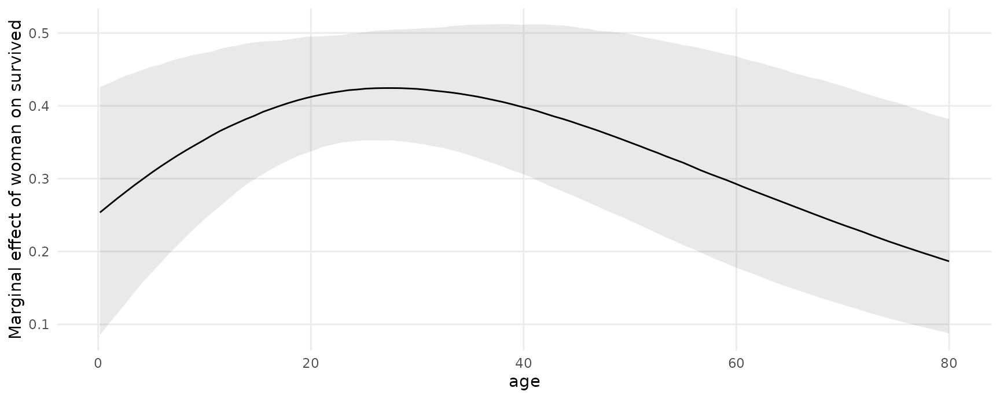
The posteriordraws produces a dataset with drawid and draw columns:
draws <- posteriordraws(mfx)
dim(draws)
#> [1] 16736000 19
head(draws)
#> drawid draw rowid type term contrast estimate conf.low conf.high predicted predicted_hi predicted_lo X survived sex age passengerClass woman eps
#> 1 1 0.1633609 1 response woman dY/dX 0.15298096 0.10883007 0.2051898 0.9366604 0.9366751 0.9366604 Allen, Miss. Elisabeth Walton 1 female 29.0000 1st 1 1e-04
#> 2 1 0.1359009 2 response woman dY/dX 0.13546458 0.03607654 0.2970409 0.8493050 0.8493174 0.8493050 Allison, Master. Hudson Trevor 1 male 0.9167 1st 0 1e-04
#> 3 1 0.0615405 3 response woman dY/dX 0.05878909 0.02875607 0.1009453 0.9433293 0.9433358 0.9433293 Allison, Miss. Helen Loraine 0 female 2.0000 1st 1 1e-04
#> 4 1 0.7088821 4 response woman dY/dX 0.65453708 0.56699300 0.7442501 0.5131011 0.5131652 0.5131011 Allison, Mr. Hudson Joshua Crei 0 male 30.0000 1st 0 1e-04
#> 5 1 0.1473759 5 response woman dY/dX 0.13828737 0.09722433 0.1863969 0.9374937 0.9375085 0.9374937 Allison, Mrs. Hudson J C (Bessi 0 female 25.0000 1st 1 1e-04
#> 6 1 0.6635099 6 response woman dY/dX 0.70740470 0.58935737 0.8406470 0.2730542 0.2731252 0.2730542 Anderson, Mr. Harry 1 male 48.0000 1st 0 1e-04We can use this dataset to plot our results. For example, to plot the posterior density of the marginal effect of age when the woman variable is equal to 0 or 1:
mfx <- slopes(mod,
variables = "age",
newdata = datagrid(woman = 0:1)) |>
posteriordraws()
ggplot(mfx, aes(x = draw, fill = factor(woman))) +
stat_halfeye(slab_alpha = .5) +
labs(x = "Marginal Effect of Age on Survival",
y = "Posterior density",
fill = "Woman")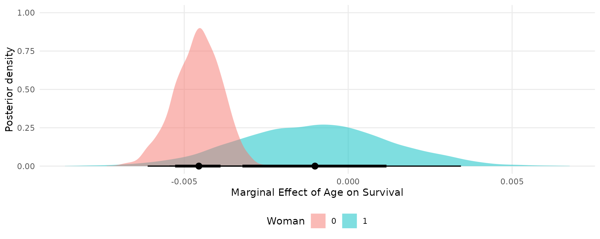
Random effects model
This section replicates some of the analyses of a random effects model published in Andrew Heiss’ blog post: “A guide to correctly calculating posterior predictions and average marginal effects with multilevel Bayesian models.” The objective is mainly to illustrate the use of marginaleffects. Please refer to the original post for a detailed discussion of the quantities computed below.
Load libraries and download data:
library(brms)
library(ggdist)
library(patchwork)
library(marginaleffects)
vdem_2015 <- read.csv("https://github.com/vincentarelbundock/marginaleffects/raw/main/data-raw/vdem_2015.csv")
head(vdem_2015)
#> country_name country_text_id year region media_index party_autonomy_ord polyarchy civil_liberties party_autonomy
#> 1 Mexico MEX 2015 Latin America and the Caribbean 0.837 3 0.631 0.704 TRUE
#> 2 Suriname SUR 2015 Latin America and the Caribbean 0.883 4 0.777 0.887 TRUE
#> 3 Sweden SWE 2015 Western Europe and North America 0.956 4 0.915 0.968 TRUE
#> 4 Switzerland CHE 2015 Western Europe and North America 0.939 4 0.901 0.960 TRUE
#> 5 Ghana GHA 2015 Sub-Saharan Africa 0.858 4 0.724 0.921 TRUE
#> 6 South Africa ZAF 2015 Sub-Saharan Africa 0.898 4 0.752 0.869 TRUEFit a basic model:
mod <- brm(
bf(media_index ~ party_autonomy + civil_liberties + (1 | region),
phi ~ (1 | region)),
data = vdem_2015,
family = Beta(),
control = list(adapt_delta = 0.9))Posterior predictions
To compute posterior predictions for specific values of the regressors, we use the newdata argument and the datagrid function. We also use the type argument to compute two types of predictions: accounting for residual (observation-level) residual variance (prediction) or ignoring it (response).
nd = datagrid(model = mod,
party_autonomy = c(TRUE, FALSE),
civil_liberties = .5,
region = "Middle East and North Africa")
p1 <- predictions(mod, type = "response", newdata = nd) |>
posteriordraws()
p2 <- predictions(mod, type = "prediction", newdata = nd) |>
posteriordraws()
pred <- rbind(p1, p2)Extract posterior draws and plot them:
ggplot(pred, aes(x = draw, fill = party_autonomy)) +
stat_halfeye(alpha = .5) +
facet_wrap(~ type) +
labs(x = "Media index (predicted)",
y = "Posterior density",
fill = "Party autonomy")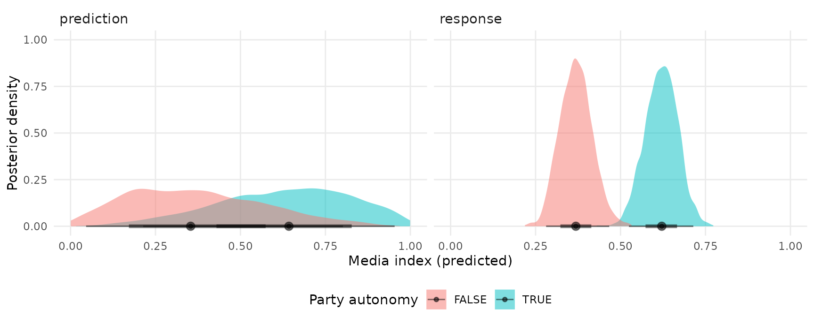
Marginal effects and contrasts
As noted in the Marginal Effects vignette, there should be one distinct marginal effect for each combination of regressor values. Here, we consider only one combination of regressor values, where region is “Middle East and North Africa”, and civil_liberties is 0.5. Then, we calculate the mean of the posterior distribution of marginal effects:
mfx <- slopes(mod,
newdata = datagrid(civil_liberties = .5,
region = "Middle East and North Africa"))
mfx
#> rowid type term contrast estimate conf.low conf.high predicted predicted_hi predicted_lo media_index party_autonomy civil_liberties region eps
#> 1 1 response party_autonomy TRUE - FALSE 0.2517104 0.1663314 0.3355927 0.6213442 0.6213442 0.3684876 0.6723184 TRUE 0.5 Middle East and North Africa NA
#> 2 1 response civil_liberties dY/dX 0.8160498 0.6213970 1.0066362 0.6213442 0.6214182 0.6213442 0.6723184 TRUE 0.5 Middle East and North Africa 9.56e-05Use the posteriordraws() to extract draws from the posterior distribution of marginal effects, and plot them:
mfx <- posteriordraws(mfx)
ggplot(mfx, aes(x = draw, y = term)) +
stat_halfeye() +
labs(x = "Marginal effect", y = "")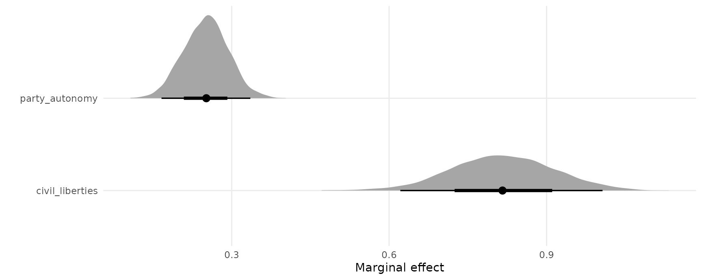
Plot marginal effects, conditional on a regressor:
plot_cme(mod,
effect = "civil_liberties",
condition = "party_autonomy")
Continuous predictors
pred <- predictions(mod,
newdata = datagrid(party_autonomy = FALSE,
region = "Middle East and North Africa",
civil_liberties = seq(0, 1, by = 0.05))) |>
posteriordraws()
ggplot(pred, aes(x = civil_liberties, y = draw)) +
stat_lineribbon() +
scale_fill_brewer(palette = "Reds") +
labs(x = "Civil liberties",
y = "Media index (predicted)",
fill = "")
The slope of this line for different values of civil liberties can be obtained with:
mfx <- slopes(mod,
newdata = datagrid(
civil_liberties = c(.2, .5, .8),
party_autonomy = FALSE,
region = "Middle East and North Africa"),
variables = "civil_liberties")
mfx
#> rowid type term estimate conf.low conf.high predicted predicted_hi predicted_lo media_index civil_liberties party_autonomy region eps
#> 1 1 response civil_liberties 0.4900170 0.3609330 0.6388463 0.1700110 0.1700591 0.1700110 0.6723184 0.2 FALSE Middle East and North Africa 9.56e-05
#> 2 2 response civil_liberties 0.8071389 0.6121827 0.9926679 0.3684876 0.3685630 0.3684876 0.6723184 0.5 FALSE Middle East and North Africa 9.56e-05
#> 3 3 response civil_liberties 0.8069026 0.6744996 0.9336997 0.6244447 0.6245229 0.6244447 0.6723184 0.8 FALSE Middle East and North Africa 9.56e-05And plotted:
mfx <- posteriordraws(mfx)
ggplot(mfx, aes(x = draw, fill = factor(civil_liberties))) +
stat_halfeye(slab_alpha = .5) +
labs(x = "Marginal effect of Civil Liberties on Media Index",
y = "Posterior density",
fill = "Civil liberties")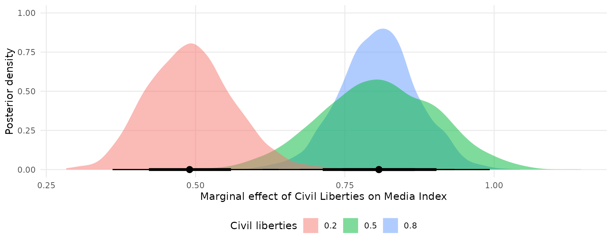
The slopes function can use the ellipsis (...) to push any argument forward to the posterior_predict function. This can alter the types of predictions returned. For example, the re_formula=NA argument of the posterior_predict.brmsfit method will compute marginaleffects without including any group-level effects:
mfx <- slopes(
mod,
newdata = datagrid(
civil_liberties = c(.2, .5, .8),
party_autonomy = FALSE,
region = "Middle East and North Africa"),
variables = "civil_liberties",
re_formula = NA) |>
posteriordraws()
ggplot(mfx, aes(x = draw, fill = factor(civil_liberties))) +
stat_halfeye(slab_alpha = .5) +
labs(x = "Marginal effect of Civil Liberties on Media Index",
y = "Posterior density",
fill = "Civil liberties")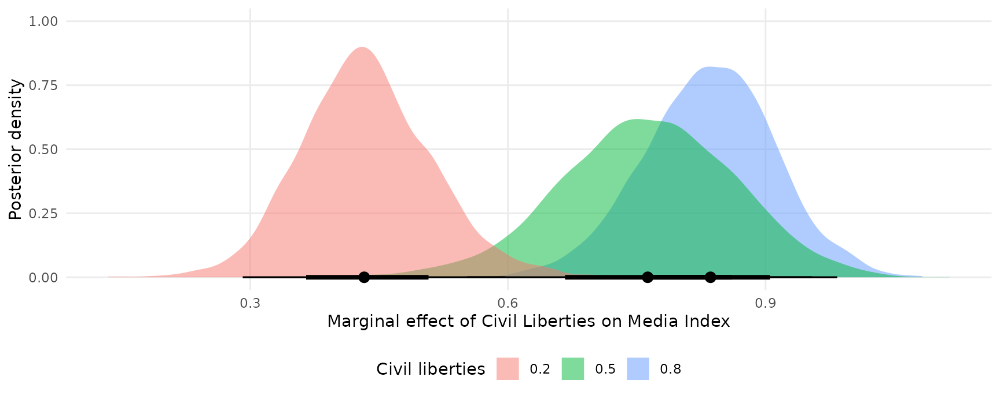
Global grand mean
pred <- predictions(
mod,
re_formula = NA,
newdata = datagrid(party_autonomy = c(TRUE, FALSE))) |>
posteriordraws()
mfx <- slopes(
mod,
re_formula = NA,
variables = "party_autonomy") |>
posteriordraws()
plot1 <- ggplot(pred, aes(x = draw, fill = party_autonomy)) +
stat_halfeye(slab_alpha = .5) +
labs(x = "Media index (Predicted)",
y = "Posterior density",
fill = "Party autonomy")
plot2 <- ggplot(mfx, aes(x = draw)) +
stat_halfeye(slab_alpha = .5) +
labs(x = "Contrast: Party autonomy TRUE - FALSE",
y = "",
fill = "Party autonomy")
# combine plots using the `patchwork` package
plot1 + plot2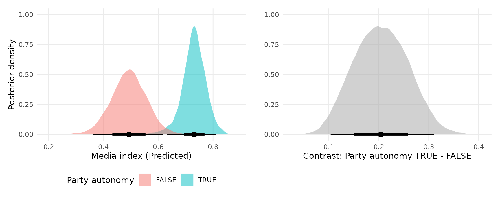
Region-specific predictions and contrasts
Predicted media index by region and level of civil liberties:
pred <- predictions(mod,
newdata = datagrid(region = vdem_2015$region,
party_autonomy = FALSE,
civil_liberties = seq(0, 1, length.out = 100))) |>
posteriordraws()
ggplot(pred, aes(x = civil_liberties, y = draw)) +
stat_lineribbon() +
scale_fill_brewer(palette = "Reds") +
facet_wrap(~ region) +
labs(x = "Civil liberties",
y = "Media index (predicted)",
fill = "")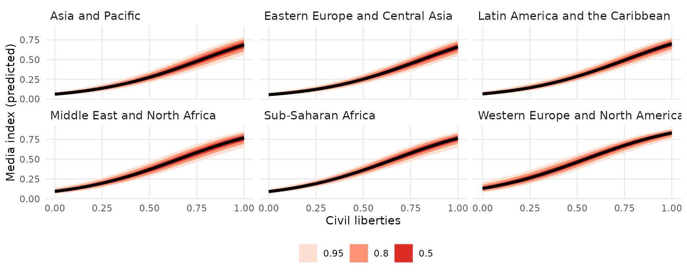
Predicted media index by region and level of civil liberties:
pred <- predictions(mod,
newdata = datagrid(region = vdem_2015$region,
civil_liberties = c(.2, .8),
party_autonomy = FALSE)) |>
posteriordraws()
ggplot(pred, aes(x = draw, fill = factor(civil_liberties))) +
stat_halfeye(slab_alpha = .5) +
facet_wrap(~ region) +
labs(x = "Media index (predicted)",
y = "Posterior density",
fill = "Civil liberties")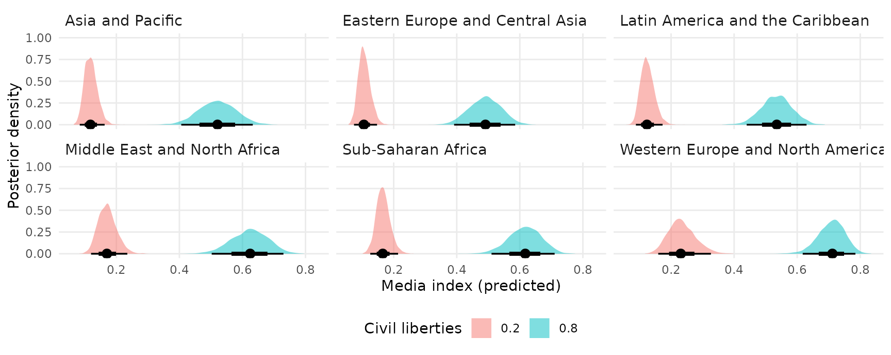
Predicted media index by region and party autonomy:
pred <- predictions(mod,
newdata = datagrid(region = vdem_2015$region,
party_autonomy = c(TRUE, FALSE),
civil_liberties = .5)) |>
posteriordraws()
ggplot(pred, aes(x = draw, y = region , fill = party_autonomy)) +
stat_halfeye(slab_alpha = .5) +
labs(x = "Media index (predicted)",
y = "",
fill = "Party autonomy")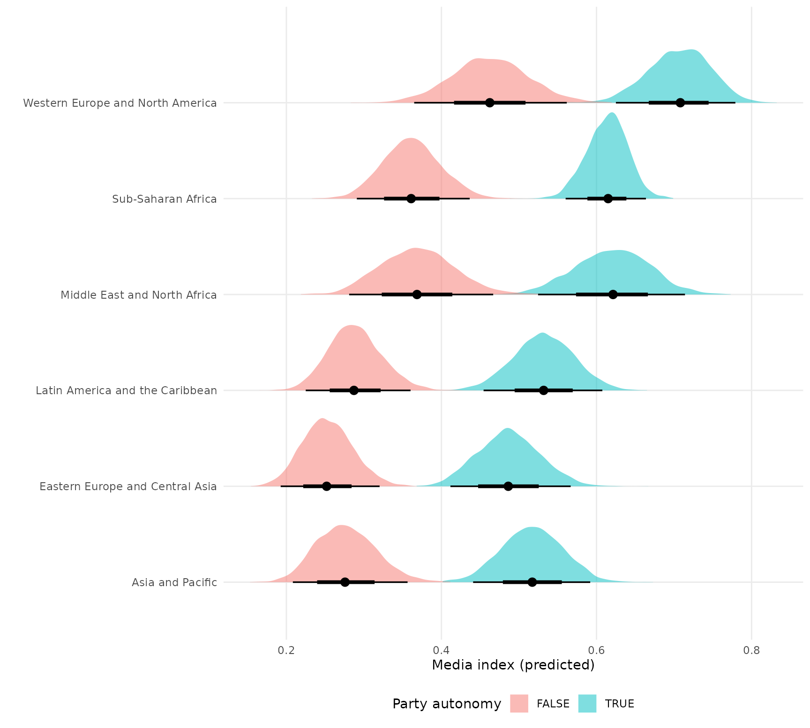
TRUE/FALSE contrasts (marginal effects) of party autonomy by region:
mfx <- slopes(
mod,
variables = "party_autonomy",
newdata = datagrid(
region = vdem_2015$region,
civil_liberties = .5)) |>
posteriordraws()
ggplot(mfx, aes(x = draw, y = region , fill = party_autonomy)) +
stat_halfeye(slab_alpha = .5) +
labs(x = "Media index (predicted)",
y = "",
fill = "Party autonomy")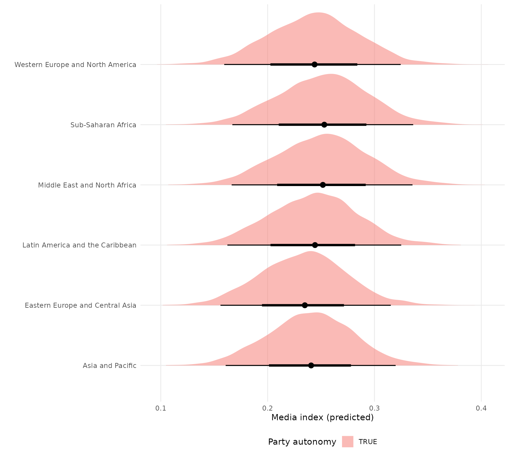
Hypothetical groups
We can also obtain predictions or marginal effects for a hypothetical group instead of one of the observed regions. To achieve this, we create a dataset with NA in the region column. Then we call the marginaleffects or predictions functions with the allow_new_levels argument. This argument is pushed through via the ellipsis (...) to the posterior_epred function of the brms package:
dat <- data.frame(civil_liberties = .5,
party_autonomy = FALSE,
region = "New Region")
mfx <- slopes(
mod,
variables = "party_autonomy",
allow_new_levels = TRUE,
newdata = dat)
draws <- posteriordraws(mfx)
ggplot(draws, aes(x = draw)) +
stat_halfeye() +
labs(x = "Marginal effect of party autonomy in a generic world region", y = "")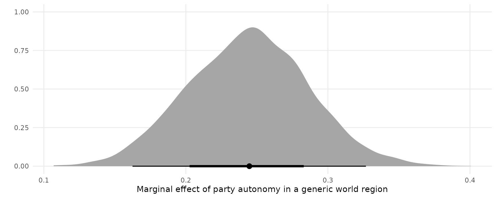
Averaging, marginalizing, integrating random effects
Consider a logistic regression model with random effects:
dat <- read.csv("https://vincentarelbundock.github.io/Rdatasets/csv/plm/EmplUK.csv")
dat$x <- as.numeric(dat$output > median(dat$output))
dat$y <- as.numeric(dat$emp > median(dat$emp))
mod <- brm(y ~ x + (1 | firm), data = dat, backend = "cmdstanr", family = "bernoulli")We can compute adjusted predictions for a given value of x and for each firm (random effects) as follows:
p <- predictions(mod, newdata = datagrid(x = 0, firm = unique))
head(p)
#> rowid type estimate conf.low conf.high y x firm
#> 1 1 response 9.999974e-01 9.012039e-01 1.000000000 0.499515 0 1
#> 2 2 response 9.999976e-01 8.946581e-01 1.000000000 0.499515 0 2
#> 3 3 response 9.999968e-01 9.120847e-01 1.000000000 0.499515 0 3
#> 4 4 response 9.999948e-01 7.971402e-01 1.000000000 0.499515 0 4
#> 5 5 response 9.999984e-01 9.089520e-01 1.000000000 0.499515 0 5
#> 6 6 response 4.899093e-08 8.417651e-21 0.001898002 0.499515 0 6We can average/marginalize/integrate across random effects with the avg_predictions() function or the by argument:
avg_predictions(mod, newdata = datagrid(x = 0, firm = unique))
#> Estimate 2.5 % 97.5 %
#> 1 0.4539 0.4396 0.4683
#>
#> Model type: brmsfit
#> Prediction type: response
predictions(mod, newdata = datagrid(x = 0:1, firm = unique), by = "x")
#> type x estimate conf.low conf.high
#> 1 response 0 0.4538567 0.4395532 0.4683439
#> 2 response 1 0.5571714 0.5456459 0.5696210We can also draw from the (assumed gaussian) population distribution of random effects, by asking predictions() to make predictions for new “levels” of the random effects. If we then take an average of predictions using avg_predictions() or the by argument, we will have “integrated out the random effects”, as described in the brmsmargins package vignette. In the code below, we make predictions for 100 firm identifiers which were not in the original dataset. We also ask predictions() to push forward the allow_new_levels and sample_new_levels arguments to the brms::posterior_epred function:
predictions(
mod,
newdata = datagrid(x = 0:1, firm = -1:-100),
allow_new_levels = TRUE,
sample_new_levels = "gaussian",
by = "x")
#> type x estimate conf.low conf.high
#> 1 response 0 0.4527588 0.3383466 0.5720197
#> 2 response 1 0.5522128 0.4366667 0.6660866We can “integrate out” random effects in the other slopes functions too. For instance,
avg_comparisons(
mod,
newdata = datagrid(firm = -1:-100),
allow_new_levels = TRUE,
sample_new_levels = "gaussian")
#> Term Contrast Estimate 2.5 % 97.5 %
#> 1 x 1 - 0 0.09605 0.04719 0.1605
#>
#> Model type: brmsfit
#> Prediction type: responseThis is nearly equivalent the brmsmargins command output (with slight variations due to different random seeds):
library(brmsmargins)
bm <- brmsmargins(
k = 100,
object = mod,
at = data.frame(x = c(0, 1)),
CI = .95,
CIType = "ETI",
contrasts = cbind("AME x" = c(-1, 1)),
effects = "integrateoutRE")
bm$ContrastSummary |> data.frame()
#> M Mdn LL UL PercentROPE PercentMID CI CIType ROPE MID Label
#> 1 0.09900554 0.09726723 0.04795814 0.1644222 NA NA 0.95 ETI <NA> <NA> AME xSee the alternative software vignette for more information on brmsmargins.
Multinomial logit
Fit a model with categorical outcome (heating system choice in California houses) and logit link:
dat <- "https://vincentarelbundock.github.io/Rdatasets/csv/Ecdat/Heating.csv"
dat <- read.csv(dat)
mod <- brm(depvar ~ ic.gc + oc.gc,
data = dat,
family = categorical(link = "logit"))Adjusted predictions
Compute predicted probabilities for each level of the outcome variable:
pred <- predictions(mod)
head(pred)
#> rowid type group estimate conf.low conf.high X idcase depvar ic.gc ic.gr ic.ec ic.er ic.hp oc.gc oc.gr oc.ec oc.er oc.hp income agehed rooms region pb.gc pb.gr pb.ec pb.er pb.hp
#> 1 1 response ec 0.06626689 0.04471591 0.09304536 1 1 gc 866.00 962.64 859.90 995.76 1135.50 199.69 151.72 553.34 505.60 237.88 7 25 6 ncostl 4.336722 6.344846 1.554017 1.969462 4.773415
#> 2 2 response ec 0.07681658 0.05896082 0.09740047 2 2 gc 727.93 758.89 796.82 894.69 968.90 168.66 168.66 520.24 486.49 199.19 5 60 5 scostl 4.315961 4.499526 1.531639 1.839072 4.864200
#> 3 3 response ec 0.10300017 0.06181137 0.15849874 3 3 gc 599.48 783.05 719.86 900.11 1048.30 165.58 137.80 439.06 404.74 171.47 4 65 2 ncostl 3.620486 5.682511 1.639548 2.223922 6.113606
#> 4 4 response ec 0.06335247 0.04590258 0.08378809 4 4 er 835.17 793.06 761.25 831.04 1048.70 180.88 147.14 483.00 425.22 222.95 2 50 4 scostl 4.617260 5.389833 1.576087 1.954377 4.703745
#> 5 5 response ec 0.07452660 0.05739728 0.09467869 5 5 er 755.59 846.29 858.86 985.64 883.05 174.91 138.90 404.41 389.52 178.49 2 25 6 valley 4.319879 6.092801 2.123736 2.530396 4.947336
#> 6 6 response ec 0.07086098 0.04545918 0.10359585 6 6 gc 666.11 841.71 693.74 862.56 859.18 135.67 140.97 398.22 371.04 209.27 6 65 7 scostl 4.909781 5.970845 1.742102 2.324709 4.105605Extract posterior draws and plot them:
draws <- posteriordraws(pred)
ggplot(draws, aes(x = draw, fill = group)) +
geom_density(alpha = .2, color = "white") +
labs(x = "Predicted probability",
y = "Density",
fill = "Heating system")
Use the plot_cap function to plot conditional adjusted predictions for each level of the outcome variable gear, conditional on the value of the mpg regressor:
plot_cap(mod, condition = "oc.gc") +
facet_wrap(~ group) +
labs(y = "Predicted probability")
Marginal effects
avg_slopes(mod)
#> Group Term Estimate 2.5 % 97.5 %
#> 1 ec ic.gc 4.3839 4.007 4.7376
#> 2 er ic.gc 0.0928 -0.270 0.4149
#> 3 gc ic.gc -7.9963 -8.498 -7.4477
#> 4 ec oc.gc 19.3866 17.717 20.9493
#> 5 er oc.gc 0.4105 -1.194 1.8349
#> 6 gc oc.gc -35.3623 -37.581 -32.9363
#>
#> Model type: brmsfit
#> Prediction type: responseHurdle models
This section replicates some analyses from yet another amazing blog post by Andrew Heiss.
To begin, we estimate a hurdle model in brms with random effects, using data from the gapminder package: 704G
library(gapminder)
library(brms)
library(dplyr)
library(ggplot2)
library(ggdist)
library(cmdstanr)
library(patchwork)
library(marginaleffects)
set.seed(1024)
CHAINS <- 4
ITER <- 2000
WARMUP <- 1000
BAYES_SEED <- 1234
gapminder <- gapminder::gapminder |>
filter(continent != "Oceania") |>
# Make a bunch of GDP values 0
mutate(prob_zero = ifelse(lifeExp < 50, 0.3, 0.02),
will_be_zero = rbinom(n(), 1, prob = prob_zero),
gdpPercap = ifelse(will_be_zero, 0, gdpPercap)) |>
select(-prob_zero, -will_be_zero) |>
# Make a logged version of GDP per capita
mutate(log_gdpPercap = log1p(gdpPercap)) |>
mutate(is_zero = gdpPercap == 0)
mod <- brm(
bf(gdpPercap ~ lifeExp + year + (1 + lifeExp + year | continent),
hu ~ lifeExp),
data = gapminder,
backend = "cmdstanr",
family = hurdle_lognormal(),
cores = 2,
chains = CHAINS, iter = ITER, warmup = WARMUP, seed = BAYES_SEED,
silent = 2)Adjusted predictions
Adjusted predictions for every observation in the original data:
predictions(mod) |> head()
#> rowid type estimate conf.low conf.high gdpPercap lifeExp year continent
#> 1 1 response 142.5456 103.1327 218.8240 779.4453 28.801 1952 Asia
#> 2 2 response 168.2657 124.8506 255.8359 820.8530 30.332 1957 Asia
#> 3 3 response 201.7414 152.9039 303.6894 853.1007 31.997 1962 Asia
#> 4 4 response 251.4996 196.5698 372.8495 836.1971 34.020 1967 Asia
#> 5 5 response 312.2482 249.5193 454.2419 0.0000 36.088 1972 Asia
#> 6 6 response 397.5390 324.5934 566.6799 786.1134 38.438 1977 AsiaAdjusted predictions for the hu parameter:
predictions(mod, dpar = "hu") |> head()
#> rowid type estimate conf.low conf.high gdpPercap lifeExp year continent
#> 1 1 response 0.5739495 0.4746831 0.6515670 779.4453 28.801 1952 Asia
#> 2 2 response 0.5365013 0.4416000 0.6112908 820.8530 30.332 1957 Asia
#> 3 3 response 0.4955596 0.4069162 0.5664250 853.1007 31.997 1962 Asia
#> 4 4 response 0.4455042 0.3656259 0.5106086 836.1971 34.020 1967 Asia
#> 5 5 response 0.3957129 0.3251678 0.4537019 0.0000 36.088 1972 Asia
#> 6 6 response 0.3413458 0.2823879 0.3907218 786.1134 38.438 1977 AsiaPredictions on a different scale:
predictions(mod, type = "link", dpar = "hu") |> head()
#> rowid type estimate conf.low conf.high gdpPercap lifeExp year continent
#> 1 1 link 0.29798370 -0.1013542 0.62593415 779.4453 28.801 1952 Asia
#> 2 2 link 0.14626541 -0.2346709 0.45274118 820.8530 30.332 1957 Asia
#> 3 3 link -0.01776198 -0.3767284 0.26727993 853.1007 31.997 1962 Asia
#> 4 4 link -0.21885246 -0.5510282 0.04244063 836.1971 34.020 1967 Asia
#> 5 5 link -0.42336036 -0.7301227 -0.18572429 0.0000 36.088 1972 Asia
#> 6 6 link -0.65730248 -0.9326474 -0.44427921 786.1134 38.438 1977 AsiaPlot adjusted predictions as a function of lifeExp:
plot_cap(
mod,
condition = "lifeExp") +
labs(y = "mu") +
plot_cap(
mod,
dpar = "hu",
condition = "lifeExp") +
labs(y = "hu")
Predictions with more than one condition and the re_formula argument from brms:
Extract draws with posteriordraws()
The posteriordraws() function extract raw samples from the posterior from objects produced by marginaleffects. This allows us to use richer geoms and summaries, such as those in the ggdist package:
predictions(
mod,
re_formula = NULL,
newdata = datagrid(model = mod,
continent = gapminder$continent,
year = c(1952, 2007),
lifeExp = seq(30, 80, 1))) |>
posteriordraws() |>
ggplot(aes(lifeExp, draw, fill = continent, color = continent)) +
stat_lineribbon(alpha = .25) +
facet_grid(year ~ continent)
Average Contrasts
What happens to gdpPercap when lifeExp increases by one?
avg_comparisons(mod)
#> Term Contrast Estimate 2.5 % 97.5 %
#> 1 lifeExp +1 718.87 515.58 811.96
#> 2 year +1 -63.82 -84.44 -41.05
#>
#> Model type: brmsfit
#> Prediction type: responseWhat happens to gdpPercap when lifeExp increases by one standard deviation?
avg_comparisons(mod, variables = list(lifeExp = "sd"))
#> Term Contrast Estimate 2.5 % 97.5 %
#> 1 lifeExp (x + sd/2) - (x - sd/2) 4050 3718 4741
#>
#> Model type: brmsfit
#> Prediction type: responseWhat happens to gdpPercap when lifeExp increases from 50 to 60 and year simultaneously increases its min to its max?
avg_comparisons(
mod,
variables = list(lifeExp = c(50, 60), year = "minmax"),
cross = TRUE)
#> lifeExp year Estimate 2.5 % 97.5 %
#> 1 60 - 50 Max - Min 1001.5 522.5 1330
#> 2 60 - 50 Max - Min 1001.5 522.5 1330
#> 3 60 - 50 Max - Min 1001.5 522.5 1330
#> 4 60 - 50 Max - Min 1001.5 522.5 1330
#> 5 60 - 50 Max - Min 1001.5 522.5 1330
#> 6 60 - 50 Max - Min 1001.5 522.5 1330
#> 7 60 - 50 Max - Min 1001.5 522.5 1330
#> 8 60 - 50 Max - Min 1001.5 522.5 1330
#> 9 60 - 50 Max - Min 1001.5 522.5 1330
#> 10 60 - 50 Max - Min 1001.5 522.5 1330
#> 11 60 - 50 Max - Min 1001.5 522.5 1330
#> 12 60 - 50 Max - Min 1001.5 522.5 1330
#> 13 60 - 50 Max - Min 1273.3 937.0 1891
#> 14 60 - 50 Max - Min 1273.3 937.0 1891
#> 15 60 - 50 Max - Min 1273.3 937.0 1891
#> 16 60 - 50 Max - Min 1273.3 937.0 1891
#> 17 60 - 50 Max - Min 1273.3 937.0 1891
#> 18 60 - 50 Max - Min 1273.3 937.0 1891
#> 19 60 - 50 Max - Min 1273.3 937.0 1891
#> 20 60 - 50 Max - Min 1273.3 937.0 1891
#> 21 60 - 50 Max - Min 1273.3 937.0 1891
#> 22 60 - 50 Max - Min 1273.3 937.0 1891
#> 23 60 - 50 Max - Min 1273.3 937.0 1891
#> 24 60 - 50 Max - Min 1273.3 937.0 1891
#> 25 60 - 50 Max - Min 466.9 112.6 1299
#> 26 60 - 50 Max - Min 466.9 112.6 1299
#> 27 60 - 50 Max - Min 466.9 112.6 1299
#> 28 60 - 50 Max - Min 466.9 112.6 1299
#> 29 60 - 50 Max - Min 466.9 112.6 1299
#> 30 60 - 50 Max - Min 466.9 112.6 1299
#> 31 60 - 50 Max - Min 466.9 112.6 1299
#> 32 60 - 50 Max - Min 466.9 112.6 1299
#> 33 60 - 50 Max - Min 466.9 112.6 1299
#> 34 60 - 50 Max - Min 466.9 112.6 1299
#> 35 60 - 50 Max - Min 466.9 112.6 1299
#> 36 60 - 50 Max - Min 466.9 112.6 1299
#> 37 60 - 50 Max - Min 466.9 112.6 1299
#> 38 60 - 50 Max - Min 466.9 112.6 1299
#> 39 60 - 50 Max - Min 466.9 112.6 1299
#> 40 60 - 50 Max - Min 466.9 112.6 1299
#> 41 60 - 50 Max - Min 466.9 112.6 1299
#> 42 60 - 50 Max - Min 466.9 112.6 1299
#> 43 60 - 50 Max - Min 466.9 112.6 1299
#> 44 60 - 50 Max - Min 466.9 112.6 1299
#> 45 60 - 50 Max - Min 466.9 112.6 1299
#> 46 60 - 50 Max - Min 466.9 112.6 1299
#> 47 60 - 50 Max - Min 466.9 112.6 1299
#> 48 60 - 50 Max - Min 466.9 112.6 1299
#> 49 60 - 50 Max - Min 809.5 306.5 1509
#> 50 60 - 50 Max - Min 809.5 306.5 1509
#> 51 60 - 50 Max - Min 809.5 306.5 1509
#> 52 60 - 50 Max - Min 809.5 306.5 1509
#> 53 60 - 50 Max - Min 809.5 306.5 1509
#> 54 60 - 50 Max - Min 809.5 306.5 1509
#> 55 60 - 50 Max - Min 809.5 306.5 1509
#> 56 60 - 50 Max - Min 809.5 306.5 1509
#> 57 60 - 50 Max - Min 809.5 306.5 1509
#> 58 60 - 50 Max - Min 809.5 306.5 1509
#> 59 60 - 50 Max - Min 809.5 306.5 1509
#> 60 60 - 50 Max - Min 809.5 306.5 1509
#> 61 60 - 50 Max - Min 1273.3 937.0 1891
#> 62 60 - 50 Max - Min 1273.3 937.0 1891
#> 63 60 - 50 Max - Min 1273.3 937.0 1891
#> 64 60 - 50 Max - Min 1273.3 937.0 1891
#> 65 60 - 50 Max - Min 1273.3 937.0 1891
#> 66 60 - 50 Max - Min 1273.3 937.0 1891
#> 67 60 - 50 Max - Min 1273.3 937.0 1891
#> 68 60 - 50 Max - Min 1273.3 937.0 1891
#> 69 60 - 50 Max - Min 1273.3 937.0 1891
#> 70 60 - 50 Max - Min 1273.3 937.0 1891
#> 71 60 - 50 Max - Min 1273.3 937.0 1891
#> 72 60 - 50 Max - Min 1273.3 937.0 1891
#> 73 60 - 50 Max - Min 1001.5 522.5 1330
#> 74 60 - 50 Max - Min 1001.5 522.5 1330
#> 75 60 - 50 Max - Min 1001.5 522.5 1330
#> 76 60 - 50 Max - Min 1001.5 522.5 1330
#> 77 60 - 50 Max - Min 1001.5 522.5 1330
#> 78 60 - 50 Max - Min 1001.5 522.5 1330
#> 79 60 - 50 Max - Min 1001.5 522.5 1330
#> 80 60 - 50 Max - Min 1001.5 522.5 1330
#> 81 60 - 50 Max - Min 1001.5 522.5 1330
#> 82 60 - 50 Max - Min 1001.5 522.5 1330
#> 83 60 - 50 Max - Min 1001.5 522.5 1330
#> 84 60 - 50 Max - Min 1001.5 522.5 1330
#> 85 60 - 50 Max - Min 1001.5 522.5 1330
#> 86 60 - 50 Max - Min 1001.5 522.5 1330
#> 87 60 - 50 Max - Min 1001.5 522.5 1330
#> 88 60 - 50 Max - Min 1001.5 522.5 1330
#> 89 60 - 50 Max - Min 1001.5 522.5 1330
#> 90 60 - 50 Max - Min 1001.5 522.5 1330
#> 91 60 - 50 Max - Min 1001.5 522.5 1330
#> 92 60 - 50 Max - Min 1001.5 522.5 1330
#> 93 60 - 50 Max - Min 1001.5 522.5 1330
#> 94 60 - 50 Max - Min 1001.5 522.5 1330
#> 95 60 - 50 Max - Min 1001.5 522.5 1330
#> 96 60 - 50 Max - Min 1001.5 522.5 1330
#> 97 60 - 50 Max - Min 1273.3 937.0 1891
#> 98 60 - 50 Max - Min 1273.3 937.0 1891
#> 99 60 - 50 Max - Min 1273.3 937.0 1891
#> 100 60 - 50 Max - Min 1273.3 937.0 1891
#> 101 60 - 50 Max - Min 1273.3 937.0 1891
#> 102 60 - 50 Max - Min 1273.3 937.0 1891
#> 103 60 - 50 Max - Min 1273.3 937.0 1891
#> 104 60 - 50 Max - Min 1273.3 937.0 1891
#> 105 60 - 50 Max - Min 1273.3 937.0 1891
#> 106 60 - 50 Max - Min 1273.3 937.0 1891
#> 107 60 - 50 Max - Min 1273.3 937.0 1891
#> 108 60 - 50 Max - Min 1273.3 937.0 1891
#> 109 60 - 50 Max - Min 466.9 112.6 1299
#> 110 60 - 50 Max - Min 466.9 112.6 1299
#> 111 60 - 50 Max - Min 466.9 112.6 1299
#> 112 60 - 50 Max - Min 466.9 112.6 1299
#> 113 60 - 50 Max - Min 466.9 112.6 1299
#> 114 60 - 50 Max - Min 466.9 112.6 1299
#> 115 60 - 50 Max - Min 466.9 112.6 1299
#> 116 60 - 50 Max - Min 466.9 112.6 1299
#> 117 60 - 50 Max - Min 466.9 112.6 1299
#> 118 60 - 50 Max - Min 466.9 112.6 1299
#> 119 60 - 50 Max - Min 466.9 112.6 1299
#> 120 60 - 50 Max - Min 466.9 112.6 1299
#> 121 60 - 50 Max - Min 809.5 306.5 1509
#> 122 60 - 50 Max - Min 809.5 306.5 1509
#> 123 60 - 50 Max - Min 809.5 306.5 1509
#> 124 60 - 50 Max - Min 809.5 306.5 1509
#> 125 60 - 50 Max - Min 809.5 306.5 1509
#> 126 60 - 50 Max - Min 809.5 306.5 1509
#> 127 60 - 50 Max - Min 809.5 306.5 1509
#> 128 60 - 50 Max - Min 809.5 306.5 1509
#> 129 60 - 50 Max - Min 809.5 306.5 1509
#> 130 60 - 50 Max - Min 809.5 306.5 1509
#> 131 60 - 50 Max - Min 809.5 306.5 1509
#> 132 60 - 50 Max - Min 809.5 306.5 1509
#> 133 60 - 50 Max - Min 1273.3 937.0 1891
#> 134 60 - 50 Max - Min 1273.3 937.0 1891
#> 135 60 - 50 Max - Min 1273.3 937.0 1891
#> 136 60 - 50 Max - Min 1273.3 937.0 1891
#> 137 60 - 50 Max - Min 1273.3 937.0 1891
#> 138 60 - 50 Max - Min 1273.3 937.0 1891
#> 139 60 - 50 Max - Min 1273.3 937.0 1891
#> 140 60 - 50 Max - Min 1273.3 937.0 1891
#> 141 60 - 50 Max - Min 1273.3 937.0 1891
#> 142 60 - 50 Max - Min 1273.3 937.0 1891
#> 143 60 - 50 Max - Min 1273.3 937.0 1891
#> 144 60 - 50 Max - Min 1273.3 937.0 1891
#> 145 60 - 50 Max - Min 466.9 112.6 1299
#> 146 60 - 50 Max - Min 466.9 112.6 1299
#> 147 60 - 50 Max - Min 466.9 112.6 1299
#> 148 60 - 50 Max - Min 466.9 112.6 1299
#> 149 60 - 50 Max - Min 466.9 112.6 1299
#> 150 60 - 50 Max - Min 466.9 112.6 1299
#> 151 60 - 50 Max - Min 466.9 112.6 1299
#> 152 60 - 50 Max - Min 466.9 112.6 1299
#> 153 60 - 50 Max - Min 466.9 112.6 1299
#> 154 60 - 50 Max - Min 466.9 112.6 1299
#> 155 60 - 50 Max - Min 466.9 112.6 1299
#> 156 60 - 50 Max - Min 466.9 112.6 1299
#> 157 60 - 50 Max - Min 809.5 306.5 1509
#> 158 60 - 50 Max - Min 809.5 306.5 1509
#> 159 60 - 50 Max - Min 809.5 306.5 1509
#> 160 60 - 50 Max - Min 809.5 306.5 1509
#> 161 60 - 50 Max - Min 809.5 306.5 1509
#> 162 60 - 50 Max - Min 809.5 306.5 1509
#> 163 60 - 50 Max - Min 809.5 306.5 1509
#> 164 60 - 50 Max - Min 809.5 306.5 1509
#> 165 60 - 50 Max - Min 809.5 306.5 1509
#> 166 60 - 50 Max - Min 809.5 306.5 1509
#> 167 60 - 50 Max - Min 809.5 306.5 1509
#> 168 60 - 50 Max - Min 809.5 306.5 1509
#> 169 60 - 50 Max - Min 1273.3 937.0 1891
#> 170 60 - 50 Max - Min 1273.3 937.0 1891
#> 171 60 - 50 Max - Min 1273.3 937.0 1891
#> 172 60 - 50 Max - Min 1273.3 937.0 1891
#> 173 60 - 50 Max - Min 1273.3 937.0 1891
#> 174 60 - 50 Max - Min 1273.3 937.0 1891
#> 175 60 - 50 Max - Min 1273.3 937.0 1891
#> 176 60 - 50 Max - Min 1273.3 937.0 1891
#> 177 60 - 50 Max - Min 1273.3 937.0 1891
#> 178 60 - 50 Max - Min 1273.3 937.0 1891
#> 179 60 - 50 Max - Min 1273.3 937.0 1891
#> 180 60 - 50 Max - Min 1273.3 937.0 1891
#> 181 60 - 50 Max - Min 466.9 112.6 1299
#> 182 60 - 50 Max - Min 466.9 112.6 1299
#> 183 60 - 50 Max - Min 466.9 112.6 1299
#> 184 60 - 50 Max - Min 466.9 112.6 1299
#> 185 60 - 50 Max - Min 466.9 112.6 1299
#> 186 60 - 50 Max - Min 466.9 112.6 1299
#> 187 60 - 50 Max - Min 466.9 112.6 1299
#> 188 60 - 50 Max - Min 466.9 112.6 1299
#> 189 60 - 50 Max - Min 466.9 112.6 1299
#> 190 60 - 50 Max - Min 466.9 112.6 1299
#> 191 60 - 50 Max - Min 466.9 112.6 1299
#> 192 60 - 50 Max - Min 466.9 112.6 1299
#> 193 60 - 50 Max - Min 466.9 112.6 1299
#> 194 60 - 50 Max - Min 466.9 112.6 1299
#> 195 60 - 50 Max - Min 466.9 112.6 1299
#> 196 60 - 50 Max - Min 466.9 112.6 1299
#> 197 60 - 50 Max - Min 466.9 112.6 1299
#> 198 60 - 50 Max - Min 466.9 112.6 1299
#> 199 60 - 50 Max - Min 466.9 112.6 1299
#> 200 60 - 50 Max - Min 466.9 112.6 1299
#> 201 60 - 50 Max - Min 466.9 112.6 1299
#> 202 60 - 50 Max - Min 466.9 112.6 1299
#> 203 60 - 50 Max - Min 466.9 112.6 1299
#> 204 60 - 50 Max - Min 466.9 112.6 1299
#> 205 60 - 50 Max - Min 1001.5 522.5 1330
#> 206 60 - 50 Max - Min 1001.5 522.5 1330
#> 207 60 - 50 Max - Min 1001.5 522.5 1330
#> 208 60 - 50 Max - Min 1001.5 522.5 1330
#> 209 60 - 50 Max - Min 1001.5 522.5 1330
#> 210 60 - 50 Max - Min 1001.5 522.5 1330
#> 211 60 - 50 Max - Min 1001.5 522.5 1330
#> 212 60 - 50 Max - Min 1001.5 522.5 1330
#> 213 60 - 50 Max - Min 1001.5 522.5 1330
#> 214 60 - 50 Max - Min 1001.5 522.5 1330
#> 215 60 - 50 Max - Min 1001.5 522.5 1330
#> 216 60 - 50 Max - Min 1001.5 522.5 1330
#> 217 60 - 50 Max - Min 466.9 112.6 1299
#> 218 60 - 50 Max - Min 466.9 112.6 1299
#> 219 60 - 50 Max - Min 466.9 112.6 1299
#> 220 60 - 50 Max - Min 466.9 112.6 1299
#> 221 60 - 50 Max - Min 466.9 112.6 1299
#> 222 60 - 50 Max - Min 466.9 112.6 1299
#> 223 60 - 50 Max - Min 466.9 112.6 1299
#> 224 60 - 50 Max - Min 466.9 112.6 1299
#> 225 60 - 50 Max - Min 466.9 112.6 1299
#> 226 60 - 50 Max - Min 466.9 112.6 1299
#> 227 60 - 50 Max - Min 466.9 112.6 1299
#> 228 60 - 50 Max - Min 466.9 112.6 1299
#> 229 60 - 50 Max - Min 809.5 306.5 1509
#> 230 60 - 50 Max - Min 809.5 306.5 1509
#> 231 60 - 50 Max - Min 809.5 306.5 1509
#> 232 60 - 50 Max - Min 809.5 306.5 1509
#> 233 60 - 50 Max - Min 809.5 306.5 1509
#> 234 60 - 50 Max - Min 809.5 306.5 1509
#> 235 60 - 50 Max - Min 809.5 306.5 1509
#> 236 60 - 50 Max - Min 809.5 306.5 1509
#> 237 60 - 50 Max - Min 809.5 306.5 1509
#> 238 60 - 50 Max - Min 809.5 306.5 1509
#> 239 60 - 50 Max - Min 809.5 306.5 1509
#> 240 60 - 50 Max - Min 809.5 306.5 1509
#> 241 60 - 50 Max - Min 466.9 112.6 1299
#> 242 60 - 50 Max - Min 466.9 112.6 1299
#> 243 60 - 50 Max - Min 466.9 112.6 1299
#> 244 60 - 50 Max - Min 466.9 112.6 1299
#> 245 60 - 50 Max - Min 466.9 112.6 1299
#> 246 60 - 50 Max - Min 466.9 112.6 1299
#> 247 60 - 50 Max - Min 466.9 112.6 1299
#> 248 60 - 50 Max - Min 466.9 112.6 1299
#> 249 60 - 50 Max - Min 466.9 112.6 1299
#> 250 60 - 50 Max - Min 466.9 112.6 1299
#> 251 60 - 50 Max - Min 466.9 112.6 1299
#> 252 60 - 50 Max - Min 466.9 112.6 1299
#> 253 60 - 50 Max - Min 466.9 112.6 1299
#> 254 60 - 50 Max - Min 466.9 112.6 1299
#> 255 60 - 50 Max - Min 466.9 112.6 1299
#> 256 60 - 50 Max - Min 466.9 112.6 1299
#> 257 60 - 50 Max - Min 466.9 112.6 1299
#> 258 60 - 50 Max - Min 466.9 112.6 1299
#> 259 60 - 50 Max - Min 466.9 112.6 1299
#> 260 60 - 50 Max - Min 466.9 112.6 1299
#> 261 60 - 50 Max - Min 466.9 112.6 1299
#> 262 60 - 50 Max - Min 466.9 112.6 1299
#> 263 60 - 50 Max - Min 466.9 112.6 1299
#> 264 60 - 50 Max - Min 466.9 112.6 1299
#> 265 60 - 50 Max - Min 809.5 306.5 1509
#> 266 60 - 50 Max - Min 809.5 306.5 1509
#> 267 60 - 50 Max - Min 809.5 306.5 1509
#> 268 60 - 50 Max - Min 809.5 306.5 1509
#> 269 60 - 50 Max - Min 809.5 306.5 1509
#> 270 60 - 50 Max - Min 809.5 306.5 1509
#> 271 60 - 50 Max - Min 809.5 306.5 1509
#> 272 60 - 50 Max - Min 809.5 306.5 1509
#> 273 60 - 50 Max - Min 809.5 306.5 1509
#> 274 60 - 50 Max - Min 809.5 306.5 1509
#> 275 60 - 50 Max - Min 809.5 306.5 1509
#> 276 60 - 50 Max - Min 809.5 306.5 1509
#> 277 60 - 50 Max - Min 1001.5 522.5 1330
#> 278 60 - 50 Max - Min 1001.5 522.5 1330
#> 279 60 - 50 Max - Min 1001.5 522.5 1330
#> 280 60 - 50 Max - Min 1001.5 522.5 1330
#> 281 60 - 50 Max - Min 1001.5 522.5 1330
#> 282 60 - 50 Max - Min 1001.5 522.5 1330
#> 283 60 - 50 Max - Min 1001.5 522.5 1330
#> 284 60 - 50 Max - Min 1001.5 522.5 1330
#> 285 60 - 50 Max - Min 1001.5 522.5 1330
#> 286 60 - 50 Max - Min 1001.5 522.5 1330
#> 287 60 - 50 Max - Min 1001.5 522.5 1330
#> 288 60 - 50 Max - Min 1001.5 522.5 1330
#> 289 60 - 50 Max - Min 809.5 306.5 1509
#> 290 60 - 50 Max - Min 809.5 306.5 1509
#> 291 60 - 50 Max - Min 809.5 306.5 1509
#> 292 60 - 50 Max - Min 809.5 306.5 1509
#> 293 60 - 50 Max - Min 809.5 306.5 1509
#> 294 60 - 50 Max - Min 809.5 306.5 1509
#> 295 60 - 50 Max - Min 809.5 306.5 1509
#> 296 60 - 50 Max - Min 809.5 306.5 1509
#> 297 60 - 50 Max - Min 809.5 306.5 1509
#> 298 60 - 50 Max - Min 809.5 306.5 1509
#> 299 60 - 50 Max - Min 809.5 306.5 1509
#> 300 60 - 50 Max - Min 809.5 306.5 1509
#> 301 60 - 50 Max - Min 466.9 112.6 1299
#> 302 60 - 50 Max - Min 466.9 112.6 1299
#> 303 60 - 50 Max - Min 466.9 112.6 1299
#> 304 60 - 50 Max - Min 466.9 112.6 1299
#> 305 60 - 50 Max - Min 466.9 112.6 1299
#> 306 60 - 50 Max - Min 466.9 112.6 1299
#> 307 60 - 50 Max - Min 466.9 112.6 1299
#> 308 60 - 50 Max - Min 466.9 112.6 1299
#> 309 60 - 50 Max - Min 466.9 112.6 1299
#> 310 60 - 50 Max - Min 466.9 112.6 1299
#> 311 60 - 50 Max - Min 466.9 112.6 1299
#> 312 60 - 50 Max - Min 466.9 112.6 1299
#> 313 60 - 50 Max - Min 466.9 112.6 1299
#> 314 60 - 50 Max - Min 466.9 112.6 1299
#> 315 60 - 50 Max - Min 466.9 112.6 1299
#> 316 60 - 50 Max - Min 466.9 112.6 1299
#> 317 60 - 50 Max - Min 466.9 112.6 1299
#> 318 60 - 50 Max - Min 466.9 112.6 1299
#> 319 60 - 50 Max - Min 466.9 112.6 1299
#> 320 60 - 50 Max - Min 466.9 112.6 1299
#> 321 60 - 50 Max - Min 466.9 112.6 1299
#> 322 60 - 50 Max - Min 466.9 112.6 1299
#> 323 60 - 50 Max - Min 466.9 112.6 1299
#> 324 60 - 50 Max - Min 466.9 112.6 1299
#> 325 60 - 50 Max - Min 466.9 112.6 1299
#> 326 60 - 50 Max - Min 466.9 112.6 1299
#> 327 60 - 50 Max - Min 466.9 112.6 1299
#> 328 60 - 50 Max - Min 466.9 112.6 1299
#> 329 60 - 50 Max - Min 466.9 112.6 1299
#> 330 60 - 50 Max - Min 466.9 112.6 1299
#> 331 60 - 50 Max - Min 466.9 112.6 1299
#> 332 60 - 50 Max - Min 466.9 112.6 1299
#> 333 60 - 50 Max - Min 466.9 112.6 1299
#> 334 60 - 50 Max - Min 466.9 112.6 1299
#> 335 60 - 50 Max - Min 466.9 112.6 1299
#> 336 60 - 50 Max - Min 466.9 112.6 1299
#> 337 60 - 50 Max - Min 809.5 306.5 1509
#> 338 60 - 50 Max - Min 809.5 306.5 1509
#> 339 60 - 50 Max - Min 809.5 306.5 1509
#> 340 60 - 50 Max - Min 809.5 306.5 1509
#> 341 60 - 50 Max - Min 809.5 306.5 1509
#> 342 60 - 50 Max - Min 809.5 306.5 1509
#> 343 60 - 50 Max - Min 809.5 306.5 1509
#> 344 60 - 50 Max - Min 809.5 306.5 1509
#> 345 60 - 50 Max - Min 809.5 306.5 1509
#> 346 60 - 50 Max - Min 809.5 306.5 1509
#> 347 60 - 50 Max - Min 809.5 306.5 1509
#> 348 60 - 50 Max - Min 809.5 306.5 1509
#> 349 60 - 50 Max - Min 466.9 112.6 1299
#> 350 60 - 50 Max - Min 466.9 112.6 1299
#> 351 60 - 50 Max - Min 466.9 112.6 1299
#> 352 60 - 50 Max - Min 466.9 112.6 1299
#> 353 60 - 50 Max - Min 466.9 112.6 1299
#> 354 60 - 50 Max - Min 466.9 112.6 1299
#> 355 60 - 50 Max - Min 466.9 112.6 1299
#> 356 60 - 50 Max - Min 466.9 112.6 1299
#> 357 60 - 50 Max - Min 466.9 112.6 1299
#> 358 60 - 50 Max - Min 466.9 112.6 1299
#> 359 60 - 50 Max - Min 466.9 112.6 1299
#> 360 60 - 50 Max - Min 466.9 112.6 1299
#> 361 60 - 50 Max - Min 1273.3 937.0 1891
#> 362 60 - 50 Max - Min 1273.3 937.0 1891
#> 363 60 - 50 Max - Min 1273.3 937.0 1891
#> 364 60 - 50 Max - Min 1273.3 937.0 1891
#> 365 60 - 50 Max - Min 1273.3 937.0 1891
#> 366 60 - 50 Max - Min 1273.3 937.0 1891
#> 367 60 - 50 Max - Min 1273.3 937.0 1891
#> 368 60 - 50 Max - Min 1273.3 937.0 1891
#> 369 60 - 50 Max - Min 1273.3 937.0 1891
#> 370 60 - 50 Max - Min 1273.3 937.0 1891
#> 371 60 - 50 Max - Min 1273.3 937.0 1891
#> 372 60 - 50 Max - Min 1273.3 937.0 1891
#> 373 60 - 50 Max - Min 809.5 306.5 1509
#> 374 60 - 50 Max - Min 809.5 306.5 1509
#> 375 60 - 50 Max - Min 809.5 306.5 1509
#> 376 60 - 50 Max - Min 809.5 306.5 1509
#> 377 60 - 50 Max - Min 809.5 306.5 1509
#> 378 60 - 50 Max - Min 809.5 306.5 1509
#> 379 60 - 50 Max - Min 809.5 306.5 1509
#> 380 60 - 50 Max - Min 809.5 306.5 1509
#> 381 60 - 50 Max - Min 809.5 306.5 1509
#> 382 60 - 50 Max - Min 809.5 306.5 1509
#> 383 60 - 50 Max - Min 809.5 306.5 1509
#> 384 60 - 50 Max - Min 809.5 306.5 1509
#> 385 60 - 50 Max - Min 1273.3 937.0 1891
#> 386 60 - 50 Max - Min 1273.3 937.0 1891
#> 387 60 - 50 Max - Min 1273.3 937.0 1891
#> 388 60 - 50 Max - Min 1273.3 937.0 1891
#> 389 60 - 50 Max - Min 1273.3 937.0 1891
#> 390 60 - 50 Max - Min 1273.3 937.0 1891
#> 391 60 - 50 Max - Min 1273.3 937.0 1891
#> 392 60 - 50 Max - Min 1273.3 937.0 1891
#> 393 60 - 50 Max - Min 1273.3 937.0 1891
#> 394 60 - 50 Max - Min 1273.3 937.0 1891
#> 395 60 - 50 Max - Min 1273.3 937.0 1891
#> 396 60 - 50 Max - Min 1273.3 937.0 1891
#> 397 60 - 50 Max - Min 1273.3 937.0 1891
#> 398 60 - 50 Max - Min 1273.3 937.0 1891
#> 399 60 - 50 Max - Min 1273.3 937.0 1891
#> 400 60 - 50 Max - Min 1273.3 937.0 1891
#> 401 60 - 50 Max - Min 1273.3 937.0 1891
#> 402 60 - 50 Max - Min 1273.3 937.0 1891
#> 403 60 - 50 Max - Min 1273.3 937.0 1891
#> 404 60 - 50 Max - Min 1273.3 937.0 1891
#> 405 60 - 50 Max - Min 1273.3 937.0 1891
#> 406 60 - 50 Max - Min 1273.3 937.0 1891
#> 407 60 - 50 Max - Min 1273.3 937.0 1891
#> 408 60 - 50 Max - Min 1273.3 937.0 1891
#> 409 60 - 50 Max - Min 466.9 112.6 1299
#> 410 60 - 50 Max - Min 466.9 112.6 1299
#> 411 60 - 50 Max - Min 466.9 112.6 1299
#> 412 60 - 50 Max - Min 466.9 112.6 1299
#> 413 60 - 50 Max - Min 466.9 112.6 1299
#> 414 60 - 50 Max - Min 466.9 112.6 1299
#> 415 60 - 50 Max - Min 466.9 112.6 1299
#> 416 60 - 50 Max - Min 466.9 112.6 1299
#> 417 60 - 50 Max - Min 466.9 112.6 1299
#> 418 60 - 50 Max - Min 466.9 112.6 1299
#> 419 60 - 50 Max - Min 466.9 112.6 1299
#> 420 60 - 50 Max - Min 466.9 112.6 1299
#> 421 60 - 50 Max - Min 809.5 306.5 1509
#> 422 60 - 50 Max - Min 809.5 306.5 1509
#> 423 60 - 50 Max - Min 809.5 306.5 1509
#> 424 60 - 50 Max - Min 809.5 306.5 1509
#> 425 60 - 50 Max - Min 809.5 306.5 1509
#> 426 60 - 50 Max - Min 809.5 306.5 1509
#> 427 60 - 50 Max - Min 809.5 306.5 1509
#> 428 60 - 50 Max - Min 809.5 306.5 1509
#> 429 60 - 50 Max - Min 809.5 306.5 1509
#> 430 60 - 50 Max - Min 809.5 306.5 1509
#> 431 60 - 50 Max - Min 809.5 306.5 1509
#> 432 60 - 50 Max - Min 809.5 306.5 1509
#> 433 60 - 50 Max - Min 809.5 306.5 1509
#> 434 60 - 50 Max - Min 809.5 306.5 1509
#> 435 60 - 50 Max - Min 809.5 306.5 1509
#> 436 60 - 50 Max - Min 809.5 306.5 1509
#> 437 60 - 50 Max - Min 809.5 306.5 1509
#> 438 60 - 50 Max - Min 809.5 306.5 1509
#> 439 60 - 50 Max - Min 809.5 306.5 1509
#> 440 60 - 50 Max - Min 809.5 306.5 1509
#> 441 60 - 50 Max - Min 809.5 306.5 1509
#> 442 60 - 50 Max - Min 809.5 306.5 1509
#> 443 60 - 50 Max - Min 809.5 306.5 1509
#> 444 60 - 50 Max - Min 809.5 306.5 1509
#> 445 60 - 50 Max - Min 466.9 112.6 1299
#> 446 60 - 50 Max - Min 466.9 112.6 1299
#> 447 60 - 50 Max - Min 466.9 112.6 1299
#> 448 60 - 50 Max - Min 466.9 112.6 1299
#> 449 60 - 50 Max - Min 466.9 112.6 1299
#> 450 60 - 50 Max - Min 466.9 112.6 1299
#> 451 60 - 50 Max - Min 466.9 112.6 1299
#> 452 60 - 50 Max - Min 466.9 112.6 1299
#> 453 60 - 50 Max - Min 466.9 112.6 1299
#> 454 60 - 50 Max - Min 466.9 112.6 1299
#> 455 60 - 50 Max - Min 466.9 112.6 1299
#> 456 60 - 50 Max - Min 466.9 112.6 1299
#> 457 60 - 50 Max - Min 809.5 306.5 1509
#> 458 60 - 50 Max - Min 809.5 306.5 1509
#> 459 60 - 50 Max - Min 809.5 306.5 1509
#> 460 60 - 50 Max - Min 809.5 306.5 1509
#> 461 60 - 50 Max - Min 809.5 306.5 1509
#> 462 60 - 50 Max - Min 809.5 306.5 1509
#> 463 60 - 50 Max - Min 809.5 306.5 1509
#> 464 60 - 50 Max - Min 809.5 306.5 1509
#> 465 60 - 50 Max - Min 809.5 306.5 1509
#> 466 60 - 50 Max - Min 809.5 306.5 1509
#> 467 60 - 50 Max - Min 809.5 306.5 1509
#> 468 60 - 50 Max - Min 809.5 306.5 1509
#> 469 60 - 50 Max - Min 466.9 112.6 1299
#> 470 60 - 50 Max - Min 466.9 112.6 1299
#> 471 60 - 50 Max - Min 466.9 112.6 1299
#> 472 60 - 50 Max - Min 466.9 112.6 1299
#> 473 60 - 50 Max - Min 466.9 112.6 1299
#> 474 60 - 50 Max - Min 466.9 112.6 1299
#> 475 60 - 50 Max - Min 466.9 112.6 1299
#> 476 60 - 50 Max - Min 466.9 112.6 1299
#> 477 60 - 50 Max - Min 466.9 112.6 1299
#> 478 60 - 50 Max - Min 466.9 112.6 1299
#> 479 60 - 50 Max - Min 466.9 112.6 1299
#> 480 60 - 50 Max - Min 466.9 112.6 1299
#> 481 60 - 50 Max - Min 466.9 112.6 1299
#> 482 60 - 50 Max - Min 466.9 112.6 1299
#> 483 60 - 50 Max - Min 466.9 112.6 1299
#> 484 60 - 50 Max - Min 466.9 112.6 1299
#> 485 60 - 50 Max - Min 466.9 112.6 1299
#> 486 60 - 50 Max - Min 466.9 112.6 1299
#> 487 60 - 50 Max - Min 466.9 112.6 1299
#> 488 60 - 50 Max - Min 466.9 112.6 1299
#> 489 60 - 50 Max - Min 466.9 112.6 1299
#> 490 60 - 50 Max - Min 466.9 112.6 1299
#> 491 60 - 50 Max - Min 466.9 112.6 1299
#> 492 60 - 50 Max - Min 466.9 112.6 1299
#> 493 60 - 50 Max - Min 466.9 112.6 1299
#> 494 60 - 50 Max - Min 466.9 112.6 1299
#> 495 60 - 50 Max - Min 466.9 112.6 1299
#> 496 60 - 50 Max - Min 466.9 112.6 1299
#> 497 60 - 50 Max - Min 466.9 112.6 1299
#> 498 60 - 50 Max - Min 466.9 112.6 1299
#> 499 60 - 50 Max - Min 466.9 112.6 1299
#> 500 60 - 50 Max - Min 466.9 112.6 1299
#> 501 60 - 50 Max - Min 466.9 112.6 1299
#> 502 60 - 50 Max - Min 466.9 112.6 1299
#> 503 60 - 50 Max - Min 466.9 112.6 1299
#> 504 60 - 50 Max - Min 466.9 112.6 1299
#> 505 60 - 50 Max - Min 1273.3 937.0 1891
#> 506 60 - 50 Max - Min 1273.3 937.0 1891
#> 507 60 - 50 Max - Min 1273.3 937.0 1891
#> 508 60 - 50 Max - Min 1273.3 937.0 1891
#> 509 60 - 50 Max - Min 1273.3 937.0 1891
#> 510 60 - 50 Max - Min 1273.3 937.0 1891
#> 511 60 - 50 Max - Min 1273.3 937.0 1891
#> 512 60 - 50 Max - Min 1273.3 937.0 1891
#> 513 60 - 50 Max - Min 1273.3 937.0 1891
#> 514 60 - 50 Max - Min 1273.3 937.0 1891
#> 515 60 - 50 Max - Min 1273.3 937.0 1891
#> 516 60 - 50 Max - Min 1273.3 937.0 1891
#> 517 60 - 50 Max - Min 1273.3 937.0 1891
#> 518 60 - 50 Max - Min 1273.3 937.0 1891
#> 519 60 - 50 Max - Min 1273.3 937.0 1891
#> 520 60 - 50 Max - Min 1273.3 937.0 1891
#> 521 60 - 50 Max - Min 1273.3 937.0 1891
#> 522 60 - 50 Max - Min 1273.3 937.0 1891
#> 523 60 - 50 Max - Min 1273.3 937.0 1891
#> 524 60 - 50 Max - Min 1273.3 937.0 1891
#> 525 60 - 50 Max - Min 1273.3 937.0 1891
#> 526 60 - 50 Max - Min 1273.3 937.0 1891
#> 527 60 - 50 Max - Min 1273.3 937.0 1891
#> 528 60 - 50 Max - Min 1273.3 937.0 1891
#> 529 60 - 50 Max - Min 466.9 112.6 1299
#> 530 60 - 50 Max - Min 466.9 112.6 1299
#> 531 60 - 50 Max - Min 466.9 112.6 1299
#> 532 60 - 50 Max - Min 466.9 112.6 1299
#> 533 60 - 50 Max - Min 466.9 112.6 1299
#> 534 60 - 50 Max - Min 466.9 112.6 1299
#> 535 60 - 50 Max - Min 466.9 112.6 1299
#> 536 60 - 50 Max - Min 466.9 112.6 1299
#> 537 60 - 50 Max - Min 466.9 112.6 1299
#> 538 60 - 50 Max - Min 466.9 112.6 1299
#> 539 60 - 50 Max - Min 466.9 112.6 1299
#> 540 60 - 50 Max - Min 466.9 112.6 1299
#> 541 60 - 50 Max - Min 466.9 112.6 1299
#> 542 60 - 50 Max - Min 466.9 112.6 1299
#> 543 60 - 50 Max - Min 466.9 112.6 1299
#> 544 60 - 50 Max - Min 466.9 112.6 1299
#> 545 60 - 50 Max - Min 466.9 112.6 1299
#> 546 60 - 50 Max - Min 466.9 112.6 1299
#> 547 60 - 50 Max - Min 466.9 112.6 1299
#> 548 60 - 50 Max - Min 466.9 112.6 1299
#> 549 60 - 50 Max - Min 466.9 112.6 1299
#> 550 60 - 50 Max - Min 466.9 112.6 1299
#> 551 60 - 50 Max - Min 466.9 112.6 1299
#> 552 60 - 50 Max - Min 466.9 112.6 1299
#> 553 60 - 50 Max - Min 1273.3 937.0 1891
#> 554 60 - 50 Max - Min 1273.3 937.0 1891
#> 555 60 - 50 Max - Min 1273.3 937.0 1891
#> 556 60 - 50 Max - Min 1273.3 937.0 1891
#> 557 60 - 50 Max - Min 1273.3 937.0 1891
#> 558 60 - 50 Max - Min 1273.3 937.0 1891
#> 559 60 - 50 Max - Min 1273.3 937.0 1891
#> 560 60 - 50 Max - Min 1273.3 937.0 1891
#> 561 60 - 50 Max - Min 1273.3 937.0 1891
#> 562 60 - 50 Max - Min 1273.3 937.0 1891
#> 563 60 - 50 Max - Min 1273.3 937.0 1891
#> 564 60 - 50 Max - Min 1273.3 937.0 1891
#> 565 60 - 50 Max - Min 466.9 112.6 1299
#> 566 60 - 50 Max - Min 466.9 112.6 1299
#> 567 60 - 50 Max - Min 466.9 112.6 1299
#> 568 60 - 50 Max - Min 466.9 112.6 1299
#> 569 60 - 50 Max - Min 466.9 112.6 1299
#> 570 60 - 50 Max - Min 466.9 112.6 1299
#> 571 60 - 50 Max - Min 466.9 112.6 1299
#> 572 60 - 50 Max - Min 466.9 112.6 1299
#> 573 60 - 50 Max - Min 466.9 112.6 1299
#> 574 60 - 50 Max - Min 466.9 112.6 1299
#> 575 60 - 50 Max - Min 466.9 112.6 1299
#> 576 60 - 50 Max - Min 466.9 112.6 1299
#> 577 60 - 50 Max - Min 1273.3 937.0 1891
#> 578 60 - 50 Max - Min 1273.3 937.0 1891
#> 579 60 - 50 Max - Min 1273.3 937.0 1891
#> 580 60 - 50 Max - Min 1273.3 937.0 1891
#> 581 60 - 50 Max - Min 1273.3 937.0 1891
#> 582 60 - 50 Max - Min 1273.3 937.0 1891
#> 583 60 - 50 Max - Min 1273.3 937.0 1891
#> 584 60 - 50 Max - Min 1273.3 937.0 1891
#> 585 60 - 50 Max - Min 1273.3 937.0 1891
#> 586 60 - 50 Max - Min 1273.3 937.0 1891
#> 587 60 - 50 Max - Min 1273.3 937.0 1891
#> 588 60 - 50 Max - Min 1273.3 937.0 1891
#> 589 60 - 50 Max - Min 809.5 306.5 1509
#> 590 60 - 50 Max - Min 809.5 306.5 1509
#> 591 60 - 50 Max - Min 809.5 306.5 1509
#> 592 60 - 50 Max - Min 809.5 306.5 1509
#> 593 60 - 50 Max - Min 809.5 306.5 1509
#> 594 60 - 50 Max - Min 809.5 306.5 1509
#> 595 60 - 50 Max - Min 809.5 306.5 1509
#> 596 60 - 50 Max - Min 809.5 306.5 1509
#> 597 60 - 50 Max - Min 809.5 306.5 1509
#> 598 60 - 50 Max - Min 809.5 306.5 1509
#> 599 60 - 50 Max - Min 809.5 306.5 1509
#> 600 60 - 50 Max - Min 809.5 306.5 1509
#> 601 60 - 50 Max - Min 466.9 112.6 1299
#> 602 60 - 50 Max - Min 466.9 112.6 1299
#> 603 60 - 50 Max - Min 466.9 112.6 1299
#> 604 60 - 50 Max - Min 466.9 112.6 1299
#> 605 60 - 50 Max - Min 466.9 112.6 1299
#> 606 60 - 50 Max - Min 466.9 112.6 1299
#> 607 60 - 50 Max - Min 466.9 112.6 1299
#> 608 60 - 50 Max - Min 466.9 112.6 1299
#> 609 60 - 50 Max - Min 466.9 112.6 1299
#> 610 60 - 50 Max - Min 466.9 112.6 1299
#> 611 60 - 50 Max - Min 466.9 112.6 1299
#> 612 60 - 50 Max - Min 466.9 112.6 1299
#> 613 60 - 50 Max - Min 466.9 112.6 1299
#> 614 60 - 50 Max - Min 466.9 112.6 1299
#> 615 60 - 50 Max - Min 466.9 112.6 1299
#> 616 60 - 50 Max - Min 466.9 112.6 1299
#> 617 60 - 50 Max - Min 466.9 112.6 1299
#> 618 60 - 50 Max - Min 466.9 112.6 1299
#> 619 60 - 50 Max - Min 466.9 112.6 1299
#> 620 60 - 50 Max - Min 466.9 112.6 1299
#> 621 60 - 50 Max - Min 466.9 112.6 1299
#> 622 60 - 50 Max - Min 466.9 112.6 1299
#> 623 60 - 50 Max - Min 466.9 112.6 1299
#> 624 60 - 50 Max - Min 466.9 112.6 1299
#> 625 60 - 50 Max - Min 809.5 306.5 1509
#> 626 60 - 50 Max - Min 809.5 306.5 1509
#> 627 60 - 50 Max - Min 809.5 306.5 1509
#> 628 60 - 50 Max - Min 809.5 306.5 1509
#> 629 60 - 50 Max - Min 809.5 306.5 1509
#> 630 60 - 50 Max - Min 809.5 306.5 1509
#> 631 60 - 50 Max - Min 809.5 306.5 1509
#> 632 60 - 50 Max - Min 809.5 306.5 1509
#> 633 60 - 50 Max - Min 809.5 306.5 1509
#> 634 60 - 50 Max - Min 809.5 306.5 1509
#> 635 60 - 50 Max - Min 809.5 306.5 1509
#> 636 60 - 50 Max - Min 809.5 306.5 1509
#> 637 60 - 50 Max - Min 809.5 306.5 1509
#> 638 60 - 50 Max - Min 809.5 306.5 1509
#> 639 60 - 50 Max - Min 809.5 306.5 1509
#> 640 60 - 50 Max - Min 809.5 306.5 1509
#> 641 60 - 50 Max - Min 809.5 306.5 1509
#> 642 60 - 50 Max - Min 809.5 306.5 1509
#> 643 60 - 50 Max - Min 809.5 306.5 1509
#> 644 60 - 50 Max - Min 809.5 306.5 1509
#> 645 60 - 50 Max - Min 809.5 306.5 1509
#> 646 60 - 50 Max - Min 809.5 306.5 1509
#> 647 60 - 50 Max - Min 809.5 306.5 1509
#> 648 60 - 50 Max - Min 809.5 306.5 1509
#> 649 60 - 50 Max - Min 1001.5 522.5 1330
#> 650 60 - 50 Max - Min 1001.5 522.5 1330
#> 651 60 - 50 Max - Min 1001.5 522.5 1330
#> 652 60 - 50 Max - Min 1001.5 522.5 1330
#> 653 60 - 50 Max - Min 1001.5 522.5 1330
#> 654 60 - 50 Max - Min 1001.5 522.5 1330
#> 655 60 - 50 Max - Min 1001.5 522.5 1330
#> 656 60 - 50 Max - Min 1001.5 522.5 1330
#> 657 60 - 50 Max - Min 1001.5 522.5 1330
#> 658 60 - 50 Max - Min 1001.5 522.5 1330
#> 659 60 - 50 Max - Min 1001.5 522.5 1330
#> 660 60 - 50 Max - Min 1001.5 522.5 1330
#> 661 60 - 50 Max - Min 1273.3 937.0 1891
#> 662 60 - 50 Max - Min 1273.3 937.0 1891
#> 663 60 - 50 Max - Min 1273.3 937.0 1891
#> 664 60 - 50 Max - Min 1273.3 937.0 1891
#> 665 60 - 50 Max - Min 1273.3 937.0 1891
#> 666 60 - 50 Max - Min 1273.3 937.0 1891
#> 667 60 - 50 Max - Min 1273.3 937.0 1891
#> 668 60 - 50 Max - Min 1273.3 937.0 1891
#> 669 60 - 50 Max - Min 1273.3 937.0 1891
#> 670 60 - 50 Max - Min 1273.3 937.0 1891
#> 671 60 - 50 Max - Min 1273.3 937.0 1891
#> 672 60 - 50 Max - Min 1273.3 937.0 1891
#> 673 60 - 50 Max - Min 1273.3 937.0 1891
#> 674 60 - 50 Max - Min 1273.3 937.0 1891
#> 675 60 - 50 Max - Min 1273.3 937.0 1891
#> 676 60 - 50 Max - Min 1273.3 937.0 1891
#> 677 60 - 50 Max - Min 1273.3 937.0 1891
#> 678 60 - 50 Max - Min 1273.3 937.0 1891
#> 679 60 - 50 Max - Min 1273.3 937.0 1891
#> 680 60 - 50 Max - Min 1273.3 937.0 1891
#> 681 60 - 50 Max - Min 1273.3 937.0 1891
#> 682 60 - 50 Max - Min 1273.3 937.0 1891
#> 683 60 - 50 Max - Min 1273.3 937.0 1891
#> 684 60 - 50 Max - Min 1273.3 937.0 1891
#> 685 60 - 50 Max - Min 1001.5 522.5 1330
#> 686 60 - 50 Max - Min 1001.5 522.5 1330
#> 687 60 - 50 Max - Min 1001.5 522.5 1330
#> 688 60 - 50 Max - Min 1001.5 522.5 1330
#> 689 60 - 50 Max - Min 1001.5 522.5 1330
#> 690 60 - 50 Max - Min 1001.5 522.5 1330
#> 691 60 - 50 Max - Min 1001.5 522.5 1330
#> 692 60 - 50 Max - Min 1001.5 522.5 1330
#> 693 60 - 50 Max - Min 1001.5 522.5 1330
#> 694 60 - 50 Max - Min 1001.5 522.5 1330
#> 695 60 - 50 Max - Min 1001.5 522.5 1330
#> 696 60 - 50 Max - Min 1001.5 522.5 1330
#> 697 60 - 50 Max - Min 1001.5 522.5 1330
#> 698 60 - 50 Max - Min 1001.5 522.5 1330
#> 699 60 - 50 Max - Min 1001.5 522.5 1330
#> 700 60 - 50 Max - Min 1001.5 522.5 1330
#> 701 60 - 50 Max - Min 1001.5 522.5 1330
#> 702 60 - 50 Max - Min 1001.5 522.5 1330
#> 703 60 - 50 Max - Min 1001.5 522.5 1330
#> 704 60 - 50 Max - Min 1001.5 522.5 1330
#> 705 60 - 50 Max - Min 1001.5 522.5 1330
#> 706 60 - 50 Max - Min 1001.5 522.5 1330
#> 707 60 - 50 Max - Min 1001.5 522.5 1330
#> 708 60 - 50 Max - Min 1001.5 522.5 1330
#> 709 60 - 50 Max - Min 1001.5 522.5 1330
#> 710 60 - 50 Max - Min 1001.5 522.5 1330
#> 711 60 - 50 Max - Min 1001.5 522.5 1330
#> 712 60 - 50 Max - Min 1001.5 522.5 1330
#> 713 60 - 50 Max - Min 1001.5 522.5 1330
#> 714 60 - 50 Max - Min 1001.5 522.5 1330
#> 715 60 - 50 Max - Min 1001.5 522.5 1330
#> 716 60 - 50 Max - Min 1001.5 522.5 1330
#> 717 60 - 50 Max - Min 1001.5 522.5 1330
#> 718 60 - 50 Max - Min 1001.5 522.5 1330
#> 719 60 - 50 Max - Min 1001.5 522.5 1330
#> 720 60 - 50 Max - Min 1001.5 522.5 1330
#> 721 60 - 50 Max - Min 1001.5 522.5 1330
#> 722 60 - 50 Max - Min 1001.5 522.5 1330
#> 723 60 - 50 Max - Min 1001.5 522.5 1330
#> 724 60 - 50 Max - Min 1001.5 522.5 1330
#> 725 60 - 50 Max - Min 1001.5 522.5 1330
#> 726 60 - 50 Max - Min 1001.5 522.5 1330
#> 727 60 - 50 Max - Min 1001.5 522.5 1330
#> 728 60 - 50 Max - Min 1001.5 522.5 1330
#> 729 60 - 50 Max - Min 1001.5 522.5 1330
#> 730 60 - 50 Max - Min 1001.5 522.5 1330
#> 731 60 - 50 Max - Min 1001.5 522.5 1330
#> 732 60 - 50 Max - Min 1001.5 522.5 1330
#> 733 60 - 50 Max - Min 1273.3 937.0 1891
#> 734 60 - 50 Max - Min 1273.3 937.0 1891
#> 735 60 - 50 Max - Min 1273.3 937.0 1891
#> 736 60 - 50 Max - Min 1273.3 937.0 1891
#> 737 60 - 50 Max - Min 1273.3 937.0 1891
#> 738 60 - 50 Max - Min 1273.3 937.0 1891
#> 739 60 - 50 Max - Min 1273.3 937.0 1891
#> 740 60 - 50 Max - Min 1273.3 937.0 1891
#> 741 60 - 50 Max - Min 1273.3 937.0 1891
#> 742 60 - 50 Max - Min 1273.3 937.0 1891
#> 743 60 - 50 Max - Min 1273.3 937.0 1891
#> 744 60 - 50 Max - Min 1273.3 937.0 1891
#> 745 60 - 50 Max - Min 1001.5 522.5 1330
#> 746 60 - 50 Max - Min 1001.5 522.5 1330
#> 747 60 - 50 Max - Min 1001.5 522.5 1330
#> 748 60 - 50 Max - Min 1001.5 522.5 1330
#> 749 60 - 50 Max - Min 1001.5 522.5 1330
#> 750 60 - 50 Max - Min 1001.5 522.5 1330
#> 751 60 - 50 Max - Min 1001.5 522.5 1330
#> 752 60 - 50 Max - Min 1001.5 522.5 1330
#> 753 60 - 50 Max - Min 1001.5 522.5 1330
#> 754 60 - 50 Max - Min 1001.5 522.5 1330
#> 755 60 - 50 Max - Min 1001.5 522.5 1330
#> 756 60 - 50 Max - Min 1001.5 522.5 1330
#> 757 60 - 50 Max - Min 1273.3 937.0 1891
#> 758 60 - 50 Max - Min 1273.3 937.0 1891
#> 759 60 - 50 Max - Min 1273.3 937.0 1891
#> 760 60 - 50 Max - Min 1273.3 937.0 1891
#> 761 60 - 50 Max - Min 1273.3 937.0 1891
#> 762 60 - 50 Max - Min 1273.3 937.0 1891
#> 763 60 - 50 Max - Min 1273.3 937.0 1891
#> 764 60 - 50 Max - Min 1273.3 937.0 1891
#> 765 60 - 50 Max - Min 1273.3 937.0 1891
#> 766 60 - 50 Max - Min 1273.3 937.0 1891
#> 767 60 - 50 Max - Min 1273.3 937.0 1891
#> 768 60 - 50 Max - Min 1273.3 937.0 1891
#> 769 60 - 50 Max - Min 809.5 306.5 1509
#> 770 60 - 50 Max - Min 809.5 306.5 1509
#> 771 60 - 50 Max - Min 809.5 306.5 1509
#> 772 60 - 50 Max - Min 809.5 306.5 1509
#> 773 60 - 50 Max - Min 809.5 306.5 1509
#> 774 60 - 50 Max - Min 809.5 306.5 1509
#> 775 60 - 50 Max - Min 809.5 306.5 1509
#> 776 60 - 50 Max - Min 809.5 306.5 1509
#> 777 60 - 50 Max - Min 809.5 306.5 1509
#> 778 60 - 50 Max - Min 809.5 306.5 1509
#> 779 60 - 50 Max - Min 809.5 306.5 1509
#> 780 60 - 50 Max - Min 809.5 306.5 1509
#> 781 60 - 50 Max - Min 1001.5 522.5 1330
#> 782 60 - 50 Max - Min 1001.5 522.5 1330
#> 783 60 - 50 Max - Min 1001.5 522.5 1330
#> 784 60 - 50 Max - Min 1001.5 522.5 1330
#> 785 60 - 50 Max - Min 1001.5 522.5 1330
#> 786 60 - 50 Max - Min 1001.5 522.5 1330
#> 787 60 - 50 Max - Min 1001.5 522.5 1330
#> 788 60 - 50 Max - Min 1001.5 522.5 1330
#> 789 60 - 50 Max - Min 1001.5 522.5 1330
#> 790 60 - 50 Max - Min 1001.5 522.5 1330
#> 791 60 - 50 Max - Min 1001.5 522.5 1330
#> 792 60 - 50 Max - Min 1001.5 522.5 1330
#> 793 60 - 50 Max - Min 1001.5 522.5 1330
#> 794 60 - 50 Max - Min 1001.5 522.5 1330
#> 795 60 - 50 Max - Min 1001.5 522.5 1330
#> 796 60 - 50 Max - Min 1001.5 522.5 1330
#> 797 60 - 50 Max - Min 1001.5 522.5 1330
#> 798 60 - 50 Max - Min 1001.5 522.5 1330
#> 799 60 - 50 Max - Min 1001.5 522.5 1330
#> 800 60 - 50 Max - Min 1001.5 522.5 1330
#> 801 60 - 50 Max - Min 1001.5 522.5 1330
#> 802 60 - 50 Max - Min 1001.5 522.5 1330
#> 803 60 - 50 Max - Min 1001.5 522.5 1330
#> 804 60 - 50 Max - Min 1001.5 522.5 1330
#> 805 60 - 50 Max - Min 466.9 112.6 1299
#> 806 60 - 50 Max - Min 466.9 112.6 1299
#> 807 60 - 50 Max - Min 466.9 112.6 1299
#> 808 60 - 50 Max - Min 466.9 112.6 1299
#> 809 60 - 50 Max - Min 466.9 112.6 1299
#> 810 60 - 50 Max - Min 466.9 112.6 1299
#> 811 60 - 50 Max - Min 466.9 112.6 1299
#> 812 60 - 50 Max - Min 466.9 112.6 1299
#> 813 60 - 50 Max - Min 466.9 112.6 1299
#> 814 60 - 50 Max - Min 466.9 112.6 1299
#> 815 60 - 50 Max - Min 466.9 112.6 1299
#> 816 60 - 50 Max - Min 466.9 112.6 1299
#> 817 60 - 50 Max - Min 1001.5 522.5 1330
#> 818 60 - 50 Max - Min 1001.5 522.5 1330
#> 819 60 - 50 Max - Min 1001.5 522.5 1330
#> 820 60 - 50 Max - Min 1001.5 522.5 1330
#> 821 60 - 50 Max - Min 1001.5 522.5 1330
#> 822 60 - 50 Max - Min 1001.5 522.5 1330
#> 823 60 - 50 Max - Min 1001.5 522.5 1330
#> 824 60 - 50 Max - Min 1001.5 522.5 1330
#> 825 60 - 50 Max - Min 1001.5 522.5 1330
#> 826 60 - 50 Max - Min 1001.5 522.5 1330
#> 827 60 - 50 Max - Min 1001.5 522.5 1330
#> 828 60 - 50 Max - Min 1001.5 522.5 1330
#> 829 60 - 50 Max - Min 1001.5 522.5 1330
#> 830 60 - 50 Max - Min 1001.5 522.5 1330
#> 831 60 - 50 Max - Min 1001.5 522.5 1330
#> 832 60 - 50 Max - Min 1001.5 522.5 1330
#> 833 60 - 50 Max - Min 1001.5 522.5 1330
#> 834 60 - 50 Max - Min 1001.5 522.5 1330
#> 835 60 - 50 Max - Min 1001.5 522.5 1330
#> 836 60 - 50 Max - Min 1001.5 522.5 1330
#> 837 60 - 50 Max - Min 1001.5 522.5 1330
#> 838 60 - 50 Max - Min 1001.5 522.5 1330
#> 839 60 - 50 Max - Min 1001.5 522.5 1330
#> 840 60 - 50 Max - Min 1001.5 522.5 1330
#> 841 60 - 50 Max - Min 1001.5 522.5 1330
#> 842 60 - 50 Max - Min 1001.5 522.5 1330
#> 843 60 - 50 Max - Min 1001.5 522.5 1330
#> 844 60 - 50 Max - Min 1001.5 522.5 1330
#> 845 60 - 50 Max - Min 1001.5 522.5 1330
#> 846 60 - 50 Max - Min 1001.5 522.5 1330
#> 847 60 - 50 Max - Min 1001.5 522.5 1330
#> 848 60 - 50 Max - Min 1001.5 522.5 1330
#> 849 60 - 50 Max - Min 1001.5 522.5 1330
#> 850 60 - 50 Max - Min 1001.5 522.5 1330
#> 851 60 - 50 Max - Min 1001.5 522.5 1330
#> 852 60 - 50 Max - Min 1001.5 522.5 1330
#> 853 60 - 50 Max - Min 1001.5 522.5 1330
#> 854 60 - 50 Max - Min 1001.5 522.5 1330
#> 855 60 - 50 Max - Min 1001.5 522.5 1330
#> 856 60 - 50 Max - Min 1001.5 522.5 1330
#> 857 60 - 50 Max - Min 1001.5 522.5 1330
#> 858 60 - 50 Max - Min 1001.5 522.5 1330
#> 859 60 - 50 Max - Min 1001.5 522.5 1330
#> 860 60 - 50 Max - Min 1001.5 522.5 1330
#> 861 60 - 50 Max - Min 1001.5 522.5 1330
#> 862 60 - 50 Max - Min 1001.5 522.5 1330
#> 863 60 - 50 Max - Min 1001.5 522.5 1330
#> 864 60 - 50 Max - Min 1001.5 522.5 1330
#> 865 60 - 50 Max - Min 466.9 112.6 1299
#> 866 60 - 50 Max - Min 466.9 112.6 1299
#> 867 60 - 50 Max - Min 466.9 112.6 1299
#> 868 60 - 50 Max - Min 466.9 112.6 1299
#> 869 60 - 50 Max - Min 466.9 112.6 1299
#> 870 60 - 50 Max - Min 466.9 112.6 1299
#> 871 60 - 50 Max - Min 466.9 112.6 1299
#> 872 60 - 50 Max - Min 466.9 112.6 1299
#> 873 60 - 50 Max - Min 466.9 112.6 1299
#> 874 60 - 50 Max - Min 466.9 112.6 1299
#> 875 60 - 50 Max - Min 466.9 112.6 1299
#> 876 60 - 50 Max - Min 466.9 112.6 1299
#> 877 60 - 50 Max - Min 466.9 112.6 1299
#> 878 60 - 50 Max - Min 466.9 112.6 1299
#> 879 60 - 50 Max - Min 466.9 112.6 1299
#> 880 60 - 50 Max - Min 466.9 112.6 1299
#> 881 60 - 50 Max - Min 466.9 112.6 1299
#> 882 60 - 50 Max - Min 466.9 112.6 1299
#> 883 60 - 50 Max - Min 466.9 112.6 1299
#> 884 60 - 50 Max - Min 466.9 112.6 1299
#> 885 60 - 50 Max - Min 466.9 112.6 1299
#> 886 60 - 50 Max - Min 466.9 112.6 1299
#> 887 60 - 50 Max - Min 466.9 112.6 1299
#> 888 60 - 50 Max - Min 466.9 112.6 1299
#> 889 60 - 50 Max - Min 466.9 112.6 1299
#> 890 60 - 50 Max - Min 466.9 112.6 1299
#> 891 60 - 50 Max - Min 466.9 112.6 1299
#> 892 60 - 50 Max - Min 466.9 112.6 1299
#> 893 60 - 50 Max - Min 466.9 112.6 1299
#> 894 60 - 50 Max - Min 466.9 112.6 1299
#> 895 60 - 50 Max - Min 466.9 112.6 1299
#> 896 60 - 50 Max - Min 466.9 112.6 1299
#> 897 60 - 50 Max - Min 466.9 112.6 1299
#> 898 60 - 50 Max - Min 466.9 112.6 1299
#> 899 60 - 50 Max - Min 466.9 112.6 1299
#> 900 60 - 50 Max - Min 466.9 112.6 1299
#> 901 60 - 50 Max - Min 466.9 112.6 1299
#> 902 60 - 50 Max - Min 466.9 112.6 1299
#> 903 60 - 50 Max - Min 466.9 112.6 1299
#> 904 60 - 50 Max - Min 466.9 112.6 1299
#> 905 60 - 50 Max - Min 466.9 112.6 1299
#> 906 60 - 50 Max - Min 466.9 112.6 1299
#> 907 60 - 50 Max - Min 466.9 112.6 1299
#> 908 60 - 50 Max - Min 466.9 112.6 1299
#> 909 60 - 50 Max - Min 466.9 112.6 1299
#> 910 60 - 50 Max - Min 466.9 112.6 1299
#> 911 60 - 50 Max - Min 466.9 112.6 1299
#> 912 60 - 50 Max - Min 466.9 112.6 1299
#> 913 60 - 50 Max - Min 466.9 112.6 1299
#> 914 60 - 50 Max - Min 466.9 112.6 1299
#> 915 60 - 50 Max - Min 466.9 112.6 1299
#> 916 60 - 50 Max - Min 466.9 112.6 1299
#> 917 60 - 50 Max - Min 466.9 112.6 1299
#> 918 60 - 50 Max - Min 466.9 112.6 1299
#> 919 60 - 50 Max - Min 466.9 112.6 1299
#> 920 60 - 50 Max - Min 466.9 112.6 1299
#> 921 60 - 50 Max - Min 466.9 112.6 1299
#> 922 60 - 50 Max - Min 466.9 112.6 1299
#> 923 60 - 50 Max - Min 466.9 112.6 1299
#> 924 60 - 50 Max - Min 466.9 112.6 1299
#> 925 60 - 50 Max - Min 1001.5 522.5 1330
#> 926 60 - 50 Max - Min 1001.5 522.5 1330
#> 927 60 - 50 Max - Min 1001.5 522.5 1330
#> 928 60 - 50 Max - Min 1001.5 522.5 1330
#> 929 60 - 50 Max - Min 1001.5 522.5 1330
#> 930 60 - 50 Max - Min 1001.5 522.5 1330
#> 931 60 - 50 Max - Min 1001.5 522.5 1330
#> 932 60 - 50 Max - Min 1001.5 522.5 1330
#> 933 60 - 50 Max - Min 1001.5 522.5 1330
#> 934 60 - 50 Max - Min 1001.5 522.5 1330
#> 935 60 - 50 Max - Min 1001.5 522.5 1330
#> 936 60 - 50 Max - Min 1001.5 522.5 1330
#> 937 60 - 50 Max - Min 466.9 112.6 1299
#> 938 60 - 50 Max - Min 466.9 112.6 1299
#> 939 60 - 50 Max - Min 466.9 112.6 1299
#> 940 60 - 50 Max - Min 466.9 112.6 1299
#> 941 60 - 50 Max - Min 466.9 112.6 1299
#> 942 60 - 50 Max - Min 466.9 112.6 1299
#> 943 60 - 50 Max - Min 466.9 112.6 1299
#> 944 60 - 50 Max - Min 466.9 112.6 1299
#> 945 60 - 50 Max - Min 466.9 112.6 1299
#> 946 60 - 50 Max - Min 466.9 112.6 1299
#> 947 60 - 50 Max - Min 466.9 112.6 1299
#> 948 60 - 50 Max - Min 466.9 112.6 1299
#> 949 60 - 50 Max - Min 466.9 112.6 1299
#> 950 60 - 50 Max - Min 466.9 112.6 1299
#> 951 60 - 50 Max - Min 466.9 112.6 1299
#> 952 60 - 50 Max - Min 466.9 112.6 1299
#> 953 60 - 50 Max - Min 466.9 112.6 1299
#> 954 60 - 50 Max - Min 466.9 112.6 1299
#> 955 60 - 50 Max - Min 466.9 112.6 1299
#> 956 60 - 50 Max - Min 466.9 112.6 1299
#> 957 60 - 50 Max - Min 466.9 112.6 1299
#> 958 60 - 50 Max - Min 466.9 112.6 1299
#> 959 60 - 50 Max - Min 466.9 112.6 1299
#> 960 60 - 50 Max - Min 466.9 112.6 1299
#> 961 60 - 50 Max - Min 466.9 112.6 1299
#> 962 60 - 50 Max - Min 466.9 112.6 1299
#> 963 60 - 50 Max - Min 466.9 112.6 1299
#> 964 60 - 50 Max - Min 466.9 112.6 1299
#> 965 60 - 50 Max - Min 466.9 112.6 1299
#> 966 60 - 50 Max - Min 466.9 112.6 1299
#> 967 60 - 50 Max - Min 466.9 112.6 1299
#> 968 60 - 50 Max - Min 466.9 112.6 1299
#> 969 60 - 50 Max - Min 466.9 112.6 1299
#> 970 60 - 50 Max - Min 466.9 112.6 1299
#> 971 60 - 50 Max - Min 466.9 112.6 1299
#> 972 60 - 50 Max - Min 466.9 112.6 1299
#> 973 60 - 50 Max - Min 809.5 306.5 1509
#> 974 60 - 50 Max - Min 809.5 306.5 1509
#> 975 60 - 50 Max - Min 809.5 306.5 1509
#> 976 60 - 50 Max - Min 809.5 306.5 1509
#> 977 60 - 50 Max - Min 809.5 306.5 1509
#> 978 60 - 50 Max - Min 809.5 306.5 1509
#> 979 60 - 50 Max - Min 809.5 306.5 1509
#> 980 60 - 50 Max - Min 809.5 306.5 1509
#> 981 60 - 50 Max - Min 809.5 306.5 1509
#> 982 60 - 50 Max - Min 809.5 306.5 1509
#> 983 60 - 50 Max - Min 809.5 306.5 1509
#> 984 60 - 50 Max - Min 809.5 306.5 1509
#> 985 60 - 50 Max - Min 1001.5 522.5 1330
#> 986 60 - 50 Max - Min 1001.5 522.5 1330
#> 987 60 - 50 Max - Min 1001.5 522.5 1330
#> 988 60 - 50 Max - Min 1001.5 522.5 1330
#> 989 60 - 50 Max - Min 1001.5 522.5 1330
#> 990 60 - 50 Max - Min 1001.5 522.5 1330
#> 991 60 - 50 Max - Min 1001.5 522.5 1330
#> 992 60 - 50 Max - Min 1001.5 522.5 1330
#> 993 60 - 50 Max - Min 1001.5 522.5 1330
#> 994 60 - 50 Max - Min 1001.5 522.5 1330
#> 995 60 - 50 Max - Min 1001.5 522.5 1330
#> 996 60 - 50 Max - Min 1001.5 522.5 1330
#> 997 60 - 50 Max - Min 1273.3 937.0 1891
#> 998 60 - 50 Max - Min 1273.3 937.0 1891
#> 999 60 - 50 Max - Min 1273.3 937.0 1891
#> 1000 60 - 50 Max - Min 1273.3 937.0 1891
#> 1001 60 - 50 Max - Min 1273.3 937.0 1891
#> 1002 60 - 50 Max - Min 1273.3 937.0 1891
#> 1003 60 - 50 Max - Min 1273.3 937.0 1891
#> 1004 60 - 50 Max - Min 1273.3 937.0 1891
#> 1005 60 - 50 Max - Min 1273.3 937.0 1891
#> 1006 60 - 50 Max - Min 1273.3 937.0 1891
#> 1007 60 - 50 Max - Min 1273.3 937.0 1891
#> 1008 60 - 50 Max - Min 1273.3 937.0 1891
#> 1009 60 - 50 Max - Min 466.9 112.6 1299
#> 1010 60 - 50 Max - Min 466.9 112.6 1299
#> 1011 60 - 50 Max - Min 466.9 112.6 1299
#> 1012 60 - 50 Max - Min 466.9 112.6 1299
#> 1013 60 - 50 Max - Min 466.9 112.6 1299
#> 1014 60 - 50 Max - Min 466.9 112.6 1299
#> 1015 60 - 50 Max - Min 466.9 112.6 1299
#> 1016 60 - 50 Max - Min 466.9 112.6 1299
#> 1017 60 - 50 Max - Min 466.9 112.6 1299
#> 1018 60 - 50 Max - Min 466.9 112.6 1299
#> 1019 60 - 50 Max - Min 466.9 112.6 1299
#> 1020 60 - 50 Max - Min 466.9 112.6 1299
#> 1021 60 - 50 Max - Min 466.9 112.6 1299
#> 1022 60 - 50 Max - Min 466.9 112.6 1299
#> 1023 60 - 50 Max - Min 466.9 112.6 1299
#> 1024 60 - 50 Max - Min 466.9 112.6 1299
#> 1025 60 - 50 Max - Min 466.9 112.6 1299
#> 1026 60 - 50 Max - Min 466.9 112.6 1299
#> 1027 60 - 50 Max - Min 466.9 112.6 1299
#> 1028 60 - 50 Max - Min 466.9 112.6 1299
#> 1029 60 - 50 Max - Min 466.9 112.6 1299
#> 1030 60 - 50 Max - Min 466.9 112.6 1299
#> 1031 60 - 50 Max - Min 466.9 112.6 1299
#> 1032 60 - 50 Max - Min 466.9 112.6 1299
#> 1033 60 - 50 Max - Min 1001.5 522.5 1330
#> 1034 60 - 50 Max - Min 1001.5 522.5 1330
#> 1035 60 - 50 Max - Min 1001.5 522.5 1330
#> 1036 60 - 50 Max - Min 1001.5 522.5 1330
#> 1037 60 - 50 Max - Min 1001.5 522.5 1330
#> 1038 60 - 50 Max - Min 1001.5 522.5 1330
#> 1039 60 - 50 Max - Min 1001.5 522.5 1330
#> 1040 60 - 50 Max - Min 1001.5 522.5 1330
#> 1041 60 - 50 Max - Min 1001.5 522.5 1330
#> 1042 60 - 50 Max - Min 1001.5 522.5 1330
#> 1043 60 - 50 Max - Min 1001.5 522.5 1330
#> 1044 60 - 50 Max - Min 1001.5 522.5 1330
#> 1045 60 - 50 Max - Min 466.9 112.6 1299
#> 1046 60 - 50 Max - Min 466.9 112.6 1299
#> 1047 60 - 50 Max - Min 466.9 112.6 1299
#> 1048 60 - 50 Max - Min 466.9 112.6 1299
#> 1049 60 - 50 Max - Min 466.9 112.6 1299
#> 1050 60 - 50 Max - Min 466.9 112.6 1299
#> 1051 60 - 50 Max - Min 466.9 112.6 1299
#> 1052 60 - 50 Max - Min 466.9 112.6 1299
#> 1053 60 - 50 Max - Min 466.9 112.6 1299
#> 1054 60 - 50 Max - Min 466.9 112.6 1299
#> 1055 60 - 50 Max - Min 466.9 112.6 1299
#> 1056 60 - 50 Max - Min 466.9 112.6 1299
#> 1057 60 - 50 Max - Min 1001.5 522.5 1330
#> 1058 60 - 50 Max - Min 1001.5 522.5 1330
#> 1059 60 - 50 Max - Min 1001.5 522.5 1330
#> 1060 60 - 50 Max - Min 1001.5 522.5 1330
#> 1061 60 - 50 Max - Min 1001.5 522.5 1330
#> 1062 60 - 50 Max - Min 1001.5 522.5 1330
#> 1063 60 - 50 Max - Min 1001.5 522.5 1330
#> 1064 60 - 50 Max - Min 1001.5 522.5 1330
#> 1065 60 - 50 Max - Min 1001.5 522.5 1330
#> 1066 60 - 50 Max - Min 1001.5 522.5 1330
#> 1067 60 - 50 Max - Min 1001.5 522.5 1330
#> 1068 60 - 50 Max - Min 1001.5 522.5 1330
#> 1069 60 - 50 Max - Min 1273.3 937.0 1891
#> 1070 60 - 50 Max - Min 1273.3 937.0 1891
#> 1071 60 - 50 Max - Min 1273.3 937.0 1891
#> 1072 60 - 50 Max - Min 1273.3 937.0 1891
#> 1073 60 - 50 Max - Min 1273.3 937.0 1891
#> 1074 60 - 50 Max - Min 1273.3 937.0 1891
#> 1075 60 - 50 Max - Min 1273.3 937.0 1891
#> 1076 60 - 50 Max - Min 1273.3 937.0 1891
#> 1077 60 - 50 Max - Min 1273.3 937.0 1891
#> 1078 60 - 50 Max - Min 1273.3 937.0 1891
#> 1079 60 - 50 Max - Min 1273.3 937.0 1891
#> 1080 60 - 50 Max - Min 1273.3 937.0 1891
#> 1081 60 - 50 Max - Min 809.5 306.5 1509
#> 1082 60 - 50 Max - Min 809.5 306.5 1509
#> 1083 60 - 50 Max - Min 809.5 306.5 1509
#> 1084 60 - 50 Max - Min 809.5 306.5 1509
#> 1085 60 - 50 Max - Min 809.5 306.5 1509
#> 1086 60 - 50 Max - Min 809.5 306.5 1509
#> 1087 60 - 50 Max - Min 809.5 306.5 1509
#> 1088 60 - 50 Max - Min 809.5 306.5 1509
#> 1089 60 - 50 Max - Min 809.5 306.5 1509
#> 1090 60 - 50 Max - Min 809.5 306.5 1509
#> 1091 60 - 50 Max - Min 809.5 306.5 1509
#> 1092 60 - 50 Max - Min 809.5 306.5 1509
#> 1093 60 - 50 Max - Min 466.9 112.6 1299
#> 1094 60 - 50 Max - Min 466.9 112.6 1299
#> 1095 60 - 50 Max - Min 466.9 112.6 1299
#> 1096 60 - 50 Max - Min 466.9 112.6 1299
#> 1097 60 - 50 Max - Min 466.9 112.6 1299
#> 1098 60 - 50 Max - Min 466.9 112.6 1299
#> 1099 60 - 50 Max - Min 466.9 112.6 1299
#> 1100 60 - 50 Max - Min 466.9 112.6 1299
#> 1101 60 - 50 Max - Min 466.9 112.6 1299
#> 1102 60 - 50 Max - Min 466.9 112.6 1299
#> 1103 60 - 50 Max - Min 466.9 112.6 1299
#> 1104 60 - 50 Max - Min 466.9 112.6 1299
#> 1105 60 - 50 Max - Min 466.9 112.6 1299
#> 1106 60 - 50 Max - Min 466.9 112.6 1299
#> 1107 60 - 50 Max - Min 466.9 112.6 1299
#> 1108 60 - 50 Max - Min 466.9 112.6 1299
#> 1109 60 - 50 Max - Min 466.9 112.6 1299
#> 1110 60 - 50 Max - Min 466.9 112.6 1299
#> 1111 60 - 50 Max - Min 466.9 112.6 1299
#> 1112 60 - 50 Max - Min 466.9 112.6 1299
#> 1113 60 - 50 Max - Min 466.9 112.6 1299
#> 1114 60 - 50 Max - Min 466.9 112.6 1299
#> 1115 60 - 50 Max - Min 466.9 112.6 1299
#> 1116 60 - 50 Max - Min 466.9 112.6 1299
#> 1117 60 - 50 Max - Min 1273.3 937.0 1891
#> 1118 60 - 50 Max - Min 1273.3 937.0 1891
#> 1119 60 - 50 Max - Min 1273.3 937.0 1891
#> 1120 60 - 50 Max - Min 1273.3 937.0 1891
#> 1121 60 - 50 Max - Min 1273.3 937.0 1891
#> 1122 60 - 50 Max - Min 1273.3 937.0 1891
#> 1123 60 - 50 Max - Min 1273.3 937.0 1891
#> 1124 60 - 50 Max - Min 1273.3 937.0 1891
#> 1125 60 - 50 Max - Min 1273.3 937.0 1891
#> 1126 60 - 50 Max - Min 1273.3 937.0 1891
#> 1127 60 - 50 Max - Min 1273.3 937.0 1891
#> 1128 60 - 50 Max - Min 1273.3 937.0 1891
#> 1129 60 - 50 Max - Min 1001.5 522.5 1330
#> 1130 60 - 50 Max - Min 1001.5 522.5 1330
#> 1131 60 - 50 Max - Min 1001.5 522.5 1330
#> 1132 60 - 50 Max - Min 1001.5 522.5 1330
#> 1133 60 - 50 Max - Min 1001.5 522.5 1330
#> 1134 60 - 50 Max - Min 1001.5 522.5 1330
#> 1135 60 - 50 Max - Min 1001.5 522.5 1330
#> 1136 60 - 50 Max - Min 1001.5 522.5 1330
#> 1137 60 - 50 Max - Min 1001.5 522.5 1330
#> 1138 60 - 50 Max - Min 1001.5 522.5 1330
#> 1139 60 - 50 Max - Min 1001.5 522.5 1330
#> 1140 60 - 50 Max - Min 1001.5 522.5 1330
#> 1141 60 - 50 Max - Min 1001.5 522.5 1330
#> 1142 60 - 50 Max - Min 1001.5 522.5 1330
#> 1143 60 - 50 Max - Min 1001.5 522.5 1330
#> 1144 60 - 50 Max - Min 1001.5 522.5 1330
#> 1145 60 - 50 Max - Min 1001.5 522.5 1330
#> 1146 60 - 50 Max - Min 1001.5 522.5 1330
#> 1147 60 - 50 Max - Min 1001.5 522.5 1330
#> 1148 60 - 50 Max - Min 1001.5 522.5 1330
#> 1149 60 - 50 Max - Min 1001.5 522.5 1330
#> 1150 60 - 50 Max - Min 1001.5 522.5 1330
#> 1151 60 - 50 Max - Min 1001.5 522.5 1330
#> 1152 60 - 50 Max - Min 1001.5 522.5 1330
#> 1153 60 - 50 Max - Min 809.5 306.5 1509
#> 1154 60 - 50 Max - Min 809.5 306.5 1509
#> 1155 60 - 50 Max - Min 809.5 306.5 1509
#> 1156 60 - 50 Max - Min 809.5 306.5 1509
#> 1157 60 - 50 Max - Min 809.5 306.5 1509
#> 1158 60 - 50 Max - Min 809.5 306.5 1509
#> 1159 60 - 50 Max - Min 809.5 306.5 1509
#> 1160 60 - 50 Max - Min 809.5 306.5 1509
#> 1161 60 - 50 Max - Min 809.5 306.5 1509
#> 1162 60 - 50 Max - Min 809.5 306.5 1509
#> 1163 60 - 50 Max - Min 809.5 306.5 1509
#> 1164 60 - 50 Max - Min 809.5 306.5 1509
#> 1165 60 - 50 Max - Min 809.5 306.5 1509
#> 1166 60 - 50 Max - Min 809.5 306.5 1509
#> 1167 60 - 50 Max - Min 809.5 306.5 1509
#> 1168 60 - 50 Max - Min 809.5 306.5 1509
#> 1169 60 - 50 Max - Min 809.5 306.5 1509
#> 1170 60 - 50 Max - Min 809.5 306.5 1509
#> 1171 60 - 50 Max - Min 809.5 306.5 1509
#> 1172 60 - 50 Max - Min 809.5 306.5 1509
#> 1173 60 - 50 Max - Min 809.5 306.5 1509
#> 1174 60 - 50 Max - Min 809.5 306.5 1509
#> 1175 60 - 50 Max - Min 809.5 306.5 1509
#> 1176 60 - 50 Max - Min 809.5 306.5 1509
#> 1177 60 - 50 Max - Min 809.5 306.5 1509
#> 1178 60 - 50 Max - Min 809.5 306.5 1509
#> 1179 60 - 50 Max - Min 809.5 306.5 1509
#> 1180 60 - 50 Max - Min 809.5 306.5 1509
#> 1181 60 - 50 Max - Min 809.5 306.5 1509
#> 1182 60 - 50 Max - Min 809.5 306.5 1509
#> 1183 60 - 50 Max - Min 809.5 306.5 1509
#> 1184 60 - 50 Max - Min 809.5 306.5 1509
#> 1185 60 - 50 Max - Min 809.5 306.5 1509
#> 1186 60 - 50 Max - Min 809.5 306.5 1509
#> 1187 60 - 50 Max - Min 809.5 306.5 1509
#> 1188 60 - 50 Max - Min 809.5 306.5 1509
#> 1189 60 - 50 Max - Min 1001.5 522.5 1330
#> 1190 60 - 50 Max - Min 1001.5 522.5 1330
#> 1191 60 - 50 Max - Min 1001.5 522.5 1330
#> 1192 60 - 50 Max - Min 1001.5 522.5 1330
#> 1193 60 - 50 Max - Min 1001.5 522.5 1330
#> 1194 60 - 50 Max - Min 1001.5 522.5 1330
#> 1195 60 - 50 Max - Min 1001.5 522.5 1330
#> 1196 60 - 50 Max - Min 1001.5 522.5 1330
#> 1197 60 - 50 Max - Min 1001.5 522.5 1330
#> 1198 60 - 50 Max - Min 1001.5 522.5 1330
#> 1199 60 - 50 Max - Min 1001.5 522.5 1330
#> 1200 60 - 50 Max - Min 1001.5 522.5 1330
#> 1201 60 - 50 Max - Min 1273.3 937.0 1891
#> 1202 60 - 50 Max - Min 1273.3 937.0 1891
#> 1203 60 - 50 Max - Min 1273.3 937.0 1891
#> 1204 60 - 50 Max - Min 1273.3 937.0 1891
#> 1205 60 - 50 Max - Min 1273.3 937.0 1891
#> 1206 60 - 50 Max - Min 1273.3 937.0 1891
#> 1207 60 - 50 Max - Min 1273.3 937.0 1891
#> 1208 60 - 50 Max - Min 1273.3 937.0 1891
#> 1209 60 - 50 Max - Min 1273.3 937.0 1891
#> 1210 60 - 50 Max - Min 1273.3 937.0 1891
#> 1211 60 - 50 Max - Min 1273.3 937.0 1891
#> 1212 60 - 50 Max - Min 1273.3 937.0 1891
#> 1213 60 - 50 Max - Min 1273.3 937.0 1891
#> 1214 60 - 50 Max - Min 1273.3 937.0 1891
#> 1215 60 - 50 Max - Min 1273.3 937.0 1891
#> 1216 60 - 50 Max - Min 1273.3 937.0 1891
#> 1217 60 - 50 Max - Min 1273.3 937.0 1891
#> 1218 60 - 50 Max - Min 1273.3 937.0 1891
#> 1219 60 - 50 Max - Min 1273.3 937.0 1891
#> 1220 60 - 50 Max - Min 1273.3 937.0 1891
#> 1221 60 - 50 Max - Min 1273.3 937.0 1891
#> 1222 60 - 50 Max - Min 1273.3 937.0 1891
#> 1223 60 - 50 Max - Min 1273.3 937.0 1891
#> 1224 60 - 50 Max - Min 1273.3 937.0 1891
#> 1225 60 - 50 Max - Min 809.5 306.5 1509
#> 1226 60 - 50 Max - Min 809.5 306.5 1509
#> 1227 60 - 50 Max - Min 809.5 306.5 1509
#> 1228 60 - 50 Max - Min 809.5 306.5 1509
#> 1229 60 - 50 Max - Min 809.5 306.5 1509
#> 1230 60 - 50 Max - Min 809.5 306.5 1509
#> 1231 60 - 50 Max - Min 809.5 306.5 1509
#> 1232 60 - 50 Max - Min 809.5 306.5 1509
#> 1233 60 - 50 Max - Min 809.5 306.5 1509
#> 1234 60 - 50 Max - Min 809.5 306.5 1509
#> 1235 60 - 50 Max - Min 809.5 306.5 1509
#> 1236 60 - 50 Max - Min 809.5 306.5 1509
#> 1237 60 - 50 Max - Min 466.9 112.6 1299
#> 1238 60 - 50 Max - Min 466.9 112.6 1299
#> 1239 60 - 50 Max - Min 466.9 112.6 1299
#> 1240 60 - 50 Max - Min 466.9 112.6 1299
#> 1241 60 - 50 Max - Min 466.9 112.6 1299
#> 1242 60 - 50 Max - Min 466.9 112.6 1299
#> 1243 60 - 50 Max - Min 466.9 112.6 1299
#> 1244 60 - 50 Max - Min 466.9 112.6 1299
#> 1245 60 - 50 Max - Min 466.9 112.6 1299
#> 1246 60 - 50 Max - Min 466.9 112.6 1299
#> 1247 60 - 50 Max - Min 466.9 112.6 1299
#> 1248 60 - 50 Max - Min 466.9 112.6 1299
#> 1249 60 - 50 Max - Min 1273.3 937.0 1891
#> 1250 60 - 50 Max - Min 1273.3 937.0 1891
#> 1251 60 - 50 Max - Min 1273.3 937.0 1891
#> 1252 60 - 50 Max - Min 1273.3 937.0 1891
#> 1253 60 - 50 Max - Min 1273.3 937.0 1891
#> 1254 60 - 50 Max - Min 1273.3 937.0 1891
#> 1255 60 - 50 Max - Min 1273.3 937.0 1891
#> 1256 60 - 50 Max - Min 1273.3 937.0 1891
#> 1257 60 - 50 Max - Min 1273.3 937.0 1891
#> 1258 60 - 50 Max - Min 1273.3 937.0 1891
#> 1259 60 - 50 Max - Min 1273.3 937.0 1891
#> 1260 60 - 50 Max - Min 1273.3 937.0 1891
#> 1261 60 - 50 Max - Min 466.9 112.6 1299
#> 1262 60 - 50 Max - Min 466.9 112.6 1299
#> 1263 60 - 50 Max - Min 466.9 112.6 1299
#> 1264 60 - 50 Max - Min 466.9 112.6 1299
#> 1265 60 - 50 Max - Min 466.9 112.6 1299
#> 1266 60 - 50 Max - Min 466.9 112.6 1299
#> 1267 60 - 50 Max - Min 466.9 112.6 1299
#> 1268 60 - 50 Max - Min 466.9 112.6 1299
#> 1269 60 - 50 Max - Min 466.9 112.6 1299
#> 1270 60 - 50 Max - Min 466.9 112.6 1299
#> 1271 60 - 50 Max - Min 466.9 112.6 1299
#> 1272 60 - 50 Max - Min 466.9 112.6 1299
#> 1273 60 - 50 Max - Min 466.9 112.6 1299
#> 1274 60 - 50 Max - Min 466.9 112.6 1299
#> 1275 60 - 50 Max - Min 466.9 112.6 1299
#> 1276 60 - 50 Max - Min 466.9 112.6 1299
#> 1277 60 - 50 Max - Min 466.9 112.6 1299
#> 1278 60 - 50 Max - Min 466.9 112.6 1299
#> 1279 60 - 50 Max - Min 466.9 112.6 1299
#> 1280 60 - 50 Max - Min 466.9 112.6 1299
#> 1281 60 - 50 Max - Min 466.9 112.6 1299
#> 1282 60 - 50 Max - Min 466.9 112.6 1299
#> 1283 60 - 50 Max - Min 466.9 112.6 1299
#> 1284 60 - 50 Max - Min 466.9 112.6 1299
#> 1285 60 - 50 Max - Min 1001.5 522.5 1330
#> 1286 60 - 50 Max - Min 1001.5 522.5 1330
#> 1287 60 - 50 Max - Min 1001.5 522.5 1330
#> 1288 60 - 50 Max - Min 1001.5 522.5 1330
#> 1289 60 - 50 Max - Min 1001.5 522.5 1330
#> 1290 60 - 50 Max - Min 1001.5 522.5 1330
#> 1291 60 - 50 Max - Min 1001.5 522.5 1330
#> 1292 60 - 50 Max - Min 1001.5 522.5 1330
#> 1293 60 - 50 Max - Min 1001.5 522.5 1330
#> 1294 60 - 50 Max - Min 1001.5 522.5 1330
#> 1295 60 - 50 Max - Min 1001.5 522.5 1330
#> 1296 60 - 50 Max - Min 1001.5 522.5 1330
#> 1297 60 - 50 Max - Min 466.9 112.6 1299
#> 1298 60 - 50 Max - Min 466.9 112.6 1299
#> 1299 60 - 50 Max - Min 466.9 112.6 1299
#> 1300 60 - 50 Max - Min 466.9 112.6 1299
#> 1301 60 - 50 Max - Min 466.9 112.6 1299
#> 1302 60 - 50 Max - Min 466.9 112.6 1299
#> 1303 60 - 50 Max - Min 466.9 112.6 1299
#> 1304 60 - 50 Max - Min 466.9 112.6 1299
#> 1305 60 - 50 Max - Min 466.9 112.6 1299
#> 1306 60 - 50 Max - Min 466.9 112.6 1299
#> 1307 60 - 50 Max - Min 466.9 112.6 1299
#> 1308 60 - 50 Max - Min 466.9 112.6 1299
#> 1309 60 - 50 Max - Min 1273.3 937.0 1891
#> 1310 60 - 50 Max - Min 1273.3 937.0 1891
#> 1311 60 - 50 Max - Min 1273.3 937.0 1891
#> 1312 60 - 50 Max - Min 1273.3 937.0 1891
#> 1313 60 - 50 Max - Min 1273.3 937.0 1891
#> 1314 60 - 50 Max - Min 1273.3 937.0 1891
#> 1315 60 - 50 Max - Min 1273.3 937.0 1891
#> 1316 60 - 50 Max - Min 1273.3 937.0 1891
#> 1317 60 - 50 Max - Min 1273.3 937.0 1891
#> 1318 60 - 50 Max - Min 1273.3 937.0 1891
#> 1319 60 - 50 Max - Min 1273.3 937.0 1891
#> 1320 60 - 50 Max - Min 1273.3 937.0 1891
#> 1321 60 - 50 Max - Min 466.9 112.6 1299
#> 1322 60 - 50 Max - Min 466.9 112.6 1299
#> 1323 60 - 50 Max - Min 466.9 112.6 1299
#> 1324 60 - 50 Max - Min 466.9 112.6 1299
#> 1325 60 - 50 Max - Min 466.9 112.6 1299
#> 1326 60 - 50 Max - Min 466.9 112.6 1299
#> 1327 60 - 50 Max - Min 466.9 112.6 1299
#> 1328 60 - 50 Max - Min 466.9 112.6 1299
#> 1329 60 - 50 Max - Min 466.9 112.6 1299
#> 1330 60 - 50 Max - Min 466.9 112.6 1299
#> 1331 60 - 50 Max - Min 466.9 112.6 1299
#> 1332 60 - 50 Max - Min 466.9 112.6 1299
#> 1333 60 - 50 Max - Min 1001.5 522.5 1330
#> 1334 60 - 50 Max - Min 1001.5 522.5 1330
#> 1335 60 - 50 Max - Min 1001.5 522.5 1330
#> 1336 60 - 50 Max - Min 1001.5 522.5 1330
#> 1337 60 - 50 Max - Min 1001.5 522.5 1330
#> 1338 60 - 50 Max - Min 1001.5 522.5 1330
#> 1339 60 - 50 Max - Min 1001.5 522.5 1330
#> 1340 60 - 50 Max - Min 1001.5 522.5 1330
#> 1341 60 - 50 Max - Min 1001.5 522.5 1330
#> 1342 60 - 50 Max - Min 1001.5 522.5 1330
#> 1343 60 - 50 Max - Min 1001.5 522.5 1330
#> 1344 60 - 50 Max - Min 1001.5 522.5 1330
#> 1345 60 - 50 Max - Min 1273.3 937.0 1891
#> 1346 60 - 50 Max - Min 1273.3 937.0 1891
#> 1347 60 - 50 Max - Min 1273.3 937.0 1891
#> 1348 60 - 50 Max - Min 1273.3 937.0 1891
#> 1349 60 - 50 Max - Min 1273.3 937.0 1891
#> 1350 60 - 50 Max - Min 1273.3 937.0 1891
#> 1351 60 - 50 Max - Min 1273.3 937.0 1891
#> 1352 60 - 50 Max - Min 1273.3 937.0 1891
#> 1353 60 - 50 Max - Min 1273.3 937.0 1891
#> 1354 60 - 50 Max - Min 1273.3 937.0 1891
#> 1355 60 - 50 Max - Min 1273.3 937.0 1891
#> 1356 60 - 50 Max - Min 1273.3 937.0 1891
#> 1357 60 - 50 Max - Min 1273.3 937.0 1891
#> 1358 60 - 50 Max - Min 1273.3 937.0 1891
#> 1359 60 - 50 Max - Min 1273.3 937.0 1891
#> 1360 60 - 50 Max - Min 1273.3 937.0 1891
#> 1361 60 - 50 Max - Min 1273.3 937.0 1891
#> 1362 60 - 50 Max - Min 1273.3 937.0 1891
#> 1363 60 - 50 Max - Min 1273.3 937.0 1891
#> 1364 60 - 50 Max - Min 1273.3 937.0 1891
#> 1365 60 - 50 Max - Min 1273.3 937.0 1891
#> 1366 60 - 50 Max - Min 1273.3 937.0 1891
#> 1367 60 - 50 Max - Min 1273.3 937.0 1891
#> 1368 60 - 50 Max - Min 1273.3 937.0 1891
#> 1369 60 - 50 Max - Min 466.9 112.6 1299
#> 1370 60 - 50 Max - Min 466.9 112.6 1299
#> 1371 60 - 50 Max - Min 466.9 112.6 1299
#> 1372 60 - 50 Max - Min 466.9 112.6 1299
#> 1373 60 - 50 Max - Min 466.9 112.6 1299
#> 1374 60 - 50 Max - Min 466.9 112.6 1299
#> 1375 60 - 50 Max - Min 466.9 112.6 1299
#> 1376 60 - 50 Max - Min 466.9 112.6 1299
#> 1377 60 - 50 Max - Min 466.9 112.6 1299
#> 1378 60 - 50 Max - Min 466.9 112.6 1299
#> 1379 60 - 50 Max - Min 466.9 112.6 1299
#> 1380 60 - 50 Max - Min 466.9 112.6 1299
#> 1381 60 - 50 Max - Min 466.9 112.6 1299
#> 1382 60 - 50 Max - Min 466.9 112.6 1299
#> 1383 60 - 50 Max - Min 466.9 112.6 1299
#> 1384 60 - 50 Max - Min 466.9 112.6 1299
#> 1385 60 - 50 Max - Min 466.9 112.6 1299
#> 1386 60 - 50 Max - Min 466.9 112.6 1299
#> 1387 60 - 50 Max - Min 466.9 112.6 1299
#> 1388 60 - 50 Max - Min 466.9 112.6 1299
#> 1389 60 - 50 Max - Min 466.9 112.6 1299
#> 1390 60 - 50 Max - Min 466.9 112.6 1299
#> 1391 60 - 50 Max - Min 466.9 112.6 1299
#> 1392 60 - 50 Max - Min 466.9 112.6 1299
#> 1393 60 - 50 Max - Min 1273.3 937.0 1891
#> 1394 60 - 50 Max - Min 1273.3 937.0 1891
#> 1395 60 - 50 Max - Min 1273.3 937.0 1891
#> 1396 60 - 50 Max - Min 1273.3 937.0 1891
#> 1397 60 - 50 Max - Min 1273.3 937.0 1891
#> 1398 60 - 50 Max - Min 1273.3 937.0 1891
#> 1399 60 - 50 Max - Min 1273.3 937.0 1891
#> 1400 60 - 50 Max - Min 1273.3 937.0 1891
#> 1401 60 - 50 Max - Min 1273.3 937.0 1891
#> 1402 60 - 50 Max - Min 1273.3 937.0 1891
#> 1403 60 - 50 Max - Min 1273.3 937.0 1891
#> 1404 60 - 50 Max - Min 1273.3 937.0 1891
#> 1405 60 - 50 Max - Min 1001.5 522.5 1330
#> 1406 60 - 50 Max - Min 1001.5 522.5 1330
#> 1407 60 - 50 Max - Min 1001.5 522.5 1330
#> 1408 60 - 50 Max - Min 1001.5 522.5 1330
#> 1409 60 - 50 Max - Min 1001.5 522.5 1330
#> 1410 60 - 50 Max - Min 1001.5 522.5 1330
#> 1411 60 - 50 Max - Min 1001.5 522.5 1330
#> 1412 60 - 50 Max - Min 1001.5 522.5 1330
#> 1413 60 - 50 Max - Min 1001.5 522.5 1330
#> 1414 60 - 50 Max - Min 1001.5 522.5 1330
#> 1415 60 - 50 Max - Min 1001.5 522.5 1330
#> 1416 60 - 50 Max - Min 1001.5 522.5 1330
#> 1417 60 - 50 Max - Min 466.9 112.6 1299
#> 1418 60 - 50 Max - Min 466.9 112.6 1299
#> 1419 60 - 50 Max - Min 466.9 112.6 1299
#> 1420 60 - 50 Max - Min 466.9 112.6 1299
#> 1421 60 - 50 Max - Min 466.9 112.6 1299
#> 1422 60 - 50 Max - Min 466.9 112.6 1299
#> 1423 60 - 50 Max - Min 466.9 112.6 1299
#> 1424 60 - 50 Max - Min 466.9 112.6 1299
#> 1425 60 - 50 Max - Min 466.9 112.6 1299
#> 1426 60 - 50 Max - Min 466.9 112.6 1299
#> 1427 60 - 50 Max - Min 466.9 112.6 1299
#> 1428 60 - 50 Max - Min 466.9 112.6 1299
#> 1429 60 - 50 Max - Min 466.9 112.6 1299
#> 1430 60 - 50 Max - Min 466.9 112.6 1299
#> 1431 60 - 50 Max - Min 466.9 112.6 1299
#> 1432 60 - 50 Max - Min 466.9 112.6 1299
#> 1433 60 - 50 Max - Min 466.9 112.6 1299
#> 1434 60 - 50 Max - Min 466.9 112.6 1299
#> 1435 60 - 50 Max - Min 466.9 112.6 1299
#> 1436 60 - 50 Max - Min 466.9 112.6 1299
#> 1437 60 - 50 Max - Min 466.9 112.6 1299
#> 1438 60 - 50 Max - Min 466.9 112.6 1299
#> 1439 60 - 50 Max - Min 466.9 112.6 1299
#> 1440 60 - 50 Max - Min 466.9 112.6 1299
#> 1441 60 - 50 Max - Min 1273.3 937.0 1891
#> 1442 60 - 50 Max - Min 1273.3 937.0 1891
#> 1443 60 - 50 Max - Min 1273.3 937.0 1891
#> 1444 60 - 50 Max - Min 1273.3 937.0 1891
#> 1445 60 - 50 Max - Min 1273.3 937.0 1891
#> 1446 60 - 50 Max - Min 1273.3 937.0 1891
#> 1447 60 - 50 Max - Min 1273.3 937.0 1891
#> 1448 60 - 50 Max - Min 1273.3 937.0 1891
#> 1449 60 - 50 Max - Min 1273.3 937.0 1891
#> 1450 60 - 50 Max - Min 1273.3 937.0 1891
#> 1451 60 - 50 Max - Min 1273.3 937.0 1891
#> 1452 60 - 50 Max - Min 1273.3 937.0 1891
#> 1453 60 - 50 Max - Min 1273.3 937.0 1891
#> 1454 60 - 50 Max - Min 1273.3 937.0 1891
#> 1455 60 - 50 Max - Min 1273.3 937.0 1891
#> 1456 60 - 50 Max - Min 1273.3 937.0 1891
#> 1457 60 - 50 Max - Min 1273.3 937.0 1891
#> 1458 60 - 50 Max - Min 1273.3 937.0 1891
#> 1459 60 - 50 Max - Min 1273.3 937.0 1891
#> 1460 60 - 50 Max - Min 1273.3 937.0 1891
#> 1461 60 - 50 Max - Min 1273.3 937.0 1891
#> 1462 60 - 50 Max - Min 1273.3 937.0 1891
#> 1463 60 - 50 Max - Min 1273.3 937.0 1891
#> 1464 60 - 50 Max - Min 1273.3 937.0 1891
#> 1465 60 - 50 Max - Min 1001.5 522.5 1330
#> 1466 60 - 50 Max - Min 1001.5 522.5 1330
#> 1467 60 - 50 Max - Min 1001.5 522.5 1330
#> 1468 60 - 50 Max - Min 1001.5 522.5 1330
#> 1469 60 - 50 Max - Min 1001.5 522.5 1330
#> 1470 60 - 50 Max - Min 1001.5 522.5 1330
#> 1471 60 - 50 Max - Min 1001.5 522.5 1330
#> 1472 60 - 50 Max - Min 1001.5 522.5 1330
#> 1473 60 - 50 Max - Min 1001.5 522.5 1330
#> 1474 60 - 50 Max - Min 1001.5 522.5 1330
#> 1475 60 - 50 Max - Min 1001.5 522.5 1330
#> 1476 60 - 50 Max - Min 1001.5 522.5 1330
#> 1477 60 - 50 Max - Min 1001.5 522.5 1330
#> 1478 60 - 50 Max - Min 1001.5 522.5 1330
#> 1479 60 - 50 Max - Min 1001.5 522.5 1330
#> 1480 60 - 50 Max - Min 1001.5 522.5 1330
#> 1481 60 - 50 Max - Min 1001.5 522.5 1330
#> 1482 60 - 50 Max - Min 1001.5 522.5 1330
#> 1483 60 - 50 Max - Min 1001.5 522.5 1330
#> 1484 60 - 50 Max - Min 1001.5 522.5 1330
#> 1485 60 - 50 Max - Min 1001.5 522.5 1330
#> 1486 60 - 50 Max - Min 1001.5 522.5 1330
#> 1487 60 - 50 Max - Min 1001.5 522.5 1330
#> 1488 60 - 50 Max - Min 1001.5 522.5 1330
#> 1489 60 - 50 Max - Min 466.9 112.6 1299
#> 1490 60 - 50 Max - Min 466.9 112.6 1299
#> 1491 60 - 50 Max - Min 466.9 112.6 1299
#> 1492 60 - 50 Max - Min 466.9 112.6 1299
#> 1493 60 - 50 Max - Min 466.9 112.6 1299
#> 1494 60 - 50 Max - Min 466.9 112.6 1299
#> 1495 60 - 50 Max - Min 466.9 112.6 1299
#> 1496 60 - 50 Max - Min 466.9 112.6 1299
#> 1497 60 - 50 Max - Min 466.9 112.6 1299
#> 1498 60 - 50 Max - Min 466.9 112.6 1299
#> 1499 60 - 50 Max - Min 466.9 112.6 1299
#> 1500 60 - 50 Max - Min 466.9 112.6 1299
#> 1501 60 - 50 Max - Min 1001.5 522.5 1330
#> 1502 60 - 50 Max - Min 1001.5 522.5 1330
#> 1503 60 - 50 Max - Min 1001.5 522.5 1330
#> 1504 60 - 50 Max - Min 1001.5 522.5 1330
#> 1505 60 - 50 Max - Min 1001.5 522.5 1330
#> 1506 60 - 50 Max - Min 1001.5 522.5 1330
#> 1507 60 - 50 Max - Min 1001.5 522.5 1330
#> 1508 60 - 50 Max - Min 1001.5 522.5 1330
#> 1509 60 - 50 Max - Min 1001.5 522.5 1330
#> 1510 60 - 50 Max - Min 1001.5 522.5 1330
#> 1511 60 - 50 Max - Min 1001.5 522.5 1330
#> 1512 60 - 50 Max - Min 1001.5 522.5 1330
#> 1513 60 - 50 Max - Min 466.9 112.6 1299
#> 1514 60 - 50 Max - Min 466.9 112.6 1299
#> 1515 60 - 50 Max - Min 466.9 112.6 1299
#> 1516 60 - 50 Max - Min 466.9 112.6 1299
#> 1517 60 - 50 Max - Min 466.9 112.6 1299
#> 1518 60 - 50 Max - Min 466.9 112.6 1299
#> 1519 60 - 50 Max - Min 466.9 112.6 1299
#> 1520 60 - 50 Max - Min 466.9 112.6 1299
#> 1521 60 - 50 Max - Min 466.9 112.6 1299
#> 1522 60 - 50 Max - Min 466.9 112.6 1299
#> 1523 60 - 50 Max - Min 466.9 112.6 1299
#> 1524 60 - 50 Max - Min 466.9 112.6 1299
#> 1525 60 - 50 Max - Min 809.5 306.5 1509
#> 1526 60 - 50 Max - Min 809.5 306.5 1509
#> 1527 60 - 50 Max - Min 809.5 306.5 1509
#> 1528 60 - 50 Max - Min 809.5 306.5 1509
#> 1529 60 - 50 Max - Min 809.5 306.5 1509
#> 1530 60 - 50 Max - Min 809.5 306.5 1509
#> 1531 60 - 50 Max - Min 809.5 306.5 1509
#> 1532 60 - 50 Max - Min 809.5 306.5 1509
#> 1533 60 - 50 Max - Min 809.5 306.5 1509
#> 1534 60 - 50 Max - Min 809.5 306.5 1509
#> 1535 60 - 50 Max - Min 809.5 306.5 1509
#> 1536 60 - 50 Max - Min 809.5 306.5 1509
#> 1537 60 - 50 Max - Min 466.9 112.6 1299
#> 1538 60 - 50 Max - Min 466.9 112.6 1299
#> 1539 60 - 50 Max - Min 466.9 112.6 1299
#> 1540 60 - 50 Max - Min 466.9 112.6 1299
#> 1541 60 - 50 Max - Min 466.9 112.6 1299
#> 1542 60 - 50 Max - Min 466.9 112.6 1299
#> 1543 60 - 50 Max - Min 466.9 112.6 1299
#> 1544 60 - 50 Max - Min 466.9 112.6 1299
#> 1545 60 - 50 Max - Min 466.9 112.6 1299
#> 1546 60 - 50 Max - Min 466.9 112.6 1299
#> 1547 60 - 50 Max - Min 466.9 112.6 1299
#> 1548 60 - 50 Max - Min 466.9 112.6 1299
#> 1549 60 - 50 Max - Min 1273.3 937.0 1891
#> 1550 60 - 50 Max - Min 1273.3 937.0 1891
#> 1551 60 - 50 Max - Min 1273.3 937.0 1891
#> 1552 60 - 50 Max - Min 1273.3 937.0 1891
#> 1553 60 - 50 Max - Min 1273.3 937.0 1891
#> 1554 60 - 50 Max - Min 1273.3 937.0 1891
#> 1555 60 - 50 Max - Min 1273.3 937.0 1891
#> 1556 60 - 50 Max - Min 1273.3 937.0 1891
#> 1557 60 - 50 Max - Min 1273.3 937.0 1891
#> 1558 60 - 50 Max - Min 1273.3 937.0 1891
#> 1559 60 - 50 Max - Min 1273.3 937.0 1891
#> 1560 60 - 50 Max - Min 1273.3 937.0 1891
#> 1561 60 - 50 Max - Min 466.9 112.6 1299
#> 1562 60 - 50 Max - Min 466.9 112.6 1299
#> 1563 60 - 50 Max - Min 466.9 112.6 1299
#> 1564 60 - 50 Max - Min 466.9 112.6 1299
#> 1565 60 - 50 Max - Min 466.9 112.6 1299
#> 1566 60 - 50 Max - Min 466.9 112.6 1299
#> 1567 60 - 50 Max - Min 466.9 112.6 1299
#> 1568 60 - 50 Max - Min 466.9 112.6 1299
#> 1569 60 - 50 Max - Min 466.9 112.6 1299
#> 1570 60 - 50 Max - Min 466.9 112.6 1299
#> 1571 60 - 50 Max - Min 466.9 112.6 1299
#> 1572 60 - 50 Max - Min 466.9 112.6 1299
#> 1573 60 - 50 Max - Min 1273.3 937.0 1891
#> 1574 60 - 50 Max - Min 1273.3 937.0 1891
#> 1575 60 - 50 Max - Min 1273.3 937.0 1891
#> 1576 60 - 50 Max - Min 1273.3 937.0 1891
#> 1577 60 - 50 Max - Min 1273.3 937.0 1891
#> 1578 60 - 50 Max - Min 1273.3 937.0 1891
#> 1579 60 - 50 Max - Min 1273.3 937.0 1891
#> 1580 60 - 50 Max - Min 1273.3 937.0 1891
#> 1581 60 - 50 Max - Min 1273.3 937.0 1891
#> 1582 60 - 50 Max - Min 1273.3 937.0 1891
#> 1583 60 - 50 Max - Min 1273.3 937.0 1891
#> 1584 60 - 50 Max - Min 1273.3 937.0 1891
#> 1585 60 - 50 Max - Min 809.5 306.5 1509
#> 1586 60 - 50 Max - Min 809.5 306.5 1509
#> 1587 60 - 50 Max - Min 809.5 306.5 1509
#> 1588 60 - 50 Max - Min 809.5 306.5 1509
#> 1589 60 - 50 Max - Min 809.5 306.5 1509
#> 1590 60 - 50 Max - Min 809.5 306.5 1509
#> 1591 60 - 50 Max - Min 809.5 306.5 1509
#> 1592 60 - 50 Max - Min 809.5 306.5 1509
#> 1593 60 - 50 Max - Min 809.5 306.5 1509
#> 1594 60 - 50 Max - Min 809.5 306.5 1509
#> 1595 60 - 50 Max - Min 809.5 306.5 1509
#> 1596 60 - 50 Max - Min 809.5 306.5 1509
#> 1597 60 - 50 Max - Min 809.5 306.5 1509
#> 1598 60 - 50 Max - Min 809.5 306.5 1509
#> 1599 60 - 50 Max - Min 809.5 306.5 1509
#> 1600 60 - 50 Max - Min 809.5 306.5 1509
#> 1601 60 - 50 Max - Min 809.5 306.5 1509
#> 1602 60 - 50 Max - Min 809.5 306.5 1509
#> 1603 60 - 50 Max - Min 809.5 306.5 1509
#> 1604 60 - 50 Max - Min 809.5 306.5 1509
#> 1605 60 - 50 Max - Min 809.5 306.5 1509
#> 1606 60 - 50 Max - Min 809.5 306.5 1509
#> 1607 60 - 50 Max - Min 809.5 306.5 1509
#> 1608 60 - 50 Max - Min 809.5 306.5 1509
#> 1609 60 - 50 Max - Min 809.5 306.5 1509
#> 1610 60 - 50 Max - Min 809.5 306.5 1509
#> 1611 60 - 50 Max - Min 809.5 306.5 1509
#> 1612 60 - 50 Max - Min 809.5 306.5 1509
#> 1613 60 - 50 Max - Min 809.5 306.5 1509
#> 1614 60 - 50 Max - Min 809.5 306.5 1509
#> 1615 60 - 50 Max - Min 809.5 306.5 1509
#> 1616 60 - 50 Max - Min 809.5 306.5 1509
#> 1617 60 - 50 Max - Min 809.5 306.5 1509
#> 1618 60 - 50 Max - Min 809.5 306.5 1509
#> 1619 60 - 50 Max - Min 809.5 306.5 1509
#> 1620 60 - 50 Max - Min 809.5 306.5 1509
#> 1621 60 - 50 Max - Min 1001.5 522.5 1330
#> 1622 60 - 50 Max - Min 1001.5 522.5 1330
#> 1623 60 - 50 Max - Min 1001.5 522.5 1330
#> 1624 60 - 50 Max - Min 1001.5 522.5 1330
#> 1625 60 - 50 Max - Min 1001.5 522.5 1330
#> 1626 60 - 50 Max - Min 1001.5 522.5 1330
#> 1627 60 - 50 Max - Min 1001.5 522.5 1330
#> 1628 60 - 50 Max - Min 1001.5 522.5 1330
#> 1629 60 - 50 Max - Min 1001.5 522.5 1330
#> 1630 60 - 50 Max - Min 1001.5 522.5 1330
#> 1631 60 - 50 Max - Min 1001.5 522.5 1330
#> 1632 60 - 50 Max - Min 1001.5 522.5 1330
#> 1633 60 - 50 Max - Min 1001.5 522.5 1330
#> 1634 60 - 50 Max - Min 1001.5 522.5 1330
#> 1635 60 - 50 Max - Min 1001.5 522.5 1330
#> 1636 60 - 50 Max - Min 1001.5 522.5 1330
#> 1637 60 - 50 Max - Min 1001.5 522.5 1330
#> 1638 60 - 50 Max - Min 1001.5 522.5 1330
#> 1639 60 - 50 Max - Min 1001.5 522.5 1330
#> 1640 60 - 50 Max - Min 1001.5 522.5 1330
#> 1641 60 - 50 Max - Min 1001.5 522.5 1330
#> 1642 60 - 50 Max - Min 1001.5 522.5 1330
#> 1643 60 - 50 Max - Min 1001.5 522.5 1330
#> 1644 60 - 50 Max - Min 1001.5 522.5 1330
#> 1645 60 - 50 Max - Min 1001.5 522.5 1330
#> 1646 60 - 50 Max - Min 1001.5 522.5 1330
#> 1647 60 - 50 Max - Min 1001.5 522.5 1330
#> 1648 60 - 50 Max - Min 1001.5 522.5 1330
#> 1649 60 - 50 Max - Min 1001.5 522.5 1330
#> 1650 60 - 50 Max - Min 1001.5 522.5 1330
#> 1651 60 - 50 Max - Min 1001.5 522.5 1330
#> 1652 60 - 50 Max - Min 1001.5 522.5 1330
#> 1653 60 - 50 Max - Min 1001.5 522.5 1330
#> 1654 60 - 50 Max - Min 1001.5 522.5 1330
#> 1655 60 - 50 Max - Min 1001.5 522.5 1330
#> 1656 60 - 50 Max - Min 1001.5 522.5 1330
#> 1657 60 - 50 Max - Min 466.9 112.6 1299
#> 1658 60 - 50 Max - Min 466.9 112.6 1299
#> 1659 60 - 50 Max - Min 466.9 112.6 1299
#> 1660 60 - 50 Max - Min 466.9 112.6 1299
#> 1661 60 - 50 Max - Min 466.9 112.6 1299
#> 1662 60 - 50 Max - Min 466.9 112.6 1299
#> 1663 60 - 50 Max - Min 466.9 112.6 1299
#> 1664 60 - 50 Max - Min 466.9 112.6 1299
#> 1665 60 - 50 Max - Min 466.9 112.6 1299
#> 1666 60 - 50 Max - Min 466.9 112.6 1299
#> 1667 60 - 50 Max - Min 466.9 112.6 1299
#> 1668 60 - 50 Max - Min 466.9 112.6 1299
#> 1669 60 - 50 Max - Min 466.9 112.6 1299
#> 1670 60 - 50 Max - Min 466.9 112.6 1299
#> 1671 60 - 50 Max - Min 466.9 112.6 1299
#> 1672 60 - 50 Max - Min 466.9 112.6 1299
#> 1673 60 - 50 Max - Min 466.9 112.6 1299
#> 1674 60 - 50 Max - Min 466.9 112.6 1299
#> 1675 60 - 50 Max - Min 466.9 112.6 1299
#> 1676 60 - 50 Max - Min 466.9 112.6 1299
#> 1677 60 - 50 Max - Min 466.9 112.6 1299
#> 1678 60 - 50 Max - Min 466.9 112.6 1299
#> 1679 60 - 50 Max - Min 466.9 112.6 1299
#> 1680 60 - 50 Max - Min 466.9 112.6 1299
#>
#> Model type: brmsfit
#> Prediction type: responsePlot draws from the posterior distribution of average contrasts (not the same thing as draws from the posterior distribution of contrasts):
avg_comparisons(mod) |>
posteriordraws() |>
ggplot(aes(estimate, term)) +
stat_dotsinterval() +
labs(x = "Posterior distribution of average contrasts", y = "")
Marginal effects (slopes)
Average Marginal Effect of lifeExp on different scales and for different parameters:
avg_slopes(mod)
#> Term Estimate 2.5 % 97.5 %
#> 1 lifeExp 718.71 515.56 811.70
#> 2 year -63.82 -84.44 -41.05
#>
#> Model type: brmsfit
#> Prediction type: response
avg_slopes(mod, type = "link")
#> Term Estimate 2.5 % 97.5 %
#> 1 lifeExp 0.08249 0.07419 0.088564
#> 2 year -0.00937 -0.01201 -0.006316
#>
#> Model type: brmsfit
#> Prediction type: link
avg_slopes(mod, dpar = "hu")
#> Term Estimate 2.5 % 97.5 %
#> 1 lifeExp -0.008171 -0.009367 -0.006687
#> 2 year 0.000000 0.000000 0.000000
#>
#> Model type: brmsfit
#> Prediction type: response
avg_slopes(mod, dpar = "hu", type = "link")
#> Term Estimate 2.5 % 97.5 %
#> 1 lifeExp -0.09934 -0.1132 -0.08382
#> 2 year 0.00000 0.0000 0.00000
#>
#> Model type: brmsfit
#> Prediction type: linkPlot Conditional Marginal Effects
plot_cme(
mod,
effect = "lifeExp",
condition = "lifeExp") +
labs(y = "mu") +
plot_cme(
mod,
dpar = "hu",
effect = "lifeExp",
condition = "lifeExp") +
labs(y = "hu")
Or we can call slopes() or comparisons() with posteriordraws() function to have even more control:
comparisons(
mod,
type = "link",
variables = "lifeExp",
newdata = datagrid(lifeExp = c(40, 70), continent = gapminder$continent)) |>
posteriordraws() |>
ggplot(aes(draw, continent, fill = continent)) +
stat_dotsinterval() +
facet_grid(lifeExp ~ .) +
labs(x = "Effect of a 1 unit change in Life Expectancy")
Bayesian estimates and credible intervals
For bayesian models like those produced by the brms or rstanarm packages, the marginaleffects package functions report the median of the posterior distribution as their main estimates.
The default credible intervals are equal-tailed intervals (quantiles), and the default function to identify the center of the distribution is the median. Users can customize the type of intervals reported by setting global options. Note that both the reported estimate and the intervals change slightly:
library(insight)
library(marginaleffects)
mod <- insight::download_model("brms_1")
options(marginaleffects_posterior_interval = "hdi")
options(marginaleffects_posterior_center = mean)
avg_comparisons(mod)
#> Term Contrast Estimate 2.5 % 97.5 %
#> 1 cyl +1 -1.500 -2.385 -0.6771
#> 2 wt +1 -3.206 -4.704 -1.5704
#>
#> Model type: brmsfit
#> Prediction type: response
options(marginaleffects_posterior_interval = "eti")
options(marginaleffects_posterior_center = stats::median)
avg_comparisons(mod)
#> Term Contrast Estimate 2.5 % 97.5 %
#> 1 cyl +1 -1.494 -2.361 -0.6361
#> 2 wt +1 -3.195 -4.792 -1.6450
#>
#> Model type: brmsfit
#> Prediction type: responseRandom variables: posterior and ggdist
Note: The rest of this section requires version 0.8.1 of marginaleffects, or the development version.
Recent versions of the posterior, brms, and ggdist packages make it easy to draw, summarize and plot random variables. The posteriordraws() can produce objects of class rvar which make it easy to use those features by returning a data frame with a column of type rvar:
library(brms)
library(ggdist)
library(ggplot2)
library(marginaleffects)
mod <- brm(mpg ~ am, data = mtcars)
p <- predictions(mod, by = "am")
rvar <- posteriordraws(p, shape = "rvar")
rvar
#> type am estimate conf.low conf.high rvar
#> 1 response 0 17.14633 14.86324 19.44455 17.14117 ± 1.145081
#> 2 response 1 24.35652 21.50475 26.99509 24.34989 ± 1.403925
ggplot(rvar, aes(y = am, xdist = rvar)) +
stat_slabinterval()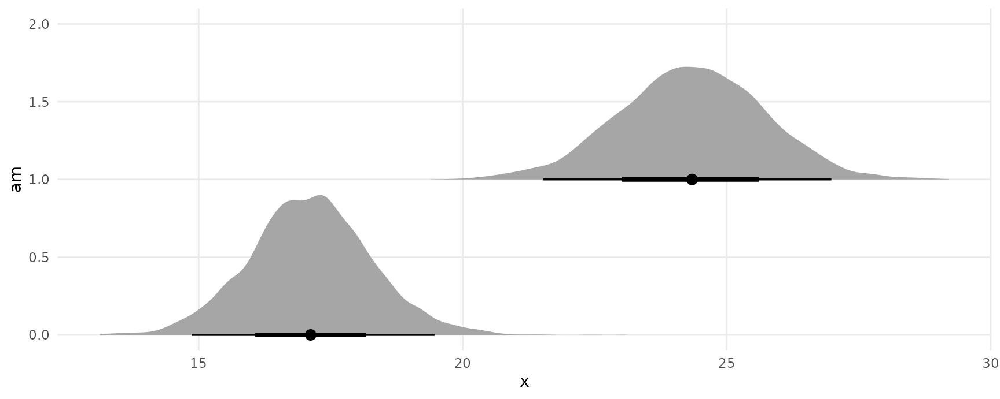
Non-linear hypothesis testing
Note: The rest of this section requires version 0.8.1 of marginaleffects, or the development version.
We begin by estimating a model:
mod <- brm(am ~ mpg + hp, data = mtcars, family = bernoulli(),
seed = 1024, silent = 2, chains = 4, iter = 1000)Notice that we can compute average contrasts in two different ways, using the avg_comparisons() function or the transform_pre argument:
avg_comparisons(mod)
#> Term Contrast Estimate 2.5 % 97.5 %
#> 1 hp +1 0.005987 0.002884 0.00886
#> 2 mpg +1 0.135474 0.078713 0.17472
#>
#> Model type: brmsfit
#> Prediction type: response
comparisons(mod, transform_pre = "differenceavg")
#> type term contrast estimate conf.low conf.high predicted predicted_hi predicted_lo
#> 1 response mpg mean(+1) 0.135474011 0.07871312 0.174722602 0.2029083 0.3718606 0.09989568
#> 2 response hp mean(+1) 0.005987268 0.00288400 0.008860451 0.2029083 0.2085257 0.19744730Now, we use the hypothesis argument to compare the first to the second rows of the comparisons() output:
comparisons(
mod,
transform_pre = "differenceavg",
hypothesis = "b2 - b1 = 0.2")
#> type term estimate conf.low conf.high
#> 1 response b2-b1=0.2 -0.3297902 -0.366603 -0.2748438The hypotheses function of the brms package can also perform non-linear hypothesis testing, and it generates some convenient statistics and summaries. This function accepts a D-by-P matrix of draws from the posterior distribution, where D is the number of draws and N is the number of parameters. We can obtain such a matrix using the posteriordraws(x, shape = "DxP"), and we can simply add a couple calls to our chain of operations:
avg_comparisons(mod) |>
posteriordraws(shape = "DxP") |>
brms::hypothesis("b2 - b1 > .2")
#> Hypothesis Tests for class :
#> Hypothesis Estimate Est.Error CI.Lower CI.Upper Evid.Ratio Post.Prob Star
#> 1 (b2-b1)-(.2) > 0 -0.07 0.02 -0.12 -0.04 0 0
#> ---
#> 'CI': 90%-CI for one-sided and 95%-CI for two-sided hypotheses.
#> '*': For one-sided hypotheses, the posterior probability exceeds 95%;
#> for two-sided hypotheses, the value tested against lies outside the 95%-CI.
#> Posterior probabilities of point hypotheses assume equal prior probabilities.